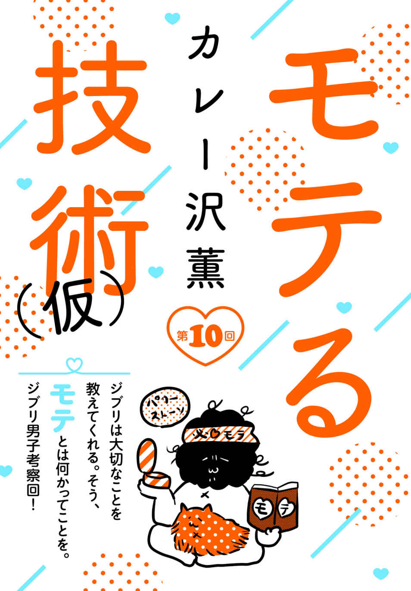
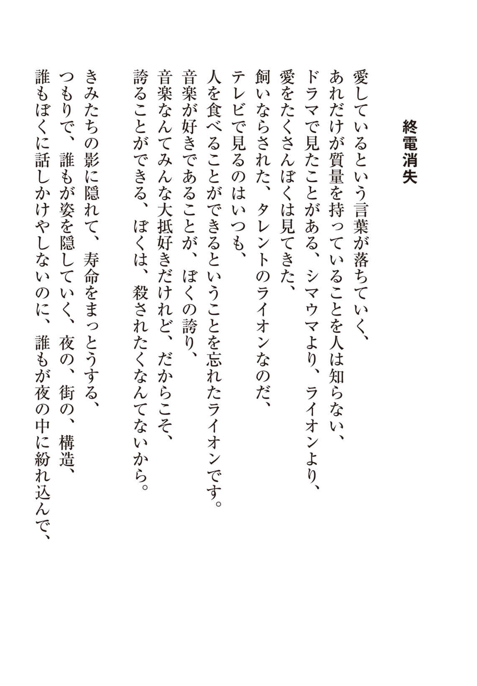
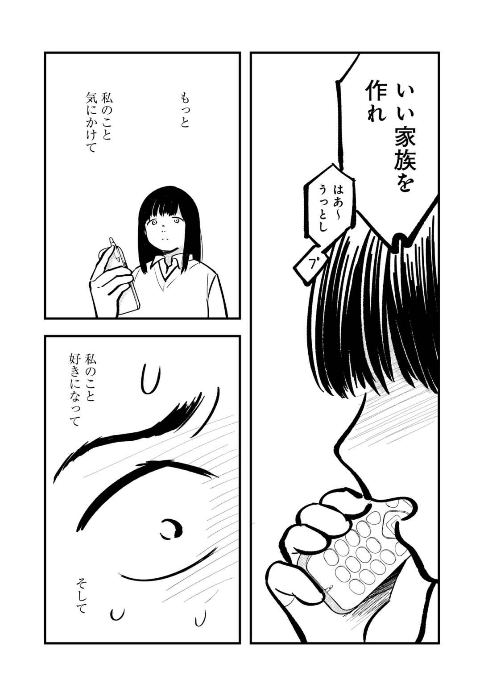
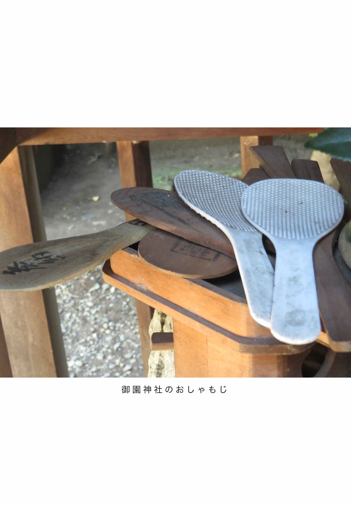

| yom yom vol.53（2018年12月号）[雑誌] | |
| 朱野帰子 & 寺地はるな & 結城充考 & 荻上チキ & 平原卓 & 渋谷直角 & 柳瀬博一 & さやわか & 越谷オサム & 伊藤朱里 & 十市社 & 赤楚衛二 & 中山七里 & 宮木あや子 & 九螺ささら & 吉野万理子 & 青柳碧人 & 東川篤哉 & 最果タヒ & 乾緑郎 & 門井慶喜 & ふみふみこ & 千葉雅也 & 砂田麻美 & カレー沢薫 & 本坊元児 & 恒川光太郎 & 新納翔 & 新井久幸 & あいみょん | |
| 新潮社 (2018) | |
CONTENTS vol.53 ２０１８年 12 月号
NEW SERIES
寺地はるな
結城充考
荻上チキ
渋谷直角
柳瀬博一
SPECIAL ARTICLE
SPECIAL STORY
越谷オサム
伊藤朱里
十市 社
CLOSE UP
赤楚衛二インタビュー
SERIES
中山七里
宮木あや子
九螺ささら
青柳碧人
最果タヒ
乾 緑郎
門井慶喜
COMIC
ふみふみこ
CULTURE & COLUMN
カレー沢 薫

本坊元児
恒川光太郎
新納 翔
BOOKS
表紙 イラスト／ 押見修造
表紙＋本文扉 デザイン／ 川谷康久 （ 川谷 デザイン）
「そして、僕たちは舞台に立っている。」 デザイン／ 椋本サトコ
【ご注意】
この本は縦書きでレイアウトされています。また、ご覧になる機種により、表示の差が認められることがあります。
この作品の全部あるいは一部を無断で複製・転載・配信・送信すること、内容を無断で改変・改竄することを禁止します。また、有償・無償にかかわらず第三者に譲渡することはできません。

第一話 自称大型ルーキー
その新人は自分のことを「大型ルーキー」だと信じている。
今日こそは穏便に定時を迎えさせてほしい。そんな願いもむなしく、「甘 露 寺 ！」と、頭ごなしに叱る声が聞こえた。
東 山 結 衣 は「ああ、今日もか」と時計を見やった。あと五分で定時だ。
「居眠りではない。瞑想ですよ、種 田 さん」
人を食った顔で言っているのは、甘露寺勝 。大学浪人と就職浪人を一年ずつ経て、この会社に入社。座学研修が終わった今週から、結衣のいる制作チームに配属になった。
「めいそう？」と、小柄な甘露寺を見下ろす、種田晃 太 郎 のよく鍛えられた背筋は波打っている。今にも飛びかかりそうだ。
「マインドフルネス瞑想。え、え、え、え、知らないのですか？ 物事を歪みなく捉えることで、ストレスを和らげる瞑想法ですぞ？」
甘露寺は鳥のように胸をふくらませた。早く逃げよう。結衣は片付けを急ぐ。
「グーグルやインテルの研修にも取り入れられておりますのに！ 種田さんは、スティーブ・ジョブズは当然ご存知で？ ジョブズも野球選手のイチローもこの瞑想法を──」
「いい。スピーチはもういい。入社したばっかりのお前のどこにストレスがあるんだ」
「いい質問ですね」甘露寺は手を銃の形にして晃太郎を撃つ。「わたくしも通勤電車で会社に来るだけで、オホホ、これほどストレスフルとは思っておりませなんだ」
もう定時だ。結衣は気づかれないようにパソコンをシャットダウンする。
「とにかく研修で寝るな。俺が講師の回は絶対に寝るな」
「そうしたいのですが、刺激的なビジネス記事がスマホでいくらでも読める昨今、研修もよほど面白い内容でないと興味が喚起されず......。おっ、東山さんが帰るってことは時間、時間」
振り返ると、甘露寺がニコニコしていた。そして、よく通る声で言う。
「わたくし、定時で帰らせていただきます！」
オフィス中の視線が結衣の背中に刺さっている、ような気がした。
創立十三周年のこの会社は、企業のウェブサイトの構築・運用を請け負うことが主な業務だ。ＳＮＳの活用や、ウェブ広告など、デジタルマーケティングの支援も得意としている。社員は前年より増えて三百五十人。平均年齢は三十歳。成長途上の会社だ。
──会社のために自分があるんじゃない。自分のために会社があるんだ。
というのが口癖の、代表取締役社長の灰 原 忍 は、ＩＴ業界の他の企業に先駆けてホワイト化をめざしてきた。現在は「残業時間、月二十時間以内」という目標を掲げようとしているらしい。そんな会社に入って十年、結衣は定時で帰る毎日を貫いてきた。昨年度末はやむなく残業を強いられる日々が続いたものの、今は元の生活に戻っている。
定時で帰る、と言えば東山結衣、というイメージが社内にはある。だからだろう。甘露寺が「定時」と口にするたび、みなが結衣を見る。晃太郎も苦々しい顔をしている。労働基準法などあってなきがごとき零細企業で育った男だから、俺は入社初日から残業だったという言葉を飲みこんでいるのだろう。人事部からは新人の残業は厳禁と言われているからだ。
「あ、そだ」甘露寺が言う。「種田さんに外注さんから電話あった気が。三時間くらい前」
「俺、ずっとここに座ってたよな。報連相 って研修で習ったよな」
「種田氏からは圧が滲み出ていますのでな。いかにわたくしが大型ルーキーといえども、恐ろしくて......。話しかけやすい上司が良い上司と言いますよ。ではっ」
甘露寺は出退勤を記録するカードリーダーのほうへ、ウキウキと走っていく。お疲れさまでした、と結衣も鞄を抱えて続こうとしたが、「東山さん」と呼びとめられた。
「あ、でも、種田さん、今出ればビールが半額で──」
「今の東山さんには定時はあってないようなものでしょ？」高圧的な声が結衣の言葉を遮る。「同じ管理職としてご相談したいことがあるのですが、東山サブマネジャー？」
しかたなく戻った。甘露寺の件は結衣にも多少は責任がある。
今月頭、四月一日付けで、結衣はサブマネジャーに昇格した。ついに管理職だ。......といっても、たいした権限はなく、残業手当は出ない。なおさら早く帰りたい。一方、晃太郎もマネジャーに繰り上がったが、甘露寺のせいで仕事にならないらしい。
マネジャー席とサブマネジャー席は背中合わせだ。結衣が鞄を抱えたまま戻ってきて、時計を気にしながら自分の椅子に腰かけると、晃太郎の愚痴がはじまった。
「今まで、どんなことにも耐えてきた。できない奴のフォローもさんざんしてきた。でもあいつは、あいつにだけは耐えられない。菓子食いながらキーボードを打つのをやめさせるのに三日かかった。隣にいるのにメールで質問するなと何度言ったかわからない。しかもあのスピーチもどきは何だ？ コンサル気取りか？ 電話一つまともにとれないくせに！」
「種田さん、声大きい。他の新人の子たちも聞いてるんだから」
「あいつが動いてんの見るだけで、イライラする」晃太郎は袖をまくる。「見ろ、蕁 麻 疹 だ。皮膚科で心因性だって言われた。掻くなって言われたけど、あいつの首に手が伸びそうになる衝動を抑えこむと、皮膚が裂けそうに痒くなって......時計を見るな！」
晃太郎は肘掛けを叩いて、結衣の視線を自分の腕に戻させる。
「うわ、血、出てる。......どうかな。もっと大らかな心を持って接したら？」
「大らか。大らかね。では明日から、東山さんが大らかに見てあげてください。代わりに──東山さんが見てる新人、桜 宮 だっけ？ 彼女は俺が見る。明日、二人に伝える」
有無を言わせない口調だ。昇格して三週間のあいだに幾度となく釘を刺された。上司は俺だと。押さえつけておかないと何をするかわからないと思われているのだろう。
「わかりました。じゃあ桜宮さんをお願いします。くれぐれも優しく、ね」
「それから、今年度の実績の件だけど」
新人教育の話だけではなかったのか。結衣は浮かしかけた腰を下ろす。
「うちのチームの売上目標は一億。前年度から引き継いだ案件と、四月に開拓した案件の総額が今のところ八千万。あと二千万足りない」
あきらめて結衣は鞄を机に置いた。ビール半額、今日もさようなら。
「四月末にコンペでベイシックに負けたのが痛かったね。でも、目標額も上がりすぎだよなあ。一億って。管理部が決めたんだろうけど、飛ばし過ぎだよね」
業界ナンバーワンを目指す社長の意をくんでのことだろうが、達成は難しい。
「それにもう四月も終わりだし、新しい受注は無理じゃないだろうか」
「実は営業が太い話を持ってきている。先方は緊急でコンペに来てほしいと」
晃太郎は座ったまま、椅子をくるりと回し、自分の机から資料を取った。
「フォース株式会社。スポーツウェアメーカーだ」
強そうな名前だ。結衣は資料を見た。社員千人程度の新進企業で、ここ十年でベンチャーから急成長している。国内市場ではナイキやアディダスと争うまでになっている。
「すでにベイシックが運用で入っているが問題が起きて、契約更新を機に他社に乗り換えを考えているらしい。急な話だが、近々にヒアリング、コンペはその二週間後。勝てば公式サイトのリニューアルだけで二千万円は出すと言ってる。さらに運用もセットで、こっちは年間で五千万」
運用とは、できあがったサイトを保守、更新する業務のことだ。常駐社員を一年から二年の間派遣して行うので、長期にわたって売上が見込める。しかし五千万とは太っ腹だ。
こんなに良い顧客はめったにないというのに、ベイシックはどんな問題を起こしたというのだろう。曲がりなりにも業界一位の会社だ。凡ミスをするとは考えがたい。
「この案件が獲れて、さらに運用部の実績にも貢献すれば、チームでの年間ＭＶＰ受賞は確実だ」
ＭＶＰなんて今まで縁がなかったな、と思っていると、晃太郎が言った。
「俺は勝ちたい。......勝って、失ったものを取り戻したい」
「失ったものって？」
晃太郎は答えないが想像はついた。前年度、このチームは惨憺たる有様だった。
制作部にはウェブサイトの構築を行うチームが五つある。その一つである結衣たちのチームの前マネジャー、福 永 清 次 が請けた星印工場の案件が慈善事業のように安い予算だったのだ。おかげで人手が確保できずに、五ヶ月にわたって無謀な進行を強いられた。
もともと働くのが好きな晃太郎はほとんど会社から帰らず、みなを定時に帰そうと苦心した結衣さえも過労で倒れた。苦心の末、福永を現場から外し、無事に納品はしたものの、前年度の実績は赤字ギリギリで、晃太郎と結衣の昇給も先送りとなった。
晃太郎は「責任は自分にあります」と、このペナルティを受け容れたが、この男のことだ。誰よりも仕事ができる社員という称号を取り戻したいのだろう。
（私が失ったものは、もう取り戻せないけど）
あの日、結衣は婚約者だった諏 訪 巧 に浮気された。話し合いの末、婚約解消することになったが、新居のために借りたメゾネットマンションの解約もまだ終わっていない。
それに......目下の問題はまたもや、この男だ。甘露寺を手放してせいせいしたのか、闘志をみなぎらせている晃太郎を不穏な思いで見ていると、本人が口を動かした。
「コンペには参戦する。営業と決めてきた。忙 しないが、あさってがオリエンだ」
「そんな無理にＭＶＰ獲る必要あります？ 新人も増えたし、もう手一杯で」
晃太郎の目が結衣を射抜く。「上司は俺だ」
「......そうですか。じゃあ、お先に失礼します」と、席を立つ。
額の傷跡が痛んだ。過労で倒れた時にできたものだ。結衣の命を危険に晒す、ということがあっても、この人は働き方を変えない。仕事中毒の男のそばにいるのは苦しい。
エレベーターを待っていると、他のチームの女性社員が隣に寄ってきた。
「東山さんのおかげで、残業月二十時間以内、実現しそうですね」
「いや、別に私のおかげじゃ......」
そうすると決心したのは社長の灰原だ。結衣はきっかけを与えたに過ぎない。
「働き方改革の先鋒に立つなんて、尊敬します。これからも戦ってくださいね」
最近よく言われる。でも一緒に戦うと言われたことはない。「じゃ、残業があるので」と彼女は去った。エレベーターに乗ると、今度は横に居合わせた男性社員に囁かれた。
「前年度のおたくのチーム、赤字ギリギリでしょ？ それでも社長に持ち上げられるんだから、いいですよね、ホワイトな働き方のロールモデルさんは」
誰か思い出した。前年度ＭＶＰのチームのサブマネジャーだ。
「それに、もうすぐご結婚ですよね？ 独身男はコンビニ弁当でも買いに行きますわ」
エレベーターから降りると足早に会社が入っているビルから出た。ここは針の筵 だ。
ホワイトな働き方のロールモデルになるつもりも、社長に持ち上げられている実感もない。ゴルフ場で直訴に失敗して以来、多忙な灰原とは会っていない。いや、その前に──。
（何もかもが、もうどうでもいい）
結婚の話は露と消えた。チームメンバーの幸せのために、定時で帰る生活を捨ててまで、長時間労働を強いる上司と戦った挙げ句、他でもない自分の婚約者に裏切られたのだ。
浮気したんだよね、と問いつめると、巧は言った。「結衣ちゃんも、僕との結婚よりも仕事を選んだじゃない？」それから言い直した。「あ、仕事じゃなくて、種田さんか」
言い返せなかった。納期前の一ヶ月、結衣は朝から晩まで、最後は休日まで、晃太郎と過ごした。ただし、職場で、タスクまみれで、だけれど。
婚約解消も二度目となると惨めで、会社の人にも打ち明けづらい。今のところ、知っているのは晃太郎だけだ。新人指導さえなければ旅に出たかった。北海道にでも行って、山の上から雲海を眺めて瞑想したい。瞑想......。甘露寺の顔が浮かんで、明日の出社が憂鬱になりかけた時、息をはずませて、新人の女の子が走ってきた。すがるように言う。
「私、東山さんにもう教えてもらえないんですか？」
桜宮彩 奈 だ。この会社の競合相手であるベイシックに入社後、三年で退職し、第二新卒としてこの会社に採用された。ただ──。いや、だめだ。結衣は先入観を頭から追い出し、
「さっきの話、聞こえちゃった？ ごめん、不安にさせたよね」と言った。
「私、男性の上司って怖くて、できれば東山さんがいいなって」
桜宮は上目遣いで結衣を見ている。瞳に涙が湧いていて、ドキリとする。
そう、この子は可愛いのだ。とびきりの美人というわけではないが、若さが雲母のようにきらきらと、細い顎や、ふんわりした胸や、小さい膝を覆っている。彼女が立ったり座ったりするたび、男性陣は落ち着かなくなるらしい。チームの一人、吾 妻 徹 などは、彼女がコピー機を詰まらせただけで、「教えてあげる！」と飛んでいく。彼女も甘えてばかりいる。そんなだから、仕事の出来が入社一年目の子たちと同じレベルなのではないか、と決めつけそうになるのは、彼女が愛くるしいからだろう。いけない。これじゃ僻 みだ。
「大丈夫だよ。私も同じチームにいるし、種田さんは、その......たまに？ 死ぬ気で働けとかウザい時もあるけど、そういう時は私のとこに逃げてくればいいから。ね？」
晃太郎に預けたほうが、こういう子は鍛えられるかもしれない、と思ったのだが、桜宮は「はあい......」と不服そうな笑みを浮かべた。涙はもう乾いたらしい。
「ワガママ言ってすみません......。戻ります」
ビルに戻る彼女の細い腰に巻かれたスカートが、夕方の風になびいている。とりあえず涙ぐんでみた、という感じなのだろうか。またそんなことを考えてしまった。
上海飯店は、会社から歩いて五分の雑居ビルの地下にある。薄暗い階段を降りると、逆さまの「福」がベタベタと貼ってあるガラス戸があり、押し開けると、
「今日は料理人休みよ」
と、店主の王 丹 が出てきた。美人なのに、化粧もせず、髪を一つ結びにしている。「五目炒飯でいいね」と、返事も聞かずに戻っていく。すぐにビールがジョッキで出てきた。
一気飲みすると、白い泡がしゅわしゅわと喉を開いていく。黄金の液体がいくらでも体に入ってくる。もうすぐ夏だなあと思う。
炒飯を待ちながら、フォースについて調べて、と〈愁〉にメールを打った。ベイシックがどんな問題を起こしたのか気になる。〈愁〉は晃太郎の九歳下の弟、種田柊 のアカウント名だ。結衣は彼に個人的に調査のバイトを頼んでいる。ひきこもり生活は最近ようやく脱したものの、再就職はしていないので、小遣い稼ぎのために引き受けてくれるのだ。
二杯目を頼んで、アツアツの炒飯にレンゲをさしいれていると、常連のおじさんが、「甘露寺くん、どう？」と、餃子をつまみに飲みながら話しかけてきた。
「ああ......甘露寺くん。甘露寺くんね。びっくりするほど何もできないです」
実は甘露寺とは、最初、この店で出会ったのだ。
一ヶ月くらい前のことだ。甘露寺はたまたま通りかかって、ふらりとこの店に立ち寄ったと言っていた。あどけない顔のわりに態度が大きいので、結衣はてっきり同年代だと思った。ウェブ業界で求職中だと言っていたので、キャリアがあるのだろうと思いこんでいた。酔っていたこともあり、「うちの会社に来れば」と結衣は名刺を渡した。
まさか本当に来るとは思わなかった。しかも、何もできない二十四歳とは......。
エントリーシートの「紹介者」の欄に甘露寺は、東山結衣、と書いたらしい。「どうせ落ちるだろう」と結衣が高をくくっているうちに、なぜか社長面接を通過し、採用されてしまった。年齢のこともあって、今春の新人社員の中に入れてしまおうと、人事部は判断したらしいが、入社後に二週間行われた座学研修の間も居眠りばかりしていたようだ。
「......という感じです。はい、仕事の話、終わり。もうしません」
「じゃあ、プライベートなこと聞いちゃおっかな」もう一人の常連、辛いもの好きなおじさんが青唐辛子をかじりながら、下世話に笑う。「晃太郎くんとはどうなったのよ？」
それを聞きますか。テーブルに突っ伏したくなった。
「どうなったんでしょう......ほんと、どうなったんでしょうね......」
なになに、と身を乗りだした餃子のおじさんに、辛いもの好きのおじさんが「三月の頭に、二人、ここ来たのよ」と説明する。星印工場の案件を無事納品し、巧の浮気現場に出くわした後、晃太郎と結衣は上海飯店に来た。その時のことを言っているのだ。
「あの時の二人、妙に色っぽかったんだよね。あ、違うって言ってもダメよ？ オジサンにはわかるの。男と女がドミノ倒しになる寸前の、一触即発の空気ってものが。こーれーはーって一人で盛り上がっちゃったもんね。でもワンタンが......」
ワンタンは王丹の中国語読みだ。いつの間にか厨房から出てきていて、「余計なこと言うな」とおじさんを睨みつけている。「ほら、だから今まで聞けなくて」と、おじさん。
こうなったら尋ねてしまえ、と結衣は言った。
「あのう、あの夜、私たち、どうなったんでしょう？」
おじさんたちの動きが止まった。王丹も、いつもは細い目を見開いている。
「いや、イイ雰囲気のまま出てったじゃない？ だからてっきり、ドミノ倒しと......」
店を出て階段を上がる途中、ふらついて抱きとめられ、頬が熱くなったことは覚えている。でもその後がわからない。気がついたのは翌朝で、実家の布団に寝ていた。母によると深夜に一人でふらりと帰ってきたらしい。ますますわからない。
次に晃太郎に会ったのは、その週の木曜日、同じく上海飯店で行われたチームの打ち上げだった。目を合わそうとしない晃太郎に、結衣は勇気を振り絞って尋ねた。月曜の夜に何があったのか、と。晃太郎は眉根を寄せ、少し黙っていたが、怒ったように言った。
──お前とはもう仕事の話しかしない。
意味がわからない。ま、どうせ、色っぽいことなどなかったのだろう。
晃太郎とは、巧の前につきあって婚約までしていた。しかし、働き方の違いから喧嘩になり、破談になっている。でも別れてもなお、結衣の心の広い場所を晃太郎は占拠していた。だから、あそこまでしたのだ。福永の命令通りに過労死寸前まで働こうとする晃太郎を職場からひきはがそうとした。そのためなら何でもした。巧は結衣の執着に気づいていたのだろう。だから手近にいた後輩の女の子を新居に引きこんだのではないのか。
その巧と別れると決めた以上、昔の恋の復活を邪魔するものはないはずだった。
二人は上海飯店の閉店時刻まで居座って、くだらないことを喋り、ジョッキを何杯も乾した。晃太郎はよりを戻したがっているように見えた。「結衣さえよければ」とか、「虫のいい話だけど」とか、言いかけては、「やっぱ今日はいい」と首を振っていた。
（それが、どうしてあんなに他人行儀になったんだろう）
結局、今の恋も昔の恋も失った。独り暮らしていたマンションも引き払い、結婚準備のために散財もしたので、今は実家に居候している。その生活がまた気詰まりで、
「帰りたくないなあ」
と、頬杖をついていると、餃子のおじさんが「あ、そういや」と言った。「回鍋肉のおじさんの長男、昨日の夜、ここへ挨拶に来てくれたよ。もう就職だってさ」
回鍋肉のおじさんは店の常連だった。半年前に仕事中に倒れて亡くなっている。
「息子さん、まだ小学生じゃなかったですか？」
「結衣ちゃん、それ次男。長男は春からスポーツ関係の会社に勤めてるって。サッカーやってた子で、闘志みなぎってたなあ。遅い時間だったのに職場に戻るって言ってた」
入社して一ヶ月でもう残業か。なんとなく嫌な気持ちになった。回鍋肉のおじさんも、ここで夕飯の回鍋肉を食べた後は職場に戻っていた。そして死んだのだ。
「裁量労働制っつってたかな。定時がなくて、常時臨戦態勢なんだってよ。なんて会社だったかな？ あ、フォースだ！ 結衣ちゃん知ってるかな。スポーツウェアの」
知っているも何も......。落ち着かない気分になる。柊からの返事はまだなかった。
実家の玄関を入り、こっそり二階へ上がろうとしていると、「結衣」と呼ばれた。母が居間で洗濯物を畳んでいた。「今日もフラダンスの練習行っちゃだめだって」
今夜も父の愚痴か。「お父さんもゴルフ行けばいいのに」と溜め息をつきながら居間に入る。
「ゴルフ仲間が入院しちゃったの。それで部下を誘ったら迷惑がられたらしくて」
「部下っていったって、昔のでしょ。むこうは現役だし、そりゃ迷惑だよ」
「一日中、一人でいるでしょう。お母さんがお友達と会うのが気に食わないの。こんな勝手な話ある？ 定年する前は、ほとんど帰ってこなかったのに今になって......」
涙ぐんでいる母を宥 めていると、縺 れた足音をたてて、父が居間に踏みこんできた。
「結衣、帰ってくるの遅い！ また固まったよ！ だめだなもう、最近の機械は」
買ったばかりのスマートフォンを突き出してくる。アマゾンプライムを視聴中にフリーズしたようだ。「ちょっと待ってね」と再起動すると、古い映画のタイトルが出た。
『忠臣蔵』──とある。
古い時代劇だ。結衣は見たことはないが、昔は年末によく放送されていて、父はテレビを占領して観ていた。裏番組が見たいという子供たちの希望はことごとく退けられた。
父が寝室に引っ込むと、母が「ありがと」と言った。「結衣がスマホで昔の映画観られるようにしてくれてから、随分楽になったわ」
「プライベートをないがしろにしてきたつけが回ったんだね」
失ったものを取り戻したい、と言っていた昔の男のことを、なんとなく思った。
「晃太郎くんはやめておきなさい」ドキリとして我に返ると、母に見られていた。「仕事中毒の人と結婚したら地獄よ。死ぬまでふりまわされて、お母さんの人生終わりよ」
「しないから、晃太郎とは」と、二階に上がりつつ、母の言う通りだと思った。
晃太郎と大喧嘩の末に別れたのは、彼が際限なく働く男だからだ。それは今も変わらない。障壁は変わらず二人の間にある。あの夜、何もなくて正解だったのだ。恋愛は当分お休み。仕事に集中しよう。甘露寺をちゃんと育てて、定時に帰る生活を取り戻さなければ。
スマートフォンが鳴った。柊からだ。急いで開く。
送られてきたフォースの情報に、目新しいものはなかった。晃太郎から渡された資料と内容はほぼ同じだ。裁量労働制であることも上海飯店ですでに聞いている。しかし最後に柊が、知っているとは思いますが、と書き添えてくれた情報を見て、結衣は眉をひそめた。
『この一週間ほど、フォースは差別的な内容のウェブＣＭで大炎上中です』
週が明けた月曜日、結衣は、さっそく晃太郎と話をしようとして、異変に気づいた。
甘露寺がいない。
オフィスを見回していると、うしろのマネジャー席から情報がもたらされた。
「まだ布団の中だ」晃太郎がモニターから目を離さずに言う。「間違いない。電話してみな」
半信半疑で甘露寺のスマートフォンにかけると、「ほわい」という声がした。本当に寝ていた。すぐ来て、と言って切ったが、十時になっても来ない。毎朝こうなのかと、晃太郎に尋ねると、配属されて二日はこうだった、と言う。最近、結衣は打ち合わせに直行してから会社に来ることが多かったので知らなかった。
「一回じゃ起きないぞ」
まさか、と思いつつかけると、甘露寺が「ううむ」と唸る声がした。安らかな鼻息も。
「甘露寺くん？ 今、何時だと思ってるの？ ああ、また寝ないで、お願い......」
信じられない思いで電話を切ると、晃太郎の声が飛んできた。
「毎朝、モーニングコールしたほうが楽だ。俺は三日目から七時にかけてた」
「え、私がするの？ 毎朝？ それって早朝手当つきますか？」
「つくわけないだろ、管理職に」晃太郎はキーボードを叩きながら腕を掻いている。
しかたなく自然に起きるのを待つことにした。彼にばかりかまっていられない。
「フォースのこのウェブＣＭ、知ってる？」と、タブレットを見せると、晃太郎は「炎上してるんだろ？」と事も無げに言った。知っていたらしい。
それはフォースのブランド広告だった。美しい男女が露出度の高いウェアを着て、男は筋肉を、女はひきしまった腹やお尻を見せびらかして闊歩している。映像も音楽もセンスがよく、買いたいという気持ちが湧かなくもない。問題はコピーだった。
〈力がなければ男じゃない。腹が出たらもう女じゃない。すべての人にスポーツを〉
動画はあっという間にＳＮＳで拡散され、男女両方に対して性差別的だ、と批判されているそうだ。結衣も、もう女じゃない、というところにカチンときた。
「そりゃお腹が出るのは私だって嫌だけどさ、なんだろう、この上から目線」
晃太郎はちらりと結衣を見て、「運動不足なんじゃないの」と言った。
「あー、そうか、種田さんも筋肉側の人だもんね」
この男は小中高と、人生の前半を野球に捧げている。彼の実家の廊下にはトロフィーや盾が並んでいる。大学の野球部で肩を壊してプロ入りはあきらめたらしいが、長時間労働をのりきるためなのか、今でもトレーニングは欠かさず、会社にシューズも置いてある。
「そもそも、このＣＭが炎上しなけりゃ、うちが食いこむ隙はなかった」
晃太郎によれば、フォースはこの炎上をベイシックの責任だと言っているらしい。
「ＣＭを制作したのはフォースだが、どっかに責任を押しつけなきゃ収まらないんだろう。役員に緊急に対処しろと命じられて、担当社員が慌てて各社の営業に電話してきた」
といって、ベイシックも引き下がるわけではなく、コンペには参加するらしい。むこうは現場を知っているので圧倒的有利と言える。それにしても面倒そうな会社だ。
「とにかく勝つしかない」晃太郎は覚悟を決めた顔だ。
「手のかかる新人が五人もいるのに、新規案件まで獲れる気がしないなあ」
「獲るのは俺だ。この件に関しては、東山さんは最初だけ顔出せばいいから」
なぜ、この件に関しては、なのかと尋ねようとすると、スマートフォンが鳴った。やっと起きたかと画面を見て肩を落とした。甘露寺ではない。忘れていた。今日は月曜日だ。
会社の非常階段は節電のため、蛍光灯が半分外されていて薄暗い。
「ごめん、グロ。新人の男の子を起こすのに手間取ってた」
階段に座りこんでいる男に声をかけると、「遅いわ！」と、真っ赤でギザギザした頭がふりむく。派手なＴシャツを着て、ごつい時計を腕に三つもつけている。
管理部の石 黒 良 久 だ。会社全体の案件を管理し、予算、利益率、各チームのパフォーマンスを見張るのが彼の仕事だった。結衣より年下の三十歳で、まだ若いが、創業メンバーでもあり、ゼネラルマネジャーにまで昇りつめている。つまり結構偉い。でも──。
「長いつきあいの俺よりも、若い男優先とは、ユイユイも年取ったな」
こういう粗野な男なのだ。「はい、今週の分」と、ジップロックの袋を渡すと、石黒は中から花柄の小袋をつまみあげ、袋を破って一気飲みし、目頭を押さえている。
「あ、いっちゃう......」
重度の砂糖中毒なのだ。二十代の頃、無茶苦茶に働きながら大量摂取していたため、現在は糖尿病。若くて美人の妻によって、大好きだったスティックシュガーは一日一本と制限されてしまい、月曜日に結衣が渡すことになっている。
「この業務、そろそろ誰かに引き継ぎたい。管理部に新人いないの？」
「そんなことより、ユイユイ、種田晃太郎に、俺が運動不足だって伝えたな？」
「ああ、伝えたかな」言ったとしたら、上海飯店でいい雰囲気になっていた時だろう。「太りすぎて夫婦生活がどうとかって、グロ言ってたでしょ」
「俺がどんな目に遭ったか知ってるか？」石黒は隈取りしたような目を見開く。「あいつ、走りましょうって何度も電話かけてきて、昨日ついに、そこの川っぺりで早朝から走らされたんだぜ！ 時速八キロキープですとか言われて、走りながら目標額について矢継ぎ早に質問してきて、息がきつくて話せねえっつったら、それじゃフルマラソン出られませんよとか怖い顔で言われて。誰も出るなんて言ってねえし。もう、あいつ、いや！」
「前はあんなに好きだったじゃん。友達になれば？」
仕事ぶりに惚れこんで、この会社にヘッドハンティングしたのは石黒なのだ。
「いやだ。つうかさ、種田がお前の昔の男だって知って、俺は海より深く納得したぜ。あいつとつきあってた頃のお前は、休日明けは腑抜けてボンヤリしてたもんな」
当時の上司は石黒だった。しかし結衣の黒歴史ばかりよく覚えているものだ。
「そうなるよな、あいつが相手ならな。夜のスポーツのほうもハードそうだもんな」
あながち、間違ってはいないが、「そういうこと言うの、セクハラですよ、石黒ゼネラルマネジャー」と、結衣は顔をしかめた。
「この前の燃えた案件だって、ほとんどあいつのせいみたいなもんだろ？ 二度とあいつと恋愛すんな。ま、俺まで巻きこんだ償いに死ぬほど働いてもらうけどな。イヒヒ」
最低だ、と思いながら結衣は言う。「で、なんで目標額あんな高いの？ 一億って」
「いろいろあんだよ。とにかくお前らは目標額達成に骨身を砕け」
スティックシュガーの空の袋を噛みながら、石黒は言う。
「それにな、ここだけの話、シノブッチはお前を育てて、出世させたいと思ってる。もっと頭を使え、小手先の策略に頼るな、って言ってたぜ。あ、これ、伝言な」
シノブッチとは、社長の灰原のことだ。会社が大きくなりつつある今でも、創業メンバーである石黒とは月に一度は食事をするらしい。......もっと頭を使え、か。臆病なのかしたたかなのか、未だにわからない灰原の顔が脳裏に浮かぶ。十年前、この会社の最終面接を受けた結衣は、灰原を相手に志望動機を語った。定時に帰る会社を作りたい、と。
──でも君は十年間、何もしなかったね。
二ヶ月前、無謀な進行を強いる福永を外してくれと直訴しに行った時、灰原にそう言われた。そうやって突き放すことで、結衣に現場を変えさせようとしたのだろうが、
「そそのかされるのはもう勘弁」と結衣は首を横に振った。「戻る。午後から新卒の面接」
「あーそれ俺パスした。あんなクソ甘い奴らの採用なんかやめりゃいいのにな」
「あのね、グロは学生の時からいるから知らないだろうけど、就活って甘くないよ。私も百社くらい受けたけど、全部落ちて、百一社目でやっと......」
「ユイユイ、さては最近の学生を知らねえな」石黒は意地悪く笑った。「ま、行ってみろ。シノブッチがなぜお前を育てたいのかも、ついでにわかるぜ」
クソ甘い奴ら。石黒のその言葉の意味を、午後中いっぱい、結衣は噛み締めることになった。二十人の学生の面接を終え、会場となった会議室の片付けを手伝っていると、
「これが、ホワイト世代、ってやつですか！」
同じく面接に参加していた三 谷 佳 菜 子 が鼻息荒く寄ってきた。まじめな性格で、前は同じチームにいた。今は運用部に異動し、念願のチーフの座に就いている。
「知ってます？ 売り手市場が加速して、去年の内定率は過去最高ですって......。私が面接した学生なんか、五社しか受けてないのに、三社から内定出てるって」
「へえ。だから人事部も腰が低いんだ。タクシーチケットまで渡してたし」
「ホワイトすぎるにもほどがあります！」三谷の目は吊り上がっている。「エントリーシートも自己アピールもスカスカなのに、なんで通さなきゃいけないのか」
人事部によれば、二〇一八年を機に、十八歳の若者が減少に転じる見込みで、すでに学生不足は深刻だという。あの甘露寺だって採用されるわけだ。さほど優秀でない若者ですら、金のわらじを履いても見つからない。定時に帰れます。有休消化率は業界一。育休は男でも三年。いかにホワイトかをアピールするのに血眼だ。社長の灰原が結衣を育てたがっている理由もよくわかった。定時で帰る管理職は広告塔に打ってつけなのだ。
「うちの会社、格差採用もやるんですって」三谷は息巻いている。「データ解析のプログラミングができる学生のためにわざわざ作った制度だって聞きました。なんと年俸一千万を要求されたそうです！ しかも、それを承諾までしたのに蹴られたって。ほんとにうちに来る気があるのかって質問しただけで、圧迫面接だと受け取られたようで」
「データ解析の技術って、うちの会社弱いんだよね。来てほしかったなあ」
「技術があっても新人は新人！ 給料は低くていいです、ストレス耐性高いです、と言って入ってくるべきです。......でなきゃ、氷河期に就職した私たちが哀れすぎます！」
三谷の話を聞いていると疲れる。結衣は椅子を重ねながら話題を変えた。
「運用部には慣れました？ ルーティンワークの部署だし、定時で帰りやすいでしょう」
「ええでも、帰ってもやっぱりやることなくて、残業してたほうがマシでした」
三谷を定時に帰すためにした様々な苦労を思い出しながら、最後の椅子を重ねる。
「えーと、じゃあ、......語学の勉強とかどう？ 上手になったら海外旅行にも行けるし」
語学ですか、と眉間に皺を寄せて考えはじめた三谷を残し、制作部に帰ろうとしていると、「東山さん」と呼び止められた。まだ何かあるのか。
「フォースのコンペ、運用部からは来 栖 くんを出します。東山さんもやりやすいでしょ」
「ああ、うん、でも来栖くん、そっちに異動したばっかりなのに、大丈夫？」
「彼はご存知の通り優秀ですから。運用部は退屈で辞めたい、と毎日言われてます」
「あ、そうですか......」まだ辞めたいなどと言っているのか。
「東山さんが育てた新人って、どうしてみんなああ、自分本位なんでしょう。陰で、東山─来栖─甘露寺ラインと言われてるの、知ってます？」
「なんですか、その、なんとなく、不名誉な感じのラインは？」
「グータラ社員の系譜です」三谷は、はあっ、と溜め息をつくと会議室を出ていった。
他の業界でも同じなのかどうか、結衣は知らないが、ウェブ業界では、コンペの前にまずオリエンテーションを受ける。どんな案件なのかを取引先に説明してもらうのだ。
竹橋駅を出た結衣は「わあ」と手を額にかざす。皇居をこんな近くで見たのは久しぶりだ。あのあたりが二の丸ですと、歴史好きだという営業の社員が内壕のむこうを指さす。
「ここは平川門。昔は不浄門と言われ、死者や罪人を運び出していたそうです」
その不吉な門から歩いて十分のところに、フォースの本社はあった。
正面玄関に立つと、真っ黒な外壁に圧倒された。高級車の塗装のようにつやつやと輝いている。受付には武将の兜を現代風に模したロゴが大きく飾られていた。
「オホホ、ダース・ベイダーの基地に来たみたいですな！」
甘露寺ははしゃいでいる。取引先を見せれば仕事への緊張感が湧くのでは、と思って連れてきたのだが、すっかりリラックスしている。
「勝手に歩き回るな！」と、むしろ緊張しているのは晃太郎だ。目を離すな、と言われて結衣は、甘露寺を引っ張ってきて待機スペースに座らせる。その様子を、
「相変わらずですねえ、種田さんも、東山さんも」
と醒めた目で見ているのは、去年まで結衣が育てていた新人だ。
来栖泰 斗 。容姿もよく、頭もいい。すぐに「辞めます」と言うことと、思ったことをなんでも言ってしまうことを除けば、将来を期待されている入社二年目だ。多くの部署を経験させたいとの人事部の意向で、今年の春から運用部に異動になっている。
「ほんとに炎上事件起こすような会社の案件獲る気ですか、東山さん」
「あ、炎上の話はタブーでお願いします」と、営業社員が唇に指を当てた。
「えっ。でも、もしこの案件を受けたら、ウェブＣＭの管理もこっちでやるんでしょ」
「そうなんですが、先方はかなりセンシティブになっておりまして......」
センシティブにさせられたのは、あんなＣＭを見せられたこっちのほうだ、と結衣は思ったが、晃太郎は「了解した」と、資料を取り出しながら低い声で言った。
「東山さんは余計なことを言わない。来栖も、俺が運用の話を振るまで黙ってろ」
この男にしては余裕がないように見える、と思った時、突如、太鼓が打ち鳴らされた。
「忠義を尽くせ！」
大勢の男が唱和する声が轟く。大型モニターで会社紹介を流しているらしい。
「戦でも始まったかと思いました」と言う来栖と、顔を見合わせていると、「お待たせしました」と、フォースの社員が出てきた。
上半身の筋肉がくっきり浮き出た黒いウェアを着ている。胸には兜のロゴ。たぶん、サムライソウル、というフォースの看板商品だ。結衣たちを案内しながら彼は説明する。
「このウェアがうちの商品で最も機能性が高いですね。社員はオフィスでも着てますよ。長時間肉体をサポートするので、朝も昼も夜も疲れずに仕事できるんです」
「常時臨戦態勢、ですか」と結衣が言うと、「そうです」と誇らしげにうなずく。
「うちは裁量労働制ですので、定められた就業時間がありません。自由に時間を使ってよいというのが、会社の方針です。就業時間も自分の裁量で決められます」
なるほど、それは理想の働き方の一つかもしれない、と結衣が思った時、「彼らは休憩中です」と、フォースの社員がガラス張りの部屋を指さした。黒をまとった男たちがランニングマシーンで猛然と走っている。休憩しているようにはとても見えないが、
「社内にジムがあるんですか」と、結衣は尋ねた。
「我々に、仕事と生活の区切りはないんです。休憩時間はジムで汗を流し、疲れたら社員食堂で良質のタンパク質をチャージ、眠くなったら酸素マシーンで睡眠をとります」
「ずっと社内にいるんですね」と、来栖が言う。
「というか、社外に出る必要がないんですよ。うちに来る新人も最初は戸惑いますが、人格改造っていうんですか？ 最初にガツンと強化研修を行えば、すぐ馴染みます」
すぐ前のランニングマシーンの速度計には十二キロという赤い数字が出ている。回鍋肉のおじさんの息子もこんな速度で走っているのだろうか。コンペに勝ったら、こちらの運用部からフォースに常駐する社員を出すが、こんな会社に来させて大丈夫なのだろうか。
「ここに常駐させられたら辞めます」と、来栖が小声で言った。
こういう環境を喜びそうな男もいるけれど、と晃太郎を見ると、その目は甘露寺にぴったり向けられていた。監視しているのだろう。通された会議室には二人、社員が待っていた。名刺をもらったが、同じウェアを着ているので見分けがつかない。甘露寺はさっそく貰った名刺の裏に何か書いている。何をしているのだろうと気にはなったが、
「わ！ 種田さん甲子園行ったんですか？ ポジションは？ 今はどこでやってるの？」
と、フォースの社員たちが盛り上がったので視線を戻した。営業が情報を提供したらしい。晃太郎は「ピッチャーです」と答えた。「肩を壊したので大学まででやめました」
「東山さんは、スポーツは何やってました？ どこまでいきました？」
質問がこっちにも飛んで来る。
「私はスポーツはやらないです」
「え、ダメじゃないっすか。フォースでは、スポーツでの順位、イコール、社内でのヒエラルキーなんですよ？ 東山さん、うちでは一番下になっちゃいますよ」
いきなり殴られたように思った。まずいと思ったのか、晃太郎が言った。
「そろそろ、オリエンテーションをお願いできませんでしょうか」
とりたてて珍しい案件ではなかった。これまではスポーツをハードにこなす層がターゲットだったが、創立十周年を機に、普段運動をしない人たちを顧客に取り込み、シェア拡大をめざすつもりなのだと、彼らは意気揚々と語った。オリエンテーションは晃太郎主導で進み、つつがなく終わろうとしていた。空気が変わったのは、プロジェクトの範囲を記した提案依頼書を、フォースの社員に渡された時だった。
「内容が変わった場合は、ご連絡しますね」
と言われ、ずっと黙っていた結衣はやっと口を開いた。
「あ、私は定時に帰りますので、お電話の場合は十七時半までにお願いできますか」
その瞬間、空気が極度に張りつめた。
「え、正気？」気色ばんだ顔で、一人が言う。
「クライアントのペースに合わせられないってこと？」と、もう一人。
最後の一人は、強靭に鍛え上げた上半身をテーブルに乗り出し、結衣を見て笑った。
「それでも下請けかよ」
何が起こったのかわからなかった。なぜ笑われるのか。さっきまでの敬語はどこにいったのか。営業も言葉を失っている。即座に応えたのは、やはりこの男だった。
「部下が、大変失礼なことを申し上げました」
テーブルに手をつき、小さく頭を下げると、晃太郎は鋭い目を上げた。「私は何時 いかなる時でも会社におりますので、ご都合のよろしい時にご連絡ください」
「一分一秒も無駄にしたくないので、メールは最高速度で打ち返し、お願いします」
「定時とか言ってないで、筋力つけようよ。血流早くなれば疲れなくなるから」
フォースの社員たちはギラギラした目で言う。しかし、晃太郎がどこまでも従順に応えるのを見て、「さすが甲子園出場。根性が違いますね」と、次第に態度が軟化した。
晃太郎がなぜ結衣をこの案件から遠ざけたいのか、わかった。
（こういう、二十四時間働く男たちの逆鱗に触れるタイプだからな、私は）
この男ともそれで破談になったようなものだ。晃太郎は、「連休明けにまたヒアリングに伺います」と、無邪気な笑顔で場を締めくくった。
会議室を出ようとした時、フォースの社員が「あれ、これは」と、テーブルに残った名刺を指した。裏面が上になっており、「のうきん」「トランス」「マウンティング」と書いてある。晃太郎が顔をひきつらせ、読まれる前にすばやくかき集めている。
社屋の外に出ると、営業は「やばいっすね」と老けこんだ顔になった。「ゴリゴリの封建主義っすね。種田さんはよく合わせられますよね。さすが体育会系っすね」
当の晃太郎は「なんだこれは？」と甘露寺に、さっきの名刺を突きつけている。
「あっ、それは、オホホ、さっきのサムライトリオの特徴を書き記したものですよ」
「こんなもん、先方が見たら、どうなるかわかってんのか？」
「はて、己の客観的評価に気づき、自らを俯瞰する視点を持つのでは？」
晃太郎は叱る言葉すら浮かばないらしい。「ほんと、役立たずだな」とつぶやき、足早に歩いていく。その後を、結衣は「種田さん」と追った。
「ヒアリングの準備、間に合いますか？ 連休まであと二日しかないのに」
次は連休明けの八日だと言われたのだ。そこで、ヒアリングという、コンペ前の最終質問の場が設けられる。こちらは渡された提案依頼書の内容を精査し、おおまかにコスト計算を行った上で臨まなければならない。結構な作業量だ。
「対応するのは俺だ。東山さんには関係ない」晃太郎はやはり休まないつもりだ。
もしコンペに勝ったら、最低でも一年、契約終了まで、むこうの常時臨戦態勢とやらにつきあわされるのか。関係ないってことはないだろうと口を開いたが、晃太郎は「先に会社に帰る」と言い残し、地下鉄へ降りていった。結衣との会話を拒否しているように見える。そういう背中を、彼と婚約していた頃には何度も見たな、と結衣は思った。
追いついてきた甘露寺に、「頼んでおいた議事録は？ 書けた？」と尋ねると、「ええ、書けました。ただ、惜しむらくは自分の字が解読できず......」と悔しそうに言う。
痛いほどの痒みが腕を襲う。蕁麻疹か、と思った時、横からノートが差し出された。
「僕のほうで話の流れをメモしておきました。こうなるだろうと思って」
来栖だった。涙が出そうになった。
翌朝、結衣はヒアリングの準備に取りかかった。晃太郎を連休中に働かせるわけにいかない。少しでも片付けておきたかった。しかし、作業ははかどらなかった。来栖のメモをもとに甘露寺に議事録を作らせているのだが、これがひどい出来なのだ。
「甘露寺くん、議事録には（笑）とか書かなくていいの。......ね、聞いてる？」
甘露寺はスマートフォンの操作に集中していた。数秒して、民族音楽が流れはじめた。
「あの、甘露寺くん、ここ会社だよ？ それに何、この音楽。胡弓？」
「馬頭琴です」と、甘露寺は小鼻をふくらませ、朗々と語りはじめた。「昔、石という名の大工が斉 の国を旅した時、巨大なクヌギの木の前を通りかかりました。しかし、石は目もくれないので、弟子たちがなぜか尋ねると、石は、あれは無用の木だと言いました」
むせび泣くような馬頭琴の音色。結衣は溜め息をつきつつ終わるのを待つ。
「あの木は船を造れば沈み、棺桶をつくればたちまち腐る。これほど大きくなれたのは役に立たぬからである。しかしその夜、そう言った石の夢枕にクヌギの木が立ち──」
そこで音楽が止まった。止めたのは晃太郎だ。「うるさい」と言っている。
「つくづく威圧的な人ですなあ」甘露寺は応えていない。「わたくしはこう申し上げたかったのです。無理に有用であろうとすれば、結果的に命を縮めることになる──と」
なるほど、と結衣は思った。昨日、役立たずと言われたことへの反論か。
「つまりあえて役立たずでいると」と、晃太郎。
「そういうことです」
「お前、会社をなんだと思って──」と、甘露寺の首に手を伸ばしかけた晃太郎の腕を、結衣は掴んで、「まあまあ！」と引き戻した。「役立たずは言い過ぎだった。ね？」
晃太郎は腕を強くかきむしりながら、黙ってマネジャー席に戻っていく。
「これはもうパワハラですぞ」自称大型ルーキーはあきれている。このあたりできちんと言わなければ。結衣は座り直して、「甘露寺くん」と正面から見据えた。
「会社っていうところはね、みんなで仕事をするところなんだよ。とにかくチームワークが大事。だから一緒に働く人にもっと敬意を持って。上司の声にも耳を傾けてください」
「わたくし、人の下に立つのは性に合いませぬ」
「下に立てなんて言ってない。仕事に上も下もないの。自分にないものを持ってる人を敬い、足りないところを補い合う。そこからしか、いい仕事は生まれないんだよ」
ほほう、と甘露寺は遠い目で結衣の背後を見た。ふりかえったが、壁紙しかなかった。
「しかし、東山さん、結局のところ、我らは所詮下請けなのでしょう？」
甘露寺は遠い目をしたまま、胸に手を当てた。
「わたくしには今後の展開が、霧が晴れるようによく見えます」
「......今後の展開？」
「うちの会社なら定時で帰れる、ホワイトな職場環境だという、とある中華料理屋で出会った女性の口車に乗せられ、入社したわたくし。しかし、パワハラ体質全開の取引先に恫喝されると、彼女は愚痴を言いつつも、ブラック体質の上司に従い、いたいけな新人のわたくしを巻きこんで、長時間労働になしくずしに突入していくのでありました......」
結衣は口を開いた。しかし、言葉が出なかった。
「大企業に入ればよかったなあ。一生、上にいられましたのに。オホホ、今からでも遅くないかもしれませぬな」と甘露寺は去った。スマートフォンの充電に行ったらしい。
結衣は立ちすくみ、そのまま考えこんでいた。
（耳が痛い）
星印工場の案件の時も──最初は些細な妥協だったのだ。地道な抵抗もした。それでも定時で帰る生活はあっという間に崩れ、チームは長時間労働に追いこまれた。
この会社は職場環境がホワイトであることを謳って、若者をかき集めている。でも、そんなものは何かのきっかけで脆く崩れてしまうことを結衣は思い知っている。
かといって──実績が必要だという晃太郎や石黒の言葉も正しい。利益を出さなければホワイトな環境は維持できない。多少パワハラ気味でも稼がせてくれる取引先なら耐えてもよいのではないか。管理職の末席に押しこまれた今は、そんな風に考えてしまう。
甘露寺はこの会社に嫌気がさしただろうか。
結衣は彼から回収したフォース社員の名刺を出し、裏面を見た。それと、来栖のとった発言メモを照らし合わせる。「のうきん」は、脳まで筋肉に支配されているという意味だろう。筋力をつけろと言っていた男だ。「トランス」は社内を案内してくれた男。言葉で相手を追いこみ、操ろうとしてくる。「マウンティング」は、上下関係にこだわっていた男。
結衣にはみな同じに見えた。でも甘露寺は見分けていた。馬鹿ではないのだ。初対面でもそう感じた。でなかったら酔っていても名刺を渡さなかった。これでもう少しやる気があったらな、と思っていると、いい香りの風が吹きよせてきた。
これは花の香りだろうか。ほっそりした柳腰が結衣の前に立つ。
「......桜宮さん、どうしたの？ 種田さんと何かあった？」
「いえ、違うんです」桜宮の黒い瞳が見つめている。「東山さんたち、フォースに行ったそうですね。甘露寺さんに聞きました。私、ベイシックにいた頃は営業部で、フォースの接待も行ったことあるんです。なので今度、私も連れてってもらえませんか？ きっと役に立ちます。今のアシスタントの仕事よりも得意なんです。その......男性の相手が」
返答に困った。男性の相手ってどういうことだ。桜宮は上目遣いで言う。
「東山さんはそういうの、苦手に見えるから」
胸の奥を、ざらりとかき回された。
「私がいると交渉がうまくいくって、前の会社では言われてました」桜宮は微笑を浮かべる。
「そうなんだ」結衣は息を整えて言った。「もし行きたいなら、種田さんに相談して」
桜宮は不本意そうに口を結んだが、「はあい......」と目を伏せて去った。押しつけてしまったなと思う。今の仕事をまずできるようになりなさいと諭すべきだったのに。
桜宮の言葉で、無理矢理眠らせていた鬱屈が蘇ってしまった。お前とはもう仕事の話しかしない。腹が出たらもう女じゃない。ユイユイも年取ったな──。
三十二歳の女であるということに、自分で思うよりも参っているのかもしれない。
それに──結衣は額の傷跡に触った。定時に帰ると言っただけで、屈強な肉体を持つフォースの男たちに圧迫されたあの時、この傷跡は再び裂けでもするように痛んだ。結衣は小さく深呼吸した。連休はしっかり休んで余裕を取り戻そう。
他の仕事を後に回したおかげで、フォースへのヒアリングの準備は何とか休みに入る前に終わった。二十八日の夜、帰る間際に「連休中はどうしてるの？」と結衣は尋ねた。
「え？」と、晃太郎は戸惑った顔をしたが、「私は実家の片付けさせられる」と結衣がぼやくと、首のうしろを掻いて目をそらし、「特に予定はないです」と言った。
連休も終わりに近づいた五月六日、暇をもてあまして不機嫌な父の断捨離につきあわされていると、巧から電話がかかってきた。新居になるはずだったメゾネットマンションの解約費用を報せてきたのだ。かなりかかる。これでもうしばらく実家暮らしだ。
「そういえば、結衣ちゃんのチーム、フォースのコンペに参加するんだってね」
巧はベイシックの営業部にいるのだ。「情報が早いね」と、結衣は言った。
「うちの担当は風 間 さんって人だけど、フォース、厄介らしいね。うちも連休明けにヒアリングだけど、ここへきて提案依頼書の変更でしょ？ 休み返上で準備し直しだって」
「提案依頼書の変更？」連休気分が一瞬で吹き飛んだ。「何それ、知らない」
「プロジェクト範囲が大幅に変わったらしいよ。まさか連絡きてないの？」
巧との電話を切ると、急いで晃太郎にかけながら、壁のカレンダーを睨む。今日は六日。ヒアリングが八日。あと一日半しかない。巧から聞いたことを告げると、晃太郎は数秒黙ったが、すぐにフォースの社員に連絡し、変更部分について聞き出してきた。やはり大きく変わるらしい。ヒアリング資料も作り直す必要があるという。
「何でうちには教えなかったんだろう。何か言ってた？」
「連休直前に電話したが、定時後で東山さんは不在、伝えられなかったと言ってた」
底意地の悪さを感じた。自分たちの働き方に合わせなければこうなる、ということか。時間がないので、各々の自宅で手分けして作業することにした。晃太郎の仕事は速かった。翌日の夜九時にはめどがつき、「あとは俺がやる」と言われた。今夜も寝ないのだろう。
疲労がこみあげ、居間のソファに倒れこんだが、父が大音量でまた忠臣蔵を見ている。
ご乱心めされたか！ 殿中でござる！ という侍たちの悲愴な声がうるさい。
「よく見るね、そんな辛気くさい話」
「何を言う。忠臣蔵は日本人の大ロマンだぞ。見るか？ 最初から見たほうがいい」
「いい」と抵抗したが、不機嫌になられたら面倒なので、眠い目をこすって隣に座る。
仰々しい音楽とともに、忠臣蔵は始まる。主演は長谷川一夫。はるか昔の役者だ。
舞台は、今から三百年以上前の日本である。
元禄十四年三月十四日、江戸城殿中松の廊下にて、前代未聞の大事件が起きた。赤穂藩藩主の浅野内匠頭 長矩 が、高 家 肝 煎 である吉 良 上野介 義 央 に突然、斬りかかったのだ。
取り押さえられた浅野は「遺恨があった」と語ったが、殿中での刃傷沙汰は重罪だ。浅野は乱心したとして即日切腹、浅野家も断絶。一方、吉良はお咎めなしだったことから、赤穂浪士たちは仇討ちを決意。世にも有名な忠臣蔵の物語が幕を開ける──。
というのが前半のあらすじだが、眠くて話が頭に入ってこない。なにしろ赤穂浪士は四十七人もいるのだ。みな侍の格好をしているので、誰が誰だかわからない。
「職場で刃傷沙汰はだめ」というのが結衣の感想だった。「何が遺恨か知らないけど、だめです」
「お前、寝てただろ！」父は憤慨している。「吉良はな、とんでもないパワハラ野郎なんだ。畳替え事件のくだり、お前ちゃんと見てたか？ 天皇の勅使を泊める屋敷の畳替えが必要だってことを、吉良のジジイは前日まで饗応役の浅野に教えなかったんだぜ」
「なんで？」
「若い浅野が、指南役である自分に賄賂を渡さなかったことを根に持ったんだよ。そのせいで、赤穂藩の藩士たちは、夜を徹して全ての畳を替えるはめになってな......」
わざと教えなかった。夜を徹して。どこかで聞いたような話だ。
「くっだらない......。三百年たってもパワハラの中身は変わってないってことですか」
「うん、まあ、畳替えの事件の部分は、創作らしいけどな」
「えっ、これほんとの話じゃないの？」そうだとばかり思って見ていた。
「刃傷沙汰があったことと、切腹させられたことは本当だが、あちこち創作だ。だって内匠頭が遺恨の理由を言わないで死んじゃったんだもの。こりゃあ吉良がパワハラしてたに違いない、と後に歌舞伎とか浄瑠璃とかを作った江戸市民たちが想像したんだな」
「なんだ想像か」と気が抜けた。しかし想像にしては生々しいエピソードだ。ふと明日のことを考えた。晃太郎には「フォースには来るな」と言われている。俺にすべて任せておけと。本当にそれでいいのだろうか。考えこんでいると、父が言った。
「さっき、三百年たっても、って言ったな。お前、もしやパワハラ受けてるのか？」
「実は、そうなの！」と結衣はフォースの仕打ちを訴えた。一緒に憤ってくれるかと思いきや、父は鼻を鳴らして言った。「耐えろ。下請けは頭下げてなんぼだ」
「えっ、でも、お父さん、さっきは浅野さんの味方してたじゃん」
「でも結局、平川門から出されて即日切腹させられたんだからな、浅野内匠頭は」
平川門。どこかで聞いた。フォースの社屋の近くに、たしかその門はあった。別の名を不浄門という、と営業が言っていた。そういえば皇居はかつて江戸城だったのだ。
「会社員も武士も同じだ」父は腹に手刀を当てた。「上に逆らえば明日の命はない。結衣、いいか？ くれぐれも頭を低く、下に、下にだ。取引先でござるだぞ。乱心して刀を抜くな」
自分の部屋に戻り、提案依頼書のコピーを鞄にしまおうとして、結衣は黒い兜のロゴマークに目を留めた。会社員も武士も同じ......か。本当にそうなのだろうか。
しばらく考えた後、結衣はスマートフォンを開き、柊に新たな調査を依頼した。
「非常識な時間にごめん。でも今夜だけはお願い。報酬はいつもの倍出します」
翌朝、来栖とともにフォースにやってきた晃太郎は、先に到着していた結衣を見て眉をひそめた。隣の甘露寺を見て、さらに表情を険しくする。結衣に手招きして近くに呼ぶと、
「来るなって言ったろ」と小声で言う。「昨日の電話でも念を押したはずだ」
「この案件、フォースの言う通りにしてたら、星印工場の二の舞ですよ」
晃太郎はこめかみを押さえた。理解できない時にやる癖だ。「俺がそうはさせない」
「どうかな。種田さんはああいう人たちの言いなりに働くのが好きだから」
「結衣」
ふいに下の名前で呼ばれた。晃太郎の目には怒りがこもっていた。「お前は奴らをわかってない。体育会系の社会のことを何も知らない。しかも、ここは俺の予想以上だ。おまけにむこうは炎上事件でストレスフルときている。これ以上、神経を逆撫でしたらまずい」
「でも新人の子たちは」結衣は甘露寺を見る。「うちの会社をホワイトだと信じて入ってくる」
「新人の前に」晃太郎は語気を強める。「お前はまず、社内の人間に自分の働き方を認めさせなきゃいけない。違うか？ 定時に帰る管理職なんて認めないと思っている人間も社内には大勢いる。今まで以上に厳しい目でお前を見てる奴がいるってわかってんのか？」
あなたがまさにそうではないのかと思っていると、晃太郎は言った。
「自分も部下も定時に帰らせたいなら実績が要る。目標額達成。年間ＭＶＰ。それから新人育成」最後の一言に、苦々しさが滲む。「この案件は俺が獲る。だから結衣は──」
「お話、よくわかりました」と、結衣は話を遮った。
晃太郎の話は嘘ではないのだろう。自分で思っている以上に、結衣は社内で厳しい立場に置かれているのかもしれない。実績が必要なのだ。晃太郎だけでなく自分にも。
「でも、一度だけチャンスをください。フォースのためになることしかしませんから」
晃太郎は迷うように視線を漂わせたが、受付を済ませて出てきた営業に「時間です」と急かされると、困惑した顔のままうなずいた。「絶対に逆らうなよ」
ポケットでスマートフォンが震える。柊のメールを確認する。よし。情報は揃った。
──もっと頭を使え。小手先の策略に頼るな。
石黒から伝言された、社長の言葉を思い出し、傷跡の痛みを忘れることにする。
「忠義を尽くせ！」という唱和が轟くロビーを抜け、会議室に着くと、この前と同じ社員たちが待ち受けていた。「のうきん」と「トランス」と「マウンティング」だ。結衣を見て、歪んだ笑みを浮かべる。たちまち傷跡がひきつれたが、気にしない。
「甘露寺くん」と、ふりかえり、結衣は小声で言った。「私をちゃんと見てて」
傍らにいた来栖がはっとした顔になる。形のよい眉が深く寄せられる。一方の甘露寺はニコニコした顔のまま、「ほほう？」と小首をかしげただけだった。
「提案依頼書の変更、うまく伝わらなかったようで」と、「トランス」が口火を切った。
「いえ、在席していなかったこちらが悪いんです。幸い、準備は間に合いましたので」
晃太郎はあくまで下手に出るつもりだ。そのままヒアリングに入る。現行の公式サイトの問題点について細かく質問を重ねていく。しかし彼らはまともに答えない。
「おたくはプロフェッショナルですから、わざわざ言わなくてもおわかりでしょう」と、「マウンティング」は乾いた笑みを口に貼りつけている。やはりこれはいじめなのだ。
晃太郎は先方に気づかれない程度に小さい溜め息をつき、白い歯を見せて笑った。
「そうですか、では弊社のほうで今一度検討しまして、後日──」
今日確認しておかなければコンペに間に合わない。結衣は息を吸い、「実はもう検討してきたのですが」と言った。「御社の問題点をこちらから申し上げてよいでしょうか？」
晃太郎のぎょっとした顔をよそに、結衣はタブレットに公式サイトを表示させる。
「正直な話、このままでは市場拡大どころか、縮小する懸念があります」
と、炎上中のウェブＣＭを表示する。〈力がなければ男じゃない。腹が出たらもう女じゃない〉のコピーを指でさす。視界の隅で営業の顔が歪んでいるのが目立ったが、
「最低のＣＭです」と、結衣は言い切った。「性差別的であることも問題ですが、それ以前にスポーツをする者が上で、しない者は下だという、内向きの価値観で作られていることも問題です。〈すべての人にスポーツを〉というブランドコンセプトにも反しています」
真っ黒なサムライトリオは真顔になる。でも、もう引くわけにいかない。
「私の体脂肪表です」と、結衣は実家に積んだままの段ボールから引っ張り出してきた紙を差し出す。「三年前に計ったんですけど......恥を忍んでお見せしますね」
体脂肪率二十八パーセント。肥満度は普通だが「運動しましょう」というコメントがついている。さっと目を走らせた「のうきん」が小さく笑った。「運動すればいいのに」
「したいんですけど、スポーツっていい思い出なくて。私は小中高と帰宅部だったんですけど、一度だけ、中学でテニス部に入ったんです。でも先輩の球を拾わされるだけだった上に、ラケットにも触らせてもらえなくて、三日でやめました」
「新人は球拾いと昔から決まってる」と、「マウンティング」が鼻に皺を寄せる。
「おっしゃる通り」晃太郎が言い、結衣に目をやる。「それが体育会系のルールだ」
「そういうわけのわからないルールが理解できない非体育会系の人たちが、これからの御社の顧客ではないでしょうか。彼らの心を無視して商売はできません」
「運動できない人間の心なんて理解不能」と、「のうきん」が笑う。
「ですよね！ だからこそ、この動画をアップする前に弊社に見せていただきたかったです。私なら言いました。これは炎上しますよ、と。ベイシックが指摘しなかったのはなぜでしょう？ みなさんの一分一秒を無駄にしないためにも絶対に反対すべきでしたのに」
サムライトリオは言い返さない。晃太郎が油断なく彼らの顔色を窺っている。
「私は定時に帰ります。スポーツもしません。皆さんとはまるで違う人間です」
まばたきせずに自分に目を据えている「トランス」に目を向け、結衣は続ける。
「でも、違っているからこそ、ビジネスパートナーに選んでいただきたいのです」
「パートナー？ 下請けだろ」と言いかけた「マウンティング」に結衣は言った。
「いいえ、下請けではありません。私たちは──協力会社です」
「協力会社？」と、「トランス」の声が裏返る。その言葉を脳が読みこめないらしい。
「弊社は御社にないウェブ構築と運用の技術、それからデジタルマーケティングの知見を持っています。それらを以て、御社の発展に最大限、ご協力、したく思っています」
今は二十一世紀だ。会社員は封建主義社会を生きる武士ではない。足りないものを補い合って発展するビジネスマンだ。結衣はひるみそうになる自分を鼓舞して言った。
「大きな問題点が共有できたようでよかったです。コンペでまたお会いしましょう」
フォースの社屋から出た結衣はお腹を触った。どうやら切らずに出てこられた。
「冷や汗かいた」と、営業が言う。「でもこれでベイシックに一歩リードできたかも」
ヒアリングの後、結衣は柊から得た情報を同僚たちにも伝えた。フォースのシェアが頭打ちになっていること。炎上事件の影響で株価が落ちていること。彼らは窮地にいるのだと。
フォースの社員たちが真のビジネスマンであるならば、炎上の再発を防ぐ方法を探っているはずだと、結衣は踏んだのだ。上下関係より利益をとるはずだと。
何より彼に見せたかった。知恵を絞り、ホワイトな職場環境を守り抜く姿を。
「甘露寺くん」結衣はうしろにいるはずの自称大型ルーキーに言う。「あなたと私も、まったく違うタイプだけど、それでよかったと思える日が来るって信じてみようと思う」
社長の灰原はかつて結衣に言った。入社して十年、君は何もしなかったね、と。
甘露寺も時間がかかる子なのだ。だったら灰原のように自分も辛抱強く待たなければ。
「何度失望させられても、私、あなたのこと信じて育ててみる。だから明日から──」
「オホホ」
という声が遠くでした。ふりかえると「観光、観光！」と甘露寺は皇居へ走っていく。
「あれ？ ちょっと待って。まだ昼休みじゃないよ。それに議事録は？」
「メモしておきましたけど」と、来栖がノートを差し出している。「使います？」
心から思った。どうして甘露寺に、うちに来たら、なんて言ってしまったんだろう。
「これで東山さんはこの案件に不可欠になりましたね」と、営業。「この調子で、コンペ、お願いしますよ」
結衣は、おそるおそるさっきから一言も発しない上司に目をやる。
晃太郎は黒い兜のロゴマークを見上げていた。精悍な横顔はまだ緊張で強張っているように見える。お前は体育会系のことを何も知らない、とこの男は言っていた。結衣の視線に気づくと、晃太郎は目をそらし、「守りきれん」とつぶやいた。
「頼むから、危ない橋を渡るのはやめてくれ、結衣」
先に帰社する上司の背中のむこうに石垣が見えた。江戸城の遺構だ。あの中で浅野内匠頭長矩という地方の小大名が起こした刃傷沙汰は、江戸幕府を揺るがす大事件へと発展していく。なぜ彼が「乱心」したのかも「遺恨」とは何だったのかも、謎のままで。
「まあとにかく、私は刀を抜かずにおさめましたよ、浅野さん」
三百年以上も前の侍に語りかけてから、結衣は竹橋駅に向かって歩きはじめた。
第二話 素直すぎる子
乾杯、という声とともに、ビールで満たされたグラスがぶつかりあう。フォースのヒアリングが無事終わった翌日、会社近くの居酒屋で新人歓迎会が開かれていた。しかし、「甘 露 寺 、まだ飲むな」と、のっけから晃 太 郎 の張りつめた声が響く。「いいか、目上の者のグラスよりも自分のグラスが下になるように調整しないと──聞いてんのか？」
「種 田 さん、それ昭和的。甘露寺くんは平成生まれだよ」と、なだめているのは賤 ヶ 岳 八 重 。結衣の二つ上の先輩で、女性初の役員になるのが目標だ。といっても、去年双子を産んだばかりで当分は時短勤務だ。四月から結 衣 の下でチーフをしている。
「いやいや、賤ヶ岳さん、甘露寺の乾杯見ました？ こいつ、ものすごい上から俺のグラスにガツンとぶつけてきて、その上、なんか奇声を......」
「ウェーイですかな」甘露寺は皿の上のアンキモを口に放りこんでいる。
「上司相手でもその調子じゃ取引先で......おい全部食うな、俺の話を聞け！」
片耳を塞いで結衣はビールを飲む。飲み会の時くらい甘露寺の教育から解放されたい。当の本人は「しかし、ですなあ」と顔をしかめながら言う。
「部下が従順になったら上司は頭を使わなくなりますからな......。グラスの上下がなぜ重要か、新人に教える前に、まず種田氏が考えてみたらいかが？ 管理職研修だと思って」
「なんで、俺が、お前から、研修を受けなきゃいけないんだ」
「オホホ、ま、飲みなされ」と、甘露寺はビール瓶を持ち、かなり上から晃太郎のグラスに注いだ。案の定、ビールは黄金色に輝きながらあふれ、慌てて添えられた持ち主の手を濡らした。晃太郎は乱暴に水滴を払い、椅子を蹴たてて手を洗いに出ていった。
結衣の隣に座っている来 栖 は「面白いですね」とニヤニヤしている。
「自分が教育係じゃなきゃね」結衣は身を乗り出し、布巾を賤ヶ岳に渡す。
「種田さんって基本、つまらない人じゃないですか」来栖は続ける。「仕事できていいなって憧れたこともあったけど、本当に仕事しかない人だし。何でつきあってたんですか？」
その話は今してほしくない。新人たちにまで痛々しい恋愛遍歴を知られたくなかった。
「......でも！ 甘露寺さんにパワハラしないように耐えてる種田さんは面白いです。二ヶ月前までブラック勢が優勢だったのに、ホワイト通り越して超ホワイトになってるし！」
他人事のように言っているが、結衣からすれば来栖も超ホワイト勢だ。今でも些細なことで辞めたいと公言しているらしいが、もっと二年目の自覚を持ってほしい。
「フォースのコンペが終わったら、来栖くん、どっか常駐に行ってみたら？」と言ってみたが、「よその会社に出勤するなんて気詰まりだし、嫌です」と来栖は頑 だ。
チームの長であるマネジャーの晃太郎が席に戻ってくると、新人が一人ずつ挨拶を始めた。最後は桜 宮 だった。彼女が柔らかそうな髪を耳にかけると、「可愛い！」と吾 妻 が叫ぶ。
「私、前の会社で三年勤めてて、もう二十五歳で、完全に年増なんですけど」と、桜宮ははにかんで隣の晃太郎に目をやる。「種田さんのような、仕事できる男の人に教えてもらえることになって、ほんとに、ほんとに、幸せです。あっ、でも！ ドジッ子なので、みなさん助けてくださいー！ 私なりにお役に立てるよう頑張ります！」
「はい、頑張って」と、晃太郎が素っ気なく言い、大きな拍手が起こった。
挨拶を終えた桜宮は、すすす、とテーブルを回ってきて、来栖の前に立った。
「来栖さんですね！」と、空のグラスを持たせる。ビール瓶を両手で持ち、「お酌します」と声をかけ、ラベルを上にして、泡がきめ細やかにたつように注ぐ。完璧だ。コンパニオン、という言葉が頭をよぎる。いけない。僻 んではいけない。
来栖は黙って桜宮を見つめていたが、「僕、下戸なので」と言った。
「うそ！ やだ、ごめんなさい。ソフトドリンク頼みますか？」
「自分で頼めます。ジンジャエールお願いします」と、来栖は店員に言う。その姿を、桜宮はびっくりしたように見ていたが、すぐ結衣に向き直った。
「種田さんがフォースのコンペに連れてくって、言ってくれました」
「あ、そういえば行きたいって言ってたね」と結衣は思い出す。「桜宮さんは、フォースがどういう会社かわかってるんだよね。いいの？ すごいパワハラしてくるよ」
「大丈夫です！ 若い女子がいたらパワハラしませんから」
お腹の奥をぐっと押された気がした。でも相手は新人だ。結衣は「そっか」と返した。「だったら甘露寺くんの代わりに議事録お願いしようかな」
桜宮がいなくなると、来栖が「コンパニオンみたいですね」と言った。やっぱりそう思うのか。不安が胸に兆す。結衣はテーブルのむこうの晃太郎に目を合わせ、外に出るよう促した。
店の前は幹線道路だった。車のヘッドライトが二人を光と影のまだら模様に照らしていく。本当に桜宮を連れていくのかと尋ねると、晃太郎は目をそらした。
「甘露寺ほどじゃないが、あいつも仕事ができない。ベイシックで三年も何やってたのかと思うレベルだ。でも、フォースの連中に気に入られていたっていうのは事実らしい。今日も電話で言われた。彼女がそっちにいるなら連れて来いと」
「仕事できないのに連れていく意味って何。お酌でもさせるつもり？」
「勝つためだ」と、晃太郎は結衣を見下ろす。「自分のためだけじゃない。何が何でも目標額を達成しろと、石 黒 さんにも言われた。社長の窮地を救うためにも、と」
「社長の窮地？ 何それ。一緒に走った時にグロに聞いたの？」
「違う」と、晃太郎はなぜかむっとしている。「とにかく、結衣が協力会社だとか言い出してから、フォースの空気は前以上に硬化してる。今日かかってきた電話もかなり高圧的だった。でも、彩 奈 を同行させれば少しは武装を解くだろうと思って」
「彩奈」誰のことかと考え、桜宮だと気づいた。「下の名前で呼んでるの？」
「そう呼べって本人が言うから」
内心衝撃を受けながら言う。「それ、セクハラになりませんか、種田マネジャー」
「何だよ、その目は。......はいはい、じゃ、公の場では名字で呼ぶことにします」
私的な場があるような言い方だ。いつの間に仲良くなったのだろう。つい口がすべった。
「ああいう女子マネジャーみたいな子、体育会系男子は好きそうだもんね」
晃太郎は面倒くさそうな顔になり、「僻むなよ」と言って店内に戻っていった。
僻んでない。まったく、僻んでなんかいない。でも──ないとは思うけれど、二人は休日も会っているのだろうか。いや、さすがにないか。だけど、連休の予定を尋ねた時の晃太郎の態度は不自然だった。胸が塞がる。だいたい、なぜ僻んでいると思われたのだろう。結衣が三十二歳だからか。晃太郎だって三十五歳じゃないか。よりを戻したがってたんじゃないのか。急に足元が揺らいで、暖簾の裾に掴まっていると、賤ヶ岳が出てきた。
「野 沢 、やっぱり来なかった」と、黒縁眼鏡の奥の目を歪めている。
ああ、と結衣は体勢を立て直した。「寂しいですね。彼女の歓迎会でもあるのに」
野沢花 は、賤ヶ岳に教育を受け持ってもらっている新人だ。
就職浪人している甘露寺や、第二新卒の桜宮とは違い、大学を卒業したばかりのピカピカの新卒だ。まだ二十二歳だが、出来はもっともよい。研修でも成績トップだった。
「私だって保育園のお迎え、旦那に替わってもらって、なんとか参加してるのにさ」
「でも、就業時間外のことだし、それが彼女の意思ならしかたないのでは」
「本人の意思だったらいいんだけどさ。......ねえ！ 明日彼女の面談してやってくんない？ そろそろ今期目標、書かせるでしょ。あれサブマネの仕事だったよな。よろしく！」
強引に言って、賤ヶ岳は店内に戻っていく。あんな素直な子の何がひっかかっているのだろう、と首を傾げていると、賤ヶ岳はすぐ引き返してきた。鼻に皺を寄せている。
「あー、なんていうか、あんたのプライベートが暴かれてるよ」
「私のプライベート？」もしや、晃太郎との過去を誰かが新人にバラしたのだろうか。
店内に戻ると、新人たちが気まずそうに結衣に目を向けた。晃太郎との過去を知っているはずの、吾妻や来栖まで愕然としている。吾妻が言った。
「結婚の話、なくなったんですって？ ベイシックの、諏 訪 巧 さんとの」
そっちの話か。さては喋ったな、と晃太郎を睨むと、隣の桜宮が顔を強ばらせた。
「ごめんなさい、私が言ったんです。私、ベイシックでは諏訪さんとは凄く仲良くしてもらってて、辞める前に聞きました。まさか、皆さん知らないなんて思わなくて」
「寝取られたんですって？ 職場の二十代女子に」吾妻がダメージを重ねてくる。「桜宮さんによれば、諏訪さん、今はその子とつきあってるらしいっすよ」
「へえ、そうなんだ」とどめをさされ、冗談を言うしかなくなる。「ま、そんなわけで、晴れてフリーとなりましたので、私にアプローチするなら今ですよ。ははは」
元の席に戻るためにテーブルと壁の間を移動し、晃太郎の後ろに来ると、ちらりと見られ、「諏訪さんが三 橋 さんとつきあってること、知らなかったのか」と、小声で言われた。もっと前に桜宮に聞いていたのかもしれない。結衣は小さく首を横に振った。
腫れ物に触るような空気の中、席に戻ると、隣から来栖の視線を感じた。
「何か？」と見ると、「なんでもないです」と肩をすくめている。
「ねえ、来栖くんは会社の飲み会ってどう思う？ 今の若い子は参加したくないのかな」
来栖は「ですね」と答えた。「僕も運用部の飲み会は出ないです」
「じゃ、なんでこっちには来たの？」
「東 山 さんに誘われたから」来栖は端正な顔で表情を変えずに言う。「コンペのメンバーに加わったのも東山さんがいるからです。またテンパってるんだろうなーって思って」
可愛い奴め、と思い、「よし、だったら、コンペに勝った暁には、フォースに常駐してみるか！」と冗談で言ってみたが、「絶対嫌です」と断られた。そうだよね、と結衣は溜め息をつく。自分だって、あんな所へ大切に守ってきた期待のホープをやるつもりはない。
翌朝、野沢はおずおずと会議室に現れた。ボブスタイルが似合う小さな顔に、細い銀縁眼鏡をかけている。新人歓迎会になぜ来なかったのか、というデリケートな質問は後にして、新人全員に書くように伝えてあった今期目標を見せてもらう。
「これ、自分で書いたんだよね？」と尋ねると、「はい」と野沢は小声で言った。
「ほとんど渡した参考例の通りに書いてるね。入ったばっかで目標って言われても難しいとは思うけど、この会社でやりたいことはないの？」
「やってみたいこと」野沢は困惑顔で眼鏡を押し上げた。「例えばどんな......」
「プログラミングとか、お客さんと接したいとか。どの部署が希望だとか？ あ、ウェブメディアの可能性を考えたいとか、海外向けビジネスをやりたいとかでもいいよ」
野沢の返答を待つ間、結衣は彼女の履歴書に目を落とした。志望動機はＩＴ業界の就職マニュアル通り。趣味も読書と平凡だ。こうも特徴がないのでは指導しにくい。
「あのう」と、野沢が口を開いた。「東山さんはどんな目標がいいと思いますか」
「私？ 私が新人の時はね、定時に帰る会社を作りたいって書きました。あ、そうそう、私の教育係も賤ヶ岳さんでね、今期中に実現できるわけないだろ、って怒られたなあ」
「あの、そうじゃなくて、東山さんは、私の目標、何がいいと思うでしょうか？」
その言葉の意味を結衣が考えているうちに、野沢が遠慮がちに続けた。
「うちの母には、門限を守れる目標にしておきなさいって言われてます」
「お母さん？」結衣は首を傾げた。「今期の目標の内容をお母さんに相談してるの？」
「うちの門限は十九時で、定時に会社を出ないと間に合わないんです。母にはＩＴ業界はブラックだからダメって反対されてたんですが、必ず定時退社できるって人事部に保証してもらって、なんとか入社したんです。だから新人歓迎会もホントは行きたかったけど......」
「そんなの！ もう大人なんだし、一度くらい門限破っちゃえばよかったのに」
「だめですだめです！」と、ボブの頭がぶんぶん振られる。「携帯にＧＰＳついてるので、どこにいるのかすぐバレます。お店にまで迎えに来られたら恥ずかしいし」
「あはは、まさか」と、結衣は笑ったが、野沢は笑わない。あり得る話なのか。
面談の後、結衣は賤ヶ岳の席まで行き、「門限の話って聞いてます？」と探りを入れた。「あんたも聞いたか」と、賤ヶ岳は溜め息をついた。
「野沢の母親、うちの会社がブラックなんじゃないかって疑ってんの。社内メールも監視してるらしいよ。野沢がパスワード教えたんだって。セキュリティ上まずいとは思うんだけど。......前にあったじゃん？ 会社入ったばっかの子が過労で自殺って。私も親だからさ、野沢の母親が警戒する気持ちもわかってしまって、強く言えなくてさ」
星印工場の案件のまっただ中にいた時、父に言われた言葉を思いだした。
──会社で死ねたら本望だと思え。
結衣が過労で生死の境界線を越えかけたことを父は知らない。額に傷を負った理由も言っていない。父は思っているのだ。自分は会社人生を無事に全うした。だから娘も大丈夫だと。
「問題はさ、野沢が自分の頭で何にも考えられないことなんだよね」
賤ヶ岳がさらに大きな溜め息をついた時、吾妻が呼びにきた。「フォースから電話です」
フォースの電話には俺が出る、と晃太郎には言われている。しかし今は別の取引先に行っていて不在だ。「東山さんを出せって言ってます」と吾妻は急かす。「急ぎだって」
しかたなく自席に戻って電話を取ると、いきなり言われた。
「一分一秒も無駄にしたくないって言ったよね？」この声は「のうきん」だ。「全力で走ってきた？ 足が遅いなら、まずハムストリングス、鍛えたほうがいいよ」
うるさいな。......とは思ったが、一応取引先だ。「どんなご用件でしょうか？」
「重大発表だからメモって！ あー、コンペ、十七日に変更になりました」
「えっ」と、結衣は卓上カレンダーを引き寄せる。「たしか、二十二日という話では」
ヒアリングから二週間後、という話だったはずだ。最低でも準備にそのくらいはかかる。
「広報担当役員の予定が変わったので。じゃあよろしく。あ、それと種田さんに伝えて。スマホ持ってんのに、俺らが電話した時にすぐ出ないとかナシだからって」
「種田は今、別の取引先と打ち合わせ中でして──」結衣は卓上カレンダーを引き寄せ、指を置いて数えた。今日が十日だから、実質、五営業日しかない、と思っていると、
「ベイシックなら、親の葬式の最中でも電話に出る」と、「のうきん」は電話を切った。
だったら、ベイシックと契約更新すればいいではないか。つい受話器を叩きつけてしまう。契約も結んでいないのに、なぜ上から物を言われなければならないのか。
──下請けではありません。私たちは、協力会社です。
結衣のあの宣言は無視されたらしい。せめて自分が指導する新人にだけは届いてくれればと思ったのだが......。結衣は甘露寺が書いた今期目標を見て、腕に痒みを覚えた。
「世界を次のステージに進める」
と書いてある。その前に、上司のモーニングコールなしで出社してほしい。
気を取り直し、晃太郎にフォースからのお達しをメールで送り、少しでもコンペの準備を前に進めようとＰＣを開いた時、人事から社内電話がかかってきた。
「学生の二次面接、もう始まりますけど、どこにいるんですか？」
管理職ってこんななのか、とＰＣを閉じた。人の世話ばかりで自分の仕事が進まない。
この会社では学生の採用にあたって、一次では現場社員が、二次は部長レベルの社員が面接を担当する。結衣は一次に参加したのでお役御免だと思っていたのだが、「東山さんがいたほうが、学生も安心するから」と人事に頼みこまれたのだ。
先に座っていたのは鬼のような形相の石黒だった。無理矢理連れてこられたらしい。手元には「ＮＧ質問集」が置かれている。業務以外のことは訊かない。家族や思想信条についてなど就職差別に繋がる質問は禁止、愛読書を尋ねるのもＮＧ、と書いてある。
「もうなんも訊くことないわ！」と、石黒は三人目の面接官である人事担当者に吠えている。
なるほど、普段から問題発言の多いこの男を抑えるのが結衣の役目というわけか。
案の定、面接が始まると、「育休は絶対に三年取りたいので」と言い出した男子学生に、石黒は「うん？」と聞こえなかったふりをした。「とれますよ、うちなら」と結衣は言い、こっそり石黒の足を蹴飛ばした。二時間近くかけて、六人の面接をやり終えると、
「社長が窮地って本当？」結衣はぐったりしている石黒に尋ねた。
種田から聞いたのか、と石黒は人事担当者が出ていくのを確認してから、菱形の目を歪めて言った。「実は役員会議で、この会社を裁量労働制に戻すべきだっつう意見が出てる」
「えっ、でもうちは、それをやめるって、十年前に社長が決めたよね？」
結衣が入社する前まで、この会社は裁量労働制だった。働く時間の管理は個人の裁量に任せ、残業手当は出さない。資金の少ないベンチャー企業によくある就業形態だ。
社長の灰 原 は、当時は朝も昼も夜もなく働いていたらしい。まだ学生だった石黒はそれについていくために無理を重ね、一生通院しなければならない体になった。定時に帰る会社を作りたい、と面接で言った結衣が採用されたのは、そういう時期だった。
「残業月二十時間以内で業界ナンバーワンは無理だ、株主の心証も悪い、だとさ。日本式の裁量労働制がいかに効率が悪いか、役員連中は知らねえんだ」
石黒は学生の履歴書を指ではじきながら、「お前と種田のせいだぜ」と吐き捨てる。
「お前が派手にぶっ倒れたせいで、シノブッチはホワイト化を焦った。急すぎたんだ」
「えー、私のせいですか？ 星印工場の案件が燃えたのは役員にだって責任が──」
「とにかく！ 種田にはこう伝えた。贖罪の気持ちがあるなら責任をとれ。メンバーの残業を月二十時間以内に抑えて、なおかつ売上は一億！ 役員連中も実績さえあれば反対できない。いかに昼 行 灯 なユイユイでも、この切迫感、わかるな？」
結衣は履歴書の束に目を落とす。定時に帰れると言って採用しておいて、いきなり裁量労働制になると知らせるなんて、詐欺もいいところだ。もしそうなったら、自分が真っ先に辞めよう。そう思いかけて、それはできないのだということを思い出した。
甘露寺に約束してしまっている。あなたを育てる、と。
「それにしても、そんな話、いつ種田さんとしたの？」
「いつ？ 星印工場の納期の日の一週間後かな。酔ったお前を俺が実家に送ってやった時のタクシー代、奴が返しにきたから、そんなことより数字だって俺が言って──」
「待って。なんでグロが私を実家に送るの？ どっから湧いて出たの」
「虫みたいに言うな。種田から、お前が悪酔いしてるから実家に送りたいけど、俺は顔を出せる身分じゃないってＳＯＳの電話があったから、俺はパジャマに着替えてたのに、わざわざ出てって、お前を実家の門に押しこんで帰ったんだぜ。......覚えてねえのか？」
まるで覚えていない。結衣はこわごわ尋ねる。「悪酔いって、どんな感じだった？」
「俺が到着した時は、種田を詰 ってたな。諏訪さんがいかにいい彼氏だったかとか、彼と別れたのは種田のせいだとか、もう信じないとか。お前、男と別れると荒れるもんな」
目眩がする。なぜそんなことを言ったのだろう。
でも、言いそうではある。無理に無理を重ねた数日間だった。張りつめていた糸が切れた時、目の前にいた晃太郎に吐き出してしまったのだろう。遣り場のない怒りを。
「ま、いいんじゃない？」と、石黒が明るく言った。「シノブッチにとって、ユイユイは重要な駒だ。今は結婚だの出産だのされても困る。独身のほうが有り難い」
この管理の鬼は人をパフォーマンスの高い低いでしか見ない。突如、怒りが湧いた。
「グロがもっと早く、あの夜のこと、教えてくれてれば──」
「おやおや八つ当たりっすか。俺が言ってりゃ、うまく行ってたとでも？」
それは......。結衣は黙りこんだ。なんともならなかっただろう。納期直前になると悪い火が目に灯り、仕事以外はどうでもよくなるあの男を、今でも信じられずにいるのは事実だ。晃太郎がよりを戻したがっているように見えたのも、錯覚だったかもしれない。
そろそろ戻らなければ。履歴書を揃えて立ち上がった結衣に、
「フォースのコンペな、種田を盾にして、なんとしても勝て」と、石黒は言った。「あいつをヘッドハンティングして、シノブッチに仕えさせたのは、こういう時のためだ。主君のためならなんでも耐える。殉死だってする。それがあいつの一番の長所だからな」
「一番のって」酷い言い様だ。でも、晃太郎はそういう男だ。
「ユイユイはチームをホワイトに保つことに専念しろ。俺の言うことは社長命令と同じだと心得ろ。俺はあのヘタレを──灰原忍 を勝たせたい」
制作部に戻ると、晃太郎が帰社していた。マネジャー席の後ろを通りながらＰＣを覗くと、プレゼン資料の作成が進んでいる。「それ、フォースの？」と訊くと、うなずいた。
コンペが早まったことに抗議はしないのだろう。きっと今日も遅くまで残るつもりだ。当初の予定通りなら、それほど無理をせずにすんだものを。
電話を通して押しこまれた「のうきん」の声が耳に残っている。晃太郎はいつもあんな言葉の暴力に耐えているのか。胃が気持ち悪くなる。昼食を摂り損ねたせいだ。何を置いても食べなければ、と自席に座ると、バンダナに包まれた弁当箱が置いてあった。
「急に打ち合わせが入って、外で食べることになったので、あげます。来栖」
と、付箋に書いてある。助かった。心がほんのり温かくなり、蓋を開いていると、
「あっ、これ、わたくしの好きな奴です」
と、うしろから手が伸びてきて、甘露寺がだし巻き卵をほおばった。
「来栖さんが、後でなんとかって書類を持ってくるらしく。弁当箱はその時回収すると」と、モグモグしている。「オホホ、師匠はスキが多いので、報連相 もしやすいですな」
いつから師匠になったのだろう。理由を聞くと、どっと疲れそうなのでやめておく。
来栖は夕方にやっと来た。頼んでいた運用部のコスト計算書を持ってきてくれたのだ。「癒されました」と弁当箱を返すと、仏頂面になった。褒められるとこういう顔をするのだ。
「それはそうと、ネットの就職板に、東山さんらしき人のこと書かれてましたよ」
来栖は自分のスマートフォンで、就職の情報を交換するサイトを見せてくれた。彼が指さした所には、「女性管理職に、好きなお酒は？ と質問された」と書いてある。
「呑みニケーションの強要、圧迫面接だと感じた。......ですって」と、来栖が読みあげる。
その質問をしたのは結衣だ。学生がガチガチに緊張していたので和ませようと思い、私はビール派なんだけど、と話しかけたのだ。それが圧迫面接か、とガックリしているところに、「ごめん、うちの子、保育園で熱出したらしい」と、賤ヶ岳が寄ってきた。
「ありゃ、大変。......よし！ 早退にしておきます」
「忙しいのにゴメン。ついでに野沢の面倒もお願い。門限は必ず守らせて」
マネジャー席でスマートフォンが鳴った。晃太郎が瞬時に出て、「先ほどはすぐ対応できず申し訳ありません」と言っている。たぶんフォースからだ。「よく言い聞かせておきます」とも言っている。さっきの結衣の態度が悪いと責められているのかもしれない。
石黒に言われるまでもなく自分はもうこの男を盾にしているのだ。マグカップから冷えたコーヒーを飲む。苦い、と顔をしかめていると、今度は自分のスマートフォンが鳴った。
「結衣、今日は早く帰って」かけてきたのは母だった。「宗 介 たちが夕飯食べに来るの」
「えー、来るの？」最近、父と兄は折り合いが悪い。一日をほぼ独りで過ごす父が、やたらと孫の教育に口出しするせいだ。
「結衣がいないと、また喧嘩になるから」
「でも、私のほうも切迫感が凄くてね、今日はさすがに残業しなきゃ」
「帰れ」と、電話が終わったらしい晃太郎が横から言った。「コンペの資料は俺が作る」
これ以上、晃太郎に頼るのは嫌だったが、チームをホワイトに保つことに専念しろ、と石黒にも言われている。管理職が二人とも帰らなければ他のメンバーも帰りづらいだろう。
「ああ、もう、うるさいな。わかりました。帰りゃいいんでしょ、帰りゃ」
やけになって電話を切ると、「あの」とか細い声がした。いつの間にか野沢が横にいる。
「あの、電話の相手、お母さんですよね。......うるさいなんて言っていいんですか」
「よくないけど、たまには言わなきゃ。むこうだって完璧な人間じゃなし」
「たまには、言わなきゃ、ですか......」野沢は考えこんでいる。
「いろいろあって、今は実家に居候してるの。早く出たい。自由になりたい。でもお金ないから出られない。......あ、私、野沢さんに愚痴ってるね。だめだね、これは」
「いえ、すごく新鮮です」野沢は落ち着きなく眼鏡を触る。「私、よそのおうちのこと全然知らなくて。甘露寺さんにも、成人してるのに門限あるなんて変だって言われてしまって──あの、私のうちっておかしいですか？」
「いろんなうちがあるから」上司のコメントとしては、これが精一杯だ。新人のプライベートに介入はできない。「今期目標は書けた？ 書けてないなら、また面談するから」
「明日までに出します」と、野沢は思いつめた顔で戻っていく。あの大人しい子が自分から話しかけてくるとは。もっと踏みこんで話を聞いてやるべきだったろうか。
でも、家族について尋ねるのは職場では厳禁だ。それに、急いで運用部のコスト計算書を見積もりに反映しなければ定時に間に合わない。ううんと伸びをしてから結衣はＰＣの前に座った。
実家の玄関を開けるや否や、うああああん、という泣き声が聞こえた。遅かったか、と思いながら居間に入ると、「ユイちゃんっ！」と甥っ子が足に抱きついてきた。
ソファでは父がふんぞり返っており、その向かいに仁王立ちしているのは兄だ。
「相手は三歳の子供だぞ。いきなり怒鳴ったりして、それでも大人か」
「お前たちが躾をしないからだ」父はきまり悪そうに笑っている。たぶん劣勢なのだろう。
「親父の躾は躾じゃない。ただの暴力だ。俺と結衣もさんざんやられてきた。なあ？」
「ああ、うん、そうね」と、しかたなしに言うと、母が小声で言ってくる。
「結衣、余計なことを言わないで。仲裁してくれるはずでしょ」
でも事実は事実だ。
会社員として現役だった頃の父は常に不機嫌で、家にいる時は、ネクタイが見つからないというだけで母を怒鳴り、子供が泣くと、話も聞かずに「うるさいっ」と頭をはたいた。いつも家にいない父を幼い結衣は恋しく思っていたが、家にいたらいたで怒らせないように緊張していなければならなかった。
でも、父は、「俺は暴力なんかふるったことはない」と言い張っている。甥っ子の鼻水を拭きにきた義姉に、「なんで、うちの父は怒鳴ったの？」と結衣はこっそり尋ねる。
「この子が、暑いからクーラーをつけてって言ったの。だけどお義 父 さんが、我慢させろ、根性なしになる、って私に説教して、そしたらこの子が、じいじ嫌い、って言ってしまって。お義父さん、年長者に対しての口の利き方がなってないって怒鳴って」
「大人げない......。そんなことしたらますます嫌われるのに」
それに、と結衣は額の汗を拭った。今日は暑い。熱中症で搬送された人が何人もいるとニュースにも出ていた。父は暑さに鈍くなったのだ。老いたなと思うと切なかった。自分の衰えを認めたくない父の気持ちもわからなくもないが、甥っ子の命のほうが大事だ。
「はーい、根性なしに育った娘がクーラーつけまーす」結衣はリモコンを探して押す。
「最近のお義父さん、荒れてるでしょう。宗介さん、子供の頃のことを思いだしてしまうらしいの」義姉がしんみり言う。「今考えたら、あれは躾じゃない、八つ当たりだって」
それは結衣も思っている。父が特に当たり散らしていたのは、徹夜が続いた後で、今考えればストレスでいっぱいの時だった。兄のほうが「男のくせに」と余計に叩かれていた。
「家長だからって威張り散らして、従わなかったら怒鳴ったり叩いたり。そんな横暴が許された時代は終わったんだ。いい加減、受け容れろ」と、兄が言っている。
フォースのことが思い浮かんだ。自分たちの働き方に合わせなければ、さらなる長時間労働をする羽目になるぞ、というメッセージを繰り返し送ってくる黒い侍たち。
「もう、うちには来るな」と父は怒鳴って、二階に上がっていく。またひきこもりか。兄は兄で「もう孫の顔は見せない」と玄関に早足で向かう。
「宗介までそんな意地悪言って」母は泣き声になる。「いいわよ、結衣に孫を産んでもらうから」
「えっ」まさか、こっちに飛び火するとは。兄も頭に血が上っているらしく、
「結衣なんかあてになるか。二度も結婚ダメになってんだぞ」と言い返している。
地獄絵図だ。むくれている母を残し、義姉たちを玄関まで送っていくと、結衣は「ごめんなさい、うちの家族が荒れ狂ってて......」と、先に出ていく兄にガンを飛ばした。
「結衣ちゃんは味方になってくれるけど」と、義姉は甥っ子に靴を履かせながら言う。「お義 母 さんは、お義父さんを忖度してばっかり。こんな家ではこの子を守れない」
誰もいなくなった玄関で、結衣は重い溜め息をついた。
これは、父と母が相当な意識改革をしなければ関係の改善は難しい。結衣の結婚出産への圧も強まりそうだ。嫌だけど、父と話すか、と二階を見上げていると、スマートフォンが鳴った。晃太郎だ。またフォースが何か言ってきたのかと思ったが、違った。
「野沢の母親から電話があった。娘がまだ帰ってこないって言ってる」
まだ帰ってない──。結衣は壁時計を見た。といっても、まだ十九時半だ。
「東山さんっていう人がそそのかしたせいだ、って取り乱してたぞ。......あ、待って」晃太郎の声が遠のき、すぐに戻ってきた。「桜宮が、野沢は甘露寺と出てったって言ってる」
「桜宮さんもまだいるの？」と言うと、「今期目標を見てやってた」と電話を切られた。
心当たりはあった。野沢は言っていた。本当は行きたかった、と。しかし、新人歓迎会が行われた居酒屋に二人の姿はなかった。
上海飯店が入っている雑居ビルの前まで戻って来ると、甘露寺が地下から出てきた。こっちにいたのか。もう帰るところらしい。後から出てきた野沢を見て、はっとした。あんな笑顔、初めて見た。
「野沢さん」しかし結衣は、心を鬼にして声をかけた。「お母さんから会社に電話あったよ」
「え、会社に、ですか」野沢の顔が白くなる。「直接迎えにくると思ったのに......」
「私があなたをそそのかしたって思ってるみたい」
野沢はうつむいた。一度くらい門限を破ってみたら、と結衣が言ったことを、母親に馬鹿正直に報告したのだろう。素直にもほどがある。
「あの、私はただ、会社帰りに同期の人と飲むってことをしてみたかっただけで」
「だったら、お母さんにちゃんとそう言わなきゃ」
「東山さんが言ってくれませんか」野沢は自分のスマートフォンに目を落とす。画面が着信履歴でいっぱいになっているのが見えた。「私、母にどう言えばいいのかわからなくて」
「少しは自分の頭で考えたら」結衣はついきつく言った。「誰かに従ってればいいって考えだから、今期目標も書けないんじゃない？ この先、面白い仕事だってできないよ」
野沢は唇を噛み、「はい......」と会釈すると駅のほうへ歩いていく。言い過ぎたか、と思っていると、甘露寺が胸をふくらませて「さすが師匠！」と手をパチパチと叩いた。
「わたくしと同意見ですな。素直になどなったら最後、会社に搾取されるのみ！」
君は少し搾取されたほうがいいのではないか、と野沢を追う甘露寺を見送っていると、うしろから肩を叩かれた。ふりむくと晃太郎が立っている。「あれ甘露寺か。野沢は？」
見つけて帰した、と言うと、晃太郎は「なんだ」と屈んでランニングシューズの紐を結わき直している。軽く走りながら野沢を探し、また会社に戻るつもりだったのだろう。
「実家でも職場でも世話役ばっかりさせられて、ぐったり。私も帰る」
「今ちょっといいか。改まって話がある」晃太郎が声を落とした。
心臓がはねる。桜宮とつきあってる、と言われたら、どんな顔をしたらいいのだろう。
ここにいたら上海飯店の常連と出くわしてしまう。二人は道路を越えた所にある大きな川の柵の前に移った。水面が黒く輝いている。晃太郎が口を開く前に結衣は言った。
「あの、二ヶ月も前の話だけど、私が悪酔いした夜のこと、謝りたくて」
石黒に聞いたとは言いづらい。迷った挙げ句、「打ち上げの後、思い出したの」と嘘を言った。「でも、期の始めで忙しかったし、謝るタイミングがなかなかなくて......。巧とダメになったのは晃太郎のせいなんかじゃないです。酷いこと言ってごめん」
晃太郎は少し黙ったが、「ああ」とうつむいた。
「仕事にかまけて巧を放ったらかした私が悪いの。浮気されて当然だったと思う」
「当然か？」と、晃太郎は足元を見たまま言った。「俺が仕事にかまけても結衣は浮気なんかしなかった。なんで怒らないんだ。未だに連絡なんか取って未練でもあるのか？」
未だに連絡──。巧から、フォースの情報を得た時のことを言っているらしい。
「あれは、あっちからかかってきたの。新居の解約とか、事後処理が色々あるんです。そっちには関係ないでしょ」
「関係なくはない。......ベイシックは、コンペで争っている最中の競合他社だ」
そういうことか、と胸が冷たくなる。晃太郎は「ま、しかたないか」と続ける。「あんなリッチな新居を用意してくれた男には未練も残るし、こっちの情報も渡したくなるよな」
「晃太郎ってその話にこだわるよね。そっか。自分は新居を用意しなかったからか」
この男と婚約していた頃、言われたのだ。今住んでいる賃貸マンションに一緒に住めばいいと。狭いけど、俺はどうせほとんど帰らないからと。
気づくと、晃太郎が眉根を歪めて、結衣を見ていた。
「ほんとに記憶あんのか。あの夜、俺に言ったこと、全部思い出したのか？」
「ええ、もちろん。......その、だいたいは」
「あっそう」晃太郎はうつむいた。「仕事の話します。......営業によると、ベイシックのチームはオール男性で、フォースの要求にとことん応じてきたらしい」
「......ふうん。胡麻擂りチームか。でも、コンペは提案内容で決まるんでしょ」
「ベイシックは現行ベンダーだ。フォースの内情にも詳しい。今のままじゃ、うちは負ける。で、こっからが肝心だが、コンペは俺の好きにやらせてくれないか。そっちが納得いかないやり方も選択するかもしれないが、でも必ず勝つ。だから任せてほしい」
結衣は黙った。いつになく真剣な顔の晃太郎を眺めてから、尋ねる。
「それって社長のため？ うちが裁量労働制になるのを防ぐため？」
「定時に帰る管理職の盾になる。俺ならそれができる」
石黒の命令に従うのか。本当に忠義者だ。「それは、上司としての命令ですか」
晃太郎は首を横に振った。「同僚として頼んでる」
うなずくしかなかった。残業してプレゼン資料を作ったのはこの男だ。晃太郎は表情を和らげ、「甘露寺は連れてくんなよ」とワイヤレスイヤフォンを耳に入れ、走り去った。
コンペ当日、フォースの会議室の入り口に立った結衣は、物々しい空気を感じた。
「のうきん」も「トランス」も、神経質に椅子の乱れを直している。スクリーンの真正面の席にだけ、高価そうな肘掛け椅子が置かれているのも気になる。
「弊社の広報担当役員がコンペを見にくるんですよ」と、うしろから話しかけられた。
ふりかえると巨漢が立っていた。晃太郎より背が高く、恐竜のように頬骨がゴツゴツと出ている。甘露寺ではないが、「ダイナソー」という名が頭に浮かんだ。晃太郎が「広報部長だ」と結衣に囁き、「本日は宜しくお願いいたします」と頭 を低く垂れる。
「あなたが種田さんか。甲子園の話はコンペではしないでくださいよ」と「ダイナソー」は愛想なく言った。「今日来る役員は、甲子園の初戦で敗退しているので」
晃太郎は一瞬黙ったが、「はい」と言った。どういうことだ。晃太郎は何回戦まで行ったのだろう、と思っていると、ギョロリとした目が結衣を向いた。「あなたが東山さん？」
「はい」と言うと、肩を押された。気づいた時には、会議室の入り口から離されていた。
「そこに座って」と、廊下のパイプ椅子を指される。「中の声は聞こえます」
なぜ、と晃太郎を見ると首を横に振っている。逆らうな、という顔だ。
「あなたは役員席からよく見える、正面の席へ」と、ダイナソーは桜宮を指さす。
「心得てます！」と、彼女は微笑む。「プレゼンターの種田さんの隣ですよね」
桜宮の次に営業、最後に来栖が席を指定され、入るよう命じられた時だった。廊下の奥から大勢の足音が聞こえてきた。「ダイナソー」は、すぐさま結衣の前に衝立てのように立った。その肩越しに胸板の厚い中年男性が見えた。四十代後半くらいに見える。
あれが役員か。その人だけがスーツ姿だった。真っ黒な侍たちに囲まれ、会議室に入っていく。晃太郎が頭を下げた。桜宮も恭しく顔を伏せる。「大名行列みたい」と来栖がつぶやいたが、晃太郎の手を頭に載せられ、無理矢理下げさせられている。
会議室に入る前、晃太郎はこちらを振り返って小声で囁いた。「俺に任せておけ」
そして、結衣の目の前で会議室の扉は閉ざされた。
なぜ自分だけ会議室に入れないのか。その理由はコンペが始まってすぐわかった。役員が「彩奈！」と呼ぶのが聞こえたのだ。どうやらベイシック時代から知っているらしい。
「あの炎上したウェブＣＭさ、どう思った？ 素直な意見、聞かせてよ」
驚くほど大きなガラガラ声だった。桜宮が立ったらしい。椅子を引く音がした。
「凄くラブリーでした」透き通る声がする。「なんで炎上したんだろう？ 不思議です」
耳を疑う。結衣があの動画を最低だと批判したことを、桜宮も知っているはずだ。
「だろお？」爆発音のような大声が響く。「あれに文句言うのは年増女だけ！ 俺達が役員会議で見た時だって、まったく問題感じなかったもの。な、お前らもそうだよな」
「はい」と、小さく答えているのは、たぶん「マウンティング」だ。
「なのに、叩かれてさ、参っちゃうよ。苦情がガンガン来て、こいつら数週間は寝てないんだよ。かわいそうだろ？ ま、下請けをきっちり締めてないこいつらも悪いんだけどな」
「私も腹筋します！ 女じゃない、なんて言われないようにしないと」
「彩奈は女だよ」と、役員は声を張り上げる。「若いし、可愛いし、素直だもんな」
誰もいない廊下で、結衣は椅子の背にもたれかかった。ここは俺の予想以上だ、という晃太郎の言葉が、改めて腑に落ちた。
フォースはただの体育会系の会社じゃない。江戸時代も真っ青の封建主義がまかりとおっているのだ。年長者は上、若者は下。侍は上で、商人は下。男は上で、女は下。
「前時代的ですよね」と不意に背後から話しかけられた。細身の社員が立っていた。ワイシャツを着ている、と驚いていると、彼は苦笑いした。「僕があのウェア着ると、貧相になっちゃうので」
「体育会系......じゃない社員さんもいらっしゃるんですね」と、結衣はまじまじと見た。研究室にいるほうが似合いそうな人だ。体躯も細く胸板も薄く、研究員、という風体だ。
「開発部にいます」と、彼は結衣に名刺を渡すと、中に聞こえないように声をひそめる。「スポーツ医学の博士号も、この会社では通用しません。スポーツでの実績がない者に発言権はないんです。だから創業以来、サムライソウルはほとんど進化してない」
「え、でも、最新モデルだって」
たしか「トランス」がそう言っていた。
「最新なのはデザインだけ。シェアが落ちてるのは炎上のせいだけじゃない。消費者に機能が古いと気づかれているんです。しかし、役員たちは創業時に──自分たちが若い時の肉体に合わせて開発したウェアに改善の余地なんてないと思っている」
「......ええと、あの、なんでそんな話を私に？」
「あ、すみません」と、「研究員」は照れ笑いする。「あなたがヒアリングで言った、うちの公式サイトの問題点、現場社員たちから聞きました。まったく同感です。僕だけじゃない。若手はみんなわかってる。あんな動画が許される時代じゃないって。でも、みんな子供の頃から、監督やコーチは絶対的存在だ、自分の頭でなんか考えるな、と教えられて育ってるから、おかしいとは言えない。言えずに耐えているから、同じように耐えないあなたに苛立ち、当たるんです」
「あの」結衣はコンペの進み具合を気にしながら言った。「お話の先が見えませんが」
「僕は御社に勝ってほしい。この会社を変えたい。だから忠告です。現場社員に取り入っても無駄で、あの役員の首を縦に振らせなければ、この案件は獲れません。どうか頑張って」
「なるほど」と、結衣はうなずいた。「ご忠告、ありがとうございました」
「研究員」がいなくなると結衣はまた椅子の背にもたれた。なるほど、あの役員の首を縦に振らせればいいのね。
......でも、いったい、どうやって？
社員があんなにビクビクしている相手に、外部の人間が何をどうすればいいというのか。
会議室のコンペは佳境に近づいている。「おお」と感嘆するフォースの社員たちの声がした。そんなにウケる場所あったかな、とプレゼン資料の内容を思い返していると、スマートフォンが震えた。画面を見ると、賤ヶ岳だった。「野沢の母親が会社に来てる」とある。
（えっ、なんで？）
と思っていると、会議室のドアが開いて「ダイナソー」が出てきた。結衣の前に立ち、出てきた役員に見えないように覆い隠している。役員は黒い侍に囲まれて廊下を去っていく。最後に出てきた黒い侍を見て結衣は目を疑った。晃太郎だ。プレゼン中にシャツを脱ぎ、インナーに着ていたサムライソウルを見せたらしい。均整のとれた上半身がウェアの下から浮き上がっている。
「買ったの？」と尋ねると、「前から持ってた」と答える。
フォースの神聖なる鎧をまとうことで、恭順の意を示したのか。「最善は尽くした」と緊張が解けない顔で言う晃太郎の額には汗が滲んでいた。
そこへ「マウンティング」が出てきて、晃太郎の腕を、筋肉の重量を確かめるように叩いた。「いい提案内容だった。それに、八年前のビンテージなんて、社員だってそうそう持ってない。これで彩奈を常駐によこしてくれればバッチリじゃない？」
「それは、まだ、なんとも」と、晃太郎が言葉を濁す。
寒気がした。このまま恭順を続ければ、甘露寺が見えると言っていた展開通りになるのではないか。いたいけな新人まで巻きこんで、長時間労働に突入することになるのではないか。
フォースの社員たちが去ると、
「勝てないほうがいい気がしてきた」と結衣は言った。「こんな案件獲れなくていいんじゃない？」
「馬鹿言うな」晃太郎は鼻の上に皺を寄せると、廊下にいる桜宮に声をかけた。「今日はよく頑張った。おかげでいい雰囲気でプレゼンができた。ありがとな」
桜宮の白い頬がぱっと赤く染まった。「ほんとですか？ ......嬉しい」
「種田さん」と結衣は急いで言った。「新人の女の子を、あんな」その後の言葉がうまく続かなかった。「......あんな、差別的な人たちの中に連れてって、お追従言わせて」
「先に行ってろ」晃太郎は、驚いている桜宮をエレベーターのほうへ歩かせ、こちらに向き直った。「あいつにはこれしかできない。あいつなりに頑張ったんだ。わからないのか。勝たなきゃいけないんだ。お前を守るためだ。そのためにみんな──」
「違う」と、結衣は首を横に振った。「こんなやり方、社長が喜ぶわけがない」
「じゃあ、どうすりゃいいんだ！ 定時で帰れなくなってもいいのか？」
大きな声を出したことを恥じるように、晃太郎は目をそらし、大股で桜宮を追う。
視線を感じた。ふりかえると廊下の向こうに「ダイナソー」がいた。今の口論を聞かれたのか。ひやりとしたが、恐竜はなぜか微笑していた。そして、部下に「そろそろ時間です」と声をかけられ、晃太郎とは反対の方向に歩き去った。
会社に戻ると、結衣は野沢と彼女の母親が待つ会議室に入った。
今日はどのようなご用件で、と言うや否や、野沢の母親が噛みつくように言った。
「この子が独り暮らししたいと言いだしまして」と、隣に縮こまっている娘を見る。「反対したら、うるさいと言われました。東山さんが教 唆 したんでしょう」
「いや、教唆だなんて、大げさな......。でも、なんで独り暮らしがダメなんですか？」
「花は、上司に命じられたら残業も、お酒のおつきあいも断れません。二十四時間監視しないと、鬱になって自殺してしまうに決まってます。自分の頭では何も考えられない子なんです」
それは母親が先回りしてなんでも管理しているからではないか、と結衣は思った。フォースの黒い侍たちのように、自分の頭で考えることを禁じられているからではないか。
「あの、お気持ちはわかりますが、会社でのことは娘さんに任せてみたらどうですか」
「任せてなんておけません」母親は一枚の紙を結衣の前に出した。「これは昨日、チーム全員に送られたメールですよね？ 明日はフォースでコンペ、とあります。検索したら性差別的なことで有名な会社だって。もし、この案件が獲れて、この子が九月からの正式配属で運用部に行かされて、フォースに常駐することになったらと思うと胸が潰れます」
人事システムにやけに詳しい。野沢が話したのかもしれない。
「さらにこれは」母親がスマートフォンを差し出す。「さっき出たニュースです」
その画面には「フォースが謝罪文発表するも反省の色なし」という見出しが出ていた。ツイッターのマークの下には二万五千という数字。凄い速さで拡散している。
「こんな企業とつきあいがあるなんて、やっぱり娘は辞めさせます」
「......あ、あのっ、その話は待ってください。ちょっと失礼して」
結衣は会議室を出て、マネジャー席に走り寄ると、早口で言った。
「フォースが例の炎上事件に関して、薪をくべるような謝罪文出してる。ついさっき」
晃太郎はすばやく検索をかけて記事を見つけ、目を通しながら眉をひそめた。
フォースの広報部からリリースされたその「謝罪文」にはたしかに反省の言葉は一つもない。批判が多く寄せられ、業務に支障をきたしたため、ウェブＣＭの公開はやむなく中止し、新たなＣＭの制作にかかる予定、としか書かれていない。
今日のコンペの後に発表されたようだが、まるで消費者側が悪いような書き方だ。
「たしかにヤバいが、コンペの結果に影響があるとは思えない」と晃太郎は言う。
「でも、炎上が拡大したら、あの人たち、さらにパワハラしてくるかも」
「それは全部俺が受ける。盾になるって言ったろ」
「私は守れても、常駐する人たちは？」フォースは桜宮を寄越せと言っていた。
「じゃあ、どうする。うちの会社が裁量労働制になるのを、指をくわえて見てるのか？」
「フォースに意識を変えてもらわなきゃ、うちの社員を常駐には出せない」
「くそ、連絡ない。今日中にコンペの結果を報せるって言ったのに。この記事の対応に追われて、それどころじゃないか」どうやら別の取引先に行くらしい。晃太郎は鞄を引き寄せる。「自分をコンペに同席すらさせないような奴らの意識をどうやって変えるつもりなんだ」
それをずっと考えている。だが──。
晃太郎も自分も、他にも幾つもの案件を抱えている。新人の教育もある。そんな忙 しない状況で、あの超封建主義の会社を変える方法をじっくり考える余裕などない。
でも、誰かを犠牲にして、定時に帰る会社を作っても、意味がない。
結衣はマネジャー席を離れた。まずは、野沢の母親と話し合わなければ。
会議室の前に立ち、結衣は小さく深呼吸をして、中に入った。そして言った。
「野沢さんはどうしたい？」口を開きかけた母親を手で制する。「本人に訊いてます」
「私は──」野沢は唇を震わせる。でも何も言わない。しばらく待った後、結衣は言った。
「わかった。じゃあ会社辞めようか。お母さんの言う通りに」
野沢の肩がぴくりと動いた。それでも口を開くのを躊躇 っている。
「でも、この先、何があっても、お母さんを恨むのはナシだよ。一生実家暮らしでも、同僚と飲みに行けなくても、全部野沢さんが自分で決めたことだからね。成人して就職するって、そういうことなんだよ」
野沢は眼鏡を触った。唇がわななく。何か言おうとしている。しかし、それより先に、
「言い方がきつ過ぎませんか」母親が口を挟んだ。「暴力的だと思います」
「娘さんが独りで立つ力を奪うほうが暴力だとは思いませんか」
「これはパワハラです。出るところに出ますよ」
「うちの会社がどんなところか知らないお母さんに口出しされて苦労するのは娘さんです」
つい、語気が荒くなる。その時、野沢が「あ、あのっ」と悲鳴のように言った。
「母を責めないでください......！」
決死の覚悟、といった表情で結衣を見据えると、わななく唇で彼女は言った。
「うちは母子家庭なんです。なぜかっていうと、父が、私が中二の時に死んだので......。飲めないのに、取引先のお酒に毎晩つきあわされて肝臓悪くして。早く気づけばよかったって、母は後悔してるんです。家族のために、父を犠牲にしてしまったって」
そこまで言うと野沢は、上司に逆らってしまった、とでも思ったのか、うつむいた。
言葉が出なかった。家族について尋ねてはいけない。ＮＧ質問集が思い出される。何も知らなかった。結衣が黙っていると、母親がぽつりと言った。
「会社は労災を認めてくれませんでした。証拠の社内メールも全部破棄されてしまって。遅いんです。何かあってからでは、遅いんです......」
「......東山さん、あとは、母と話します。......今日は早退していいですか」と、野沢は母親をかばうように立ち上がり、結衣が力なくうなずくと、会議室を出て行った。
一人になると、結衣は両手に顔を埋めた。自分がほとほと嫌になる。話もろくに聞かずに、頭ごなしに相手を叱りつける。これでは父と同じではないか。
しかし、落ちこむ暇はなかった。メールの着信音が響く。柊からだ。
『フォースの炎上事件、今まで静観を決めこんでいたテレビや新聞のツイッターアカウントでも取り上げられてます。明日にもマスメディアにドーンと出るのでは』
もうやだ、と結衣はまた両手に顔を埋めて目頭をぐりぐりする。頭が痛かった。
「......というわけで、頭痛薬を飲みに来ました。ビール！ 今日は半額間に合った」
威勢よく手を上げると、王 丹 がなぜか悔しそうに厨房へ引っこんでいく。
「あ、それから、青椒肉絲 定食ね！ ザーサイ大盛りで」
上海飯店はいつもの通り、常連しかいなかった。みな好き勝手に飲んでいる。
結衣はイヤフォンをしてスマートフォンで『忠臣蔵』を再生する。この映画の話をとっかかりにして父とも話をしなければ。やらなければならないことが多すぎて、胃も痛い。
「おっ、忠臣蔵なんか観るの」と、餃子のおじさんが寄ってきた。「誰が大石内蔵 助 ？」
「誰がって、そんなに沢山、忠臣蔵の映画ってあるんですか」
「そりゃもう沢山あるよ。ほほう、長谷川一夫か。王道パターンのやつだな」
年配男性って、本当に忠臣蔵が好きだな、と結衣が感心していると、
「そんな創作信じちゃだめ」辛いもの好きのおじさんが割りこんだ。「忠臣蔵なんてタイトルがもう赤穂藩に肩入れしすぎ。赤穂事件と呼ぶのが今は常識。俺は断然、史実派だね」
そういえば、父も言っていた。忠臣蔵には創作部分が多いと。
「でも、浅野さんが吉良さんに職場で斬りかかったっていうのは事実なんでしょう」
「問題はその動機よ」と、辛いもの好きのおじさんは夏なのに火鍋をつついている。「どうやら浅野はね、キレやすい奴だったらしい。吉良は悪くないって説が今は有力」
「えー、じゃあ、吉良のパワハラは？」
「ないない、そんな史実は残ってない。吉良はね、わりと善い人だったらしいよ」
「しかし、吉良だけがお咎めなしというのは！」餃子のおじさんは息巻く。
「だからそれが肩入れしすぎだっつうの。殿中で刀を抜いたら厳罰に処すと決まってるわけだから、浅野の首だけが飛ぶのは当然なの。吉良は抜いてないんだから」
それは、最初に観た時に結衣も思った。職場で刃傷沙汰を起こした浅野が悪いと。
「大人しい奴ほどいきなりキレるから怖いよな。結衣ちゃんも気をつけなさいよ」
そう言われてから、『忠臣蔵』の映画に戻ると、まるで印象が変わってくる。
浅野内匠頭は、指南役の吉良上野介に、朝廷からの勅使をどう饗応したらよいか、素直に教えを乞う。しかし、吉良は、「いちいちお指図申さずともお心得があるはず」と教えない。本来なら吉良の意地悪を憎らしく思うシーンだが、野沢の一件があった後では、浅野は自分の頭で考えられない人だったのかもしれないな、などと思ってしまう。
さらに吉良は、主君を守ろうとする赤穂藩の家臣たちに対してもこう言う。「浅野殿も田舎侍をご家来に持たれては色々と気苦労がおおうござろうな」
自分も同じようなことを言った。
──うちの会社がどんなところか知らないお母さんに口出しされて苦労するのは娘さんです。
悔しかったからだ。野沢の母親の言うように、完全無欠なホワイト企業を作れたらどんなにいいだろう。でもそんな簡単にはいかない。そのいら立ちが表に出たのだ。フォースの社員たちも同じかもしれない。本当は悔しいのかもしれない。だから結衣に当たり、晃太郎に過剰な忠義心を求める。暴力は連鎖していく。
......考えなければ。
フォースの社員たちのパワハラをやめさせ、おまけにコンペにも勝つ。
そんな都合のよい策略が、そのあたりに転がってないだろうか。
ないよなあ、と思いながら、店内を見回していると、おじさんたちの会話が聞こえた。
「俺はあのバージョンが好きだな。浅野の奥さんに、吉良が横恋慕してたってやつ。武家の貞淑な妻が手込めにされるかも、なんて思うと、ゾクゾクしちゃって」
「わかる。中年になると夫婦生活も枯れるし、思春期並みにエロを求めちゃうよね」
娘のような年の桜宮に「彩奈は女だよ」と言っていた役員を思い出し、また寒気がした時、おじさんたちはぴたりと黙った。何かと思ったら、王丹がジョッキを乱暴に置いて戻っていく。
「またアイスピックを突きつけられるかと思ったよ」と、おじさんたちは胸を撫でおろしている。そうだった。この店ではこの手の話は厳禁なのだ。
女のほうが強い上海で暮らしていた王丹は、女を下に見る発言を許さない。だから、常連たちもここではセクハラをしない。結衣はビールを飲む。真っ白な泡が喉の奥で勢いよくはじけていく。
あったじゃないか、こんなところに都合のいい策略が。
急いで青椒肉絲定食をお腹におさめると、晃太郎に電話をかけた。
「東山です。ダイナソー......じゃなかった、先方の広報部長に連絡取ってもらいたくて」
「今から？」と怪訝そうな晃太郎に、結衣は自分の考えついた策略を話した。
「この話で最後のダメ押しをすればコンペの勝利は確実になる。......なると思うんだけど」
晃太郎はしばらく考えた後に「わかった」と言った。「ただし、一人では行くな」
電話を切って、残りのビールを飲まずに待っていると、五分後に晃太郎から、三十分後に竹橋駅で集合、というメールが届いた。
フォースに着いた結衣と晃太郎は、会社紹介の映像が流れるロビーで待たされた。「忠義を尽くせ！」という唱和を十回は聞かされた後、「ダイナソー」が現れた。
結衣を見て「定時で帰る方だと聞いていますが」と怪訝そうだ。
「はい」と、結衣は立ち上がった。「しかし、今夜はいてもたってもいられなくて」
「コンペの結果ならまだです。一日中苦情対応で潰れていまして」
「いえ、それを聞きに来たのではありません」と、結衣は言った。「例の謝罪文の件、大炎上になるのを食い止める方法をご提案したく、参りました」
「ダイナソー」は少し黙ったが、「聞きましょう」とだけ言った。
「謝罪文で触れていた、新しいウェブ広告の制作方針を追加発表してはいかがでしょう」
隣で晃太郎も緊張しているのを感じながら、結衣は言った。
「文面はこんな感じです。──新たなウェブＣＭの制作及び公開にあたり、外部の会社による、女性を中心に結成されたウェブ構築チームを現場に配置する予定だ、と」
「ダイナソー」は、にこりともしない。「そんなことで、炎上がおさまりますか」
「いいえ、これでは焼け石に水でしょう。文面はさらに続きます。その女性というのは、若くなく、素直でもなく、可愛くもない、と。......ま、そのまま言うと語弊がありますから、管理職で、女性蔑視に敏感で、体脂肪率二十八パーセント、とでも書いておきましょうか」
「あなたのことですか」と、「ダイナソー」は言った。
「そうは申しておりません。私はどちらかというと素直すぎると言われてまして」
晃太郎が隣で、小さく息をついた。どの口が言うか、と思っているのだろう。
「つまり、御社をコンペで勝たせろと」と、「ダイナソー」の目は鋭い。
「そうは申しませんが、ただ、弊社には、ウェブ動画の子会社もありまして、追加予算をいただけましたら、炎上しないＣＭの制作を丸ごとお請けすることもできます。......どうでしょう。御社はシェア縮小を防ぐことができ、社員の皆さんは炎上への対応業務のための長時間労働から解放され、御社の柔軟な対応を魅力に感じる新規顧客も増え、弊社はより多くの予算をいただける。三方よし、どころか、四方よし、に収まるのでは？」
しかし、「ダイナソー」は黙っている。この後が肝心だ。
打ち合わせ通り、ここで晃太郎が「私は反対しました」と口を開く。「こんな与太話、フォースさんが受け容れるはずがないと。この話はお忘れください。さ、帰るぞ」
自分の頭で考えさせるのだ。何が本当に会社のためになるのか。
「研究員」は現場社員に取り入ってもダメだと言ったが、結衣はそうは思わない。現場社員が自分で役員を説得できなければ、古い体質は変わらない。パワハラも終わらない。
あの役員も部下が本気でぶつかってくるのを、案外待っているかもしれないではないか。
「ダイナソー」は表情を動かさず言った。「なぜこの話を私に持ってきたのです」
結衣は喉につかえた唾を飲む。額の傷跡がピリピリしたが、躊躇わずに言う。
「広報部長が私を会議室に入れなかったのは、弊社をコンペに勝たせるためですよね。古い体質のままではまずいと思っていらっしゃるからですよね。......違いますか？」
その時、「忠義を尽くせ！」という唱和が轟いた。ここでだめ押しだ。結衣は「ダイナソー」の目をまっすぐ見据えて言った。
「自らを守って会社の危機を見過ごすのは、不忠者のすることではないでしょうか？」
「ダイナソー」は答えなかった。しばらくして、ギョロリとした目が晃太郎を見た。
「私も野球をやってたんです」と、大きな歯を見せる。「高校でやめてしまったが、今でも甲子園や大学野球は観戦している。だから、十三年前に姿を消した種田という選手のこともよく覚えている。あなたの最後の試合も見た。どうしてプロにならなかった。あれほどの選手が、社会人野球にも、クラブチームにも、入らなかったのはなぜです」
「最後の試合で肩を壊しまして」と、晃太郎はいつもの答えを言った。
「ダイナソー」も深くは尋ねなかった。「これも何かの縁でしょう」とだけ言った。
竹橋駅から混んだ電車に乗りこむまで、晃太郎は口を利かなかった。しかし、結衣が奥の扉に押しつけられると前に立ち、潰されないよう空間を作ってくれている。
「あの広報部長」と、結衣の頭上で声がした。「俺のプレゼンの間も、さりげなくアシストしてくれていた。きっとあの提案を上に進言してくれる。......ファインプレーだったな」
褒められているのだ、と気づくまで時間がかかった。鼻の先が触れそうなほど近くにある晃太郎の胸から、懐かしくて温かい匂いがした。
「あ、ここで、乗り換えなきゃ」と、結衣はふりかえった。「じゃ、また会社でね」
背中が接している扉が開き、ホームに降りる。一緒にビールでも、とは言えなかった。せめて、もう少し話していたかったなと思っていると、「結衣」と呼ばれた。ふりかえると、
「俺とお前で協力すれば、この案件は思ってたより大きな実績になる」車両の中から、すでに勝ったような笑顔で晃太郎は言った。「そしたら、堂々と定時で帰れるぞ」
自分が褒められてからずっと笑っていたことに気づいて、結衣は大きくうなずいた。
「一緒についてきてくれて、盾になってくれて、ありがとう。晃太郎」
鼻歌をうたいながら自宅の最寄り駅の改札を出た結衣は人影に気づいて、立ち止まった。
思いつめた顔をして、そこにいたのは野沢だった。
「えっ、何、ずっと待ってたの？」まさか乱心か、斬りつけられたりしないか、と結衣は身を引いたが、「東山さんに報告したくて」と言う野沢の目は正気だった。
「私の思い、全部母に言いました。門限はなくしてほしいことも、たまには飲みに行きたいことも。お母さんを不安にさせたくなくて、ずっと従ってきたけど限界だって。このままじゃ、もっと恐ろしいものに従う人間になってしまうかもしれないって」
「そっか」結衣は驚きながらうなずいた。「よくそこまで言ったね。頑張ったんだね」
「私、自分で今期目標、考えました」野沢はなおも言う。「巨万の富を築く、にします」
「えっ」結衣は聞き返す。「富？」
「思う存分、コミケで本を買うにはどうすればいいか。やはりお金なんです、お金」
「あの、えっと、ごめん、コミケってなんの話？」
「私、決して結ばれることのない関係って奴が大好物でして」野沢は眼鏡を押し上げる。「あ、いわゆる腐女子って奴です。特に、相容れないキャラ同士の主従関係が尊い。歴史もので言うと、織田信長と明智光秀。この会社で言うと、種田さんと甘露寺さん」
何を言っているのか、まったくわからない。
「お二人のやりとりを聞くだけでご飯三杯いけます。だから新人歓迎会も参加したかったあ！ でも、この趣味、母には大反対されてまして、早く独り暮らしして同人誌の中に埋まりたい」
「えっと、もしかして、履歴書に書いてあった読書ってそれのこと？」
「お金が要るんです」と、野沢は拳を握った。「だから、まずは給料を上げないと。あっ、でも、二次創作の時間も確保したいので、門限がなくなったとしても定時に帰ります」
「......よく理解してあげれなくて申し訳ないけど、それが野沢さんの目標なんだね？」
「はいっ！」と元気よく野沢は言った。
「そっか。......よし、わかった。私も早く実家出たいし、一緒にガンガン稼ごう」
野沢はふやけたような笑顔になり、ぺこりと頭をさげて、改札に入っていく。
巨万の富か。今期中に達成できるわけないでしょ、と賤ヶ岳に怒られそうだ。
でも、あんな饒舌な野沢、初めて見た。きらきらしたものが胸に湧いてくる。新人を育てるっていいものだな。軽い足取りで、結衣は実家への帰途を辿った。
しかし居間に入ると、父がまた『忠臣蔵』を観ていたので、一気に陰気な気分になった。今日は森繁久彌が吉良を演じているドラマ版を観ているらしい。
できるだけ明るい話から始めようと、「ね、例の案件、刀は抜かないまま、うまくいったんだ」と、結衣は、今日の朝のコンペから、さっきの提案までの顛末を話した。
聞いているうちに、父はなぜか苦々しげな顔になっていき、身を起こした。
「ふん、晃太郎くんもまだ若いな。勝ちを焦って、冷静に見通せなくなってる」
いい気分に水をさされ、結衣は不愉快になる。「どういう意味」
「男社会ってのはそんなに甘くないってことだ。お前、ちゃんと『忠臣蔵』観たか？」
「松の廊下事件の手前までは観たけど、でも、これって史実じゃないんでしょ？」
「だったらなぜ三百年もの間、日本人はあの話に熱狂してきたのか。少しは自分の頭で考えてみろ。これでも俺はな、妻子を守って耐えてきたんだ」
それとこれとなんの関係があるのだ。でも、そんなに甘くない、という言葉は胸に突き刺さった。急に不安になった。
結衣も晃太郎も、「ダイナソー」さえ決断してくれれば、役員を説得できると楽観視していた。あの役員とてビジネスマンだ。最終的には会社の利に繋がる判断をするはずだと。でも、もし、そんなに甘くはなかったとしたら。
ここは殿中でござる、殿中でござるぞ、という吉良のねちっこい声がした。
父が『忠臣蔵』の続きを観はじめたのだ。パワハラに耐えかねて刀を抜いた浅野に「ささ、その覚悟がおありなら、この上野介を斬って御 覧 じろ」と吉良が挑発している。
吉良は善い人だったのかもしれない。しかしいくら史実ではそうだったとしても、急にそうは思えなくなった。スマートフォンの中から、老侍が結衣を見つめていた。垂れたまぶたの下の目は言っていた。
お前に儂 は斬れまいぞ、と。
（つづく）
雲の糸
つけっぱなしにしていたテレビから「クモを食べてるみたい」と聞こえてきて、爪を塗る手を止めた。莉 子 が高校生の頃から放送されている情報番組のカラフルなスタジオで、アイドルなのかなんなのかよくわからない女がプリンを手にはしゃいでいた。うす黄色いプリンの上に絞られた生クリームはたっぷりと白く、ゆるく、だから女の言った「クモ」が蜘蛛ではなく雲であると理解する。
蜘蛛を食べたことがあるのかと思った。でも空の雲だって食べられないのだから、どちらにせよこの女が言っていることはおかしい。
画面の中の女、若いだけで格別に美しいというわけでもないその女は、きゃあきゃあと耳障りな声を上げ続ける。うっざ、と呟いて、テレビを消した。しばらく、爪を塗る作業に専念した。美 南 との約束の時間が迫っている。いつものようにファミリーレストランでだらだら喋るというただそれだけの内容であっても、約束は約束だ。
昔から聞き間違いや勘違いが多かった。父からはよく「話の前後で推測できるだろう」「人の話を聞く時は、しっかり頭を使いなさい」と小言を頂戴したが、すべて聞き流していた。母がそうしていたから。
「女の子はかわいければいいの」が口癖の母は、莉子が夜遅くまで勉強などしようものなら「肌に悪い」と制止した。かわいければ、なんとかなる。事実、なんとかなってきた。これまでの人生。
成績なんかどうでもいいの。耳の奥によみがえった母の言葉をきっかけに、「あの頃」がいくつも立ちのぼった。ダイニングテーブルに広げっぱなしのランドセルのカタログや夫の大 樹 がソファーの背に脱ぎ捨てたシャツが、遠くなる。教室のざわめきがすぐそばに迫ってきて、椅子と自分の足のあいだでごわつくプリーツスカートの感触すらもなまなましくよみがえった。
あの頃。大樹は王様だった。かっこいい男子は他にたくさんいたけれども、場の空気を支配するのは常に大樹だと決まっていた。そして莉子は、王様から選ばれた女だった。
ファミリーレストランの野暮ったい花柄の壁にこめかみを押しつけるようにして、美南は座っていた。莉子が近づくと、小さく手を振る。栗色に染めた髪が、わずかに揺れた。
「あたし、これにする。期間限定だって。おいしそうじゃない？」
ブラッドオレンジの果肉の色に塗られた美南の爪が、ラミネート加工されたメニューの「さくらんぼのブリュレパフェ」という文字の上に落ちる。グラスの底の、あざやかな赤色のゼリーの上におなじ色をしたアイスクリーム。サイコロ状に切ったチョコレートケーキの上のブリュレのカラメリゼがいかにも甘そうだった。てっぺんに鎮座するさくらんぼは珊瑚の玉を思わせる。
「ドリンクバーだけでいいや」
メニューを押しやると、「ダイエット？」と美南は、上目遣いで笑った。そんなとこ、と笑い返す。ほんとうは、そもそも甘いものが好きではない。つきあいで食べているだけだ。みんなが好きなものを、きらい、と言うのは、きっと場を白けさせるから。
昼食の後、間違えて娘の芽 愛 のいちご味のはみがき粉をつかってしまった。何度も口をゆすいだのに、まだ口の中に甘い香りが残っている気がする。
美南とは、中学まで一緒だった。高校で別れて疎遠になったけれども、一昨年お迎えの時にばったり再会し、同じ保育園に子どもを通わせていることがわかった。芽愛は四月から年中クラスさんだけれども、美南の息子はもう年長クラスだ。
あたし、ほんとは働いてないの。何度目かに話した時、美南は声をひそめて莉子に打ち明けた。開業税理士である夫の事務所で就業証明書を発行してもらい、それで保育園の入園資格を得たという。
「莉子もそうでしょ？」
その通りだった。父の会社を手伝っていることになっている。虚偽の証明書発行から入園までの経緯は、美南とほぼ同じだ。父の会社、といっても、従業員はいない。父ひとりでやっている会社だ。建設会社の下請けの下請けの下請けみたいなことを、細々とやっているらしい。でもそのことは、誰にも話していない。父は会社を経営している、とだけ、言うことにしている。
なんでわかるの、とたじろいだ莉子を見て、美南は薄く笑った。
「お勤めしてるお母さんは、みんなもっと余裕なさそうだから」
莉子の爪に視線を投げた美南はあの時、共犯者の顔をしていた。
芽愛はかわいい。それでも、四六時中一緒にいるのは耐え難い。だから二歳の頃から保育園に預けている。多くの女たちが、子どもを保育園に入れられずに苦労していることはもちろん、知っている。ずるをしている、という自覚もある。だからなんなの、とひらきなおる気持ちも。週に三度ほど、ファミリーレストランで、カフェで、夕方の五時までの時間を無為なおしゃべりに費やす。
「あーあ、あたしも痩せなきゃ」
そうぼやいたばかりの唇にブリュレをすくったスプーンが吸いこまれた。たしかに美南の二の腕や腰回りは、以前よりももったりと肉がついている。
「ぜんぜん太ってないのに」
それでも、莉子はそう答える。十代の頃から、かわらないやりとり。痩せたい、きれいな肌になりたい、もっと大きい目が良かった、もっと小顔になりたい。誰かが外見にまつわる愚痴をこぼすたびに、べつの誰かが、ぜんぜんそんなことないよ、と言う。言わなければならないことになっている。それが社交というものだ。
教室には、層があった。さえない生徒はパフェグラスの底に沈むゼリーのように、いちばん下で息をひそめるしかない。でも、てっぺんのさくらんぼになるのは、たぶんほんとうはそんなにむずかしいことじゃない。
てっぺんのさくらんぼになるために必要なことは「読む」ことだ。自分の置かれた状況を。真実ではなく、相手が言ってほしいと願う言葉を。てっぺんにいる生徒も、底にいる生徒も、目鼻立ちなどの素材だけで比べれば、じつのところたいした差はなかった。眉のととのえかた。制服のスカートの丈のバランス。その程度のことがしかし、なによりも重要だった、あの頃。たぶん今も。
それらの事実はすべて、言葉にされることなく莉子の中をただ、ふわふわと漂っている。昔から「読む」ことに長 けていた。たしかな戦略を持って層のいちばん上をめざしたのではない。気づいたらいつも、莉子はそこにいる。
自分の頭で考える、ということをほとんどしたことがない。だって考えると、女は重たくなる。重い女は誰からも好かれない。
「あ、あれほら、あの人じゃない？」
美南の視線が窓の外に注がれている。鈴 音 くんのママが自転車を押して歩いていた。隣にはパパの姿もある。
自分で切っているのかな、と思うようなへんな髪形をした彼女は、今日も野暮ったい灰色のスーツを着ている。鈴音くんのママがあれ以外のかっこうをしているところを見たことがない。
鈴音くんのパパは長身だが、背が高いというよりはひょろ長い、という感じで、かっこよくはない。ママのほうが極端に背が低いから、大人と子どもみたいに見える。
鈴音くんは芽愛と同じ年中クラスだ。眉が薄くて、色が白い。身体の大きな男の子にブロックや絵本を奪われても、泣きもせずじっと俯いている。なんか地味な子。その程度の印象しかない。
「ほんとだ」
自転車のカゴにスーパーの袋が押しこまれている。ふたりで買いものに行ったのだろう。送迎にも、よく夫婦そろって現れる。むやみに仲がいい。
「あそこのパパって、ひまなのかな」
大樹は、保育園のお迎えなんて一度も行ったことがない。以前、保育参観の後の懇談会で鈴音くんのママは「小児科に連れていくのは夫の担当です」と話していた。家に帰ってそのことを話したら、大樹から「俺は残業あるし、到底無理だね」と一蹴された。
「そうなんじゃない？ だって鈴音くんのパパ、仕事できなさそうだもん」
頷く美南の唇にも、意地の悪い笑みが浮かんでいる。
外見が冴えない。似合わない名前を子どもにつけている。鈴音くんのママを構成する要素に今日もうひとつ「仕事ができない旦那がいる」が追加された。実際に仕事ができるかどうかは関係ない。そう見える、ということのほうが重要なのだ。
「そういえば鈴音くんのママさ、このあいだ莉子のことしつこく訊いてきたよ、あたしに。お忙しいかたなんでしょうか、だって」
すごい忙しいと思いますよ、って答えといたよ、と美南が肩をすくめた。
「えー、なんでそんなこと訊くの？」
「さあ。莉子と仲良くなりたいんじゃない？」
その手のことには慣れている。どうも自分は、実際より性格が良さそうに見えるらしい、と莉子自身は思っている。昔からよく、さえない人たちが「仲間に入れて」というようなじっとりした視線を送ってきた。教室でもそうだったし、職場でもそうだ。いつも気づかないふりをしてきたけれども。
「関係ないけど、鈴音くんのママって雰囲気があの子に似てない？ ほら、あの、なんだっけ、中学の時の、ほら」
重 田 くみ子。ほんとうは、ちゃんと覚えている。地味な生徒のフルネームを正しく記憶していると知られたくない。
美南はあーあー、と頷いて紙ナプキンを唇に押し当てた。
「重田くみ子でしょ。うん、そっくり」
ぺったりと脂っぽい髪をした生徒だった。たれさがった一重まぶたと、どっしりした体型で、十代なのに中年女みたいに見えた。いつも背中を丸めて、のっそりと立っていた。
雨を降らせる前のどんより重たげな雲のような、陰気な女。大嫌いだった。
「その重田くみ子なんだけどさ。すごい話があるの」
かけおち。美南が口にした、みょうに時代がかった言葉に、コーヒーカップを持ちあげた手がとまった。
「誰と？」
ていうか重田くみ子って結婚してたの？ という莉子の問いに美南はにやにやと首を振る。まだ独身で、実家のマンションで父親とふたり暮らしだったのだという。
特急に乗れば三十分で都心に出られてしまうこの街の若者には、およそ野心というものが欠けている、とよく年寄りは嘆く。野心。そんなものなくても、生きていける。それなりの住まいと、それなりの仕事。それなりの娯楽。すべてこの地に揃っている。
人の出入りは多いようで少ない。美南や莉子がそうであるように、地元から出ることなく今日まで来た者、あるいは出て行っても結局戻ってくる者たちが大半だった。噂のネットワークはもしかしたら、山奥の村などのそれよりも充実しているかもしれない。
「それがさ、部屋に火つけて、そのどさくさに紛れて男と逃げたらしいよ」
「え、火って」
「まあボヤ程度で済んだし、父親も無事らしいんだけどさ。すごいよね。男のほうが重田くみ子の手引っぱって走っていくとこを誰かが見たんだって。でさ、うちの旦那って税理士じゃない。じつはそのかけおちの相手の男ってのが、旦那の事務所が関わってる会社の社員だったらしいの」
すごいよね、ああいう地味な人に限って、けっこうすごいことやらかすよねー。美南は首を振っている。
「へえ、どんな男の人なんだろ」
あんなブスとかけおちするなんて、という言葉は、もちろん飲みこむ。それがさあ、と身を乗り出した美南の前歯になにかのかけらが付着していた。無意識のうちに、息を止める。
「社内報ってあるでしょ、旦那に頼んで、画像手に入れてもらったんだ」
美南はスマートフォンを取り出す。社内報に掲載された写真をうつした画像。柳 瀬 希望 、と、写真の下に名前が書いてある。
画像の中で、紺色のネクタイをしめた男がこちらを見ていた。目元が涼しげで、すっきりと鼻筋が通っている。若い女性に絶大な人気を誇る、ある俳優に似ていた。けれどもその感想は、喉の奥で押しつぶした。
「......なんか、きもちわるい顔」
「だよね。暗そう」
即座に、美南も同意する。重田くみ子とかかわる男が、「きれいな顔」であるはずがない。ぜったいにそんなことがあってはならない。
美南が莉子にだけこれを見せてくれたとは考えにくい。あっというまに拡散されるだろう。これが重田くみ子とかけおちした男の顔だと。
美南が壁の時計に目をやって、あーもうお迎えの時間だよ、と小さく舌打ちした。
大樹が、クラスの地味な男子をつかまえて重田くみ子に手紙を書かせたことがあった。好きです、つきあってください、ＯＫなら放課後給食棟の裏に来てください、と書け、と命じ、男子はその通りにした。
放課後、給食棟の壁に隠れて、大樹たちとともに重田くみ子を待った。これから起こるできごとへの期待に満ちた視線をかわしあい、忍び笑いを幾度ももらした。あいつ、来るかな。来るでしょ。
重田くみ子はまもなく、現れた。うつむき加減の顔をほんのりと紅潮させて。
手紙を書かされた男子の顔はひきつっていた。
「あの、手紙......」
重田くみ子が声を発した時、大樹がこらえきれずに吹き出してしまった。それをきっかけに、なだれこむようにしてふたりの前に姿を現した。五、六人はいただろうか。ドッキリ成功、と誰かが言って、みんなどっと笑った。
重田くみ子はなにが起こっているか理解できていないらしく、ただかすかに口を開けてのっそりと立っていた。その様子が、莉子を苛立たせた。
だからさあ、ドッキリなんだってば。そう言ってやりたかった。でももちろん、口には出さない。それを言うのは自分の役目ではないからだ。
「お前のこと好きになる男なんかいるわけねえだろ、鏡見たことないの？ 俺百万もらっても無理だわ」
莉子が思ったことは全部、大樹が言ってくれた。それでもまだ重田くみ子はぼんやりしていた。その鈍さに、ほとんど吐き気がした。せめて泣けばいいのに、泣いて逃げ去りでもしてくれればもっと盛り上がる。莉子の役目は「ちょっとやりすぎたかもね。かわいそー」と言ってあげることだ。王様の暴走をたしなめる、という大切な役目。それなのに、この女ときたら。
「......行くか」
重田くみ子の反応がつまらな過ぎて、しらけたように耳の裏を掻く大樹とともに、その場を後にした。それからどうなったかは、よく覚えていない。
芽愛を寝かしつけて、ダイニングテーブルで缶ビールを呷 った。ランドセルのカタログをめくる。再来年、芽愛は小学生になる。ミサキカバン製作所という国内のメーカーがつくっているランドセルを買ってやるつもりだった。ミサキカバン製作所のランドセルは、ママ向けの雑誌で特集を組まれるほど人気がある。職人がひとつひとつ手縫いしていることと、他のメーカーにありがちな、キラキラしたラインストーンやエンブレムなどがいっさいついていないシンプルなデザインがその人気の理由なのだった。
例年四月から受付を開始して数か月後には予約がいっぱいになる。一年前から準備していたのでは間に合わないかもしれない。今からできるかぎりのことをやっておく。
バイオレット。コーラルピンク。ボルドー。色とりどりのランドセルたちを指でなぞっていると、チャイムが鳴った。たて続けに三度、鳴らされる。芽愛が起きてしまう。苦労して寝かしつけたのに。音高く舌打ちして玄関に向かった。
「家の鍵、会社に置いてきた」
はは、と笑う大樹の息は、うんざりするほど酒臭かった。芽愛たーん、と甲高い声を発しながら寝室の戸を開けようとするので、あわててとめる。
「やっと寝たとこだから」
「顔見るだけだって」
子どもの顔ぐらい見させてよ。莉子を押しのけ、ずかずかと寝室に踏み入る。ベッドで眠る娘をのぞきこんで、芽愛たん、芽愛たん、と連呼する。本人は囁き声のつもりらしいが、存外大きかった。芽愛の顔がくしゃっと歪み、ひーん、という声を上げる。四歳になっても、眠りが浅い時の泣き声は赤ちゃんの頃と変わらない。
こんどは莉子が、大樹を押しのける番だった。背中をさすってやり、額にかかった前髪をはらってやる。五分以上もそうしていただろうか。芽愛がふたたび規則正しい寝息をたてはじめる頃には、大樹は寝室から消えていた。
浴室からシャワーの音が聞こえる。ダイニングテーブルにでんと置かれた鞄の端がランドセルのカタログを踏んでいた。知らないあいだに雨が降っていたらしく、鞄は少し濡れていた。カタログの上に大きなしみができている。苛立ちつつも、意識の半分を浴室に向けながらすばやくソファーの背に脱ぎ捨てられた上着のポケットから大樹のスマートフォンを取った。メッセージ、メール、通話履歴。確認する手順も決まっている。結婚した直後から続いている。いけないことをしている、という認識はない。妻として当然の行為だ。
今日はごちそうさまでした、というメッセージに、手がとまる。既読通知がついているから、帰宅する前に読んだのだろう。まだ返信はしていない様子だ。
今日はごちそうさまでした。せんぱい大丈夫でしたか？ また相談にのってくださいね。
名前は「前田」という名字のみで登録されている。でもきっと、女だ。「せんぱい」と平仮名で書くのは、ピンクと黄色のアイシングのかかったクッキーの画像をアイコンにするのは、女に決まっている。
浴室の戸が開く音がした。あわてることはない。身体をふいて、髪を乾かしてしまうまでにまだ時間がかかる。「前田」のメッセージをさかのぼる。「出張のおみやげありがとうございました」とか「部長、今日は荒れてましたね。だいじょうぶでしたか？」などにたいして、大樹は「おー」「問題なし」といった短い言葉で返信している。そのそっけなさがかえって関係の深さを示しているような気がする。缶に残っていたビールを口に含むと、さっきより苦く感じた。スマホをポケットに戻して、飲み残しのビールをシンクに流す。タオルを首にかけた大樹が居間に入ってくるなり、はー、と大きく息を吐いた。
「誰と飲んだの？」
ケーゴとマサキ。大樹は即座に答えて、ソファーにごろりと横になる。ケーゴもマサキも、中学時代からの友人だ。
「ああ、そうなんだ。あいかわらず？」
あいまいな質問を投げかけると、また即座に「あいかわらずだよ」と答える。なにが「あいかわらず」なのかと確認しもせずに。
大樹は友だちが多い。大学を卒業して十年以上経った今でも、バーベキューだなんだと集まり、その画像をＳＮＳに投稿する。莉子と同じく、進学や就職でこの街を離れることなど考えたこともなかっただろう。
「ねえ、最近うちのパソコン調子悪いんだけど」
買いかえてもいいかと問うと、大樹は顔をしかめた。
「は？ ほとんどつかってないのに、もったいないだろ」
たしかに、ほとんどのことはスマホでこと足りてしまう。けれどもミサキカバン製作所のウェブ予約開始日はメーカーのサイトにアクセスが集中し、とても苦労するのだという。莉子としては、スマホとパソコンの二台態勢で決戦にのぞみたかった。
「ランドセルなんてどれも一緒だよ。ふつうにデパートとかで買えばいいだろ」
ふん、と笑う大樹は、なにもわかっていない。ミサキカバン製作所のランドセルでなくてはだめなのだ。実際に他のメーカーのランドセルと、どれほどの品質の差があるのか莉子は知らない。そんなことはどうだっていい。みんなが欲しがるあのランドセルだから、欲しいのだ。できれば限定カラーを手に入れたい。入手困難なランドセルを芽愛に持たせるということ。それが莉子の考える、親としての愛情のかたちだった。
「私はね」
言いかけて、はっと口を噤 んだ。大樹がハエを追い払うような仕草をしたから。
私は私はって自己主張ばっかりする女、俺無理なんだよね。いつだったか、大樹はそう言った。無理、と大樹はよく口にする。環境破壊がどうとか騒ぐ女は無理、女性の権利がどうとか言い出す女はもっと無理、と。自分の考えを持っている女、そしてそれを主張する女はかわいくない。萎える、という表現を、大樹はつかう。男を萎えさせる女というものに、莉子はぜったいになりたくない。
ここで寝ないでね、と言ったにもかかわらず、大樹はソファーの上で寝息をたてはじめた。すこしずつたるみはじめた腹や、毛穴の開いた肌から目を逸らす。芽愛の寝顔を見た後では、必要以上に醜く見えた。
それでも、大樹は王様だ。大人になった今でも。友人たちからの信頼も厚いし、会社の後輩からも慕われている。浮気はされたくないが、他の女にもてなくなるのは嫌だ。みんなが欲しがる男でなくては、手に入れた意味がない。
このままずっと王様でいてくれなくては困る。莉子は王様の女なのだから。
ままー。みて。ままー。芽愛の声は、いつだってすべてひらがなで聞こえる。ちょっと待って。莉子は顔も上げずに、皿を洗い続けた。ちょっと待って。一日に何回ぐらい、この言葉を口にしているだろう。芽愛が寄ってきて、スカートをひっぱる。
「やめて。服がのびるから」
あのね。まま、これね。あのね。ぷりんせす・せしるのね。みてこれ。芽愛はかまわず喋り続ける。やめてって言ってるでしょう。低い声を出すと、ようやく黙った。芽愛は絵を描くとかならず「まま、みて」と見せにくる。
テーブルの上に目をやると、朝食の皿にはほんのふたくちほどしかかじっていないパンが残されていた。
「朝ごはんの途中でお絵かきしないでッ」
芽愛の顔から笑いが消える。よじのぼるようにして椅子に戻り、パンを口に押しこむのを確認してから、壁の時計に目をやった。家を出る予定の時間まで、あと二十分もなかった。
朝ごはんを途中で切り上げさせ、歯を磨かせる。髪をふたつ分けに結ぼうとしたら「ぷりんせす・せしるのかみにして」とせがまれた。女児向けのアニメの主人公である、プリンセス・セシル。サイドを編みこんでアップにする、あの髪形を時間のないこのタイミングで、やれと言うのだ。だめだってば、と低い声でたしなめても、芽愛はしつこかった。莉子の腕をつかんで、せしる、せしる、と連呼する。
「うるさいっ」
叫んだら、うつむいてべそべそ泣き出してしまった。
「もう......いい加減にしてよ！」
去年まで気に入っていた、くまちゃんがついているヘアゴムをつけてあげても、芽愛の機嫌は直らない。ひったてるようにして、マンションを出る。
廊下を進むのも、エレベーターに乗りこむ動作も、舌打ちしそうになるほど芽愛はのろかった。気にくわないことがあると、いつもこうなる。保育園ではいつも自分より小さい子の世話をやきたがるというし、よその子と比べたらしっかりしていると思うけれども、こういうところはどうにかしてほしい。
「きょう、えいごさんかん」
ひっくひっくとしゃくりあげながら芽愛が言うのを聞いて、ようやく思い出した。保育園では毎週一度、英語のレッスンがある。市内の英語教室から講師を派遣してもらい、保育の時間内にレッスンをおこなっているのだ。もちろんその教材代等は保育料に含まれている。
その英語のレッスンの参観日が、今日の十時からおこなわれるのだった。すっかり忘れていた。
去年も見たが、おもに講師の発する英単語を園児が復唱したり、英語の歌に合わせて踊ったりするだけの退屈な内容だ。一度送って、時間を置いてまた保育園に見に来なければならない、というのも億劫だ。欠席しようかと考えたが、芽愛からあとで「まま、どうしてこなかったの」と責められることを思うと、それもまた鬱陶しい。
片手にゴミ袋を持ち、子どもの手を引くのはただそれだけで、骨が折れる。
大樹はけっして、ゴミを出してくれない。これから仕事に行く、という時にゴミなんか触りたくないのだと言う。へんに潔癖なところがあるのだ。
『パパに家事や育児の手伝いをお願いしたい時は、言いかたひとつでかわってくるものですよ。かわいくお願いして、夫婦円満』
このあいだ美容院でパラパラめくった女性誌に、そう書いてあった。でも皿を洗うことも、洗濯物を干すことも、おそらくすべて大樹にやらせるより、莉子がやるほうがはやい。わざわざ機嫌をとったり顔色をうかがったりしてまで「お願い」するなんて、と思ってしまう。だから、最初から大樹にはなにも頼まない。
子どもの体温は高い。つないでいる手が汗ばむ。視線を落とすと、芽愛の長い睫毛が目にとまった。白桃のような頬。なんてかわいいんだろう。ふっと涙ぐみそうになる。
いらいらさせられることも多い。金切り声を上げずにいられない時も。けれどもそれは、子どもが愛しくない、ということとイコールではないのだった。子どもを育てていることは、毎日、いや毎時毎分、ジェットコースターのように感情が激しく上下するものだ。
アニメの主人公の髪形を真似なくたって、芽愛はじゅうぶんにお姫様だ。明るい場所にいるのがふさわしい子だ。この子が進んでいく先々で、つぎつぎとドアが開かれていくことだろう。ドアを開けてくれる誰かが、次々と現れる。かつての莉子がそうであったように。ドアの取っ手に手をかける程度の苦労すらせず、生きていける。だって、こんなにかわいいのだから。
「ほら、もうすぐつくよ、芽愛たん」
角を曲ると保育園が見えてくる。声をかけたとたん、芽愛がふたたび泣き出した。どうしたの、と訊ねても答えない。玄関に立っていたゆり先生が気づいて、駆け寄ってくる。「どうしたの、芽愛ちゃん」
「なんでもないです、ちょっと朝」
髪形のことでもめたと説明すると、ゆり先生は腰をかがめて芽愛と目線を合わせた。
「そっかー、今日は英語参観でママたちが来るから、かわいくしたかったんだね」
背後から「おはようございます」と声がして、ふりかえると鈴音くんとそのママが立っていた。鈴音くんが芽愛に近づく。
「泣いてるの？ だいじょうぶ？」
うつむいて答えない芽愛の顔を、鈴音くんはなおものぞきこもうとする。
「行こ」
鈴音くんが差し伸べた手を、芽愛は乱暴にふりはらった。
あーあ、と溜息が出る。芽愛ではなく、鈴音くんにたいして。空気が読めない男の子って、この頃からそうなんだな、と思う。芽愛は今、ほうっておいてほしいのだ。鈴音くんは将来、きっと苦労する。
「中 原 さん」
鈴音くんのママが、莉子の名字を呼んだ。芽愛ちゃんのお母さん、でなく。ずいぶんなれなれしい。
「あの、今ちょっとよろしいですか」
鈴音くんのママが眼鏡を押し上げる。やはり重田くみ子によく似ている。顔だけでなく、どんよりと重たい雲のような、対峙する相手を苛立たせる、この雰囲気も。
なにかとてつもなく、面倒くさいことを言い出すような気がした。
仲良くなりたいんじゃない？ 美南の言葉がよみがえって、ぷつぷつと肌が粟立つ。
重田くみ子もそうだった。仲間に入れてほしそうに、いつも莉子たちを見ていた。あんなにバカにされていたのに、それでも。
あんたなんかと私が仲良くなれるわけないのに。
「すみません、ちょっと急いでて」
鈴音くんのママの脇をすり抜けるようにして、園を出た。背後で鈴音くんのママがなにか叫んだような気がしたが、よく聞き取れなかった。
家に帰るのも面倒で、英語参観がはじまるまでの時間、カフェで時間を潰すことにした。
子どもの保育園の行事を「めんどくさい」と感じるのはいけないことだろうか。
芽愛はたしかにかわいい。でも毎日毎日べたべたとまとわりつかれて、時々うんざりしてしまう。
子育てに関する愚痴をこぼすと、実家の母はいつも莉子をたしなめる。こんなにかわいいのに、と。大樹の文句を言うと、今度はほとんど叱るような調子になる。そういう人と結婚したのはあんたでしょう、と。
望んでした結婚。望んで得た子ども。耐えられないほどの不満ではない。でも、時々思う。なにもかもほったらかしにして、逃げたらすっきりするだろうな、と。
莉子は、一度もこの街を出たことがない。旅行にもほとんど行ったことがない。どんな土地にも興味が持てない。憧れるのは、逃げるという行為そのものだ。きっと重たいコートを脱ぎ捨てるように、すっきりするだろう。
想像の中で、莉子は誰かに手をひかれて走っている。君は、と誰かが言う。君はこんなところにいるべき人間じゃない。
どうして。頭の中でいつのまにか、そう答えている。どうして？ わたし幸せだけど。夫もいて、子どももいて、友だちも。
いいや、君はもっと素晴らしい世界に住むべきだ。その価値がある人だ。いつのまにか「誰か」はあの俳優の姿になる。涼しげな目をした、あの。重田くみ子と逃げた男に似た。
「失礼します」
はてしなく広がっていくようだった想像が、店員がテーブルに紅茶を置く時の音で遮断された。かたちばかりの会釈をして、紅茶に口をつける。今しがた運ばれてきたばかりなのに、やけにぬるい。
重田くみ子は、ほんとうに鈍重な女だった。体育の時間には跳び箱を跳べないどころか、跳び箱の手前で足が竦んで助走の途中でうずくまってしまう。国語の時間には朗読であてられるとひどく小さな、鼻にかかったような声でのろのろと読み上げる。その声を聞くたびに、いらいらした。
なんであんな女が。
なんであんな女が。
どうでもいい、と思えば思うほど、なぜかかえって重田くみ子のことが頭から離れなくなる。
英語参観はやっぱり欠席しよう。そう決意して、莉子はぬるい紅茶をひとくち飲む。
保育園から電話があったのは、十五時ちょっと前のことだった。
芽愛が鈴音くんに怪我をさせたらしい。目の上を切って、血が出たという。
お友だちとトラブルを起こしたのははじめてではない。けれども今までは、連絡帳に書いてあるだけだった。わざわざ呼び出されたことで、ことの重大さを知る。
大樹に電話をかけたが、つながらない。どうしていいかわからないが、会社に電話をかけることはさすがにためらわれた。メッセージを送って、返信を待つ。
ひとりで保育園に行きたくない。
「女親って、なめられるんだよね」
姉がいつか、そう言っていた。姉には小学生の子どもがふたりいて、学校にクレームを言う時でも、自分ひとりの時と夫婦そろっている時では教師の対応がまるで違うらしい。
なめられたくない。バカにされる側には一生、まわりたくない。
しばらく待ったが、大樹からの返信はない。大きく息を吐いて、家を出る。
保育園をのぞくと、芽愛はいつもどおり遊んでいた。ふだんと変わらない様子に思える。鈴音くんの姿が見えないと思ったら、鈴音くんのパパが病院に連れて行ったとのことだった。
「たいした怪我ではないはずですが念のため、と仰って」
莉子に説明するゆり先生の表情はかたい。今までに一度も足を踏み入れたことのない小部屋に通された。扉には大きなガラス窓がついている。
棚にずらりと並んだファイル、救急箱、それらの備品の一部のようにして、鈴音くんのママが座っていた。莉子に向かって、軽く頭を下げる。
「英語参観の後で、芽愛ちゃんがとつぜん泣き出したんです。それで、鈴音くんが心配して声をかけました。そしたら芽愛ちゃんがいきなり、鈴音くんをつきとばして」
そこまで言って、ほんの一瞬、泣きそうな顔をする。頬に吹き出物のあとが残っている、ゆり先生。仕事熱心だけどちょっともっさい感じするよね、といつか美南と笑い合った。
それにしても、どうしてこんな部屋に通されたのだろう。廊下を保育士や保護者がしょっちゅう通りかかる。さりげなさを装いつつ、興味津々で覗きこんでいるのがまるわかりだ。
「ほんとうに、すみませんでした」
頭を下げて、五秒数えた。顔を上げると、鈴音くんのママと目が合った。一重のまぶたは重たげで、ほとんど眠そうにすら見える。
「......えっと、芽愛はちょっと気が強すぎるというか、女の子なのにそんな乱暴なことして。ほんとに......あとでよく叱っておきます」
「気が強い、ということと、だから暴力をふるう、ということは別ではないですか？」
鈴音くんのママが言った。謝ったのに、なんで？ それが、最初に思ったことだった。頭を下げて謝ってるのに、まだ難癖つけてくるの？
「それに、女の子だから乱暴なことをしてはいけない、というのも違うと思います。男でも女でも乱暴はだめです」
ゆり先生がこくこくと頷くのを、視界の端で捉えた。なにこれ、と口の中で呟く。これではまるで、二対一ではないか。
「芽愛ちゃんが鈴音くんを『けらい』と呼んでいるところを、何度か見かけたことがあります」
ゆり先生が口を挟んでくる。その頃子どもたちのあいだで『プリンセス・セシルごっこ』がはやっていたので、たまたま家来の役を割り当てられたのかもしれないと、様子を見ていたと、そこまで言ってゆり先生が鈴音くんのママの顔を見る。
プリンセス・セシルのアニメに家来など出てこない。でもそれは、今絶対に口にすべきことではなかった。
「このあいだ、お迎えの時に芽愛ちゃんが私に言いにきました。れおんくんはなんでもいうこときくんだよって」
それは、と言いかけて、口の中がからからに渇いているのに気づいた。唇をなめて、言葉をさがす。
「鈴音くんが芽愛たちの仲間に入れてほしくて、自分から家来の役をかってでている、ということではないんですか？」
だったらもう、しかたなくないですか。ほんとうはそう言いたかった。本人が望んでやってるんだから。
「悪気があってそういうことをしてたわけじゃないと思います」
芽愛はいい子だ。まだ四歳の子どもだ。なにが良いことでなにが悪いことなのか、わかっていないのだ。
「中原さん」
鈴音くんのママの静かな口調が、かえって莉子を不安にする。
「悪気があるとかないとか、どうでもいいです。良いことと悪いことの区別がついていないというなら、子どもが子どもの家来になるのはおかしなことだと今こそ教えるべきではないですか。そのことを一度お話ししておきたくて、今朝も声をかけたのですが」
「ちょっと、ちょっと、待ってください」
なんか大袈裟じゃないですか？ 莉子の声は、金切り声に近かった。大袈裟だし、なにより言っている意味がわからない。は？ おおげさ？ 鈴音くんのママが小さな目を見開く。
「だって、子ども同士のことでそんな......」
莉子のことを美南に訊ねていたという、鈴音くんのママ。今朝話しかけてきたのも、莉子と仲良くなりたいわけではなかったのだ。そのことに、なぜかひどく打ちのめされていた。鈴音くんのママがこんなにもはっきりと自分の考えを口にすることにも。
重田くみ子ならこんな時、ぜったいに口ごもっていたのに。おどおどと上目遣いをするだけで精一杯だったはずなのに。
「失礼ですが、今まで家で芽愛ちゃんとそういうお話をされたことは......」
これには思わずむっとした。話なら、たくさんしている。
「お友だちとは仲良くするようにって......いつもそう、話してますけど......」
おともだち、と平べったい発音で言った鈴音くんのママの瞳が、莉子をまっすぐにとらえた。そこに浮かんでいる色がなにをあらわすものか、莉子は知っている。軽蔑だ。
「私は、鈴音には『誰とでも仲良くしなきゃいけない』と教えてません。相性が悪い、気が合わない、ということは子どもにも大人にもありますから。ただ、合わない相手でも攻撃したり排斥したりすることなく、親切に接するようにと伝えてきました。その結果が芽愛ちゃんに必要以上にかまうことに繋がったのかもしれません。それは反省しています」
なにが言いたいのか、ぜんぜんわからない。なぜ自分がこの話を聞かなければならないのか。いったい、なにをどうしてほしいと言うのか。
ずきんと脈打つこめかみを押さえる。なんだか、頭まで痛くなってきた。
「お友だちと仲良くしなくていいよ、って言っちゃったら、それこそめちゃくちゃにならないですか？ そんな話は、もっと大きくなってからすることであって」
「子ども相手と大人相手で言うことが違う親が、信用してもらえるでしょうか」
ずきん、ずきん、と痛みは次第に大きくなる。
「ちょっと、すみません」
廊下に出て、大樹の番号を呼び出す。三度繰り返しかけて、ようやく不機嫌そうな「もしもし」という声が聞こえた。あやうく涙ぐみそうになる。
「パパ？ ねえ、さっき送ったの読んだ？ ねえ、芽愛が」
「なあ、俺仕事中なんだけど。つまんないことで電話してくんなよ」
「つまんないって......」
しっかりしろよ、母親だろ。その言葉を最後に、電話はぷつりと切れた。スマホを耳に当てたままぼうぜんとしていると、小部屋の扉が開く。
「だいじょうぶですか？」
ゆり先生と鈴音くんのママが廊下に出てくる。ふたりの心配そうな表情に、全身の血が逆流しそうになる。なんでそんな顔ができるの。だいじょうぶですかって、あんたたちが私をここまで追いつめたんじゃないの。そう喚 いてやったら、どんなにすっきりするだろう。
気がつくと、廊下の先でお迎えに来た保護者の何人かが、こちらを見ていた。その中に、美南もいた。莉子が見たことがない年長組の保護者の誰かと、口もとを手で隠すようにして喋っている。美南に耳打ちされて、その女は笑った。女が莉子を見る。美南の唇が「うける」というかたちに動いたのがわかった。
ふらふらと、廊下を歩き出す。中原さん、と背後で聞こえたが、振り返らなかった。すれ違う瞬間、美南はぷい、と顔を背けた。
外に出て、足をひきずって歩く。芽愛はまだ保育室で遊んでいるだろう。いったいどんな顔をして迎えに行けばいいのか。
むずかしいことなんか考えなくても、かわいければなんとかなるのではなかったのか。
考えずに済む道ばかり、進んできた。そうして今、こうしてあてもなく歩くはめにおちいっている。
芽愛のことも、大樹のことも、大切に愛してきたはずだった。それなのに彼らはすこしも、自分の望むものを返してくれない。重田くみ子と逃げた男のことがまた頭をよぎる。莉子の手をひいてどこか遠いところに連れ去ってくれるような人は、ひとりもいない。
水溜まりを避けたら、ふらりと身体がよろけた。右半身をブロック塀に打ちつけて、ざらついたコンクリートで腕を擦る。痛みに顔をしかめ、そのままずるずるとしゃがみこんでしまった。
どうして、と声に出して言ってみた。どうしてこんな目に遭うの。どうしてうまくいかないの。膝を抱えて、ブロック塀にもたれて、涙が流れるのを待ったけれども、瞳は乾いたままだった。
「だいじょうぶですか」
鈴音くんのママの声が頭上から降って来て、ぎょっとして顔を上げる。まさか、追いかけてきたのか。
「具合悪いんですか？ どこか痛みます？」
答えない莉子を数秒眺めたのち、鈴音くんのママはかばんから、ペットボトルの水を差し出す。
「よかったらどうぞ。これまだ開封してないので」
さっさと立ち去ってほしいのに、莉子のそばにしゃがんで「お迎え、行けます？」と訊ねてくる。まさか本気で心配しているのだろうか。
あやうく、笑い出しそうになる。涙ぐみそうにも。
「いい人なんですね。鈴音くんのママは」
佐々木です、と鈴音くんのママは名乗った。自転車にとりつけられた子供用のシートには保育園のかばんが押しこまれている。
「あの、鈴音くんは......」
「病院から戻って、今は夫と家にいます」
病院に連れて行った、とそういえばさっき、聞かされた。
大樹はきっと、芽愛のかかりつけの小児科がどこかさえ、知らない。いいな、という呟きがもれた。心に穴が開いた。その穴から、あとからあとからどろどろしたものが溢れ出す。いやな匂いのする、膿のようなもの。臭くてきもちわるい。すっかり出し切ってしまいたかった。自分の心が化膿していることさえ、今の今まで気づかなかった。
ほんとうはずっと、うらやましかった。佐々木夫妻が協力して育児をしていること。佐々木が自分の夫から大切にされているらしいこと。
自分よりさえない女が幸せに暮らしていることが、どうしてもゆるせなかった。うらやましくて、でも、自分がうらやましがっているとは絶対に認めたくなかった。
「学生時代に知り合っていたら、私と佐々木さんってぜったいに仲良くなってないタイプですよね」
それを聞いた佐々木は、まじまじと莉子を見つめた。何度か口を開きかけてやめ、それから、ふ、と笑う。
「バカみたい」
え、と言ったきり、声が出せなくなった。
「いますよね。中原さんみたいに、大人になってからもいちいち、学生時代だったらどうのこうの、って言う人。卒業して何年経ってるか、わかってますか？ それともおばあさんになるまで言い続けるんですかね。どれだけ充実した学生生活だったか知らないですけど、ここはもう、教室じゃない」
むずかしい言葉はひとつも使っていないのに、うまく頭に入ってこない。バカみたい、と言われているのだから、失礼なことを言われているらしいことだけは理解できる。
「それに仲良くなってないタイプだと言うなら今もそうでしょ。私、べつに中原さんと『おともだち』になりたくないですもん。......でも、道端で具合悪そうにしてたら助けますよ。子ども同士がトラブルを起こしたら責任をなすりつけあうんじゃなく、協力して解決することができないか、考えていきたいです」
また「考えて」だ。
自分の頭で考えるようになれば、いつか佐々木の言葉を理解できる日が来るのだろうか。理解できるようになりたい、と願いはじめている。いつのまにか。
ペットボトルの蓋を開ける。つめたい水が喉を通って、胃の底に落ちた。
「そろそろ、迎えに行ったほうがいいと思いますよ。芽愛ちゃん」
佐々木が立ち上がって、屈伸のような動作をする。
「立てますか？」
目の前に差し出された手に、驚く。雲のようにどんよりしている、と思っていた女の腕は白く細い。天から垂らされた糸のように。
「立てますか？」
佐々木はもう一度、莉子に問う。
「立てます、自分で」
ようやく、答えることができた。自分の声が存外しっかりしていたことに、莉子は勇気を得る。針の先ほどの、ちっぽけな勇気だったけれども。
「......だいじょうぶそうですね。じゃあ、私は帰りますね」
じゃ、と片手を上げた佐々木はもう、重田くみ子にはまったく似て見えなかった。
（つづく）

一
《Co-》
綱から横断機 を外し、コチはやっと息をつく。横断機にぶら下がり空中を渡っている間は、強い風のためほとんど息を吸うこともできない。自分が横切った、夜気で満ちる空間を振り返った。
向かいの高層建築の屋上へと、少し登りの勾配をつけた形で二本の太い綱が伸びていた。ずっと下方にある高架道路を見下ろす格好の綱は、十数メートル奥で闇に解けていた。コチは目を凝らす。後をつけて来る者はいない。コチの住む小屋はとても貧弱だったから、できるだけ人に場所を知られたくなかった。
重い横断機をいったん屋上に置き、扉の南京錠を外す。屈みながら小屋の中に入った。床に置いたライトを点ける。横断機や工具の電池を充電器に差し込み、ベッドに腰を下ろした。すっかり綿の詰まったマットを通し、並べて置いた瓶ケースの凹凸が伝わってくる。つなぎの作業着を脱ごうとすると、腕や脚に沢山ついたポケットの中の工具がぶつかり合い、音を立てた。今日最後の依頼主が、分からず屋の管理人だったのを思い起こす。太陽反射鏡の角度がずれるのは整備のせいではなく、制御プログラムの不具合だということをなかなか納得してくれなかった。
コチは静かに息を吐き出す。
短い前髪を撫でつけ、こめかみに人差指を置く。指先で埋込装置 を操作し、天気予報を視界に表示させた。明日は雨。だったら、吊り橋を使って徒歩で空間を渡る必要がある。雨の中、横断機につかまって移動するのは自殺行為だから。手が離れれば、下層の空間に張り巡らされた防護網──本来は、落下無人航空機 を受け止めるために設置されたもの──に叩きつけられることになってしまう。この高さでは、地面に激突するのと衝撃は変わらない。
明日は、仕事を大きく減らさなければいけない。季節の変わり目はよく雨が降る、と橘 は独り言のように話していた。これから、屋上整備の仕事には厳しい冬がやってくる。懐炉に使う充電池は足りていただろうか。
隙間風を感じ、部屋の中を見回す。
プラスチック製の天井は、背の高くないコチでも立ち上がればつかえてしまう。収納箱とベッドを置いただけでもう、残りの隙間はほとんどなかった。中古で購入した可搬式ユニットハウスを一人で運んだのは二年前の寒い日で、雪まで降っていたのをコチはよく覚えている。
本当にこれは持ち歩くためのものだろうか、とリサイクルショップの売り口上を疑いつつコチは歯を食い縛ってエレベータまで引き摺るように運んだ後、太陽光発電の予備電力で弱々しく動く昇降機がいつ停まるか怯えながら、ようやくこの屋上に上げることができたのだ。ひび割れだらけのユニットハウスは、組み立てている最中にも崩れそうになった。
それでもコチは、自分の住み処を手に入れたことが嬉しくてならなかった。組合に借金したことも後悔していない。それまで住んでいたのは身寄りのない子供を集めた老婆の家だったが、慈善とは名ばかりで、黴 だらけの布団の敷かれた一角を与えられただけで給料のほとんどを取り上げられていた。邪魔者扱いだったくせに、いざこちらが老婆の家を出る時には、コチへごみ捨てや買い物を押しつけていた他の子供たちと一緒に喚き立て、引き止めようとした。
コチが見付けた廃ビルは敵対する組合の縄張りに近く、そのために足を踏み入れる者もなく、エレベータの塔屋に囲まれた場所は外からも目立たず、小さな住み処を構えるのにちょうどいい空間だった。多少は風も避けることができる。コチは自分で内側から廃材と樹脂接着剤で小屋を補強し、屋上に残された充電池付きの風力発電設備から電気を引っ張り、溜めた雨水を煮沸して飲料水にし、体を拭うタオルを湿らせた。シャワーは雨任せだったし、階下のトイレを使用するには、一々タンクに水を注ぐ必要があったが、その暮らしをコチは気に入っていた。
作り置きしたライ麦パンのサンドイッチを収納箱から取り出し、ケトルとともに電熱器で温める。チョコレートを割ってカップに落とし、熱湯で溶かした。サンドイッチを食べ終わると防寒レインコートを羽織ってカップを持ち、外へ出た。風が少し弱まっている。
縁に歩み寄り、清掃ゴンドラのレールの隙間に座り込み、チョコレートを啜りつつ、景色を見下ろす。街明かりが、壊れた液晶モニタに散らばるドットのよう。盛大に壊れた、超巨大モニタ。
雨の気配を含んだ厚い雲が、明かりを紫色に反射している。高層建築の群れが稜線を作っていた。さらに高い建造物があちこちで刺のように突き出し、自分勝手に存在を主張している。
高層建築と高架道路に隠れ、わずかしか窺うことのできない地表辺りは微生物のために輝いて見えた。
このまま市民権を得たら、とコチは想像する。
あたしもあそこで生活できるようになるのだろうか。埋込装置の必要のない、発光微生物で満たされた別世界。でも、何をして生きていけばいいのだろう？ 下層には太陽反射鏡も風力発電の羽根 も設置されていない。あたしが整備できるものが、何かあるだろうか？
遠くに見える下層の輝きを、夢を見るようにコチは眺める。チョコレートを飲み終わり、立ち上がった。明日は雨の中の作業になる。吊り橋を使ったゆっくりとした移動では、数をこなすことはできないだろう。
コチが小屋へ戻ろうとした時、世界が一変する。
最初は、何が起こったのか理解できなかった。街全体が、深い穴に落ちたようだった。
コチは闇に包まれた。埋込装置のネット接続が切れている。自分の視力が失われたのかと考えたコチは、カップとレールを握り締めて怯えた。視覚と直結する埋込装置が不具合を起こし、視神経を焼いてしまったのでは、と想像した。組合内で流れる埋込装置による障害の噂は、安物の素子を使うコチからするといつ現実化してもおかしくない、とても恐ろしい話だった。
黒雲の微かな起伏が見分けられるようになり、コチはやっと自分の問題ではないことを察した。震えながら見渡すと、厚い雲の先に薄らと月の形が透けているのにも気付いた。
電気が消えたのだ。街中の電気が。
でも、なぜだろう？ 高層建築のそれぞれには普通、風力の補助発電が備えられている。主力電源が使えなかったとしても、一部の電気は使えるはず。下方の景色の中には、わずかな明かりを再び点ける低層の建物が見える。それなら、なぜ高いビルは真っ暗なままなのだろう......
ウイルスだ、とコチは気付く。互いに電気を売買する基幹系の電力ネットワークが、ウイルスに食いつかれたのだ。Ｋ県の仕業？ 全然分からない。
コチはその場にしゃがみ込んだまま硬直し、身じろぎもできずにいた。少しずつ夜目がきくようになり、建物の中で一番高い佐久間種苗株式会社の、刃物のように鋭い輪郭で聳 えるビルを見詰め続けた。
何の思い入れもない、むしろ敵意さえ覚えていた二〇〇階建ての高層建築の復活を、コチは願った。生命工学と情報技術を独占する佐久間種苗とその建物は、見 幸 市の象徴のようなものだから──
鼓膜を震わせる風音が、コチから遠ざかってゆく。指と手のひらが、カップとレールの手触りを失い始める。
この感覚には覚えがある。この世界にたった一人でいる、という感触。「襲撃」の際に父親が狙撃手に殺され、突然この世で一人になった時に覚えた、過去も現在も未来も全部灰色に染めるような感覚。何か、「無」というものに限りなく近付くような体験──
佐久間種苗の建造物、その足下が微かな街明かりで照らされているのにコチは気付く。低層住宅の小さな明かりを数えることで、身体感覚を取り戻そうとする。ようやく自分の体温が感じられるようになってきた。
小屋に戻ることを思いつき、ふらつきながら立ち上がった時、佐久間種苗のビルの下方が白く霞む様子を、コチは見た。
息を止めて眺めるうちに、佐久間の高層建築全体が、霧に包まれていることに気がついた。
《Ku-》
主任、と至近距離から呼ばれた来 未 は監視所の中で小さく身動きする。澤 が停電に怯えているのは声だけでも分かった。
「もう一時間以上、電気が通っていません」
闇の中、澤が訴える。来未は舌打ちをこらえた。年上の部下である澤が口を開く時、吐き出されるのは大抵、不平か弱音だ。
来未は片目を微光暗視照準器 から離さなかった。照準器は今も、「橋」の中央を捉えている。厚い雲を通して射すわずかな月光を増幅し、昼のように見せていた。
「異常事態です。いったん署に戻り、指示を仰ぐべきかと......」
「駄目だ」
苛立ちつつ来未は答える。震え声の抗議はやまず、
「ですが、銃との同期も切断されたままです。やはり、ネットが復旧しないと......」
澤は、狙撃自動拳銃を固定するための三脚すら立てていない。ハンドライトを床へ落とし、小さな悲鳴を上げた。落ち着け、と来未は声をかけ、
「早く、手動で拳銃を精密射撃方式 に変形させろ。銃身 を伸ばして銃床 を引き出すんだ」
「手が震えて......」
「なら、照準器だけを取り外して、橋を見張っていろ。市 境 に人が集まり始めている」
来未は膝立ちの姿勢のまま、照準器内の光景への集中力を弱めないよう背筋に力を込める。
二車線の橋の中央から少し先に、幾本もの建材用の柱が乱暴に隙間なく突き立てられている。Ｋ県側から見幸市への不法侵入を遮る防壁として、普段であれば高圧の電気まで流されているが、今は橋上の照明も全て消えており、その効果に期待はできない。橋のたもとの監視所から約四〇〇メートル離れた柱の塊、その隙間を通して人の集まる様子が見て取れた。
照準器内に映る緑色の景色を、ノイズのように沢山の羽虫が横切っている。蜉蝣 だった。街中の照明が消え、浄水領域から逃げ出して来たらしい。
まずい、と来未は考える。羽虫の乱舞は、混乱の空気を増幅するだろう。入市を望む者たちは、その空気を市境を跨 ぐ好機と誤解し、強引に乗り越えようと動き始めるはずだ。今なら、絶縁手袋も光回折服も必要がない。
群衆が、柱に向かってものを投げる様子があった。電流の有無を確かめている。
「停電なんて、聞いたことがない」
澤が訴える。
「少なくとも、五十年はなかったはずだ」
「......落ち着け。この橋が封鎖されたのは二十年前だ。それ以前の話は意味がない」
「奴ら、なぜ橋を渡ろうとする？ 川を潜ればいいじゃないか」
機雷でばらばらになるよりは、ましに思えるのだろう。来未はそう考えるが口には出さなかった。澤は喋るのをやめず、
「まず警告を......」
「停電でスピーカが動作していない。それに......規則を忘れるな。警告も威嚇射撃もなしだ。集団による不法入市行為には、断固とした態度を取るよう──」
来未は、暗視映像内に新たな変化を見付ける。柱を昇り始めた者がいる。柱を抱きかかえるようにして六メートルの高さの天辺に簡単に到達し、指を掛けた。それに倣おうとする者も現れ始める。
来未は人差指を引き金に掛け、
「......銃を構えないなら、観測手 役に集中しろ」
澤が慌てて制服の懐を探るのが、気配で分かる。
「そんなもの必要ない」
弾道計算のための手帳を取り出そうとする部下へ、
「５・５６ミリ弾だ。どちらにしたって風に流される。俺は標的に集中する。弾が外れた時には、お前は照準器で着弾点を知らせるんだ。その位置から、次弾の照準を補正する。それと、念のためにお前の弾倉 を貸せ。全員を撃つには、一〇発では足りない」
「......ここは見通しのいい場所です。誰かを撃つような状況になるなんて。そんな配置じゃなかったはずだ」
動揺で呼吸まで乱す部下へ、
「しっかり見ろ。弾が空へ逸れないよう、胴体を狙う」
不法入市者が、上半身を柱の上に引き上げた。自分と同世代に見える。二十代の男。
「......主任は『襲撃』の時、何人殺したんです？」
「黙れ。男が柱を越えたら撃つ。集中しろ」
ようやく澤が口を噤 んだ。真っ暗な監視塔の中で、部下の呼吸音だけが響いている。
照準器の中の、緑色に染まる世界。
来未は息遣いを乱しているのが、部下だけでないのを認める。
来るな、と心の中で呟いた。
炭素繊維製の柱を乗り越え、こちら側へ体全体が入った瞬間から発砲可能な状態となる。来未は、規則を頭の中で反芻する。
不法入市者が見幸市の地面に着いた時から、仮市民の身分を保証される。その場から逃れ、二十四時間後以降に拘束された場合、準市民として扱われる。解釈の曖昧な国際条約に、ぎりぎり抵触しないための措置。
だから市境警備隊は、不法入市者を絶対に見幸市の地面へ下ろしてはならない──
男が柱の上に座る。市境を越えようと、柱を抱える手がその隙間に次々と出現する。
来るな。
来未は息を止め、照準の揺れを押さえた。
天辺の男が防寒着の背を向ける。
一人を殺せば、後の者は逃げるだろう。
「撃つぞ」
部下へそう宣言し、人差指に力を込めようとする。突然、監視所の天井の照明が点いた。
驚きを抑え、双眼鏡を探し、橋の上の状況を確かめる。
柱に触れていた者が皆感電し、慌てて飛び降り、距離を取ろうとし、痛みに橋の上を転がり、うずくまる姿が見えた。羽虫たちが、街灯の光を浴び、狂ったように飛行を乱している。
柱の天辺で、男が全身を硬直させていた。背筋を伸ばしたまま上半身が揺らぎ、Ｋ県側へ倒れかかり、頭からアスファルトに落ちて動かなくなった。
《Bi-》
尾 藤 は停電の発生に、なかなか気付かなかった。建物地下の予備電源が動き出し、室内のスピーカから警報音が鳴り始めても、それをＢＧＭに夢うつつのまま、視界の中でシダ植物の葉に似た模様──マッシュルーム 効果の名残り──が渦巻くのを、ソファに寝そべり見上げていた。
単調な音の響きがホーム・ネットワークからの警報だとようやく気付いた時、尾藤はソファから飛び起きた。
空中で指を振り、メニューを呼び出すが、幻覚剤と投影体の薄さのせいで、尾藤は文字を読むことができなかった。ソファから立ち上がり、足をもつれさせつつ寝室へ向かう。ノブを握った瞬間、額から冷や汗が噴き出した。
照明を抑えた寝室に駆け入り、壁に設置されたモニタ・パネルに触れる。尾藤は毒突いた。ホーム・ネットワークがリセットされている。こんな時にどう操作するかなど、誰からも教わっていなかった。
狭い寝室のほとんどを占領するベッド。そこに全身を介護スーツに包まれた娘が横たわり、スーツには呼吸と栄養と洗浄、排泄を請け負う沢山のチューブが、ベッドを囲む機械から繋がっている。
尾藤は急ぎ、娘の顔面からマスクを外す。一緒に痰吸引チューブを引き抜きそうになる。そこだけが露 になった娘の口元へ、尾藤は恐る恐る耳を寄せた。
呼気が感じられる。呼吸器内に酸素が残されていたのだろう。尾藤は安堵し、床に膝を突いた。今度は視界を舞う埃と目には見えない病原菌が気になり、少し隙間を空けた形でマスクを戻す。立ち上がり、壁のパネルに向かった。
メニューからの幾つもの質問に答えると、ようやくモニタが正常に動き出した。電動機 や空気圧縮機 の機械音で、寝室が急に騒がしくなる。投薬。体温、血圧、血中酸素飽和度測定。心電図。若干呼吸に乱れが生じ、すぐに収まった。
ベッドに戻り端に腰掛ける。娘は指先さえ動かさなかった。モニタにも、何の反応も表示されない。尾藤は息をついた。
九歳の娘の細い手首を握り、体温と脈拍を感じ取ろうとする。
《Co-》
小屋を出たコチは、小雨の降る中、屋上伝いに徒歩で会長の店へ向かった。建築制限のために建物の高さはある程度揃っていたが、屋上から屋上へ移る時には、細心の注意を払った。誰かの掛けた梯 を慎重に渡り、落差がある場所では、向こう側の非常階段の踊り場へ飛び降り、着地の瞬間に前転し、衝撃を吸収した。
唸りを上げて稼働する空調の室外機を回り込む。コチは橘を思い起こした。橘が足を滑らせたのも、こんな小雨の降る日、仕事帰りの夜だった。悲鳴も上げず、橘はコチの目前から闇の中へと消えた。
組合に指示されてコチの教育係となった老人の、その聞き取りにくい掠れ声を思い出そうとする。太陽光発電パネルや通信基地局のアンテナの整備について教える際にも、何をいっているのかよく分からないことが多かった。無口な質 で、意地悪でも世話焼きでもなかった。ただ、仕事を奪われるのを恐れていたらしく、孫ほどの年齢のコチにも心を開くことはなかった。
橘の死が自分にどんな影響を与えたのか、今でもコチはよく分からずにいる。確かに変化はあった。翌日以降、組合の規則により橘の縄張りの半分がコチに譲られ、コチは屋上でさらに慎重に振る舞うようになった。必ず一人で移動し、他の組合員とは立ち話以上の接触を避けるように。
いつ誰かに背中を押されて空中へ突き飛ばされ、自分の縄張りを奪われるか分からない、という事実に気付いたこともある。多少の喪失感は覚えても、橘のことで涙を流す気にはなれなかった。
「襲撃」で父親が死んだ時から、自分の心も消え失せたのでは、とそんな風にも思う。
市場に足を踏み入れる。その辺りの広い敷地には屋上緑化の名残の、小さな常緑草があちこちに生えていた。
米粉と小麦粉を売る店。塩と砂糖と油も。菓子屋。工具整備屋。合成樹脂専門店。酒屋。歯科医。埋込装置医療──外科医を謳っているが、実際は整備士にすぎない──。薬屋。違法な薬屋。それぞれの店構えは、コチが組み立てたユニットハウスと似たり寄ったりで、半ば崩れかけている建物もある。少し強い風が吹く度に、どこかの建物が揺れた。
作業服を繕うための布と食材を買って帰りたかった。閉店時間までに仕事も終えられるだろうか？ 雨が降っているから、普段は頼んでも回ってこない縄張り以外の作業まで割り振られるかもしれない。
コチは市場の中では大きな建物、潰れかけた木造建築の軒をジャッキで押し上げている精肉店の前に立ち、扉の脇のベルを押す。
扉には、「電気連合組合」のプレートが貼られている。
《Ku-》
「警備課市境警備隊巡査部長、来 未 由 」
刑事課長に所属と名前で呼びかけられた来未は頭を下げ、無帽の敬礼で応えた。
自分が制服ではなく、私服の背広姿で署内にいることが不自然に思える。
広い会議室に窓は一つもなく、ほとんどの机と椅子は壁際に片付けられていた。幹部の席以外に目につくものは、天井に設置された発光微生物の大型プラントだけだ。
会議室の前方では署長と刑事課長が長机を前に腰掛けている。その隣にはカジュアルな姿の男が座っていた。部外者のように見えたが、全署員の顔を来未が覚えているわけでもない。刑事課長が話を続ける。
「先日の大停電の際には、ご苦労だった。報告によると、狙撃寸前までいったそうだな」
「はい」
「奴らは、ありとあらゆる害悪を市に持ち込もうとする」
短髪の、四角い顔をした中年の男。来未は内心、なぜ直属の上司である警備課長がここにいないのかを訝 しんでいた。
「違法薬物。違法情報。暴力。細菌......警備隊には、毅然とした態度が求められる。第一区では柱を乗り越えた者もいたそうだ」
「あの柱をあらゆる市境に立てたのは、前市長だが」
そう署長が口を挟む。痩せた、白髪の老人。
「当時は孤立主義、衆愚政治、ディスコミュニケーション、偏執症......様々な批判を浴びた政策だったが、今にして思えば......正しかったのだろうな。君は、二十二歳か」
署長の傍の空間に浮かぶ投影体のウィンドウは、来未のプロフィールだ。裏側からでも、顔写真がよく見える。像を結ぶ発光微生物の数が、充分以上に室内に存在している。
「二世だな。最初から市民権を持っている」
「はい。両親は市外で育ちましたが、私は市内で産まれました」
「君は十八歳で署に採用された。四年前の『襲撃』の時には、すでに市境警備隊に入っていたことになる。何人かの不法入市者へ、実際に銃弾を撃ち込んだか？」
「......報告書に書いた通りです」
「名簿とは紐付けられていない。撃ったかね？」
「六人でした」
「全員殺したか？」
「恐らく。確認はしていません」
「私も同じ人数を射殺した。大変な騒ぎだったな」
そういって署長が重々しく頷く。来未は様々な階級の人間から、同じ質問を何度も受けたことがある。来未が答えると、ある者は同志を見付けたように満足そうな反応を見せ、ある者は腫れ物を扱うような慎重な態度となる。座りなさい、と署長がいい、来未は指示に従った。
「我々が評価しているのは、君の冷静さだ。『襲撃』の後でも、君の態度に変化はない。今回の停電騒ぎでも、君は落ち着いて対処した」
刑事課長がいう。
「君自身は、市境警備隊を天職だと考えているかね」
「......分かりません」
突然の質問に来未は言葉を選び、
「与えられた任務を全うすることだけを考えています。向いているかどうか、を基準に考えたことはありません」
「......紹介しよう」
急に署長が話を変えた。
「そちらに座っているのが、佐久間種苗株式会社のシライ氏だ」
来未の前にウィンドウが現れる。名刺だった。佐久間種苗株式会社、光学通信技術部第三課長、白 尹 回 。髪の長い、三十歳程度の男。来未は名刺に触れて受け取り、投影体を消した。佐久間、と聞いて覚えた不快感は、表には出さなかった。
警察幹部と佐久間の技術者。その組み合わせを、来未は意外に思う。あの大停電と停電時の虐殺事件があったばかりで、こんな会合を開く余力が警察署と佐久間にあること自体、不思議だった。
そして、会合の目的も見えてこない。叱責を受けているのでも、表彰が与えられる場面でないのも分かっている。佐久間の登場により、ますます事態が把握できなくなった。君に見せたいものがある、と白尹がいった。ジャケットから何かを取り出し、長机に置いた。
「近付いて」
来未の視線を受けた署長が、頷いてみせた。机に歩み寄る。載っているのは、数センチ四方の小さな立方体だった。白尹がその蓋を開け、
「何が見える？」
来未は、小箱を覗き込む。何も見えなかった 。困惑していると、
「これが今日の用件です」
白尹がいう。来未は立方体の底を見詰める。黒色以外、何も存在しなかった。深い穴が空いたように、その内部を視認することができない。何かのトリックだろうか。最先端技術、と白尹がいった。
「重要なのは、これがただのデモンストレーションではなく、実用的である、という点です。ああ......この技術は基本的に社外秘情報ですので、他言なきように」
「......この黒色と警察の任務に、何か関係が？」
もちろん、と白尹がいう。佐久間の技術者はまるでこちらの困惑を楽しむように、ゆったりとした口調で、
「室内に満ちる発光微生物と同様に。この新技術は、警察の捜査を何段階も進化させることになるのですから」
「......佐久間種苗の技術提供を受け、署内に新部署を設置することになった」
署長が説明する。
「刑事課に鑑識微細ソウサ係を新設する。この場合のソウサは、走査 を意味する」
鑑識微細走査係。来未は脳裏でその言葉を繰り返す。質問を口にする前に、
「人の記憶を走査する。大脳新皮質に残った記憶を引き出すのです。新技術を用いて。ここに、何が見えますか？」
白尹が再び、立方体を示した。
「......物体 」
来未はそう返答する。
「光を通さない何かが詰まっている」
「少し違う」
白尹は嬉しげな様子で小箱を持ち、傾ける。常に、深い穴がどこかへ続いているように見えた。
「絶対 黒色 。光を透過しないのではなく、反射しない。赤い物質は赤色の波長だけを反射するために赤く見える。白色は可視領域の光を乱反射し、銀色は正反射する。では黒色は？ 全部の波長を吸収する。絶対黒色が吸収するのは、可視光線だけではない。ずっと広い帯域の電磁波を取得できる......この特性をセンサとして用いることで、我々は従来の超電導量子干渉計よりも、遥かに微弱な情報のリアルタイム測定を可能にした」
白尹が小箱の蓋を閉じた。
「アブソルート・ブラック・インターフェイス・デバイス。ＡＢＩＤ 。システムの総称をそう呼びます。君にはその、ＡＢＩＤに繋がってもらう」
もう一度、来未は署長の顔を確かめた。署長が頷き、
「それが、君を呼んだ用件だ。適性試験を受けてもらいたい」
「......人の記憶を走査するのですか」
「微細走査官としてな。君だけではなく、署員のうち二十名が候補として試験を受ける」
「むろん試験自体、他言無用だ」
刑事課長がいう。
「適性試験に合格すれば、君は警備課から刑事課へ異動となり、自動的に警部補に昇格する。疑問反論がなければ、すぐに試験場所へ向かってもらう。ＡＢＩＤ自体の詳細は、現地の試験官に訊ねてもらいたいが......もう一つ、伝えておくべき事項がある」
刑事課長が少しの間、言葉を切り、
「走査対象は、遺体だ」
「......死者の記憶を読み取る、ということですか」
「その通り。大脳新皮質の神経細胞を刺激して、発生した微細な活動電位を検出する」
話に割り込んだ白尹が身を乗り出し、
「残念だが、生者の精神活動はノイズが多すぎ、必要な情報を選別することができません。が、死者は違う。すでに精神は静止している」
「......プライバシーは？」
「問題ないでしょう。これはＡＢＩＤの欠点でもあるのですが、記憶のランダム・アクセスは実現していないんです。どの時点の記憶にも自由に接触、という真似はできない。接触できるのは最も生々しい、死の直前の記憶......というよりも心象風景、心象空間だけです」
「死の直前であれば、プライバシー侵害にはあたらない、と？」
「法的にいっても、死者にプライバシーはあるはずがない。あれば、検視も解剖もできないでしょう？ 服を脱がすことだって不可能になる」
死者の記憶。心象空間。
想像を絶している。感想すら、思い浮かばない。白尹は、
「だがこれは、警察捜査にとっても重要な技術となる。殺人事件のほとんどの場合、被害者は犯人を目撃しているはずですから。この装置が画期的な提案として見幸署に歓迎されたのも、当然のことでしょう」
一瞬、上司二人の顔に苦々しさがよぎったのを来未は見た。佐久間の技術者への反感を抑えられず、
「設計したのは人工知能？ 『単眼』が？」
「......なぜそう思う？」
初めて苛立ちを目元に表わした白尹へ、
「ＡＢＩＤ。工夫のない名称なので」
「......確かに人工知能が、カーボンを超微細集積させた。だが、人工知能自体も我々の技術だということを忘れないように。キュクロプスもオルトロスも」
単眼 と双頭 。それらが佐久間製人工知能のバージョンを示しているのは、秘密でも何でもない。最初の汎用人工知能である「単眼」が見幸市のほとんどの行政機能を担い、富の再分配を司っていることも。白尹の反応からすると、単眼や双頭が佐久間の研究開発の主導権を握っている......という噂も、あながち嘘ではないらしい。
「我々は、君の冷静さを買っている」
署長が少し声を張ったのは、会議室の空気を変えようとしたのかもしれない。
「六人を射殺し、その後も市境警備隊の任務に継続して従事する君の沈着さを。そして、我々は急いでいる。知っての通り、あの大停電のさなか、佐久間種苗の建造物が細菌兵器の被害に見舞われ、大勢の社員が虐殺された。無人航空機による襲撃だった」
「......Ｋ県による政治的暴力 、と発表されました」
「その通り。だが目的も含め、不明な点も多くある。実行犯は未だに、一人も確保できていない。無人航空機は確かに使用されたが......実際には、室内にも細菌兵器は散布されたらしい」
佐久間のセキュリティを潜り抜けて？ 来未は眉をひそめる。技術窃盗が目的なら、内通者の可能性もある。
「その犯人も不明だ。街はブラックアウトに陥り、一切の証拠映像が残されていない。だからこそ、微細走査官が急遽必要となった」
「合格し、刑事課に配属された場合、こめかみの埋込装置は不要となる」
刑事課長が静かにいう。
「狙撃自動拳銃と視覚を接続する必要がないからな。除去したければ、手術の経費は刑事課が払う。他に何か質問は？ なければこのまま試験場所へ向かうように」
「銃の返却は」
「刑事課では、警備隊ほど大袈裟な武器は必要ないが......新調する時間もない。いずれ交換する、ということでそのまま所持してくれ」
「了解しました」
「では......試験と異動に関して、了承したと考えていいんだな」
はい、と答えると、目の前にウィンドウが広がった。同意書。一読し、来未は指先で名前を書いた。署長が満足げに、
「では、適性試験を。場所は遺体安置所だ。モノレールで二駅。合否はその場で試験官により判定される。合格の場合、すぐに刑事課へ。不合格の場合は警備課へ戻るように」
来未が立ち上がると署長は、期待している、といい添えた。頭を下げ、退席する。
一瞬、白けた目付きをした佐久間種苗の技術者と視線が合った。
《Co-》
レインコートを脱いで水滴を振り落とし、脇に抱えて解錠された精肉店の扉を抜ける。店先に並べられた透明な冷蔵庫には、売りものの合成肉が詰まっていた。牛肉や豚肉のブランド名が名札とともに貼られているが、それはほとんど詐欺のようなもの。蛋白質合成肉の味はどれも本物には劣る、と橘がいっていたし、コチの遠い記憶にある天然肉の味──哺乳類か魚類かも覚えていないけれど──にも全然似ていない。それでも、この店は繁盛している。店主が長年、組合長を続けていられるくらいには。
店番をする、コチとさほど年齢の違わない女がＴＶから目を離し、こちらを見た。鼻で笑い、顎先で店の奥を示す。精肉店を訪れる度に、組合長の妻はこの態度を見せる。上下関係を表わしているらしい。馬鹿な女。
ビニルカーテンを捲り、店の奥に入った。キッチンがあり、大きな包丁が壁に並べられている。腸詰め肉用の薫製室の扉。冷蔵室と熟成室。生物とも無生物ともいえない人工的な塊が、ぶら下がっているのが見える。初めは気味が悪くて仕方なかったこの場所に、今は何の感情も湧かなかった。
発電機に繋がったまま床に転がる、冷凍肉を切り分けるための回転式スライサーを跨ぎ越え、ビーズカーテンを潜り、事務所に足を踏み入れる。
金庫の傍でポータブルＰＣを抱えて座る副組合長へ近付き、仕事をもらおうとする。普段ならメイルのやり取りで済む話だったが、今日は店まで来るよう呼びつけられたのだ。副組合長は小柄な体をますます縮めるような姿勢で、組合長室の扉を指し示した。今日はそっちだ、といった。
「どうして......」
「さあな」
老人は首を傾げ、
「何か用事があるみたいだ」
不思議なことに、副組合長は緊張しているように見える。コチは組合長室の扉を拳で叩いた。
入れ、と太い声が聞こえるのを待って、扉を開ける。店が傾いているせいでアルミ製の扉が引っ掛かり、床を削った。
組合長室に呼ばれることは滅多にない。コチが顔を覗かせると、部屋の真ん中に以前にあったものより大型の機械が置かれている。その傍の丸椅子に脚を広げて座る組合長が振り返り、
「コチ、見ろ」
機械を指差して上機嫌に、
「やっと動き出した。停電のせいで、制御ソフトウェアのアップデートが遅れていたんだ」
コチは頷く。この機械もやはり、三次元蛋白質印刷機 だ。巨大な印刷機は甲高い音を立て、シリンダーの中で得体の知れない合成肉を織り上げている。コチは、組合長と会う度に空想することがある。あの巨大な肉の塊である老人を捌いた方が、大量に商品を店に並べられるのでは。脂肪が多すぎて、大半は売りものにならないにしても。
「これまでとは、格段に精度が違う。これで、『高サ』の連中を出し抜けるぞ」
組合長がコチへ、
「細胞内の遺伝子配列まで再現できるんだ。旨いぞ。用事が終われば、お前にも食わせてやる」
コチは黙って頷いた。組合長はいつも同じ話をしている。店の売上と組合費を印刷機の買い替えに費やし、いつになっても再現しきれない「本物の味」を追及している。コチからすると、合成肉の取ってつけたような獣臭さは苦手で、大豆肉の方がずっと口に合うのだけど。無料で夕食にありつけるのは、悪い話でもない。
組合長が手招きする。コチが歩み寄ると、肥満した腹の上で両手を組み、今日は屋上の仕事はなしだ、といった。
「他の頼みごとがある」
副組合長の話は本当らしい。不安で顔を強張らせるコチへ、紙切れを差し出した。
「そこへ向かえ。下層だ」
「買いものですか......」
「違う。文字は読めるだろ？ そこは市場じゃない」
「冷蔵倉庫？」
「海 里 運送が新しく作った物流用の倉庫だ。場所は分かるな？ 少し歩くだけだ」
組合長が片手を広げる。分厚い手のひらの上に、コチは紙片を返した。組合長が、
「そこに、アナイの死体が保存されている」
「アナイ、って？」
「組合員のアナイだ。もちろん」
コチは一瞬、言葉を失ってしまう。
「......落ちたの？ 足を滑らせて」
「違う」
「下層人が、遊び半分でアナイを落とした？ ドローンを使って」
「いや」
「じゃあ、ごみ収集日に下層に降りたのを、狙われた......」
「違う。いや......テロに巻き込まれたんだ。大停電の夜に。あの時、アナイも佐久間のビルにいた」
細菌兵器の巻き添えになった、ということ──なぜ、アナイはそんな場所に。あんな時間帯に。
「お前には、アナイの遺品を持ち帰ってもらいたい」
組合長が首元の贅肉をたるませて溜め息をつき、
「アナイには、あるものの受け渡しを頼んでいた。それがまさか偶然にも、あんな災いに巻き込まれるとは、な。組合にとっても損失だよ。お前も友人を亡くして、さぞ辛いだろう」
コチは考える。友人、だったのだろうか。
「アナイは、キューブを持っているはずだ。それを持って来い」
「何の......」
「仕事の、だ。中味はお前とは関係がない」
「......市民権のある人がいけば。副組合長とか。永 崎 とか」
「お前は、アナイと親しかったろう。奴に親族はいないから、遺灰宝石も作らない。お前がどうしても作りたい、というなら反対はしないがな。ただし、費用はお前が持て」
彼とは同い年で、アナイの方からやたらと馴れ馴れしく近付いて来たが、それはあたしの準市民権が目当てだったからだ。一度寝ただけで、結婚を持ち出してきたことでその魂胆が分かり、コチの気持ちは完全に冷めてしまった。
あたしを陥れて、縄張りを掠め取ろうとしていたのかもしれない。いつも、仕事が少ないことに不満を持っていたから。橘の死も、アナイとは距離を取るよう教えていた。
少なくとも、彼の遺灰に含まれる炭素を宝石にして、ずっと身に着けていたいとは思わない。
「準市民は......」
コチはそういいかけて、口を噤んだ。組合長が、じっとこちらの目を見詰めていた。
準市民は何か問題を起こせば、仮市民に降格させられてしまう。仮市民が何かしでかせば、市外へ追放される......コチ、と組合長が呼びかけ、
「この頼みごとは、信頼おける人間にしたいんだ。お前は愛想は悪いが、仕事振りは真面目だ。だから、他の組合からも守ってやっている。後二年くらい真面目に働いて、もっと体に脂肪がつけば、俺の四番目の妻にしてやってもいい」
組合長は、こちらの機嫌をとっているつもりらしい。奇妙な印象。コチは首を竦め、
「でも、今日の巡回場所は？ 雨で人手が足りないでしょ」
「手分けするさ。こっちの用事も手間賃はやる。半日で済む話だが、一日分やろう。下層に降りるのも、それなりに大変だ。何なら他に......貸した金の金利を下げてやる。コンマゼロゼロ２パーセント」
分厚い頬を押し上げる笑顔。気をつけた方がいい、と思うようにもなってきた。でも、組合金庫に沢山の借金があるのも確かだ。ユニットハウス代はおろか、埋込装置の手術代金さえ払い終えていない。
組合との駆け引きが始まった際には、鉄則がある。下手に口を開かず、相手が全部をいい終えるまで喋らせること。そうしないと、言葉尻を捉えられ、必要のない保険に入れられたり、おかしな薬を売りつけられたり、臨時の組合費を徴収されてしまう。コチが黙っていると、
「そう緊張するな」
組合長は首を横に振り、
「ただのお使いだ。嫌なら、別の人間を送る」
警戒しすぎだろうか？ コチは決心がつかず、
「......あたしがいっても、身元引受人とは認めてもらえないんじゃないかな」
「電気連合組合の者と証明できれば充分だ。何も持っていく必要はない」
コチの作業服を無遠慮に眺め、
「少しはましな格好でいけよ......黒っぽい服を着ていくんだ。お前は知らないだろうが、それが礼儀ってものだ」
部屋を出て扉を閉めようとした時、組合長が灰皿の上で紙片を燃やすのを、コチは見た。
＋
小屋に帰ったコチはつなぎの作業服からデニムパンツに穿き替え、防寒ジャケットを身に着けた。ジャケットは紺色だったが、どちらにしても黄はだ色のレインコートをその上に着ることになる。この装いは遺品を受け取りにいくには相応しくないのかもしれないが、他の雨具は持っていなかった。安全ブーツ以外の靴もない。
コチは迷ったが、小型のカーボンナイフをコートのポケットに隠していくことにした。所持品検査のリスクはあるにしても、命の方が大切だから。
ポリ容器を手に屋上へ出て、水槽から雨水を汲み、階段を降りた。薄暗い中でトイレタンクに水を注ぎ、用を足して流した。屋上に上がり、小屋に戻ろうとした時、通信アンテナに結んで干したコチのタオルと肌着を興味深そうに触りながら近付く、高サの男たちが視界に入った。縄張りをめぐって電気連合組合と対立する、高層サービス会の連中。三人組。
小屋を知られた、という事実にコチの脚が竦みそうになる。平静を装い、ポリ容器を屋上に置き、コチはカーボンナイフを隠したポケットに手を差し入れた。
（つづく）
第一章 リベラルデモクラシーのバトンリレー
はじめに
「世の中は理不尽なものだ」なんて、誰が決めたというのだろう。
そりゃ確かに、生きていれば嫌な目にあうことはある。でも、嫌な目にあう確率というのは、その人の振る舞いだけでなく、社会のあり方によっても変わってくるもの。「理不尽さ」の度合いは社会や時代によって違うのだから、「世の中は理不尽なものだ」なんて言葉に従う必要はない。
むしろ、「今の社会は、まだまだ理不尽さがたくさん残っている」と言い換えた方がいい。過去にあった理不尽さのうち、今では改善されたものもたくさんある。そして、これからもまだまだ、社会は理不尽さを乗り越えられるはずなのだ。
例えば日本ではかつて、こんなことがあった。
高額の税金を納めていない人には投票する権利がなかった。
男性に投票権が認められても、女性には認められなかった。
生まれた時から、就ける仕事と就けない仕事が決められていた。
障害がある人に対して、強制的に不妊手術が行われた。
女性が自転車に乗るだけで石を投げられた。
ある地域の出身であるというだけで、就職や結婚を拒まれた。
生まれた地方の方言を話すことを禁じられた。
公害病になったにも拘わらず、企業も国も賠償をしてくれなかった。
ある病気にかかるだけで、隔離された施設で一生を過ごさなくてはいけなくなった。
こうした理不尽さは、今ではだいぶ、解消されている。しかし、今でも理不尽なことはたくさんある。
たとえばあなたは中学生だ。学校の校則では、「髪の毛は黒じゃないといけない」と決まっている。あなたはもともとの髪の毛の色が茶色で、生徒指導の先生から目をつけられた。「地毛です」と言っても、先生は信じてくれない。「今週中に髪の毛を黒に染めなさい」と言われた。あなたはしぶしぶ近所のドラッグストアで、なけなしの小遣いをはたき、髪を黒く染めるための薬剤を買う。髪は黒くなったが、鏡にうつる自分は自分ではないみたいで嫌な気持ちになる。薬剤で頭皮も財布も痛んだが、何より心が痛くなったように感じる。
たとえばあなたは会社員の女性だ。会社の飲み会で男性の上司が「○○ちゃん、彼氏いるの。あ、そういうのは今はセクハラになっちゃうのか～。でもさ、女の子は早く結婚しないとね」と笑いながら言ってくる。尊敬している女性の先輩も「今はなんでもセクハラって騒ぎすぎなんですよ」と同調している。あなたはちょっと嫌だなぁと思いつつも、場の空気を乱さないように、なんとなくその場を笑ってごまかしている。
たとえばあなたは旅行者だ。ある地域を旅行している時、アジア系だからという理由で、見下して接するような人と出会った。店員の態度もぞんざいで、不快な体験をしてから帰国した。帰国してコンビニで買い物をしていると、多くの店員がアジアの他国からやって来た外国人だった。自分が見下されたように、自分も彼らを見下していないか。自問自答することとなった。そう言えば、ネットではたまに、外国人や在日コリアンをばかにしたような書き込みやまとめサイトを見かけることを思い出す。
身体差別。性差別。人種差別。障害者差別。いじめ。いびり。パワハラ。虐待。暴言。暴力。ネットリンチ。労働者の権利が守られないこと。「価値観」の押し付けに息苦しさを感じること。
こうしたことを、あなたは山ほど経験して来たのではないだろうか。
今の日本では、同性愛者が法的な婚姻関係を結ぶことはできない。近い将来、それは変わることになるだろう。ただ、そのような法律を作るための政治家が、無知や偏見に満ちていたとしたら、思ったより時間がかかることになる。
社会的な差別が生きづらさを助長するため、同性愛者の自殺・自傷率はとても高い。そのことを差別だと思わない政治家が、無知と偏見丸出しの文章を雑誌に寄稿した。数々の有権者から抗議されても、政党はその議員を擁護し続けた。その雑誌は次号で、批判してきた相手を「冷静さのかけらもない」「見当外れ」と叩いて居直る特集を組んだ。この雑誌はこの特集を完売させたが、突然「休刊」を宣言した。その理由を丁寧に説明することもなく。
※ここは新潮社のメディアなのでしっかり強調しておこう。この政治家とは自民党の杉田水脈議員のことであり、この雑誌とは「新潮45 」のことである。新潮社は本件の検証に、真っ向から向き合うべきである。
一人の国会議員が「二重国籍」だということでバッシングを受けた。「二重国籍」であることを理由にしたペナルティーに前例はなく、その国会議員は台湾生まれの親を持っているが、日本政府は台湾を「国家」として認定していないため、そもそもその議員は「二重国籍」ではなかった。また、多様化する世界では、二重国籍を認める国の動きも目立つ。それでも議員は会見で、混乱させたことへの謝罪を述べた。数年たち、日本とアメリカの二重国籍を持つ女性テニスプレイヤーが大活躍した時、「特例的に認めてもいいのでは」と述べる政治家も現れた。その政治家は、先の議員に対する批判の急先鋒だった人物だ。
「なにかおかしい」「理不尽だ」と思う時、人はいくつかの対応を求められる。そんなものだと順応するか、我慢しながら沈黙するか、できるならばそこから離れるか、それともその社会を変えるか。もちろん「順応した上で、変えようとする人の足を引っ張る」という選択肢もあるが、あまりお勧めしたくない。
知って欲しいのは、今の社会が、かつてあった理不尽さを乗り越えられているならば、そこには人々の努力があったということだ。そしてその人々は、その時代ごとに、「少数派」であったり「変わり者」であったりした人たちだ。
女性が参政権を主張した時にも、「はしたない」「わきまえろ」「アカの思想だ」と叩かれた。「言ってることは悪くないんだけれど、やり方がよくないんじゃないかな」という反応もたくさんあった。こうした「冷静ぶった」揚げ足取りはいつの時代にもあり、その度に、活動家は思う。「なら、その最高のやり方を、あなたが実践してみたらどう？」と。
だが、そうやって理不尽さと戦った人に対し、冷笑や罵倒をぶつけていた人の子孫であっても、今では先人たちが勝ち得た権利を享受している。僕らはいつでも、先人たちが獲得して来た文明のフリーライダーだ。ノンステップバスや駅のエレベーターが普及したのは、障害者運動の成果である。だが、私たちはその歴史を知らずとも、誰でもそれらに「乗る」ことが出来ているのだ。
この連載では、「社会の理不尽さ」と「個人にかけられた呪い」が、これまでどのように解かれて来たのかを伝えたい。そしてこれからもまた、両者の苦痛は、社会的に取り除くことが可能であるということも。
容姿をからかわれた。貧しくて困っている。パートナーに殴られた。車椅子での入店を拒まれた。いじめを受けた。威張る相手に逆らえない。周囲から育児スタイルを「採点」される。こうした日常の苦悩について考える時、私たちは実は、リベラリズムやデモクラシーの問題に直面している。
リベラリズムやデモクラシーは、ぼくたちの権利を主張するための重要な枠組みであり、様々な人たちが過去の制度や権力と戦って獲得してきたものだ。個人がいかに個人として幸せに生きていくことができるのか。理不尽な目にあわないために、どうしたらいいのか。知らず知らずのうちに内面化している「呪い」をどうやって解くのか。それらの問題を考えながら進んできた人類の歴史の末にぼくたちの権利がある。
リベラリズムやデモクラシーは社会のとてつもなく大きなお題目のように聞こえる。学校のテストのために嫌々勉強するもの、あるいはテレビで深刻な顔をした人たちが議論するようなもの。ぼくたちの生活にはほとんど関係ない。多くの人たちはそう考えている。でもリベラリズムやデモクラシーは、ぼくたちの生活で起きている身近なことを説明するためのものだ。さらに言えば、「理不尽」や「呪い」を解くための武器庫でもある。
自由主義の誕生
「自由主義」（リベラリズム）が真面目に議論されるようになってきたのは、一七世紀から一八世紀にかけてのことだ。「自由主義」を簡単に説明すると、「個人の自由を大事にする思想」である。といっても、その度合いは時期や人によってまちまちだ。
自由主義はどうして生まれたのか。そのことを考えるためには、自由主義が生まれる前の社会について知る必要がある。単純化してみるので、想像してみてほしい。
あなたは、ヨーロッパのある国に生まれた農民だ。中世では「封建制度」と呼ばれるものがある。領主は封建制度によって土地を所有しており、当時の農民は土地を持っていないため、農民たちはその土地に集まり働くしかない。領主は農民を守る代わりに、所有する土地で働くことを求め、「御恩」と「奉公」のようなかたちで疑似家族的な共同体をつくる。「父」である領主の言うことには逆らえない。強固な上下関係があり、それを覆すチャンスがないまま社会を営んでいくことが前提だった。
そこでは、身の回りの生産用具と、わずかな保有地を持つことはできるが、どれだけ作物をつくっても領主のものとなる。さらに領主は自由に法律をつくることもできる。そうなると、勝手に税金を上げられてしまうこともあった。その税金には「結婚税」なんてものもあった。男であれば、戦いが苦手でも領主が「行け」と言うと徴兵されてしまう。農民なんて嫌だと思っても、職業選択の自由もなければ、移動の自由も認められていない。
つまりはこういうことだ。あなたが三〇〇年前に生まれていれば、色々なことに理不尽さを覚えても、「ノー」とは言えない状況だった。権力を持っている人が怖くて逆らえない。身分が固定されていて疑えない。ただ、理不尽さを受け入れ、耐え忍ぶしかない。
その一方で、権力を持っている側は、自らを正当化していく。
たとえば国を治める王様は、権力を得るために「王権神授説」を使ってきた。「王権神授説」では、王様は神様に権力を与えられ、使うことを許されている選ばれた存在であると考える。自分たちは立派なのだ、えっへん。そうやって自分やその子孫が国を治めることを正当化してきた。
これは日本だって同じだ。天皇制もまた、「古事記」のような神話を根拠に、「神が天皇を生み、その血筋をずっと受け継いでいるのが天皇なのだ」と、支配の正統性を説明してきた。神話はノンフィクションではないのだから、物語を政治的に作り上げ、意図的に残し、利用した格好になるわけだけど。
神は実在するものではなく、人が必要のために作り上げた概念だ。だからこそ神は、その時代の人々の姿を模倣することから逸脱できない。理不尽さを癒すための宗教もあれば、正当化する宗教もあるが、権力者が神話や宗教を語るときは、人々を支配する根拠を強化するための道具として用いられる。
多くの人は、まあそういうものかと思って生きていた。でも、このままでいいのか。理不尽なのはもうこりごりだ。そんな気持ちに対して、言葉を丁寧に与えていく思想が生まれていった。「個人の自由を大事にする思想」、つまり自由主義だ。
一七世紀、一八世紀にはフランスで様々な思想家が登場した。彼らが唱えた考え方は「社会契約論」と呼ばれる。この社会は王様のような人間によって支配されるものではなく、あくまでそのときの権力者に対して、市民が一時的に権力を預けているだけだとするものだ。
一七世紀前半のイギリスの思想家トマス・ホッブズは、「自然権」の概念をつくった。人には生まれながらにして持っている「自然権」がある。本来はその権利を誰もが行使できるのだが、とは言え何もない「自然状態」だと、無秩序状態が生まれてしまう。それをホッブズは「万人の万人に対する闘争」と名付けた。
無秩序で無政府になると、弱肉強食の世界になってしまう。暴力で食べ物や貴重品を奪っても、詐欺をしても、とがめられることがない。『北斗の拳』や『マッドマックス』みたいな世界だ。そう言えば世紀末を舞台にした作品というのは、近代的秩序が壊れて、再び無政府状態になった社会という設定のものが多い。あれらは、自由主義が崩壊することへの恐怖を描いてもいる。
自然状態で、闘争に備えること。常に武器を持って、自分の力で自分を守っていかなきゃいけないこと。そんな世界はあまりにも生きづらい。だから秩序は必要だ。でも、その秩序によって、個人の自由がおろそかにされるのも嫌だ。さて、どうしたものか。
その両方を満たすために、あくまで時の政府が一時的に権力を預かるという「社会契約論」の考えがここに生まれた。今までは神様のような外部のものから権力を与えられる「王権神授説」で正統性を考えていたが、人間それぞれが内部に権利を持っていると主張したわけだ。
ホッブズにとって「自然権」は、今考えると慎ましいものだった。「自己保存権」と言われる、財産や生命が脅かされない権利だ。なんだ、当たり前じゃん、と思うかもしれない。しかし、これは当時として、かなり革新的なアイディアだった。だって人々は、領主などによって、財産や生命を脅かされ続けていたのだから。
さて、ホッブズは王権神授説に代わって社会契約論を唱えたが、王が権力を握ること自体には反対していない。むしろ擁護していたと言える。他方、一七世紀後半のイギリスの思想家ジョン・ロックは、ホッブズの理論を踏まえながら、「抵抗権」を主張した。抵抗権は別の言い方で、「革命権」ともいう。すごい名前だ。
市民や国民は、社会契約を通じて、政府に対して一時的に権力を預けている。しかしその時の権力が市民や国民が望まない運営をする可能性もある。その際に「預けたものを返してくれ！」と抵抗することができるというわけだ。ロックの考え方はのちのアメリカ独立宣言に大きな影響を与えた。
ロックの思想は、現代にももちろん大きな影響を与えている。抵抗権があるのであれば、政権を選んだあとも、引きずりおろす権利を確保しなければいけない。抵抗権を持っている国民に対して、しっかり応答していくためには、議員に対しては内閣総辞職や解散、行政にはリコール、司法には弾劾裁判のような形で、権力を奪うような仕組みを作っていくようになった。これは権力者を武力で脅したり、血を流さなくとも、市民が抵抗できる工夫なのだ。
政府は権利を一旦預かった上で、適切に配分しなければならない。その配分の仕方が問題だったら、人々は怒っていい。あくまで自然権を預けているだけなんだから。ごくごく少数の人だけが権力を持っていたり、少数の人しか権利が分配されないと、本来持っている自然権が搾取されていると考えることができる。
一八世紀前半のフランスの思想家シャルル゠ルイ・ド・モンテスキュー。彼は「三権分立」を提唱した。自然権を適切に分配しているのかチェックするための方法だ。
権力を特定の人が持つことを許す形になったとしても、権力が肥大化することに対して抑止をかけなくてはいけない。ほっておけば、どんな権力も腐敗する。ならば、権力を分散しようというのがそのアイディアだ。日本だと司法、立法、行政に分かれている。現在ではこの三権力以外にも、検察権や、会計検査院のような第三者機関があり、権力は三つに収まらない。
「三権分立」というのは、正確には「三権以上分立」である。二つだけだと監視ではなく談合になってしまう可能性が高いので、独自の権力を持ったうえで、お互いをチェックできる体制を作りましょうということだ。
こんな具合に私たちの先人は、権力を王様から切り離し、人々のものへと取り返した。その上で、議会制度を練り上げて、私たちの代表としてふさわしい振る舞いを求められるようなシステムへと変えていった。他にも、議会制度の限界を指摘しながら、社会契約の議論を深めていったジャン゠ジャック・ルソーを始め、多くの人たちが「人々が自由になるためには」という問いに向き合っていった。
近代社会の大前提
初期の自由主義の大事なポイントは二つある。
一つめは、個人の権利を考えて、理不尽さをなくそうとしたこと。こうした考え方に立つと、絶対王権の状況から、個人主義、市民主権の社会にしなければいけないと考えるようになる。
もう一つは、権力の根拠はあくまで「社会契約」であること。つまり「権力」は、誰かがずっと持っている絶対的なものではなく、人々の支持のもとで成り立つ流動的なものだと捉えた。
こうした考え方を取ることで、何が出来るようになったか。それは、権力の振る舞いに対して、「それは不当だ」とノーを突きつけやすくなる。具体的には、自由主義は、国民主権につながり、民主主義と法治国家を求める。人々が主役であるから、その声を届けるための議会を作り、選挙という仕組みを作る。そこで何より大事なのが、国民が主人公の社会をつくるため、国民以上の主人公をつくってはいけないという考え方が広がったことだ。
王様や権力者などの思いつきだけで政治を行うと、個々人の自由権がないがしろにされる可能性がある。そのため、まず国民が主権を持って意思決定をする。一番メジャーな方法は選挙だ。その上で政府と社会契約を交わし、そのため自由主義は民主主義を求める。
ただ、それだけでは不十分だ。国民から選ばれた人が権力を握るとしても、その人物がその時々の思いつきや判断に任せているのであれば、ただ権力者が替わっただけであり、国民主権とはいえないだろう。そこで契約を交わした具体的な文章、つまり「法」をつくる必要がある。国家は法をつくることで明文化されたルールの中で政治を運用し、人を裁き、調停を行い、徴税を行う。国民が権力を預けた政府が、法律をつくり、この法律がこの国を統べていく形式にするのだ。
国民主権、民主主義、法治国家、自由主義、個人主義。これらは深い関わりがある。自由主義は民主主義と結束しながら、リベラルデモクラシーを志向していくようになる。これが、この数百年間の大きな動きだ。いまぼくたちがいる近代社会の前提には、この自由主義と社会契約論の考えが存在している。
なお、二一世紀に入って、ある日本の国会議員が、憲法改正草案を発表する際に、こんな発言をした。
「国民が権利は天から付与される、義務は果たさなくていいと思ってしまうような天賦人権論をとるのは止めよう、というのが私たちの基本的考え方です。国があなたに何をしてくれるか、ではなくて国を維持するには自分に何ができるか、を皆が考えるような前文にしました」
この発言には、西洋哲学や日本思想に対する無理解がある。「天賦人権説」は、自然権（Natural rights）の日本語訳だ。ここでいう「天」は、西洋の一神教のような神様ではない。日本語で「天」という言葉には様々な意味がある。全てという意味であったり、「はじめから」という意味であったり、仏教的な意味であったり、普遍という意味であったり。少なくとも現在において、「天賦人権説」を議論する際には、「全ての人が先天的に」というニュアンスで使われている。
そうした歴史を知らず、天賦人権説を否定するのであれば、近代社会そのものを否定することになってしまう。だって、自然権を持った個人が、一時的に権力を預けることで、政府の権力が信任されているからだ。
もし天賦人権説がないなら、国家や政府がなにを根拠に権力を預かっているのか、その根拠がなくなってしまう。政治家が天賦人権説を否定するのであれば、政治の前提をなげうっているのと同じことだ。発言した国会議員は自らを「保守」と定義しているが、この発言こそ三〇〇年近くの理性の蓄積を放棄していることになる。
自由権から参政権、そして社会権へ
さて、リベラリズムというのは、「個人の自由を大事にする思想」と最初に伝えた。ただ、リベラリズムの重視する自由権の範囲は、時代によって拡張されてきた。それぞれわかりやすく、一八世紀的権利、一九世紀的権利、二〇世紀的権利と呼ばれている。
一八世紀的権利は、先ほど出てきたホッブズ、ルソー、ロックが考えた「自由権」だ。国家や権力に対して自分たちの自由が制限されていたから、そこから自由になりたいと国家からの解放を求めた。精神的自由、経済的自由、身体的自由、私的所有権......。これらは本来ならば、自分たち国民のものだ。これ以上理不尽な目にあわないために、国家から権利を取り戻し、「自由」を勝ち取ったと言える。一七七六年のアメリカ独立宣言や、一七八九年のフランス人権宣言が象徴的だ。
ただ、国家から自由であるだけでは不十分だと人々は考え出した。そこで一九世紀になると、人々は「参政権」を求めるようになる。
あなたが当時を生きる、日本の男性だったとしよう。国は日清戦争をおこなっている。徴兵されると命がけで戦う義務が男性にあるが、政治の参加を認められるのは一部のお金持ちの男性だけであり、全体の一％程度しか投票できない。残りの九九％は政治に参加できないのだ。こんなのおかしい。貧乏な者たちは、選挙に参加することも、政治家になることもできない。そうすると金持ちに都合のよい法律ばかり通ってしまうではないか。
それまでの選挙は「制限選挙」が行われていた。フランスではじめておこなわれた選挙は、「二一歳以上・居住一年以上の男性で、貧民救助を受けず、また家僕でないものに等しく選挙権を認める」といったもので、貧乏であれば選挙には参加できなかった。イギリスでの選挙も、一〇ポンド以上の年収がないと参政権がなく、有権者は総人口の約四・五％に過ぎなかった。日本で最初に行われた選挙でも、税金を一五円以上納めている一定階級の市民に限られていた。すごく理不尽である。
自由権が国家から与えられていても、国家を運営する政治家に自分たちがなれないのであれば、国民や市民はときどき反発するような存在でしかなく、奴隷状態になってしまうことに変わりはない。だから人々は制限選挙から普通選挙を求め、様々な運動を行い、権利を勝ち取ることになった。
ただしこの場合の「普通」には、最初は男しか入っておらず、女は蚊帳の外だった。例えばアメリカの場合だと、「白人男子」だけだったというような問題もある。そのため、時間をかけて、女性や黒人など様々な人々が権利を広げていくことになるのだけれど、この話はあとで詳しく。
二〇世紀になると人々は、「社会権」を求めるようになった。社会権とは、社会を生きていく上で人間が人間らしく文化的に生きるための権利のことだ。
あなたは、貧乏な家に生まれた。一八世紀の人々の頑張りによって、国家や権力から介入されない自由な権利を得た。一九世紀の人々の運動によって、（とりあえず男子であれば）政治に参加することができるようになった。でも、貧しい家庭で生まれたあなたは、家の貴重な労働力として働かないといけないので、学校にいけない。ときどき親から暴力を受けることがある。しかしお金がないので家から逃げることができない。
あなたは何とか成人したが、自分のやりたい仕事につける学力がない。とにかく日銭が欲しいので、今は不平等な条件で働いている。このまま働いていても、いつまでたっても豊かな生活にはたどり着けない。金持ちの家に生まれた子供は、自由で豊かな状況を謳歌できるかもしれないのに。やはり理不尽じゃないか。
そう、お金がなかったり病気になると、人はとても不自由になる。「個人の自由を大事にする思想」を考え抜くと、誰からも邪魔されないというだけでは不十分で、不自由な状況からの救済も必要になる。
社会権は、そのような不平等に対して、社会が積極的にサポートすべしという考え方だ。社会へのアクセスの自由でもあり、社会からサポートを受ける自由でもある。
日本では現在、生存権、教育を受ける権利、勤労の権利が認められている。社会権が成立するためには、個人が自由になるように国家が働きかけを行う必要がある。国家が教育に投資をしたり、生活保護を設定したり、最低賃金を保障することによって、ようやく人々は自由に生きられる。
この自由とは、「自己決定権」を獲得することだ。自己決定権とは、選択をする権利、選択をする自由のこと。お金もなくて、教育も受けていない、不当な労働環境で働いている人に、選択の自由はない──これでは自由主義とはいえない。そんな発想のもとで、社会権の考え方が生まれた。
これまでは、「国家からいかに国民の側に権力を取り戻すのか？」という視点で自由権をとらえていた。二〇世紀になると、国民の中で豊かな者と貧しい者との差別や格差も調整しないと本来の自由とは言えないと考えるようになる。権利配分のバランスについても問題にされるようになったといえる。
共産主義と軍国主義の挫折
国家の介入が、人々の幸せには必要だ。そんな考え方をベースにして、自由主義以外の政治様式もたくさん出てきた。共産主義や軍国主義だ。それらは「全体主義」と呼ぶことができる。
個人が好き好きにやっていると、結果として富める者と貧しい者が生まれてしまう。富める者はお金をより稼ぎ、貧しい者はずっと貧しい生活のまま。一部の人たちが支配する状況って、かつての王権とはまた違う方法の「支配」なのではないか。そう考える人たちが出てきた。
共産主義は格差を厳しく批判した。格差ができてしまうのであれば、みんなで財産を共有しよう。経済活動によって稼がれた私的所有を大幅に制限することによって、誰もがしっかりと生きていくことができる生存権を認めようと考えた。どれだけ働いても、給料は一緒だが、資本の独占は許さない。つまり、権力を一時的に集中させるけれども、全体に奉仕するために集中させるのだというロジックだ。全体の幸福のために個人の自由も場合によって制限する。しかしその自由を制限することによって、人は幸福になるのだと。
しかしこういった共産主義の考え方は、結果的に相互監視の状況を生んだ。「抜け駆けしている人はいないか？」と相互のチェックをしなければ、この制度は成り立たない。そうすると密告を行うことで他人を貶 めようとするような、ルサンチマンに基づいた社会運営がなされてしまう。結果として、とても不自由な社会を作ることになるため、リベラリズムは共産主義と対立していた。
軍国主義としては、ナチスドイツや大日本帝国のようなケースがある。大日本帝国では、日本全体の富を拡大していくために、植民地主義的な拡張政策をとった。戦争で利益が上がる予定だから、そのために国民は国家に対して奉仕しなければならない、それがひいては国民全体の利益になるというロジックだ。実際に国が成長しているときは大半の人が忘却できる痛みであるけれど、成長しなくなった瞬間にその痛みはダイレクトに国民に届く。
太平洋戦争中の日本女性の視点から考えてみよう。戦争が厳しくなると、若い男性は徴兵されてしまい、あなたの夫や兄弟、幼馴染や息子が戦争に行ってしまう。「贅沢は敵だ」といったフレーズで、パーマや化粧やおしゃれが禁じられる。敵国の音楽を聴くのもダメ。「一億火の玉」といって国家に対して服従しているのかどうかを、お互いに点検していく。そこから逸脱している人たちは非国民だとなじられた。家にある様々な物や、貴金属、ペットまでも供出させられる。ああ、息苦しい。
軍国主義と共産主義の向いている方向は違うように見える。でも、全体の秩序を重視し、そのためには個人の自由が制約されてもしかたない、それが結果的に個人の幸福になるとする考え方は同じだ。それで本当に幸福になったのか。答えがノーであることは歴史が証明している。そのような状況では、多くの人たちが意思決定の権利を制約され、不幸な状況が生まれてしまったのだった。
冷戦が終わると、自由主義以外の体制はなかなか難しいよね、とみんなが思い始めた。軍国主義も共産主義も倒れていった。世界は、全体主義に陥らない程度の「ちょうどいい社会権」を探っていくようになった。しかしまだ自由主義は完成しない。
リベラリズムの弱点 ─「市民」とは誰か─
ところでリベラリズムには一貫して、大きな弱点がある。それは「市民」（ブルジョワジー）にしか権利が与えられていない点だ。
一八世紀の自由権の議論をもとに、市民は、王族や一部の権力者を倒し、議会政治を行うことで権力を自分の手にしてきた。でもその「市民」の範囲は限られていた。一九世紀の参政権を考えると、アメリカにおいては富裕層の白人男性にしか権利が与えられていなかった。じゃあ、労働者階級は？ 黒人は？ 女性は？ 華々しい「市民」の陰には、市民権を与えられていない人たちが沢山いた。
実際に、初期自由主義の人たちは、議論の前提として黒人や女性の自由権を想定していなかった。リベラリズムの祖であるルソーやモンテスキューは、女性をバカにするような発言をあちこちでしている。例えばモンテスキューは自分の著書『法の精神』の中で「女性は結婚によってしか喜びや自由へと導かれることができない。彼女たちはものを考えようとしない精神をもち、感じようともしない目をもち、聞こうともしない耳をもっている。人前に姿を現すときは愚かなふるまいしかせず、たえずくだらないおこないをし、お説教を受けることから免れえないが、結婚する気持ちが十分にある」と書いている。今読むとドン引きの内容だ。こんなことをツイートしたら、間違いなく炎上する。
リベラリズムは、「この人は市民ですよ」と認めた人にしか権利の分配をしてくれない。だから「市民」と認められなかった人たちは、「市民」の拡張を求めていくことになる。アメリカの歴史を見ると、一八七〇年には黒人参政権（これは穴だらけの制度だった）が、一九二〇年には女性参政権が、五〇年代からは黒人にも白人と同様の権利を与えるよう公民権運動が、六〇年代には同性愛者の権利運動と障害者自立運動が生まれた。そうやって「市民」の拡張を求めていったのだ。
市民の拡張を求めていく一方で、リベラリズムはただの修正・拡張主義だと厳しく批判された。「この人は市民に入れてあげましょう」とやっているだけなんじゃないの？ と。そう、それはその通りなのだ。
こうした批判を踏まえて、リベラリズムはさらに思考を重ねる。いくつかのキーワードをあげよう。「立場の入れ替え可能性」と「セントリズム」だ。
「立場の入れ替え可能性」はリベラリストのジョン・ロールズが提唱した概念だ。ロールズは「公正」を、リベラリズムの重要概念として位置づけた。では公正とはなにか。誰かと立場が入れ替わったとしても、それを受け入れられるぐらいにこの社会を信頼できるかどうかだ。
たとえば、白人男性のあなたが、ある日黒人に変わったときに、その待遇を認められるか。もしくは、男性であるあなたが女性になったらその待遇を認められるのか。健常者であるあなたが障害者になったらどうか。その待遇が認められないのであれば、そこにある差別は解消すべきではないか。このように考えられる。
「セントリズム」は「中心主義」とも言う。何かを「あるべき姿」として想定し、それに当てはまる人のみを人として認めるという発想は、だれかを周縁＝アウトサイドへと押しやることになる。社会の中心をきめることで、社会の周縁を生むというわけだ。
男性中心主義は女性を周縁に追いやる。考えてみればこれは比喩ではない。パーティの時、男性が会話の中心となり、女性は相槌役が求められた。親戚の集まりの際、男性たちが上座に座ってガハハと笑い、女性は料理の支度などに追われていた。
黒人をバスの後方に追いやり、障害者がバスに乗れない状態を放置する。異性にしか結婚やパートナー関係を認めない。白人中心主義、健常者中心主義。異性愛中心主義。セントリズムのバリエーションは数多くあり、その中には多くの「踏む人」「踏まれる人」が存在している。
セントリズムへの批判とは、「男性にしか与えられなかった権利を女性にも与えてくれ」ということではない。それだと、「その枠の中に私たちだけ入れてくれ」となってしまう。そうではなく、「そもそも男性と女性との間で権利の差別をするのは問題だ、そこにある男性中心主義を変えて行こう」と主張することだ。ただ、一部の人を、同じように扱えばいいという話ではない。全ての人を、それぞれに必要な配慮とともに受け入れることがなければ、「立場の入れ替え可能性」を受け入れることは困難だ。男女で平均的な体力が異なるのに、「同じ距離を走らせるようにすれば平等」ということにはならないように。
黒人の市民運動も同様に、黒人に一部権利を与えるのではなく、白人の持っている権利を普遍化することを求める。黒人特権も認めてくれということではない。人権をみんなに認めろと求めるのだ。リベラリズムはセントリズム批判を受け、克服することによって発展してきた。
セントリズム批判は、一筋縄ではいかない。あなたが、一九七〇年代ごろに生きるアメリカの女性だったとしよう。初期のフェミニズムは、家事からの解放を訴えていた。女性だって大学に行きたいし、仕事をしたいし、好きな時間に寝たいし、外で気兼ねなくお酒を飲みたいと訴えた。男性だったら許されることも、女性だったら許されない時代だった。これらの要望はとても切実だった。
でもあなたは、黒人の女性だ。この主張を聞いて疑問がわく。これは白人のお嬢様たちによる運動なのではないかと。白人女性が大学に行き、仕事をしている間、誰が家事をしてご飯をつくるのか。それは黒人女性ではないか。彼女たちがデスクワークをしている間、だれが工場で働くのか。それも黒人女性なんじゃないか。彼女たちが言っているのは、結局は白人女性の権利主張であって、その足元にはたくさんの見えない黒人女性がいる。彼女たちの運動に私たちも呼ばれるけれども、それは「黒人女性にも気配りしていますよ」というような形で呼ばれている。「私たちの権利も訴えてください」と言っても、過激すぎると言って理解されず、言いたいことも言えなくなってしまう。
黒人フェミニストであるベル・フックスは、このような欺瞞を強く批判した。「女性たちの連帯」が、他の差別を覆い隠すものであってはならない、と。白人フェミニズムが、黒人からの搾取のうちになりたっているのであれば、それは糺されなくてはならないと。彼女たちの主張は、ブラックフェミニズムと呼ばれるムーブメントを生み、フェミニズムをさらなる高みへと押し上げていった。
女性の自由についての議論は、障害学からも、次のような応答が起きている。
一九七〇年、横浜市で母親による脳性マヒ児の絞殺事件が起きた。子育てに疲れ絶望的になった母親の事情が報じられると、減刑嘆願運動がおき、母親への同情論が盛り上がる。これに対して日本で一番有名な障害者団体「全国青い芝の会」は、障害者であれば殺されても仕方がないという論理は、許すことのできない差別であるとし、「母よ殺すな」をスローガンに抵抗していった。これらの主張は、介護を母親に任せるばかりの社会への告発という形で、フェミニズムと障害者運動が合流するポイントにもなっている。
リベラリズムの「男性中心主義」を批判したフェミニズム。でもそのフェミニズムも、「白人中心主義」「健常者中心主義」「異性愛中心主義」といった別のセントリズムを内包していた面は否めない。そこで、議論を重ねていくことによって、様々なセントリズムを克服しようという動きが活発化してきた。「理不尽さをなんとかしたい」「個人の権利が尊重されるべき」という発想で、人々は繋がることができた。
リベラリズムは「市民」にしか権利を与えないという枠組みを批判され続けてきた。同時に、「市民」の範囲を拡張しつつも、セントリズムの克服が求められた。そうやって、複雑なリベラリズムのありかたを模索してきた歴史があったのだ。そこでもう一つのリベラリズムの弱点が顔を出す。リベラリズムは、市民を市民として認めるシステムがなければ機能しにくい。当面はその役割を「国家」が担っているため、難民などには投票権など様々な市民権が認められないのだ。これは今なお続く難題でもあるが、この理不尽さもいずれは乗り越えなくてはならない。
セントリズムが生む「呪い」
克服すべきセントリズムは社会にたくさんあり、どれもぼくたちの考え方にとても影響を与えている。内面化されたセントリズムは、ぼくたちに「呪い」をかける。
たとえば、「女性はクリスマスケーキ」（二五歳をすぎたら買手がいなくなる）だの、年を取ったらバンドＴシャツを着るのは「イタイ」だの、おしゃれをするのは本当の貧困らしくないだの、アラサーでミニスカートやショートパンツを穿くのはみっともないだの。こんな言葉を誰もが聞いたり、もしくは自分で言ったことがあるだろう。これは、年齢に関して若ければ若いほど価値があるとする「エイジズム」で、「若さ中心主義」だ。根拠なんてほとんどないのに、内面化されている「呪い」といえるだろう。
大ヒットドラマ『逃げるは恥だが役に立つ』（ＴＢＳ）には、まさにエイジズムの呪いについて触れているセリフがある。
若い女性が、恋敵である四九歳の百 合 にこんなことを言う。
「五〇にもなって若い男に色目を使うなんて、むなしくなりませんか？」
対して百合は、冷静にこう返す。
「今あなたが価値がないと切り捨てたものは、この先あなたが向かっていく未来でもあるのよ。自分がバカにしていたものに自分がなる。それってつらいんじゃないかな？ 私達の周りにはね、たくさんの呪いがあるの。あなたが感じているのもその一つ。自分に呪いをかけないで。そんな怖ろしい呪いからは、さっさと逃げてしまいなさい」
年を重ねた人を叩くとき、それは自分の未来を叩くことと同じだろう。
その他にも、見た目中心主義の「ルッキズム」がある。「すっぴんでごめん」と謝ったり、謝られたことはないだろうか。就職活動においても、見た目がきれいな人が採用され、そうでない人は採用されないことは知られている。ルッキズムは過度の痩せ願望につながり、女性たちが無理なダイエットをして体調を崩してしまうことが昨今では問題視されている。
学生に黒髪を強いる校則も、黒髪以外認めない「黒髪セントリズム」と言えるかもしれない。黒髪セントリズムの背景には、多様な人種を想定していない「日本人セントリズム」も存在している。
そうしたさまざまなセントリズムがぼくたちの個人の権利を狭めている。この社会で私たちがなんとなく理不尽に思っているものには、どこかになんらかの中心主義や、抑圧があったりする。それらの可能性にしっかりと向き合い、言葉にしたとき、私たちの「呪い」は解け、この自由主義社会はさらに前に進むための言葉を獲得できるようになる。
セントリズムというのは、ある層にとっては「規範」として大事にされている。でも別の層の人たちは、その規範によってこそ苦しめられている。
リベラリズムを強く批判していた、新左翼運動を見てみよう。新左翼運動とは、労働運動だけではなく様々な問題に取り組もうとする左翼運動のことだ。六〇年代に先進国の各地で盛り上がり、日本でも学生運動や各地の「闘争」が展開されていた。
さて、新左翼運動に共鳴したあなたが女性だったとしよう。先輩に連れられて活動に行こうとすると、女の子だけ二〇個のおにぎりをつくって持ってくるように言われた。嫌々ながらも、梅干しを入れてのりを巻き、あなたは二〇個のおにぎりを握る。会場にもっていくと、「他の女の子のおにぎりの中には鮭やタラコが入っているのに、君のおにぎりには梅干ししか入っていなかった。他の女の子はそこに卵焼きもついてくる」とおにぎりのダメだしをされる。おにぎりは革命に関係ないだろう！
これは村上春樹『ノルウェイの森』の登場人物・緑 が語った話だ。小説の中の話だが、このエピソードは当時の女性活動家が置かれていた状況を上手に活写している。運動の中でも女性たちは、女性的な役割を求められていた。
「フェミニズム第二波」と呼ばれる、ウーマンリブなどの流れは、新左翼運動やマルクス主義への批判が含まれている。それまでのフェミニズムである、男性に認められている権利を女性にも拡張しようとした「リベラル・フェミニズム」を「第一波」として、自らを「第二波」と位置付けた。リベラル・フェミニズムのように権利をただ拡張することを批判し、家父長制資本主義の打倒など、リベラリズムとは別の社会秩序を求めていった。
こうした新左翼運動への批判を、今は別の思想体系であるリベラリズムも受け入れていこうとしている。日本では女性参政権は戦後に認められたが、男女平等は実現していない。フェミニズムの批判は、新左翼運動だけでなくリベラリズムにも向けられている。「名誉男性扱い」することが、私たちの求めている運動ではない。ただそれまでの権利を「拡張」して済ませようとするな、と。
たとえば、黒人運動を見てみよう。第二次世界大戦後の南アフリカでは「アパルトヘイト」と呼ばれる人種隔離政策が取られていた。
あなたが、南アフリカに住む黒人だったとしよう。この国の人たちは、白人、カラード、インド人、黒人の四つの人種に分類されている。白人と非白人では住むところも違う。行ける学校も違う。公衆トイレや電車、公園、映画館、レストラン......あらゆる公共施設は白人用とそれ以外にわけられており、非白人が白人用の施設に入ると、逮捕される。明らかに白人用の施設の方が清潔で充実している。それなのに非白人の選挙権はない。なんて理不尽なんだろう。
理不尽に対して戦おうとしたあなたは、アパルトヘイトの反対運動に参加しようと決意した。でもその運動を支配していたのは、一番アパルトヘイトの影響を受けている黒人ではなく、白人のリベラルたちだった。彼らは「白人至上主義者はダメだ」と言っているけど、なんかモヤモヤする。
アパルトヘイト抵抗運動の活動家バントゥー・スティーヴン・ビコが、弾圧や脅迫を受けながらも辛らつに批判したのは、白人至上主義者ではなく、リベラルの白人だった。「白人至上主義者はダメだ」とリベラリストは言うが、リベラルを自任する人たちは「自分がいかに差別をしていないか」を主張することに一生懸命になっていて、黒人と同じ立場に自分たちがやってくることはない。自分たちの既得権益を手放すことがないまま、「黒人によりそっています」ポーズを取ることで、自分たちの罪悪感を消そうとしているじゃないかと。さらに一方で、黒人の方も、そういった人たちに迎合し、白人を自分たちよりもなんとなく上の存在だとみている。まだ心の中に奴隷根性を内面化しているじゃないかと。なんて厳しい批判だろう。でも、ビコの指摘はとても鋭い。
アパルトヘイト反対の運動は、ただ「平等の権利を獲得しましょう」だけではゴールではない。それぞれに内面化された偏見を拭って行かないと、差別が社会に残りつづける。だから、それまで「踏まれる側」だった人も「踏む側」だった人も、何が「踏む」という行為にあたり、それがいかに人の尊厳を傷つけるものなのかを自覚していかなくてはならない。
ポリティカル・コレクトネスへの反発
ここまで、リベラリズムが様々な戦いの末に勝ち取られ、「市民」の範囲を広げつつ、厳しい批判を受け、それを克服してきたことを話してきた。これからリベラリズムを発展させるために、ぼくたちができることはなんだろうか。
二〇世紀型の権利である社会権が出てくると、個々人の自由がバッティングしてしまったときの調整も問題視されるようになった。権利は政府だけに求めるものではなくなり、コミュニケーションの場で「私、痛いんですけど」と訴えていくことも、政治として重要になっていった。
例えば、フェミニズムは、「公私二元論」を批判した。これまでは政治や経済といった「公的領域」に男性がいて、家庭などの「私的領域」に女性がいるという役割分担があった。フェミニストたちは公的領域に女性も入れろと主張してきた。
そもそも公的領域と私的領域は分けられるのか？ という疑問も生まれる。これまで各家庭の中のことは「私的領域」とされており、法律は立ち入らないことになっていた。だからＤＶ（ドメスティック・バイオレンス）が行われても、「夫婦喧嘩」として放置されてきたのだ。でも男の暴力に女が逆らうのは一般的にはとても難しい。プライベートな領域だから介入は不要だと考えるのではなく、ＤＶを法律で取り締まったり、被害を受けた人が避難できるシェルターを作るような動きをフェミニズムは進めていく。
フェミニズムには「個人的なものこそ政治的なもの」というスローガンがある。様々な政治的価値判断の蓄積が個人的な関係性にこそ出てくると考えるのだ。つまり私的な領域で行われているコミュニケーションは、すべてが政治的な闘争であるのだといえる。
例えば、男性が女性にいきなり上から目線でアドバイスをする「マンスプレイニング」（Mansplaining）という行為がある。男性のManと解説のexplainを組み合わせた造語だ。マンスプレイニングする男性の中では、女性は無知な存在であることが前提となっている。女性の方がツイッターで上から目線のクソリプを飛ばされやすかったりするのはよくみる光景だろう。それは私的なものだけれども、やはり女性を下に見る社会の権力関係が濃縮されており、細部のコミュニケーションにもろもろの政治性が宿っていると考える。
フェミニズムにかぎらず、黒人運動や障害者運動などの様々な領域で同じような動きが起こっている。政治的・社会的に公正な発言を求める「ポリティカル・コレクトネス」（political correctness、政治的正しさ）も、様々な人々が差別を受けないように考え出された方法だ。
ただ、日常のコミュニケーションの作法に異議申し立てをしていくと、既得権益を持っている人たちからは「うるさいやつ」「いきなりダメだししてきた」と言われてしまうことがある。「これでセクハラなら、なんでもかんでもセクハラになっちゃうよ」と慌てて言い出したり、自分たちこそが抑圧されているのだと感じてしまう。「オネエをいじれないなんて、つまらない」と思っている人たちには、「気持ち悪い」と言われ傷ついているセクシュアルマイノリティの痛みは見えていない。
既得権益者はしばしば、被害者モードを取ることで、告発を無効化しようとするのだ。
今まで黙っていた人が声をあげると、必ず巧妙な言い方で口をふさごうとする動きが出てくる。
例えばポリティカル・コレクトネスを振り回して過剰に叩くことを意味する「ポリコレ棒」という言葉がある。棒で叩いているというよりは、「やめて！」と盾で押しのけているだけにすぎないのだけど、それを攻撃だと捉えてしまう。
口をふさぐために「トーンポリシング」という手法もある。ずっと足を踏まれていた人が「痛いんですけど！」と声をあげると、声を張り上げた部分だけを切り取って「叫んでいる！」「冷静じゃない！」「暴力だ！」と批判することだ。これは足を踏まれているときに「すいません、あなたの右足、どうなっていますか。私の足を踏んでいますよね。これによって私の足はジンジン痛むのです。ちょっとよけてくれませんか」と説明しろといっているようなもので、その間、踏まれている足は痛いままだ。
痛ければ「痛い！」と叫べ
功利主義者で有名なジェレミー・ベンサムは「最大多数の最大幸福」という言葉を使った。ここには「最大多数」と「最大幸福」をどうとらえるのか？ という二つの難題がある。けれども少なくとも最大幸福を実現するためには、足を踏まれている人たちが、踏まれなくなるほうがいい。「なんだよ、もう足を踏めないのかよ」という不満を生んだとしても、余りあるメリットがある。
足を置く場所に気をつけることは、今まで気にしなかったことに比べれば「配慮」なのかもしれない。それまで使わなくて済んだ部分にリソースを割かなくてはいけなくなるので、瞬間的には「自由が奪われた」と感じるのかもしれない。でもその「自由」は、誰かの不自由を前提とした自由だ。他人の自由を奪わないようにしようと考えるのは、自由主義社会ではひとつの目指すべき目標だ。「奴隷がいなくなったら、俺たち自分で皿洗いしなきゃいけなくなるじゃん」と言っているのと一緒で、「いや、自分で洗えよ、往生際が悪いぞ」と言うしかない。
自分が足を踏んでいることを認めるためには、多少コストがかかる。そうなると多くの人たちは反発してしまう。だから「そんなに大変じゃないよ」と言うことは戦略の一つとして大切だ。でもある場面において、特定の人にめんどくささを押し付けている状況があると自覚することがやはり大事なのだ。
社会運動というのは、「めんどくさい」と思わせることが重要であり、目に見える形で対立を表現することが重要だとぼくは考えている。「デモで大声を出しても世の中は変わらない」とよく言われるが、声をあげて対立している様子を見せないことには何も変わらない。場合によっては「俺はツテがあって交渉でどうにかするよ」という人が出てきて、それで前に進むときもある。でもやはり対立を生んだ運動がないと、交渉のテーブルについてもらえない。
そういった社会運動の効果を軽視してはいけないし、「痛い」という声をあげ続けた結果が、今の様々な個人の権利につながっていることは忘れちゃいけない。マイノリティの痛みの叫びに対しては、耳を傾けるのが手っ取り早いとぼくは考えている。
障害者運動は、健常者中心主義を批判し続けてきた。健常者ばかりを前提とした街の設計だと、障害者は自由に街を動けないし、就職もできない。みんな足が生えていて、階段を登れるとおもうなよ、バリアフリーにしろ。あるいはみんな目が見えると思うなよ、盲人用横断歩道をつけろ。このように、自分たちが健常者と同じように暮らせる社会をもとめていった。
障害者団体「青い芝の会」は、車いすの乗車拒否が路線バスで相次いだため、「川崎バス闘争」をおこなった。バスの前に座り込んだり、消火器をぶちまけたり、かなり過激なアクションを起こしていく。その結果、路線バスには車いすで乗り込めるようになったし、車いすが乗るためのスロープもつけられるようにもなった。いま路線バスに乗っているときに、車いすの人がいることを変だとは思わないだろう。でも彼らが交通機関ひとつ利用するためにだって、様々な戦いをしてきた歴史がある。
その歴史を知らずに、社会運動を軽視して、声をあげずにいると、今までみんなで開拓してきた自由主義のリソースがどんどん減ってしまう。
ロールズが言った「立場の入れ替え可能性」を使って考えてみても、異議申し立てに対して冷たい社会をつくってしまうと、自分が権利を求める側になった際に困ることになる。
立場が一生変わらない人のほうが珍しい。高齢化社会においては、誰もが障害者になる可能性がある。自分が車いすを使うようになったときに、路線バスに乗れるような社会の方がずっといいに決まっている。
また、「外国人や移民の権利を認めたら困る」と言う人もいるが、自分が旅行先でトラブルに巻き込まれる可能性だってあるし、外国籍の人と恋に落ちて結婚するようになるかもしれない。そのときに、世界中である程度外国人に優しい状況をつくっておくと、結局は自分が助かることになる。それに自分が難民になる可能性もある。「女の権利は許すな」「同性婚を認めるな」と言っているうちに、自分の子どもが傷ついたり、結婚姿が見られなかったり（子どもが見せたくないなら見られなくていいと思うけれども）、そんな社会になってしまう。果たしてそれでいいのか。
それにある種の暴力が許されていると社会のストレスが増大することがわかっている。そのストレスは回りまわってなにかしらの暴力という形で還元されてしまう。教室や職場で暴力が振るわれていると、自分に直接の被害がなくても、周りのストレスが増大してパフォーマンスは下がる。そうするとＧＤＰだって下がる。効率の観点からみても、他人の不満はさっさと解消したほうがいい。
私だけは満たされているからそれでいい、と考えたとしても「私だけはいい」の「私」の部分に自分がいられなくなり、ブーメランのようにその態度が返ってきてしまう可能性がある。あなたが今の権利を十分だと思う根拠はどこにあるんだろうか。そして、未来の子どもたちに、ぼくたちはどんな権利を渡していけるのだろうか。
ここまで、社会契約論からはじまり、現在のポリティカル・コレクトネスまで、ぼくたちは何を求めて、なにを得ようとしてきたのか、リベラリズムの流れを追ってきた。リベラリズムの歴史は、個々人の理不尽に対して誠実に向き合ってきた。「誠実に」と言い切ると、ちょっとヒイキが過ぎるかもしれないけれども、時には手厳しい批判を受け、その批判を吸収しながら乗り越えてきた歴史があり、リベラリズムが乗り越えるべきセントリズムはまだまだある。自由を侵害されて「痛い」と叫ぶこと、その口をふさがず、声に耳を傾けることで、リベラリズムはもっと開拓されていくことをわかってくれたら嬉しい。
とはいえ、あなたはこんなことを思ったかもしれない。「自由が大事なのは分かった。でも自由ってなんでもかんでも認めていいの？」
自由主義は、「個人の自由を大事にする思想」だ。国家権力から不当に介入されないで済むようにするという発想であり、この観点からは個人主義とも言われる。
一方で、個人同士の「自由」がぶつかることも現実にはある。だから自由主義は、「他者への危害を引き起こさない範囲での自由」を探ることになる。表現の自由は守るけれど、誹謗中傷や名誉毀損は別だし、殺人予告もアウトだ。ではヘイトスピーチは？ 自由と制限の範囲は、常に議論になっている。
次回は、自由権がどのような理屈でどこまで擁護されるべきかの議論を紹介し、人々の自由を支える重要な仕組み「民主主義」の敵について考えたい。
（つづく）
序──哲学を正当に肯定するために
有名かどうかは知らないが、芥川龍之介に「芸術その他」という文章がある。芥川はそこで、次のように述べている。
「芸術活動はどんな天才でも、意識的なものなのだ。」
意味はこうである。芸術のいかなる表現も、たとえそれがある効果を生み出す理由は分からないとしても、ある効果を生み出すという事実は把握されていなければならない。さもなければ、その表現者は、一種の自動機械にすぎないのだ、と。
また、次のようにも書いている。芸術家は、芸術的理想を完成させるべく、つねに精進しなければならず、さもなければ、その芸術家は恥じなければならない。芸術家は進歩しなければ必ず退歩する。芸術家にとって退歩とは同じような作品ばかり書くことであり、「龍」を書いたとき、明らかに自分はこの状態に陥っていたのだ、と。
小説についても同じことが言えるかどうかは分からないが、哲学に関して何かを書く際には、いくつかの定型がある。専門書は別として、オーソドックスなものとしては、哲学の用語を、馴染みのある日常の言葉に置き換えるのが一つ。あるいは、哲学者による学説を、時系列的に古代から現代へと順に説明していく手法。その他、具体的な状況でインスタントに応用できる「偉人」たちの思考法の紹介、など。
ただ、そう論じたところで、哲学の意味が納得できるように伝えられるとは限らない。そして、そのように伝わらない文字の配列に、果たして解説としての意味がどれだけあるのかも、明らかではないのだ。
自分は、これまで何度か、哲学について著す機会をもつことができた。そこでは、単に哲学上の言葉を要約したり、哲学の学説を思考法と称して解説したりすることは自覚的に避けてきた。その代わりに、哲学を開始、刷新し、受け継いできた人間の心理、すなわち、哲学という営みの動機を浮かび上がらせることを第一の目的として試みてきた。
主な理由は二つある。一つは、その動機をつかむことが、哲学の意味を把握するための決定的に重要な条件であるという確信があったから。もう一つは、歴史に残る哲学者も、私たちと同じく、生きた人間であることを伝えたかったからだ。
哲学者と言うと、世間の動静に左右されない、落ち着き払った知の達人、いわば仙人のような人物をイメージするかもしれない。だが、彼らもまた、彼ら自身の〈現代〉のうちで、時代から与えられる問題と格闘していた、一人の人間である。
ソクラテスやプラトン、ニーチェといった哲学上の「有名人」は、生まれながらに大成した哲学者だったわけではない。現代では古典として読まれている哲学者でも、生前はほとんど評価されなかったり、世間の価値観から厳しく批判されたりしていた事例は、決して珍しいものではないのだ。
なぜ、彼らは時代のうちでほとんど相手にされなかったり、白眼視されていたりしたにも拘わらず、哲学へと駆り立てられたのだろうか。なぜ、きわめて優秀な頭脳を持ちながら、世間で成功する機会を捨ててまで、哲学へと向かったのか。そして、私たちは、彼らの思考が展開してきた営みから、何を受け取ることができるのか。結局は、生活に「使える」かどうかという観点から評価されなければ、世間では受け容れられないのか。もしそうならば、哲学者たちの努力なるものは、哲学の残り滓 にすぎなくなるのではないか。人間の苦悩や不安や希望や絶望を、そうしたものとして片付けてしまうのは、とても悲しいことではないだろうか。自分が究極的に答えたかったのは、こうした問いである。
自分にとっては、インターネットで豊富な知識が入手できるなか、また、優れた解説書が既に数多く存在するなか、再度、哲学の一般知識を書籍上で概説することには、ほとんど意味がないと思えた。ただ、哲学を、と言うより、哲学者たちと、彼らが信じた理性の可能性を、正当に擁護したかっただけだ。自分は、最近になってようやく、そのことを明確に了解した。それによって、自分が文字によってなすべきことを、改めて認識できた気がしている。
芥川は先に挙げた文章で、自分には安住したがる性質がある、と書いている。無論、芥川ほどの才能があれば、彼としては出版社からの依頼に応じて書いたにすぎない文章でも、読者には傑作と映るだろう。だが芥川にとっては、自分の筆を「器用」に走らせてしまう彼自身の文才こそが、芸術的理想へ向かわんとする意志を削ぐものだったのではないだろうか。その文才を意地でも乗り越えていかない限り、ゲーテやドストエフスキー、フローベールの天才には到達しえないと感じていたのではなかろうか。
自分には、芥川のような文才はないし、その可能性があるかもしれないと考えるほど厚かましくもない。だが、芥川のそれとは性質を異にするが、自分にも安住してしまう性質がある。その理由は要するに、脳内の悪魔が、世界は哲学を求めるほど理性を信頼していないし、理性で社会の矛盾を合理的に解決できる訳がない、と囁いてくるからだ。
芥川は書いている。「この性質が吹き切らない限り、僕は人にも僕自身にも僕の信ずる所をはつきりさせて、自他に対する意地づくからも、殻の出来る事を禦 がねばならぬ」、と。自分もまた、哲学について信じるところを、他人にも自分にもはっきりさせるべく、ひたすら真面目に、ただ書くべきものだけを、書いてみたい。
哲学は「解体」されるべきではないのか
意外に思われるかもしれないが、自分が哲学に興味を抱くようになったのは、大学を卒業してからだった。子供の頃から、何らかの仕方で学問の道に進みたいと考えていたが、特にこれといって、人生を賭けるほどの強烈な興味を惹く分野があったわけではない。そのときは、ただ、世界の全てを知りたいという好奇心に導かれていただけだ。
世界の全てを知るとはどういうことか。これは、それ自体として考えるに値する重要な問いだが、少年の自分にとってそのことは、常識の外側を知ることに結びついていた。ほとんど誰も知らず、興味をもたないこと。そうした事柄を知っていけば、少しずつ全知に近づけるはずだ──。そういう感覚が、自分を導く興味の原理だった。これは学的な関心というよりも、知識を入れ物に注いで満たしていく際に生まれる恍惚感と呼ぶほうが適切かもしれない。
その頃の自分にとって、哲学とは、過去の哲学者が残した言葉を調査して、それを分析し、分類する作業以上ではなかった。昔の「偉人」が何を論じたかは、現在にとっては無関係である。過去の知識は、せいぜい、その時代でしか通用せず、時代の限界は超えられない。今から振り返ると、そういう感覚をもっていたのだと思う。
哲学は端的に、存在する理由の分からないものだった。だがそれは、自分にとってよりも、むしろ社会全体にとって一般にそうだったと言うほうが、あるいは適切かもしれない。
一九世紀に成立したマルクス主義以後、二〇世紀後半からゼロ年代に至るまで、哲学は一般に、批判の対象だった。哲学が再び肯定的に捉えられるようになったのは、ここ一〇年程度のことである。それまで、哲学は「解体」されるべきものと見なされていた。
なぜ、哲学は批判されていたのか。批判の背後に存在していた動機は、およそ次のようなものである。
──哲学は、真理への意志に突き動かされている。真理は、それを受け入れない少数者を排斥するように働く。真理という観念を解体しなければ、少数者に対する抑圧は止むことはない。
二〇世紀は、ナチズムとスターリニズムによる全体主義が、絶対の「正義」という名の下に、無 辜 の人びとを殺戮した時代である。近代は本来、自由と平等の理念を実現したはずだった。にも拘わらず、その帰結は、その理念を根底から否定する暴力の支配として現れた。
近代の理念は、デカルトに始まる近代哲学を源とする。そして近代哲学は、哲学の歴史全体を貫く、真理への意志をその核心としている。哲学を根本から批判し、真理を解体しなければならない。画一性を強制する真理の観念が生き続ける限り、多様性は守られないからだ──。
真理は危険なものである。真理を擁護する哲学もまた、危険なものである。これが、ここ一〇年より以前の、哲学に対する一般的な評価だった。時代は、哲学を不審なものと見なしていた。理性への信頼は、現実の荒れ狂う暴力によって、完膚無きまでに失墜させられていた。「哲学に、理性に、世界をよきものへと変える力など存在しない」。これが、時代を覆っていた感度である。
ここでは詳しく論じないが、上記のような哲学批判は、原理的には ポイントを見誤っている。だが、そうした批判が一般に受け入れられていたことには、相応の理由があるはずである。そのことを踏まえず、盲目的に理性を信頼するのは、歴史のうちで人間性が直面した無数の危機を無視することになる。哲学に対する失望の意味を解明せず、無闇に哲学を擁護したところで、何の意味もないのだ。
好き、嫌い、ではなく
「好きな哲学者は誰ですか」と聞かれることがある。自分は、そうした質問に対しては原則的に、「好き嫌いを交えず、できるだけフェアに評価するようにしています」と答えるようにしている。それは、哲学は結局のところ、好き嫌いの尺度で測られるべきものではないからだ。
例えば、ある物理学者が、「量子力学よりもニュートン力学のほうが好きだ」と発言している場面を思い浮かべてみよう。おそらく私たちは、その学者の見方が偏っているのではないかと疑わしく思うはずだ。
好き嫌いを第一の尺度としてよいなら、地動説の代わりに天動説を採用しうるし、未確認物体や未確認生物の存在も、「好きだから」の一言で、客観的な認識として認定してよいことになる。それは明らかに、学問的態度に反するものだ。
好きな哲学者が自分にいないわけではない。だがそれは、哲学に対する彼の姿勢に好感が持てること以上ではない。哲学の言葉や思想を好むのと、人間としての哲学者に対して愛着を抱くことの間には、哲学の評価そのものに関わる決定的な違いがある。
では、私たちは、哲学をいかに評価すればよいのか。好き嫌いによらないなら、他にどのような尺度によればよいのか。
近代以降、学問は、普遍的な共有可能性をその本質的な理念としている。これは要するに、学問は、文化の価値観や規範、人種や性別などの違いに拘わらず、誰でも受け入れられる洞察を展開していく営みでなければならないということである。その意味で、「私にとっての真理」なるものは、学問の理念に反するものだ。
その理念は、まさに哲学が生み出し、展開してきたものである。だが、それとは裏腹に、今日の哲学は、とても難解なものとなっている。小説を読むように、哲学書を読み進めることはできない。哲学書を適切に読むためには、相応の前提知識が必要となる。そのことが、哲学を学ぼうとする意欲を削ぐものとなっているのは確かだろう。だが、そこから、哲学を分かりやすくしなければならないと論じるのも、実は正当ではない。
ここで第一に必要なのは、難しさの意味を知ることである。
難しさとは何か。端的に言うと、ある目的を達成するために必要な能力を欠いているとき、それは難しいという。逆に、練習を行ったり特別な工夫を施したりすることなく可能な事柄については簡単であるという。能力に届くものは簡単で、届かないものは難しい。言い換えると、ある事柄の難易は、それに対する能力に相関して定まってくる。
従って、初めは難しかったことも、能力が付けば簡単になるし、逆に、能力が衰えると、それ以前は簡単だったことが難しくなる。例えば、子供の頃はびくともしなかった重い物が、大人になるとひょいと持ち上げられるようになるし、逆に、歳を取って体力が衰えてくると、また持ち上げられなくなる。そのような経験は、誰にでもあるはずだ。
何かが、それ自体で簡単だったり難しかったりするわけではない。物事の難易は、ある目的を達成しようとする意志と能力に応じて認知される。この点が重要だ。
では、哲学の難しさは、どこにあるのか。本質的には、それは概念の理解しがたさ、分かりにくさにある。概念とは何か。これも端的に言えば、具体的な事柄から、その意味を抽象化して表現したもののことである。
要するに、哲学の難しさの理由は、意味の抽象化に存在する。事柄を抽象的に捉えて、その意味を把握することに、哲学の難しさの理由がある。
先程、学問の本質的な条件は、共有可能性にあると論じた。素直に考えれば、その対象が簡単なほど、共有可能性は広がるように思える。難しい物事を理解するには、訓練あるいは練習が必要になるからだ。だが学問は、難しさを簡単にすることに対して、いわば抵抗しつつ、抽象化を行ってきた。なぜなら、概念の抽象性が、学問の共有可能性を支える一つの重要な条件をなしているからだ。
この点について考えるには、哲学の始まりについて確認する必要がある。と言うのは、現代の学問の起源をなしているのは、哲学にほかならないからだ。意外かもしれないが、自然科学も、元を正せば哲学に由来している。例えば、かのニュートンの主著は、『自然哲学の数学的原理』という。自然科学が成立する以前、自然世界もまた、哲学によって論じられる対象だったのだ。
哲学以前──神話による世界説明
哲学は、紀元前六世紀から五世紀頃にかけて、ギリシア、インド、中国でそれぞれ成立した。当時、文明同士の間に交流は存在せず、基本的にはそれぞれの文明が、一個のシステムを形成していた。驚くことに、そうした状況において、哲学は、地球上の複数の地点で、人類の歴史上、ほぼ同時期に成立したのだ。
哲学が成立した地域は異なっているが、その方向性には基本的な共通点がある。それは、一切の物事を含む世界全体を、具体的なイメージによらずに説明することを目的として定めたことである。
哲学以前に、世界を全体として論じる試みが存在しなかったわけではない。それまで、人間は神話を通じて、世界が存在する理由と、世界の原理について論じてきた。
世界はいかにして生まれたのか。その過程を描いた神話は、世界各地に存在している。例えば、シュメール神話、ギリシア神話、ユダヤ教やキリスト教のほか、イスラーム、古代インドのバラモン教、更には中国の古代思想や、その影響を受けた日本神話にも、天地創造を説く物語がある。
神話の特徴の一つは、それが具体的なイメージを用いた、世界の説明体系という点にある。神々には、それぞれ固有の名前があり、彼らは具体的な行為や言葉を通じて、世界を作りなしている。神々は親族関係をなしていたり、敵対関係にあったりする。創造神話では、彼らの関係性の変化が、世界の生成変化の過程として描かれている。例えば、ギリシア神話では、天地創造の過程が以下のように語られている。
──カオス（混沌）に天空ウラノスが君臨し、大地ガイアと結婚し、神々を儲ける。ウラノスの代わりにクロノスが王となり、姉のレアと結婚し、子供を儲ける。
息子たちに王を奪われるという預言を信じたクロノスは、子供たちを飲み込む。だが、最後に生まれたゼウスはクロノスから隠されて育てられ、のちに、飲み込まれた子供たちを助け出し、彼らと協力してクロノスに戦いを挑む。戦いはゼウスの勝利に終わり、クロノスを地下の暗黒界に幽閉する──。
神話は、世界が存在する理由と意味を、具体的なイメージによって描き出している。だが、神話は単に、世界の存在について論じているだけではない。それは、世界はどうあるのが正しいのか についても語っている。これは、古代の共同体が神話を必要とした理由と関わっている。
この点に関して、以下、少し説明を加えておきたい。焦点は、神話と共同体と正しさの関係である。いささか議論が込み入るが、哲学が私たちの社会、そして生にとってもつ意味、また、神話が理性を凌駕して復活しつつある現代の状況の意味を正当に 把握するための補助線として働くはずである。
神話が共同生活のルールを与える
原理的に言えば私たち人間の共同体は、原子が分子構造を構成するように、外界から受ける力によって成立するわけではない。言い換えると、人間が磁力や引力などの物理的な力の作用を受けて結合し、共同体が形成されるのではない。
では、私たち人間の共同体は、何を基礎として成立するのか。直観的に示すと、正しさに関する原則的な合意、言葉で示されたルール、そしてルールの遵守を監視し、ルール違反に制裁を加える組織、すなわち権力の三つである。これらのうちでは、正しさに関する合意が、第一の基礎をなしている。
なぜ共同体に、正しさに関する合意が必要なのか。それは、私たち人間が、理性によって思考したり、言葉や身体によって自分の意志を外部へと表示したりする存在であるからだ。
当然だが、人間と異なり、物体に意志はない。意志だけでなく、身体もない。物体には、「何かがしたい」という欲求もなければ、その欲求を表現する手段もないのだ。
これに対して、私たち人間には、言葉によって会話を行い、意志を交換して約束をなす能力がある。約束の能力は、人間独自のものである。「明日ここに一〇時に集合しよう」「分かった」と約束して、その約束を実際に守ることは、単なる物体だけでなく、人間以外のいかなる動物にも不可能である。
ただし、約束は必ず守られるとは限らない。どんな約束にも、破られる可能性がある。約束が破られるとはどういうことか。それは、人間は嘘をついたり、相手を騙したりすることができるということだ。ただし、これは「所詮人間は嘘をつく存在なのだ」といった悲観ではない。それが意味しているのは、端的に、嘘をつこうとしてもつけない 人間は存在しないということである。
物体には、嘘をついたり何かを欺いたりすることはできない。言い換えれば、物体が、自然法則、例えば万有引力の法則に引っかかっているふりをして、油断している人間を出し抜く機会を窺うといったことは、原理的に起こりえない。本音と建前を使い分ける能力、はったりをかける能力は、人間に固有である。
私たち人間は、幸か不幸か、言葉を用いる能力をもっている。それは一方では、合意を導くことを可能とし、他方では、相手を騙したり出し抜いたりすることを可能としている。それゆえ、共同体のうちで、相互に信頼して生活していくには、何が正しいのかについての観念を共有することが必要となる。
もしその観念が有効に共有されていなければ、「やりたい放題」を咎めることも、正当に罰することもできず、ただ力と狡猾さが、すなわち、人間の〈自然〉が支配するだけとなる。と言うのは、人間は単に約束を破る能力をもつだけでなく、死すべき存在として、一定の状況のもとでは、他者を出し抜くように動機づけられるからだ。
従って、共同体が安定して存続するには、力による支配に対する対抗手段を備えておく必要がある。正しさに関する合意は、その基礎をなすものである。
合意が効力を保っている間は、ルールは安定する。そして、ルールの監視組織が腐敗せず、健全に機能し、ルールが一般に遵守されている間は、共同体の秩序は保たれる。この点で、共同体にとっては、正しさに関する合意が、自らの存続に関わる重要な意味をもつ。神話は、近代以前の共同体において、その合意とルールの表現様式として主要な地位を占めていたのだ。
では、どのような神話が、人間の〈自然〉による無秩序を抑制するために示されてきただろうか。歴史的には、それは主に、宗教の物語として与えられてきた。
例えば、世界宗教であるキリスト教、イスラーム、仏教では、私たち人間を質的に超え出ている存在が、絶対的な正しさを、聖なるルールの形で説き明かす物語が、聖典において描かれている。一般的に、この聖なるルールは、律法、あるいは戒律と呼ばれている。例えば、「汝殺すなかれ」を含むモーセの十戒や、釈 迦 牟 尼 による八正道などがそれに当たる。
近代以前、つまり、市民国家が成立する以前の時代では、律法は、共同体を支配する絶対的なルール、どんな強者も乗り越えられない法として与えられていた。王権であっても、律法に背くことはできない。なぜならそこでは、現世における支配は、律法を司る聖なる権威の追認を受けて、初めて正統なものと位置づけられたからである。
律法を受け入れ、それに則して生活するとき、信者は同じ正しさを共有する。その際、信者は、自身の信仰のあり方を、日々の生活を通じて他者に示すことになる。この点が重要である。すなわち、律法に則して生活することは、共同体で共有されている正しさを受け入れ、それに従属していることの実質的な証明として働く。信者は、律法に則した日々の生活を通じて、自らの信仰が単に口先だけのものでないことを、共同体内の他者へと示すのだ。
近代以前、宗教の戒律は、共同生活のルールとして位置づけられていた。そこでは信仰は、自らの救いに直結するものではなかった。それは第一に、内面の潔白、共同体の価値秩序に対する恭順を相互に証すことで、共同体の安定を維持することに関係するものだったのだ。
以上、共同体における神話の意味について簡単に確認した。上記を改めて要約すれば、およそ以下のようになる。
人間の共同体は、自然には成立しない。それは正しさに関する合意を基礎とするルールをもとに、力と狡猾さを抑制することで初めて成立する。人間の歴史上、そのルールはまず、神話を通じて人間的な力を超え出たものとして示された。
神話は決して、「未開人」の幼稚な夢想でもなければ、無意味で非合理的な空想でもない。それは共同体のルールを示すとともに、そのルールの絶対的な根拠を説き明かすものだった。
そのルールに従って生活することは、第一に、共同体のルールを受け入れていることの証明でもあった。この証明が必要とされた理由は、私たち人間が、他者を騙したり出し抜いたりする能力を備えていることにある。律法に服従した生活には、内心を読み切れない他者との間で信頼を作り出し、それを維持するという意味があった。この点で、神話は、共同生活の基礎条件をなしていた。だからこそ、戒律を破ることは、絶対的なタブーとして位置づけられたのだ。
神話の限界
もし神話が、私たち人間の相互の信頼を保つ手段として完璧に機能したならば、戦争が起こることはなかっただろう。だが、歴史的に見れば、共同体は、安定と混乱の状態を何度も繰り返している。歴史を通覧すれば誰でも分かるように、戦争は、決して例外的な状態ではないのだ。
以上を踏まえて、私たちが次に直面する問いは、次のものである。なぜ神話では、そして、宗教による律法では、戦争を抑制できなかったのか。また、哲学が神話に引き続いて成立したことは何を意味しているのか。神話から区別される、哲学の意味は何か。そして、いかなる条件が満たされると、神話は、哲学を支える理性を圧倒し、これを凌駕するに至るのか。以下では、これらの問いについて考えてみたい。
神話は、その共同体における具体的な経験を材料としている。伝統のうちに受け継がれる記憶が、神話の意味を支える一つの本質的な条件をなしている。言い換えると、ある任意の神話は、その神話を支えている経験が共有されている共同体の外側では妥当性をもたない。古代ギリシアの神話は、当時のギリシア世界でしか受け入れられず、ユダヤ教の神話は、ユダヤ民族の間でしか絶対的な妥当性をもたない。神話同士は、根本的には決して相容れない。
先述したように、神話は、世界の存在様式だけでなく、世界の正しさについても論じている。これが意味しているのは、差し当たりは神話の数だけ正しさの形、律法の体系が存在することである。
正しさの複数性は、共同体が地理的に離れており、相互の交流が存在していない間は問題とならない。だが、共同体同士が接近すると、話は別だ。
神話においては、正しさのあり方は一義的に定められる。ある神話にとって、それは絶対的でなければならず、律法はその正しさを反映しているものでなければならない。しかし、神話の世界観は、それが共有されている共同体の外部では、つねに別の神話による相対化の視線にさらされている。ある神話の定める正しさが、別の神話にとっても正しいとは限らない。従って、それぞれ異なる神話を奉ずる共同体の間で交流が始まる瞬間、神話の正しさをめぐる対立が起こる可能性が生じるのだ。
ここで大事なのは、この対立は、貨幣のような、世間で流通する、価値の一般的な「標識」では解決できないことだ。
神話同士は根本的には相容れない。だから、自分たちの信じる神話こそが正しく、それ以外は誤っているのでなければならない。さもなければ、自分たちばかりか、共同体の偉大な祖先もまた、誤った神話の世界のなかで生きてきたことになってしまうからだ。そんなことは、あってはならない。彼らにとって、金銭やその他の手段によって、神話の正しさを取引するのは、祖先に対する裏切りに等しいことだった。
哲学は、こうした状況を背景として成立してきた。神話に代わる、世界の説明方法への要求が次第に高まりつつある時代のうちで、哲学は、その要求に応えるべく、神話とは全く異なる基礎、すなわち概念をもとにして始められたのだ。
哲学の誕生──タレスの学説
ここで、哲学の一つの始発点である、古代ギリシアへと目を向けてみよう。時代は、紀元前六世紀頃である。
古代ギリシアの哲学は、小アジア（現在のトルコ）沿岸にある都市国家ミレトスで成立した。時代が古く詳細は不明だが、ミレトスで哲学が成立した一つの要因としては、それが諸々の文化の行き交う貿易商業都市として繁栄したことが挙げられる。
当時のミレトスは、ギリシア本土、ペルシア、バビロニア、エジプトなど、多様な個性をもった文化圏に囲まれていた。現地では、様々な人種、言葉や慣習が行き交い、ある特定の神話では共同体の秩序を保てないことが、実際の生活の水準で実感されていただろう。
そうした事情を背景として、ミレトスに、西洋哲学の祖と言われるタレス（紀元前六二四年頃～前五四六年頃）が現れてきた。
タレスは、万物の起源は水である、と説いたと言われている。その意味は、水が、世界をなしている第一の単位だということである。この基礎単位、最初のもと を、哲学では原理と呼ぶ。
タレスが、水を世界の原理と定めた理由に関しては、これまでいくつかの解釈が示されてきた。タレス自身による資料が残されていないため、それらがどこまで正当であるかは不明だが、例えば、かのプラトンの弟子のアリストテレスは、あらゆるものの栄養となるものには湿り気があり、湿り気は水からなっていると考えたからではないか、と推論している。
万物の原理は水である。このタレスの学説は、現代の観点から見れば、取るに足らない古代人の空想に思えるかもしれない。だが、神話による説明と比較すると、ここには決定的な展開があることが明らかとなる。それは、水が何であるかは、文化や習俗の違いに拘わらず、原則として誰でも理解できるということだ。
人間であるからには、私たちは誰も、水と無関係に生きることはできない。古代ギリシア人であろうが、エジプト人であろうが、あるいは現代の日本人であろうが、その点は同じだ。人間の住むところ、必ず水が存在する。水のない人間生活は、原理的にありえない。
タレスは、人間生活を普遍的に支えている条件の一つである水を、世界の第一の単位として定めた。その洞察の真偽それ自体は、さほど重要な事柄ではない。決定的なのは、タレスがここで、具体的な世界を抽象的に論じなおす学問の営みを開始し、共同体の限界を超えて世界についての知を共有するための可能性を、歴史上初めて導いたことである。
抽象化によって、イメージと結びついていた具体的なものは、そのイメージから切り離される。分かりやすいものが、分かりにくいものに転換される。私たちは、一瞬、そこに違和感を覚えるかもしれない。具体的なイメージの多様性が、画一的な記号へと切り詰められてしまうことが、その内実をなしている。理性と記号で世界を捉えるとき、そこからこぼれてしまうものがあるのではないか、と。だが、哲学、と言うより学問一般は、一切を抽象的な概念で説明するべきだと論じているのではない。ここで確認されるべきは、何のために哲学が始められたのかということである。
既に見たように、哲学の動機は、具体的な経験を共有していない他者と、共有できる世界像を創出し、それによって、正しさをめぐる対立を解くことにあった。哲学は、概念によって対立を調停し、多様な共同体同士が共存する可能性の基礎を導き、その可能性を拡張すべく始められた。タレスは、その営みの歴史の先頭に立つ人間である。
何より踏まえておかなければならないのは、多様性は、決してそれ自体における善ではないことだ。
多様な生き方を認め合える諸条件が満たされていない限り、異質な他者の存在は、「私」の存在に対する脅威である。他者が脅威として映る理由を解消しない限り、異質な人間同士が共存する可能性は、現実とはなりえない。具体的なイメージの多様性は、それらが共存しうる条件が満たされた後に、初めて肯定されうるものとなるのだ。多様性に満たされた世界はそれ自体で平和かつ幸福な状態であるという考えは、甘美な空想である。
多様性同士が衝突する戦争こそ、近代以前の歴史の常態だった。この点に関する洞察をもとに、私たち人間の理性が、多様性を肯定しつつ、平和を実現し維持するための制度と、その制度を支える普遍的な原理を、学問を通じて作り出してきた。そのことが把握できない限り、学問の意義は永久に分からないだろう。
「科学で世界を説明することは、人間の大事な価値を見失わせてしまう」とかいう、もはや聞き飽きた科学批判は、一見、人間性を擁護しているようでいて、実のところは、その根本条件に関する無理解を露呈している。
お分かりだろうか。学問が存在しなければ、世界像は共有できず、正しさも共有できない。それゆえ、多様な人間を含む共同体は存続できない。そして、共同体が存続しなければ、人間性の可能性は存在しえない。そこにはただ、いつ戦争が勃発するか分からない、多様性同士の間の不安定な緊張関係が残り続けるだけである。
例えば、常識の場合──？
ここまで、哲学、そして学問の意味について考えてきた。哲学は決して意味もなく難しいのではない。そこには、正当な理由がある。ここで改めて、その理由を確認しておこう。
神話は、世界の正しいあり方を、具体的なイメージとして語る。だが、ある神話の言葉は、別の神話のそれと対立する。それゆえ、異なる神話を奉ずる共同体同士は、真の正しさをめぐって対立する。この対立を時代の背景として、神話の代わりに、抽象的な概念を用いて、世界とは何か、何によって成立しているのかについて論じる営みが始まった。それが、哲学である。
共同体に固有の具体的な経験を超えて、世界全体についての知を共有するためには、抽象的な概念に頼らざるをえない。具体的なイメージは、ある固有の状況や経験に縛られており、それらを超えて、事柄の意味を普遍的に説明することはできないからだ。
概念は、具体的なイメージを、経験を共有していない他者にも分かるものに置き換えることで作り出される。従って、概念の意味を理解するには、私たちが日常的に慣れ親しんでいる生活のリアリティから、あえて身を引き離さなければならないのだ。この意味で、学問は、常識の「引力」に抗する営みでもある。
現代では、常識という世界像は、世界が何であるかよりも、何が正しいことかについての観念を表示するものとして働いている。「常識的に考えて、......するのはよくない」、と言うように。
では、ある常識が、別の常識と対立すれば、どうなるか。歴史はこの点に関して、常識の違いを乗り越えて共有できる言葉によらなければ、その対立は決して根本的には解決されないことを証している。
常識同士の対立は、神話同士のそれと、イメージにおける正しさの対立であるという点で、本質的に同一である。そこでは、対立を調停する言葉が示されなければ、何が常識であるかは、ただ数の論理によって定まってくる。言い換えれば、多数の人間に馴染みのあるイメージが常識的に正しいものとなり、それ以外のもの、すなわち、彼らが気味悪がったり、好ましく思わなかったりするイメージは常識的に正しくないものとなる。これは善悪云々の問題ではない。常識の論理とは、そういうものである。
「これが常識だ」
「それは常識の押しつけだ」
この対立に対して、第三者の「知識人」はよく、相手の常識を尊重しましょうと説教を垂れてくる。果たして呑気なものである。尊重しましょうの一言で解決される程度の事柄は、最初から問題として意識されることはない。分かっていても尊重できないからこそ、そのことが問題として現れてくるのだ。
誰もが共有できる正しさを導くための言葉が存在しない限り、常識同士の対立を、双方が納得できるように解決することはできない。ここで必要なのは、根本からの解決を可能とする原理である。学者の役割は、そうした言葉を導くことである。説教は、誰か他の「偉人」にでも任せておこう。
現実の矛盾と理性の失望
哲学、そして学問の基本の理念は、理性には暴力の論理に対抗できる力があるはずだというものである。私たちはいまや、この理念を改めて検討しなおす必要がある。理性はそれ自体で価値あるものだという前提を取り払い、何が理性の価値を支えているのかと問いを立て、それについて根本から考えなおさなければならない。
なぜか。神話の可能性は、本質的に、決して否定されないからだ。
いかなる方法によっても、神話の可能性を根絶することは不可能である。神話は、理性に対する失望などの条件が満たされるとき、私たち自身の呼び声に応じて、そのつど新たな意匠のもとで復活してくるのだ。
近代は、理性が神話に対し、圧倒的な勝利を収めた時代である。その勝利は、科学の発展と、社会の進歩として現れた。かくして理性が描いた近代の夢が実現されたのだが、まさにそれを理由として、理性の可能性は、それ以前に備えていた魅力を失ってしまった。端的に言うと、近代の夢と現実のギャップが、社会矛盾の形を取って、きわめて明瞭に露呈したのである。
その落差に失望した人間に対し、現実の矛盾が、こう囁いてくる。
──理性は万能ではない。どれだけお前が理性を働かせても、現実の矛盾は無くならないし、死の運命から逃れることもできない。大切なひとを救うこともできない。現実を見よ。現実の論理の前で、お前は無力なのだ──。
理性の可能性が、現実の矛盾によって揺るがされる。その動揺のもと、具体的なイメージを通じて、矛盾からの救済の可能性を説く世界像、理性を凌駕する壮大な世界像に対する無言の要求が頭をもたげてくる。その要求に対する一つの応答が、宗教原理主義である。
宗教原理主義は、決して、理性以前の野蛮によるものではないし、理性の言葉を与えれば自然に解消するようなものでもない。力によって宗教原理主義を根絶できるという思考は、異端の信仰を叩き潰せば唯一の正統な信仰を確立できるはずだという確信と同様に前近代的である。
宗教原理主義には、本質的な条件がある。そのことに対する視線を欠いた議論、神話に対する理性の勝利は確約されているとする観点のもと、宗教原理主義は無知蒙昧の産物であるという前提に立つ議論は、哲学的に見て、ほとんど意味をもたない。
宗教原理主義は、資本主義と近代の矛盾の表れであると説く主張は、決して珍しくない。いまや陳腐であるとさえ言ってよい。
確かに、資本主義と近代の現状は、その理念に照らせば、多くの矛盾をはらんでいる。だが、人類の歴史上、自由な共生の可能性の条件が満たされた最初の時代が、ほかならぬ近代であることは否定できない。そのことの意味を、果たしてどれだけの資本主義批判、近代批判が認識しているだろうか。
資本主義の矛盾、資本主義の終焉、資本主義の崩壊......。こうした類いの議論は、現実に存在する様々な矛盾を列挙して、資本主義の意義を相対化しようと試みる。近代批判についても、これと同様である。だがそれらの言葉は、かのマルクスのような例外を除いて、私たちの不安へと向けられた呼び声であることが少なくない。
ここでは詳論しないが、マルクスは決して資本主義を、現状やイメージの力をもとに否定することはしなかった。その代わりに、資本主義の本質的な構造を、彼なりの仕方で洞察し、その洞察に即してこれを批判することを通じて、社会主義の正当性を、原理的に明らかにしようと試みた。
現代の資本主義が必要としているのは、資本主義の正当性の根拠を明らかにすること、また、資本主義の意味 を洞察し、その可能性を十全に発揮しうるような制度を構想することである。私たちは、現実が与えてくる無数の矛盾によって呼び起こされる不安に抗しつつ、マルクスの場合とは異なる課題に、彼と同様の学的態度で取り組むよう、私たち自身の〈現代〉から要求されているのだ。
不安緩和の経済
先進国に生きる私たちは、理性が神話よりも優れているという見方と並んで、資本主義が社会主義よりもそれ自体で優れているという見方に慣れている。特に、ソ連崩壊後に生まれた世代──自分もその一人である──にとって、資本主義は、達成されるべき理想ではなく、変更不能な事実である。
彼らは、意識的にせよ無意識的にせよ、資本主義と社会主義を比較して、資本主義の正当性を追認しているのではない。どうして冷戦を経験したことのない世代にとって、社会主義が、資本主義に対抗する力を現実に獲得しうると信じられようか。その実感を敷 衍 して言えば、資本主義と社会主義の比較は、現実と夢のどちらが現実的か、と問うようなものである。
一般的に言うと、彼らにとって、理性で社会を改良する可能性なるものは、冷め切った幻想にすぎない。現実の社会が正当であろうが不当であろうが、とにかくそれは変えられないのだから、第一の関心はそこでどう勝ち抜き、生き延びられるかに対して向けられる。哲学を「役立つ」とか「使える」といった尺度で測ったり、「名言」で一気にポイントを理解したりしようとする態度は、その関心から導かれる一つの合理的な帰結である。その関心にとって、哲学とは、現実を効率的にsurviveするための道具にすぎない。
直観に基づいて言うと、その関心を背後で支えている本質的な動機は、不安である。
この観点から言葉の世界を照らし出すとき、不安を一挙に解決する可能性を期待させるような言葉が、価値あるもの、真なるものとして、地平に立ち現れてくる。そこでは、その言葉がどれだけ合理的であり、学問的に正当かということは、根本的には重要なことではない。はったりだろうと出任せだろうと、その言葉が不安を解消する力を秘めているように見えるかどうか、それが第一の問題である。
不安は、決して深入りしない。意地の悪い言い方をすれば、不安にとっては、概説や図解や数日で読み切れる入門書が、ほどほどの温 さで丁度よい。他者に狂気を感じさせるほどの強度で、限界を突き詰めたり、根本的に探求したりする作業は、専門家に任せておけばよい。火傷を負うのも彼らの仕事の一つである、というわけだ。
冷戦以後の世代の勢力が大きくなり、また、社会のうちで不安が強まるとともに、社会のあり方を時代のうちで構想してきた哲学の営みと、その精神は、理性の可能性に対する確信もろとも、世間から消え去りつつある。概念を通じて知を共有していき、それによって私たちの生を合理的に編み変えていくという哲学の理念は、いまや世間では風化しつつある。
そこにあるのは、学問としての哲学ではない。ニーチェ風に言えば、哲学の言葉を「処方」する知的僧侶と、それを不安緩和のえさ として受け取る人びと、つまり畜群がいるだけだ。この不安商法が、現代の世間における哲学の大勢である。
現代の経済学が、一般に需要の質をどのように規定しているか、寡聞にして知らないが、不安商法は哲学だけでなく、様々な経済活動の領域で目撃されるものである。現代の不安商法が訴求する潜在的な消費者が抱えている不安の声を一部取り出してみると、例えば次のような具合になるだろう。
「哲学を知らないと、上司の話についていけなくなるかも」
「仮想通貨について知っておかないと、いつか貧乏になるかも」
「ＡＩについて知っておかないと、駆逐される仕事を選んで手遅れになってしまうかも」
「英語ができないと、人員整理の対象になってしまうかも」
「食事に気をつけないと、早死にするかも」
「婚活しておかないと、孤独死するかも」
もっとも、不安に駆動された経済活動の内側で、誰かを名指して弾劾しても、何か問題が解決されるわけではない。需要と供給は、それ自体における悪ではないからだ。畜群が知的僧侶を必要とするように、知的僧侶も生存のために畜群を必要とする。ここにあるのは、需要と供給の純粋な利害関係である。
必要なのは、不安経済に関する責任を捏 造 することではない。不安の意味の把握である。
不安に対峙する哲学の〈倫理〉
現代は、不安の時代である。不安を打ち消すために、私たちは、慣れ親しんだ言葉を欲している。ここでは、学問の知識も、それが馴染みのないものである限り、不安を生み出す理由として映る。
慣れ親しみを求める不安にとって、その知識の真偽は根本的な問題ではない。権威がお墨付きを与えた知識を、引っかかりなく受け入れられるかどうか、これが第一の関心事となる。対象の価値は、それがどれだけ不安に応えるかという観点から判断される。理性でさえ、不安を鎮静しなければ、無価値なものとして放置される。
哲学の理念からすれば絶望的とも言えるこうした状況において、私たちはどのように哲学と関わればよいのか。どうすれば、不安商法における訴求に搦 め捕られずに、不安に向き合うことができるだろうか。
歴史的に見れば、哲学が力強く展開した時期は、それまでの常識的な世界像に対する確信が崩れてきた時期と、きわめてよく重なっている。
時代を支配してきた世界像の妥当性が、次第に疑わしくなる。それとともに、正しさのあり方が不透明になり、共同体のうちに不安が広がってくる。哲学者たちは、そうした不安に屈することなく、既存の世界像が崩れた根本の理由を洞察したうえで、未来を見据えながら、対立を乗り越えて相互に受け入れられる世界像を、抽象的な概念によって示してきた。
彼らはその際、当時の常識としばしば衝突した。歴史上、哲学は何度も、常識に反する世界像を説く危険思想と見なされ、禁書などにより、繰り返し弾圧された。これはソクラテス以後、思想の自由の理念が一般的に共有されるようになった後期近代、すなわち一九世紀後半から二〇世紀前半に至るまで、歴史上で遍 く目撃される出来事である。
それにも拘わらず、哲学者たちは、哲学の営みを放棄しなかった。それはなぜだろうか。どうして彼らは、常識の側から拒絶されてなお、哲学を続けてきたのか。
その根本的な理由は、直観的に言えば、彼らが、私たちの理性には誰もが共有できる知を導く力があり、それによって私たちの生を導くことができるはずだと確信していたからである。
対立する人間同士が共有しうる世界像を理性によって創出するか、それぞれの常識に固執して対立を続けるか。この二つの選択肢を前にして、哲学はそのつど前者を選択してきた。誰もが受け入れられる概念を生み出し、それを原理として世界像を編みなおすことが、共生の可能性を導くための条件であるという確信をもとに、哲学は少しずつ進展してきた。この確信が哲学から失われるとき、哲学は、朽ち果てた文字の廃墟、知的僧侶が不安のなぐさめ のために使えそうな言葉を求めてうろつく廃墟と化すのである。
哲学の歴史は、哲学者たちが、彼ら自身の〈現代〉が直面した問題を根本的に解決すべく展開した思考の軌跡を示している。時代のうちで強まっていく不安に対して、哲学者たちはどのような態度を取ってきたのか、そして、彼らの態度は、哲学の歴史のうちで、いかに継承されたのか。これらに関する知識をもとに、哲学の意味を把握することが、哲学を不安緩和剤として需要し、消費することから脱却するために必要な一つの条件である。
常識に固執したり、具体的なイメージに依拠したりして不安を紛らわすか、それとも、理性によって不安に向き合い、概念を用いて、不安を生み出す条件を合理的に解除する方向へ進んでいくか。どちらに向かうも、私たち次第である。だが、歴史上の優れた哲学者たちは、後者にこそ可能性があると確信していたし、その確信を、理性の実績をもとにして少しずつ深めていった。
優れた哲学者の文章には、自分は一人きりで考えているのではなく、哲学の歴史のうちで、問題と洞察を受け継ぎながら思考を推し進めているという感度が表現されている。もちろんそれは、哲学の伝統に対する依存ではない。そうではなく、ここまでの哲学の達成を踏まえて、ここから先は自分の理性で、より普遍的な知を導き出そうという意志の現れである。語弊があるかもしれないが、この意志が、哲学における〈倫理〉の核をなしているのだ。
ただ、合理的に考えていく
自分は、哲学青年でもなければ、文学青年でもなかった。いわゆる名作と呼ばれるものは、ほとんど読んでこなかったし、文学に心を動かされた経験も数える程度しかない。文学的な感受性は、ほとんど育ってこなかったのが正直なところだ。自分はむしろ、文学よりも、大学を卒業してから読み始めた哲学の古典に心を動かされた経験のほうが多い。
哲学に心を動かされるというと、おそらく、華麗な言葉遣いや、目新しい概念に眩惑されている様子が想像されるかもしれない。こんな言葉は見たことがない、何て格好よい概念なんだ、と知的に興奮する青年の姿。
だが、自分にとっては、哲学がそのように響いた経験は一度もない。概念の華やかさや美しさは、文学的感受性をもつ人間にこそ響くものである。そうした響きを感じ取れるような感受性は、自分には備わっていない。自分の心を動かしたのは、概念をもとに、原理的に考え抜く学的態度である。
当然だが、哲学者は全知ではない。時代の世界像には限界があり、その世界像を追い越して考えることは誰にもできない。優れた哲学者たちは、そのことを自覚しつつ、より普遍的な考え方を示してきた。哲学の全体像をつかんだ後で、彼らの著作を改めて読み直したとき、自分は、彼らの文章から、そうした意志を感じ取ったのだ。
イメージへと回避せず、概念的に考えることに踏みとどまるのが、どれだけ困難で稀有なことか、概念そのものへ注意が向かっている間は気付かないものである。だが、哲学書を読み進め、哲学の文脈を辿っていくなかで、自分には、それが著作の評価に関わる重要な意味をもつと思えるようになってきた。また、それとともに、これからの哲学が、そうした方向で継続されなければならないことも、少しずつ確信されてきた。
抽象的な概念によって、時代の根本問題を解決すべく、合理的に考え通すことが、哲学の営みを支える第一の条件である。自分はこれを、哲学の古典から教えられた。哲学に人生を賭けてもよいと思えたのは、そのことを改めて自覚したときかもしれない。
（つづく）
「新潮45 」に掲載された杉田水脈氏の発言（二〇一八年八月号［「ＬＧＢＴ」支援の度が過ぎる］）に、私は特に反応しようとは思わなかった。カミングアウトしたゲイとして、何かを申し立てる責任はないのかという声は実際あったが、ある種の極端な保守が口にする極端な言説をことさらに取り上げる必要はないはずだし、それを批判するのが仕事でもない。後に続いた〝反論特集〟（「新潮45 」二〇一八年一〇月号［そんなにおかしいか「杉田水脈」論文］）と、同企画に向けられた様々な批判を目にした今も、この考えは基本的に変わっていない。
もちろん炎上商法のタネにＬＧＢＴが使われるのは、端的に言って腹立たしい。だが、私がレズビアンやトランスの価値観までも代表して見せることはできないし、ゲイの中にも政治的な対立は当然ある。
こうした姿勢に対して「マイノリティーの連帯を分断している」という批判もあるだろう。私は確かに、かなりラディカルな立場をとっていることを予め明らかにしておく必要がある。
それでもここで何かを提出すべきなのだとすれば、杉田氏の発言や「新潮45 」の企画の根底にあるのは、資本主義の論理と国家の論理の対立だという視座だろう。東 浩 紀 氏が指摘しているように、現代に露呈している問題の多くは、純粋な経済の論理と国民国家の論理の対立に根ざしている。
◆犠牲によって維持されるシステム
読者の中には杉田発言や〝反論特集〟を、何かとても古くさい時代錯誤な主張のように感じた方もいるはずだ。しかしそれは、私たちが様々な価値の流動化が続くグローバル資本主義の時代に、すでに慣れてしまっているからなのかもしれない。杉田氏が依って立っているものは、実は昔も今も変わらない国家の論理なのである。
では、国家の論理とは何なのか。煎じ詰めれば子供を作るかどうか、「再生産（reproduction）」の問題だ。
国家は国民に子供を作ってもらって人員が更新されなければ存続できない、いわば生き物だ。言い換えれば、中にいる人を犠牲にすることにより維持される搾取のシステムであって、本質的には〝みんなのため〟になど存在しない。
あるいは萱 野 稔 人 氏の言葉を借りると、国家とはヤクザのようなものとも言える。既成事実としてもう存在してしまっている権力組織であり、私たちは好むと好まざるとにかかわらず、そこに生まれ落ちる。そして一生、みかじめ料（税金）を支払い続け、その間に子供を生んで新たなみかじめ料の差し出し手を確保する。
一方でグローバル資本主義は、たとえばグーグルがＥＵやアメリカで独占禁止法への違反に問われたように、このみかじめ料徴収システムの外側にはみ出し、国家のコントロールが効かない場所にストックを作っていく。当然、国家としてはこれを取り締まりたいということになる。
現代は、国家のシステムと、それをはみ出すグローバル資本主義のシステムが、時に対立したり、時に共犯関係を結んだりしながら、かろうじてバランスを維持している状況だと言えるだろう。一部の保守派が、まさに国家の論理の中核である「再生産」というテーマを必死で前面に押し出してくるのは、国家の不安から発したアレルギー症状のようなものなのだ。
◆「国家の再生産」問題は幾度でも噴出する
長期的に見れば、資本主義の貪欲さによって、保守派のアレルギーは押し流されるしかないだろう。今まで存在しなかった市場を無理にでも作りだし、その市場を既成事実化するというのが資本主義の発達システムなのだから、国家そのものが解体される可能性すら頭に入れておく必要がある。
そんな状況である以上、ＬＧＢＴという〝新しい生き方〟が出てくるというのもまた、純粋商売人的な発想からすると大歓迎なのだ。「これからはゲイ、レズビアン向けの結婚式場だ」といった具合に、ＬＧＢＴに売りつけられる商品やサービスが大量に生まれ、その中で一定の立場を得て生活が改善されることに、満足できる人も増えるに違いない。たとえそれが、本当は「マイノリティー」というバーチャルな価値を資本主義に搾取されることを意味していても。そして資本主義の圧倒的な力の前で、「ＬＧＢＴは道徳に反している」などという議論は、確実に存在感を失っていく。
とはいえ、国家というシステムがこれからどう変貌するのかは未知数だ。少なくとも国家が存続する限りにおいては、国家とグローバル資本主義は何度も衝突し、国家の再生産という問題はそのたびごとに噴出し続ける。だから、それゆえに杉田発言は手強いのだ。
杉田発言の「生産性」に関わる部分は、リベラルのスタンスをとる人々によって、ＬＧＢＴの問題を越えたところで様々に拡大解釈されている（たとえば「じゃあ、ストレートの男女のカップルで子供ができない人はどうなるんだ」というように）。
だが、そうした論点の拡大は危険も孕んでいる。純粋に身体的に子供を作れない同性愛者は、「子供を作れる可能性があるのに、できない」という人とは本質的に異なる。そして子供を作れる可能性がある人を、つまりは「再生産」の担い手を、国家は決して〝役立たず〟とは呼ばないだろうし、サポートの対象とするだろう。
その傍らで、同性愛者は「あなたは国家にとって役立たずだ」と指さされた時、どう応えたらよいのだろうか。
◆「生産性なんて、なくていい」
回答めいたことを先に記せば、クィア理論の「反社会的テーゼ（Antisocial thesis）」に基づく「生産性なんて、なくていい」という発想が、これへの応答のカギなのだ。
「クィア（queer）」とはもともと同性愛者に対する蔑称で、〝オカマ〟〝変態〟といった意味合いで使われてきた言葉である。ところが、ＬＧＢＴの権利問題に立ち向かっていた人たちはそれを逆手に取り、自分たちを指す言葉として積極的に使い始めた。揶揄されるような言葉をあえて自ら引き受けることで、その価値を転換してしまうというやり方であり、現在では性的マイノリティーの生存戦略の一つになっている。
先述のように、国家におけるマジョリティー社会は、子供というもの、子供という存在に託される未来というものを中心に、道徳や様々な規範を組み立てている。米タフツ大学のリー・エーデルマンはまさにそのことを「生殖的未来主義（あるいは再生産的未来主義／reproductive futurism）」と名指している。この生殖未来主義に対して、エーデルマンらは非常に過激なことに、「クィアは社会の存続にアンチを突きつけ、徹底的に違和感を与え続ける者として存在する」という立場を打ち出したのだ。
こうした「生産性なんて、なくていい」というような物言いは、保守のみならずリベラルからの反発も受けるだろう。あるいは、「一般社会の人たちと仲良くしたいのに」というゲイからも批判されるだろう。今日の日本のリベラルのあり方は、むしろクィアの〝厄介者〟というイメージを払拭する方向に動いているからだ。そうしたスタンスを採る人々の心情に、ＬＧＢＴへの善意があるのは理解している。
だが、生殖的未来主義に基づいて行動するマジョリティーにとって、同性愛者はどこかが、どうしても不愉快な存在なのだ。「お互いに対等なステイタスで社会の役に立ちましょう」というような呼びかけを受け入れた時、我々はマジョリティーと同じく国家のシステムに組み込まれ、「過激で不愉快な存在としての同性愛者」という反社会的テーゼの批評性は失われてしまう。
マイノリティーは、マジョリティーの人々に生き方を公式に認めてもらう必要はないし、さらには生き方を説明する義務もない。なぜならば、それを説明した瞬間に、マイノリティーは国家にとって支配可能な存在になってしまうからだ。その「言わぬが花」的なことが実存全体に掛かっているのが、マイノリティーというものなのである。
◆二項対立を逃れた「第三の存在」として
だから──敢えて誤解を恐れずに記すと──我々は国家の中で、公式には許されないフリーライダーとして、ズルをしながら生きていく。
これは言ってみれば、爪 弾 き者であることへの矜持だろうか。我々は、我々自身のそのようなネガティブな立場をあえてポジティブに引き受けるという課題から、目を逸らすわけにはいかないのだ。
もちろん、マジョリティーとマイノリティーが、あるいは社会の様々な集団同士が、互いの互いに対する批判の応酬をすることになったならば、最終的な潰し合いを回避しながらなんとか共存を図らねばならない。また差別に苦しむ人がいれば、社会からの問題解決は不可欠だ。
ただ、保守とリベラルの政治的な対立構図の中で、「なんだかゲイはかわいそう」というようなイメージばかりが膨らんでいくのは歪んだ認識だと言いたくなる。「過激で不愉快な同性愛者」は、おそらくマジョリティーの多くが想像するよりしたたかだ。
それに、考えてみて欲しい。
国家にがっちりと組み込まれて管理されるマジョリティーに対して、我々は「犠牲者としての生き方をやめられる可能性があるのだ」と示唆している。
グローバル資本主義の力に晒された国家の枠組みが揺らぐ今、保守とリベラルの二項対立を逃れた「第三の存在」であることは、性的マイノリティーのみならず全ての個人にとって明らかに価値を持った選択肢と言えるのだ。
＊本稿は千葉氏の談話を編集部が構成したものです。
ふと、何の脈絡もなく、『北の国から』が見たくなった。それも、これまでスペシャル番組における回想シーンにおいて断片的にしか目にすることのなかった、１９８１年放送の連続ドラマを一から観てみたいと思ったのである。
昨年、オリンピックの会場近くに引っ越しをして、毎月のように周辺の施設が閉鎖されたり、タクシーの形が大きく変わったりする様子を間近に見ているうちに、なんだかそういう騒ついた景色とは全くべつの日本というものを感じてみたいと思ったのかもしれない、というのは正直なところ後付けだ。しかし、なぜかこれだけは強く思ったのだ。観るなら今しかない、と。
日本で育った、ある一定の年齢以上の人ならば知らぬ者は居ないだろう、国民的ドラマ『北の国から』。東京から北海道・富良野に移住した父と子供達の姿を描いた、フジテレビ制作の本作品がスタートしたのは、遡ること37 年前、１９８１年10 月のことである。翌年３月まで全24 回、その後もスペシャル番組となって２００２年まで継続的に放送されるという、今となっては大変なロングスパンのドラマであった。
私が生まれたのは１９７８年であるから、３歳の自分がこのドラマを見ていたはずもなく、その後『北の国から』というドラマを認識するまでには長い年月を要した。小学生、中学生と成長するに従い、時折ゴールデンタイムの長時間を割いて、幾分仰々しい大自然ドラマが放送されていることは何となく認識するようになったものの、その印象はむしろ、『とんねるずのみなさんのおかげです』で石橋貴明が田中邦衛演じる主人公の黒板五郎を真似するパロディによって強く刻まれていった。『北の国から』の中で終始多用される、吉岡秀隆演じる息子・純の手紙、「父さん......なわけで」という口調もまた、実際のドラマよりも早く、このバラエティー番組によって記憶に根付いたのだった。
だからというべきか、時が過ぎた１９９５年、17 歳の私が『北の国から'95 秘密』をリアルタイムでしっかりと観た、観たいと思ったというのは、今考えても不思議な出来事だ。北海道を舞台にした、いささか説教くさいように見えるこのドラマの世界観に、渋谷育ちでルーズソックスを履いた私がいかなる経緯で惹かれたのか、どうにも説明がつかない。その当時、北海道には旅行で行ったことすらなかったのだから。
『北の国から』のスペシャル番組には、毎回ヒロイン的な女性が登場するのだが、この「'95 秘密」において軸となったのは、当時激やせが報じられ、痛いたしいまでに細い宮沢りえだった。北国の地で吉岡秀隆演じる「純」と恋愛関係になるその物語が内包する、なんとも繊細で壊れそうな空気は、その頃寝ても覚めてもテレビドラマに魅せられていた私にとって、実に新鮮で強烈な、何か「本物を観たような感覚」をもたらしたのだった。
しかしその、「本物を観たような感覚」というのは、実のところ私が３歳の時から何らぶれることなく続いてきた、『北の国から』というドラマが持つ唯一無二の奇跡だったのだということが、今ならよくわかる。視聴者という名の強烈な気まぐれ者達を相手に、媚びることなく、ぶれることなく、20 年間に渡りほぼ同じスタッフ・キャストでドラマを作り続けることの奇跡。
この奇跡が、一体どんな出発点を経て紡がれていったのか？ 私はなぜ、どうしてこのドラマに今もなお魅せられるのか？ 今回、その原点とも言える連続ドラマを始めて視聴することで、このドラマの過程を紐解いていこうと思う。
１９８１年10 月～１９８２年３月 連続ドラマ（全24 回）
●すべてはこの〝間〟から始まる
驚いたことに、約20 年に及ぶ『北の国から』のファーストカットは、北海道の景色ではなかった。それは、今でも十分にありそうな東京の喫茶店の店内である。
妖艶で気だるい雰囲気を前面に押し出した、いしだあゆみ演じる純と螢の母・黒板令子と、その妹である竹下景子演じる宮前雪子が、向かい合って何やら深刻そうに話しているのだ。
雪子「姉さんどうして送りに来なかったの」
令子「───」
間。
クラシック曲。
雪子「純も螢も──。さびしそうだったわ」
間。
雪子「かわいそうで──」
令子「───」
雪子「まともに見てられなかったわ」
令子「───」
令子。
──うつむいたままじっと感情にたえている。
クラシック曲。
間。
ああ、と始まって30 秒で私は思う。彼らの視線と、「間」について、だ。互いに会話を交わしながら、お互いに視線を合わせたり合わせなかったり、言葉と言葉の間にひどく間があったり、そうかと思ったら妙に饒舌になったり。この「間合い」こそが、私が知る『北の国から』の最大の魅力であることに、しょっぱなから気づかされる。
その「間」は、昨今のテレビドラマからはめっきり減ってしまった、視聴者を子供扱いしない姿勢とも言えるのかもしれない。受け手に迎合することなく、「さあ、この世界にお入りなさい」と手を広げて招き入れるような、制作者の自信とプライド。
喫茶店で交わされる会話をしばらく聞いていても、セリフが説明的ではないので、彼らが一体誰なのか、北海道と何の縁があって、これからどうしようとしているのか、すぐに完全には理解できない。けれども、いしだあゆみが酷く何かに不満を抱き、怖れ、イラつき、子供と離れてでも〝何か〟から逃れようとしていることは十分にわかるし、そんな姉に対して妹が理解できないと抗議の目を向けていることもまた、存分に伝わってくる。
この実に都会的な二人がこれから一体どうやって北国と関わりを持つのか、固唾を飲んで見守っていると、不意に画面は山間を走る列車の風景へと切り替わる。
窓から外を流れる川を見つめるのは、小学生の「純」と「螢」だ。中嶋朋子演じる妹の螢はまだ低学年だろう、酷く幼い顔をしている。どこか遠足気分なのだろうか、上機嫌で風に吹かれている螢の傍らで、ここは一体どこなんだ？ これから僕はどうなってしまうんだ？ と不安げな表情を浮かべる純の姿は、東京の喫茶店でタバコをふかし、窓から喧騒を見つめる母の姿にどこか重なるようにも見える。
そんな二人を前に、父である黒板五郎は、一言こう呟く。
五郎「（ボソリ）空知川だよ」
しかしその声は、純の耳には届かない。子供にとって、そもそも川の名前なんて何だっていい。不安げな表情はさらに強度を増して、やがてその後20 年間に渡り続くことになる、「純の手紙」という形式のナレーションが重なっていく。東京の小学校で親しくしていた、同級生の「恵子ちゃん」に宛てた手紙だ。
語 「恵子ちゃん。お見送りありがとうございました」
じっと窓外を見つめている純。
列車の走行音。
語 「北海道に。──今日、着きました」
音楽──テーマ曲。イン。
タイトル流れて。
このあたりで、やっとぼんやりと理解する。そうか、この子供達は、親の別離に伴って父の生まれそだった北海道へと突然の移住を決めた、いや決められたのだ。そのことに都会育ちの純はひどくイラついていて、まさか自分にこれから様々な過酷な試練が待っているとはつゆ知らず、けれど想像すればその恐怖は容易におし寄せてくるのだから、一体何でこんな目に、という不満の塊でもってして、窓から流れる景色を見ているのだ。
それにしても、景色が完全に北海道の雄大な自然へと切り替わり、かの有名な「さだまさし」のテーマ曲とともにタイトルバックが流れ出すと、ここまでの５分足らず、見せられた映像が何ら古めかしくないことに、私はひどく驚いた。当然、彼らの髪型だったり持ち物だったり、背景に映り込むものが今と異なることはあるのだが、それが「うわぁー古いなーなんか小っ恥ずかしいなぁ」という、揶揄に変わることは決してないのだ。
それは、北海道の自然という、普遍的な背景がそうさせていると言えばそれまでだが、それ以上にこの登場人物たちの、圧倒的なリアリティによるものだと私は考える。またそのリアリティは、ひとえに脚本家の倉本聰が細部に渡り描きこんだものであり、演出家が深く人間を捉えているからであり、何よりどうしてかくも芸達者ばかり集めることができたのか？ と驚愕するキャスティングが成せる業なのだろう。先日、『東京ラブストーリー』が再放送されたことで、フジテレビのプロデューサーが「今と比べると演出も古いし、恥ずかしい」と述べていたが、この北の国からには、そういう恥ずかしさは微塵も漂っていない。テレビという、常に「今」を映すメディアの中にあって、このことはまず最大の奇跡だと、私は冒頭にして感嘆してしまった。
さて、一同を乗せた列車は、やがて富良野の駅にたどり着く。
彼らを迎えるのは、主要キャストの一人である、岩城滉一演じる草太兄ちゃんだ。明るく快活で、北海道訛りこそあるものの、岩城滉一のビジュアルがあまりに飛び抜けているため、何をどう着こなしてもモデル風に見えなくもないのだが、常にどこか暗いムードを抱えがちな五郎とは対照的に、この草太兄ちゃんの底抜けの朗らかさに、この先純と螢は幾度も助けられることになる。当時の岩城滉一は、覚せい剤の使用で逮捕されてからわずか４年。今ならキャスティングを渋る局があってもおかしくないが、岩城滉一をこの北国の農場の若造に当てはめたスタッフは、このドラマが持つべきバランスを正確に理解していた、としか言いようがない。
一家は、到着した初日こそ、電気もテレビもある、五郎の従兄にあたる親戚のおじさん、大滝秀治演じる清吉の家に宿泊することになる。観ているほうも、「なんだ、割と普通の暮らしじゃないの、良かったね」と感じる余裕すらある。そう思ったのは純も同じだったのだろう。純から恵子ちゃんへの手紙が続く。
語 「恵子ちゃん。ぼくは今、富良野の伯父さんのうちにいる」
テレビを見ている純の顔。
語 「本当はないしょにしたかったンだけど、父さんと母さんは別れちゃったンだ」
（中略）
語 「母さんはよそに好きな人ができて、父さんを置いて半年前出てった」
（中略）
語 「母さんはきれいだし、頭もいいし、美容師の仕事も忙しいし、いつもモソッと頼りない父さんとはもともと釣合いがとれなかったわけ」
（中略）
語 「恵子ちゃんがこの前いったように、北海道はロマンチックです」
しかし、山々に囲まれた静かな夜を、純が「ロマンチック」と思ったのもつかの間。翌日ともなれば、五郎がかつて暮らしていた、廃墟同然の家（というか、ただのボロ小屋）での暮らしが始まる。
電気もつかない、水もない。当たり前だが、テレビもない。しかしそれを一つ一つ抗議する純とそれに応じる五郎の会話が、なんとも違和感に溢れている。
純「父さん」
五郎「？」
純「水道の蛇口がどこにもないンです」
五郎「水道そのものがないンですよ」
純「──！」
五郎「この裏の森はいって行くときれいな沢が流れてます。それがこれからうちの水道です、螢と水くんで来てください」
なぜか、二人の会話は「敬語」なのである。この親子はなぜ敬語なのか？ 特に意味があるのかないのか？ よくわからないが妙に馴染んだ親子の敬語の謎は、この後話が進むにつれて絶妙なスパイスとなって二人の関係性に影響を及ぼすことになる。
敬語の堅苦しさに相まって、この電気も水道もない廃墟同然の暮らしに直面した純は、いよいよ「騙された」とばかりに益々不満を募らせていく。
通いだした小学校のクラスは、異なる学年の生徒が一緒に教室に集められており、純にとってはいたくレベルが低く思えるし、何より東京に居る恵子ちゃんと自分の置かれた状況がどんどん開いていくことが、もどかしくて仕方がない。
東京に帰りたい。学校があって、恵子ちゃんがいて、誕生日には母がアパートに友人たちを集めて誕生日会をしてくれた、あの〝普通の暮らし〟に戻りたい。そう、純は切実に願う。
●東京に帰る！
富良野に来てわずか１週間。純は東京に帰りたいと父に告げる。すると、頑なに反対すると思われた父は、意外にも純の意思に任せるという。拍子抜けしたような格好の純。けれど、純は螢と父を富良野に残してでも、母の元に、東京に帰りたかった。
この時、五郎と純、螢の家には、もう一人住人がいた。それは、母である令子の妹、竹下景子演じる雪子おばさんである。最初の登場こそ、純と螢を心配して東京から様子を見に来ただけのように見受けられた雪子おばさんであったが、なかなか帰ろうとしないその様子に徐々に疑問が募った頃、雪子おばさんは五郎に告白する。
自分は、不倫相手の子供を堕胎したばかりであり、しばらくここで暮らしたいのだと。このときまだ第３話。大自然を舞台に子供と父の絆を描く人間ドラマを想像していた視聴者は、「いきなりヘビーだな......」と意表を突かれたに違いない。
いずれにせよ、『北の国から』というドラマを後半のスペシャルから見始めた私にとって、黒板家というのは常に「螢」という一人娘の〝母性〟によって支えられているとばかり思っていたので、この連続ドラマにおいて、冒頭から最終話近くまで、この雪子おばさんという〝母親役〟が存在していたことは、少なからず驚きだった。毎日三度の食事を作り、子供達の悩みを聞き、一緒に添い寝する人物が、少なくとも連続ドラマにおいては存在していたのである。
話を元に戻す。東京に戻りたいと宣言した純は、付き添いの雪子おばさんとともに、富良野を後にすることになった。
東京に戻る日の朝。富良野にやってきた初日に泊まった、五郎の親戚である大滝秀治演じる清吉おじさんが、わざわざ駅まで彼らを車で送ってくれる。喫茶店で発車までの時間を待つことになった三人。すると、常に笑みをたたえ穏やかな口調を崩さない清吉が、北島三郎の『なみだ船』という曲を引き合いに出しつつ、かつて今と同じように駅で見送った、北海道を出て行く４軒の家族について、笑顔でこう回想し始めるのだった。
清吉「そんときわしが心ん中で、──正直何を考えていたかいおうか」
二人「───」
清吉「お前ら──。
いいか──。
敗けて逃げるンだぞ」
雪子。
清吉。
清吉「二十何年いっしょに働き──お前らの苦しさも、かなしみもくやしさもわしはいっさい知っているつもりだ。だから他人にはとやかくいわせん。他人にえらそうな批判はさせん。しかしわしにはいう権利がある」
純。
雪子。
清吉「お前ら敗けて逃げて行くんじゃ」
純。
清吉「わしらを裏切って逃げ出して行くンじゃ」
純。
清吉「そのことだけはようおぼえとけ」
母から引き離され、学校も辞めさせられ、電気も水道も通らぬ廃墟同然の場所に連れてこられて、やはり母の元で暮らしたいという小学生に、「裏切り者」とつき付ける清吉さん。それも、昔の話として、間接的に。清吉おじさん、厳しすぎるよ！
清吉おじさんのあまりのＳっけの強さに、隣にいる雪子おばさんも若干引き気味であるが、彼女もまた東京から己の都合で逃げてきた、「いつでも帰ろうと思えば帰れる」都会人であるから、まるで自分に向けられた言葉のようにも感じて、純と同じくすっかり黙り込んでしまう。
清吉おじさんは、そんな二人のドン引きを前にしても、笑顔のまま。しかし、「過去の話」というテイで語られた清吉のキツイ一言は、幼い純の胸に響くには十分だったのだろう。列車が富良野の駅を出て、流れ行く車窓の風景の中、純はいよいよ東京に戻れるという喜びよりも、ひどい背徳感に包まれていく。
そしてその晩。五郎と螢、二人きりになった家の外に、とっくに東京に戻ったはずの純と雪子の姿が。純は自らの意思で、富良野に戻ってきたのだった。
翌日、富良野に雪が降り、純と螢にとって初めての冬が始まる。
●螢という女の不思議
ところで、不思議なのが妹の「螢」である。
最初こそ、まだ幼すぎて家庭の混乱や自分が置かれた状況が飲み込めていないのだろうと見ていたのだが、とある朝父と二人で川に顔を洗いに来た時のこと。五郎を前に、螢はぽつりと口を開く。「心配しないでいい。螢はずっと、父さんといっしょにいる」と。それは、まだお腹がもったりと突き出した幼子が言うには、あまりに大人びた言葉である。回想シーンで見る限り、母は十分すぎるほど二人の子供を愛し可愛がっていた。父が二人を北海道に連れて行くと言いだした時も、誰より反発したのが母だったことも、子供達は自分が引き取ると懇願し、このことは自分の過ちとは別に考えて欲しいと、父に説き続けたことも、話を進めるにつれ次第に分かったことだった。
なのになぜ、螢はこうも、父の肩を持つのだろうか？
その疑問は、さらに話が進むうちに次第に理解していくことになるが、この「焦らし」とも言える時間差こそ、この脚本の、このドラマの素晴らしいところである。番組の終わりに「さてこの謎は次週！」みたいに煽 ることなしに、謎がそもそも謎であることもはっきりと匂わせることもしないまま、この家族の物語をそっと見守る過程に於いてあらゆるディテールを理解していくという技が、全編で生かされているのだ。
さらに見続けること数話。では、幼い螢はどうして、恋しいはずの母ではなく、父の肩を持ったのか？ その答えが、しっかりと用意されていた。
それは、皆が東京で暮らしていた当時の、とある夜の出来事にあった。予定外に仕事が早く終わった五郎が、喜ぶ螢を連れて母を驚かせようと、母の勤め先の美容院を訪れた時のことだ。ドアを開けるとその先に、スリップドレス一枚でタバコをふかす母の姿があった。これが、五郎が妻の不倫現場を目撃した最初の瞬間であり、そのただならぬ母の雰囲気に、生粋の感受性を持つ螢もまた深く動揺し傷ついた。螢はその瞬間、母を許すまいと心に誓ったのである。
この、母の不倫現場目撃から螢の絶望までの流れを、セリフを極端に省いた回想シーンだけで表現し、螢に「私お母さんのこと許さないから！」などとは決して言わせないのが、このドラマである。この事実を知り、私は「そうか、だから何も知らない純は母っ子のままだし、すべてを見てしまった螢は父の側についているのかー」と合点がいったのだが、そんな視聴者の更に斜め45 度上をいくのが、天才・倉本聰だったことに、このときまだ気づかず。
母の秘密など何も知らないはずの純もまた、第４話の最中、とある母の記憶を回想する。
それは、東京のアパートで夜中にオシッコに起きた夜のこと。父は夜勤で家におらず、灯りのついた居間を覗くと、母が絨毯に腰を下ろして誰かと深刻そうに電話をしていた。その時、母の手にはタバコが握られていて、タバコの灰は十分すぎるほど長くなっており、今にも床に落ちそうな状態であるにもかかわらず、しかしそのことに母は気づいていない。その様子に、純は驚きを隠せなかった。
なぜなら母は、しばしばタバコの灰を絨毯に落とす父のことを、こっぴどく叱るのが常だったからだ。純は思う。今母は、タバコの灰に気付かないほど、その電話の相手との会話に夢中になっているのだと。部屋には、母が当時気に入っていたハイ・ファイ・セットの『フィーリング』が流れていた。
後日、母は当然のごとく父を責める。タバコの灰が絨毯に落ちていた、という理由で。父は必死に謝りながら絨毯の焼けこげを消そうとするが、その様子を遠目で見る純だけはその犯人が誰であるのかを知っていたのだ。
螢ほどの具体的な目撃でなくとも、純もまた、母の変化をしっかりと感じ取っていたのだという事実を、これまた時間差で見せる脚本の技術。そして、このドラマが子供を話の軸に置きながらも、決して「子供らしさ」というステレオタイプに頼ったりはしないのだという、作り手の覚悟のようなものを、私はこの一連のエピソードから感じ、更に感嘆を強めるのだった。
●紅白が見れなくても......
なんとか北海道に留まることを決めた純と、依然として母への想いを封印した螢が迎える初めての冬、その大晦日の晩のことだった。ここのところ五郎が必死になって作業に取り掛かっていた水道が、ついに開通する。五郎が、自分で森から水を通したのである。水が流れる様子を見て、これまでになく大喜びで抱き合う三人。富良野にやってきて、最高のクライマックスとも言える歓喜の瞬間だ。
すると二人は、この数ヶ月を乗り切ったご褒美にと、同級生でやがて純と無二の親友となっていく正吉の自宅で紅白を見ることを五郎から許可される。それにしても、水道が通ったご褒美にテレビとは、五郎もすごいスパルタである。（ちなみにこの年の紅白は、司会が黒柳徹子、松田聖子が『青い珊瑚礁』で初登場）
純と螢はさっそく大喜びで正吉の家に向かうのだが、家の前まで来て家の中を覗くと、ふと二人の足取りが止まってしまう。正吉と、普段は旭川でホステスとして生業を立てるシングルマザーの母・みどりが、久々の再会を喜びじゃれ合っている様子が見えたからであった。家の中では、その年のヒット曲である八代亜紀の『雨の慕情』が流れており、純と螢はその親子のあまりに親密な様子に、そのままドアを開けることなく家に引き返してしまう。あんなに楽しみにしていた紅白を見ることなく。
ちょうどその頃、二人を正吉の家に送りとどけた五郎は、純と螢の担任の教師である、原田美枝子演じる凉子先生と話をしていた。この凉子先生、以前は東京で教師をしていたが、教え子を強く叱ったことがきっかけでその子供が自殺、以後富良野に赴任して教師をしているという過去を持つ。（雪子おばさんしかり、『北の国から』に登場する女性は皆総じて過去がヘビー）
妖艶な雰囲気に身を包む彼女は、学校に相談に訪れた五郎の前でも煙草をふかす実にアンニュイな教師であるが（現在ならそれだけでクビでしょう）、純と螢の心に寄り添い信頼を得る、ひとことで言うならば「いい先生」である。
その彼女が、五郎との会話の終わりにこう尋ねるのだ。
凉子「一つだけうかがっていいですか？」
五郎「何すか？」
凉子「黒板さん、どうして純君に対してていねいな言葉でしゃべるんですか？」
五郎の顔。
凉子。
凉子「螢ちゃんにはふつうのしゃべり方するでしょう？」
五郎「──（うなずく）」
凉子「前からふしぎに思ってたンです。あれ、何か理由があるンですか？」
五郎「──いえ」
間。
凉子「よけいなこといってごめんなさい」
五郎「──トンデモナイデス」
凉子「──じゃあ、いいお年を」
五郎「いいお年を」
「理由はないんかーい！」とテレビ画面に向かって突っ込んだ。せっかく凉子先生が、ずっと気になっていた理由を視聴者に代わってズバリ聞いてくれたのに。しかし、五郎自ら「理由はない」と言うのだから仕方がない。そういうものなのだろうと思って観進めていくと、まだまだ紅白が終わらぬ時間に、純と螢が寒空の中を歩いて自宅に戻ってきてしまう。突然の帰宅に驚いた五郎を前に、二人はその理由を語らない。
五郎はそれ以上追及することなく、しかし紅白ではなく家に帰ることを選んだ二人を前にしてどこか嬉しそうで、じゃあ三人で久しぶりに富良野の夜景を見に行こうと提案する。ヤッタァと喜ぶ二人。車を走らせ、光り輝く大晦日の夜の街を見下ろす一同。すると五郎は二人に突然、金八先生ばりの口調で語り出すのだ。
五郎「二人とも目を閉じろ」
二人「───」
五郎「いいか？ あの灯の一つ一つに、それぞれがそれぞれの大晦日を迎えてる」
二人「───」
五郎「たぶんそのうちの半分いじょうが、紅白歌合戦を見てるンだろう。でもな、そんなもン見なくても、大晦日はちゃんとオレたちにもある」
二人「───」
五郎「純」
純「ハイ」
五郎「螢」
螢「ハイ」
間。
五郎「君たちは本当によくがんばった」
二人「───」
五郎「父さん、──君たちに感謝している」
五郎「今年一年の君たちのことを──父さん、一生忘れないだろう」
そして五郎は、純に告げる。これからは父さん、もうお前に敬語を使わないと。五郎さんてば、さっき聞いた凉子先生の指摘をしっかり気にしていた！ 五郎は、「俺も（敬語を）やめるからお前もやめろ」、と純に諭す。それでも「ハイ」と答えてしまう純ではあったが、五郎はさらに続ける。「よし、じゃあ怒鳴れ」。ええ？ 今度は怒鳴るんですか？ とは私が思っただけで、純も螢も何も言わない。なぜなら、さっき正吉の家の前で感じた言葉に出来ないもの悲しさは、ここに父と居ることでもう消えているから。そして五郎に言われた通り、素直に、叫ぶ。「さよならぁー！ １９８０年ー！」と。
なんだかここに来て、突然説教くさい五郎さんが出たなぁと思いながらも、私は思った。いいんだ、今日は大晦日だし、やっと水道も通ったし、二人とも都会から離れてめいっぱいがんばったんだし、五郎は敬語をやめると決めたしと。そんな風に、何だかこちらも一緒になって彼らとこの一年を祝いたいような気持ちになって、計24 話の３分の１を終えた。
え？ まだ３分の１なんだ......と思いながら。
＊掲載したシナリオは、理論社『定本 北の国から SINCE1981』（倉本聰著）より引用しています。
（次回の筆者は円城塔さんです）
渋谷パルコがある「公園通り」は、代々木公園につながっているからなのかと思っていたが、実はパルコがきっかけで命名した名前だという。元々は「区役所通り」という名前だったそうで、それを渋谷パルコのオープンに合わせ、イタリア語の「公園（Parco）」から「公園通り」という名前に変更したのだそうだ。
同時に、最初に行なったことのひとつが、ロンドンで使われている電話ボックスを輸入してきて公園通りに置くこと。「オシャレな電話ボックスがある」というのも当時の若者が憧れたそうだ。実は渋谷より先に、池袋パルコが１９６９年にオープンしているが（渋谷パルコのオープンは１９７３年）、パルコはずっと、若者文化を牽引する商業施設として発信してきた。
個人的にも、パルコにはいろんな思い出がある。子供の頃は吉祥寺のパルコブックセンターで、近所には売ってなかった様々なマンガを買ったし、中学の頃は新所沢のパルコで初めて自分のオカネで洋服（なんだかよくわからないブランドのジャンパー）を買ったし、毎月入り口に置いてある『GOMES』というカルチャー系のフリーペーパーをもらいに行くのも楽しみだった。高校生になると渋谷パルコの「ロゴスギャラリー」で、わかりもしない「i-D」や「THE FACE」なんかのＵＫの音楽雑誌やファッション誌をカッコつけて買ってみたり、向かいにある「シネマライズ」で単館映画を観たり、「クラブクアトロ」でライブを見て、下の「WAVE」でなぜかシールドで入荷するレアなレコードを買ったりした。渋谷に何十軒もレコード屋さんがあった頃だ。
僕がライターとしてたくさん書いていた雑誌がパルコと組んで、全国各都市のパルコでポップアップショップをやったのは２０００年。僕もスタッフで名古屋や札幌のパルコにイベント参加した。そのときに出会ったパルコの人たちはみんなお酒が好きで、新しい音楽や映画や芸術の話ばっかりしていた。それも斜に構えて語る感じじゃなく、「アレがオモシロかった」「カッコ良かった」と嬉しそうに喋る。全力で「楽しいモノまだまだあるかな」と探しているような人たちで、「ああ、すっごいパルコのヒトって感じだなあ！」と嬉しくなったのを覚えている。学生の頃に抱いていたパルコのイメージと、働いてる人の雰囲気が同じ印象だったのだ。ずいぶんデタラメな人たちで、大好きだった。
物心ついた頃から、パルコが他の百貨店と違う、どこか「特別なポジション」の場所だと感じていたのは、そんなふうに様々なカルチャーへの興味を持つ入り口となってくれていたからで、多くの思い出がパルコ周辺の記憶とセットになっている。もう「若者」じゃなくなって、なんとなく興味の対象が変わったりしていても、それでもふと気になるイベントを打っていたのはパルコだった、なんてことも多いのではないか。未だにパルコに対して、何かしらの憧れと信頼が残っている人たちは、僕以外にもいるんじゃないかと思う。
パルコって何だったんだろう？
元々住宅街だった渋谷が変化したのは、１９６４年の東京オリンピック前の再開発によって、らしい。国立代々木競技場が出来て、重量挙げの会場として渋谷公会堂が作られ、徐々に人の流れが生まれた。そこに１９７３年、渋谷パルコがオープンした。
そして現在、２０２０年の東京オリンピックを控えて、渋谷の再開発が再び行なわれている。渋谷パルコも、オリンピックの前年となる２０１９年リニューアルオープンのため、現在はクローズしている。
パルコはどうなっていくのだろう？
この連載は、渋谷の街と渋谷パルコが生まれ変わるタイミングで、パルコの人に「パルコの話」を聞いてみたいと思ったのがきっかけだ。できればパルコの人たちの渋谷の馴染みのお店でお酒を飲みながら、どうしてパルコが特別なのかをあらためて感じ取りたい。変わっていく渋谷の街と、パルコの再オープンを迎えていく。そのとき、また渋谷の街がすこし変わって見えるかもしれない。......でも、そんなムズカシイ話をしたいわけでもなく、思い出話と未来の話が混じり合いながら、ユル～く歩みを進めていくようなドキュメントであることをご了承いただきたい。
小林さんは渋谷パルコで行なわれた、デザイン集団「TOMATO」の展覧会（２０１６年）や、現在工事中の渋谷パルコにある『AKIRA』のコラージュが施された仮囲いを企画した人のひとりだ。最初にお会いしたのはいつか失礼ながら覚えていないけれど、ここ数年、どこかで会ったり何かしらのタイミングで飲んだりしたことがある。僕にとってパルコのことを色々聞くのに、まず思い浮かぶのが小林さんだったし、この連載の始まりはクローズする渋谷パルコの話から聞くのがいいと思ったのだ。小林さんが連れてってくれたのは、渋谷駅のマークシティ側にある「大衆割烹 恵」（渋谷区道玄坂１‐13 ‐２）。40 年ほど営業しているという老舗の飲み屋だ。年配のお客さんが多く、良い雰囲気。肉豆腐や刺し盛などを適当に頼み、小林さんがパルコの誰がキープしたかわからない焼酎のボトルを出してもらう。
小林 僕ね、ウーロン茶割にします。あ、氷とか自分でやるんで。人に作ってもらうと酔っ払いません？ 自分のペースと自分の目で見て飲まないとしらない間に泥酔してしまうので。
──この店は昔から？
小林 そうですね、僕は15 年くらい前からですかね。奥の大広間で打ち上げとか、ちょっとした中締めとかに使ってますね。
──あ、肉豆腐うまい。小林さんがパルコに入ったのっていつですか？
小林 僕、１９９７年、中途入社なんです。元々、中部版の『ぴあ』編集部で働いていて。そこで映画と音楽の編集担当をしていたんです。本当はラジオ局に入りたい気持ちが中学生くらいからあって。佐野元春のラジオ番組作りたいな、って思ってたんですけど、ラジオ局の募集がなく。どうしようかなってところで『ぴあ』に入って。『ぴあ』で編集と、『ぴあ』主催のライブイベントも企画したりしてましたね。
──中部版ってことは、職場は名古屋？
小林 名古屋です。なんかあんまり馴染めていなかった気がします。会社にカルチャーのヒトも意外と少なくて。だからまあ、１年めで目立ってたかもしれません。
──すごいヤツだ、って？
小林 や、「何コイツ？」くらいの（笑）。でも入社して３年めにはもう、すでにやることがない、と勘違いし始めて。
──駆け抜けましたね（笑）。
小林 編集ページも担当ジャンルは自分がチーフで作ってるし、イベントもやるし。ただイベントをやってると、媒体としての限界も感じたんですよね。もうちょっと音楽に近い仕事ができないかなって考えるようになって。レーベルなのかマネジメントなのか......、そんなときにパルコから。
──声がかかった。
小林 大阪の心斎橋パルコの、「クラブクアトロ」のライブブッキングと。あとパルコは「クアトロレーベル」っていうインディの音楽レーベルをやっていたんです。当時はワールドミュージックのリリースが多かったんですけど、ゆらゆら帝国とかが入ったエッジーなコンピとかDMBQも出すか出さないかくらいの頃で。「ちょっとイケてるな」みたいなムードがあったんです。そこのクアトロに欠員が出たから受けてみません？ って話があって。そっちのほうが......。
──楽しそう？
小林 と思って。それで中途で受けて、パルコに入社して。僕はクアトロの仕事だけだったんで、地下３階にある事務所で３人だけの部署。もうホントにただの物置みたいなトコでした。百貨店のバックヤードって、今は違いますけど、昔はテナントさんにいい場所を貸して、会社の人間は日の当たらない、いちばん悪い場所でやるっていうのが伝統としてあるみたいで。そんなところで、とにかく昼まで寝てて、昼くらいからクアトロ行って、ライブ見て、バイト連れて朝まで飲みに行くか、そのままライブの打ち上げに参加して朝まで飲むか......みたいな（笑）。
──毎日がそんな感じ？
小林 色々やってたんでしょうけど、飲んでる記憶しかないんですよ（笑）。
──そのときは、主なシゴトとしてはどういうことを？
小林 心斎橋クアトロのライブのブッキングと、クアトロレーベルの西日本地区のプロモーターですね。ブッキング担当は先輩にもう１人いたんですけど、その人は渋谷系流れのオシャレな人で、フリッパーズ・ギターまわりのアーティストと仲良くて。「小林も好きなミュージシャンやれば？」って言われて。『ぴあ』時代にイベントは会社のオカネでやったことはあるけど、自分でライブハウスのブッキングをしたことはないわけですよ。でも丸投げで、ルールを教えてくれるわけでもなく。あの、チャージバックとかわかります？
──はい。ライブ後の精算の。
小林 お客さんのチケット代の、たとえば60 ％をアーティストサイドに支払います、とか。でも最低限のノルマがあって、チケット２００枚超えたら60 ％、２００枚超えなかったら、２００枚ぶんに達するハコ代は、アーティストサイドが負担してね、みたいな。僕、そういうこともぜんぜん知らなかったから。
──じゃあもう、ドンブリ勘定みたいな？
小林 ですね。あるとき、お世話になってる名古屋のプロモーターの人がいて、〈ジェイルハウス〉って会社の社長のＧさんっていうんですけど、そのＧさんから「名古屋のあるバンドが、大阪のクアトロでやりたいって言ってるんだ」って頼まれて。「わかりました、その日空いてますからやりましょう」って言って。「条件どんな感じ？」って聞かれて、適当に「70 ％バックで」って答えて。それでフタあけたら、７００人のキャパでお客さんが６人だったんですよ。
──うっわ......（笑）。
小林 どうしたらいいんだろう？ って（笑）。でもぜんぜんわからないから、チケット６枚で70 ％バックでって計算して、１万円くらいを「取り分になります」ってアーティストサイドに払ったんです。それを、Ｇさんがすごく感動してくれて。「......お前は、いいやつだな！」って言われて。
──ははは。
小林 Ｇさんは２００枚補償だと思って、いくら払わなきゃいけないんだ!? って思ってたらしくて。それをバックしてくるとは！ って。......単に僕がルール知らなかっただけなんですけど（笑）。そこから、その人にはすごくよくしていただいて。そのときの赤字以上の、いろんなものを教えてもらいましたよね。クアトロでやるには大きすぎるアーティストさんも「あそこでやったほうがいい」って紹介してもらえたり。なんだろう、１００倍になって返ってきたというか。
──本宮ひろ志作品みたいな豪快な展開ですね（笑）。
クラブクアトロは、１９８８年に渋谷にオープンした。心斎橋は１９９１年オープン（２０１２年に梅田に移転する）。国内外問わず、メジャーになる少し前の、ちょっと注目されはじめたミュージシャンがライブを行なうことが多い。オアシスもジャミロクワイも初来日のライブはクアトロだった。オアシスなんかはそれでもぜんぜんチケットが取れず、「クアトロじゃ小さすぎるんじゃないの」なんて当時は思ったりもしたが、そのぶん観れた人には一生の思い出となるような距離の近さと一体感を得られる。もちろん、もっと小さいハコならよりその実感も強いだろうけど、誰かといろんなバンドの話をしていて、「俺、クアトロで観てるよ」なんてセリフを羨ましく感じたことは数知れない。
小林 すごくよくしてもらえたし、結局は人と人のシゴトなんだな、って思ったし。信頼度のある人の話は、何も疑わずに、リスクがあってもかぶって。「こういうものは行ったり来たりだな」と思ったんで。そういうことを最初に学ばせてもらえた感じですよね。
──そこからはルールも覚えて？
小林 ええ。その頃好きだったボアダムスのメンバーやスタッフの人とか、大阪のインディシーンの人たちとつながって。山本精一さんや三沢くんといった難波ベアーズ周りの人と一緒にイベントやったり。徳の高い人（笑）たちともたくさんやらせて頂きました。
そのあと、ズボンズというバンドを「クアトロレーベル」から出してたんですけど。ちょうど話題になってたんです。ズボンズの２枚めを出す、ってころで、今度は初めてプロモーターとして西日本に持っていく。ラジオ局なんかに音源を持っていって、「かけてください」ってやるわけですね。
──はい。
小林 僕の場合はいつも、シングルと一緒に『ゴルゴ13 』のマンガのコマの、セリフのところを白く塗って、そこにコントっぽいことを書いて、ディレクターの机に置いていくだけっていう。それでちょっと笑ってもらって、ラジオでかけてもらう、っていうのをやってて。
──ずいぶん消極的なプロモーションを......（笑）。
小林 しゃべるのが苦手だったもんで（笑）。それで、今度はズボンズのツアーもまわって。気がついたらハイエースにバンドメンバーを乗せて西日本を運転して。ズボンズも売れ出してはいたけど、まだオカネはあんまりなかったんですよ。だから移動は夜。ホテル代を浮かすために。僕も20 代だし若造で、運転手とローディーやって、現場の仕切りもやって、お弁当も買ってきて、プロモーションもやって......。
──わー、大変だ。
小林 メンバーも疲れてるでしょうけど、こっちも働きっぱなしでヘトヘトで。夜10 時半くらいから次の街へ移動するでしょ。車中、メンバーが「これ聴きたい」って、ヨ・ラ・テンゴをボリューム２くらいでかける。もう、めちゃめちゃ眠くなるんですよ（笑）。で、メンバーは全員寝ちゃうでしょ。眠気覚ましにハードコアを爆音でかけたいのに、「小林さ～ん、次はヴェルヴェット・アンダーグラウンドかけて～」みたいな。殺してやろうかと思いましたよ（笑）。そんなことを２年くらいやってて。
それで福岡でライブをやるときに、僕、福岡に仲良いやつらがいて。悪っるいヤツらなんですけど、カルチャーも大好き、みたいな連中で。彼らに「すごく良いバンドがいるから、前座で出したりや」って言われて。音をもらったら面白くて。（ズボンズの）ドン・マツオさんに「このバンド、福岡で１００人くらいお客さん呼べるらしいんで、前座にどうですか？」って聴かせたら、「かっこいいじゃん」って。それは、モーサム・トーンベンダーっていうバンドだったんですけど。
──へえ！
小林 で、実際ライブ見たら「カッコイイな」って思って。その日の打ち上げで朝までモーサムのメンバーと飲んで、〈ディスコード〉みたいなレーベル作って、７インチを出そうぜ！ なんて盛り上がって。そのあと会社の月イチの定例会で、「こういうバンドがいて、７インチのレコードを出したらいいと思います」って言ったら、「やればいいんじゃない」。
──軽いなあ（笑）。
小林 当時はユルかったんですよ（笑）。７インチなんて作ったことないから、また雑な計算の採算表で、「儲かるじゃ～ん！」みたいな（笑）。で、モーサムのレコーディングしよう、って北九州寄りのスタジオへ。「レコーディング費用30 万あるから」っつって。当時はレコーディング費用ってみんな何千万とか何百万とかかけてましたけど、インディーズは30 万くらいで。メンバーも「友達が卓を買ったから、そいつに頼むから大丈夫」「ドラムのやつがリハーサルスタジオでバイトしてるからそこでやろう」みたいな感じで。
──ああ、いいですね。
小林 何時集合？ ってなったら、スタジオのおじさんが焼肉屋さんをやってて、そこが11 時閉店で、12 時にはおじさん寝るから、１時集合でお願いします、って言われて（笑）。「僕、カギ持ってるから大丈夫です」って。
──はははは。バレないように（笑）。
小林 そこからレコーディングの１週間、昼夜逆転の生活をみんなでして。朝になったらスタジオから出て行くっていう。そこは〈スタジオＭ〉っていう、福岡の一部のミュージシャンの中ではちょっと有名なスタジオで。おじさんがすごいイイ人で、音楽をまったく知らないんだけど、気概だけでやっているらしくて。ちなみに、そのスタジオをいちばん最初に使ったのが「ヒートウェイヴ」の山口洋さん。ヒートウェイヴはおじさんでも、「このバンドはただ者じゃねえってわかった」って言ったっていう。
──へえー！
小林 そんな伝説もある、カラオケボックスみたいな練習スタジオでしたけど。そこでモーサムのレコーディングしてリリースしたり。気がついたら、イベントとレーベルのプロモーションと、ディレクターとマネジメントも兼務になって。モーサムもだんだん売れてきて、年間２５０本くらいライブやるようになったんです。だから僕、会社に１日もいない状態になって、東京のホテルに１５０日いる、みたいな状態で（笑）。「これちょっとおかしいから、キミ、東京に転勤ね」ってなって。それが２００１年ですかね。
──そこから渋谷パルコになるわけですね。
小林 マネジメントとクアトロレーベルと渋谷クラブクアトロと。モーサムは当時メジャーと契約し始めたんで、レーベルというよりはマネジメントになって。その３つをやりはじめて。ようやくそこで、パルコ本体の宣伝部とか、営業の連中と仲良くなって。そもそもカルチャーが色々好きだから「音楽だけじゃないですけどね」って言ってたら、展覧会の企画とか、ちょっとずつ会社の中でのシゴトが増えていったんです。でもバンドを抱えてたので、10 年くらい前まではほとんど音楽専門。パルコの人間の中ではデビューが遅いというか、社歴は長いんですけど、かなり限定されたシゴトをずっとしていましたね。
──レコード会社っぽいシゴトをガッツリしていたわけですよね。
小林 そうですね。ちょっとそこは、パルコのエンタメ部署の、良きにつけ悪しきにつけの部分で。牙城を作ってしまうというか。
──牙城？
小林 社内でエンタメの部署ってすごい閉ざされてたんですよ。閉ざしてたし、政策的だったのか自然にそうなったのか特区みたいな感じになってて。何も言われないぶん、それだけ自由な部署だったんですよね。
──なるほど。
小林 なんでそうなったのかは、やっぱり創業者の増田通二さんと、堤清二さんの、文化にかける想いの怨霊、みたいなものだと思うんですけど。エンタメ部には触れちゃいけない、いまだにちょっとそういうふうに思われてるかもしれませんね、他の部署の社員からは。
ただその中で、エンタメが......、音楽とファッションといったエンタメと商業が時代的にもお互いに良い相乗効果が必要だね、っていうのが出てきたんで。僕がちょうど、パルコの中の社内連動推進役のひとりになったというか。本部に転勤になって、社内でもエンタメも宣伝やらなんやらと仲良くして、繋がりはじめようとした時期だったんです。
小林さんのクアトロ時代の話は、普通に小さな会社の下積みエピソードみたいで、およそパルコっぽくないと思える。でもバンドやミュージシャンを、コンテンツ的に消費していくような話じゃなかったことにホッとする。人との付き合いから生まれていくものを磨いていく仕事。
渋谷のパルコ本社に異動してからは、仲良くしていたトイズファクトリーのディレクターから相談を受け、当時すでにビッグネームだった「ゆず」のポップアップショップ企画などを行なった。単純にライブブッキングという形よりも、パルコという「場所」を使った企画に興味の重心が移っていったそうだ。
──小林さんの中で、いちばん燃えたぎった企画ってなんでした？
小林 僕......、敗北の歴史なんで。揉めた話のほうが多いですけどね（笑）。今日も実はちょっと考えてたんですけど、パルコの本業の人たちとちゃんと一緒に仕事する前って、ちょっと鬱屈としてるんですよね。出口が足りなくて。
──ああ、成果として？
小林 パルコの中で連動して企画をやるようになって、売り上げも今までよりも全然大きくなったりするようになってようやく、かけたエネルギーがちゃんと放出されるようになった。ああよかった、って思えるようになったのは本当、最近なんですよ。大きいのはやっぱり、２０１６年のアンダーワールドと『AKIRA』だと思います。
──アンダーワールドは、TOMATOの展覧会ですね。渋谷パルコの屋上でスペシャルライブを行なった。
小林 ええ。そのときは、少数精鋭のチームで「寝ずに働いたー！」って感じでしたね。盛り上がりましたし、登れないような山を登った達成感が。予算も、こんなの絶対通らないよ！ みたいな。誰が払うの!? みたいな額になっちゃって。
──ああ、そんなに。
小林 僕、名古屋の『ぴあ』の１年めのときに『トレインスポッティング』が公開で。名古屋パルコでもめっちゃキャンペーンやってたんです。カッコいいなー、と思ってたし、もちろん映画も観に行って。『レインボー２０００』も行って、アンダーワールドのライブを女の子とイチャイチャしながら見てたから（笑）。TOMATOとアンダーワールド、僕にとってもすごい青春な感じで。それが時を経て、渋谷パルコが一度閉まるっていう、ひとつターニングポイントのとこで、TOMATOと出来るっていうのがもう、感慨深くて。
──そうですよね。
小林 ただ企画を進めるのに、コレってどう収拾つけるんだろう？ っていうことばかりで（笑）。TOMATOのチームはオーストラリアとイギリスとベルリンと、住んでるところがみんなバラッバラなんですよ。で、メインの２人が打ち合わせに来ます、と。でも、その打ち合わせの渡航費で××かかる、って言われて。えっ、誰が払うの!? って感じだし（笑）、企画も「まずパルコの建物をぜんぶラッピングしたい。じゃないとやらないよ」って言われて。
──ぜんぶラッピングって......、エグイですよね？
小林 （うなずく）。ミュージアムだけの予算で××。それも渡航費で消えちゃうな、くらいの状態なわけです。で、パルコをぜんぶラッピングするとなると数千万かかる（笑）。さらにアンダーワールドを呼んでライブをやるってなると、ギャラは××かかるって言うんです。この金額はどうするのか......。でも気持ちとしては、「こんなこと今後、二度と出来ないかもしれないんだから、絶対やろう！」って。と思いつつも......ど、どうやって？ っていう。
──はははは。どうしましょう。
小林 もうね、全員でなんとかしましたよね（笑）。協賛もたくさんつけて、とかいろいろ......それでなんとか、やれるだけはやろうっていう。
──アンダーワールドを呼ぶのって、そんな大変なんだ......。
小林 大っ変ですよ！
──友達のTOMATOの展示だから特別に、みたいなことは......。
小林 その友達だから、っていう「超破格の値段」で、××だったんですよ（笑）。TOMATOのジョン・ワーウィッカーが、「これはオレたちにとってもパルコにとっても魂の企画だから、絶対協力してくれ」って言ってくれたんです。アンダーワールドも「わかった」ってなったんですけど。でも向こうの事務所が、「まず契約書を交わしてくれ」ってなって。今、オーストラリアからも倍の値段でオファーが来てるんだけどさ、って。
──うわ～。
小林 まあ外国のエージェントだし、交渉術、揺さぶりもあると思うんですけど。で、こっちもヤバイ！ って。とにかく（パルコの）社長のところへいって。社長も「これはやろう」ってＯＫをもらって。それで契約書送ったら「じゃあギャラを２日後までに振り込め」って言ってくる。......日本だと普通、ギャラの振り込みって本番終わったあとに、何日締めの月末払い、とかじゃないですか。本番前の即振り込みの場合でも、なんだかんだ１～２週間とかかかっちゃうでしょ？ 額も額だし。なので「即入金は難しいです」と言ったら、「ああ、じゃあこの話はムリだね」って。
──ヒエ～。
小林 「ええっ、どうしよう!? 」って。そしたらチームの一員のいつも展覧会などを一緒に作ってる企画・制作会社の人が、「なら、ウチの制作費で支払うスキームにして社長に掛け合います」って言ってくれて。すごく気概のある人がいたんですよ。「明日入金しないと企画が飛ぶんで！」って会社の社長に掛け合って、説得してくれて。それで「払っておきましたー！」って。亡くなっちゃったんですけどね。事故で。みんなのいちばんの仲間だったんですけど......。
──そうなんですか。社内での反発とかもあったりしました？
小林 企画よりも、消防と警察への説得の部分ですね。ふだんそこへの説明をしている総務部と何回も打ち合わせして、一緒に警察にも行って。でももう最初から警察に「屋上でライブ難しいよー。大変ですよー」と大量の確認事項の宿題をもたされて（笑）。
──まず音の問題と、照明の問題と。
小林 だけども、そこはもう愛というか。禁止されたりや心配なところを一つずつクリアしていって。結局、ヘッドフォン・ライブになったんですよ。ライブなんだけど、サイレント・ディスコ方式で。それで照明も最小限にして、外に漏れないようにしよう。じゃ電源はどうする、電源車を停める場所がない、東急ハンズさんにも相談しにいって、ここでじゃあ、50 cm だけハミ出てるけど、そこはなんとかなんないかな？ とか細かいことを決めていって。電源車から９階までケーブルを引く、するとケーブルがジャマでトビラが閉まらない。もし火事になったらどうする？ とか。もういちいちそんなこと言うなよ～、みたいな気持ちになりながら（笑）。
──ははは。
小林 「もしも火事になったらオレがケーブル引きちぎるよ！ それでオレがトビラ閉めるからいいだろう！」とか（笑）。そういう細かい決め事を何度も何度も繰り返して、ようやく実現に辿り着いたんですよね。
──はー！
小林 アンダーワールドのレーベルの〈ビートインク〉さんにも協力をあおいで。リハーサルをやるってなったときに、打ち合わせでは一切聞いてない、ローボックス（スピーカー）が４発くらい持ち込まれてて。「何ですかコレ？」って聞いたら、ビートインクの社長のＯさんが「いや、知らないっすね」ってトボケるんですよ（笑）。「アレ？ 照明も多くないですか？」「いや、図面通りですよ～」なんて。
──い、イヤな予感が......（笑）。
小林 それで本番が始まったら、置いてあったローボックスから低音が「ドーン!! ドーン!! 」。
──うわ～！
小林 Ｏさんに詰め寄って、「今すぐ音を止めろーっ!! 」（笑）。ここまで来るのに皆んながどれだけ苦労して実現させたか......！ 警察すっとんでくるぞ、みたいな。気付けば照明もバッカバカで（笑）。向こうのマンションをバッシバシ照らしてて。
──ヒエエ......、でももう、止められない？
小林 本番ですからね。だからもう、僕は一切楽しめないですよ（笑）。「終わった......」と思って。アンダーワールドのライブを１ミリも見てない。ずっとＯさんを追いかけっぱなし。Ｏさんも「あれ、おかしいな」ってすっとぼけてるし（笑）。
──Ｏさんは、確信犯だった？
小林 わからないです。そこは闇の中で（笑）。でも結果、クレームが１コも来なかったんですよ。
──ああ、ホントよかったですね！
小林 良かったですよぉ～。そのあと打ち上げで、アンダーワールドに「本当に......よかったです......」。
──ボロボロの状態で（笑）。
小林 それでＯさんとビートインクの人と話してたら、「小林さん、ウチのＯのバンドも好きでしょ？」って。「え、なんか音楽やってるんですか？」「オーディオ・アクティブってバンドです」。ええーっ!? って。「僕、大ファンです！ さっきはすみませんでした～！」なんて（笑）。
──はははは！
小林 今となっては笑い話ですけどね。以降も、Ｏさんには良くしていただいてて。
──もうひとつはAKIRAですね。渋谷パルコの工事現場の囲いを、『AKIRA』のコラージュにするっていう。これも、大変でした？
小林 大変でした（笑）。
──それは、大友先生サイドが？
小林 いや、大友さんは１発ＯＫだったんです。その、『AKIRA』を使った企画って、今までどこもやってないみたいなんですよ。大友さんの原画展ではもちろん『AKIRA』もありましたけど、単独の企画はないみたいで。理由は色々あるみたいなんですけど、基本的に『AKIRA』関連の企画はなかなか通してもらえないと聞きました。それが出来たのは、やっぱりタイミングがよかったんだと思うんです。
──というと？
小林 最初は、渋谷のあちらこちらがちょうどぶっ壊れて（再開発で）、破壊の時期を迎えて、これから再生に向かう時期で。まず破壊（建て替え）にむかうタイミングで、『AKIRA』はすごく渋谷パルコに合うと思う、っていうペラ１枚の企画書を書いて。『ディストラクション・リストラクション・アキラ・プロジェクト』っていうタイトルをつけたんです。その、渋谷パルコの工事現場のどこかに、「AKIRA」って小さく一言書いておきたい。原作でもアキラが眠っているところにネームプレートがあるじゃないですか。そんな感じで、それを誰かが見つけて「えっ？」ていう。最初はそのくらいの企画だったんですよ。それを、ふと思って大友さんの原画展のデザインをやっていた河村康輔さんにメールして。こういう企画ってどう思う？ って聞いたら、「実は今日、このあと大友さんに会うんです」って。
──本当にすごいタイミング。
小林 「この企画、すごく面白いと思いました。大友さんに見せてもいいですか？」って言ってくれて。「わー、お願いします！」って（笑）。そしたら夜に電話がかかってきて、「大友さんが会おうって言ってます」。
──うわわ。
小林 そこから１ヶ月くらい経ってセッティングしてもらえて、大友さんにお会いして。「工事現場、本当にできるの？」って聞かれて。まだパルコの誰にも話してなかったんですけど、「できますよ！ やりましょうよ～！」（笑）。
──ははは。
小林 大友さんにも「オモシロそうだね」とおっしゃっていただいて。これは実現させなきゃいかん！ って、パルコの仲間と飲みに行って、『AKIRA』で何か、っていうのはそんじょそこらじゃ出来ないんだから、って説得して。いいじゃん、やろう！ ってなって。仲間を増やした上で、渋谷プロジェクトのトップの人に話したら「AKIRAいいじゃん、やろう」ってＯＫが出たんで。現実的には、工事現場の仮囲いのところに何かをする、っていうことだなと思い、よっしゃあ！ と総務とか建設などの関係部署に行ったら、当然冷ややかな対応で（笑）。
──あの囲いにプリントすることも？
小林 「屋外広告条例でムリですよ」って言われて。みんなそれぞれの部署の持ち場の責任や見解があって一筋縄では行かないんですよね。それでも半年くらい、色々な角度から言い続けたら、そこは『AKIRA』の力だと思うのですが、ほとんどの人は読者でありファンで、皆がそれぞれ自分の業務の合間に大きな再開発の事業の中で多くの関係者のひとたちの理解を得られるよう、とにかく尽力してくれて。その上で、行政、周りの商店街組合の理解・協力を頂いていったんです。
──なるほど。
小林 あと仮囲いへのアート演出の施工費が想像よりめちゃ高くて......僕、大友さんとは飲みの席で、「毎月、囲いの絵柄を変えよう！」なんて盛り上がってたんですよ（笑）。
──はははは。
小林 これはムリだなーと思って。「大友さん、毎月はシンドイかな、と思いました。あのー、......３回くらいにしません？」って相談して（笑）。それでも結構な金額なんですよ。「ずいぶん減るねえ」なんて言われつつも（笑）。なんだかんだ１年半くらいかかりましたね。最後は関係した部署の人、ゼネコンの方々までみんなが協力してくれて、目的も次第に街の賑わい創出のための環境演出という大義も出てきて。大型の再開発工事で長期間に渡って周辺環境への影響も大きいので、地域のための美術演出が出来れば、ということと重なって来て。
──わー、囲いを見てるほうは「おっ、AKIRAだ！」って感覚でしたけど、それを実現する裏にはとんでもない労力や意味合いがあったんですね。
小林 ２０１６年かな。ちょうどTOMATOが終わったくらいで、ちょっと燃え尽き症候群になりそうだったときに思いついたんで、むしろ良かったです（笑）。17 年の５月に金田のバイクのＢ倍のポスターだけ貼って。10 月に１発目のアートが出たんですよね。
──あの、小林さんって、社内ではどう思われてる感じなんですかね？
小林 えっ、僕？ ......どう思われてるんだろう（笑）。
──や、実現が大変な企画を、何度も衝突して通してきたわけじゃないですか。
小林 そうですね、微妙なとこあると思いますよ（笑）。もちろん認めてくれてる人もいるし、面白がってもらえてるのが３人くらいいる気がします。それ以外は評価はわかんないですね。新しい企画は杓子定規な感じで反対してくる人もいますから。やっぱり会社全体のルールやモラルも、社会情勢に合わせてキビシくなって来ているので。......、「新しい文化を作りたい」とは思うものの、パルコは文化をブランド価値として使うために関わるというのがベースなので、ジレンマは感じますが、その立場を忘れずに自分たちがやれることが何かあるんじゃないかと。パルコというブランドやイメージに寄与出来るストーリーさえ作れれば、何でも取り扱えるという面白さはうちの特権、チャームポイントなのかもしれません。
──そうですか。
小林 でもまだ、面白い企画なら実現させようよ、って動いてくれる仲間がいるので。このルートがあるならまあいいや、って思えますから。今はルールの間 隙 をなんとかぬって、仲間たちの力を借りながらやってますよね。
小林さんとは他にもいくつかの話をして、そのあと、今度、何人かのパルコの仲間や先輩を紹介しますと言ってくれた。今回は渋谷パルコのクローズ前の話がメインだったが、そこからまた遡っていくエピソードが聞けるのかもしれない。新しい渋谷パルコの話は当然ながら決まっていない、まだ言えないことも多いらしく、それはまたタイミングを見て、ということになった。でもこんなふうに、パルコの歴史を現場の人とアーカイブしながら未来に向かっていくのは楽しい。今回の「恵」のように、渋谷のお店も色々教えてもらってマップ化もしていこうと思った。
それと同時に、僕のアタマの中でふと、漠然としつつもオソロシイ考えがよぎってしまう。
（......僕も、新しい渋谷パルコのどっかで、お店を出したりできないかな？）
（つづく）

人類の「文明の進歩」を規定しているのは「地理的な条件」である。
そう論じたのは、『銃・病原菌・鉄』の著者、進化生物学者のジャレド・ダイアモンドだ。人類発祥の地であるアフリカで巨大文明が発達せず、ヨーロッパやアジアで発達した理由は、人種の優劣などではない。アフリカ大陸の「地理的な条件」は巨大文明が発達するのに向いていなかっただけであり、ヨーロッパやアジアのあるユーラシア大陸の「地理的な条件」は巨大文明が発達するのに向いていた。ものすごくざっくり言うと、ダイアモンドはそんな仮説を提示した。
それぞれの土地の「地理」や「地形」が、その土地の人間の暮らしを規定し、食や文化の発達のしかたを規定し、結果として、文明の「かたち」をも規定する。ダイアモンドのこの仮説が本当ならば、世界中のどの地域でも同じことが起きたはずである。
ならば、３万８０００年前に人類がやってきて、21 世紀のいま、一応先進国となった日本にもあるはずだ。日本という国の文明を規定した「地理的な条件」を備えた「地域」が。
それはどこか。
「国道16 号線」である。というのが私の仮説である。
東京の中心部からほぼ30 キロ外側をぐるりと回った環状道路である「国道16 号線」こそが、日本の文明を発達させる地理的な条件を備えた「地域」ではないだろうか。
地図をご覧いただきたい。国道16 号線は、三浦半島から始まり、房総半島で終わる。神奈川、東京、埼玉、千葉の４都県を走る。東京湾上も、房総半島の金谷から三浦半島の久里浜まで抜かりなくカーフェリーが結んでいる。全長約３４０キロ。東京から名古屋までと大体同じ距離である。
日本の文明を規定した「地域」。それは、朝鮮半島からご先祖様が渡ってきた九州北部でも、３万数千年前に南方から船に乗ってたどり着いた沖縄の島々でも、北の方から人々が移り住んだ北海道でも、巨大縄文遺跡のある青森の三内丸山でも、八百万の神が降り立った出雲でも、古墳時代以降、近世に至るまで日本の中心であり続けた、奈良、京都、大阪周辺の近畿地方でもない。
「国道16 号線」こそが、日本の文明を規定した「地域」なのだ。
マジか。
マジである。
ではいったいいつ完成したのか、というと１９６３年。東京オリンピックの前年である。たった55 年前である。
そんな最近できた道路がなぜ、日本の文明を規定する「地域」なのか。めちゃくちゃではないか。その通り。めちゃくちゃである。めちゃくちゃついでに言ってしまおう。「国道16 号線」は、人類が日本に到達し、関東地方にやってきた３万数千年前より昔からあったのだ。
「国道16 号線」は、なぜ今のルートを通っているのか。たかだか55 年前の事情で決まったルートを通っているだけなのか。違う。「国道16 号線」が通っているルートそのものに、地域そのものに、実は意味がある。
たとえば、高速道路は現在の文明の力で強引に作っている。最短距離でＡ地点からＢ地点を結ぶ。その間に山があればトンネルを掘り、コンクリート製の高架で足元の土地を跨 ぐ。だから高速道路のルートそのものに歴史はない。あるのは経済効率と大人の事情である。
お台場のような人工の埋立地に道路を通すときも、人間が都合のいい道を設計するだけである（そのわりに、お台場の道路が渋滞ばかりなのはなぜだろうか） 。
「国道16 号線」は違う。この道路そのものができたのは現代だが、この道路が通っているルート、この道路がつないでいる「地域」には、古い歴史が眠っている。「国道16 号線」が現在のルートを通っている裏には、地理的、生物学的、経済的、軍事的、文化的な、実に多様な「必然」があったのだ。
この連載で述べる「国道16 号線」とは、今リアルに走っている「環状道路」のことであると同時に、日本の文明を規定した、ある地理的条件を備えた「地域」のことである。
以上の定義を前提として「国道16 号線が日本を創った」ことをさまざまな角度から証明していこうと思う。
なぜ、ある地域の「地理的な条件」がその地域の文明の形を規定するのか。冒頭に記したジャレド・ダイアモンドの説をもう少し詳しく紹介する。
かつて鳥類の進化の研究のためにニューギニアに入ったダイアモンドは、石器時代と変わらぬ原始的な生活が残るこの国の政治家と仲良くなり、ヨーロッパとニューギニアの文明の差は、人種間の知的格差ではなく、それぞれの地域の「地理的な条件」がもたらしたものではないか、という仮説を立てる。
巨大文明の基盤となるのは穀類の栽培と品種改良による大規模農業である。それがあって初めて安定的にたくさんの人たちを養うことができ、巨大国家を作ることができる。ヨーロッパやアジアで巨大文明が発達したのは、東西に長いユーラシア大陸では同じ品種の植物を大量生産することが可能だったからだ。一方、険しい山岳地帯が多いニューギニアは、巨大農業を発明するのに向いておらず、農業にふさわしい低地は熱帯性の病気が蔓延し、人が暮らすのに向いていなかった。かくして、ニューギニアの人たちは狩猟採集の生活を続けた。
人類発祥の地であるアフリカ大陸で巨大文明が発達しなかったのも、同じ理論で説明ができる。アフリカは南北に長い。南北で緯度が変わるから、同じ植物を栽培し、大量生産するのが難しい。現在でもアフリカの多くの国が、穀類を自国生産できず、輸入に頼っている。アフリカの貧困の原因の一つが主食の穀物が輸入品頼りで高いことにある、というのは専門家も指摘している。
ヨーロッパやアジアで文明が発達したのは、そこに住まう人々が、他の地域に比べて、先天的に優秀だったからではない。ヨーロッパとアジアの「地理的な条件」がたまたま「巨大文明」というタイプの文明を発達させるのに向いていたからに過ぎないのだ。
では、日本の文明は、どのように形成されていったのか。日本の文明の特徴とは何か。この巨大な問いをまともに解いていく能力は、私にはない。紙幅もない。
ただ、ダイアモンドの仮説を借りるならば、この国自体の「地理的な条件」が、そしてその「地理的な条件」のもとで起きた「日本人」の成立のプロセスが、この国の文明の成立のプロセスとも関係している、とはいえそうだ。
ここで、アジアの東にある日本の地図を思い浮かべよう。
日本はユーラシア大陸の一番東に位置している。極東と言われるのも納得である。北半球の真ん中くらいの緯度に、かなり寒い北のほうからかなり暑い南のほうまで、弧を描いた弓のような形で島が並ぶ。そこにユーラシア大陸から朝鮮半島がぐいっと伸びて、弓矢のように、日本列島という弓に番 えようとしている。その日本列島の太平洋側には黒潮が流れ、列島沿いを北上している。
アフリカで誕生した人類は７万年ほど前にアフリカを出て、世界中に散らばった。ユーラシア大陸の東の端に到達したのが４万年ほど前。その先にあったのが、日本列島だ。日本は南北に長い。北海道の北の端から、沖縄の一番先、与那国島まで約３０００キロもある。
ユーラシア大陸の東に到達したのは、様々なルートを通った人類だった。シベリアに近い北方に辿りついた人々。朝鮮半島に進出した人々。東南アジアを経て、北上した人々。この３つの別々のルートで「極東」に到達した人々が、日本に、具体的には、北海道に、九州北部に、沖縄の島々に辿りついたようだ。アフリカから数万年の旅を経て、ＤＮＡレベルで異なる集団となっていたこの人々は、日本で混じり合った。その後も、日本には外から人々がやってきた。結果、現代の日本人のＤＮＡの多様性は、ユーラシア大陸の他のアジア諸国と比べても高いという調査が出ている。日本人の成立過程を考えると当然だろう。
そして、持ち込まれた「文明」が、前からあった「文明」と混ざり合ったり、あるいは上書きをして「日本の文明」となっていった。縄文から弥生時代の文化的な変容や、漢字の輸入、古墳時代から飛鳥時代にかけての大陸文化の影響、一方で沖縄の祭りなどに見られる南方文化との共通性。極東の地にある島国でありながら、決して孤立しておらず、外から人々が辿りつきやすい。日本のそんな「地理的な条件」が、私たちの遺伝的な多様性と、外から来た文明が混ざり合って既存の文明を上書きしていく日本の文明の特徴とを、規定したのではないか。
そんな日本の文明の特性を、さらに日本国内で最も満たす「地域」はどこだろうか。弓の形をした日本の一番突き出たところはどこかというと、房総半島を含む関東の海沿いである。そう、「国道16 号線」を含む「地域」なのだ。この「地理的な条件」こそが「国道16 号線が日本を創った」という仮説の根拠のひとつとなる。
とはいうものの、肝心の「国道16 号線」が実際にどこを通っているのか、今ひとつピンときていない人も多いかもしれない。首都圏４都県以外の地域に住む人には、実生活で全く縁のない道路である。首都圏４都県の住人でも、東京23 区に住んでいらっしゃるシティ派には、これまた縁がない。「国道16 号線」は23 区にかすりもしないからだ。「国道16 号線」は、神奈川県、東京都、埼玉県、千葉県の４都県を通っているが、都内で国道16 号線が通過するのは、西多摩郡瑞 穂 町 、羽村市、福生 市、昭島市、八王子市、町田市の郊外エリアである。
ただし、神奈川県では横浜市の中心街、埼玉県ではさいたま市、千葉県では千葉市と、いずれも県庁所在地を通っている。このため、国道16 号線については、東京の人よりも、神奈川、埼玉、千葉の人の方がシンパシーがあったりする。その意味でも、やはり「東京の中心」ではなく「東京の周辺」を走る道なのだ。
それでは、国道16 号線３４０キロの道のりをざっと走ってご覧に入れる。
出発点は、三浦半島、横須賀市走 水 。
東京湾に面し、すぐ先には観音崎京急ホテルがある。東京湾を右手に見ながら走れば、椰子の並木のあるしゃれた住宅街が左手に並び、しばらくすると横須賀市街の渋滞に突入する。右手には米軍横須賀基地総本部。そのドンツキにはクレイジーケンバンドがむせび泣く三笠公園。上り坂を進めば、海まで迫った崖をぶち抜いた隧 道 ＝トンネルをいくつも潜る。
横浜に入ると商店街が左右に。日産自動車の工場がある追浜 だ。金沢八景で再び東京湾の内海と接し、金沢文庫から先は丘の上の住宅街を走り、下れば美空ひばりが子供の頃に歌っていた杉田劇場のある杉田の街。
左手に磯子の山、右手に懐かしい京浜工業地帯の工場群、根岸で運河沿いに左折し、ユーミンが歌ったレストラン「ドルフィン」が今もある根岸の丘を眺めながら、横浜の中心街へ。妖しい黄金町、青江三奈のブルースが聞こえる往年の歓楽街、伊勢佐木町の横を通り、関内から山崎まさよしが「君の姿」を探した桜木町、みなとみらいのビル群をＪＲの高架越しに望む高島町で国道１号線と交錯し、横浜の内陸部へ。
横浜新道をくぐり、東名高速道路を過ぎれば、東京都町田市。町田と相模原の間の真っ平らな郊外を進み、ブックオフ創業店とイトーヨーカドーをかすめ、２０２７年にリニアモーターカーが開通する橋本の高層マンションの脇から山間の道を、八王子へ。緑深い山間の道から八王子の市街地をジグザグと走り、多摩川を渡ると電信柱がなくなりいきなり空がだだっ広くなる。頭上に飛ぶ米軍機。福生の米軍横田基地だ。アメリカンピザ、ニコラの看板。国道16 号線はルート66 に変身する。
八高線の下をくぐり抜け、瑞穂町を過ぎると、ルート66 は国道16 号線に戻り埼玉県入間市へ。三井アウトレットパーク入間に入場する自動車の列を横目に、北上すると台地のてっぺんにあるのは川越。小粋な小江戸の街並みが残る。台地を降り、荒川の広々とした河川敷を渡ると、さいたま市大宮区から春日部へ。イオンモールの横を通り、江戸川（４００年前は利根川だった） を渡ると千葉県野田市へ。常磐道のジャンクションをくぐれば、東京大学や千葉大学の分校もある「柏の葉キャンパス」の真新しい街並み。そのあとは自動車ディーラーとラーメン屋とブックオフと小ぶりのマンションが並ぶ柏の街。裏手には手賀沼と鬱蒼とした雑木林が潜んでいる。
しばらくのっぺりとした郊外の道を走り、千葉市に入る。丘陵地を下り、穴川で京葉道路と並ぶ。蘇我で京葉道路と別れて、横浜以来再び東京湾に出会う。市原から京葉工業地帯の乾いた景色をひたすら南下する。
千葉は広い。ずっと続く工場の景色に目を回しそうになるあたりで工場が途切れ、住宅に変わり、畑に変わり、東京湾アクアライン連絡道が目の前にある。ジャンクションをくぐり抜けると、なつかしの宮藤官九郎の出世作、ドラマ「木更津キャッツアイ」の舞台、木更津の街。
ひなびた風情の街並みを右手に見ながら、もう一度海岸沿いの道を進むと、途中から左手に山が迫る片側１車線の古い街道へ。富津だ。人気のない住宅街を通り、右手にレンガ色のクラシックなパン屋さん。ここで国道16 号線は終わる。
終点から２キロ先に進むと、富津岬だ。車を停めて海まで行けば、東京湾越しに富士山、手前には横須賀沖合に浮かぶ猿島、そしてスタート地点の横須賀市走水の観音崎京急ホテルが見える。距離５キロほど。小舟でも渡れないことはない距離だ。
横須賀側に渡るには、終点から南下して国道１２７号線で内房の海沿いを走り、背後に急峻な鋸 山 がそびえる金谷港を目指す。三浦半島久里浜行きのカーフェリーに乗れば40 分でペリーが黒船でやってきた久里浜に着く。船を降りてスタート地点の走水まで、道路が空いていれば10 分もかからない。
「クレヨンしんちゃん」一家が住む郊外の〝大きなまち〟
３４０キロを一気に駆け抜けたが、実際に国道16 号線を走ってみると早朝に出発してノンストップで走っても夕暮れまでに完全走破するのは難しい。というのも、国道16 号線は、沿線の利用者ならば誰もが知る渋滞のメッカなのだ。車で走ってみて記憶に残る景色は何だろうか。
「ラーメン屋」「中古車ディーラー」「トンネル」「倉庫」「イオン」「ラブホテル」「バイクショップ」「雑木林」「ファミレス」「ヤマダ電機」「川」「ブックオフ」「大学の看板」「コンビニ」「峠」「物流センター」「イトーヨーカドー」「米軍基地」「大型トラック」「高速道路のインターチェンジ」「軍用機」「ケーズデンキ」「古い商店街」「三井アウトレットパーク」「富士山」「工場萌え」「運河」「教会付き結婚式場」「東京湾」「改造車」
一方、見かけないのは「オフィス街」「高級ブランド街」「高級住宅街」。
つまり、「国道16 号線」は、典型的な大都市の「郊外」の道なのである。
「東京の郊外」の集大成、それが国道16 号線の「表向きの顔」である。
国道16 号線は、しばしばメディアに取り上げられる。経済面では、小売や流通業の最先端の場所として、バブル末期からしばしばメディアに登場してきた。
かつてテレビ東京のワールドビジネスサテライトのキャスターを務めた西村晃 氏は90 年代から２０００年代にかけて、『国道16 号線マーケティング』『日本が読める国道16 号』『国道16 号が語る日本の近未来 東京圏が変わる消費が変わる』と国道16 号線と経済を論じた書籍を次々と執筆し、東京郊外の環状道路である国道16 号線がバブル以降の日本の消費経済の先端地域であることを詳細なレポートとともに活写している。
バブルの地価高騰で、都心で働くビジネスパーソンが国道16 号線沿いの郊外住宅に移り住み、人口が激増した。そんな彼ら彼女らをターゲットに新しい小売形態やサービス業が次々と生まれたのである。90 年代以降の国道16 号線に経済的な側面から光を当てたのが、西村氏の仕事だった。
けれども、リーマンショックによる不況を経た２０１０年代に入った頃から、国道16 号線のような「郊外」をめぐる社会状況が変わっていく。
長引く不況や人口減少、そして高齢化の波が押し寄せる日本においては、都心に勤める人たちの居住地となった「郊外」が衰退し、荒廃していく、というニュースが盛んに取り上げられるようになったのである。郊外の大規模団地が空き家ばかりになる。老人の孤独死がしばしば発見される。郊外高級住宅街の人気が落ちている。
一方、都心の工場や倉庫跡地などに超高層マンションが建設ラッシュとなり、居住地を郊外から都市部に切り替える人たちが増えてきた。
衰退し、荒廃する郊外。その象徴として国道16 号線は、２０１０年代に、再びメディアに取り上げられるようになる。
ＮＨＫは、２０１４年「ドキュメント72 時間」シリーズで『オン・ザ・ロード 国道16 号の〝幸福論〟』を放映した。
番組は、こうした社会状況を背景に、「今回は１本の道が舞台。その名は国道16 号線、いわゆる郊外と言われる道」というナレーションで始まる。バックに流れるのは松任谷由実＝ユーミンの「哀しみのルート16 」。「今、社会学やマーケティングの世界で注目を浴び」とナレーションが続き、前述の西村晃氏の著書とともに、私自身が雑誌『ウィッチンケア』に発表した「16 号線は日本人である。」というエッセイが映し出される（ちなみに事前も事後もＮＨＫからは特に連絡はなし、である） 。
番組で取り上げたのは、一人暮らしのおばあさん、ショッピングモールに集う地元女子中学生、タクシー運転手のおじいさん、犬を散歩させている河原暮らしのホームレスの老人、初老のトラック運転手、17 歳のカップル、年金暮らしの主婦、16 号線沿いをひたすら歩くこれまたホームレス老人、路上の草を摘んで食料にする老女、東京アクアラインで千葉から都心に通うサラリーマン、海苔養殖をやめた無職の男性などなど。
番組は、女優、鈴木杏の淡々としたナレーションでインタビューした人たちを紹介するが、以上の登場人物セレクトから察せられるように、この番組は国道16 号線を「高度成長期の、バブルでイケイケの、背伸びをした元気のいい」場所ではなく、「年老いていたり、仕事がなくなっていたり、都心に夢を持たなくなっていたりするけれど、等身大の幸せを見つめる人たち」が集う場所に見えるよう「演出」している。
今年に入ってからは、８人の社会学者による『国道16 号線スタディーズ』（青弓社） も刊行された。「社会学的な郊外論を参照」することで、「十六号線的なるもの」をあぶり出そうとする本書は、まさに副題にあるように「二〇〇〇年代の郊外とロードサイドを読む」。
これらの作品に共通するのは、「国道16 号線は日本の郊外の代名詞」という定義である。まさに、実際に自動車で走って見えてきた国道16 号線の「表向きの顔」とぴったり呼応する。
東京の郊外に位置する数々の都市を星座のようにつないだ道路、それが国道16 号線だ。これら沿線都市の総人口は約８５０万人に上り、東京23 区の総人口９２７万人に迫る規模だ。まさに、日本を代表する「郊外」である。
「郊外」は常に「都市」とセットである。「国道16 号線」も例外ではない。東京都心に通勤している人たちがたくさんいる。
国道16 号線沿いの街から都心まで通勤時間はおおよそでどのくらいだろうか。
横浜の桜木町から東京まで根岸線と東海道線で36 分。南町田から渋谷まで東急田園都市線で45 分。相模原から新宿まで横浜線と小田急線で45 分。橋本から新宿まで京王線で41 分。八王子から新宿まで中央本線の快速で51 分。川越から池袋まで東武東上線の快速で33 分。柏から上野まで常磐線快速で28 分。勝田台から東銀座まで京成線と都営浅草線で52 分。千葉から東京まで総武線快速で39 分。横須賀・走水の近くの馬 堀 海岸から品川まで京浜急行で50 分。木更津から東京まで内房線と京葉線を使って流石に結構時間がかかって１時間22 分。一番遠い富津からだと青堀から東京まで内房線と内房線快速で１時間40 分。
東京から１時間30 分前後かかる木更津や富津を通勤圏というのは遠すぎるのでは、と思う人もいるかもしれない。が、バブル景気の頃は、千葉や埼玉どころか茨城や栃木や山梨から東京に通勤している人たちは普通にいた。
では、どんな人が「国道16 号線」沿いから都心に通勤しているのか。誰もが知る有名人を見つけた。漫画「クレヨンしんちゃん」のお父さん、野原ひろし（35 歳） である。
「クレヨンしんちゃん」の野原家は、バブル期に国道16 号線沿いに移り住んだ典型的なサラリーマン家庭なのだ。
「クレヨンしんちゃん」の舞台は国道16 号線沿いの都市、埼玉県春日部市。ひろしは、東京・霞が関にあるアクション商事（アニメでは双葉商事） に通勤している。春日部駅から東武線で北千住まで。東京メトロ千代田線に乗り換えて霞ヶ関まで。乗り換え時間を入れて58 分だが、朝の通勤ラッシュの時は大概遅れるから、春日部から霞ヶ関まで１時間10 分以上かかるだろう。
ニッセイ基礎研究所の調べによれば、東京23 区の75 ㎡の新築マンションの価格は１９８５年には４０００万円を切っていた。バブル景気で不動産価格は急上昇し、91 年には１億１６４８万円と、５年間で３倍近くに跳ね上がった。バブル時代の景気がいくら良くても、サラリーマンの給料が３倍に上がるわけではない。かくしてどんな一流企業に勤めていても、都内23 区にファミリー向けサイズの新築住宅や新築マンションを購入するのは夢のまた夢となった。
そんな折、サラリーマンが30 年ローンを組んでなんとか返済が可能な価格帯の住宅が東京郊外に大量に作られた。その典型が国道16 号線沿いの土地だった。かくして子供が生まれた30 代から40 代前半のサラリーマン家庭が、国道16 号線沿いに住むようになった。現在、70 代に突入した団塊の世代から60 代にかけての層である。
「クレヨンしんちゃん」が『漫画アクション』で連載スタートしたのは１９９０年。バブル景気の真っ只中である。都心の商社に勤める子供２人のサラリーマンの家庭が一戸建て住宅を買えるのは、国道16 号線沿い。その典型例が、野原家だったわけだ。野原ひろしの設定年齢は１９９０年時点で35 歳。漫画のキャラクターは永遠に年を取らないが、現実の世界では、ひろしは２０１８年現在63 歳。もう定年して３年目ということになる。しんのすけは当時５歳だから、現在33 歳。漫画がスタートした時の父ひろしの年齢とほぼ一緒である。
かくしてバブル期を経て、国道16 号線沿いの人口は膨れ上がり、無数の「野原家」が国道16 号線沿いに住処を定めたこともあり、沿線人口は８００万人を超えた。
住人に「国道16 号線」が見えない理由
興味深いことに、郊外としての「国道16 号線」沿いに住む人々には、自分たちが「国道16 号線」沿線の住民である、という意識が概して希薄である。平日通勤に使っているのは郊外と都心を結ぶ沿線の鉄道であり、自分の住所を人に説明するときも「最寄りの駅名」を言うのが普通だからだ。
東京をはじめとする都会の人たちは、自分の住まいを、もっぱら最寄りの「鉄道駅」に定めている。だから、自分の家を「小田急線」住民、「中央線」住民、「京成線」住民、と、鉄道沿線でブランディングする。住人だけではない。ビジネスメディアから、ファッションメディアから、不動産メディアまで、雑誌もネットもテレビも新聞も、都市部の不動産の話を取り上げるときは、鉄道沿線でエリアを区分けする。
現代の都市に住む私たちは、自宅と仕事場とを結ぶ「鉄道」と「駅」をアイデンティティとしている。
国道16 号線沿いの都市に住む人たちの多くは、普段、国道16 号線を意識することがほとんどない。東京に仕事場があれば、最寄りの鉄道で都心に通勤する。日々の移動は、「中心と周辺」の往復。
例えば、国道16 号線沿いのラーメンチェーンの社長さんや、コンビニエンスストアを複数展開するフランチャイズ店のオーナーなどは、国道16 号線を行ったりきたりするだろうし、「国道16 号線」で食べている、という実感があるだろう。
横浜銀蠅の歌「ぶっちぎりRock'n Roll」に登場する「土曜の夜の天使」＝暴走族のお兄さんたちの中には、毎週末のように国道16 号線を改造車やバイクで走り回っている方たちがたくさんいる。
横須賀から横浜の神奈川エリア、町田から八王子の東京郊外エリア、入間から春日部の埼玉エリア、野田から木更津までの千葉エリア。暴走族の全盛期は70 年代終わりから80 年代半ばにかけてだが、現在でも運がよければ国道16 号線で彼らに出会うことができる。
かつても今も国道16 号線をリアルに知っているのは、利用しているのは、地元の商売人だったり、暴走族だったり、物流関係のトラックだったりするわけで、都心に通勤するビジネスパーソンの方々ではないのだ。
そして。
国道16 号線が「見える人」と「見えない人」がいる。
企業に勤めるビジネスパーソン、行政区分単位で仕事をする公務員といった人たちには、「国道16 号線」は見えない。つまり、現代のインテリやエリートにはとっても見えにくい存在なのだ。
「見える人」は、あえて言うならば、「インテリ」稼業じゃない人たちである。暴走族。トラック業者。商売人。そしてミュージシャンや作家や漫画家といったアーティスト。国道16 号線をリアルに移動している人たちは、行政区分を飛び越し、鉄道ではなく、自動車やバイクで国道16 号線沿いを動き回る。ただし「見えない」といっても、重要な存在だ。この連載では、その対比を見せて行くことになる。
富国強兵──近代日本の道として誕生
ここで国道16 号線の成立過程を辿ってみよう。実は日本の近代史と密接にかかわっているのだ。
国道16 号線の行政上の起点は横浜市西区高島町だ。数百メートル先には横浜駅があり、目の前には横浜港が控える場所だ。その横浜のど真ん中から30 キロ南に下った横須賀までの道のり。これが国道16 号線の「第１形態」である。
日本の近代は、黒船にこじ開けられて始まった。
１８５３年７月８日、三浦半島の横須賀・浦賀沖に、日本に開国を迫る米国東インド艦隊司令長官マシュー・ペリー率いる４隻の軍艦が現れる。浦賀は、国道16 号線の終点、走水のすぐ先にあるリアス式の湾だ。数日後、ペリーは浦賀の隣の久里浜に上陸する。その後、一旦引き上げたのちに翌年の１８５４年２月、今度は７隻の軍艦とともに東京湾奥の横浜市沖にやってきて、日米和親条約を調印させる。日本の鎖国政策はこれで無実化した。
それから14 年後の１８６８年、徳川幕府が終わり、明治政府は本格的に開国すると同時に軍事増強に打って出る。
「富国強兵」である。
島国日本にとって、欧米列強と伍するには、なんといっても海軍の充実が要だ。ペリーが最初にやってきた浦賀を筆頭に、三浦半島から横須賀、横浜にかけての海岸は、山が海まで迫り、深い湾が形成されたリアス式の天然の良港がいくつもあった。しかも、そこから三浦半島と房総半島の間の浦賀水道を出れば、すぐに太平洋だ。守るに優れ、攻めるに素早い。
かくして浦賀には近代的な造船所がおかれ、横須賀には日本海軍の中枢基地である「鎮守府」が１８８４年に創設された。さらにその奥の横浜港は日本の貿易の拠点となった。
一大軍事拠点となった横須賀と、明治維新以降、日本の貿易の表玄関となった横浜を結び、さらにその横浜と首都東京をつなぐ。兵站＝ロジスティクスの面から見たとき、このルートに近代的な道路を整備するのは必然だった。そこで作られたのが、国道16 号線の元となる國 45 號線である。
横須賀に鎮守府ができた１年後の１８８５年、東京から桜木町までを結ぶ、國 １號線（当初は、現在の国道15 号線が走る海沿いの旧東海道ルートが國 １號線だったそうである）が指定された。さらに２年後の１８８７年、横須賀から横浜を経て東京まで至る道、國 45 號線が指定された。
この45 號線が、現代の国道16 号線の「第１形態」である。そして１９２０年。旧「道路法」ができて國 45 號は國 31 號になる。国道16 号線は「第２形態」に進化する。
この「道路法」が面白い。『國 』は、１號線から38 號線まで、全て『東京市ヨリ』と東京が起点になっているのだ。
のちに国道16 号線になる、國 45 號線改め國 31 號線（ややこしい）も、東京・横浜・横須賀が指定区間。東京・横浜間は國 １號線と重なっている。ちなみにこのとき「16 號線」に指定されたのは、「東京市ヨリ和歌山縣廳 在地ニ スル路線 經 地二號路線（大阪市東區難波橋南橋詰ニ於テ分岐） 。２號路線は、東京・鹿児島間を結び、さらにその２號路線は、東京から三重まで１號路線と重なっている。だから、実際のこの「16 號線」のルートは「大阪・和歌山間」ということになる。
第二次世界大戦後の１９５２年には、新道路法が制定され、「横浜・横須賀」が「一級国道16 号線」になる。これが「第３形態」だ。
１９６３年、富津から横浜までの環状道路と横浜横須賀間の「国道16 号線」が合体し、「完全形態」の国道16 号線になる。
以上が、道路としての「国道16 号線の歴史」のあらましだ。
現在横須賀から横浜にかけての「国道16 号線」には２つのルートがある。一つは、明治時代にできた國 45 號線を踏襲した一般道。もう一つが、一般道の国道16 号線の起点である走水からほど近い馬堀海岸から三浦半島の背骨を突っ切り、横浜・保土ヶ谷までショートカットする有料道路、横浜横須賀道路、通称「横横」である。
都心から三浦半島方向に自動車で移動する人にとってはおなじみの高速道路「ヨコヨコ」。あれは国道16 号線のバイパスなのだ。保土ヶ谷からは保土ヶ谷バイパスに繋がり、そのまま東名高速横浜インターまで進み、そこで一般道の国道16 号線と接続する。ヨコヨコが開業したのは１９７９年だが全面開通したのは２００９年。結果、片側１車線で渋滞のメッカだった国道16 号線の交通事情は、劇的に改善された。とはいうものの、今も一般道は常に混んでいるし、週末になれば横横さえも渋滞する。
「国道16 号線」そのものは、最初から環状道路になることを意図して作られたわけではない。結果論として、東京湾を取り囲む形で１９６３年に完成した。
東京に環状道路を作って、交通量をコントロールし、近代的な都市に東京を再生しようと考えたのは、都市づくりの天才、後藤新平である。
１９２３年９月１日の関東大震災で瓦礫の山となった東京。同年まで東京市長だった後藤は内務大臣に就任し、「帝都復興計画」を牽引する。道路網の計画的な配置が都市の再生と発展につながる。後藤は、放射線状に伸びる幹線道路と同心円上に広がる８つの環状道路など、先進的な道路整備計画を盛り込んだ。ちなみに、この８つの環状道路が、現在の❶内堀通り❷外堀通り❸外苑東通り❹外苑西通り❺明治通り❻環状６号線（山手通り） ❼環状７号線❽環状８号線である。
大都市には、中心部を迂回して放射線状に伸びる幹線道路を横串につなぐ環状道路が交通網の整備と安定、物流網の充実には不可欠である。自動車が普及するはるか前に、後藤は見抜いていたわけだ。
帝都復興計画には、現在の国道16 号線に当たる巨大環状道路は含まれていない。前述の通り、第二次世界大戦後、高度成長期とモータリゼーションに歩調を合わせるように、国道16 号線が完成し、東京の、すなわち日本の交通の要となる。
ただし、現代における国道16 号線の重要性を形成したのは、国道16 号線が実際に環状道路として完成する前、江戸末期から第二次世界大戦直後までの１００年間である。
具体的には、経済、軍事、そして文化。現代日本のこの３つの要素のベースは国道16 号線沿いに形成された。
この場合の経済とは、皆さんもよく知るあの虫がもたらした。
カイコと16 号線と殖産興業と
国道16 号線は、明治維新以降の日本経済の中核をなした。
それは、横浜から八王子にかけての地域が、明治時代における日本最大の産業「絹＝シルク」の、生産地であり、加工地であり、流通中継地であり、輸出基地だったからである。
日本の近代は、ペリーの黒船来航で始まった。ペリーは日本に開港を求め、函館、長崎とともに、横浜が開港した。
ここで、アメリカなどから綿製品が次々と輸入され、日本の経済は押される一方になるかと思いきや、救世主がいた。ムシである。カイコである。絹である。
日本にとって実に運がいいことに、当時ヨーロッパでは養蚕業が壊滅状態にあった。シルク生産が盛んだったイタリアとフランスで、微粒子病というカイコの病気が蔓延したためで、生産規模はピーク時の30 ％程度まで落ち込んでいた。生糸の一大生産国であったお隣の中国、当時の清もアヘン戦争などの影響で経済が混乱状態にあった。
この間隙を突き、日本では一気にシルクの増産を行い、開港した横浜から生糸をどんどん輸出した。では、その生糸はどこからやってきたか。現在の国道16 号線が通る道、八王子から横浜に次々と生糸が送られてきたのである。
八王子はもともと古くから機織業が盛んであった。その八王子を中心に絹製品が集積し、横浜港へと陸路で運ばれるようになったのである。甲州街道を通って長野や山梨などの養蚕地から生糸が八王子へと次々と運ばれた。また周辺の農家はこぞって養蚕業に乗り出し、桑畑が増えた。
八王子から横浜へと抜ける道は「絹の道」と呼ばれるようになる。まさに日本版「シルクロード」だ。横浜まで行く道だから、別名「浜街道」。現在国道16 号線は、八王子と横浜とを結んでいるが、国道として16 号線が誕生する前から、このルートは日本の近代を作るまさに「殖産興業」の最重要ルートとなったのである。
誰もが知る富岡製糸場も、このルートと関係がある。富岡製糸場のある群馬県富岡市は、１９０４年に完成した鉄道八高線でつながっている。富岡、八王子、横浜。これが日本の外貨獲得の重要なラインだったのだ。そして１９０９年には、日本は清を抜いて世界一の生糸輸出国になる。第二次世界大戦の始まる直前まで、横浜から輸出される生糸は日本の近代を支えてくれることになった。
のちに国道16 号線が上書きする八王子から横浜までの「絹の道」沿いで明治維新以降の「殖産興業」の核となるシルクビジネスが展開された。
そこで稼いだ外貨がもう一つの明治日本の目標を果たす。「富国強兵」だ。その核となった道は、すでに紹介した通り、横浜から横須賀までの國 45 號。これまたのちの国道16 号線である。浦賀で軍艦を造船し、横須賀に軍艦を配備する。日本海軍は、１９０４年から05 年にかけての日露戦争で、大国ロシアのバルチック艦隊に、東郷平八郎率いる連合艦隊が打ち勝ち、日本は先進国の仲間入りをすることになる。このとき東郷が乗った旗艦である戦艦三笠は、国道16 号線からすぐの横須賀市三笠公園に今も保存されている。
さらに言えば、現在国道16 号線が通っているルートには、横浜横須賀間の海軍施設だけではなく、陸軍施設や飛行場が数多い。埼玉県所沢飛行場。入間航空士官学校。横田基地。座間の相武台士官学校などなど。
第二次世界大戦で敗戦したのち、こうした旧日本軍の拠点全てが米軍に占領される。結果、軍の施設が、横須賀から横浜、座間、相模原、八王子、福生、入間、所沢、柏と国道16 号線沿いにずらりと並んでいたために、戦後の国道16 号線は、日本のどこよりも「アメリカ」的な場所に変身する。
音楽、映画、ファッション、家具、ペーパーバック、料理、酒、そして麻薬、暴力。
すでに、国道16 号線沿いではたくさんの音楽が生まれている、という話を書いたが、その源流にあるのが、米軍放出のアメリカンカルチャーであるわけだ。
中でも松任谷由実。ユーミンは、いろいろな意味で国道16 号線が生んだ日本の文明の象徴である。ユーミンの実家は八王子にある荒井呉服店。すでに記したように、八王子は日本の近代経済の要となった絹の街。当然、絹製品ビジネスも盛んである。大正２年創業の荒井呉服店は、まさにそんな八王子を象徴する。
戦後、ユーミンが幼少期の頃、彼女が歌を歌うきっかけを荒井呉服店の橋本常務が振り返っている。
「日曜日によく米軍の将校さんが車３台くらい店の前に止めて来ていたんです。当時お店に生地を切る台があって、まだ幼稚園の由実ちゃんがその上にポンと乗ってね、『東京ブギウギ』を歌ったら彼らがお金をくれたんですよ。それで覚えて、お店を見ていて外人さんが来ると飛んでくるわけ（笑）。その時からステージに上がる喜びがあったんでしょうね」（空間都市八王子 シリーズ「顔」より http://hachimall.net/kao/arai/03/index.html）
１９７０年代に瞬く間にトップミュージシャンとなったユーミンは、「海を見ていた午後」で国道16 号線からほど近い根岸の丘の「ドルフィン」から見える海の風景を歌い、21 世紀に入ってからも２００６年発売のアルバム「A GIRL IN SUMMER」に、国道16 号線を冠した「哀しみのルート16 」を収めている。
日本の小売業は16 号線から数多く生まれている
今度は一般の消費者の目に見える経済活動において、国道16 号線がいかに重要であるか、簡単に触れておこう。
国道16 号線は、一見つながりのない複数の鉄道沿線の住民を道路で繋いでいる。その意味で非常に多様な層の人々が沿線に住む。しかも、たくさんの物流センターや倉庫があり、全ての高速道路と直結している。
以上の特性を生かすと、国道16 号線は、あるビジネスの格好の「テストマーケティング」の場所になる。
それは、あらゆるタイプの流通サービス、エンタテインメントサービスである。
郊外型の小売業態として代表的なものはショッピングモール。国道16 号線の沿線や近くには、イオンを始めにショッピングモールがたくさんある。イオンモールだけで10 軒。東京近郊でショッピングモールに行きたければ、国道16 号線を走れば、数キロで必ずどこかのモールにぶつかる。
２０００年代以降登場した、ブランド商品を正規の店舗が安く売るアウトレットモールも、この東京近郊では国道16 号線の近くが主戦場だ。さらにいえば、IKEAやコストコも国道16 号線からほど近いエリアに出店しているケースが多い。
中でも注目すべきは三井アウトレットパークだ。こちらは、首都圏に出している店の全てが国道16 号線の近くにある。
新しい業態も生まれた。典型がブックオフだ。
ブックオフの１号店は、東京都町田市と神奈川県相模原市が接する国道16 号線にほど近い場所に１９９０年に誕生した。創業者の坂本孝氏は、やはり国道16 号線沿いの保土ヶ谷の郊外マンションで古本市をやっているのをみて、「これだ！」と閃いたという。家にある読書済みの本を自家用車で気軽にまとめて届けてもらえば、地域ごとに中古書チェーンを展開することができるはずだ。
国道16 号線沿いは、古くからの住民が多い上に、バブル期にかけて新興住宅地やマンションの建設がラッシュとなり、都心に通う読書を好む大卒サラリーマン家庭が増えていた。潜在需要は大きいはず、と相模原に店を出店し、その成功を受けて、90 年代のバブル崩壊による景気停滞の時代にも呼応し、ブックオフは、国道16 号線など郊外の幹線道路沿いを中心にフランチャイズビジネスを大きく展開することになる。
現在の国道16 号線を語るとき、欠かせないのが日本の「モータリゼーション」の最前線であり続けた、という点である。高度成長期に日本人の自動車保有台数は飛躍的に増えた。とりわけ、国道16 号線沿いのような「郊外」においては、週末の買い物などは、電車よりも自動車で移動する方が便利なことが多い。
すでに１９５０年代のアメリカにおいては、郊外住宅の発達とモータリゼーションが進み、60 年代にはショッピングモールが誕生していた。今年10 月にチャプター11 ＝事実上の倒産となった、アメリカの名門流通グループ、シアーズは、当時、巨大駐車場付きの郊外百貨店を全米中に展開した。
そんなアメリカの「流通革命」を日本の、それも国道16 号線沿いに持ち込もうとした男がいる。
その男は60 年代に「国道16 号線は、日本最大の消費の場になる」と予言した。バブル景気のはるか昔、高度成長期のまっただ中の話だ。男の名は水島廣雄。そごうグループの総帥である。
１９３３年、神戸で創業したそごうは、50 年代、経営不振に陥った。再建役を担ったのが、そごうと取引のあった日本興業銀行（現みずほ銀行） に勤めていた水島だった。
通常、百貨店は、東京や京阪神といった大都市の中心部や駅前に出店する。典型的な都市型ビジネスだ。後発のそごうが都市の一等地に進出しようにも、すでにライバルが占拠している。
そんな折、水島は、アメリカの流通業が都市部を虹＝レインボーのように取り囲んだ郊外で成功している、という情報を聞きつけた。よし、それなら日本における、最も有望な「レインボー」はどこだろうか。世界最大の都市、東京をぐるっと囲んだ環状道路、国道16 号線だ！
かくして水島は、国道16 号線沿いに大型店舗をどんどん出店する「レインボー作戦」を敢行した。「千葉そごう」（１９６７～） を皮切りに、「柏そごう」（73 ～２０１６） 、「八王子そごう」（83 ～２０１２） と、16 号線の通る東京の衛星都市に、そごうがお目見えした。
１９８５年には、当時、東洋一の規模と謳われた「横浜そごう」（85 ～） をオープン。その後も「大宮そごう」（87 ～） 、「木更津そごう」（88 ～00 ） 、京王線多摩センターの「多摩そごう」（89 ～00 ） 、京王線南大沢の「柚木そごう」（92 ～94 ） と、92 年には、神奈川、東京、埼玉、千葉の４都県にまたがり、国道16 号線沿線の都市に８店舗を展開した。
郊外型の大型百貨店という業態は、国道16 号線沿いで誕生したのである。
ただし、水島の野望は、バブル崩壊とともに潰 える。
そごうの出店戦略は、出店した土地の値上がりを期待して、銀行融資を受けたことにあった。このため、１９８９年をピークに地価が大暴落したバブル崩壊の影響をもろに受けた。水島の公私混同的な乱脈経営ぶりも明らかになり、そごうは２０００年に民事再生法の適用を申請した。小売業として国内最大の負債総額だった。
今、そごうは、西武百貨店と一緒にそごう・西武となっている。親会社は、セブン＆アイ・ホールディングスだ。「郊外に百貨店を」という水島の夢は、バブル景気の崩壊とともに脆 くも崩れ、虹＝レインボーは消えてしまった。国道16 号線沿いに進出した店の多くはすでに閉店している。
では、そのまま国道16 号線の小売業は衰退したのか。それは違う。業態が変わったのである。
かつての「そごう」があった地域に、２０００年代になって次々に出店しているのは、三井不動産グループが展開するショッピングモール「ららぽーと」と、三井アウトレットパークである。
２０００年、八王子市南大沢に三井アウトレットパークが進出する。国道16 号線を南下した南町田には、東急グループのグランベリーモールが同じ年にオープンする。そういえば、東浩紀の『クォンタム・ファミリーズ』にはこのグランベリーモールが登場する。
三井不動産グループは、そごうと入れ替わるように、国道16 号線沿いに次々とアウトレットパークを作る。１９９８年には横浜・金沢区のベイサイドマリーナに、２０００年には千葉市幕張に、08 年には埼玉・入間市に、12 年には千葉・木更津に。なんと関東地方の三井アウトレットパーク５店舗は、すべて国道16 号線沿線にある。
三井不動産グループは、バブル崩壊期にいきなり郊外型店舗に手を出したわけではない。そごうが「レインボー作戦」と銘打って首都圏郊外の国道16 号線に百貨店の出店攻勢をかけていたとき、三井不動産グループは全く異なる業態、ららぽーとを１９８１年に展開した。１号店は、やはり国道16 号線からさほど遠くない船橋の海岸沿いだ。そごうと大きく異なるのは、こちらの店が自動車での来店をメインに据えていた、ということである。
百貨店であるそごうは、郊外の国道16 号線と鉄道とが交差する駅前に店を構えた。この点で、「百貨店は駅前立地に限る」という業界常識からは離れていなかった。
それに対して、船橋のららぽーとは当初より「自動車での来店」を念頭に置いた。近くの駅からは徒歩で行くには遠すぎる距離。シャトルバスなどを用意したが、それより重視したのは、自動車での来客だ。アメリカ的な郊外消費施設出店を本格的に実行に移したのは、流通のプロであるそごうではなく、不動産会社である三井の方だったのである。
三井グループは、機が熟すのを待った。バブルが崩壊し、金融崩壊で二段底の不景気に陥る90 年代はじっとして、２００６年にラゾーナ川崎プラザとららぽーと柏の葉、07 年にららぽーと横浜とララガーデン春日部、09 年にららぽーと新三郷、15 年にららぽーと富士見と、国道16 号線圏内に６店舗を出した。
高度成長期からバブル期にかけて、16 号線を郊外百貨店の拠点としたそごう。バブル崩壊から21 世紀にかけて、16 号線をアウトレットとショッピングモールの道に変えた三井不動産グループ。90 年代後半から、ダイエーやニチイ＝マイカルに代わって台頭するジャスコ＝イオングループ。国道16 号線は、郊外消費ビジネスの最前線であり続けているようだ。
以上のように国道16 号線沿いに新しい小売ビジネスが生まれ続けているが、国道16 号線の役割として、もうひとつ大きいのは物流機能である。
東京中心部に出入りする全ての幹線道路、高速道路と必ず交差するため、「バイパス」として重要なので、平日の国道16 号線は常に渋滞している。大小さまざまなトラックがひしめいているからだ。国道16 号線がなかったら、都心の交通量は激増し、交通が麻痺状態になってしまう。
神奈川方面から時計回りに数えてみる。まず、首都高湾岸線は、磯子から金沢八景のある並木に至るまで、ずっと国道16 号線と並行して走るバイパスの役割を果たし、そのまま国道16 号線の有料道路でもある横浜横須賀道路に朝比奈の手前で接続している。次に世田谷から多摩川を渡る第三京浜は、横浜新道と接続し、国道16 号線のバイパスである保土ヶ谷バイパスと繋がっている。
東名高速道路は「横浜町田インターチェンジ」、中央自動車道は「八王子インターチェンジ」、首都圏中央連絡自動車道は「入間インターチェンジ」、関越自動車道は「川越インターチェンジ」、東北自動車道は「岩槻インターチェンジ」、常磐自動車道は「柏インターチェンジ」、東関東自動車道は「千葉北インターチェンジ」、京葉道路は「穴川インターチェンジ」、東京アクアラインは「袖ヶ浦インターチェンジ」、館山自動車道は「木更津南インターチェンジ」で、それぞれ国道16 号線と繋がっている。
先に記した小売ビジネスを支えるのも物流である。国道16 号線の「表の顔」として様々な小売ビジネスが沿線に並び、それらをトラックや倉庫に至るまで、国道16 号線沿いの物流サービス「裏の顔」として支えている、というわけだ。
「国道16 号線」にさまざまな「地図」を重ね合わせる。道路をただ走っただけでは見えてこない「国道16 号線」という「地域」のさまざまな「顔」が浮かび上がってくる。連載では、国道16 号線の様々な側面を「地図」と一緒につまびらかにしていくつもりだ。
（つづく）
「は？ 豊橋？ どこそれ」
旅行の計画を聞かされたときの、私の返答がそれだった。
だいたいの位置は知っている。西だ。東京から見ておおむね西の方角。
「どこって、愛知県。名古屋の手前あたり」お母さんはそう答え、私に向かって両手を合わせた。「お願い。お母さん、どうしても休めない仕事が入っちゃって」
「えー」
正直、気が進まない。まだ暑い八月末の、とくに関心もないマイナー都市への一泊旅行。しかも、同行者は巣鴨のおばあちゃん一人。共通の話題なんかろくにない七十二歳の祖母と、二日間何を話して過ごせというんだろう。
「うん、まだ暑い時期だし、億劫なのはわかってる。だけど平日だからお父さんもユミちゃんも仕事だし、美 羽 にしか頼めなくて」
ユミちゃんというのは、おばあちゃんと一緒に暮らしている叔母さんのあだ名だ。
それはともかく、やっぱり気は進まない。でも、夜十時過ぎのダイニングキッチンでスーツ姿のまま手を合わせる母親を前にしたら、断るのはむずかしい。
「まあ、行ってもいいけどさ。夏休み中だし」
「ほんとに？ 美羽、ありがとう」
ちょっと芝居くさいくらい顔をほころばせて、お母さんが私の手を取る。さすが、中堅惣菜販売チェーンの商品企画部チームリーダー。それが得意のやり口だとわかっていてもほだされてしまう。
「でね」お母さんが続ける。「豊橋に行ったら、路面電車に乗ってほしいんだ」
先に相手を頷かせてから詳細を説明する。これも得意のやり口。それはいいとして、なんだその付帯事項は。
「豊橋、路面電車あるんだ」
長崎とか広島で路面電車が走っていることはなんとなく知っていたけど、豊橋は初耳だ。
「ね。お母さんも今回初めて知った。豊橋鉄道っていう私鉄が走らせてるんだって」
「それで、路面電車に乗ってどこ行くの？」
「知らない」
「はあ」
気の抜けた相槌を打ち、コップの牛乳を飲む。
「都電、あるでしょ？ 荒川線。おばあちゃんちから少し歩いた所を走ってる路面電車」
急に話が飛んだ。
「大塚で山手線の下くぐるやつね。それが？」
「うん、その都電を半世紀以上も走ってたものすごく古い電車が、何年か前にぜんぶ新しいのに置き換えられちゃってね。で、その電車に乗れなくなっちゃったのが、おばあちゃんには寂しいみたいなの」
「それが、どう豊橋に繫がるの？」
東京生まれ東京育ちのおばあちゃんに、豊橋との関わりがあるとは聞いていない。
「まあ、おかあさんも詳しい経緯はよく知らないんだけど、その古い電車のうちの何台かは豊橋に引っ越して、今も走ってるみたいでね。おばあちゃん、何かの拍子にそれを知ったらしくて」
なるほど。都電と豊橋が繫がった。
「つまり、引っ越していった電車にもう一度乗りたいから付き合ってほしい、と」
「そう。ただ、豊橋でも今は新型車が中心らしいから、パッと行って古い電車にサッと乗れるもんなのかよくわからないんだけど」
下手をすると、何十分も待つことになるかもしれないのか。
「だいたいの事情はわかった。だけど、その旅行のどこに楽しみを見出せばいいのかがさっぱりわかんない」
「ほんとにねえ」お母さんが、当惑まじりのため息をつく。「『平日に連休が取れそうだから、二人で温泉でも行く？』って誘ったのに、返ってきた答えが『路面電車に乗りたい』だもん」
豊橋には、温泉はないのだろうか。なさそうだけど。
「まあとにかく、一緒に豊橋に行って、路面電車に乗ればいいんでしょ？」
そう答え、私はコップに残った牛乳を飲み干した。
「ごめんね、美羽に押しつけちゃって」
と、お母さんがしょんぼりしてみせる。うまいよな。たとえばこれが「どうせあんたヒマなんだから、文句言ってないで行きなさい」って頭ごなしに言われたとしたら、こっちにもキレて交渉決裂に持ち込むチャンスが生まれるのに。
「で、ミッションの内容は把握したけど、一泊二日も時間があって、路面電車乗るだけ？」
尋ねると、お母さんはやっと申し訳なさそうな顔を崩した。
「まあ、路面電車に乗ったらあとはご相談、て形でいいんじゃない？ おばあちゃんも『ほかにもどこそこに行きたい』とか言ってないし」
「じゃあ、日帰りでもよかったんじゃん？ 名古屋の手前なら、めちゃめちゃ遠いって距離でもないでしょ」
だったらお母さんが連れて行けるよね、という意味を言葉に込めたつもりだったけど、相手はすかさず首を横に振った。
「だって、おばあちゃんの体力で日帰りはちょっときついでしょ」
肺炎で入院したのは、私が小五だったから五年前か。
「たしかに」
「だから帰りの新幹線も、十一時ちょっと過ぎのを予約しといたから」
「じゃあ、夕方前にはこっちに戻ってこれるか」
初日は昼前に豊橋に着いて、二日目は昼前に豊橋を出る。とことんまで老人の体力に合わせたスケジューリングということだろう。朝ごはん食べてチェックアウトしたら、あとはお土産を買うくらいの時間しかなさそうだ。
「旅行、いつからだっけ？」
「来週の火曜」
冷蔵庫のそばのカレンダーに目を走らせる。
「四日後ね。じゃあ、それまでに豊橋の観光スポットでも調べとくか」
「そうね。じゃあ、うちの母をよろしくお願いします」
商品企画部のチームリーダーが、娘に向かって頭を下げる。
「いいから、そういうの。まあ、おばあちゃんを路面電車に乗っけて満足させたら、あとはちゃーっと観光して帰ってきますよ」
そう安請け合いした私は、豊橋をだいぶ甘く見ていたらしい。
いくら検索しても、行ってみたくなるような観光地が見つからない。温泉もない。旅行サイトの「豊橋のおすすめスポットベスト20 」みたいなページを見ても、ヒットするのは動物園とか自然史博物館とかの、似たような物が東京にもたくさんある施設。あとは、建物がほとんど残っていない城址とか、東海道の宿場町とかで、十六歳が楽しめるかというとけっこうむずかしそうな場所ばかりだ。
魅力に乏しい小旅行を押しつけられてしまったことをぼやきつつ、土曜の朝と携帯電話のバッテリーを浪費した末に、私はどうにのとなりのに「ここなら行ってみたいかな」という観光地を探し当てた。豊川稲荷。なんでも日本有数のお稲荷さんらしい。
なかなか歴史のある所みたいだけど、中でも「霊 狐 塚 」というエリアの不気味でかわいい写真にはだいぶときめいてしまった。大きな物から小さな物まで、赤いよだれかけを着けたキツネの石像が杜の中に八百も並んでいるらしい。豊橋からは電車で十五分くらいの距離みたいだから、簡単に行って帰ってこられるだろう。
おおまかな旅行プランができたところでおばあちゃんと電話で簡単な打ち合わせをして、残っていた夏休みの宿題を適当に片付け、新学期の準備と旅行の準備を同時並行で進めると、出発の日はすぐに来てしまった。
天気予報によると、豊橋は二日とも曇りときどき晴れ。最高気温は二十八度前後らしいから、炎天下を大汗かいて歩くようなことにはならずに済みそうだ。
通勤客でごった返す朝の池袋駅で、お母さんが大真面目な顔で私に告げる。
「とにかく、何かあったら昼でも夜でもすぐお母さんに連絡して」
「大丈夫。火星か木星あたりまでおばあちゃん運搬しようって話じゃないんだから」
「新幹線の切符は？ 帰りの分もちゃんと持った？」
「大丈夫。家出る前から五億回は財布の中たしかめたから」
「お金は？ ちゃんと別々の所にしまった？」
「だから、大丈夫だって」
背中のリュックをそれとなく揺らしてみせると、お母さんはやっと納得したらしい。人の流れから外れた地下通路の片隅で、大真面目な顔のまま私に頷きかける。
「じゃあ、二日間、お願いね。おばあちゃんによろしく」
「はいはい」
短い挨拶を交わし、私たちはそれぞれのホームに向かった。お母さんは新宿方面へ。私は巣鴨方面へ。そこでおばあちゃんと合流して、東京駅に向かうことになっている。
八時半過ぎの山手線は、覚悟したほどのひどい混雑ぶりではなかった。私たち学生がまだ夏休み中だからということもあるだろう。窮屈ではあるけれど周りの人と肩が触れるほどではなく、窓の外の景色を眺める余裕もある。
右カーブを曲がった電車は切り通しの中を進んで、大塚駅に差し掛かったところで急に高架の上に出た。山手線が坂を上ったのではなく、周りの坂のほうが下ったのだ。都心の北側のこのへんは、土地のアップダウンがけっこう激しい。
そのアップダウンのダウン側、浅い谷の底を跨 ぐ大塚駅に電車が停まる。ちょうど、都電荒川線の小さな電車が北口ロータリーをノコノコと走ってくるのが見えた。白地にあしらわれたマゼンタがきれいな一輛編成。高架の上から見ると、まるでおもちゃだ。
あれで我慢すればいいじゃん、とは思う。都電の停留場ならおばあちゃんの家からタクシーで十分もかからない所にあるのに、はるか愛知県まで出掛けてわざわざ古い電車に乗ることに価値なんかあるのだろうか。我が祖母ながら、酔狂な婆さんだ。
旅の先行きを案じているうちに山手線は出発し、ガードをくぐる都電の真上をその何倍ものスピードで通過した。すぐにまた法 面 に視界をふさがれたかと思うと、電車は切り通しの中に設置された巣鴨駅のホームに滑り込んだ。おばあちゃんとの待ち合わせ場所だ。
ドアの外に出ると、おばあちゃんはわりとすぐに見つかった。ホームのベンチに腰掛けてきょろきょろとあたりを見回している。またちょっと白髪が増えただろうか。枯れ木みたいな体に着けているのは白のカットソーと黒いパンツ。明るいベージュのハット。足元は、ピンクゴールドのばあちゃんシューズ。甲の部分にファスナーが付いてるやつだ。
走りだした電車が巻き上げる風を浴びながらベンチに近づき、「おばあちゃん」と声をかける。
「あら、美羽。おはよう。今日はよろしくね」
顔の皺を深くして、子供みたいに無防備な笑顔を見せる。二、三ヵ月ぶりの孫との再会を喜ぶという以上に、約束どおりに同行者が現れてほっとしたといった感じが強い。私もほっとした。ホームにいなかったらどうしようと、じつはちょっと心配していたのだ。
「電車けっこう混んでるから、座れないかもしれないけど大丈夫？」
「え？」
ちょっと早口だったか。
「電車、座れないけど大丈夫？」
「うん。大丈夫」
そう言って、ベンチからゆーっくり立ち上がる。大丈夫だろうか。
東京もまだまだ捨てたものじゃないみたいで、あとから来た電車におばあちゃんが乗ると、会社員風のお姉さんがすぐに席を譲ってくれた。「すいません」と小声で会釈して、おばあちゃんの正面の吊り革を握る。
「で、どうして豊橋の路面電車なの？」
「え？」
追及は、新幹線に乗ってからにしよう。
そう決めて、私は「なんでもない」と片手を振った。
日 暮 里 を過ぎてさすがに混んできた電車の中、おばあちゃんは手持ち無沙汰な様子で膝の上の手を組み替えたりあくびを噛み殺したりしていたけど、上野駅を出発したところでひょいと体をひねって後ろの窓を振り返った。ガードをくぐって左にカーブを描く広い道路と上野公園の緑は、すぐに家電量販店の建物に隠されてしまった。
そうだ、上野公園、小一か小二の頃におばあちゃんに連れてきてもらったな。おじいちゃんが死んで半年くらいは経っていたのか？ たしか動物園の帰りに、さっきの緑の中に立つ西郷隆盛の銅像のそばまで連れて行かれたはずだ。それから、近くの店であんみつを食べたっけ。犬を連れた「西郷さん」が何をした人なのかもまだ知らなかったけど、クリームあんみつのおいしさはまだ覚えている。
「なつかしいね」と話しかけたいけれど、それも新幹線に乗ってからにしよう。
お昼はどうしよう、という話になったのは東京駅に着いてからだった。予約した新幹線の豊橋到着予定は、十一時四十分。
「私、駅弁食べたい」
ここぞとばかりにかわいらしい孫ボイスを発して、私は食事の予定を強引に決めてしまった。
お昼前に現地に着いて適当な食べ物屋さんを探す、というのがお母さんが描いていたプランなんだろう。でも、古い路面電車がすぐに来てくれるとはかぎらないから、場合によっては豊川稲荷に行く時間が短くなることも考えられる。だったら、昼は新幹線の中で済ませておいたほうがいい。
孫のそんな企みには気づかず、おばあちゃんは駅弁の店に入ると楽しそうに商品を選んだ。
牛たん弁当と幕之内弁当が入ったレジ袋を提げて新幹線のホームに出たら、それなりに旅行気分が盛り上がってきた。
お母さんが予約したのは、九時二十六分発のこだま号。豊橋にはのぞみはもちろんひかりも一日に何本かしか停まらないので、各駅停車でのんびり行くしかないらしい。
切符に印刷された数字をたしかめながら、おばあちゃんの先に立って12 号車に乗り込む。
「15 列のＤとＥだから、ここだ」進行方向右手にある、二人掛けの席を指さす。「おばあちゃん、窓側どうぞ」
「いいよ。美羽が座んなさい。景色見たいでしょ」
見たいでしょ、と断定された。きっとこの人のイメージでは、私はまだ七つか八つの子供なのだろう。ただ、中学に入ったくらいからは会うのも年に四、五回まで減ってるから、その感覚のままなのも理解はできる。
「べつに私は通路側でいいんだけど」
「でも、おばあちゃんたぶん途中で寝ちゃうから、窓側はもったいないよ」
その言葉で、席順が決まってしまった。
勤め人風と観光客風が半々くらいいる12 号車の中、リクライニングシートを倒しながら祖母に尋ねる。
「眠いの？」
「ちょっとね。なんだかウキウキしちゃって、ゆうべあんまりよく寝られなくて」
なんだ、七つか八つの子供なのは私じゃなくておばあちゃんのほうじゃないか。
「旅行、久しぶりなの？」
「ううん。去年の秋にも近所の人たちと行ったよ、箱根」
「あ、そう」
旅慣れてないわけでもないのに、そんなに楽しみか、豊橋が。
「おじいちゃんがあっちに逝って自由になって、それから肺をやるまで年に三度はどこかしら出掛けてたんだけどね」
自由になって、という言葉が引っかかった。私のことをかわいがってくれたおじいちゃんが死んだのを、そんなふうに言うなんて。
おじいちゃんのために何か言ったほうがいいのか、それともおじいちゃんには私には見せない顔があったのかと考えていると、新幹線が静かに動きだした。
あまり気乗りしないとはいっても、せっかくの旅行だ。スタートで口喧嘩をするのもばかばかしい。それに、おばあちゃんはかなり眠いみたいだ。孫の前で本音が転がり出るくらいに。
「豊橋まで二時間以上あるし、今のうちに寝といたら？ 私も寝るから」
そう言って品川の先で目を閉じてみたものの、どうも眠れない。久しぶりの旅行に、ちょっと気持ちが昂 っているのかもしれない。
新横浜を過ぎて新幹線が本気を出しはじめると、眠気はさらに遠のいた。高速で流れる景色を目で追うのに忙しく、なかなか寝ようという気分になれない。新幹線なら修学旅行でも家族旅行でも乗ったことはあるのに、つい窓の外をじっと観察してしまう。
一方で、おばあちゃんはコトンと眠ってしまったようだ。力が抜けると、小さな体がますます小さく見える。......死んでないよな？
薄い胸が上下しているのを横目でたしかめてから、私は車窓観察に戻った。
東京からずっと続いてきた街並みに隙間が増えてくると、新幹線はトンネルに出入りすることが多くなった。パッと一瞬外に出たかと思うと、また黒い壁に観察を邪魔される。中学の修学旅行のときもこんな感じだったっけと記憶をたどり、あのときは友達と話すのに夢中で、京都に着くまで景色なんかろくに見なかったことを思い出した。
しかし、今回は老婆との二人旅。車窓に目を向ける時間は持て余すほどありそうだ。
やがて黒い壁の連続が終わったかと思うと、緑の山の向こうに富士山がぬっと現れた。わざとらしいくらい鮮やかな登場の仕方に、口の中で「おお」と呟く。雪のない、群青色の夏の富士山。
三島駅を出て、手前の邪魔な山がフレームアウトしてくれたところで、携帯電話のレンズを日本一高い山に向ける。
「富士山、きれいだね」
いきなり肩越しに声をかけられて、背中がビクッと震えてしまった。
「なんだ、起きたんだ」
寝起きのかすれた声で、おばあちゃんが答える。
「夢見ちゃった。寝坊して新幹線に乗れない夢」
「よかったね、乗れてるよ」
「うん」
命拾いした、といった顔でため息をつく。
「あ、そうだ」私は財布の中から切符を取り出して、悪夢から生還したおばあちゃんに見せてあげた。「お母さんから切符貰って初めて知ったんだけど、予約した新幹線に乗り遅れても、あとの列車の自由席なら追加料金なしで乗れるみたいだよ。ほら、切符の裏に『乗り遅れたときは、当日の普通車自由席に限り乗車できます』って書いてあるもん」
受け取った切符と目との距離を調節してから、祖母が頷く。
「ほんとだ」
「ね？ だから、心配しなくて大丈夫だよ」切符を返してもらう拍子に、フックに掛けたレジ袋に肘が当たった。「お弁当、そろそろ開ける？」
おばあちゃんは腕時計に目を落とすと、「まだいいよ」と首を横に振った。たしかに、十時半はお昼を食べるには早い。
「そうだ、美羽、知ってる？」
「なに？」
「昔の電車はね、動くと『モーッ』て低くて大きな音が鳴るの。いかにも〝頑張って走ってます〟っていう音。聞いたことある？」
旅に付き合せた孫の関心を少しでも高めようというのか、おばあちゃんは私に骨董品の魅力を語って聞かせた。
「『モーッ』、ねえ。聞いたことないけど」
「そう。聞いたらびっくりするよ、大きな音だから」
「まあ、楽しみにしておきますよ。それで、電車に乗って音を堪能したら──」
「豊川稲荷、でしょ？」
よかった。忘れていない。
お弁当は、静岡を出たところで開けた。
豊橋の駅は、案外近代的な建物だった。路面電車が走る街なんだからきっとレトロな佇まいなんだろうと思い込んでいたけど、ここは新幹線の停車駅でもあるんだからＪＲも市も整備に力を入れるのは当然か。
〈バス・路面電車（市電）〉の案内表示に従って、東口に向かう。東海道新幹線は東から西へだいたいまっすぐ走るというイメージだけど、周辺案内図によるとこの豊橋駅のあたりはほぼ南から北に進んでいるらしい。意外にクネクネ曲がってるんだねと頷き合いながら、私たちは表示に従ってペデストリアンデッキに出た。駅出口直結のデッキは広く、アーチ型のモニュメントとか人工の池とかもあって、思った以上に都会的だ。いかにも再開発しましたという感じの、便利で安全で清潔ではあるけれど訪問者が旅情を抱くことは許さぬ表玄関。観光スポット探しに苦労させられたのも納得だ。
デッキの下はバスターミナルとタクシー乗り場になっているみたいで、路面電車の乗り場はその端にあった。
上から覗き込むと、コの字型の低いホームには電車が一台停まっていた。栗色の地に企業広告が貼られた車体の幅は、新幹線のだいたい三分の二。長さは、半分よりはあるかなというくらい。もしも古い電車だったら急いで階段を下りなければならないところだったけど、パッと見たところそんな感じでもない。運転席の窓の上下が黒く塗られていて、時間の流れに耐えてきたレトロというよりは、栗色に塗ってレトロっぽくした今の電車という感じだ。
ホームに続く階段を下りている途中で、発車メロディもベルの音もなく電車が走りだした。噂の「モーッ」という音もしなかったから、やっぱり古くはないみたいだ。
手すりに摑 まりながら階段を下りきったおばあちゃんが、線路の先を指さした。
「あら、ずいぶん明るい色の電車ね」
栗色電車が走り抜けていった線路のとなりに、ボディ全体を空色に塗られた電車が停まっていた。今の栗色電車とは微妙に形がちがっているみたいだけど、素人目にはほぼ同じだ。
県民共済の広告をまとった空色の電車は、空いたホームへとゆっくりと動きだした。
モーッ
デッキに反響する低く大きく重々しい音を聞いて、おばあちゃんが言ってたのはこれのことだろうとすぐにわかった。たしかに「いかにも〝頑張って走ってます〟っていう音」だ。でも、見た目は五十年も昔の車輛という感じじゃない。
一枚窓の直線的な運転席の上には〈駅前〉というＬＥＤの行先表示。音は古そうだけど、車体のシルエットは全体的にシャープで、半世紀以上も前にこんな加工技術があったとは思えない。
「あの電車も『モーッ』と鳴るのね。なつかしい音」
見た目と音のギャップに戸惑いながらも、おばあちゃんは古い友達に会ったみたいに目を細めた。
徐行で終点に着いた電車は十人そこそこの客を降ろすと、行先表示を〈運動公園前〉に変えた。ドアが閉じるのと連動してサイドミラーが折り畳まれ、運転士が小走りで反対側の運転席に向かう。少し間があって、今度は反対側のドアが開いた。コの字型のこのホームは、乗車用と降車用で分けて使われているらしい。
電車を指さして、念のため聞いてみる。
「これじゃあ、ないよね？」
「たぶんね。音はこの感じだけど、こんな派手な色じゃなかったもの」
「いやまあ、色はあとから塗られたんだと思うけど」ホームに設置された時刻表を見て、電車がだいたい七分おきに来ることをたしかめる。「じゃあ、これはパスということでいい？」
空色電車をじっと見つめていたおばあちゃんは、むずかしそうな顔で頷いた。
「うん、これじゃない気がする」
「じゃあ、パスでいいね？」
「うん。パス」
もう一度頷く。
七分ほどの停車時間に十人そこそこの客を乗せると、電車のスピーカーから運転士のアナウンスが聞こえてきた。
『運動公園前行き、発車しまーす。扉閉めまーす』
続いてドアが閉まる。ゆっくりと動きだした空色電車は「モーッ」という大きく重々しい唸りを発し、デッキの足元の線路を徐行する。そして、その先の左カーブに差し掛かると、少しずつ加速しながら昼の陽光の中を駆けていった。
二本の電車を見送ったところで、私はやっとホームの端にベンチがあることに気づいた。立たせっぱなしにしていたおばあちゃんに声をかけて、木製のベンチに腰を下ろす。
それから二、三分あとに、次の電車がホームに入ってきた。
今度はピカピカの新しい電車。短い車輛が三つ連なった、重心の低い車輛だ。窓が大きくて音も静か。床を低くしたバリアフリー構造なので高齢者にはうってつけだけど、おばあちゃんが乗りたいのは確実にこれじゃない。
ベンチに座ったまま、おばあちゃんに尋ねる。
「パスだよね」
「パス」
地元の人たちを乗せた電車が、「ひぃぃーん」と近代的な音を発してホームを離れていった。加速もよさそうだ。
その次は、最初に見たのと同じタイプの色ちがい。「モーッ」という音もしないので──。
「パス？」
「うん、パス。ごめんね、早く豊川稲荷行きたいでしょ」
「いや、そっちはオマケだから。路面電車乗りに来たんだし」
そう答えはしたけれど、焦 れているのが少し声に滲んでしまった。このホームに来て、もう三十分ちかくになる。
このまま一時間二時間待っても古い電車が来なかったらどうしようと心配しはじめたところに、またあの音が聞こえてきた。
モーッ
低く、空色電車よりもいくらかくぐもった響きを発する、ひと目でそれとわかるヴィンテージモノの電車。チョコレートメーカーのラッピングで黒地に赤と黄色のド派手なカラーリングにはなっているけど、相当に古い車体なのはまちがいない。正面の三枚窓の下に据えられた大きなヘッドライトの光が眩しい。
ホームにやってきた電車はキイキイとブレーキ音を響かせ、私たちの目の前に停まった。
「これだよね？」
「たぶん」
準備ができたところで横開き式のドアが開き、ステップを上って車内に乗り込む。運賃の支払いにＩＣカードが使えることは、見送った電車に乗る人たちを見て学習していた。
電車の外側はド派手だったけど、中の壁材は落ち着いたベージュで、窓に沿って長く伸びる座席は緑。
せっかくだからと、進行方向寄りの端に座る。ここなら電車の横の景色だけじゃなくて、正面の景色も見える。
「どう？ 昔のまま？」
尋ねると、おばあちゃんは天井を見上げた。
「クーラーは、付いてなかったねえ。それと、画面もなかった」
「画面？」
私の質問に、おばあちゃんは運転席の背面のモニターを指さした。
「ほら、あれ」
〈この電車は 赤岩口 ゆきです〉の大きな文字が、液晶画面に表示されていた。
「ああ。時代に合わせていろいろ改造してるんだろうね」
「そうだろうね。昔は車掌さんが乗っててね、次の駅を知らせたりお金を集めたりしてたんだよ」
「へー」
半世紀前の姿を想像しながら車内を見回しているうちに席も半分ちかく埋まり、ドアが閉まった。短い沈黙のあとでガタッと小さな衝撃がして、電車はじわりと前進した。それから、例の「モーッ」という唸りを発して加速を始める。
「おおー」
関心もなかったのに、口の中で感嘆の声を発してしまった。
電車は左にカーブを切って駅前ロータリーから離れ、幅の広い直線道路に出た。「いかにも〝頑張って動いてます〟っていう音」をモーッと床下から発しながら、チョコレート電車は駅前大通りの真ん中に敷かれた線路を東へ進む。
「あら、素敵じゃない？」
大きな唸りの中で、私は半世紀前の女子高生のような言葉を呟いてしまった。上り下りの四本の線路が、芝生のベルトの中に敷かれている。緑が目にやさしい。架線を吊るす鉄柱も、ところどころにあしらわれた曲線がちょっとアール・ヌーヴォーっぽくてかわいい。なにより、片側三車線の広い道路を左右に見ながら路面電車が走るこの光景は気持ちがいい。ごめん、豊橋。見くびってた。
「道、広いね」
「え？」
おばあちゃんが耳に手を添える。そうか、このモーモー音だもんな。
「道が広い」
声を張ると、おばあちゃんは静かに頷いた。
「空襲があったのかもね」
そうか。そういうこともあるかもしれない。おばあちゃんが生まれた下谷の家も、焼け野原に掘っ立て小屋を建てるところからやり直したっていうから、戦後生まれのおばあちゃんも道路の拡幅工事とか民家の立ち退きとか、いろいろ見てきたのだろう。今は下谷の家もなくなって、おばあちゃんも巣鴨から北にちょっと行った所に住んでいるけど、復興する東京を見て育った人には、私みたいな二十一世紀生まれにはない視点があるらしい。
線路周りの芝生は百五十メートルくらいで途絶えて、あとは茶色がかった舗装になってしまったけど、道の広さは変わらない。
それにしても、このモーモー音。
加速するたびに低いところからゆっくり音程を上げて、速度が一定になればふっと黙り込む。ブレーキが掛けられると今度は車輪がキイキイと軋んで、床下から細かい振動が伝わってくる。機械というよりは、体の大きな草食動物に乗っているみたいだ。
電車は途中で二回、交差点を曲がった。レールの継ぎ目を踏む「タタン、タタン」という音を短い間隔で発しながら北に向かい、それからまたカーブを曲がって東に進路をとる。道沿いの建物が低くなるにつれて車内の人の数が少しずつ減り、道も片側一車線になって、窓の外はほとんど民家になった。
なんだか不思議だな、と思う。道路を電車が走っている。そこにあるはずのない物がある感じ。非日常っぽいけど、このあたりに住む人にとっては家の前の道を電車が横切る光景こそが日常なんだろう。そこがおもしろい。
乗り気じゃなかった反動か、私はこの音と揺れと景色をかなり楽しんでしまっている。
駅前を出てから二十分ちょっとかけて、電車は終点の赤岩口に着いた。意外にアトラクションぽかったせいか、実感としてはその半分くらいだ。
車輛の中間のドアから下りて、引き潮のときにだけ現れる島みたいに細長くて低い停留場に立つ。
「どうだった？ 久しぶりのモーモートレインは」
さっそく感想を求める。
「うん？ ......うん」
意外に薄い反応だ。車内が改造されているのが違和感あったのか、車体が派手な色に塗られているのが気に入らなかったのか。
「私はけっこう気に入ったけどね。『モーッ』を堪能した。で、どうする？ 駅まで折り返すみたいだけど乗る？」
「うーん、もういいかな。おばあちゃんも堪能した」
七十を超えているだけあって、あっさりしたものだ。
おばあちゃんが、目の前の車体を指さす。
「これの次の電車は何分後？」
時刻表を見てみる。
「十五分ちょっとあと」
「じゃあ、それまでそのへん見てみようか」
「うん、そうしよう」
話している間にチョコレート電車の運転士が車輛の最後尾に向かい、それまでとは逆の位置にある運転席に着いた。一度閉められたドアがまた開いて、三、四人のお客さんが車内に乗り込む。
停留場から短い横断歩道を渡って、私たちはあらためて電車を眺めた。今も銀座とか皇居の周りとかに路面電車のレールがあって、三枚窓のこの電車が東京を走っていたらちょっと楽しいだろうなあ、なんて考えてみる。
電車が動きだしたところで、思いつきで携帯電話を構えてみた。年代物の車輛がモーッと唸りながら駅の方へ戻って行くのを、ちょっとした記念に写真に収める。
電車が西へ遠ざかると、ツクツクボウシの声が聞こえてきた。真上から照りつける太陽に顔をしかめながら、あらためて見回してみる。線路は停留場の先でアスファルトに沈むように途切れていて、その先は橋になっているみたいだ。橋のはるか先には低い山並みが見える。なんの変哲もない郊外。
ただ、停留場の南側に、ちょっとおもしろいものがあった。路面電車の車庫だ。橋の手前で途切れた線路は「ト」の字型に分岐していて、二画目に当たる部分がこの車庫に通じる仕組みらしい。敷地の中では色とりどりの塗装を施された電車が四、五輛、甲羅干しでもするみたいに陽光の中で静止している。
立ち入り禁止の構内ギリギリの所には、カメラを構えた若い男の人が二人。太ってるのと痩せてるの。ナントカ鉄道がどうこうとか、何形が運用から外れてどうしたとか、そんな早口の会話がとぎれとぎれに聞こえてくる。絵に描いたような鉄道オタクだ。
楽しそうな二人の邪魔にならないように距離を取り、おばあちゃんと車庫の中を覗く。緑とか柿色とか白黒ツートンとか、統一感はゼロだけどいろいろな色と形の車輛があってけっこうおもしろい。五歳の男の子のおもちゃ箱を覗き込んだみたいだ。豊橋の駅前で見たシャープな空色電車と同じタイプの車輛もあれば、「モーッ」と鳴らない電車の仲間らしい車輛もある。そして、チョコレート電車と同じ形のもある。
「ほら、あそこ。さっき乗ったのと同じ形のが停まってる。ピンクと黒のやつ」
私が指さした先を見て、おばあちゃんは頷いた。
「ほんとだね。交替で走っているのかもね」
「年寄り電車だしね」
あそこに納涼ビール電車なんてのもあるね、などと話しているうちにいい時間になってしまい、私たちは短い横断歩道を渡って停留場に戻った。やってきたのは「モーッ」と鳴らないタイプ。
帰りは行きとは向かい側の席に座って、反対側の景色を眺めながら豊橋駅に戻ることにした。比較的新しいからか、乗り心地はいい。
途中、教会の鐘楼がチラッと見えたり正面に大階段を構えた由緒ありそうな公会堂が聳 えていたりして、そういう景色を見ているうちに、ここに来るまでの私の豊橋観はパタパタとひっくり返っていった。
豊橋駅に戻ってからは、おばあちゃんの時間から私の時間になった。ＪＲの飯田線という電車に乗って、北に十分ちょっと走る。路面電車に乗ったあとのせいか、普通の電車がずいぶん速く感じられた。
豊橋と名前は似ていても規模はだいぶ小さな豊川の駅を出て、木造の家とか店がたくさん残るを抜けて、私は念願の豊川稲荷に足を踏み入れた。平日の午後二時半という時間帯だからか人は少なくて、にぎやかなのはセミばかり。
右手に鐘楼を見ながら山門をくぐり、続けて鳥居をくぐったところでなんか変だなと気づいて、携帯電話でざっと調べる。ここは「稲荷」と呼ばれているもののじつはお寺なんだそうで、祀っている吒 枳 尼 天という神様が白狐に跨がっていることから、なんだかんだあってこういうスタイルに落ち着いたらしい。神仏習合とか、そういうことだろうか。よくわからないけど。
軒に大きな提灯が下げられた立派な本殿でお参りを済ませ、案内板に従っていよいよ霊狐塚に向かう。幟が道の左右にびっしりと並ぶ「千本幟」というエリアを歩いているときから、私はちょっとはしゃいでしまった。杉木立の薄暗さと、白い生地に赤い文字で〈豐川吒枳尼眞天〉と染められた幟が続く様が、異界への回廊みたいでゾクゾクする。
たどり着いた霊狐塚は期待どおりの非日常的な空間で、私は「わお」「すげ」と呟きながら居並ぶ狐の像の間を練り歩き、写真を撮りまくった。
塚の周りを埋め尽くす石の像には苔むした薄気味悪い顔つきの物からちょっと間の抜けた物までいくつも種類があって、その大群が音も立てずに同じ方向を向いているのは奇妙で異様で幻想的な光景だった。ただ、おばあちゃんはそんなに興味を惹かれなかったみたいで、全体を見渡したあとはツクツクボウシの声が降るベンチにずっと座っていた。
杉木立のおかげかここは涼しくて、鳥やセミの声以外の音はほとんど聞こえない。予備知識ゼロでここに迷い込んだら、写真どころじゃなく早足で逃げ帰るだろう。
霊狐塚には十五分か、もしかしたら二十分くらいいたかもしれない。戻る途中で奥の院という所に寄ってお参りをしてから、千本幟を抜ける。狐ゾーンから遠ざかると、世界はそれまでよりもいっそう雑然としているように感じられた。夢から覚めたときの感じに近い。
なんとなく狐につままれたような気持ちでを引き返して、また飯田線に乗って、豊橋に戻る。これで、旅の目的は果たしてしまった。
改札を抜けて、豊橋駅の東西自由通路で立ち止まる。
「まだ四時過ぎだけど、どうしようか」
尋ねると、おばあちゃんは遠慮がちに質問を返してきた。
「ホテルには、もうチェックインできるのかしら」
そう言われて、私はやっと気づいた。豊川稲荷のあたりから、おばあちゃんがほとんど言葉を発していないことに。
「疲れた？」
私の言葉に、作り笑いを浮かべる。
「ううん、大丈夫」
でも、目に力がない。
すぐにチェックインすることにした。幸い、お母さんが予約したホテルは駅に直結していて、立ち話から十分ちょっとあとには部屋に入ることができた。考えてみたらホテルのフロントで宿泊の手続きをするのはこれが初めてだったけど、私は慣れない作業に尻込みすることも忘れて宿泊カードにペンを走らせていた。
ツインルームの壁側のベッドに腰を下ろしたおばあちゃんが、私に聞かれないようにそっとため息をついた。
「ごめん、おばあちゃん。いっぱい歩かせちゃったね」
自分でもびっくりするような暗い声が出た。
「大丈夫よ。ほら、ゆうべ寝不足だったから、ちょっと眠くなっちゃっただけ」
だったら余計に気を遣うべきだった。今日は八月としては涼しいほうだけど、七十過ぎの祖母をあちこち連れ回すには暑すぎる。
「お茶、淹れようか」
立ち上がりかけたおばあちゃんを「いいから」と座らせて、キャビネットの電気ケトルを手に取る。高校の合格祝いで泊まった舞浜のホテルにもあったから、使い方はわかってる。
ティーバッグのお茶を飲むと、おばあちゃんはベッドに座り込んだときとはちがう種類のため息をついた。
「ああ、おいしい」
「大丈夫？ なんか買ってくる物ある？」
「ううん、いらない。あ、ちょっとカーテン開けてくれる？ 手元が暗くて」
たしかに、ルームランプとベッドランプの光しかない部屋は夜と変わらない。
遮光カーテンに続けて半透明のシェードを開けると、山並みの向こうまで続くいわし雲が見えた。足元に目を向ければ、道幅の広い街と路面電車の線路が山の方へと伸びている。
「路面電車、見えるよ」
私が指さすと、おばあちゃんは「どれどれ？」と言いながら窓辺に寄ってきた。
「まだ休んでたら？」
「大袈裟だね美羽は」微笑みながら街並みを見下ろす。「ああ、ほんとだ。いい眺めの部屋取ってもらえたね。──ほら、電車が出てく」
モーッと鳴らないタイプの路面電車が、ロータリーの陰から姿を現したところだった。大きな左カーブを曲がって、真ん中に芝生が敷かれた駅前大通りを東へ駆けていく。
電車を見送ると、おばあちゃんは窓から離れて腰を叩いた。
「ざっとシャワー浴びて、昼寝でもしようかしら」
「それがいいよ。どれくらい経ったら起こす？ 一時間？ 二時間？」
私の真面目な顔がおかしかったのか、クスクスと笑う。
「目覚ましくらい自分で掛けられるよ」笑われるのは心外だけど、笑う元気が出てきたことにほっとする。「美羽はまだ遊び足りないでしょ？ どこか行ってきたらいいよ」
「でも、一応ここにいる」
「そんなにおばあちゃんに気を遣わなくていいのに」
「だって......」
私が口ごもっていると、おばあちゃんは内緒話を打ち明けるように首をすくめた。
「ねえ、部屋の鍵は二つあるんだし、夕飯まで自由時間ということにしない？ 美羽は自由に遊びに行って、おばあちゃんは、お茶飲み終ったらシャワー浴びて自由に寝る」
でも、と言いかけて、ここで押し問答をするほうがおばあちゃんの負担になることに気づいた。
「わかった。じゃあ、自由時間ね」
「はい、決まり」
たぶん、ベッドがある場所に落ち着いて安心したんだろう。おばあちゃんは意外に明るい声を残してバスルームに入っていった。
部屋着を着たおばあちゃんがボディソープの香りを引き連れて出てきたのは、四本目の路面電車が駅前から出て行った頃。
「ああ、さっぱりした。じゃあ、ちょっと横になります。美羽は出掛けてもいいし、部屋にいるならテレビ見ててもいいよ。おばあちゃん、周りがにぎやかでも平気で寝ちゃうから」
その言葉どおり、おばあちゃんはベッドに入ると次の路面電車が来た頃には寝息を立てていた。よほど眠かったんだろう。
いいと言われたけど、テレビを点ける気にはなれない。頭の中に後悔ばかり浮かんでしまう。
豊川稲荷に行く前に、喫茶店かどこかに入って休ませればよかった。駅前の停留場でしばらく立たせっぱなしにしてしまった。駅弁で時間短縮なんて考えないで、ゆっくりお昼を食べればよかった。
上野動物園に連れて行ってもらったときはおばあちゃんが引率者だったけど、あれから十年ちかく経った今は、私が引率者なのだ。それなのに、おばあちゃんの体力とか、暑さとか、私はぜんぜん考えてなかった。睡眠不足なことも本人から聞いていたのに。
考えてみれば、ウキウキして眠れなくなるくらい楽しみにしていたわりには、おばあちゃんは念願のチョコレート電車に乗っている間もそんなに楽しそうには見えなかった。ということは、寝不足だけじゃなくて、夏風邪でもひいているのだろうか。でも、静かに眠っている様子を見ると、そんな感じもしない。ただ、何か引っかかる。
もしかしたら、と思って、携帯電話の検索窓に〈都電 豊橋〉と入力する。出てきた画像は二人で乗った三枚窓のチョコレート電車ではなく、駅前でパスした空色電車だった。ほかにも色ちがいの電車がヒットしたけど、そのどれもがあのシャープな一枚窓の顔をしていた。
「どういうこと──？」
低い呟きが、ツインルームに漏れる。私たちが乗ったチョコレート電車は、都内は走ってなかった？ たしかに「モーッ」と鳴っていたのに。
表示される〈７０００形〉とか〈モ３５００形〉とかの文字列でいろいろ検索してみたけれど、もともと関心がなかった分野でしかも混乱してしまっているので、内容がなかなか頭に入ってこない。
西日を浴びたいわし雲とおばあちゃんの寝顔を見比べた私は、キャビネットに書き置きを残すとカードキーを手に取って部屋を出た。エレベーターを降り、ロビー、駅の自由通路と早足で進む。
買い物帰りの人とか部活帰りらしい高校生とかが行き交うペデストリアンデッキに出て、手すりを握って路面電車のホームを見下ろす。ちょうど出発したばかりなのか、電車の姿はない。駅員でもいてくれたらと思って出てきたけど、それっぽい姿もない。
見つけたのは、デッキからホームに降りるエレベーター一台。最初からこれに気づいていれば、おばあちゃんに階段を使わせないで済んだのに。
後悔はいったん脇に置いて、何か手がかりになる物を探してあたりを見回す。
人の流れからは外れたデッキの縁、大きなカーブを見下ろすベンチが並ぶあたりに、見覚えのある人影が見えた。終点のそばにある車庫の前で写真を撮っていた、あの鉄道オタクたちだ。
息を整えながら二人の背後に近づく。どう話しかければいいのかと迷いだしたのは、「あの」と声をかけてからのことだった。
「はい？」太いほうが振り返る。「あ、これはこれは」
知り合いみたいな挨拶をされた。
「赤岩口の車庫にいましたよね、昼過ぎごろ」
細いほうに尋ねられ、「はい」と頷く。顔を覚えられていたらしい。
「鉄道、お好きなんですか？」
同じ趣味の仲間だと思ったのか、太いほうが尋ねてきた。二人とも二十歳くらいか。
「あ、いえ、お好きというか......」
口ごもっていると、電車通りの先からあの音が聞こえてきた。
モーッ
空色電車と同じ形をした、一枚窓の路面電車だ。
「そう、あれ！ あの電車のことでお聞きしたいんですけど──」
興味津々な様子で私を観察していたはずの二人は、いつの間にかこっちに背を向けてカメラを構えていた。カーブに差し掛かってからデッキの下に潜り込むまで、電車が通過する一部始終を連写して、撮った画像を確認してから私に向き直る。
「で、なんでしたっけ」
会話を放り出して趣味に没頭してしまえる人物たちにたじろぎながら、私はこわごわ質問をした。
「あの、いま駅の方に走ってきた電車が、前は都電を走ってたやつなんですか？」
「あ、モ３５００形ですか」細いほうが、形式記号を即答した。「そうですね、昔の都電７０００形ですね。この豊橋鉄道に譲渡されたのは一九九〇年代以降じゃなかったかな。たしか、一九九二年に二輛と、二〇〇〇年にもう二輛」
メモも何も見ないでこの情報量。信頼できる。
「そうなんですか。おばあちゃんが昔乗ったって言うんですけど、でもあれ、そんなに古くないですよね？」
「いやあ、古いですよ。一九五五、六年の製造じゃないかな」
そんな、終戦から十年そこそこの時代のデザインにはぜったいに見えない。
「でも、見た目けっこう新しい感じだし......」
太いほうが、顔を二重顎に埋めるようにして頷いた。
「ああ、車体更新してますからねえ、ええ」
「は？ 車体更新？」
二人が代わる代わる説明してくれたところによると、都内を網の目のように走っていた都電の路線は自動車が普及した煽りを受けて、一九七〇年前後にどんどん廃止されたそうだ。で、今の荒川線一本だけがなんとか残されることになって、廃車をまぬがれてそこに集められた７０００形という電車は、今の形に車体を「更新」されたということらしい。
「ワンマン化」とか「台車流用」とか、二人はいろいろ専門的なことも話してくれたけど、ショックを受けた私はそういった用語の大半を聞き流してしまった。駅前の停留場で「これじゃあ、ないよね？」と見送った電車こそが、都電だったなんて。
出発前にちゃんと調べとけばよかった。古い電車と聞いて、そのままの形で今も走っていると思い込んでいた。それなのに私は、自分が行きたい豊川稲荷のことばかり検索していた。この旅の目的は、おばあちゃんを昔の都電に乗せてあげることだったのに。
「あ、出てきた」太いほうが、携帯電話の画面をこっちに見せてきた。検索してくれたらしい。「これが、更新前の７０００形です」
「うわ、ぜんぜんちがうじゃん」
低い呟きが漏れてしまった。
そこには、正面の二枚窓の上に〈上野駅〉の行先表示を掲げた電車が写っていた。左右の窓を分ける枠の下には、丸い前照灯と〈７０７５〉の数字。その横には〈１〉の札が掛けられている。赤いラインの入った黄色い車体は全体的に丸みがあって、つるんとした印象だ。一枚窓で直線的な空色電車とは、似ても似つかないクラシカルなデザイン。
「たしかに、ぜんぜんちがいますよね。ただ、それまでの車輛より採光窓が大きく採られていたり後方ドアの位置が左右非対称だったりして、これでも当時としては新しいデザインだったんですけどねえ」
どう見ても車体更新後に生まれた細いほうが、在りし日をなつかしむように言った。でもたしかに、古いデザインのほうが風情はある。この人たちみたいな趣味のない私だって、あのチョコレート電車に乗ったらちょっとはしゃいでしまったくらいだ。
「あ、そうだ」携帯電話を取り出して、終点の赤岩口で撮った画像を二人に見せる。「この電車は、元都電じゃないんですか？」
豊橋駅方面に折り返すチョコレート電車をパッと見ただけで、二人は元の所属を言い当てた。
「ああ、モ３２００形。これは元名鉄。美濃町線」
「美濃町線だね。名古屋鉄道モ５８０形。製造は、７０００形と同じ頃」
「あの、美濃町線っていうのは──？」
太いほうが、西の方向を指さした。
「岐阜です。昔は日本中いろいろな都市で路面電車が走っていまして、ええ」
「岐阜......」
自分に呆れる。自分が無知なことすら知らない私は、チョコレート電車の中で「どう？ 昔のまま？」なんておばあちゃんに聞いていた。東京とはぜんぜん別の土地を走っていた電車なのに。
おばあちゃんの反応が薄かったのが違和感のせいだったのか、それとも眠気と疲れのせいだったのかはわからないけど、ひとつわかったことがある。私は引率者失格だ。
「そうですか。どうも、ありがとうございました」
気落ちしたまま頭を下げる。
「ああ、いえいえ」
「お役に立てたでしょうか」
モーッというあの音が、デッキの下から聞こえてきた。挨拶を打ち切った二人が、駅前を折り返してきた電車に向かってカメラを構える。その背中に頭を下げてから、私はホテルに戻った。
足音を忍ばせて部屋に入ったつもりだったけど、おばあちゃんは私が椅子に座って五分もしないうちに目を覚ましてしまった。寝ついてから四、五十分か。
「美羽、ずっとここにいたの？」
「いや、ちょっとだけ出掛けてきた。まだ五時過ぎだし、もっと寝てたら？」
「ううん。もう充分。それに、寝すぎると夜寝られなくなるから」
そう言って、満足そうな吐息をつく。なんだか幸せそうな顔。
おばあちゃん、あのね、路面電車のことなんだけどね──。
起きたらすぐにそう切り出すつもりだったけど、本人を前にしたら言葉が出てこなかった。
「なんだかおなか空いちゃった。もう開いてるお店あるかしら」
そう言って、おばあちゃんが薄いおなかに手を当てる。駅弁を食べたのは十一時。意識したら、私も急におなかが空いてきた。
「何食べたい？」
「お寿司。回らないお店がいいな」
「え？」と躊躇してはみたけれど寿司の誘惑に勝てるはずもなくて、それから三十分後には私たちは街中のお寿司屋さんのカウンター席に座っていた。ホテルの人に教えてもらった店だ。
おばあちゃんは体力も気分もすっかり回復したみたいで、板前のおじいちゃんが握るトロとか鯵とか穴子とかを、私よりも速いくらいのペースでつまんでいた。
「外神田三丁目。わかる？ 秋葉原のいちばんにぎやかなあたり。会社は、そこの停留場から一本お茶の水側に行った昌平橋通りにあってね──」
寿司がおいしいからか疲れが取れたからか、おばあちゃんは上機嫌で都電の思い出を話した。十八歳から電気機器の卸の会社で事務の仕事をしていたことも、おじいちゃんとの結婚を機に二十三歳でそこを辞めたことも、初めて聞く話だった。
「楽しかったぁ。お給料は少ないし、あの時代だからお茶酌みくらいの仕事しかさせてもらえなかったけど、毎日なんだかよく笑ってた。たまに帰りがけに広小路で降りて買い物したり、映画を観たり。あ、上野公園で電車降りて、お友達と甘い物食べたこともあったな」
お母さんもまだ生まれてなかった時代の思い出話は興味深かったけど、私の相槌はどこか気の抜けたものになってしまった。会話は途切れがちで、小上がりのテレビの音ばかりよく聞こえる。
「おなか、空いてなかった？」
横から、おばあちゃんが顔を覗き込んできた。
「ううん」
私は首を振って、皿に置かれたままになっていた穴子の握りを口に運んだ。こんなときだけど、おいしい。身とタレの甘みがシャリの酸味に引き立てられて、噛むたびに口の中でふわりと混ざる。
おしぼりで指先をぬぐってから、おばあちゃんはお茶をひと口飲んだ。それから、チラチラと私の横顔を窺う。
「今日はおばあちゃん、美羽に心配かけちゃったね」
私がしょんぼりしてるのを、自分のせいだと思い込んでいるらしい。
「ちがうよ。おばあちゃんのせいじゃないよ。私のせいだよ」
「うん？ 美羽のせいで美羽がしゅんとしてるの？ おかしなこと言うのね」
「ああ、いや......」
「はい、穴子の、今度は塩」板前さんが、それぞれの皿に次のネタを置いた。「醤油をつけないでそのままどうぞ」
悩みはいったん脇に置いて、穴子の寿司を食べる。タレがかかっていないぶん、ふわふわした歯ざわりがより感じられてこれもおいしい。
「おいしいねえ」
おばあちゃんが、口元を隠しながら目を細めた。
たぶんこの人は、自分が乗った電車が都電の車輛じゃないことに気づいていない。今からあらためて乗りに行くこともできなくはないけど、もう帰宅ラッシュの時間だから混んでいるはずだし、待っていても７０００形が来てくれるとはかぎらない。だから、このまま黙っていれば、おばあちゃんは本当のことを知らずにいられる。でも、それでいいの？
「美羽、本当にどうしたの？ おなか痛いの？」
もう一度顔を覗き込まれた。心配そうな目。だめだ、おばあちゃんを騙すのは嫌だ。
「あのね......」
私は、おばあちゃんが昼寝をしている間のことを順番に話した。携帯電話で都電について調べたこと。駅に様子を見に行ったこと。デッキであの二人と再会して、いろいろ教えてもらったこと。そして、チョコレート電車が東京じゃなくて岐阜を走っていたこと。
黙って聞いていたおばあちゃんは、お茶に口をつけるとカラッとした声を発した。
「なーんだ」
「『なーんだ』って......」
「そんなことでしゅんとしてたの。だったら、ここ出たらもう一度乗りに行けばいいじゃない」
「でも、たぶん混んでるよ。座れないよ」
「大丈夫よ。きっと途中で席が空くし、終点まで立ってても二十分そこそこじゃない。昔の都電なんか、外神田から上野の駅前まで立ちっぱなしが当たり前だったんだから」
肘でつつかれた。おばあちゃん、元気になったのはまちがいないみたいだ。
「そうかもしれないけど、もう夜じゃん。景色見えないよ」
「お昼にたっぷり見たし、会社から帰るのはだいたいこのくらいの時間だったから、むしろおあつらえ向きよ」
「だけど、待ってても肝心の７０００形が来るとはかぎらないじゃん」
「明日の朝もあるでしょ。新幹線は十一時過ぎなんだから、その間に一本くらいは来るわよ。心配だったら六時でも七時でも、早起きすればいいじゃない」
「そうか......」まちがった電車に乗せてしまったことに落ち込んで、私はちょっと視野が狭くなっていたかもしれない。「そうだね。そうしようか」
「はい、鯛ね。薬味が乗ってるから、これもそのままで」
次のネタが出てきた。これもおいしそう。
コの字型のホームに、先客は五人しかいなかった。ちょうど電車が出ていったところらしい。これなら確実に座れる。ただ問題は、元都電の７０００形、今のモ３５００形が来てくれるかだ。
「やっと、夜風が気持ちいい季節になってきたわね」
デッキの下を吹き抜ける風におばあちゃんが目尻を下げるそばで、私は小声で繰り返していた。
「来い。来い、モーモートレイン。来い」
電車の種類にこんなにこだわる女子高生もめずらしいだろうなと自分に呆れながら、それでも唱え続ける。しばらくすると、バスやタクシー、そして人の足音にまぎれて、遠くからあの音が聞こえてきた。
モーッ
はっとして、線路の先に目を向ける。大きなカーブを曲がってきたのは、デッキで太いほうが見せてくれた画像と同じ、黄色い車体に赤い帯を巻いた７０００形だった。煌々と光る前照灯が眩しい。
「うわ、ホンモノ来た」
そんな言葉が口から転がり出た。文字の高さがちょっとずれた〈駅前〉の行先表示も、〈１〉の札が挿されたフレームの歪み具合も、正面の縁に縦書きされた〈乗降者優先〉の文字も、人の手の跡が感じられていかにも昭和。こんなレアなのが走っていたなんて知らなかった。もしかしたら復刻版みたいなものかもしれない。
「これよ。この電車よ」
おばあちゃんの声が、この旅行中初めてうわずる。
正面に〈７０７５〉の数字がペイントされた電車はキイキイとブレーキを鳴らしながらホームに停まると、反対側のドアを開けて乗客を降ろした。それが済むと車輛の後ろ寄りにあるドアから車掌が降りてきて、ゴム手袋を嵌めた手で備え付けの紐を下に引っぱった。屋根の上で青緑の火花が散って、架線から電気を取る装置がカシャンと角度を変える。
「うおー、リアル」
実物を見たことがないのにそんな言葉を呟いてしまったのは、一連の動きがこなれていて無駄がなかったからだろう。何十回何百回と繰り返さないと、こうはならない。
「１系統、赤岩口行きー」
ゴム手袋を外すと、車掌はマイクを通さない生声でアナウンスした。作業が終わるのを待っていた客が、順番に乗り込む。
「ああ、なつかしい。ほら、美羽」おばあちゃんが、開襟シャツの車掌が下げた黒い肩掛けカバンを指さした。「車掌さんががま口のカバン下げてるでしょ？ 集めた電車賃をあれに入れるのよ」
おばあちゃんはうれしそうに十円玉を三枚用意すると、「二人分ね」と車掌に告げて渡した。
「え？ 安くない？ いいの？」
車掌が、受け取った硬貨を鞄の中にチャリンと収めた。いいらしい。
「ほらほら、乗って」
娘のようにはしゃぐおばあちゃんに背中を押されて、出入口のステップを上がる。
最初に感じたのは、匂いだった。木とニスか何かが混じった、油っぽい匂い。でもほとんどの窓が開いているせいか、こもった感じはしない。そして、天井が高い。そうか、エアコンが付いてないからか。その天井からは小さな扇風機がいくつか下がっていて、車内の空気をゆっくり掻き回している。
あちこち見回しながら歩を進めると、足の下でミシッと何かが軋む音がした。見ると、床が木の板張りになっていた。匂いの元はこれらしい。
「......すげー」
けっこう興奮してるはずなのに、圧倒的なレトロ感に包まれたら声が自然と小さくなった。
「あら」
続いて乗ってきたおばあちゃんが、七十二歳らしくない若い声を出す。視線の先を追うと、端の席で黒縁眼鏡の男の人が手を挙げていた。
「やあ、お久しぶり」
「ええ、本当にお久しぶり。今夜はね、音を聴きに来たんです、この電車の音を」
「それはずいぶんな物好きだな」
眼鏡の奥で、男の人が微笑んだ。ザ・昔の真面目な青年、という印象。
おばあちゃんは少し隙間を空けて、男の人のとなりに座った。白い半袖シャツに紺のネクタイ。黒い革靴。誰だろう。
「そちらは？」男の人が、遠慮がちに私を窺った。「娘さんかな？」
「嫌だわ。孫ですよ」
「ああ、お孫さんですか。あなたによく似ている」
「そうかしら」私をチラッと見る。「気持ちのやさしい子です」
孫自慢はいいからその人誰か教えてよ、という内容を失礼がないようにどう伝えようかと考えながら、とりあえずおばあちゃんのとなりに座る。
ガラガラッ、と、ドアが閉まる音がした。
チンチーン
天井に渡された紐を引っぱってベルを鳴らしてから、車掌がよく通る声を発した。
「はい、動きまーす」
１系統の７０００形が、窓を震わせながら夜の豊橋駅前を発車した。モーッ、という床下からの呻りが直接耳に届く。その音量がチョコレート電車とは比べものにならないくらい大きいのは、窓が開け放たれているからだろう。
「次はー駅前大通ー」
カーブに差し掛かったあたりで、音に負けないように車掌が声を張る。走りだすと窓から風が入ってきて、なかなか気持ちがいい。
モーモー音にまぎれて、男の人の声が聞こえてきた。
「どうですか、この吊り掛け駆動の音は」
「なつかしいです。とにかくなつかしい。電車が東京を走っているうちに、もっと乗っておくんだったわ。もっとも、結婚してからは生活に追われて都電どころではなかったけれど」
「そうですか」頷いた男の人が、ずれた眼鏡を直しながら早口で続けた。「僕も、あなたのことがなつかしいです。もう会えないものと思ってましたよ」
「私もです。１系統が廃止されたっきりになってしまいましたからね」
おばあちゃんの皺だらけの手が、膝の上できゅっと握られた。
首を突っ込みにくい空気を感じて、私は石のように黙り込む。
「駅前大通ー」
キイキイ、ブオン、と車輪を軋ませて、電車が最初の停留場に停まった。降りる人はほとんどいなくて、ベルに続いて車掌が「はい、動きまーす」と告げる。
モーッという響きが、また車内に満ちる。おばあちゃん、毎日この音の中を会社に通っていたのか。
次の新川停留場を出たところで、車掌が声を張った。
「次はー外神田三丁目ー」
さっき聞いた地名だ。おばあちゃんの会社がある所じゃないか。
電車が交差点を北に折れると、道の左右は電機メーカーや電器店の看板だらけになった。〈ルームクーラー実演販売中〉とか〈サンヨー全自動洗濯機〉とか〈ナショナルカラーテレビ〉とかの、文字情報だけの看板や垂れ幕が、薄暗い通り沿いにぼうっと浮かぶように見える。ゲームやアニメのキャラクターの看板は、どこにも見当たらない。
カーブを曲がってから少し進んだところで、電車は警笛を鳴らしながら停止した。首を伸ばして運転席の先を見ると、電車の前に自家用車が一台停まっていた。左にウインカーを出しているけど、車道が混んでいて線路からなかなか脱出できない。
進行方向から目を戻した男の人が、おばあちゃんに話しかける。
「いつものことながら、渋滞してますね」
「ええ。これだと上野公園までだいぶかかりそうですね」
会話の内容とは逆に、二人とも声がどこかうれしそうだ。
「都電も、軌道敷に車が入れるようになっちゃあおしまいだ。遅れは日常茶飯事だし、そりゃ廃止になるわけです」
「困りますね。モータリゼーションの時代だなんていいますけど、自動車なんかうちはとても買えませんよ。駐める場所がないもの」
「なるほど、下谷じゃそうかもしれませんね」男の人が苦笑いをしながら頷いた。「根津もそんなものですよ。マッチ箱のような家に爺さん婆さんから親兄弟ぜんぶで八人詰め込んで、タイヤ一本置く隙間がない」
電車のとなりに停まったトラックが、ピッとクラクションを鳴らして立ち往生中の車に道を譲った。石畳の軌道敷にボディを揺さぶられながら、車があわてた様子で車道に戻る。
邪魔者がいなくなって、電車がまた走りだした。でもまたすぐ停まってしまう。今度は信号だ。
交差する通りを車が行き交う。自家用車はどれも背が低くて前後に長く、サイドミラーが窓枠じゃなくてボンネットの両脇に付いている。
車の行き来が止まったところで、左手からこの〈７０７５〉と同じ配色の都電が現れた。私たちが乗っている電車の進行方向に合流するらしい。窓からあふれる四角い光の連なりが、明かりが少ない街の中でひどく鮮やかに見えた。
電車が進み、外神田三丁目に到着する。何人かが降り、何人かが乗ってくる。がま口に小銭が落とされる音が、ドアの所に立つ車掌の手元から聞こえてきた。
窓から、煙草の匂いが流れ込んでくる。煙いな。街全体が煙い。
電車が動きだした。次の停留場は外神田五丁目だそうだ。
おばあちゃんが、男の人に尋ねる。
「40 系統も十二月で廃止でしょう。そのあとはどうなさるの？」
「当面はやはり、バスと国電を乗り継いで通勤することになりそうです。もっとも、不忍 通りの下に地下鉄を通すそうで、もう工事が始まってますがね。あなたは？」
「ええ、地下鉄の日比谷線を使うことにしました。入谷の駅も秋葉原の駅も、家や会社から歩くには遠くて。先が思いやられます」
「ただ、地下鉄は乗ってしまえば速い。時間も正確だ」
加速や減速をしたり、信号に止められたり、停留場を発車したりするたびに、電車は前後に揺れる。立っている人たちも、座っている人たちも一緒に揺れる。私も、車掌も、おばあちゃんも、男の人も。
次の停留場が上野広小路であることを車掌が告げる頃には、渋滞にほかの電車も加わってきた。後ろにも都電。反対側の線路にも都電。
モーッ
重い加速音の中で、おばあちゃんがそっと頭を下げる。
「あんみつ、ごちそうさまでした」
「ああ、上野公園の。いえいえ、不躾な誘いに付き合ってくださって、こちらこそお礼を言わないと」
あの店だ。動物園の帰りに、おばあちゃんに連れて行ってもらった店。
「お礼だなんて。とってもおいしかったし、映画や山登りのお話も楽しかったし。あの寄り道のこと、私は忘れませんよ。五十年先も、六十年先も」
そうか、あの店、おばあちゃんにとっては特別な店だったのか。
チンチーンとベルが鳴り、電車が進む。「次はー上野公園ー。20 系統、37 系統、40 系統はお乗り換えー」
その案内に、二人はふいに押し黙った。７０００形が、夜の上野を徐行する。
もっと混め。もっとゆっくり走れ。停留場に着くな。
二人の関係もよくわからないまま、気づいたら私はそんなことを祈っていた。でも、電車は遅いけれど着実に進み、上野公園の停留場に着いてしまった。今朝、山手線の窓からおばあちゃんが見ようとしたあたりだ。
「それじゃあ、お元気で」
立ち上がった男の人が、おばあちゃんと私に向かって手を挙げた。ステップを下りて、運転席のそばのドアから停留場に降りる。
「待って！」
二十歳の娘のような俊敏さで立ち上がり、おばあちゃんが男の人を追いかける。
「だめ！」
私はとっさにあとを追って、おばあちゃんのすべすべしていて血色のいい腕を摑んだ。どうしてかはわからないけど、この電車を降りたらだめだという確信があった。
二十歳の祖母の黒い髪から、ジャスミンの化粧水がほのかに香る。
停留場に立った男の人が、車内の私たちを見上げて笑顔で手を振った。
チンチーン
「はい、出まーす」
車掌の声がして、私たちを乗せた７０００形が終点の上野駅前へと走りだす。西郷さんの銅像の下のカーブに差し掛かると、手を振り続ける男の人の姿は見えなくなってしまった。
という、夢を見た。
ん？ どこからだ？
まばたきを繰り返してから、体を起こす。ホテルのベッド。
待てよ。順番に振り返ろう。電車はガード下をくぐって上野の駅前まで行った。下谷の方に行く系統に乗り換える途中、豊橋の駅ビルでおいしそうなあん巻きを買った。それから21 系統の都電に乗って、コンビニにお茶を買いに行った。で、ホテルに戻ってからあん巻きを一つずつ食べた。ん？ んんっ？
ベッドから降りてごみ箱を覗く。あん巻きが二つ入っていたプラスチックの容器が、たしかにそこにある。店の包装紙と、きのうの日付のレシートも。
ということは、都電が夢で、あん巻きが現実か。寝起きだから寝ぼけてるのかな。それにしても妙な夢だった。電車の屋根の上でスパークする火花とか、快適とはいえない乗り心地とか、煙草の匂いとか、あのモーモー音とかが、まだ生々しく体に残っている。
伸びをしてから窓に目を向ける。遮光カーテンの隙間から、外の光が射し込んでいた。もう朝か。
枕元の薄暗がりに目をこらす。目覚まし時計の表示を見て、膝から力が抜けそうになった。九時半。
「おばあちゃん、起きて！」
熟睡していた祖母を起こしてカーテンを開ける。薄曇りだけど、太陽がもうだいぶ高い位置まで昇っていることは雰囲気でわかった。
「あらあら、もうこんな時間」
寝ぐせだらけのおばあちゃんが、皺だらけの手で目をこすった。
あわてて支度をして、起きてから三十分で私たちはホテルを出た。決められたチェックアウトタイムはもっと遅かったみたいだけど、のんびりしてはいられない。十一時過ぎの新幹線が来るまでに、元都電７０００形のモ３５００形に乗らなければ。
駅前のペデストリアンデッキを小走りして、上から路面電車のホームを覗き込む。停車していたのは「モーッ」と鳴らないタイプだった。あわててエレベーターに飛び乗る必要はとりあえずないとわかって、ほっと息をつく。
「そんなに急いで。転んだらどうするの」
おばあちゃんが、苦笑いしながらゆっくり追いかけてきた。
「だって、都電に乗るために豊橋に来たんじゃん」
目覚ましを掛け忘れていた自分が不甲斐なくて、声が刺 々 しくなってしまった。そんな私をなだめるように、おばあちゃんがベーカリーのレジ袋を持ち上げてみせる。
「とりあえず、電車待ちながら朝ごはん食べようか」
そんな気分じゃなかったけど、私が食べなかったらおばあちゃんも食べにくいだろう。
線路が見える場所にベンチがあったことを思い出して、そっちに移動する。まだ八月だけど、今は雲が太陽を隠してくれているので暑くはない。
芝生が敷き詰められた軌道敷を睨みながら、デニッシュに齧りついてコーヒー牛乳を飲む。目は線路に据えつつ、頭は時間計算に使う。新幹線の出発まではもう五十分しかないから、路面電車の終点まで行って折り返してくるのはむずかしい。片道十五分の場所あたりで引き返してくるのが安全だ。おばあちゃんを終点まで乗せてあげられないのがくやしい。
そのおばあちゃんは、朝の街を見回しながらベーグルを頬張っている。
「なんだか、ピクニックみたいね」
口元を手で隠しながら、呑気なことを言う。
モーッと鳴らないタイプが駅前を出発すると、入れ違いに最新型の三輛編成が豊橋駅前にやってきた。目当ての電車じゃないことにがっかりしながら、私は別のことも考えていた。今は想像がつかないけど、あのピカピカの電車もいつかは誰かのなつかしい思い出に変わっていくのかもしれない。夢で見たあの７０００形だって、一九五〇年代にはきっとピカピカの新車だったんだから。
食べ終えたデニッシュの包みをレジ袋に押し込んでいると、駅前大通りの先からあのモーッという吊り掛け駆動の音が聞こえてきた。おもわず立ち上がってしまったけれど、来たのは三枚窓のチョコレート電車だった。
「お前じゃないよ」
きのうさんざん楽しませてもらった電車に憎まれ口を叩いて、ベンチに座り直す。
低い唸りに耳を澄ませていたおばあちゃんが、私に問いかけてきた。
「あの音、あと何年聴けるんだろうね」
少し考えてから、私は答えた。
「わかんないけど、もし今日乗れなかったら、またいつか乗りに来ようよ」
だからおばあちゃん、元気でいてね。
そう続けたかったけど、照れくさくて無理だった。
「そうね。来年にでも乗りに来よう」
近い未来に思いを馳せて頷くおばあちゃんに隠れて、携帯電話の時間をたしかめる。
十時二十分。新幹線は十一時二分発。もう時間がない。チョコレート電車の次がラストチャンスだ。７０００形が来たら乗って、最初の停留場で引き返してこよう。それ以上遠くへ行くのは無理だ。
焦りをつのらせる私のそばで、おばあちゃんは急にバッグを漁りはじめた。出てきたのは、電車と船の写真が印刷された薄いパンフレット。表紙に〈豊橋・渥美半島・鳥羽 おトクにフェリー旅〉と書いてある。
「電車とバスと船がセットになった割引切符があるんだって。ロビーで貰ってきちゃった。来年行くんなら、都電に乗ったら次の日は船で伊勢湾を渡って、水族館に行くのもいいし、伊勢神宮まで足を延ばすのもいいわね。となると、最低でも二泊はしないと」
私がチェックアウトの機械をおっかなびっくり操作している間におばあちゃん、次回のプランを考えていたとは。
「伊勢神宮もいいけどさ、出発の前の晩はしっかり寝るんだよ。寝不足だとしんどいから」
雲の切れ間から、陽が射してきた。
孫にたしなめられておかしそうに笑っていたおばあちゃんが、駅前を離れていくチョコレート電車に目を落とす。
「美羽には心配させてばっかりだね。あのときも美羽が腕を摑んで引き止めてくれなかったら、来年の話なんてできなかったかも」
「えっ？」
どういうことだろう。おばあちゃんも同じ夢を見ていたっていうこと？ それとも、あれは現実だったの？
おばあちゃんの言葉を待ったけど、続きはなかった。
ラストチャンスと決めていた電車が、豊橋の街を走ってきた。モーッとは、鳴らないタイプ。
顔を見られなくて、私は電車を目で追いながら告げた。
「ごめん、おばあちゃん。もしこの次に７０００形が来ても、もう乗る時間がない」
おばあちゃんが、私の視界の端で頷く。
「そう。でも、ここでこうしてるの気持ちがいいし、新幹線の時間まで路面電車を見るだけでも見ていかない？」
「うん」
来年の話ができて少し気が楽になった私は、素直に頷くことができた。
それにしても、「来年の話なんてできなかったかも」ってどういう意味だろう。やっぱりあれは現実だったのか。だったら、上野公園の停留場で降りていたら、おばあちゃんはどうなっていたんだろう。あの黒縁眼鏡の青年は、もしかしたらおばあちゃんにお別れを言いに来たってこと？
おばあちゃんの皺のない腕を取った手を見つめて考えている間に、ラストチャンスの電車は駅前を出発していたらしい。
その次にやってきた電車が発する音が、遅い朝の豊橋の街に響く。
モーッ
きのうパスした、元都電の空色電車だった。夜の１系統で耳にしたのとそっくり同じ、吊り掛け駆動の重厚な音。
「美羽」
陽射しを浴びながら近づいてくる電車を見つめたまま、おばあちゃんが私の名前を呼ぶ。
「うん？」
視線が合った。二十歳の娘のような、いたずらっぽい目。
「たしか新幹線は、乗り遅れてもその日のうちの自由席なら乗っていいのよね？」
そうだ。そうだった。自分で説明したのに忘れてた。
「じゃあ、指定席予約した新幹線は──？」
「パス！」
おばあちゃんと私はベンチから立ち上がると、まっすぐ路面電車のホームに向かった。
（了）
法学部を選んだことに理由はなかった。現に入学から八か月経ったいま振り返ってみても、ノートやレジュメなしには自分がなにを勉強していたのかまったく思い出せない。でも、ひとつだけ例外がある。基礎講義「民法Ａ」の初回、そこから始まるややこしい親族法および相続法の前提として、それは真っ先に取り上げられた。
「本人から距離が遠いほど、親等、つまり家族としてのつながりも遠くなります」
たったいま強風にあおられたばかりみたいな髪型をした教授は、そう言って赤いレーザーポインターでパワーポイントをなぞった。
蜘蛛の巣状に広がる家系図の中心に「本人」を置き、その隣にいる配偶者はゼロ親等、つまり法律上は本人と同一の存在とみなす。へえ、とだれかがため息をついたのが聞こえた。たしかに意外だったけど、その時点ではまだ他人事だった。あたしに負けず劣らずやる気のない学生ぞろいの上、ほぼ全員が独身だろう教室で頬杖をつきながら聞くそれには、なんだか遠い国の豆知識みたいにぼんやりした実感しかなかった。やべーな結婚って、赤の他人とひとつにならないといけないの？
「本人の両親と子供、これは一親等です」
珍しく反応があったことを喜ぶでもなく、教授は淡々と説明を続けた。家系図の中心から上に線を辿ると、そこにいるのは「父母」。下に伸びる線の先には「子」。このふたつが一親等なのは、まあ教わるまでもない。そのさらに上と下には「祖父母」と「孫」、これはもちろん二親等。
そして、と言いながら、またレーザーポインターが動いた。
「兄弟姉妹、これは父母を経由して考えるため、二親等になります」
あたしは頬杖を外した。
一度「本人」から「父母」まで上がり、そこからスキーの斜滑降みたいにななめに線を下って、ようやく「兄弟姉妹」に辿り着く。赤い光が「本人」とその横にいる「兄弟姉妹」のあいだを、まるでなにか都合の悪いものを塗りつぶすように、入念に何度か行き来した。
「一親等ではないので気をつけるように」
教授は個性的な頭に反してごくふつうの授業しかしない人で、実際、他に習ったことは記憶にほとんど残っていない。だから講義の成績は正直いまいちだった。だけどその言葉だけは、試験前にもノートを復習する必要さえなかった。
──姉妹は一親等ではないので気をつけるように。
あたしには姉が三人いる。それぞれ十七、十五、十三と歳が離れている。
長女はあたしが一歳、次女は七歳のときに家を出た。長女は結婚して子育ての片手間に 自宅でピアノ教室をやっていて（母の言い方だ）、次女も同じく結婚を機に海外で永住権を取って育児とキャリアを両立させている （これも母の言い方）。三女は独身で、あたしと母と一緒にまだ実家に住んでいる。
特に上の姉ふたりは、会ったときだけかわいがってくれる二親等、という意味でもちょうどあたしにとっておじいちゃんおばあちゃんくらいの感覚だった。キャラ分けもちょうどよくて、美人で優しい長女、しっかり者で秀才の次女。子供のころは大人からもよく言われていた、愛ちゃんは素敵なお姉ちゃんがたくさんいて幸せねえ、まるで絵に描いたみたい。きれいな上のお姉さん、かしこい真ん中のお姉さん、それからええと......個性的な、下のお姉さん。
『ちょうどお母さんも還暦だし、せっかくの機会だから』
その次女からラインが来たのは、年内最後の講義が終わり、大学生になって初めての冬休みをどう過ごそうか考えながら教室を出た矢先だった。
解放感で足早になる他の子にぶつからないように、あたしはスマホを持って廊下の端に寄った。その間にも次々とタイムラインは埋まっていく。来年、というか来月に迫った母の還暦の誕生日には、数年ぶりに姉妹全員で集まって盛大にお祝いをする。長女と次女で話し合って、そういうことに決めたらしい。
『それに、娘や孫の顔を見ればお母さんの気も晴れるだろうし』
返事に困っているのを悟られたのか、妙に優しげなメッセージが追加された。
『お店はまだ決まってないけど、食事もプレゼントも、私といっちゃんで少し多めに払うつもりだから。愛ちゃんはなにも気にせずに来てくれればいいよ』
両親が離婚したとき、家族の中でいちばん怒っていたのがこの真ん中の姉だった。母の「面倒を最後まで見なかった」父を口をきわめて罵り、その怒りは「一緒にいたくせになにもできなかった役立たず」の三女にまで飛び火し、しきりに「お母さんがかわいそう」だと繰り返した。あたしには直接「かわいそう」という言葉を使いこそしなかったけど、気を遣っているのがあきらかだった。なにもできなかったのはあたしも三女と同じなのに。
自分がどうかはわからないけど、母に関しては、一緒にいたくもない人とい続けるほうがよっぽどかわいそうだとあたしは思う。でもなぜか次女にとって、母はあくまで「捨てられる」立場でしかないみたいだった。たぶん、あたし自身も。
『あたし中華が食べたいなあ』
そう送ると間を置かずに既読マークがつき、お腹を抱えて笑うスタンプが返ってきた。
『主役はお母さんなんだからね！』
ごめーん、と舌を出すスタンプを送ってから、軽い気持ちで付け加えた。
『まぁくんの七五三で使ったお店はどう？』
わりと有名ないわゆるヌーベルシノワの老舗で、これまでにも家族で何度か利用したことがある。個室もあるし、日本人向けにアレンジされた料理を母も気に入っていた。少しは協力的な態度を見せたほうが、一人前に見えるかと思ったのだ。
すぐに返信があったけど、今度はスタンプはついてこなかった。
『でもその店、お父さんとも一緒に行ったでしょ。』
しばらく待ってみたけど、それ以上なにも反応はなかった。ずっと前だし大丈夫だよ、と送ってみても既読はつくけど返事はない。どういう意味だろう、呆れているのか怒っているのか。しかたなくスマホをしまって、人気のなくなった廊下を歩きだした。
外資系企業に就職し国際結婚して海外在住、というワールドワイドな経歴を持つ次女は、いまだに親戚やご近所のあいだではちょっとした有名人だった。少なくとも、うちでいちばん頭がいいことはだれも疑っていない。だから彼女の言葉や行動はだいたい正しい──そういう位置づけだったし、あたし自身もずっとそう考えていた。
でも、こんなふうにあからさまに気を遣われて、本当に母が喜ぶだろうか。そもそも食事会のことだって、姉たちだけで勝手に話し合って決めてしまった。とっくに結婚して他の家庭を持っているふたりが、独身で母と同居中の──つまり戸籍の上ではより近くにいる、あたしたち妹に相談もせずに。
どういうことで母が傷つくか、どういうことなら気にしないのか、そんなの、あたしのほうが絶対にわかっているのに。
いまのあたしとほぼ同い年で結婚して長女を産んだという母は、あたしを妊娠したときすでに四十を過ぎていた。安産にご利益があるという神社やお寺を片っ端からはしごして「本番」に臨み、当時としては相当な高齢出産であたしを産んだ。無事に終わったとき、これで人生最大の山場を越えたと安堵したらしい。まさか還暦目前に離婚というもうひと山が待ちかまえているとは、予想もしていなかっただろう。
「あら、お帰り。ちょっと早いのね」
「うん。テスト期間で早めに授業終わったから」
大学から帰ると、母はリビングのソファで横になってテレビを見ていた。あたしにしてみればよくある光景だけど、姉たちは信じられないらしい。長女いわく「お母さんが寝そべってるところなんて見たことない」、次女によれば「あの人の面倒見るのが生きがいみたいな人が？」──そしてふたりとも口をつぐむ。でもたぶん、飲み込んだ言葉は聞くまでもなく同じだ。かわいそうに、強がっていてもやっぱり離婚がこたえるのね。
「晩ごはん、あの子がいないから用意がないんだけど。なにかいる？」
「ううん、すぐまた出かけるから。この時間にお姉ちゃんがいないの珍しいね」
「取材だって」
「へえ」
たしかに昔の記憶では、母は料理がうまい。でもいつからか、その腕を振るうことが少なくなった。しかも姉たちが考えるほど最近始まった話じゃなくて、あたしが成長するにつれて夕食の品数が減り、朝食がそのまま並べるだけの果物や市販のパンになり、学校に持っていくお弁当箱はいつしか五百円玉に変わった。唯一の例外はごくたまに姉たちが子連れで顔を出すときで、それも張り切ってというよりむしろ、しょうがないから、という感じに見える。どういう心理なのかはわからない。
そもそも母に感情というものがあるのかさえ、あたしにはわからない。大学受験を控えたあたしに離婚を報告したときも、進学を諦める必要はないと伝えるためだけに教えてくれたような感じだった。特に恐縮したり同情を引きたがったりすることもなく、かといって冷たい印象でもなくて、単に何事によらず心を動かすのがもう面倒みたいだった。だからわざわざ母を囲んで「慰める会」なんか開くのは、むしろ逆効果に思える。
でもそんなふうにあたしが言ってもきっと、姉たちは肩をすくめるだけだ。
「お母さん、お姉ちゃんたちから連絡あった？」
「なんの？」
追及するのが怖くて、べつに、とだけ答えた。
あたしが姉たちに反論できないのは、実際のところ、両親の離婚には不明なことが多いからだ。まず理由が謎。だんだん家からフェードアウトして昨年末ついにいなくなった父の消息も、両親がまだ連絡をとりあっているのかも謎。せめて慰謝料の支払いがあるのかどうかくらいは今後にかかわるので知りたかったけど、あたしにお金の心配なんかさせなくてもいい、という姉たちの意見により阻止されたらしい。
もう制服を着た女子高生でもないのに、あたしは永遠に家族の末っ子なのだ。我が家のアイドル、いるだけで和むマスコット、なにもしなくても愛される、小さな「愛子」。
いったん着替えるために、二階の部屋に上がった。
姉妹で代々受け継いできた二段ベッドは、上段を物置に使っているせいでただの天井付きベッドと化している。向かい合わせに置かれたふたつの勉強机も、そのうちひとつには本やら小物やらが積まれすぎて机の役割をなしていない。下着や靴下を入れた小さな子供用の洋服ダンスは、経年劣化で元が何の柄だったのかさえわからない。
そしてその横に、引き出し式のプラスチックケースが四つ積み上がっている。
これだけごちゃごちゃしているのに、この部屋にはまだモノが収まりきらない。奥の壁一面が備え付けの収納になっていて、中には姉たちの本、漫画、ＣＤ（いまの機材で再生できない小型サイズも多い。ふつう進化すれば小さく軽くなるはずなのに、なんで逆行するんだろう）、そして洋服の詰まったこの手のケースが山ほど入っている。あたしは毎年衣替えになると、そこから季節に合ったものを適当に引っ張り出して積んでおく。おかげで、いままで一度も着るものに困ったことがない。
もっとも別の意味で、服選びにはいつも神経を使っている。
一番上のケースを開ける。色だけでもわかる、これは長女の服だ。パステルカラーやオフホワイトの淡いトーン、水玉やレースの愛らしいデザインに一見だまされそうになるけど、実はさりげなく露出度が高いのは当時の流行らしい。太ももまで全開になるミニスカート、体からすとんとずり落ちそうなオフショルダー。夏なんかもっとひどくて、キャミソールを肌着じゃなくて一枚で着たり、子供服みたいに小さなＴシャツからわざとお腹を出したり──いずれにせよあたしが着ると妙にいやらしくなるか媚びた感じになるかどちらかで、自分でもまだ扱いきれていない「女」がいびつに暴走して目も当てられないありさまになる。
二番目のケースには、開ける前から透けて見えるほど濃い色が詰まっている。黒、茶色、カーキ、ベージュ、ごくたまに青や赤。これは次女の服だ。色が地味なぶん柄や形で遊ぶのが趣味だったのか、それともやっぱり当時の流行なのか、よく観察しないと着方すらわからないものもかなり混ざっている。一歩間違えれば不良品扱いされそうな左右非対称のニット、あちこち結んだりくぐったりしてようやく成立するワンピース、裾が不格好にふくらんだ風船みたいな形のスカート。着る側にもセンスというか知性を問われる挑戦的なデザインは、いかにも偏差値の高い次女好みだった。あたしがなにも考えずにただ真似すれば、たちまち服の存在感に圧倒されてしまうに違いない。
それぞれのケースから、あたしは自分でも着られそうなものを引っ張り出して組み合わせる。だれもが振り向く美人じゃなくても目に見えて知的じゃなくても、受け入れてくれる服。
けさは寝坊したせいか、久々に少し失敗した。教室でコートを脱いだとたん友達に「なんかこうレトロっぽい感じだね」と笑われたのだ。最近またそういうの来てる もんねー、という言葉に嘘や皮肉はなさそうだったけど、あたしはその言葉を聞いてすぐにコートを羽織り直し、ボタンを一番上まで留めた。隙間風がよく通るオンボロの校舎にあれほど感謝したことはない。
上の姉ふたりの正反対の個性は、ただ掛け合わせたところで相殺されるほどたやすいものじゃない。むしろそれぞれの色が濃くなってあたしなんかあっさり食われてしまう。
たとえばピンクひとつとっても、姉たちの趣味が真逆だということがわかる。長女の好みはたとえるなら桜に桃、珊瑚、苺、ピンク自体の持つ露骨な艶を、淡い白や黄色でふんわりとやわらげたような色合いが多い。一方次女の好みはといえば、あまり自然界には見られない感じ。かわいげや甘さを黒や青の寒色で中和しないと着るに耐えなかったのか、くすんでいたりどぎつかったり、極限までピンクの印象を薄める努力が目立つ。
でも、あたしはどっちも着ない。
どうにか外出しても変じゃない格好を見つけ、急いで着替えてリビングに下りると母はとっくにテレビに飽きていた。かといってすることもないらしく、けだるげに歌なんか口ずさんでいる。あんまりうまくないそれは、よく聴くと「狼なんかこわくない」だった。
「行ってきます」
「行ってらっしゃい」
鼻歌の延長上のような返事だった。どこに行くの、とも、何時に帰るの、とも訊かれなかった。別に大学生になったからじゃなくて、昔からこんな調子だ。あたしは母と、喧嘩らしい喧嘩をしたことがない。反抗期もなかったし、ここまできたらもうないんだろう。
玄関で手袋をはめて、ガレージに停めた自転車にまたがった。
自転車は高校生のときにあたしが買ってもらった、つまり姉たちから受け継がなかったほぼ唯一のもので、雨が降らないかぎりたいていこれで移動している。この寒いのに元気だね、と呆れる人もいるけど、あたしは冬に自転車に乗るのが好きだ。冷たい風でしだいに耳の痛覚が失われていくのを感じると、ちゃんと冬が来てよかった、という気がする。
そんなふうにしみじみするくらい、今年の夏の暑さは異常だった。まだ七月なのに暑いですね、ええこれじゃ十二月にはどれだけ暑くなってるんでしょうねぇ、なんて小咄を聞いたことがあるけど、もしかしたら実現するかもしれないと思ってたまに本気で怖くなった。人類が好き勝手にやりすぎたせいか、もう地球ではなにが起こっても不思議じゃない。このまま気温はどんどん上昇しつづけて、下がる日なんて永遠に来ないのかもしれない。そう、本能が悲鳴を上げている気がした。
もっとも大人に言わせれば、生殖にも浪費活動にも興味がないあたしたち若者の本能なんか、とっくに壊れているらしいけど。
もう二十年近く前にうちが建てられた当初、いちばん陽当たりのいい二階の勉強部屋は、高校生だった長女のためのものだったらしい。廊下をはさんで反対側、つまり陽当たりの悪いほうには、次女と三女が一緒に押し込まれていた。ただ、長女がすぐに高校を卒業して家を出たので、代わりに次女がひとり部屋の主として収まり、以降長きにわたって我が家の特等席に君臨していた。その最中に、あたしが生まれた。
だからあたしは、自宅にいながらにして流浪の運命だった。
物心ついてからも何年かは、赤ん坊のころの名残で両親の寝室に「間借り」していた。体が育ってしだいに不自由になってくると、三女と同じふたり部屋に入った。それも次女が家を出るまでの辛抱──かと思いきや、そうはいかなかった。お姉ちゃんたちが帰ってきたときの客室用だと言って、母がそこを空けておくことにしたからだ。空白の玉座みたいな空き部屋を横目で見ながら、あたしは三女と一緒に何年も、子供用の二段ベッドを使っていた。
もちろん、客室云々なんて苦しい言い訳だとわかっていた。娘たちにひとりの空間を与えるのはなにかと面倒だというのが本音で、しかも母よりむしろ、いまは亡き母方の祖母の意向だった。
年頃の娘をひとりにしたらなにがあっても文句は言えない、という彼女の価値観は、おもに初孫だった一番上の姉によって形成された。おっとりした性格も相まって思春期には危ない目に遭うことも多く、ちょうど援助交際が社会問題になった時期だったことも手伝って、過敏になった祖母はしょっちゅう教育方針をめぐって母と衝突していたらしい。しまいには高校を卒業する姉にひとり暮らしなんかさせまいと、自分の家に引き取って大学に通わせたそうだから恐れ入る。
たしかに話を聞く限り、長女は色恋沙汰のトラブルに巻き込まれがちだった。でも、それは彼女がだれもが認める美人だったからであって、どう見ても普通のあたしが同じように心配されて保護されても、さらいに来る人もいないのに塔のてっぺんに閉じ込められた農民の娘みたいな気持ちになるだけだった。でもそんなわけで、我が家において「ひとりの空間が欲しい」と主張することはつまり「危ない目に遭いたい」と同義とみなされた。
それなら次女がなぜあっさり単独で部屋を獲得できたのかといえば、もちろん「勉強」という伝家の宝刀があったからだ。受験も就活も負け知らず、奇跡の秀才と噂されていた彼女の勉学をさまたげることは大罪だった。ただ、だからこそ同じ手はもう使えなかった。次女と同等のレベルを期待されても荷が重いだけだし、それに勉強すればするだけ人生はよくなると本気で信じていた次女とは違いあたしには「上り詰めたところで大変そうだし人生ほどほどでよくない？」みたいな感じがいつからか、改めようにも当然のようにあって、そんな考えのまま「勉強に集中」なんか、どこにいたってできるわけがなかった。
じりじりと月日が過ぎてあたしが高二になったころ、だれも予想していなかったことが起きた。大学を中退して以降、ずっとニートとフリーターを繰り返していた三女が小説の新人賞を獲ったのだ。
そして、それを仕事にし始めた──少なくとも、本人はそのつもりでいる。執筆に集中したいと言って長年空いていたひとり部屋を書斎に使うようになり、そこにはベッドもあるのでそのまま眠ることも珍しくなく、そうなると当然わざわざこちらに戻ってくる理由もなくなり、時間をかけて彼女の存在がフェードアウトしていった末に、とうとうあたしはひとりの空間を獲得した。
念願、というにはなしくずしの、取り残されるようなやり方で。
あたしだけが姉妹で唯一、玉座に君臨したことがない。この家で与えられたものは、ほぼすべて姉たちのお下がりだ。部屋も、家具も、本や音楽も、洋服も。洋服に至っては、いまだに定期的に段ボール箱で送られてくる。しかもめぼしいものはすぐ三女が目ざとく持っていってしまうから、あたしまで回ってくるのは、まあはっきり言って、残り物。
姉たちの残り物に養われて、あたしはここまで育った。
バイトが長引いて、家に帰ったのは日付が変わるころだった。リビングはもう薄暗くて、ほっとしながら部屋に戻ろうとしたとたんにソファで人影が上体を起こした。
「愛ちゃん、どこに行ってたの？」
振り向きながら言った声は、三番目の姉のものだった。あたしが家を出かけたときの母と同じ体勢だったせいもあって、一瞬、母が若返ったのかと思ってぎょっとした。
「バイトだよー」
あたしはなるべく能天気に答えた。
不機嫌になったり萎縮したりすると、その時点で「話が通じている」と認めたも同然になってややこしい事態に陥る。なにが問題なのかさっぱりわからないという態度を貫き、言っても無駄だと諦めてもらえるまでのらりくらりとかわすことでたいていの面倒は避けられる。
「なんのバイト？」
「駅前のファミレス」
「いつから」
「......夏くらい？」
「なんで疑問形なの」
そっちこそなんで尋問口調なの、と思ったけど言わなかった。
放任主義の母の代わりに、なにかにつけてあたしの行動に文句をつけるのがこの三女だ。父や姉たちが家にいたときには自分に矛先が向かないよう息を殺していた印象しかないのに、みんなが出て行ったとたん、この調子でやたらと姉ぶりたがるようになった。中でもあたしがスマホを手にしているときの眼光たるやすさまじく、ちょっとでも時間が経つとすぐに「見過ぎ」と指さしてくる。もしかしたら、あたしが自分で携帯料金を払っていることさえわかっていないのかもしれない。
「いつもこんな遅くまで働いてるの？」
姉がソファから立ち上がって腰に手を当てたので、ようやく全身が見えた。
首と手首のすぼまったトレーナーにはテディベアのアップリケが縫い付けられ、下はたぶん高校のジャージ、さらにその上から使い古しの座布団みたいなどてらを重ねている。毎度ながら、一生家から出る気がないんじゃないかというありさまだった。でも一方で、姉のことだからこのまま平気で外出しかねないという怖さもある。
「きょうは先輩がインフルで、人足りなくて」
「夜道とか危ないでしょ」
「自転車だし平気だよ」
「理由にならない。自転車のほうが危ないときもあるんだから」
全然うんざりしないのは無理だったけど、どうにか明るく「うん」と答えた。
「お母さんが甘いからって、好き勝手していいわけじゃないよ」
その言葉だけは無視して、そそくさとお風呂場に逃避した。
たしかにあたしは、母に怒られたことはあまりないかもしれない。でも言わせてもらえば、別に甘やかされていたからじゃない。どういうことをすれば母が怒るか、悲しむか、傷つくか、心配するか、身をもって教えてくれたのは他ならぬ姉だった。
もちろん、長女にも次女にも欠点はあった。きれいで愛想のいい長女は「ヘラヘラして危なっかしい」と母や祖母たちの眉をひそめさせていたし、頭がよくて気の強い次女は「ギスギスしてかわいげがない」と父や祖父から煙たがられていた。でもそんなの、ぶっちぎりの問題児だった三女に比べればかわいいものだ。幼稚園のときからおよそ集団というものになじめたことがなく、大学は中退、就職しても長続きしない。あたしに母と揉めた記憶がないのは、母の労力がほぼ三女にもっていかれていたからでもある。ベケットもびっくりの不条理劇を間近で見続けていれば、自分が同じ過ちを繰り返す気なんか最初から起きない。
──普通、下の子ほど出来がよくなるもんだけどねえ。
姉の近況を見るたび、母方の祖母は遠慮なくそう言って首をひねった。そして幼かったあたしに、三匹の子豚、というおとぎ話を教えてくれた。
子豚の三兄弟が自分たちの家を建てることになり、兄ふたりはそれぞれ藁と木、弟は煉瓦を素材に選ぶ。兄たちはあっというまに家を建て終わり、狼が来たらいけないから、と丈夫な家を建てるために遊ぶひまもなく働く弟の苦労をバカにする。でも実際に狼はやって来て、藁と木の家は簡単に壊されてしまう。あわや食われかけた兄ふたりは末っ子の家に逃げ込み、弟は煉瓦の家の中から知恵を絞って狼を撃退する。
──あの子の代わりに、愛ちゃんがしっかりしてやらんとねえ。
三女の話題を出すときは親戚も姉たちも、みんな名前じゃなくて「あの子」と呼んだ。それがそのままあだ名みたいにもなっていた。あの子は元気？ またあの子がなにかしたの？ あの子はまだ働いてないの？ ねえお母さん、あの子いい加減どうにかしたら？ 苦々しげかつ嘲 笑うように大人が発音するそれを耳にするたびに、こっちのほうが微妙な気持ちになった。あたしの名前と一文字違いだからだ。
愛される子で、愛子。
いたって安直な名前は、姉妹で唯一、父につけられた。上の三人は母方の祖父から凝った命名を受けていたけど、あたしが生まれるときにはもう、彼は死んでいた。
「愛される以上に幸せなことないでしょうよ」
一度、名前に対する不満を母に訴えたことがある。ただの駄々にしか聞こえなかっただろうそれは、だけど、怒るでも諭すでもなくあっさりと一蹴された。
そうかなあ、とあたしが言うと、そりゃそうよ、と母は答えた。子供にはわからないでしょうけど、という、たっぷりとした大人の余裕を装って。でもあたしは気づいていた。自分で言っておきながら「愛される以上に幸せなことなんかない」なんて、母自身がちっとも信じていなかった。
大学が冬休みに入った直後、今度は長女から電話があった。バイトが非番の日だったから、あたしは昼から二段ベッドに横になってスマホでネットサーフィンをしていた。
『お母さんの還暦祝いのお店、予約したから。ほら、まぁくんの七五三のお祝いした中華料理屋さん。博士がね、やっぱり子供がいるから個室のあるところがいいんじゃないかって。愛ちゃん、覚えてる？』
あたしが憮然と沈黙した理由は、きっと長女にはわからないだろう。まぁくん、というのは彼女の息子の名で、もう小学生になっている。
『せっかくだから食事の後、写真屋さんに行ってみんなで記念撮影もしましょう』
さも平等に相談したような言い方だけど、たぶん実際に決めたのは次女のほうだ。
「お姉ちゃん、子供たち連れてくるの？」
『お姉ちゃんって私？ 博士？』
さらりと訊かれて、さっきと違う意味で沈黙してしまった。
「......お姉ちゃんは、お姉ちゃんだよ」
あたしを除く三人の姉たちは、いまだにあだ名で互いのことを呼び合っている。三女の「あの子」はもちろん、長女の「いっちゃん」も次女の「博士」も本名とは関係ない。由来はよくわからない。ただ姉たちのことが嫌いじゃないにもかかわらず、あたしはいつからか、その光景を見ているだけで恥ずかしくなるようになった。気味が悪い、とさえ思っていた。
──勝手に変な名前つけないで。あたしは、愛子だよ。
四姉妹の名前に混乱する大人たち、とりわけ祖母から適当な呼び方をされるたびに、そう言って反発した。それはあたしが反抗した唯一の瞬間で、だから彼らからすれば、あたしは自分の名前が大好きだったように見えただろう。
『博士は連れてくるって言ってたかな。私は、下の子だけはさすがに夫に見ていてもらうつもりだけど』
思わずほっとした。姉の夫たちにまでついて来られたら、よけい話が大きくなる。
『ああいうちゃんとしたお店って久しぶりだから、なにを着たらいいか迷うなあ。発表会用のドレスで行くわけにもいかないし』
相変わらずのお姫様ぶりに苦笑しかけたあたしは、続いて放たれた『愛ちゃんは服、どうするの？』という質問で一瞬にして真顔になった。
「......へ？」
『ほら、もう制服は無理でしょ。それにいちおうお祝いだし、写真にも残すし』
指摘されてようやく気がついた。そうだった。あたしは去年、高校を卒業するまでは、少しでも着るものに迷うような外出のときには制服を着ていた。そのもっと以前、制服がないときには、大人が着るものを選んでくれた。
『まあドレスコードがあるわけじゃないし、ふだん通りでもいいでしょうけど』
「......ふだん通りってスウェットにデニムだよ」
『いいじゃない。深く考え過ぎずに、リラックスしていらっしゃいよ』
わかってない、お姉ちゃんはなにもわかっていない。かしこまって出向くこともできる場所にあえて「スウェットにデニム」で行くということ自体が、すでにリラックスとは程遠い。どこに行っても肩肘張らず自分のスタイルを貫きますよ、と全方位に向けて肩肘を張っているようなものだ。
『内々の集まりだから、だれに見られるわけでもないし』
そうだね、と答えてみても、気は休まらなかった。
『じゃあ、お母さんとあの子に伝えておいてね』
さりげなく一番面倒な部分を丸投げして、軽やかに通話は切れた。
あたしはベッドの上にスマホを放り出し、姉たちにもらった服の入った衣装ケースを順番に開けていった。手当たり次第に引っ張り出し、ベッドや床に広げていく。ふだんはめったに触らない、部屋の奥の収納も開けた。そうしながらも、服を出しては投げる手が止まらない時点でそこに答えがないことはわかっていた。
「ねえ、夕飯だけどきょう......なにしてるの？」
入ってきた母は部屋の惨状を見て、珍しく声を大きくした。
「お姉ちゃんから電話があったの。今度のお母さんの誕生日は、久々に姉妹みんなで集まってお祝いしたいんだって」
「あ、そう」
他の問題に気をとられていたせいかそれは案外つるっと口から出て、そのせいか、母の反応も思いのほか平然としていた。いいのにね、別に誕生日って歳でもないし、という、まんざら謙遜でもなさそうな感想つきではあったけど。
「なに着て行ったらいいかわかんなくて」
「いいわよ、そんなに深く考えなくても」
「でも記念写真とか撮るみたいだし」
「お母さんが年とった記念？」
ひとりごとめいた台詞に含まれた棘には、気づかなかったふりをした。
「なんでもいいとは思うけど、もし困ってるなら着物にすれば」
「......え？」
「いっちゃんとハカセの振袖。ふたつあるから、どっちかをあんたの成人式に使うつもりでいたんだけど。ちょうどいいから今回どっちか着て、成人式ではもうひとつのほうにしたらいいんじゃないの」
父がいなくなってしばらくしたころ、母の寝室にいきなり大きな桐箪笥が運び込まれたことがある。最初は詐欺にでも引っかかったのかと思ったけど、話を聞いてみればなんのことはない、亡くなった祖母が集めていた着物だった。場所に困ってよそに預けていたものを、父のいなくなったぶんだけスペースが空いたから引き取ったらしい。
──おばあちゃん着道楽でね、お母さんなんか若いころ、あの人の選んだもの以外着させてもらえなかったわよ。鏡の代わりに本ばっかり眺めてる せいでセンスがないって。
そう言う表情や口調から、母自身の感情は読み取れなかった。
姉たちの成人式の写真は、あたしも見たことがある。祖母が彼女たちのために張り切ってあつらえたというその振袖は、長女がピンク、次女もピンクだった。
「考えてみる」
ひとまず母を部屋から追い出して、あたしはひとり、足元を見下ろした。
趣味の異なる姉たちから受け継いできた、膨大な洋服たち。にもかかわらず、あたしにはこれ、と思えるものは見つけられない。長女のピアノの発表会用のドレスやワンピース、次女が就活で使っていたリクルートスーツなんかが爪先やくるぶしにまとわりついてきて、そのまま底なし沼に引きずり込まれそうだった。
振り払うように蹴飛ばしながら、あたしは頭を抱えた。
母と、姉とその子供たちまでくっついてくる、たぶん今後ずっと思い出話の引き合いに出されるはずの場所に、よりによってピンクのお着物 で？
たしかに内々の集まりなんだから、どうでもいいことではある。にもかかわらず、絶対にごめんだ、と思った。それはあだ名で呼び合う姉たちを見たときと同じ感覚で、しかもたちが悪いことに、今回しくじったら終わりだ、二度と取り返しがつかない、という強い予感を伴っていた。なんの根拠もないのに、まるで白いＴシャツにこぼしたココアみたいにべったりとこびりついて、こすっても叩いても離れなかった。
母の寝室の一角には、三女のためのスペースがある。
あたしはそこを、神棚、と呼んでいる。これまでに出版した本、短編やエッセイの掲載された雑誌はもちろん、新聞の書評や雑誌のインタビュー記事に至るまで、彼女の仕事に関することならどんな小さなものでも集めないと気が済まないらしい。その一番上、まさしく神様を祀る場所には、新人賞の授賞式のときの写真が額縁に入れて飾られている。短い髪をさらにしっかりとまとめ、金屏風を背に緊張した様子で寄り添う母と姉の顔は、似たような黒いスーツ姿を差し引いてもぎょっとするほど似ている。
特にその写真のころの母の舞い上がり方はすさまじく、あたしはどちらかというと達観した態度の母に慣れていたので、少女のように浮かれて近所に自慢して回る姿を見てかなり驚いた。でもまあ、しょうがないのかもしれない。祖母を始めとする親戚から「姉ふたりに良いところを全部取られて生まれた」と皮肉られていた出来損ないの三女がようやく日の目を見たのだから（にしてもその理屈で言えばあたしはどうなるんだろう）。
とはいえあたしにとって、母が「ほら、愛ちゃんも見て」と教えてくれる姉への賛辞はひたすら退屈だった。あの有名作家も絶賛──そりゃ絶賛しろって頼んだんだろうしね。新人離れした完成度──低ければ出版しないでしょ、最低条件じゃない？ 女性特有の繊細な感性──こんな雑な形容をされる時点で「繊細」かどうかはお察しだ。知った気分になるのならまだ、母が「嫉妬しているだけの無責任な連中」と毛嫌いするネット上の意見のほうが体が痒くならないだけマシだった。
久々にＳＮＳで姉のペンネームを検索してみたら、いちおうまだ仕事は続いているらしい。褒め言葉もないことはないけど、悪口のほうが目につくのが人の性だ。
『登場人物に共感できなくてイライラした。』
『あらすじで内容の察しがつくので読む気になりません』
『これで堂々と小説を名乗るんだからいまの文壇の程度が知れる。』
最後のコメントには失笑した。さすがにあの程度の人に文壇を背負わせるのは、お互いにとって荷が重い。
こんなことをしているからって、あたしは三女を含め、姉たちのことが別に嫌いなわけじゃない。強いて言えば、普通。中道。平均。偏差値でいえば五十ちょうどくらい。
うちのお互いに対する気持ちは本来、みんなその程度なんじゃないかと思う。
家族という制度の怖いところは、個人として向き合ったときに相手を好きなのか嫌いなのか、よくわからなくなるところだ。大学での民法の授業を通して、あたしはますますそう確信するようになった。あんな面倒な法律でがんじがらめにされていれば、イライラして顔も見たくなくなったり、逆にやたらと執着が湧いたり、必要以上に話がややこしくなってもしかたがない。それとも鶏と卵で、そういう関係をフォローしなくてはいけないからあんな面倒な法律ができあがったんだろうか。
家族というだけで、人としてはそこまで嫌いじゃないのに同じ空気すら吸いたくない気がしたり、たいして好きでもない相手にとても深い愛情があるかのように接してみたりする。少なくとも、そうしなくてはいけないと思えてしまう。
無意識のうちに、指が「家族 面倒」とスマホに打ち込んでいた。
表示されるのは質問掲示板、個人のブログ、ＳＮＳのまとめサイト。いわゆる「毒親」との葛藤をコミカルな絵柄に落とし込んだ四コマ漫画もある。父親からの抑圧に苦しんでいる人もいれば、他の兄弟や姉妹と比べられて悩んでいる人もいるけど、そういう悩みもたいてい原因を辿れば母親の存在に行き着く。あなたのためだと言って洗脳されてきた。ほったらかしにされていた。ひとつひとつをとってみればまったく違う不幸なのに、それは寄せられる同情やら反発やらをすべて巻き込んで、しだいに大きなうねりになる。
母親は子供を守らなくてはいけない。でも過保護でもいけない。なにがあっても子供の個性を重んじる一方で、白い目で見られないよう常識も教えないといけない。無理難題？ でも母親ってそういうものでしょ？ 大丈夫、彼女たちにはそんな苦労を吹き飛ばす母性と愛情があるから。それを持ち合わせない女には、みんな迷わず石を投げなさい。
要約すると、そういうことらしい。
ぼんやりネットサーフィンするうちに、「若者の家族離れ」というページに行き着いた。ふだんはわざわざ読まないけどきょうはなんとなく親指が動く。テレビ番組の内容をただ書き起こしたらしい、若者の結婚願望の低下や少子化社会の加速を憂える記事で、いったいだれが答えているのかわからないアンケートの結果に対して中年の司会者が「大人代表」として物申していた。
『最近の若い人は、なんでも経験する前からわかった気になって行動に移さない。実際に子供を抱いてみないとわからない感動もあるのに』
あなたはそうだったんですね、なによりです、としか言いようがない。
『家族の面倒を見ていくために～扶養と相続を学ぼう！』
検索画面に戻ると、さっきまではスルーしていたサイトの見出しが目に飛び込んできた。ちょっとタップしかけてから思いとどまる。逃げ込むように他のページを開くと知らないだれかのブログで、すぐブラウザバックしようとしたあたしは下のほうに表示されていた記事のタイトルに思わず親指の動きを止めた。
『あなたに本当に似合う服、知りたくありませんか？』
「別にね、占いとかオーラを見るとか、そういう非科学的なことではないんですよ」
白を基調としたインテリアが自然光を反射する、ハウススタジオのようなお洒落なマンションの一室で、カウンセラーはあたしたちに名刺を配りながら言った。
「たまに勘違いなさったまま、来られる方がいらっしゃるんですけど」
パーソナルカラー診断。要するに、人のタイプを季節になぞらえた四種類に分け、あなたは春、あなたは冬、と振り分けるテストのようなものらしい。タイプによって似合う色が異なり、きちんと根拠もあるのだそうだ。こんなのあるんだね、となんとなくＳＮＳで呟いたところ友達から反応があって、けっきょく学部の同級生と三人で予約を取った。
「大学に入ってから制服もなくなったし、なに着たらいいか困っててさ」
「自分にどんなものが似合うとか、意外と自分じゃわかんないんだよ。服買おうにも店員とかだいたいお世辞ばっかだし」
ここに来る前に立ち寄ったファーストフード店で、彼女たちは口々にそう言った。
「あー、わかるー。うん。そうだよねー」
そこまで打っていた相槌はわりと本心だったけど、その後に続いた「でも、愛子が言い出したのはちょっと意外だったかも。お姉ちゃんたちからいっぱい服もらえるんじゃないの？」という台詞には曖昧に笑うしかなかった。
「いいなー洋服にお金かかんなくて。ウチなんかバイト代ほぼそれだよー」
だったらあげようか、と言いたかったし、もしかしたら期待されてすらいたのかもしれない。でもなぜかその返事を、あたしはオレンジジュースと一緒に飲み込んでしまった。
「──では、これから診断をさせていただきますね」
カウンセラーはやわらかい愛想笑いとはきはきした物言いがどことなく（自分では否定するものの）占い師っぽい女性で、たしかに歳のわりに若々しくて華やかな印象だった。でも、それが「自分に似合う色」のおかげなのか自信にあふれた態度のせいなのか、あたしにはいまいち見分けがつかなかった。非科学的なことではない、と言いながらも説明された方法はいたって原始的で、顔の下にたくさんの布を片っ端から当て、より似合う色を確認するんだそうだ。高いお金を払うんだから特別な機械かなにかを使ってくれるのかと思ったら、けっきょく人の目に頼るらしい。
これは失敗したかも、と帰りたくなるのを我慢して、あたしは受け取ったプリントに視線を落とした。友達が化粧を落としたりカラコンを外したりしに洗面所に行ってしまったので、ひとり裸眼でノーメイクのあたしには他にすることがなかった。紙は中央に引いた縦線と横線で「春・夏・秋・冬」の四箇所に分けられ、受ける印象、例となる女性芸能人、そしてそれぞれに、似合う色を羅列したカラーチャートが印刷されている。たとえば同じ赤でも、クリアな朱色と深いボルドーでは違うタイプに分類されるらしい。もちろん、ピンクもあった。
あたしは無意識にそのチャートから色を選り分け、これは長女用、これは次女用、と割り振る遊びを始めていた。春──満開の花畑のイメージ、いつまでも少女のような可憐さ。まあ文句なしに長女だ。冬──都会のイルミネーション、クールでゴージャスな存在感。これは次女に違いない。
「......もしかしたら、あなた」
手持ち無沙汰なあたしに気を遣ったつもりなのか、カウンセラーがこちらを覗き込んできた。
はい、としぶしぶ顔を上げると、遠慮なく鼻先に指が突きつけられる。一瞬絶句したけど、指先はあたしの目線の高さじゃなくて少し下、つまり服のほうに向いていた。
「あなたは、調べるまでもないかもしれませんね」
今日も今日とて、あたしは姉たちのお下がりを着ていた。ペールトーンのワンピースに濃色のカーディガンを重ね、必要以上に開いた胸元や強調されたウエストをだらしないほど大きなシルエットの羽織りもので隠すことで、なんとか街を歩けるレベルの体裁を保ったつもりだった。
「どちらもダメね。その服、あなたには似合いませんよ」
もちろんショックだった。
でも返事をしなかったのは、いきなり断定されて反感を覚えたからではなかった。どちらかというと腑に落ちるような、体のツボを正確に押された感覚に近いもので、そして、あたしはその感覚自体にもどこか覚えがあった。
「もちろんせっかく来ていただいたんですから、責任を持って見させていただきますけれどもね。まず確実じゃないかしら。瞳の色も肌の色も......髪は地毛ですか？」
「はい」
「間違いないわね。典型的な例として、お写真を撮りたいくらい」
あなたはね、と言いながら、こちらを向いていたカウンセラーの指が今度はプリントのほうに向きかけた。自分が四つの季節のどこかに閉じ込められそうになる直前、割り込むようにしてあたしは思わず口を挟んだ。
「これ、姉たちの服なんです」
もちろん相手には、言いたいことがよくわからないようだった。
「あら、そうなの？ ごめんなさいね、せっかくお姉様たちがくださった服に失礼なことを申し上げて。別に、価値がないから処分しろという意味ではないんですよ。思い出の品でしたら、お気持ちを大切にしてとっておくことも立派な──」
「合う色って、姉妹でも違うんですか？ つまりその......血がつながってても」
訊きながら、ばかげた質問であることは承知していた。そんなの長女と次女──いや、その服をずっと間近で見ていたあたしが、だれよりもわかっていることだ。
「ええ。もちろんですよ」
案の定、これまでのどの言葉よりも迷いなく、即答で返事があった。
洗面所から戻ってくる友達の足音を聞きながら、あたしは唐突に悟った。姉たちの服は似合わない、と宣告されたときにあたしが抱いた衝撃は、姉妹は一親等ではなく二親等、と民法の授業で聞いたときのそれとほとんど同じだった。
自分の名前に関する不満を、一度ＳＮＳでこぼしたことがある。
ごく仲間内でやっていたとはいえ公開そのものは制限していなかったから、その投稿はまったく知らない人の目にも触れ、いくつか反応があった。わかります～あたしもおばあちゃんに名前つけられてクラスで浮いちゃって、と自分語りをしつつなぜか相互フォローを要求してきた小学生もいれば、万感を込めて娘に同じ名をつけたという中年女性からの「これだからいまどきの子は！」的なお説教もあった。
あたしはあたしの「愛子」が不満なだけで、他人のことはどうでもいい。その名前に誇りを感じている人を馬鹿にするつもりはないし、同じく名前に不満を持つ人と慰め合う気もない。だれの敵にも味方にもなりたくなくて、あくまで個人的な問題なのだ。そんな簡単なことさえわかっていない人、この世のすべての言葉をまるで自分の物語のように丸飲みしてしまう図々しい人が、あまりに多くて辟 易 する。だったら言うなと返されるかもしれないけど、だったら見るな、だ。
あたしが名前に抱いていたのは、古くさいとかありきたりだとかそういう不満じゃない。ましてや姉たちに比べて自分の命名だけ安易なのが嫌ということでもなかった。いろいろと願いを込めたり望みを託したり、他の子でひととおり試してみて疲れたからもうとりあえず愛されといてくれればいいんじゃない、という投げやりさ、コストのかかっていない感じが、まるで自分自身の人生の象徴みたいに思えたのだ。
部屋の大掃除をしたいと母に伝えると、あっさり「いいんじゃない」と言われた。なぜわざわざ確認されるのかわからない、という顔だった。
「お姉ちゃんたちのもの、勝手に捨てちゃって平気かな？」
重ねて訊くと少し納得した様子だったけど、無関心な返事は同じだった。
「いいんじゃない。もう、帰ってもこないだろうし」
四十五リットルのゴミ袋の束をもらって、自分の部屋に戻った。
プラスチックのケースを開け、姉たちにもらった服を片っ端から床に積み上げる。最初は押し入れにしまってあるぶんも出そうかと思ったけど、すべて集めると服の海で溺れてしまいそうだからひとまず冬物だけにしておいた。それでも、息苦しくなるほどの量になった。最下層から飛び出したトレーナーの袖は救いを求めて伸ばされ、中腹あたりにめり込んだデニムの裾は絶望にうなだれている。底なし沼を連想させる圧迫感に、地獄絵図、と天を仰ぎたくなった。
でも、と自分に言い聞かせた。大丈夫、これは沼じゃない。一歩一歩前に進みさえすれば、必ず登頂できるはずの山だ。
山の正面に立ち、一着ずつ服を手に取った。
まず、目に飛び込んできた色を確認して、合わないと診断されたものだったら問答無用で右に放り投げる。色で判断が難しければ、次は形を見る。あのカウンセラーはあたしがあんまり前のめりに話を聞きたがるせいか、骨格から似合う服を知るための簡単なアドバイスまでしてくれた。そこまでクリアしたものだけがやっと左側に置かれ、残しておいていい服として認められる。
迷ったらいったん真ん中の山に戻す、というルールにしておいたけど、ちゃんとした基準があるせいか作業は思いのほか早く進んだ。でもあきらかなハイブランドのワンピースとかプレゼントとして贈られたらしいバッグとか、そういうものを前にするとやっぱり動きが鈍った。カウンセラーの言葉が頭をよぎる。お気持ちを大切にしてとっておくことも立派な──立派な、の続きはなんだったんだろう？
でも、しかたがない。姉たちはともかく、あたしには似合わないんだから。
──それしかいらないの？ どれもけっこう高かったのに。
ふいに不満げな声がよみがえり、手が止まった。
真ん中の姉は海外転勤が決まったとき、自分の荷物を大量に処分した。服なんてその最たるもので、実家まで持ってきて「好きなの持ってっていいよ」と目の前に広げられたあたしはその量に言葉を失った。当時はまだ中学生で、すでに社会人だった次女好みのコンサバな格好が自分に似合うとは思えなかった。どうにか二、三着選んでから「このくらいにするね」と笑顔でお礼を口にしようとしたとき、放たれた台詞がそれだった。
じゃあ自分で着れば、と返すことさえ、あたしには許されなかった。
もっとたちが悪いのは長女だ。子供が産まれたり進学したりするたびに、段ボール箱で荷物を実家に送りつけてくる。よければそっちで使ってね、なんて親切ぶっているけど、自分の家のスペースを空けなくてはいけないという本音を隠そうともしない。あの人の性格上、受け取ってからこっちがどうしようが怒りはしないだろうけど、だったら自分で捨てればいいのに。
やっとわかった。姉たちは単に、捨てるとか処分するとかいう行為を先延ばしにしてこっちに押しつけていただけだ。面倒だから。罪悪感を覚えたくないから。だったら、もったいないとかせっかくくれたのにとか、あたしが余計なことを考える必要はない。面倒を肩代わりするのだから感謝してほしいくらいだ。
感情に邪魔されなくなると、作業のスピードはますます加速した。あっというまに冬服のチェックが終わり、右にできた山をポリ袋に詰めると四十五リットルの袋が三つ満杯になった。目に見える成果に火がついて、そのまま夏服の仕分けに入った。
収納まで全開にして、ありとあらゆる布をぶちまける。床はほとんど洪水みたいなありさまになったけど、あたしはもうひるまなかった。冬服より薄くてかさばらないせいか、夏服のほうは袋二つぶんにとどまった。制服、ユニフォーム、子供服、さらにはベビー服まで遡っても、いったん灯った火は消えなかった。
他になにか、捨てられるもの。
本棚から中身を掻き出したとき、奥からばさりと手紙の束が落ちてきた。
読むまでもなく、ラブレターだとわかった。宛名はすべて長女になっている。わざわざとっておくなんて大事な人からかもしれない、と一瞬思ったけど、その幻想は筆跡が封筒によって違うことで否定された。こういう手紙を受け取ったらとりあえずここに隠す、とだけ決めて、それっきり存在自体を忘れていたらしい。
判別待ちの山に加えることすらできずに、直接、夏服の詰まったゴミ袋の隙間に押し込んだ。そうしながら、なぜかあたしのほうが振られたみたいに泣きそうだった。たしかに、好きでもない人に好かれたって面倒なのはわかる。でもこんなのってひどい、自分の手で破ってあげるほうがまだ誠実だ。おっとりしていて自己主張の少ない一番上の姉のことを、これまであたしはずっと、優しい人だと思っていた。
本棚の中でもっともスペースをとっていたのは、次女が使っていたノートや参考書だった。ただでさえ量が多い上に、びっしり貼られた付箋や書き込みで一冊ずつが本来の倍くらいのサイズに膨らんでいる。でも、その中身をいまの姉がどれだけ覚えているのかは疑問だった。これだけカスタムしてあるともう他人は使えないし、そもそも姉とあたしのときでは学校で教わる内容自体が違う。丁寧にとっておく理由なんかないはずだ。ほらあたしはこんなに頑張ったのよ、という見栄以外には。
そして当然、それは観客がいないと成立しない。
サイズごとに参考書を束ね、ねじ伏せるようにビニール紐で縛りつける。次女はひとりでなんでもできるしっかり者だとずっと言われていた。蓄えた知識を使ってどこまで上り詰めたのか知らないけど、自分の踏み台も片づけられない人がしっかり者なんて聞いて呆れる。ましてやこの家に残ったあたしや母を「かわいそう」がってなんかいたと思うと、はらわたが煮えるを通り越して焦げつきそうだ。
好き勝手に生きて、やりたいようにやって。姉たちは、いつだって面倒なことをあたしに押しつけてきた。そして自分たちだけが、自分で選んだ新鮮な人生を楽しんでいる。
姉たちの残していったものを、あたしはどんどん捨てた。しだいにいるものといらないものを左右で分ける手順も省略して、直接ゴミ袋に放り込むようになっていった。姉たちの思い出なんか関係ない、あたしの思い出じゃないんだから。この家には、あたしだけの思い出なんかひとつもない。そんなもの、入れる余地さえなかった。
部屋のスペースが空くことに比例するようにからっぽになってきた頭に、いつしか母が前に口ずさんでいた鼻歌が滑り込んできた。狼なんかこわくない、こわくない、こわくない。アニメ映画で有名な曲だけど、実際これを歌うのは三兄弟のうち上のふたりだけだ。藁の家と木の家をあっというまに建て終わった彼らは、汗水たらして働く末っ子を嘲笑いながらのんきにこの曲にあわせて踊る。末っ子はきっと、そんな兄たちを見て生き方を学んだんだ。あいつらと同じようにしていては駄目だ、という反面教師を目の当たりにし続けて、自分が本当はどうしたいのかなんて考える暇もなかったに違いない。
──あの子の代わりに、愛ちゃんがしっかりしてやらんとねえ。
祖母に「三匹の子豚」の話を聞かされたとき、あたしはその言葉の意味をよくわかっていなかった。ただなんとなく、真面目にこつこつ働けば必ずいいことがあります、というありがちな教訓譚だと思っていた。でもいま思えば、弟に助けてもらった兄豚たちが反省して心を入れ替える描写はない。ちゃっかり恩恵だけ受けて、その後もたぶん弟の建てた家でのんきに暮らしている。だとしたら──
都合の悪いことは下の奴に任せておけばいい、という話にしか思えない。
冗談じゃない。
そんなことが、許されてたまるか。
あたしは絶対、煉瓦の家のドアを開けない。外から悲鳴が聞こえても、壁が揺れるほどノックされても、自分を蔑ろにした奴らを迎え入れてやったりしない。ましてや代わりに狼を撃退するなんてまっぴらだ。自分だけの努力の結晶である安全な家の中で、勝手な行動のつけを払って身を滅ぼす連中をぬくぬくと窓から眺めてやる。だって「報われる」ってそういうことでしょ？
いつのまにかあたしは、頭の中だけで流れていたはずの鼻歌を実際に声に出していた。祈りのように、呪いのように。狼なんかこわくない、こわくないったら、こわくない。
──狼、早く来てくれ。
この家に残る姉たちの痕跡を、みんな食い尽くしてしまえ。
「......愛ちゃん、なにしてるの？」
声をかけられるまで気づかなかったのは、三番目の姉が音もなくドアを開けたからだ。ノックすらしなかった。
「大掃除」
かちんときて、思わずぶっきらぼうに答えた。
姉は部屋の入口に立ったまま、物問いたげにあたしの手元を凝視した。熱心に見つめるあまり、あたしが姉の格好を上から下まで見つめ返していることにも気づかないようだった。相変わらず、惨めなんだか滑稽なんだかわからない。この真冬にアイスクリーム柄の薄手のワンピース姿で、下には明らかに人に見せることを想定されていない長袖の肌着、上には例のどてらを重ねている。足元は毛玉だらけの靴下。さらに最悪なのが、ワンピースも靴下もピンク色だというところだ。どちらも月日と洗濯を重ねて色褪せたりくすんだりしているけど、その色自体が本来持っている甘ったるい成分は隠せない。それどころか、よけいに際立っている。
「大丈夫？ お姉ちゃんたちのものとか......」
「お母さんがいいって言ってたし。それよりなんか用？」
早く片付けに戻りたくて、気づかれないように小さく足を踏みならしながらあたしは訊いた。ああそうだ、と姉は芝居がかった仕草で手を打ち鳴らす。
「来月のお着物、どっちにする？」
「......は？」
「お母さんから聞いてるでしょ。お姉ちゃんたちの成人式の振袖、使ったらどうかって。あたしも、せっかくだからそうしようかと思うの。でもあたしはどっちでもいいから、先に愛ちゃんが好きなほうを選んでくれる？」
もしかしたらそれは、いつもの姉ぶった気遣いだったのかもしれない。現にあたしも、頭ではそう思った。だけどその理性的な考えは、またか、という絶叫に押しつぶされた。まただ。また、あたしが選ばされる。なにかを選ぶ、なにかを選ばない、という重荷を、下水にでも流すように押しつけられる。
長女も次女も、成人式の振袖はピンクだった。
長女の着物は肩口が淡い桜色、裾が濃いコーラルで、その間の身頃は鮮やかなグラデーションになっていた。幸福感に溢れるピンクの大地の上にはゴールドの雲が漂い、一面に紅白の華が咲いていて、その様子は見たこともない桃源郷を思わせた。そこに淡い卵色の帯とターコイズブルーの帯締を重ねて微笑む姉を見て、だれもが妖精みたいだと言った。和装の妖精というのも変だけど、たしかにその表現がいちばんしっくりきた。ただ美人だとか可愛いという言葉に留めておくのが物足りないほど完成されていて、かといって女神というにははかない隙があって、天使というには危うくて、そのたたずまいは本当に、思わず摘み取ってしまいたくなる花の妖精そのものだった。
どこか浮世離れした長女に比べると、次女の着物姿はもっとクールというか、都会的だった。曖昧なところのない、紫がかったピンクと黒のぱっきりしたバイカラーで、星のない夜空を思わせるその漆黒を背景に、派手な緑や黄色や水色がテーマパークの花火さながら散らばってきらめいていた。帯はシルバーに紺の波模様、帯締と帯揚は赤。一歩間違えればネオン街みたいなどぎつい色使いだけど、それをまとった次女に下品な感じはなかった。意志の強い顔立ちでけばけばしい印象をねじ伏せ、独特なまとめ髪にも臆さず背筋を伸ばした姿はまるで古 の国の女王のようで、それだけの力を備えていること、彼女が選ばれた人間であることを、だれもがひと目で認めずにはいられなかった。
どちらの振袖も祖母が選んだ。自分の娘──つまりあたしたちの母に、華がないという理由でピンクが似合わなかったことをとても無念がっていたらしい。そのぶん張り切ってあつらえた甲斐あってか、とっくに色褪せた記念写真の中でさえ、成人式の日の姉たちはふたりとも輝いていた。振袖のほうが、彼女たちに着られて満足そうに見えたくらい。
「迷うよね。どっちの着物も素敵だったし」
夢見るような口調だった。三番目の姉は唯一、成人式を経験していない。この人の生き方が常にそうであったように、それどころじゃなかったのだ。
たしかに着物は素敵だった。その着物をまとった長女も次女も、素敵だった。
「......あたし、どっちも着ない」
でも、それは姉たちのために、彼女たちのためだけに、選ばれたものだからだ。
「あたしには似合わないから」
「......そんなこと」
「あるの。こないだ友達と一緒にね、専門家に見てもらったの。なんていうか、プロのスタイリストみたいな。その人が言うには、たとえ家族でも似合う色って同じとは限らないらしいよ。あたしとお姉ちゃんたちは、まったく違うタイプなんだって」
なるべくなんでもない口調で言いながら、あたしは読みかけの本を閉じるように姉に背を向けた。
洋服の山をあらためて見ると、無事に左の「残す」側に置かれた中にも、あきらかに二度と着ないと確信できるものが追加で見つかった。色や形という機械的に決めた基準を超える直感だった。服の数が少なくなればもったいなくて減らしたくなくなるかと思ったのに、実際は逆だった。選択肢が絞られるほど視界がクリアになって、自分にとって本当に必要なものに対する感覚が鋭くなっていくようだった。
「だから、あたしは別の服で行く。お姉ちゃんが好きなほう選んでいいよ」
「愛子」
沸騰直前の牛乳みたいな、ふつふつと苛立った声だった。
「昔から思ってたんだけど、わがままもいい加減にしなさい」
あたしは振り向いた。表情を作ることすら忘れていた。
わがまま？ 昔から？ あたしが？
「要するにそれって、お姉ちゃんのお下がりだから気に入らないってことでしょ。駄々をこねるんじゃありません」
大声が出そうになるのを堪 えて、あたしは笑顔を作った。
「そんな深刻な話じゃないよお。自分の服は自分で用意するから心配しないで、っていうだけじゃん。もともと、そんなに着るものとか興味あるほうでもないし」
「興味がないなら、用意してもらえるものを着ればいいじゃない」
「だから......」
「それに、自分になにが似合うかなんて人に決めさせることじゃないでしょ。人の言葉に振り回されて顔色をうかがって、そんなのなんのために生きてるの？ あなたたち若い子って、インターネットのやり過ぎで自分の頭で考えることができなくなってるんじゃないの」
薄っぺらい意見しか口にしないテレビ司会者みたいなことを堂々と言いながら、姉は綿のはみ出したどてらの腰に手を当てた。ただ近場にあるものをひっつかんで裸を隠しているだけの、意志なんかひとつもないような格好をしているくせに、自分の言葉が万人に受け入れてもらえると疑っていない態度だった。
「お姉ちゃんさあ」
反論してはいけない。目を合わせて受けて立ってはいけない。なにが問題なのかわからないというのらりくらりとした態度を保ち、決して同じレベルまで下りてはいけない。
「気づいてないみたいだけど、その服、超ダサいよ」
あたしは初めて、揉め事に巻き込まれないための禁止事項を自分で破った。
「いま、そういう話はしてないんだけど」
「いや、そんな格好で偉そうなこと言われたって、ぜんぜん説得力ないんだよね。自分の頭で考えてないってあたしには言うけど、お姉ちゃんは考えた結果それなの？」
「見た目なんかどうでもいいでしょう」
「じゃあ振袖を着るか着ないかだってどうでもいいじゃん。なんでそんなことで説教されなきゃいけないの？」
「愛子」
予想に反して、姉はまだ爆発しない。小さな鍋の中の牛乳は、吹きこぼれずに同じ温度のまま煮えている。そのことに安心するどころか、薄い膜を張ったような鈍さが姉のすべてを表している気がしてよけい不愉快だった。人に吹っかけてくるならちゃんと反応しろ。
「自分が世間でどう言われてるか知ってる？ その格好見てると、お姉ちゃんの声より好き勝手言ってる人の声のほうが大きく聞こえてもしょうがないって思っちゃうなー」
「......別に、言いたい奴には言わせておけばいい」
「へー。家にこもってデタラメ書き散らして反応には知らん顔して、そりゃ人に影響されなくて済むよね。でもさ、それならあたしのほうにも、お姉ちゃんの言葉を聞かない権利があるって認めるべきだよね？ だいたい家族でいちばんまわりに迷惑かけてた人に、いまさら偉そうにされたってなんの説得力もないんだけど」
「愛子」
「自分の意志？ あるよ、それくらい。あたし、お姉ちゃんみたいになりたくない」
あたしは足を踏ん張り、目と肩に力を入れた。どんな理不尽な爆発が間近であっても、微動だにしなくて済むように。怒鳴られても泣き叫ばれても殴られても蹴られても、そのみっともない姿を鼻で笑ってやれば、最終的にはこっちの勝ちだと知っていた。
「愛子は、さみしい子ね」
水が溢れそうなグラスに最後の一滴を注ぐように、ぽつんとそれは降ってきた。
「あれは嫌、こうはなりたくないって、人を嘲笑って否定してばかり。夢も希望もなんにもない。どんなに言葉を飾っても、心は空っぽ」
自分の胸にもふつふつと煮えたぎる牛乳があったことに、あたしはそれまで迂闊にも、まったく気がつかなかった。
「だれのせいだと思ってんの？」
こらえきれずに叫んだ瞬間、真顔を保っている姉の口元だけが歪んだ気がした。
あたしにはそれが、ほら見ろ、という勝ち誇った笑顔に見えた。あんたのほうが未熟だし幼いしすぐムキになる子供なんだから、おとなしく黙って言うことを聞けばいい。
「後先考えずに好き勝手やって始末は人に押しつけて、そんなことばっか続けられたらそりゃ、こういう人間にもなるよ。ああなりたいこうしたいなんて思う余裕ないに決まってるじゃん」
言いながら、あたしは服を詰め込んだゴミ袋に手を突っ込んで布切れを掴んだ。
引きずり出されたのは、姉たちに残されたものの中でもあたしがとりわけ奇妙だと思っていた代物だった。形としては白い靴下だけど、布地が余るほど太く長く設計されていて、普通に履くと足首にずるんと襞 状になってまとわりつく。どんなに華奢な女の子でも一瞬にして象足にしてしまうそれを、当時の女子高生は疑いもなく履いていたらしい。
「いまだって見てよ、こっちはガラクタ掻き分けるので精一杯だよ。楽しいことやしたいことは独り占めで都合悪いとこ見えてきたら丸投げして、そのくせ先に生まれたってだけでよく偉そうにできるね。心が空っぽ？ ずいぶんご立派な表現だけどどういう状態？ わかるように説明してくれる？ 心って入れ物なの？ そんなのあるとしたって、あんたらがよってたかってああでもないこうでもないってグチャグチャにしちゃったくせに！」
あたしはそのルーズソックスを鞭みたいに引っ張り、姉に向かって投げつけた。
時代遅れのみっともない靴下は姉のみっともない部屋着の足元にだらしなく落ち、みっともなくどろりとわだかまった。バカみたいな光景だった。あたしの胸の中の牛乳はみるみるうちに吹きこぼれて、汚いだけの膜になってどろどろと辺りを覆い、取り返しがつかなくなっていく。こんなふうに叫んでも意味がない、それどころか逆効果だ。いくらムキになってなにを訴えたところで、こんなんじゃだれにも聞いてもらえない。そう思った。
「......なに被害者面してんの」
予想に反して、姉は表情を歪ませた。
「先に生まれただけで偉そうにって言うけど、後からついてくるだけだったおかげでどれだけ楽できたと思ってんの。こっちを横目で盗み見てズルして近道して、それでどれだけ怪我しなくて済んだと思ってんの」
そのまま、毛玉だらけの靴下がルーズソックスを蹴飛ばした。
ずかずかと部屋の中まで踏み入ってきて、あたしがさっき手を突っ込んだゴミ袋に自分も手を入れる。力まかせにそこから掴み出されたのは、病的なくらい変色してあちこちが破れたケミカルウォッシュのダメージデニムだった。姉はそれをシーツでも干すように両手で振りかざし、思いっきりあたしの顔をひっぱたいた。
「人が転んでるの見てヒソヒソ指さして笑って、じゃあ、あんたたちはなにを成し遂げてきたわけ？」
あんた、ではなく、あんたたち、と姉は言った。
その理由を考える暇もなく、姉は今度はゴミ袋ごと両手で抱え込み、あたしが詰めた中身を逆さにひっくり返してしまった。捨てると決めたはずのものが、また、床にぶちまけられた。
あたしは思わず壁の時計を見た。この状態にするまでにかけた時間を確かめるためだ。人生の貴重な三時間半弱、それが一瞬で巻き戻された。また同じ手順を辿っても、きっと同じ結果にはならない。淘汰されるべきものが生き残り、必要なはずのものが捨てられるかもしれない。本当に自由な選択なんか、しょせんその程度のものだ。
少しでも確かなよりどころが欲しいと思って、なにがいけないんだろう？
「自分だけがかわいそうだと思わないで」
呪いのように吐き捨てて、姉はからっぽになったゴミ袋を放り出した。
「残り物ばっか押しつけられてるのは、あんただけじゃないんだから。末っ子だからってだけで守られてるくせに。あたしが、どれだけ」
そしてそのまま次のゴミ袋を引きずり寄せ、結んだ口を破ろうと爪を立てるので、あたしは我に返って思いっきり姉の腕を掴み、関節とは反対側にひねり倒した。
「あたしはもう、残り物が嫌なだけなんだってば！」
姉と対話するつもりなんか、もうとっくになくなっていた。それなのに言葉は息を吐くと同時に、まるで傷口から血が噴き出すみたいに自然と迸 ってきた。
「好きなものくらい自分で選びたいし、お母さんみたいにお姉ちゃんたちの後始末だけで一生終わりたくないの。娘の面倒見るだけの機械みたいな、ああなるのは絶対に──」
嫌だ、と叫んでから、あたしははっと息を飲んだ。
姉はドアを閉めないまま部屋に入ってきていた。そして、その向こうにはいつのまにか母が立っていた。いつもどおりの母の顔を見た瞬間、あたしの胸の奥で滾 っていた火がぱちんと音を立てて消えた。あとにはただ、どろどろに散らばった取り返しのつかない残骸だけがあった。
「......開けっぱなしで騒いで、なにかと思ったら」
姉が素早く立ち上がり、母の隣に並んだ。
「聞いた？ お母さん。愛子ってばひどいよね？」
言いながら、その場にあたしを頂点にした二等辺三角形を作る。そういえば、このふたりと揃って話すのは久しぶりだった。こうしてあらためて並ぶとやっぱり、姉と母は顔も背格好も、そこらへんにあったものをとりあえず集めただけのような気の抜けた服装まで、鳥肌が立つほど似ていた。母の生きてきた時間をそのまま遡らせれば姉になるし、その逆も成立しそうだった。
「あたしだけなら、まだいいよ。お母さんみたいになりたくない、なんて、さんざん苦労かけておいてあんまりだと思わない？」
姉はなれなれしく──母親に対して変な話だけど本当に、説教しながら女の子を口説くおじさんみたいな距離の近さで、もたれかかるように母の肩に手をかけた。
あたしは姉を黙らせようと立ち上がりかけたけど、それは怒りというよりむしろ、母を守らなくてはという責任感に近い気持ちだった。でもあたしがたぶん人生ではじめて覚えた義憤は、その母自身が放った「当然でしょ」という一言によってたった数秒で鎮火した。
「母親なんかそのためにいるのよ」
父との離婚をあたしに伝えたときと同じ、無感動な口調だった。
母親なんかそのためにいる。お母さんみたいになりたくないと、娘に思われるために。
ああなりたくない、こうなりたくない、もっとまともに生きたい、観察されて揚げ足をとられて、娘がより良い人生を歩む反面教師になるために。
──あたしの頭に、昔テレビで見た蜘蛛のことがよぎった。
卵を産み、無事に孵化できるようにつきっきりで見張り、孵 ったら成虫になるまで面倒を見る、そうやって苦労の末に子供たちを成長させた母親には、最後の仕事が待っている。子供たちの餌になること。必死で育てた我が子に体を食い殺されてようやく、母としてのすべての務めがまっとうされる。
親の体や内臓を食い散らかす成虫の中には、当然、近いうちに卵を産む雌の蜘蛛もいる。そして母になって、また同じことをする。その繰り返しによってやっと、種を存続させることができる。
それが生き物としては決して珍しくない習性らしいと、小さいころのあたしは知ってショックを受けた。さんざん苦労したお母さんが、苦労の原因である子供たちによって殺される。あんまりだ。いくら努力しても報われないなんて、しかも、生まれながらにしてそういうふうに運命づけられているなんて、そもそも最初から間違ってる。
そんな残酷な種族、いっそ滅びてしまえばいいと思った。
──ずずっ、と音すら立てて、姉の手が母の肩から滑り落ちた。
それを合図に、やっと解き放たれたとでもいうように、母はその場を離れた。姉のこともあたしのことも、平等に放置して。階段を下りる足音が聞こえた。たぶん手すりを使っているんだろう、ゆっくりとした間隔だった。そうやって母は娘の手を借りずに、娘たちの夕飯を用意してあるのだろうテーブルへと、ひとりきりで戻っていった。
足音が聞こえなくなってから、姉はあたしのほうを見た。
途方に暮れた表情だった。まるであたしとふたりで迷子になって、母の姿を探しているような──急に、その顔がくしゃっと歪んでしわが寄った。そんなふうにするとますます姉は母に瓜二つだった。あんまり醜い表情だったので、泣いてもどうにもならないでしょうよ、という気持ちが先に立ってしまったあたしのほうは妙に冷静だった。もしかしたら泣きたいのかもしれないけど、わからなかった。本当は自分がどうしたいかなんて。
だからとりあえず、立ち尽くす姉を残し部屋のドアを閉めた。
そのまましばらく立っていた。ドアノブを握って強い力で押さえつけながら。たとえいまここに狼が現れても、自分だけは助かるように。外から聞きなじんだ声で悲鳴が聞こえても、壁が揺れるほど激しいノックで助けを求められても、そして、そのすべてが終わって世界が死んだように沈黙しても。自分自身でさえ、二度とこのドアを開けられなくなるくらい強い力で。
そのレストランには、何度か来たことがあった。
もう十年以上前、長女の結婚相手と両親が初めて顔を合わせる席に、あたしは母が選んだ余所行きの服装で連れて行かれた。上品なグレンチェックのワンピースで、下に重ねた白いブラウスの襟と袖に、ソックスとお揃いのフリルがついていた。場所がレストランだったのは父が相手を家に上げたがらなかったからで、彼は行き帰りの車内であたしを後部座席に乗せたまま、かわいい長女をたぶらかした 男の陰口を遠慮なく叩いた。助手席の母はときどき制止していたようだけど、その声は小さすぎてほぼ聞き取れなかった。
──愛子、あの男どう思った？
父が冗談半分で、だけど半分は本気であたしにそう訊ねたときだけ、やめてよ、という母の声がちゃんと聞き取れた。
姉の恋人と同席させられるのは、次女のときも同じだった。だけどあたしからすれば、そっちのほうがずっと気楽だった。もう中学生だったから制服でよかったし、なにせ国際結婚だからもちろん次女の夫は外国人なので、気まずいなんて贅沢は言っていられない。おっかなびっくり片言の英語で話しかけ、正座や箸使いを難なくこなす彼にしきりに感心してみせる両親を傍から眺めつつ、きっと「ワールドワイド」な姉の恋人からすれば父や母の姿は滑稽だろうな、とあたしは考えていた。きっと自分のほうが人間を飼っていると思い込む、首輪を嵌めた犬みたいに見えるだろうと。
どちらの場合も、あたしは選んでもらった服を着て、求められる役割を果たした。沈黙に耐えかねた大人たちからのつまらない質問（それおいしいとか、学校はどうとか）に答え、適度に空気を読まないふるまいで笑いを誘った。あたしが生まれたときにはもう家族全員の思惑が入り乱れ、どっちを向いてもそれぞれがそれぞれの正義を声高に叫んでいたこの家で、物心ついたころから自分に求められている役割は理解していた。なんにもわかっていない、そこにいることだけに意味がある、かわいい末っ子、場を和ませるマスコット。だれからも愛される、だれからも嫌われてはいけない、つまりは自分でなんにもできない、いつまでも小さくて無力な「愛子」。
案内されて個室に入ったときはまだ、懐かしいという気持ちは湧いてこなかった。
でも丸テーブルの奥、母が座るだろう席の右隣に腰を下ろしたとたん、赤いベロアの張られた椅子の座り心地に息が止まりそうになった。ぴんと張られたテーブルクロスの上で王冠の形に飾られたナプキン、退屈になるとむやみに動かして叱られた回転テーブル、その真ん中に置かれた陶器の醤油差しまで昔のままに思える。こういうものは普通、どれくらいの頻度で買い替えるんだろう。記憶と一緒にあのころの感覚がよみがえってきて、体まであのころのサイズに縮んでしまったような心地がした。または、世界があたしの手に負えないくらい膨らんでしまったような。
一番乗りで着くことは予想していた。子連れの姉たちはおよそ時間を守って行動するということがないし、けさ、起きたときにはもう母と姉は出かけていた。たぶん姉の振袖の着付けとその付き添いだろうと思って、あたしも気にせず家を出た。
その足で駅前のデパートに向かい、自分でいま着ている服を選んだ。どこにでもそれで行けそうな、シンプルなベージュのワンピース。丈は膝が少し見え隠れするくらい、あまり体の線を強調しないゆったりめのシルエットだけど、張りのある素材のおかげでだらしない印象にはなっていない。黒い靴と鞄を合わせ、ヘアスタイルは食事に困らないまとめ髪。すれ違っても記憶には残らないけど、どこにいても恥ずかしくはないはずだ。
──お連れ様はこちらでお待ちです
個室を隔てる壁の向こうから、そう案内する声がした。
あたしもさっき、この声の主である女性店員に案内されてここに到着した。でもさっきとはどことなく響きが違う気がする。慇 懃 だけど、どこか硬く身構えた声。つられるように、あたしも座ったまま背筋を伸ばした。連れてくると言っていた子供たちの声がしないから、着いたのは母と三番目の姉だとわかった。あの日以来、三人揃うのは初めてだった。お腹に力を入れながら、あたしは個室の入口に目を向けた。
そして、思わず悲鳴を上げそうになった。
現れたのは、華やかなピンクの和服を着たふたりの三女だった。
分裂した、と思った。どちらの振袖も選べなかった姉が、迷った挙句にカラダをふたつに割って、両方とも身につけて現れた──でも、違った。向かって左側、より若々しくて少女じみた淡い桜色をまとっているのは姉ではなく、後頭部でぴったりとまとめた髪に顔のしわがぴんと引っ張られた、背筋を伸ばして無表情に直立している母だった。ふたりが横に並ぶと、母のほうの袖が仕立て直されているのがわかった。早くどちらかを選ぶようにと姉に急かされた理由が、なんとなく理解できた気がした。
お待たせ、と言いながら、姉は勝ち誇ったように微笑んだ。
でも正直、なにを誇られているのかわからなかった。いくら華やかに装ってみせたところで、三十過ぎの女と六十を迎える女がピンクの着物をまとった姿はひたすらに異様だった。着付けをした美容院からここまで来る道中で、この格好が何人の目に触れたのかと思うとめまいがしそうになる。豪華絢爛な柄は姉が着ると完全に頭の悪い夜の女だったし、仏頂面の母が可憐な紅白の花を全身に咲かせる様にいたっては、もはや狂気の沙汰だった。
それでいてふたりとも、ちっとも恥じ入っているようには見えなかった。
「お母さん」
母があたしと目を合わせた。
姉はともかく、なんでまともなはずの母までいつも通りでいられるのかわからない。こっちはほとんど恐怖しているのに、本人は平然としていた。これまでだってここにはこの格好で来ていたでしょう、とでも言いたげな──そこまで考えて、思い至る。あたしがマスコットとしてここに駆り出されるときにはもちろん母も同席していたのに、彼女がなにを着て来ていたか、あたしは覚えていなかった。一緒にいても恥ずかしくはなかったけど、印象にも残っていない。そして、それはこの場にいるときに限らなかった。いつ、いかなる場面でも、母がなにを着ていたかなんて記憶にない。あの日の姉との喧嘩のときでさえ。
まるで最初から、存在すらしていなかったみたいに。
いまのあたしのように。
愛子、と母はあたしの名前を呼んだ。久しぶりのことだった。
「そのピンクの服、いいわね」
「......ベージュだよ」
色の違いもわからないのか、と呆れながら、襟元を引っ張ってみせる。そうしながらあらためて自分の服を見下ろして、あたしは今度こそ言葉を失った。ワンピースの無難なベージュは薄暗いレストランの黄みがかった間接照明を受けて、もうさっきまでと同じには見えなくなっていた。まるで自分がその色であることに恥じ入っているような、控えめなピンク色としか思えなかった。
個室の外の廊下から、ふたりの姉とその子供たちの声が響いてきた。
ぼんやりそれを聞きながらあたしは、ついに自分が煉瓦の家のドアを開け、狼のうろつく外の世界へと出ていくときが来たことを知った。
（了）
１
「あ、保 村 ？ ごめんね突然。あのさ──英 理 のことなんだけど。ひょっとしてもう誰かから聞いてたりする？ あの子が......その、いなくなったって」
常葉 和 美 から電話があったのは、朝から音もなく降りだした冷たい雨が窓を濡らす薄暗い日の午後のことだった。高校時代から彼女の親友である大 島 英理と、少し前から誰も連絡をとれなくなっているという。
「連絡がつかないって、どういう──」
湿っぽい陰鬱な日に似つかわしい陰鬱な知らせに、年末へ向けての多忙さが頭をよぎったのもあって、できれば関わりたくないという本音がついつい声ににじんでしまっていたらしい。「そのまんまの意味」とさえぎるように返す彼女の口調が早くも咎める気配を帯びた。
「そう......そうか。いや、突然だったもんだから......確かにそれは心配だな。でもそれでなんでまた、おれのところに？」
大島英理や常葉和美とはたしかに高校の最後の一年間を同じ教室ですごしたものの、当時は彼女たちの所属するグループとはほとんど縁もなく、交流らしい交流をした覚えもなかった。ましてや卒業からすでに八年がたっている。
「正直べつに、保村が何か知ってるとも思わないんだけど」学生時分の彼女を彷彿とさせる単刀直入な物言いが返ってきた。「とにかく思いつくだけ、全員に連絡してるとこ。あの子との付き合いもう、それなりに長いつもりだけど......こんなこと今まで一度もなかったから」
「そうか」と、今度は常葉和美の求める親身さを意識した声音で言った。「でも、残念だけど常葉の言うとおり、役には立てそうにないかな」
「まあ三年のときも、実際、私も英理も保村としゃべった記憶ほぼないしね」と彼女も認めて、そのあと「だけど──ほら」と、ややわざとらしい間で言葉を継いだ。「ちょっと前にさ、三年の同窓会あったじゃん。あのとき保村、確か英理となんか話してたでしょ？ 帰りがけだったかにさ」
「帰りがけ──ああ、そういえば」
その集まりがあったのは夏のことで、もう五ヶ月も前のことだった。週末に暇を持てあまし、気まぐれに参加してみた同窓会は名ばかりの居酒屋集合の飲み会にすぎず、少しの懐かしさと気まずさと、厳然と立ちはだかる時間の隔絶を思い知らされる貴重な機会になった。
散会の段になったのは日付も変わろうかというころだった。その際、会計を待たず一足先に店を出ようとする一団があった。学生当時から特に親しくもない顔ぶれだったが、漏れ聞こえてくる会話の内容から、どうやら座敷の框 で靴を履くのにも手間取っている男のワンボックスでほかの面子を送っていく算段らしく、一団の誰がハンドルを握るにしても飲酒運転になるのは明らかだった。
「──ちゃんと運転代行を頼むなりしろよ」
思わずそう注意したせいで彼らと口論になり、どちらも引かなかったため店の時間帯責任者と思われるスタッフも巻きこんでの一悶着に発展した。最後は運転代行を手配してもらうことで決着したものの、正当性はどうあれ気持ちよく散会しようという場を白けさせた頭の硬いやつとして悪目立ちしたのは明らかだった。やはり金輪際こんな集まりに顔を出すのはやめておこうと決意するのにじゅうぶんな後味の悪さを引きずり、店を出たところで声をかけてきたのが大島英理だった。
「や、災難だったね」街灯に照らされた赤らんだ頬をよどみなく持ちあげて、大島英理はねぎらいの念を表した。「でも、よく言った。えらかった」
アルコールが入っていようといまいと、学生のころから大島英理はそうやって誰に対しても愛想良く笑いかける女だった。多感な時期の男子からすると大いなる油断ととれる屈託のない笑顔と、少し肉厚で丸みを帯びた頬から顎にかけてのラインを頑なに隠すショートボブの髪は当時のままで、周囲と比べて飛びぬけた容姿を持つわけではないものの一定の人気があった八年前とのギャップはほとんど感じられなかった。
「前に集まったときもね、おんなじことしてたんだよあいつら」運転代行の到着まで待機となった一団のいる店内のほうをちらっとふり返って大島英理は言った。「飲酒検問に引っかかったり、事故られでもしたら、みんなに迷惑がかかるっつの。お店にも」
友人たちから離れて、そうしてわざわざ彼女が声をかけてきたのは、ひとえに彼女の性分によるものと言っていい。集団にあって先頭に立つことはないものの、面倒見がよく、波風が立つ局面では自身の考えをさしおいてでも全体のバランスをとろうとするところが以前からあった。在学時の彼女との接点は数えるほどしか思いだせないが、そのほとんどはそうした気配りにより生じる彼女からの予防的な声かけであったり、周りが見えていない恋人の粗野な言動のフォローであったり、控えめな同調であったり感謝であったりした。
そういう意味では、今回の目的もすでに達成されたかに思えた。ところが、このときの彼女はなかなか友人たちのほうへ戻っていくそぶりを見せなかった。
「ホムラさ、覚えてる？」と楽しげに大島英理は持ちかけた。ホムラというのは同級生の何人かに呼ばれていた当時のあだ名だったが、彼女にもそう呼ばれたことがあったかは定かではなかった。「さっきの騒ぎ見ててちょっと、昔のこと思いだしたんだけど」
「昔のこと？」
「昼休みだったかなんかにさ、私が亮 輔 と武道場の外階段のとこにいたら、いきなりホムラが来たことあったじゃん。覚えてない？」
覚えていた。当時、大島英理は休み時間になると恋人の染 谷 亮輔とそろって教室から姿を消すことがあった。それ自体はカップルであれば珍しくもなかったが、ある日、彼女たちが校内の片隅に作りだしていた二人きりの空間に、そうとは知らず踏みいってしまったときのことを言っているのだった。大島英理と染谷亮輔は人目を忍んでキスをしていたわけでも、頬を赤らめて肩を寄せあっていたわけでもなかった。しかし、染谷亮輔の左手にいつの世も中高生にとって最も手近で古典的な背伸びツールである煙草が挟まっていて、うっすらと白い煙を立ちのぼらせていることは見逃しようがなかった。
「来たっていうか、あれはたまたま休み時間に暇になって、ふらっと通りかかっただけだったんだけど」
「そうなんだ。あのときホムラさ、どう思った？」
「──暇を持てあますとろくなことがない」
当時の光景を脳裏に浮かべ、ため息まじりにぼやくと、大島英理は「そんな顔してた」と陽気に笑った。「うっわ、めんどくせえって顔。でね、あのときは亮輔の煙草のこと、誰にも言わないでくれたじゃん。入試の出願時期だったし、亮輔にしちゃ珍しくチクられたらヤバいって、あれからちょっと間 ビビってたんだよ。私だってその場にいたってなったら、お咎めなしとは限らなかっただろうし」
「そうなのか」
気のない返事の意味するところに、果たして彼女が気づいたかどうか。しかしそれ以外に返しようがなかった。彼女の目には珍しく映ったのかもしれないが、あの当時の男子のあいだで聞こえていた染谷亮輔の評価は、自信家ではあるものの肝が小さく、居丈高にふるまうことで表面的な優位さを取りつくろいつづけているにすぎない、というものだった。数人がかりで正論を説かれると見せかけの防壁は瞬く間に瓦解し、ときには──異性の目がない場ではたやすく──涙さえ浮かべて神妙に反省を口にするが、翌日にはそれによって免罪符を与えられたかのように元どおり立ちなおって周囲を呆れさせる。
そんな評判だったから、告げ口するほどのことでもなかったものの、そうと教えてわざわざ安心させてやる義理も感じなかった。大島英理に対してと同じように、そもそも染谷亮輔とも当時、積極的に関わった記憶はない。
その程度の距離感を保ってきた元クラスメイトが八年後の今、失踪したと聞かされて、どんな態度をつくろうべきなのかは加減が難しいところだった。
「あの日はほんの少し、話しただけだよ」結局、常葉和美にはごく客観的な事実を告げるにとどめた。「あのころ大島が付き合ってた、染谷のこととかさ」
すると、電話の向こうでためらうような間が空いた。「その亮輔のことなんだけど」と、常葉和美は慎重さを帯びた声音で言った。「英理、なんか言ってなかった？」
「なんかって？」
「卒業したあともずっと、あの子と亮輔が付き合ってたのは聞いてるでしょ」
「聞いてるっていうか......まあ、あの場にいたらなんとなくは」直接は聞かされなくとも、同じ飲みの席に数時間も座っていればそのくらいの情報は入ってくる。「それで？ 染谷は今度の大島のことはどう──」
「あ、ううん。やっぱいいわ。英理から聞いてないなら」ところが、常葉和美はそそくさと取りさげて話を打ちきった。「ありがと。ごめんね突然こんな変な連絡して。もうちょっと色んなとこに聞いてみるわ」と彼女は逃げるように言いのこし、食いさがる隙もなく一方的に通話は切れた。
「信用できるやつだなーって、思ってたんだよ、あのころからホムラのこと」
同窓会の夜、大島英理は見るからに上機嫌で、むきだしの肩や二の腕にじっとりまとわりつく熱気さえ、全身でその瞬間のすべてを楽しんでいるようだった。あのとき、遅れて店を出てきた常葉和美の目にもそう映っていたのではないか。
あの夜の大島英理の様子と、今度の失踪が彼女のなかでどう関連づけられているのか、その短い通話からは推しはかるべくもなかった。たとえ薄情と思われようと、このまま蚊帳の外でいられるのなら、わざわざ面倒ごとに首をつっこむ利点はないように思えた。
２
「悪い。いきなり押しかけたりして」
染谷亮輔がマンションに姿を現したのは、常葉和美の電話から数日がたった土曜日の夕方だった。彼が知るはずもないこの部屋のことは、同窓会に参加した面子から聞いたという。あの夜の同窓会に彼は参加していなかった。
「大島のことは常葉から聞いたよ」
１ＤＫの雑多な室内に彼を迎えいれると、かろうじて秩序を保っているダイニングテーブルへ促しつつ言った。八年ぶりに顔を合わせたにもかかわらず、染谷亮輔が疲弊しきっていることは一目でわかった。学生時代は自信ありげにいからせていた肩を落とし、両目の下には同い年とは思えないほど細かなひだが何重にも刻まれて、かろうじて眼光だけが人間不信に陥った野犬のように鋭さを放っていた。
「こんなとこまで来るってことは、まだ見つからないのか？」
「和美に聞いたんだ。同窓会の日にお前が、英理と話してたって」こちらの問いかけが聞こえているのかどうか、染谷はそれまでよりいくらか脱力すると窮屈な室内を無頓着そうに見回した。「悪いな。忙しいとこに邪魔しちゃって」
「あの夜はたまたま、少し大島と話しただけだよ」電話で常葉和美にしたのと同じ説明をくり返した。「時間にしたら、たぶん三分も話してないと思う」
聞くまでもないというように、染谷はこくりとうなずいた。あるいはうつむいただけかもしれないが。「わかってる」悩ましげな息を吐きながらつぶやく。「でももう、ほかに当てがないんだよ」
もはや期待を抱く気力すら失って、ここへもほぼ惰性だけで足を動かしやってきたのだろうと見受けられた。すでに方々訪ねまわって、同じ落胆をくり返し味わってきたのかもしれない。
無関心を貫くのであれば、そのまま早々に追いかえすこともできた。しかしそうはせずに、たとえ興味本位と思われようと、常葉和美との通話ではほとんど得られなかった情報を聞きとるため、今しばらく彼をつなぎとめるほうを選んだ。
「警察はどう言ってるんだ？」背もたれに背中を預けて、腰を据えて付き合う姿勢を示しつつ訊いた。「相談はしてあるんだろ？」
すると「ああ、うん。いや......あのな」と、染谷はあからさまに口ごもった。「まだ......行ってないんだ、実は。ちょっと警察はな」
「行ってない？」
「まあ......あれだ。事情があるんだよ」
それきり口をつぐんで、その事情について明かすつもりがないことは明らかだった。それでも物問いたげに視線を送っていると、高校時代にも見聞きした彼の脆い一面が早くも表情に表れる。
「言っちゃ悪いけど、それはちょっと順番が違うんじゃないか」とやや間をおいてから強く意見した。「大島のことが心配だっていうなら──」
「心配さ。当たり前だろ」
いささか過剰と思える大きな声で染谷亮輔は疑惑の芽を摘みとろうとし、しかし一拍のちには、そのわかりやすい粗野な手つきを恥じるようにまた弱気の虫が戻ってうつむいてしまった。
それ以上追いつめたところで得るものもなさそうだった。そのあとひとまず核心を避けて、高校時代から続く大島英理との関係へと水を向けてやると、染谷はぽつりぽつりとだがこれまでのいきさつを明かした。高校を卒業したあと、大学在学中には、彼が親の仕送りで借りる部屋でともに暮らしはじめたこと。その際に大島英理は両親と大もめにもめて、勘当同然にバッグ一つで家を飛びだしてきたこと。就職後は新しい部屋を自分たちで借りて、そのときには新しい住所も連絡先も彼女は両親に伝えなかった。
「保村なんかはあんまり知らないだろうけどな」と、当然のように彼は言った──その何気ない言葉のなかに、自分のほうが充実した学生生活を送ってきたし、当時から抱いてきたその自負は今もなんら揺らいでいないというニュアンスがありありとにじんでいることに、本人は気づいてもいないようだった。「あいつ、見た目とちがって根は熱血系っていうか、昔からこうって決めたら周り見ないで突っ走るところがあるんだよ」
「そうみたいだな」と聞きながし、そのあとさりげなく訊いた。「じゃあ、そのときの部屋に今も？」
「四年になる」その年月がこの先も恋人を失わずにいられる根拠だというように、重々しい声音で口にした。「大学時代から入れたら六年近くだ」
「それだけ長いこと一緒に暮らしてたんなら」と刺激を与えすぎないように、慎重に切りだした。「今までにも喧嘩したり、別れ話になったことぐらいあるんじゃないか。普通に考えたら」
「今回のこともそうだって言いたいのか」染谷はこちらの意図を敏感にかぎとって警戒の目を向けたが、ここへ来るまでに幾度となく同じ思いを味わってすり減った、ほとんど悲しみと区別のつかない警戒に成り果てていた。「喧嘩くらいはな、そりゃあるさ」と認めた。「一時的にあいつが出ていって、和美んところに何日か寝泊まりしたり──それでも俺になんにも言わずに、突然いなくなったことなんて一度もなかった」
「今回はそうだったわけか」
「突然なんてもんじゃない。消えたんだよ、ふっと」
「消えた？」
「本当にいつもと変わらなかったんだ。なんにもな」
染谷は途方に暮れた表情で窓のほうを見やった。ベランダの向こうに冬本番の白く低い曇り空が見える。
「あの夜......英理の帰りが仕事でいつもより遅くなって、晩飯なんにも用意してないからって、出前を頼むことになったんだ」そうして、染谷は絞りだすように当日の経緯を語りはじめた。「あいつが中華でいいかって言うから、俺はべつになんでもよかったし、メニューも全部任せて、電話もあいつがした。俺もリビングにいて、それを聞いてたんだ。そのあと......四、五十分くらいしてか、チャイムが鳴って、英理がインターホンで対応してリビングを出ていったのはなんとなく覚えてる。ただ......俺はそのときビールをもう何缶か空けてて、英理が出前を受けとって戻ってくるのを待つあいだに──遅いなと思ったのは覚えてる──寝っ転がってたソファでそのまま寝ちまってたんだ。で、起きたら......もう英理はどこにもいなくなってた」
「起きたっていうのは？」
「せいぜい一時間後かそこらだったと思う。もっと早かったか......とにかく、また部屋のチャイムが鳴って、それで目が覚めたんだ。で、起きあがって見回しても英理が見当たらないし、それで半分寝ぼけたままインターホンをとって──驚いた。だってな、受話器の向こうの声が中華屋のスタッフを名乗って、『ご注文のお届けに上がりました』って言ったんだ」
そこで初めておかしいと気づいた、と染谷は語った。あらためてリビングのテーブルを見ても出前が届いた形跡はなく、玄関を開けると確かに出前を抱えた学生らしいアルバイトスタッフが立っていたという。二人が借りているマンションにオートロックはなく、インターホンも音声通話ができるだけで訪問者の記録等は残らない簡易的なものだった。
「とにかく金を払って、出前は受けとったけどな、部屋に戻っても何がなんだかわからなかった」染谷は困惑を深めた目をしたまま首を振った。「じゃあ、あのとき鳴った一度めのチャイム──あれは誰が鳴らしたんだ？」
「夢を見てました、とかいう落ちじゃないんだよな？ 酔っぱらってたわけだろ」
「酒が入ってたのは確かだよ」と認めた。「でもな、証拠もちゃんとある」
彼は室内へ招き入れてからも中綿入りのＭＡ‐１ジャケットを着こんだままだった。襟元まで上げたファスナーを下ろし、内ポケットから彼が取りだしたのは二本の指で隠れてしまいそうなスティック型のＩＣレコーダーだった。
「英理が中華屋に出前の注文をしてから、次の日の昼になって、こいつを俺が見つけるまでの音声が全部、ここに録音されてる。一度めのチャイムのあと、あいつがインターホンを取って玄関に向かうところも、そのあとで二度めのチャイムが鳴って、俺が受話器を取って喋ってるとこも全部」
「なんでまたそんなものが？」
「わからんけどな、俺じゃない以上、英理が録音してたのはまちがいない。普段開けっぱなしになってるリビングのドアの、こう──厚みの部分っていうのか？ その上にこっそり載っけてあったのをたまたま見つけたんだ」
言いながらも染谷は短い指でＩＣレコーダーを操作し、自動で分割保存されているという録音ファイル群から、いくつかをかいつまんで再生した。電話で出前の注文をする大島英理の声、一度めのチャイムの音、インターホンを取って「はーい、今行きます」と伝える声に続くスリッパのパタパタという足音、二度めのチャイム、「英理、おい、鳴ってるぞ！」と彼女を呼ぶ染谷の不機嫌そうな、威圧的ともとれる低い声。いずれもファイルの先頭で音が切れているように感じられるのは、声や物音を自動で検知して録音を始める機能が使われているからだと彼は説明した。
「この録音で一番肝心なのは、一度めのチャイムが鳴って、玄関へ向かう足音のあとは、英理の声も物音も一切残ってないってことだ」再生を終えると、染谷はレコーダーを内ポケットに戻しつつ言った。「だから普通に考えれば、英理がいなくなったのは一度めのチャイムが鳴ったときのはずなんだ」
「だから、誰が鳴らしたのか、か」
「英理がいないことに気づいてから、もちろん英理のスマホに連絡した。でも何度かけても電源すら入ってないらしくて、その夜はもちろん、次の日になっても帰ってこないもんだから、思いきってあいつが事務をしてる会社に連絡してみたんだ。そうしたら、いなくなる何日か前にはもう、そこの会社も辞めてるって言うんだ」
ようやく、大島英理がいなくなったあとも彼が警察には届けず、誘拐や事故といった深刻な事態も想定してはいないらしいことの説明がついたな、と思った。どう転んだところでこれはありふれた痴情の果ての逃亡、あるいは一方的かつ周到につきつけられた恋の終焉──高校時代から本人たち以外の目には予期されてきたとおりの結果に、彼一人が未練たらしく目を背けつづけているにすぎないと言えるのではないか。
「要するに──」
「わかってる。お前の言いたいことはな」染谷は先回りして認めた。しかしそのあとに発した言葉は、もはやなんの根拠もない願望でしかなかった。「英理はこんなことするやつじゃないんだよ。お前は知らないんだ」
「ほかには何かなかったのか？ 例えば......書き置きだとか、大島の意思がもっとはっきりわかるようなものが残ってたりは？」
「いや」あたかもそれが勇気づけられる事実であるかのように言いきった。「なんにもなかった」
「そのレコーダーにも？」彼が内ポケットにしまったレコーダーを目顔で示した。「漏らさず全部、聞いてみたのか？」
「もちろん聞いたさ。もう何度もな──それだけじゃない。部屋に残ってたあいつの持ち物も一通り調べた。そんなものはどこにもなかったし、なくなってたのは財布とスマホぐらいのもんだ」
「確かなのか」
それでも、現状から導かれる結論が変わりようもないことは、時間はかかるにしてもやがてはそれを受けいれるほかないことは、彼も頭のどこかではすでにわかっているのではないか。今の彼に必要なものは、考えうるかぎりの手を尽くしてなお取りもどせなかったと思えるだけの、自身を納得させるための一つでも多くの口実なのだろう。そう思った。
しかし彼が引きあげていく間際、その見立てが誤りかもしれないと気づいた。
「仕組んだやつがいたはずなんだ」焦燥にかられる目の奥に暗い火を灯して染谷はつぶやいた。「一度めのチャイム。あれが証明してる」
「部屋のチャイムくらい、珍しい音でもなかったみたいだし、スマホでもなんでも鳴らせたんじゃないか。それなら一人でも──」
「一人でこんなことできるやつじゃないんだよ」再びその決めつけにすがりつき、そのあと、いっそう苦々しい声で漏らした。「男が......いたのかもしれない」
それならなおのこと、捜すだけ時間の無駄じゃないのか──のどまで出かかったその言葉を、すんでのところで飲みこんだ。信じたくない現実を信じずにいるために、もっと不都合な可能性を視野に入れだすような精神状態の相手を刺激して得られるものがあるとも思えない。
その可能性を彼に吹きこむことは、本来であれば上策とは思えない。それでもこのまま彼を無軌道にさまよわせておくより、論理的に導かれる事実を積み重ねることで恋人を永遠に失った現実を凝り固まった心に染みこませてやったほうが、結果的に彼が周囲を煩わせる期間を短縮できるのではないか──そんな期待があった。
「どうしても諦めがつかないって言うなら」と、親切の皮を被って言った。「今までと今回で何がちがうのか、もう一回きちんと考えてみたほうがいいんじゃないか」
「何が......ちがうか？」
「今までは一時的に大島が部屋を出てったとしても、どこにいるかはわかってたわけだろ。連絡もちゃんとついてた。でも今回はちがう。どこにいるかわからない。連絡もつかない。親友の 常葉も今回ばかりは何も知らないって言ってる──誰のどういう協力があれば、今の状況が可能になるのかってことをさ」
染谷が答えに辿りつくまで数秒の間があった。やがて、その暗い目に冷たい炎が燃えあがった。「和美か」と低い声で彼はつぶやいた。
３
「ごめんねー、休みの日に。わざわざ時間作ってもらっちゃって」
同窓会の夜から二週間がすぎた日曜日の午後、和モダンがコンセプトの小さなカフェに入ってくると、大島英理は再会の夜と変わらない砕けた笑みを見せた。
「駅前にこんな店できたんだ」葛切りと冷やし緑茶のセットを注文したあと、ロータリー奥のバス停から歩いてきただけで首すじに浮きでた汗をハンカチで押さえながら、彼女は新鮮そうに店内を見回した。「前はなかったよね」
大島英理のいう「前」というのは高校時代のことだった。多くの生徒がそうだったように、彼女も卒業するまでの三年間は毎朝この駅で電車を降りて、小さな丘の中腹にある公立高校まで通っていた。
「でもびっくり。保村がまさか、こんな高校の近くに住んでるなんてさ。たしか電車通学じゃなかった？」
「就職したときに、駅に近い部屋を探してたらたまたまね。大学で一人暮らししてたあいだに、実家はもう空いてる部屋がなくなってたもんだから」
説明するあいだも、彼女は懐かしい記憶と照らしあわせるように窓の外のロータリーを眺めていた。
「まさか、ほんとに連絡してくると思ってなかった」と、彼女の視線が戻ってくるのを待ってから言った。「びっくりしたのはこっちだよ」
「やー、私もね、迷ったんだよ。あのとき連絡先聞こうかどうか。もし亮輔にばれたらヤバいよなーって──嫉妬がすごいって話、たぶん聞いてるよね？」
同窓会の席で彼女が自ら笑い話のネタにしていたので耳には入っていた。しかし、今日ここへ来るにもＧＰＳの位置情報を把握されているため、スマートフォンは部屋に置いてきたと言うので驚いた。
「抜き打ちで中身もチェックされるから、見覚えのない男の連絡先なんか入ってようもんならもう、大変なんだよ」
そのため最近はやましいことがなくとも、機嫌を損ねかねない相手の情報は暗号化アプリを使って一見無意味な文字列に変換し、メモファイルなどの形でオンラインのストレージサービスに保存しているのだという。端末のロック解除パスワードも共有させられているから──教えなければ後ろ暗いことがある証拠とみなされるという──勝手に変更するわけにもいかないらしい。
「おととい保村に連絡したときもね、使ったのはこれ」大島英理がそう言ってバッグから得意げに取りだしたのは、八インチほどのサイズのタブレット端末だった。「私がこれを持ってることは、亮輔も知らないの。部屋帰る前にね、駅前にある月極の貸しロッカーに預けてるから。もし、こうやってこっそり出かけてるときに亮輔からスマホにメッセージとか着信あっても、こっちに転送されて受けれるって仕組み」
染谷の肝の小ささであったり、それを隠すための恋人への当たりのきつさであったりというのは、高校時代の評判に照らしてもさほど驚くにはあたらなかった。純粋に不思議だったのは、大島英理がそこまでの窮屈さを受けいれてまで染谷との関係を今なお維持しつづけていることだった。
「前科でもあるとか？」と当て推量で訊いた。「大島が浮気して、あいつにバレたことが前にあったとか」
「ないない」しかし大島英理は笑って否定した。「やっぱ、そういう発想になるんだ。全っ然、逆。今まで我慢──って自分で言っちゃったらなんか、ミもフタもないけど──できてるのはね、私に一ミリもやましいことがないからだよ」
浮気心があったらとっくに別れている、というのが彼女なりの理屈のようだった。それならばなぜ不当な我慢を強いられる必要があるのかと、端から見ているとお節介の一つも言いたくなる。だがもっとわからないのは、そんな彼女が今回わざわざリスクをとってまで連絡をよこしてきた目的はなんなのか、ということだった。
「そんなだから、男友達っていうのがもうずっと、私には一人もいないわけ」
やがて、きしめん状に平たくカットされた葛切りが運ばれてくると、タブレットをしまって、竹の割り箸を手にとりつつ大島英理は言った。
「高校のときはさ、まだよかったんだよ。でも卒業して......別々の大学に進んだくらいかな、私が大学やバイト先でどんな相手と知り合って、どう人付き合いをしてるかっていうのがさ、亮輔からは相手の顔が見えないわけじゃん。それでだんだん、心配──っていうか、嫉妬が強くなっちゃって」
当初はそれでもいいと思っていた、と彼女はつるんとした半透明の最初の一本を小鉢の黒蜜に浸しながらふりかえった。恋愛に割くための時間もエネルギーも有り余っている学生時代なら、それを愛されている証拠と受けとめる余裕もあった、受けとめる余裕を持てていることが、彼を愛している実感そのものにつながっていたと。
「和美とか、大学以降に知り合った女友達にも、そのころから呆れられてたけどね」そう言って彼女は苦笑した。「そんなやつ早いとこ別れたほうがいいんじゃないのって、そりゃもうね、『え、何？ 前もってみんなで示し合わせてんの？』ってくらい。自分でもわかってはいるんだけど、私、いっぺん決めたらけっこう、こう なっちゃうほうだから。いやいや、だからこそ私が亮輔を支えなきゃ──って余計力んじゃったりして」
黒蜜で濡れた箸を握ったまま、大島英理は両手を顔の横へ持っていって視野を狭める仕草をしてみせた。友人たちのなかでも、家族を頼れないという意味で境遇の似ている常葉和美との結びつきはとりわけ強いらしく、困ったときは我がことのように親身になってくれるのだという。
「境遇が似てるなんて言ったら、和美に悪いんだけど。私は自分の意思で実家と断絶してるけど、和美の場合はもう死別しちゃってるわけだから」
常葉和美の家が片親家庭なのは高校当時から知っていた。が、唯一の肉親である父親も大学在学中に病気で亡くしていたことは、このとき大島英理から聞くまで知らなかった。
「まあそんなわけでさ、今までは相談しようにも、女友達しか周りにいなくって。いっぺんさ、男側の目線だとどう見えるのかなって、誰かに訊いてみたいなってずっと思ってたんだよね」
「つまり......それで目をつけられたのが？」
大島英理は図々しい笑みでうなずいた。「どうせならさ、なるべく信用できそうなやつがいいじゃん？ 参考にならない相手に相談したってしょうがないし」
信用できそうなやつという言葉を、彼女は同窓会の夜にも確かに口にした。しかし、当時ほとんど接点らしい接点もなかった元クラスメイトから、なぜそんな高評価を与えられているのかは全く心当たりがなかった。
「あの日──同窓会の帰りのときもね、ほんとはその話をしたくって」と大島英理は打ちあけた。「でも、あんま時間なかったじゃん」
あのときは居酒屋の駐車場や店内にまだクラスメイトたちがいて、夜更けとはいえ街灯や周辺の建物から漏れる明かりで誰が誰といるかぐらいは判別がついた。嫉妬深い恋人のことを考えたら、誰かの口からうっかり耳に入るリスクは避けたかったのだろう。
「亮輔の校内喫煙の話は、あのときもしたよね。受験前で──あの大事な時期にかっこつけだけで煙草吸ってたバカさ加減はともかく──保村が誰にも言わずにいてくれたから助かったって。でも、例えばさ、もしあのとき目撃したのが下級生からカツアゲしてる現場とかだったら、保村どうしてた？ たぶん黙って見すごさなかったんじゃない？」
「どうかな」首を傾げてみせたあと、正直に答えた。「わからないけど」
「いや、黙ってなかったよ。なんかわかるもん」なんの確信があってか知らないが、彼女はそう断言した。「いざそれが本当に必要だって状況になったら、自分だけの判断で迷わず実行できちゃう感じっていうか......まあでも、じゃあそれはいいや。とにかくね、私はあの当時そう思ってたわけ。で、そんなことはもちろん忘れてたんだけど、こないだの同窓会でフッて、その記憶がよみがえったんだよ。明らかに飲酒運転で帰ろうとしてたやつらに、もめるの承知で保村が注意するの見てたら」
高校時代の煙草の件にしろ、同窓会の件にしろ、確固たる信念に基づいて選びとった行動でもなかったし、彼女にそんなふうに買いかぶられる覚えはなかった。が、ともかくそれが選考理由らしい。
「ようするに」と、買いかぶられて悪い気はしない心情を押し殺しつつ言った。「なんだったっけ──信用できそうなやつ？ そう見込まれた喜びをかみしめて、二人の関係がどう見えるか、感触を率直に具申さしあげればいいわけか」
「そういうこと。でも──」高校時代と変わらない気安さで笑うと、大島英理の丸く肉厚な両頬の頂点に、爪で押したようなハの字形のえくぼが浮いた。「葛切り、食べちゃってからでもいい？ めっちゃおいしいね、これ」
真夏日を記録したその日曜の午後、そうして浮かぶままに大島英理の口から聞かされたエピソードの数々は──聞き手によって受けとる印象も変わるなどという範疇を軽々と超えていた。聞き手の属性がちがえばまた異なった切り口から新鮮なアドバイスも得られるのでは、なんてよくもまあそんな期待を抱けたものだ、というのが正直な感想だった。八年のあいだに染谷亮輔の嫉妬から次々と産みおとされ、追加されていったルール。スマートフォンを始めとした私物の抜き打ちチェック。ＧＰＳによる二十四時間に及ぶ居場所の把握。愛情と心配を旗印に正当化される日常的、かつときに長時間に及ぶ言葉の暴力。
恋人を不安にさせないための努力義務を過積載トラックさながらに背負わされ、なぜ大島英理がそれらのエピソードをちょっとした愚痴でも聞いてもらっているかのような口ぶりで、ときおり冗談すら交えて明るく話せるのか、聞いているほうが何かに化かされている気分に陥りかけたほどだった。
「言葉だけじゃなくて、手出されたことも何度か、ぶっちゃけないわけじゃないんだけどね。機嫌悪くて、特にお酒入ってるときなんかに口論になっちゃうとさ」
絶えずあっけらかんとしていた口調も、さすがにこのころにはやや自信を失って沈みがちになった。
「でも普段は全然、そんなじゃないんだよ？」相談相手に見限られまいとしてか染谷へのフォローをそこかしこに織りまぜてくるあたり、なおのこと根は深そうだった。「私に原因がないときに怒ったりとかはないし」
「そうやって、こっちにも非があると思わせるのがあいつのやり方なんだよ」大島英理の言葉が途切れるのを待って、注文どおり率直に告げた。「自覚的にやってるのかはともかく、卑怯なやり方なのは間違いない」
いっそ自覚的であってくれたほうがまだ救いはあるかもしれない。どうすれば縛りつけておけるかを皮膚感覚でかぎつけるタイプだとしたら、おそらく距離をとる以外に一対一で身を守る術はないのではないか。そして、それは睨まれた蛙が蛇から無傷で逃げおおせるくらいに困難なことにちがいない。
「別れようと思ったこともね、この何年かのあいだは、実際何度かあって」大島英理はそう打ちあけた。「もしかしたら亮輔のためにも、そうしたほうがいいのかなって思うこともあるし。私がいるから──何日か家出みたいなこともしたけど、泣きつかれると結局許しちゃうから、亮輔もいつまでも変われないんじゃないかって......でもね、どうしたってやっぱり、それって頭で考えてることなんだよ。じゃあ別れたいっていう、はっきりした願望がいつもあるかってなると......やっぱちがうのかなって感じがする」
「どうしても染谷を見捨てられない？」
「見捨て......そう、そうだね」大島英理はやや疲れた顔で苦笑した。「それに私も、亮輔と離れたあと、どこに行けばいいんだろうっていうのもあるんだと思う。ずっと和美のとこに泊めてもらうわけにもいかないし、さっきも言ったけど、もう何年も前に私、両親と大げんかして縁切っちゃってるから」
彼女には兄弟姉妹もなく、ほかに頼れる親類もいないという。つまるところ、二人ともが依存しあう至ってシンプルな構造が問題の根っこにあるらしい。
「そういうことなら」と、合点して言った。「別れる別れないっていうのはまあ、最終的には本人が決めるしかないし、外野がとやかく言ってもしょうがないけど、今のうちにやっておくべきことっていうのは、はっきりしてるんじゃないか」
「やっておくべきこと？」氷の溶けきったグラスから目を離し、大島英理は驚いて顔を上げた。このころにはもう、本当にアドバイスが得られるとは期待していなかったのかもしれない。「やっておくべきことって？」
「どう言ったらいいか......重心の置き方っていうのかな、それをさ、ちょっとずつでも変えていく努力をしたほうがいいんじゃないかってこと。今後もし、染谷と別れようって決意することがあったとして──そのときほかに行くところがないとか、そういう別の問題のせいで決意が鈍ることがないように、いつでも別の生き方を選べるって自信をちゃんと持っとくべきだってこと」
「それってつまり、親と和解しとけってこと？」問題外だというように彼女は大きく首を振った。「それはごめん、まじで無理だわ。こっちから歩みよろうもんなら、ほら見ろ自分たちが正しかっただろって図に乗って、平気で同じことくり返す人たちだもん」
「別に親との仲直りに限ったことじゃないよ。染谷との関係に寄りかからなくても生きていけるっていう──まあ平たく言うと、自立しろってことになるのかな」
考えこむように、大島英理はしばらく口をつぐんだ。「別の生き方......ね。確かに、ちょっと今すぐはイメージできないかも」
「そうじゃないとたぶん、染谷との関係もいつまでたってもいい方向には向かわないんじゃないかな。ちょっと逆説的な言い方になるけど」
「重心の置き方か」と彼女はつぶやいた。「なるほど」
テーブルに目を落とし、一考の価値を認めるように小刻みに何度もうなずいていた。あるいは相談相手をねぎらうために有益な助言を得たポーズを見せているだけかとも思ったが、そのあと見せた笑顔はいくらか晴れやかに見えた。
「やっぱり保村に聞いてもらってよかった」と大島英理は言った。「私の目に狂いはなかったな」
「それは......喜んでいいのかどうか」
大島英理の欠点は男を見る目がないことだけ──そんな高校時分から聞こえていた評判を揶揄するようにぼやくと、本人の耳にも入っているらしく「ひどっ」と傷ついた声をあげたが、免疫はあるようで笑っていた。
しかし、直後──その目の奥に垣間見えた彼女のほんの一瞬の本心、笑顔の裏に潜ませている、かつて自身に寄せていた期待とはかけ離れた現状への深く、鋭く、声にならない嘆きが、唐突にすべてを一変させた。
何より最悪だったのは、全く同時にそれを感じていることが、隠しようもなく互いにわかってしまったことだった。八年という容赦ない時の流れ。ほとんど接点もないまま、当たり前のように一度は分かれた道。あまりに多くの可能性が可能性のまま過ぎ去った思春期への憧憬、それでもまだ、いくらかは取りもどせるのではないかという淡い期待を手放せずにいる未成熟さ。
「私の目に......狂いがなかったら」逡巡に揺れたままの眼差しをこちらへ投げかけて、先に口を開いたのは大島英理のほうだった。「重心の置き方を変えてみたいって、もし本気で私が思ったとしたら......そのために協力してくれないかなってお願いしたら、たぶん保村は、ホムラは、少しだけ甘えさせてくれるんじゃないかな──とか思ったり」
「力になれるかはともかく」と、深く考える間もなく口にしていた。そのあとの言葉が限定的な了承であることは、口にしたあとで理解が追いついてきた。「平日はたぶん、ほとんど時間作れないと思う」
「大丈夫」と言って、大島英理は最初の秘密の共有を楽しむように目を細めた。「今日もだけど、日曜日はほぼ毎週ね、亮輔のやつ丸一日仕事」
「日曜なら、大抵はまあ、暇してるかな」
それが二人のあいだで約束が成立した瞬間だった。
「あ、でもせっかくの休みなんだし、彼女と会ったりしないの？」
彼女にとっては当然の確認作業に、「このとおりだよ」と目の前の現実をさらけだすことで答えに代えた。「そんな予定があったら、今ここに座ってると？」
「だな」と短い首でうなずいて、彼女はまた楽しげに笑った。
染谷は新卒で採用された会社で三年と続かず、その後は警備会社で契約社員として働いているという話だった。日曜日は朝に部屋を出て、翌月曜日の朝まで丸二十四時間以上戻ってこない。そこが唯一、事務職で土日定休の英理が一日を自由に使えるタイミングだった。
その場で合意した決まりごとは大きく二つ。染谷が警備の仕事で確実に部屋を空けている週以外には会わないこと。そして、この日曜日の約束のことはお互いに、絶対に誰にも明かさないこと。
「もし亮輔にバレでもしたら、本気で何が起こるかわかんないもんね」と異論なく彼女も同意した。「わかった。ホムラのことは誰にも、和美にも絶対言わない」
同じ教室で机を並べた一年間、誰にも分け隔てなく接する気配り屋ぶりに感心することこそあれ、クラスメイトという垣根を越えて特別親密な感情や好感を大島英理に抱いた覚えはなかった。しかし週を重ねるうち、本当にそうだったのかさえうまく思いだせなくなっていった。午後三時のカフェでの待ちあわせ。二人でとる少し遅いランチ。先週より今週、今週より来週と部屋でともにすごす時間は長くなり、平日の多忙さも週末の約束を思うと苦とは感じなくなった。
「わ、ほんと何もない部屋だねえ」初めてやってきたとき、長年帰って寝るだけの部屋を見回して彼女は素直な感想を口にした。「うちとは大違い」
彼女を招きいれるようになって、簡素なダイニングテーブルにシングルベッド、小さな液晶テレビがあるだけの殺風景な１ＤＫは、少しずつ増える調理器具やカトラリーセット、カントリー風のテーブルクロスで控えめに飾られていった。
彼女が染谷と暮らす部屋に帰っていくことに変わりはなかった。お互いそれを承知のうえで始めたことだった。七月の夜の再会から、思ってもみなかった急展開に身も心ものめりこんでいきながら、彼女を取りまく現状、悩ましい事情が二人の頭から完全に消えることもまたなかった。大手を振って通りを歩く恋人のように愛を語らいあうことは密室においても一度もなかったし、どんなに満ち足りた時間を積み重ねようと、ふとした瞬間に後ろめたさから笑顔に陰が差すのは仕方のないことだった。
染谷に対してはもちろん、英理に対しても後ろ暗いことをしている自覚はあった。重心の置き方を変えるためなら、ほかに方法はいくらでもあったはずだ。英理のためにしていること、彼女が望んだことというのは、どう甘く見積もっても実態に照らして貧弱な言い訳でしかない。それでもこうなってしまった以上は振りだしに戻れるわけもなく、進展が望めないのならせめて、このままの関係が少しでも長く続いてくれたらいいと願った。
再会から三ヶ月がすぎたころ──柔らかな日が差す秋晴れの日曜日、一週間ぶりに落ちあったカフェに現れた彼女は、決然とした目で宣言した。
「亮輔と......今度こそ別れようと思う」
４
「亮輔のやつ、ここに来たんでしょ？」
数日前に染谷亮輔が座った椅子に浅く腰かけるなり、常葉和美は咎めるニュアンスを隠そうともせず問いただした。
「英理を匿 ってるとしたら私が一番怪しいって、保村が入れ知恵したらしいじゃん。おかげでさ、すごい剣幕でしつこく詰めよられたんだから」
遠慮なくにらみつける常葉和美に「そんなつもりはなかったんだけど」と曖昧に言い逃れしつつ、こちらも向かいの椅子に腰を下ろした。「ただ、早くあいつが現実を受けいれてくれればと思って」
「現実ね。まあいいけど」あからさまなため息をついて、意外にもあっさりと常葉和美は不問に付す意思を表した。「で？ どうだった？」
「どうって？」
「だから、どんなふうに見えた？ 亮輔のやつがここに来たとき」
「どんな──途方に暮れてるっていうか、相当参ってる感じだったな。まあ当然だろうけど」
「ほんとにそう見えた？」
常葉和美はダイニングテーブルに肘をつき、わずかに身を乗りだした。どうやらそれが彼女がここへ来た理由のようだった。
「このあいだ、電話のときはね、保村には言わなかったんだけど」そうして、声を潜 めぎみにしつつ彼女は打ちあけた。「実は、けっこう前からなんだけど、あの子から相談されてたの。亮輔のちょっと、度を超した束縛のこととか......ここだけの話、手を上げられたことも一度や二度じゃないらしくて」
「そうなのか？」知っていると悟られないように、やや大げさに驚いてみせる。「ここに来たときはあいつ、そんなことは全然」
「まあ亮輔が自分から話すとも思えないし、保村が知らなくて当然なんだけど」常葉和美は疑うそぶりもなくうなずき、話を先に進めた。「でね、ここからが本題なんだけど。亮輔が言ってる、あの子──英理がいなくなったって夜のこと、保村も聞いてるでしょ。そのシチュエーションがね、実を言うとさ、私が前に英理にアドバイスしたことがあるのとそっくりっていうか......ほとんど、まんまだったんだよ」
「アドバイス──っていうのは？」
「前にね、アメリカでそういう話が実際にあったって記事をネットで見かけて。夫だか恋人だかに家で暴力振るわれてる女の人が、ピザのデリバリーに電話かけるふりして、相手を刺激しないように警察に通報して救出されたって話」
「それを大島に？」
「そう。もし亮輔から逃げたくなったら、ピザとか注文するふりして私のとこに電話してきなって」
「じゃあ、あの日、大島が電話をかけた相手っていうのは──」
「そうならね、よかったんだけど」常葉和美は疲れたように首を振った。「だったら、私が英理を探すわけないでしょ？ 確かにね、あの子にアドバイスはした。でもあの日、英理は私にはかけてこなかったの。もちろん一一〇番にかけたわけでもないだろうし──警察が対応したんだったら、あの子が姿をくらます必要なんてないもんね。前もって仕事を辞めてたのも変だし。それに、前にも亮輔のどなり声を聞きつけた近所の人に警察に通報されたことがあったらしくて、だけど、あいだに入ってもらってもなんにも変わんなかった──って、あの子ため息ついてたから」
「そのこと......アドバイスのことだけど、染谷には？」
「言うわけないじゃん」
常葉和美が染谷亮輔を信用していないのは明らかだから、教えないのも当然といえば当然だった。それでも確認しておく必要があった。
「ほんとは常葉が匿ってる──ってオチじゃないんだよな？」と意を決して訊くと、案の定すぐさま睨みかえされた。「一応ほら、確かめておかないと。それなら全部、説明がつくわけだから」
「だったら......どんだけよかったか」一転して弱りはてた声を漏らした。「もしかしたら、もう──」
何を言いかけたのかに気づいて、常葉和美は自戒するように口をつぐんだ。それでもその不穏な可能性を完全に払拭するのは難しいらしく、両腕を力なくテーブルに投げだすと頭 を深く垂れた。
「私のせい......かもしれない。あんなアドバイス、私がしちゃったせいで......もしかしたら英理、逃げる前に亮輔に感づかれちゃったのかも」
「あの夜の録音データ、常葉も聞いたんだろ」
「亮輔がやったんなら、私たちにあれを聞かせるはずないって？ あんなの、別の日の録音かもしれないし、都合の悪いとこは消してさ、一人で演技してただけかもしれないでしょ」
染谷にそんな器用さがあるとも思えないが、その程度では彼女にとりついた恐ろしい考えは揺るぎそうになかった。
「前もって仕事を辞めてたのもそうだし」と、努めて楽観的に聞こえるように言った。「フラットに考えれば、今の状態が大島にとって計画どおりってことなんじゃないか」
「だったら、私に連絡の一つくらい──」
「きっと自分がいなくなったら、染谷が真っ先に常葉のとこに探しにいくってわかってたんだよ。今までも、けんかしたときなんかに泊めてやったりしてたんだろ」
「......亮輔のやつ、そんなことまであんたに話したの」常葉和美は頭を上げ、疲れのにじむ顔に苦々しい笑みを浮かべた。親友の身を案じる気持ちと、そんな大事な決断を下すときに蚊帳の外にされた寂しさを直視したくない心情のあいだにあって、その葛藤から逃れるための半ば方便として極端な可能性に飛びつこうとしていることも自覚しているように見えた。「こないだ亮輔、言ってたよ。英理を探して色んなとこ回ったけど、一番まともに話を聞いてくれたの保村だったって。引っ越しの準備であんたも忙しそうだったのにって」
「そんな大層なことはしてないと思うけど」
本心のつもりだったが、謙遜ととったのか常葉和美は「そういうとこじゃないの、たぶん」と冷やかし半分に言った。「私は正直、あのころの保村ってちょっと何考えてるのかわからない感じがして、近寄りがたいなって思ってたけど、謝らないとね」
「いいよ別に、そんなの」
白状してすっきりしたように彼女は表情を和らげて、そのままの気楽さで奥の部屋の段ボールが積みあがった一角を見やった。「いつ？」
「トラック借りて、この休み中には」
「は、すぐじゃん？」と声のトーンを跳ねあげて、彼女は勢いよく腰を上げた。「言いなよ」
「別に大丈夫だよ。休みは年始まであるし、少しぐらい」
それでも彼女はもう席につかず、背もたれにかけてあったコートをそそくさと着こむとマフラーとハンドバッグを手にとった。学生時代にこれといって共通の思い出があるわけでもなし、話すことはあらかた話してしまったというのがおそらく互いの本音ではあった。
「私はさ......とてもじゃないけど、今はそんな気になれないけど」
しばらく迷うそぶりを見せたあと、背もたれに空いた手をそえて彼女は言った。しおらしげな表情はお世辞にもその真意を隠せているとは言えなかったが、恋人に愛想をつかされた現実を染谷が正面から受けとめられるようになれば、また自分のところにも英理から連絡があるのではと期待する気持ちはわからないでもなかった。
「あんたらは男どうしなんだし、落ちついたらまた亮輔の相談とか、愚痴にでもつきあってやってよ」
「和美から聞いたんだけど、アメリカでそういうことがほんとにあったんだって。それでね、この手、使えるんじゃないかなって」
染谷との長年にわたる関係にけりをつける覚悟を聞かされたとき、初めは本気とは受けとらなかった。英理なりに本気で言っているのかもしれないが、今までもくり返してきたように、距離をおくうちに一日また一日と覚悟は息切れし、抑えていた情がぶり返して、どうせ元の木阿弥になるのではないかと思った。
彼女の決意は予想に反して固かった。話しあうあいだ、今度こそ、という言葉を口にするのを何度となく聞いた。今までとはちがう、という言葉も。
「ホムラの言ったとおりだった」と彼女は力説した。「前とはちがうって、なんでこんな言いきれるかわかる？ 重心の置き方が変わった からだよ」
打ちあけさえすれば、すぐにでも賛同を得られると彼女は思っていたようだ。しかし一も二もなく賛同するわけにはいかなかった。その決断が影響を及ぼす範囲の広さを彼女はわかっていなかった。思ったほど前向きな反応を引きだせないことに、だんだん彼女がじれったさを募らせていくのが手に取るようにわかった。
「誕生日、今年はやっぱり......ホムラといたいなって」焦りを辛抱強く押し殺し、切実さをこめた声で英理は訴えた。「ぐずぐずしてたら、すぐ十二月になっちゃう」
英理の誕生日は十二月だった。しかし今年のカレンダーをどうひっくり返してみたところで、その日が平日という事実は動かしようがなく、直近の日曜日にでもささやかな祝杯をあげよう、という妥協案で一度は互いに納得したはずだった。
重心がどうとか、今までとはちがうといった言葉と比べて、その願望はわがままであるからこそ明快で、生々しく、どんな理屈を並べるより説得力があった。
多くを望むべきじゃない、週に一度、十四、五時間ばかりのこの逢瀬が続いてくれればいい──月曜の明け方、彼女を乗せて走り去るタクシーをベランダから見送るたび、そう胸に言いきかせてきた三ヶ月間の葛藤を思った。三ヶ月のあいだにこの部屋にもたらされた変化を、ランチョンマットとクローバーを模した充電式の小さなＬＥＤ照明が新たに加わったダイニングテーブルを、おろしたての万能包丁とパステルカラーのまな板シートが水滴をつける清潔なキッチンを思った。
今までどおり英理が隣にいる未来を、そのあと、いない未来のことを考えた。中途半端な覚悟ではすまされないところまで来ていた。ほんの一瞬、染谷亮輔に悪いという思いが胸をかすめた。が、すぐにかき消すように覚悟がやってきた。
「わかった。やろう」と告げると、英理の両腕が首に巻きついてきた。
決行までには時間をかけ、くり返し段取りを確認しあった。
縁を切るには染谷の前から完全に姿を消すしかない。計画当初から一貫して英理はそう考えていた。それもただ留守の隙に部屋を抜けだすような今までのやり方ではなく、もっと決定的な別れなのだと相手にわからせる何かが必要だろうとも。その何かに常葉和美のアドバイスはぴったりだと彼女は言った。
「ちょっと混乱させるぐらいがちょうどいいと思う。そのぐらいのショックは最低限ないと、今までのけんかと同じと思われかねないし」
長年のつきあいからの見込みでは、染谷が警察に届ける可能性は限りなく低いということだった。以前の通報歴もあるし、まともに取りあってもらえないか、下手をしたら自分が疑われるぐらいの想像力と猜疑心はちゃんと持っているからと。
唯一、わずかな手がかりも残さないために、常葉和美にも計画の一切を明かさずに姿を消す必要がある点だけが英理の後ろ髪を引いていた。
「しばらくは心配かけちゃうけど、しょうがないよね」自身に言いきかせるようにつぶやくのを聞いた。「ホムラとのこととか、何も知らないほうが和美も安全だと思うし。それに私がいなくなった経緯を知ったら──亮輔は絶対、真っ先に和美のとこに探しにいくはずだから──ああ、あのときのアドバイスかって、わかってくれると思う」
常葉和美を始め友人たちにも何も知らせない。数年前から絶縁状態の実家や親類は言うに及ばず。残る懸念は、染谷が当然ながら英理の職場を把握していることだった。
「辞めようって思ってる」当然の帰結とはいえ、迷いのない決断ぶりにはこうと決めたときの彼女の突破力の片鱗を見る思いがした。今までそのことごとくが裏目に出て、窮屈な生き方へと自身を追いこんできたとも言えるが。「ほんとはこんなことで今の好きな仕事辞めたくないけど......リセットするにはそれしかないもんね」
決行当日の音声を録音して残すことも、英理は計画当初から考えていた。それだけにとどまらず、玄関の天井には動体検知センサーつきのダウンライト型防犯カメラが取りつけてあるから、靴をはき、自らの足で出ていく英理の姿が録画されて残るという。
「亮輔がそれに気づくかは半々かなと思うけど」それでもないよりまし、というように英理は説明した。「前にちょっと手出されて、和美のとこに泊めてもらってたときにね、戻る条件としてつけるの認めさせたんだよ。もし危険を感じたら玄関に逃げればいいってわかってるだけでも安心だし、抑止力にもなると思って」
ネットワーク経由でのリアルタイムの映像チェックや、動体検知センサーのオン・オフも手元のスマートフォンから操作できる仕様になっていて、おおまかな機能については染谷にも説明してあるものの、おそらくアプリのインストールや設定作業すらろくにしていないはず、ということだった。
「束縛屋のくせに基本めんどくさがりだし、機械周りのことって昔っからあんま興味ないやつだから。たぶんスマホのＧＰＳがね、未だに亮輔の発想の限界」
仮にのちのち監視ツールとしても使えることに気づき、こっそりインストールしていたとしても、記録を残したくないときにはセンサーを切ってから出入りできるため、最近の日曜日の行動について染谷に把握される恐れはほぼないという。
「実際、カメラにアクセス中の人数もリアルタイムでアプリで見れるんだけど、私が見てるときに〈１〉以外になったことないし」そう自信を見せて、そのあと「ＩＣレコーダーのほうは、リビングのドアの上に載っけとけば、二、三日もあったら確実に見つけると思う」とつけ加えた。「普段からそこのドア、開けっぱなしなんだけど、ちょっとイライラするとね、通りしなにわざと拳をぶつけたり、蹴ったりよくしてるから」
彼女の準備は周到だった。そうした周到さも、最新の防犯グッズやネットワーク機器との連動についての知識も、染谷とつきあうなかで必要に迫られて身についたものなのだろう。そうまでして維持してきた暮らしをとうとう捨てる決意をした彼女を前に、生半可な覚悟ではいられないな、とこちらも腹をくくった。
「この部屋も引き払うよ」夏の同窓会で、この部屋のことは席が近かった何人かに話していた。「そのうち染谷が辿りつくかもしれない」
できれば年内にでも──そう見込みを伝えると、二人で再スタートを切る新しい部屋に思いを馳せて英理の目は輝いた。さっそく賃貸住宅情報サイトを開いて、次々に間取り図を眺めては嬉々としてあれこれ検討を始める姿を見て、決行を前に気の緩みが生じやしないかと、それだけが心配だった。
「全部うまくいってからの話だよ」と、折に触れて念を押した。「それにやっぱり、当日は部屋を出る前に、ＩＣレコーダーに二度と会わないってメッセージを残したほうがいいと思う。できるだけはっきりわからせないと、染谷の性格だと、都合のいいように思いこんで警察に駆けこむかもしれない」
「そうだね」と、英理は確かに同意した。「万が一ってこと、あるもんね。警察に本気で捜されちゃったら、さすがに逃げきれないだろうし」
気がかりは可能なかぎり残さないように、という前提は終始二人のあいだで一致していた。会うたびに細かな打ち合わせを重ねて、決行は十一月の最終週と決まった。
決行には染谷の気まぐれを待つ必要があった。職場を出て、午後九時すぎから二人の住むマンションに近いネットカフェで待機するだけの夜が二日続いた。三日目、このまま機を得られず計画がお流れになるのなら、また週に一度の約束を待ちわびる日々に戻るのも悪くないかもしれない、などと甘えた考えがささやきだしたころ、英理から着信があった。
「すみません、出前をお願いしたいんですが」
それが空腹に耐えかねて染谷が飲酒を始めた合図だった。
「三、四十分もするとね、うつらうつらしはじめるのが亮輔のいつものパターン」計画段階から、恋人のその習性を組みこむことに英理は自信を見せていた。「ご飯の準備ができたら、私に起こしてもらえるって思ってるから」
薄月が空に浮かぶよく冷えた夜だった。
いくら英理が自信満々でも、実際にマンションの階段を上がって、二人が暮らしてきた部屋の前に立ち、インターホンを押すには勇気が必要だった。玄関の扉が開き、出てきたのがもし染谷だったら？ 電話を切ってから数十分のあいだに、この扉一枚隔てた部屋の中で絶望的に状況が変化してしまっていたら──計画の全容までは露呈していなかったとしても、ここに立っていることをどう言い逃れしたらいい？ それでも、ここまで来てしまった以上はもう引き返せるわけもない。
「はーい、今行きます」
不安を頭から閉めだし、チャイムを鳴らすと、インターホン越しに聞こえてきたのは予定どおり英理の声だった。電気的な信号処理を通してでも、普段より強ばった、どこか取ってつけたような声だとわかる。
やがて水平だったドアレバーがゆっくり、時間をかけて傾き、音もなく扉が開くと、左手に財布とスマートフォン、同じ腕に出前を受けとるには明らかに不必要な分厚いコートを抱えて、英理が出てきた。
きっと鏡写しのように同じ顔をしているのだろうとわかる張りつめた面持ちの英理と、束の間、互いの状況を交換するように見つめあった。すべて予定どおり、と彼女の目が告げていた。
開けたときと同じ慎重さで扉を閉め、コートのポケットから取りだしたキーで施錠すると、あらためて英理はふりかえった。その表情はまだ硬かったが、万事うまくいったことを再点検するような短い間のあと、胸に手をあて、ようやく呼吸の仕方を思いだしたみたいに深く長い息を吐きだして、控えめに笑みを浮かべた。
静まりかえる通路に彼女の白い息はあっという間に溶けて、照明の鈍い光に照らされた丸く肉厚な頬が、晩秋の曇り空に透ける月のように慎ましく艶めいた。
５
「お前が言ったとおり、やっぱり和美が匿ってるのかもしれない」
年明けに再会するなり、染谷は街中の正月気分とは無縁の疲れきった声で漏らした。
連絡してきたときにはもうバスで向かっていると言うので、こちらからも出向いて駅前で落ちあう段取りにしたが、彼が乗ってきた休日運行のバスも、こうして向きあっているカフェも、奇しくも昨夏から毎週のようにくり返された英理の行動パターンを見事になぞっていた。しかし本人はそんなことは知る由もない。
「和美は、百パーありえないって、キレ気味に否定してたけどな」抑揚を失った声で彼は言った。「けどな、それも演技ならもう、それでいいと思ってる」
「それはつまり......捜すのをやめたってことか」
「このあいだ、お前には言わなかったけど......ほんと言うとな、英理が出ていきたくなる心当たりってのがないわけじゃないんだ。なんていうか、あいつには色々──その、たぶん、我慢をさせてきたとこがあるから」
「我慢？」と訊きかえし、そのあと「そういうことか」と、染谷のうつむく顔を見て初めて合点したふうを装った。「それだと、たしかに話がだいぶちがってくるな」
「でも、勘違いするなよ。するなよっていうか......しないでくれよ。べつに英理を見つけたら力ずくで連れもどしてやるとか、捕まえてとっちめてやろうと思って捜してたわけじゃない。本当だ」
それが本心かどうか、たとえ本心であっても、真実かどうかは疑わしいところだった。そういうスイッチを持っている人間というのは、スイッチが入ればそれまでの「つもり」などあっという間に忘れて、衝動にたやすく心も体も支配されてしまうのだろう。
「玄関に──ああ、マンションの部屋の......玄関を入ったとこにな、ライトがあるんだ。天井んところに」染谷がたどたどしく説明するのを、知っていると悟られないよう辛抱強く聞いた。「ちょっと前に英理が、そこに防犯カメラつきの、結構な値段がするやつを取りつけてたのを思いだしたんだ」
染谷は前回と同じジャケットのポケットからスマートフォンを取りだした。しばらく手元で操作したあと、こちらに見える向きに反転させるとテーブルの中央に置いた。画面には右上の角から放射状のひびが無数に走っていた。
「これが......英理がいなくなった夜に、そのカメラに録画されてたんだ」
彼の指がアプリ画面のタイムライン上に表示された動体検出履歴をタップすると、あの決行の夜、英理が左腕に分厚いコートを抱え、靴をはいて、玄関の扉をゆっくり、慎重に押し開けて出ていくまでの様子が、地球儀のように半球状に丸めこまれた頭上からの一分間の映像として再生された。
「魚眼レンズだからちょっとわかりにくいんだけど、あいつ......このとき音がしないように、右の肩でそっとドアを押し開けてるんだ」親切に解説してもらうまでもなく、もちろんわかっていた。「しかもここ......よく見ると、手にコートを持ってるのわかるか」
「ああ、たしかに」
「これを見て、はっきりしたっていうのもある」まだ自身にも言い聞かせている最中というように、染谷は小刻みにうなずいた。「あいつがさ、ほんとに自分の意思で出てったんだってことが。そしたら......なんだろうな。急になんか、気が抜けちゃったんだよ」
「案外そういうものかもな。諦めがつくときっていうのは」
再生の終わったスマートフォンの向きを染谷のほうへ戻しつつ同調すると、彼はいっそうしんみりとした面持ちで画面へと目を落とした。
「昨日、なんの気なしにこのアプリ開いたときな、この〈アクセス中の人数〉ってとこあるだろ、これが〈２〉になってたんだ。たったそれだけなんだけど、その瞬間さ、もういいかって、ふっと思えたんだ。英理も無事で、どっかからこのカメラにアクセスしてんだなってわかったら」
一人前に英理の身を案じてきた口ぶりには違和感を覚えないでもなかったが、変に刺激して得るものもなかった。その後も傷心のままぽつぽつと語られる英理との思い出に三十分ほどつきあって、会計を済ませると店を出たところで彼と別れた。
「悪かったな。忙しいとこ呼びだしちゃって」
「いいさ」答えつつ、ロータリーごしに駅舎のほうへ目をやると、神宮へ初詣に行ってきた帰りなのか着物姿の学生らしき男女グループが大きな声で騒いでいた。「でもまあ、引っ越し前でよかったよ」
「確かに」初めてその可能性に気づいたことを恥じるように唇をゆがめて、染谷も高校時代に三年間通った駅舎を懐かしさと後悔の混じる目で見やった。「落ちついたら、また今度ゆっくり会おうや」ひどく感傷的な声で彼は提案した。その目はまだ学生たちへ向けたままだった。「不思議なもんだよな。あのころはほとんど話したこともなかったのに......今じゃ、まともに繋がりを感じるのはお前だけだよ」
ロータリーに入ってきたバスに染谷が乗り、駅を離れるのを確実に見届けてから、切符を買って電車を乗り継ぎ、前日に荷物の運びこみを終えたばかりの新しい部屋へ戻った。
「あ、おかえり──思ったより早かったね。もうよかったの？」
段ボールが積みあがった廊下の奥、リビングあたりから声がした。出かける前より段ボールの壁の一角が切り崩されているところを見ると、もっと時間がかかるとふんで一人で荷ほどきを進めていたようだ。
「じゃあ、ちょっと休憩しようかな。コーヒー淹れるけど飲む？」
ちょうど段ボールを一つ空にしたところらしく、電気ケトルで湯を沸かし、ダイニングで一息つくことにした。テーブルやキッチン周りは必要最低限の荷ほどきを前夜のうちにすませてあった。
「あんまり一気にがんばりすぎないようにな」つぶした段ボールが積みあがった窓際を横目に見やりつつ言った。「どうせ一日二日で終わる量じゃないんだから」
「わかってるんだけど、部屋のどこにいても目に入っちゃうから......どうしてもじっとしてられなくって」生まれもった性分は変えられないというように、マグカップから離した唇に充実した笑みを広げる。「だってもう平日とか、週末なのに──とか、これからは考えなくていいんだなって思ったら、疲れなんてファーッてなんか、すぐにどっかいっちゃう」
声にも表情にも活力が有りあまった様子でマグカップを戻すテーブルには、英理が最初に買ってきたカントリー風のテーブルクロスがあった。シンクの水切りかごにはカトラリーセットが、キッチンワゴンの電子レンジのそばには、今はまだ出番のないランチョンマットとクローバー型のＬＥＤランプが載せてある。たとえ本人の姿がなくとも、彼女の好みが色濃く反映されたインテリア類に彩られた部屋に染谷を招き入れて、かすかな疑念すら抱かせるわけにはいかなかった。
「それで？ どうだったの、そっちは」
のんきに訊く声に、「わざわざ行くまでもなかったよ」と首をすくめてみせた。「ただ誰かに愚痴を聞いてほしかっただけらしい」
職場の同僚からの連絡だとごまかして、誰と会うために出かけてきたかは伝えないままにしてあった。これからの新しい暮らしにふさわしくない話題はたとえそれが名前一つであっても、極力持ちこまずにおきたかった。
何よりも守るべきもの、選びとったものが目の前にある。
「よし」と気合いを入れて、半分ほど残るマグカップを手に彼女は腰を上げた。「続き続き。明日から連勤だし、今日のうちにできるだけやっとかなきゃ」
「三が日ぐらいはゆっくりできるといいのにな」と目線で追いながら、ねぎらいの声をかけた。「それでなくても土日も休みなしが当たり前だし」
「元日二日から初売りしないだけ、小売りのなかでもうちはまだまし」もう何年も続いている習慣だけに達観した口ぶりで言う。「それに──」シンクの蛇口を開き、マグカップをすすぎながら骨ばった肩でふりかえる。「これからはもう、土日にどんだけヘットヘトに疲れても、誰もいない真っ暗な部屋に帰ってこなくていいしね」
カップを洗いおえると肩にかかる髪を手早くくくりなおし、新たな段ボールの前に両膝をついて荷ほどきを再開した。
「そもそも休みが滅多に合わないのに、春に今の支店に転属になったときはもうね、えー、どうしよう、え、辞める？ とかも思ったんだよ本気で。前より距離的にも、てことは時間的にもね、さらに厳しくなっちゃうってことじゃん。で、この八ヶ月──九ヶ月？ 実際そうだったし。もう、マジかーって──」
彼女は手を動かすあいだもほとんど休みなく上機嫌にしゃべりつづけた。邪魔をしない程度に相づちを打ちつつ、ときおりコーヒーをすすって、マグカップに添えたままの右手側を目隠しに、機を見てテーブルの上に置いたスマートフォンを手元に引きよせる。指紋認証でスリープを解除すると、データを読み込む短い間のあと、部屋に戻る直前に開いていたアプリが縦長の画面いっぱいに表示される。
画面の上半分を占めているのは、半球状に丸めこまれた魚眼レンズの映像。
アクセス中の人数は〈１〉。
玄関内のライブカメラ映像に動きはなかった。しかし動体検知履歴を見てみると、しばらく目を離した隙に染谷はもう部屋へ戻ってきているようだ。二度と英理が帰ることのない部屋に。
もう少し早くこうなっていいはずだった。執着の火は簡単には消えないだろうが、後ろ暗さから頼れるところもなく、見つからない相手を捜しつづけたところでやがては現実を受けいれる以外に道はない。あと少しだけ計画どおり運んでいれば、きっと年を越してまで彼をこの部屋に招きいれないための方便に心を砕く必要もなかった。
「だからちゃんと、肉声でもメッセージを残しておけとあれほど」
あの決行の夜、英理がなぜそれを忘れたのかはわからない。無事に部屋を抜けだすことに意識を集中しすぎたのか、彼女の人生の節目に決まって顔を出す視野狭窄によって、はなから大して重要な手順とは受けとめていなかったのか。
「何？ なんか言った今？」
膝にバスタオルを何枚も積みあげたまま、独り言を聞きつけて訊く声に「いや。なんでもないよ」と笑ってみせ、コーヒーの残りを一気に飲みほすと作業に加わる意思を示すために腰を上げた。その短いあいだに、空いている左手ではホーム画面の右隅に並ぶアイコンを長押しし、防犯カメラアプリを端末から削除する。
数分前の彼女をなぞるように、空になったマグカップを手にシンクへ向かいかけ──そのとき、テーブルに残したままのスマートフォンに新規メッセージの受信を知らせるバナーが下りてくるのを目の端に捉えて足を止めた。常葉和美からだった。
〈近いうち時間作れる？〉
前置きも何もない単刀直入のメッセージが表示されたバナーをタップし、アプリ画面へと遷移したあとも、数拍と空かずメッセージが追加されていく。
〈明日とか明後日とか〉
〈ちょっと、下がっちゃってて〉
〈誰かに話聞いてほしい気分。新年からムショーに〉
四つ目のメッセージのあと、こたつで缶ビールを片手にくだを巻くイラストのスタンプが送られてきた。両親とも他界していると聞いたし、正月だからといって帰省するわけでもなく、親友の身を案じたままではバカンスを楽しむ気にもなれずに、一人で休暇を持てあましているのかもしれない。
それでも用心しておくに越したことはない。守るべき暮らしのために。
スタンプからやや間があって、〈信用できそうなやつ、もう保村くらいしか〉というメッセージがぽつんと届いた。
〈明日なら〉と短く返信して、ひとまずアプリを閉じる。
スマートフォンをテーブルに戻し、顔を上げると、荷ほどきの手を止めて彼女が見ていた。知らず知らず辛気くさい顔をしてしまっていたらしい。
「また職場の人？」
「今年の正月は休まる暇もないらしい」愚痴りつつ苦笑してみせたあと、気分を切り替えるように「じゃあ、やりますか」と空元気っぽく宣言して、固くなった背中の筋を伸ばすために右、左とひねる動きをした。
「べつに、まだゆっくりしてていいのに。どうせ私のほうが荷物多いんだし」
気遣う声にふと思いついて、嫌みっぽい笑みで返す。「とか言って昨日も、真っ先に人の段ボール開けるんだもんな」
「もう、またそれ？」とたんに彼女は声も目つきも鋭くしたが、昨夜の顛末を思いだしてか唇には笑みがあった。「だから、それはごめんってば。私のと混ざっちゃってるなんて思わなかったんだし」
間違って彼女が開封しなければ、よりによってその段ボールに詰めてさえいなければ、何より彼女が面白がって採用したりしなければ、カントリー風のこのテーブルクロスも、キッチンワゴンにあるランチョンマットとＬＥＤランプも、新しい部屋で出番を与えられることはないはずだった。
「でも、やっぱ似合わないね」昨夜の愉快さがまだ持続している様子で、のどで笑いながら言う。「だって、あんな殺風景な部屋に平気で何年も暮らしてたのに。ちょっと見なかったあいだにそれがまさか、インテリアに目覚めてましたって──」
「ほかにすることがなかったんだよ」
昨夜と同じ弁解をくり返し、シンクに向きなおって蛇口を開けながら、ほかにすることがなかったんだよ と、心の中でもういちどくり返した。
暇を持てあますとろくなことにならない。
洗ったマグカップをステンレスの清潔な水切りかごに伏せて、濡れた手をタオルでぬぐいつつ「荷物多いんだし、手がいるならそっちから手伝うよ」と申しでると、出勤ペースと物量の多さに内心見通しが立たずにいたらしく、彼女は手放しで歓迎した。
「でもいいの？ あれなら、そっち終わってからでも──」
「二人の部屋だよ」と言って、真冬の水道水で冷たくなった手でテーブルの上のスマートフォンを拾いあげると彼女のもとへ、この先も揺らぐことのない幸福の在りかへと戻っていった。「先送りしてもいいことないし、やれるときにさっさと片づけちゃおう」
（了）
ゲームは日本の「同人文化」をリブートする
文／さやわか
「ゲームはユーザーにアクション（行動）を求め、それに対するレスポンスを組み込むことができ、ここに莫大な対話型の創作性を秘めることができます」（紫雨陽樹氏）──
＊
「同人」という言葉がある。ともに同じ文化を好んだり、作品に対する考え方を同じくする者の集まりを指す。つまり、同好の士、というやつである。
同人は集まって何をするのか。たいていは、彼らの嗜好を示す作品をまとめた同人雑誌、すなわち「同人誌」を作ったりする。
最初期の同人誌の例としては、明治一八年から発行された硯 友 社 の『我 楽 多 文庫』などが挙げられる。以降、同人誌は新人作家たちの登龍門として、あるいは文学論を語るオピニオン誌として、日本の文学史上で重要な機能を果たしてきた。
しかしいまや、同人誌という言葉を聞いて、文芸同人誌を思い浮かべる人は少ないかもしれない。漫画やアニメ、ゲームなどを愛する「同人サークル」が発行する、自主制作漫画の同人誌が、量・人気ともに圧倒的になっているからだ。
こうした同人誌は、マニアックな商品を揃えた一部の書店のほかネットを中心とする通販、さらにはダウンロード販売を通じても売られている。しかし、同人誌の頒布ルートとして第一とされるのは「同人誌即売会」だ。代表的なものとしては、年二回行われるコミックマーケット、通称コミケがあまりに有名だろう。
霜月たかなか『コミックマーケット創世記』（朝日新書、二〇〇八年）によると、一九七五年に行われた第一回コミケの参加者数は、七〇〇人程度だったという。しかし二〇一八年八月、東京・お台場で三日間行われたコミケの来場者数は五三万人。コミケは、国内でも有数の動員数を誇る大イベントになっている。
しかし当然ながら、時代を経るにつれて、同人、そして同人誌のもつ意味合いや役割は、明治の『我楽多文庫』の時代からは大きく変わった。明治文学の同人誌が新聞や雑誌ジャーナリズムと肩を並べて文壇を形成したのに対して、漫画同人誌は現在、商業出版に対するカウンターとしてのニュアンスが強調されて語られることがままあるのだ。
広く日本中へ言説が届くようになった今日の一般の書籍・雑誌に比べて、同人誌なら規制もゆるく、自由な表現ができるのはたしかだ。たとえば漫画同人誌のなかで大きな存在感を示している既存の商業作品のキャラクターや設定をそのまま使った「二次創作」による作品も、著作権的に必ずしも認められるとは言えないのだが、多数の読者に支持されており、二次創作の描き手から新たに人気作家としてデビューする者が数多くいる。こうした好循環が起きているのも、漫画同人誌の世界が表現の自由さを尊び、二次創作が暗黙に許される場合が多いからこそと思われる。
しかし、そのように、言ってみれば市井の人々が自費出版した本を買いに、五三万もの人々が訪れているというのは、なんだか不思議なことだ。商業出版とは一線を画することを志した同人誌というのは、語調を強めればアンダーグラウンドだとすら言えるものだろう。前述の二次創作だって、法的にグレーなものだと言ってもいいのだ。ところが、なんとなく許されるムードが成立している。ちっとも世の中から「隠れて」いない。
矢野経済研究所の推計によれば、二〇一五年の同人誌の市場規模は、同人ゲーム類も合わせて七七五億円に達しているという。僕もこの八月に開催されたコミケに行ってみたが、日本随一のコンベンションセンターであるお台場の東京国際展示場は、朝早くからものすごい人の行列でごった返していた。
僕はもちろん、同人文化が世の中から隠れていないからいけないのだと言いたいわけではない。それは、オートクチュールに対してストリートファッションがあるようなものではないのか。ファッションであろうと、音楽であろうと、ほか様々なカルチャーであろうと、ストリートカルチャーの多くはしばしばアンダーグラウンドを標榜したりもしながら、しかし当たり前のものとして世間に認識され、消費され、言及されている。
明らかに大規模な市場を築いているのに、皆なんとなく見えていないかのように扱って、公然の秘密にしておく。厳しくとがめれば面倒なことになるかもしれないから、何となく言及しない。そうやって自由を守る。同人文化に対する日本人のこういう姿勢は、世界から見て、とても変わった文化の支え方であるに違いない。
◆同人ゲームとは何か
しかし僕がここで考えたいのは、やはりゲームの話だ。近年、ゲームの界隈では「インディーゲーム」という言葉が聞かれるようになった。インディーズのゲーム、つまり最低なら一人からの小規模デベロッパーによる開発体制で、主にネットでのダウンロード販売を主戦場としながら、世界中のユーザーに楽しんでもらおうとするゲームのことだ。
インディーゲームの人気は、年々のびている。スウェーデン人のNotchことマルクス・ペルソンが開発した『Minecraft』は累計一億五〇〇〇万本がダウンロードされたというし、トビー・フォックス作の『Undertale』のように、プレステ４やニンテンドースイッチなどのコンシューマ機へ移植されて人気をさらに拡大する作品も多い。またアメリカのヴァルヴ・ソフトウェア社が運営するダウンロード販売サイト「Steam」がユーザー数を増やしており、これに伴ってますますインディーゲームが支持を集めやすくなってきた。
インディーゲームの特徴は、アイデアに富んだ、ユニークな作品が多いことだとされる。たしかに、いま挙げた『Minecraft』も『Undertale』も、大手デベロッパーにはできないような、あるいは思いついても商品化しないような、あっと驚くアイデアのある作品になっている。しかし、ならばこれは、いわゆる「同人」と同じなのではないのか？
日本には、昔から「同人ゲーム」という言葉がある。僕が先ほど挙げた矢野経済研究所の同人市場規模の推計にも、さりげなく「同人ゲーム類も合わせて」と書いておいた。つまり、あの七七五億円という数字には、漫画同人誌だけでなく、個人に近いチームで作ったゲームの売り上げも含まれているのだ。もちろん、コミケの会場でも同人ゲームが売られている。数は少ないが、既存のキャラクターを用いた、二次創作によるゲームもあるのだ。
もともと日本のゲーム開発は、「同人」を担い手として立ち上がった。ゲーム会社は、個人によるゲーム作成の延長で生まれたものが少なくない。ハドソンや光栄などの会社は、自作あるいは知り合いに作らせたゲームをテープメディアにコピーし、通販も活用しながら全国に広く販売した。代金を入れた現金書留が山ほど届いて開発者たちが感激したという昔話もある。
またパソコン雑誌の多くには、読者から投稿されたゲームのプログラムソースが掲載されていた。これもゲーム開発を志す者たちを増やしたし、『MSX・FAN』（徳間書店）のように、掲載しているパソコン機種が現役を終えてからも、同人サークルの作ったゲームを中心に紹介を続け、ユーザーコミュニティを長く存続させた例もある。のちには、読者の作ったゲームは雑誌付録のディスクに収録されたり、店舗で販売された例もある。
『MSX・FAN』を刊行していた徳間書店はアニメ雑誌『アニメージュ』でも知られ、のちにスタジオジブリのプロデューサーとなる鈴木敏夫も編集者として在籍していた。要するにもともとアニメ・漫画文化へ積極的な姿勢を示していた会社で、同人ゲームについてもかなり初期から扱っていた。同社の、当時から美少女ゲーム情報に強い雑誌として知られた『テクノポリス』も、数多くの十八禁同人ゲームを掲載していた。しかし実際に読んでみると単にエッチなゲームを紹介しようというよりは、先端的なオタク文化としてそうしたゲームを扱っているのがわかる。
だが本格的なインターネット時代を迎える頃に、こうした同人ゲームのあり方は少しずつ変わっていく。おそらく、同人ゲームが他の同人文化と歩調を合わせていたのは二〇〇〇年代の前半までだ。しかしその後は同人グッズを扱う店での販売やダウンロード販売などが増え、前述のように、今は海外を中心に「インディーゲーム」が市場を席巻している。二〇一三年からは、京都で「BitSummit」というインディーゲームの発表イベントが催されるようになり、かなりの盛り上がりを見せるようになったが、それもまた「同人ゲーム」のためのイベントではない。
「同人」と「インディー」。それは単なる言い換えなのだろうか。右記したように、たしかに同人ゲームとインディーゲームには、かなり似通ったところがある。ネットの発達にともなって、「同人」として流通していたものが「インディー」になっただけなのだろうか。しかし、それならそれで僕が気になるのは、なぜそんな言い換えが必要なのか、ということだ。コミケも同人市場も規模を拡大していった。それなのに、なぜ今は「同人ゲーム」ではなく「インディーゲーム」の時代になったのだろうか。もしかすると、同人誌は紙メディアだからコミケなどイベントでの販売に価値が生まれたが、ゲームはデータだからネットで完結可能だ、ということなのだろうか。ゲームにとって、イベントを中心とした「同人」によるゲーム頒布とは、どういう意味を持っていたのか。
◆商業性との距離感
それを知るために、僕は三人のゲーム作家にメールインタビューを試みた。
日本のインディーゲームの代表的存在のひとつと言える『LA-MULANA』（二〇〇六年）は、最初からダウンロードで無料頒布された。つまりコミケなどでの販売を行っていないフリーゲームとして始まったゲームなのだ。開発した楢 村 匠 がコミケを訪ねた経験は、「一度だけ」だと言う。つまり彼は、そもそもゲームを作るにあたって即売会を意識していないのだ。
しかしそれでも、彼は一度だけ見に行ったコミケについて次のように言う。
作りたいものを作り、それを販売という形で人に公開する。販売ということでは差があるでしょうが、質やレベルや内容もバラバラだけども本来のインディー的な個性は強いと思います。
つまり彼は、「同人」も「インディー」も、本質的には同根だと考えている。とはいえ、インディーと同人ゲームという頒布の姿の違いについて、彼は次のように言葉にする。
インディーがコミケと違うところは、そういったイベントが企業の力でスタートしたところだと思います。規模が大きくなるほどスポンサーのカラーが大きくでて、より商業的な作品しか出展されなくなる、それに違和感を感じる人たちがまた違うイベントを興す。
まさしく市井の人々がはじめたコミケと違って、インディーゲームはどこかしら企業の先導が強く働いている。それがイベントの方向性を左右していくというわけだ。これは本誌vol.51（二〇一八年八月号）で紹介した、ゲームセンターの格闘ゲーム大会と、企業主導のｅスポーツの違いによく似ている。
流行りや評価などに関係なく作りたいものを作ることが同人・インディーの良さ・特徴であるはずが企業が商売になると認識してきたことでそれらが薄れてきていないかと心配します。
楢村はゲーム開発に、「作りたいものを作る」ジャンルとしての魅力を感じている。しかしだからこそ、いま盛り上がってきたインディーについて、その創造力の減衰を不安視しているわけだ。彼は昨今のインディーと同人に現れている違いについて、最終的に「目的が最初から商業かどうか、そこから生まれるスタイルの違いが明確になっている」とコメントしてくれた。
では、「同人ゲーム」の流れを汲んでいるクリエイターはどう考えているだろうか？ 同人サークル「07th Expansion」の竜 騎 士 07 は、二〇〇二年からリリースされた連作ゲーム『ひぐらしのなく頃に』が爆発的に支持され、一躍大人気ゲームクリエイターとなった人物だ。同作は連続猟奇殺人事件の謎を解くミステリになっており、作者自身の手によるノベライズ、コンシューマ機への移植、テレビアニメ化やドラマ化されるなど大ヒットした。
竜騎士07 にも、楢村と同じように「同人」と「インディー」の違いをどう思うか尋ねてみたところ、「同人」という言葉の定義が、時代によってかなり変動するため、「私の以下の意見は、時代遅れの古い認識かもしれない」としつつ、興味深い回答を寄せてくれた。
私の認識では「同人ゲーム」とは、趣味的個人制作、というニュアンスです。一方、「インディーズゲーム」は、商業的個人制作、というニュアンスだと感じています。
（中略）
私の思う「同人活動」とは、個人的な趣味や楽しさが優先されるものです。
自分が面白いと思うから作った。だから収益性は二の次。わかる人にだけわかってもらえればいい。
そういう意図で行なうのが「同人活動」ではないかと考えています。（あくまでも私見です）
一方「インディーズゲーム」は、少人数小予算なれどアイデアと楽しさではビッグタイトルにも負けない、必ず世間に評価してもらえると信じて「商業ゲーム」に商業的成績で挑む作品、......ではないかと考えています。
つまり、ここで竜騎士07 の言うインディーは、楢村が言う「作りたいものを作り、それを販売」するというゲーム開発の原点から出発し、やがて企業的な論理が支配的になる段階の、まさに寸前の状況を指すのだろう。竜騎士07 がインディーの心意気に見る「アイデアと楽しさではビッグタイトルにも負けない」という思いは、同人について言う「個人的な趣味や楽しさ」という言葉と地続きなのだ。
結局、先ほど、僕が同人ゲームをストリートカルチャーだ、と言いたかった理由もここにあるのかもしれない。規模として売れていようがいまいが、ファンが多かろうが少なかろうが、関係ない。それはまず、企業の先導を受けていない。だからシーンが、その手によって制御されず、クリエイターが自分の独創性を好き勝手に発露する。
竜騎士07 は、彼にとって初めてのゲームとして『ひぐらしのなく頃に』を制作しようと思った動機を、次のように答えてくれた。
一番最初のきっかけは、当時、弟がTYPE-MOONさんの「月姫」に深い感銘を受けて、サウンドノベルの同人ゲームが作りたい！ と言い出したことでした。
「月姫」がコミックマーケットで同人ゲームとして頒布されていたから、それに倣い、「ひぐらし」もコミックマーケットで同人ゲームとして発表したのだと思います。
もしも「月姫」が違う形式で発表していたならば、私も「ひぐらし」もきっと、それに倣っていたに違いないと思います。それくらいに、「月姫」という作品は衝撃的でした。
（中略）
「月姫」という作品の意義は、もちろん内容においても衝撃的でしたが、何よりあの当時の同人界にあった「同人作品とは二次創作のことである」という空気をブチ壊したことにあるでしょう。
もちろんあの当時にも一次創作は存在しましたが、最も売れ筋なのは商業アニメやマンガの二次創作（エロパロ）でした。その為、一次創作は売れない、虚しい、作るだけで自己満足で誰かに手に取ってもらえるとまでは期待してはいけない、という風なある種の絶望感さえ漂っていました。
それが「月姫」によって、同人作品でも一次創作を成功させることが出来ると示されたのです。
右で語られているTYPE-MOONとは、今では『Fate/Grand Order』がスマートフォン向けゲームとして圧倒的な人気を博している会社で、『月姫』（二〇〇〇年）は、まだ一介の同人サークルであった同社の初作品だ。竜騎士07 が言うように、このゲームは圧倒的に支持されたし、同人ゲームのみならず、そもそも同人という文化への人々の見方を変えたとさえ言える。同人ゲームは自由な創作の場として認識されるようになり、多くのクリエイターが誕生した。他ならぬ竜騎士07 が、その代表格なのだ。
だから彼は、ダウンロード販売やショップ委託の価値も認めつつ、やはりコミケを中心とした同人ゲームの市場への愛着を熱く語る。
コミックマーケットは決して商売の場ではありませんが、頒布という形ではあっても、金銭の受領が発生します。
つまり、相手からお金を取る以上、見合う作品を提供しなければならないという義務感も生じる訳です。
もちろん商売っ気などなく、純粋に創作活動を楽しんでいる方も大勢いると思います。
しかし、お金を受領するという行為によって、責任感が芽生え、それが今後の創作の一層の精進に繋がるという側面もあるのではないかと思っています。
僕は先ほど「ゲームはデータだからネットで完結可能だ、ということなのだろうか」と書いたが、竜騎士07 によればそうではない、ということになる。ユーザーと対面すること、直接金銭の授受を行うこと。すなわちコミュニケーションの効用があるのだという。
◆「同人」の持つポテンシャル
とはいえ、もう一人、インタビューを試みたサークルPlatineDispositifの紫雨陽樹は、コミケという場所についての昨今について、やはり前述したような実感を抱いていた。
今のコミケの同人ゲームジャンルは若干落ち着いてしまって、熱量に欠ける感じなので...頒布よりも半分交流目的で参加しているところも増えてきているのではないかな...と思います。昔の同人ソフトジャンルはわりとマッタリしたジャンルだったので、一時期が異常だっただけで、こちらのスタイルが本来のものだったかもしれませんが。
竜騎士07 も、コミケで爆発的にゲームが売れること以上に、コミケが持っているユーザーとのコミュニケーションの熱量に注目していたわけで、その意味では紫雨の意見と相違はない。
PlatineDispositifは同人サークルとしてゲーム頒布を長く行っているが、近年はプレステ４やSteamでのダウンロード販売にも、つまりインディー市場での活動にも積極的に踏み込んでいる。同サークルは実に日本の同人ゲームらしい自由なアイデアを持った良作ゲームを作り続けている。『ヒトガタハッパ』（二〇〇五年）、『チェルシーさんは７の魔神をブッ殺さねばならない。』（二〇〇六年）など、過去のゲームへのオマージュやパロディに満ちた楽しい作品も多い。
さて紫雨は、上述のようにコミケの変化について触れながら、ダウンロード販売でのユーザー傾向と比較して語ってくれた。
イベント頒布は、ざっくり言ってしまうと物欲を満たすための頒布という要素がやはり非常に大きく、ゲームをプレイするためというよりは所有することが目的のユーザーが多いと感じています。ダウンロードプラットフォームではこの目的が大きく削がれるため、相対的にゲームをプレイすることが主体のユーザーが増加することになり、これにより、何か一言いいたくなる...つまりフィードバックしてくれるユーザーが増え、双方向性が高まっていると考えられます。
つまり彼は、むしろダウンロード販売のほうがユーザーとのコミュニケーションが促進される側面にも注目している。竜騎士07 はまさに対面して「所有することが目的のユーザー」にお金を払ってもらうことで、クリエイターとしての気持ちを引き締めることができると語っていたが、ダウンロードにはそれとは違ったユーザー傾向による、違った効用がある、ということになる。
では次に、紫雨は「同人」と「インディー」の違いについてはどのような考えを持っているのだろうか。彼が言うのは、インディーゲームとは「同人ゲームやそれに類する個人制作ゲームを新たにブランディングするため」の呼称だ、ということだ。この言い方は、よく見ると楢村や竜騎士07 の意見と、やはり変わらない。つまり、両者はもともと同じものだというのである。
ただしそれでも、新たな呼称には従来の言葉と使い分けられる場面も生まれてくる。それをまとめて、紫雨は同人ゲームとインディーゲームの違いを次のように言う。
同人（ゲーム）作品は大抵のオリジナル・二次が制作に至る何らかの原動力となるミームと、それに対するカウンターカルチャー的な動機から成立してゆくものと考えられます。
対し、インディーゲームは本来の意味から考えるとメジャーからの独立、すなわちメインカルチャーに対してサブカルチャーに位置するものである、実際そのようになってきていると考えています。このような観点から見ると、同人ゲームもまたインディーゲームのサブカテゴリであるようにも見立てることもできることでしょう。
つまり両者の区別は「カウンターカルチャー」「サブカルチャー」という言葉によってわかりやすく整理できるわけだ。サブカルチャーという大きなくくりがあり、全体としては外部に対する独立心を抱いている。その中にカウンターカルチャーがあり、とりわけ何らかの先行する創作物（作品群）に対する強い意識を持つものとして見ることができる。
この整理は、前述の楢村や竜騎士07 の語ったものとは、一見すると異なるようにも思える。しかし彼らが言っていたことを、この整理にあてはめて考えてみよう。同人ゲームもインディーゲームも、メジャーからの独立、すなわち自由に基づいた創作活動を目指している。それは結局、楢村や竜騎士07 の「流行りや評価などに関係なく作りたいものを作る」とか「個人的な趣味や楽しさ」という言葉に表れていた、外部からのくびきを厭う姿勢と重なるもののはずだ。
ところがブランディングされゆく「インディー」という言葉は、本来持っている「独立」という意味からは、当然、離れていくだろう。それが楢村の懸念したことであり、竜騎士07 が同人と異なるのではないかと述べた点であるに違いない。
紫雨には、過去のゲームへのオマージュを含みながらも、二次創作でなくオリジナルなゲームを作ることについても尋ねてみた。すると彼からは、次のような答えが返ってきた。
ゲームという創作形態は、他の創作と比較して、インタラクティブ性をもつという、非常に巨大なアドバンテージがあります。他の創作物は、世界を表現するにしても、ユーザーが出来ることといえば、それを眺めることだけです。そして、ゲームはユーザーにアクション（行動）を求め、それに対するレスポンスを組み込むことができ、ここに莫大な対話型の創作性を秘めることができます。つまり、オリジナルゲームを作る魅力とは、他に類のない対話型の創作性をしゃぶりつくせることにあるのではないでしょうか。と今考えました。
もちろん、これは商業ゲームについてだって言えることなのかもしれない。しかし個人に近い環境で作るゲームには、この、「他に類のない対話型の創作性」を、たった一人で丸ごと味わえるという醍醐味があるに違いない。対面販売でなかったとしても、そもそも、同人ゲーム、そしてインディーゲームには作り手と受け手の強い関係が楽しみとして用意されているのだ。
紫雨が言うのは、対面販売でなくとも、ダウンロード販売にはクリエイターとプレイヤーの新しい対話の可能性があるということだった。コミケでの同人ゲームのシーンが二〇一〇年代以降に落ち着いていったのが、そのせいなのかどうかはわからない。しかし少なくとも、同人ゲームであろうとインディーゲームであろうと、なぜ企業先導によるやり方が好ましくないかはここでわかったような気がする。
それは単純にカネ儲け主義の感じがするからだめだとか、浪花節を貫くべきだとか、そういうことではないのだ。ゲームの最大のアドバンテージがインタラクションであり、そこにクリエイターとプレイヤーのコミュニケーションがあることが楽しみだったとしたら、そこに第三者の思惑が介入すれば、その楽しみは阻害されるに決まっているのだ。
このことは、ゲームという、紫雨が言うようにとりわけ強くインタラクティブ性の高いジャンルに顕著に表れている。しかしこれは、ひいてはコミケや、同人という日本の大きな文化をどう扱うべきかという話につながっている。同人とは、作品を通して作り手と受け手とが密に交流する回路として成立した、世界にも珍しい文化だ。まして、ことゲームにおいて、「同人」という言葉が曖昧に遠ざけられていくとしたら、実に惜しい。それはゲームというジャンルと同人文化、双方が備えているインタラクティビティの側面を見落としていくことにつながっていくだろう。巨大産業と化してなお、「同人」の可能性とは、クリエイターと受け手が密に交流することの可能性なのだ。それを、日本の生み出したこの文化の核として誇っていくべきではないか。ゲームはそのわかりやすい典型例として世界に紹介できるものであるはずだ。僕たちはまだ、「同人ゲーム」を止めてはいけない。
（連続特集［『ポケモン』から20 年と未来の日本ゲーム］・了）
３
一瞬、眩暈 を覚えてふらついたが何とか倒れずに済んだ。
「大丈夫ですか、顕 真 先生」
駆け寄った田 所 を片手で制し、顕真は姿勢を立て直す。事前に予告はあったものの、いざ執行日を告げられるとこれほどの衝撃を受ける。つくづく自分の精神は脆弱なのだと思い知らされる。
「確かな情報ですか」
「そのテの通達は拘置所内でも限られた人間にしか知らされません。もちろん教 誨 師 の先生にもです」
田所はひときわ声を低くした。
「では、どうしてわたしに教えてくれるのですか」
「関 根 を諦めてもらうためです」
「何を言い出すのですか」
「確定囚と教誨師の関係だけならともかく、あなたたちは友人同士。はっきり言えば顕真先生は関根に肩入れし過ぎだ」
肩入れしていないと言えば嘘になる。だが、関根相手に肩入れをせず、誰に肩入れするというのだろう。
「あなたが関根の無実を信じて東奔西走しているのは知っています。休日も潰して既に確定した事件を掘り返そうとしている。しかし顕真先生、もう関根には執行命令が下されました。もう無理なんですよ」
田所は顕真の肩に手を置く。どこか遠慮がちな感触は顕真への気兼ねが残っているからか。
「これ以上は、頑張れば頑張るほど関根が執行された際の落胆が深くなる。わたしはあなたが辛い顔をするのを見たくありません。だから敢えて教えたんです」
そういう理由か。
田所なりに気遣ってくれていたのだと思うと、自分の不明さが恥ずかしい。田所に詫びたいとも思う。
だが、今は執行命令の件で頭がいっぱいだった。
「ご厚意は感謝します」
「ご承知でしょうけど、この件は口外無用です。特に関根本人には」
「もちろんです。ああ、トイレをお借りしますよ」
まだ何か言いたげな田所を残し、顕真はその場を立ち去る。本当に手洗いが近いのではなく、ひと気のないところで文 屋 に連絡するためだった。
刑務官の目の届かないコーナーに身を潜め、スマートフォンで文屋を呼び出す。
コールを二回待つまでもなかった。電話に出た文屋は関根の死刑執行を聞くと声を上擦らせた。
『二十三日まで、ですか。覚悟はしていたつもりですが、いざ到来するとなると心穏やかではいられませんね』
「どうしたらいいんでしょうか」
我ながら情けない声が出た。仏門に入ってから縋 るのは仏だけだと思ってきたが、自分はこの期に及んで様々な人間に縋っている。人を導かなければならない職にある者が、逆に導かれている。
「もう指を咥えて見ていることしかできないのでしょうか。わたしは、わたしは」
『落ち着いてください、顕真さん。ここであなたが焦ってしまったら、本当に何もできなくなってしまう』
文屋の励ましが辛うじて自制心を支えてくれた。次第に恐慌が収まり、顕真は呼吸を整える。
『落ち着きましたか』
「何とか」
『では聞いてください。顕真さんにお願いしたいことがあります。関根と話せますか』
「先ほど教誨を終えたばかりです。次に話せるのは執行直前しかありません」
『今すぐ回れ右してください。今、どうしても関根に確認したいことがあるんです』
「でも、既に関根は房に戻っていますよ」
『今しか聞けないのです』
文屋はこちらの都合など歯牙にもかけない調子で質問内容を告げる。強引だと思ったが、顕真はその中身を脳裏に叩き込む。
『必ず聴取してください』
「しかし、どうしてこの質問なんですか」
『顕真さんが再審請求を考え始めた頃、わたしだって事件を一から見直そうと考えました。不思議なものです。当時は当たり前のように見過ごしてしまった点が、今になって違和感を持つようになる』
電話を切ってから、顕真は刑務官室へと取って返す。運よく、その途中で田所を捕まえることができた。
「どうしたんですか、そんなに息せき切って」
教誨師が慌てふためく様が珍しいのか、田所は警戒心を解いているようだった。
「申し訳ありません。もう一度関根に会わせてください」
「え。それはいけませんよ。今回の教誨はさっきで終了して」
「関根に経典を渡しているのですが、今日中に寺に戻さなければならないものでした」
真っ赤な嘘だったが、一番もっともらしい理由を捻り出したつもりだ。
「しかし」
「ご想像つくと思いますが、経典は寺の財産です」
寺の財産とまで言われれば刑務官も無下にはできないだろうという計算があった。果たして田所は不承不承の体で頷いた。
「了解しましたので、すぐ済ませてください。それから執行の件は絶対口にしないように。全く、あなたほど規則破りのお坊さんはいらっしゃいませんよ」
小言を加えたのはせめてもの嫌みなのだろうが、小言程度で済ませてくれるのが田所らしい。場合が場合なので、顕真はその優しさにつけ込むしかない。
田所に付き添われ、関根の独居房へ向かう。独居房を訪れるのは久しぶりだが、三畳そこそこの空間の中に正座する関根を思い浮かべると自然に足が早くなった。
「二四一二号。顕真先生が忘れ物をされた。開けるぞ」
ドアを開けると、案の定関根は不思議そうな顔をしていた。
「ドアは閉めてください」
顕真の言葉に、田所は早速難色を示す。
「経典を返してもらうだけじゃないんですか」
「お察しください」
よほど切羽詰まった顔をしているのだろう。田所は顕真の拝む様を見ると、これも不承不承の体で黙認してくれた。死刑執行日さえ口外しなければ、後は大目に見るという素振りだった。
「手短に」
ドアが閉まると、関根は怪訝そうな顔を向けてきた。
「忘れ物というのは何のことですか」
「訊くべきことがあったのに失念していました」
「もう教義についての解釈は多くを話したと思っているのですが」
「教誨に関することではありません。事件についてです。あなたは塚 原 美 園 と兎 丸 雅 司 を本当は何度刺したのですか」
「いきなり何を言い出すかと思えば」
関根はひどく戸惑っているようだった。今なら壁を突き崩せるかもしれない。
「黒 島 竜 司 が二人を刺した後で、あなたが更に傷を増やした。それは黒島の供述で明らかです。じゃあ、あなたは正確にどれだけの刺傷を増やしたのか、刺した数と位置を教えてください」
「それがあなたに関係あるんですか」
関根は困惑顔を崩そうとしない。
「教誨師なら相手の罪の深さを知るのが当然でしょう。本人が抱えている罪業はもちろん、実際に犯した所業も含めての懺 悔 なのですから」
「今更、同じことを何度も」
「これが最後です」
こちらの焦燥が伝わったのか、先ほどの態度を豹変させた顕真に関根はひどく戸惑っている。優位に立った今こそ関根の心に攻め入る時だった。
丁寧さをかなぐり捨て、逃げられないように関根の両肩を鷲摑みにする。顕真が普段は見せない荒々しさにぎょっとしているようだ。
「あなたがつけた刺傷なら正確に答えられるはずだ。さあ、答えてください。早く」
有無を言わせぬ口調に気圧されたのか、関根は思わずといった体で口を開く。
「......男の方を二回」
「場所を指して」
関根の指が戸惑うように胸の辺りを行き来する。自信なさげに指したのは心臓の中心辺りだった。
「折角ですが、そんな場所に傷痕はありませんでしたよ」
指摘されて関根の唇が歪む。
「ひょっとしたら、兎丸はもうこと切れていたのではありませんか」
「息はしていなかった。しかしわたしの手でとどめを刺す必要がありました」
「塚原美園の方は。早く答えて。彼女のどこを刺したんですか」
矢継ぎ早の質問に関根は即座に反応できない。指を宙に彷徨わせたまま、どこを示そうかと迷っている。
「やっぱり彼女も刺してはいないんですね。あなたが見つけた時、もう息をしていなかったんですね」
黙した関根に更に追い打ちをかける。
「嘘は許しません」
顕真が睨んでいると、やがて絞り出すような声が返ってきた。
「二人とも若かった。何も悪いことはしていない。それ以上、余分な傷をつけても不憫なだけだ」
二人を傷つけなかったと暗黙のうちに認めた瞬間だった。
これで分かった。
関根が発見した時、二人は既に死んでいた。敢えて関根がとどめを刺す必要はなかったのだ。
「ナイフにあなたの指紋しか残っていなかったのは、現場で拾った後で柄を拭いたからですね」
「凶器を使ったのはわたしだけです。わたし以外の指紋がついているはずがない」
「失礼しました」
顕真は相手の肩から手を放す。
「つい逸ってしまいました。僧職にはあるまじき立ち居振る舞いでした」
「僧職にあるまじき立ち居振る舞いに、どんな意義があったんですか」
それには答えず、顕真は関根を正面から見据える。
「今まであなたの意思を尊重し過ぎていたのかもしれません。確定囚として運命が定まっているのだからと、どこかで遠慮をしていた。しかし、もう遠慮しません」
「教誨師の言葉とは思えませんね」
「無 辜 の人間一人救えない者が、教誨師を名乗るなどおこがましい」
「わたしは無辜の人間ではありませんよ。確実に二人の人間を不幸に追いやっている」
「それは牢獄で償う罪ではありません」
関根が口を開きかけた時、ドアの向こう側から田所が声を掛けてきた。
「顕真先生。もうそろそろ」
これ以上は看過できないという口調だった。顕真は関根に軽く一礼してから独居房を出る。
「はて。経典をお持ちではありませんね」
「大変、失礼しました。彼に渡していたというのはわたしの勘違いでした」
そうですか、と田所はとぼけた声で応える。独居房に入った顕真に他意があったのを、すっかり見越しているのだ。
「今後はご注意ください」
今後という言葉が空ろに響く。長くともあと五日に迫った期限でしか、関根に「今後」は有り得ないからだ。
田所から離れた顕真は、関根の返事を伝えるべく再びひと気のない場所で、文屋の携帯電話を呼び出す。
『お疲れさまでした』
報告を聞いた文屋はわずかに声を弾ませていた。
『お蔭で光明が見えてきました』
ここしばらく文屋と行動をともにしてきた顕真には、光明の意味がうっすらと分かる。顕真とて間抜けではない。関根に問い質した内容の真意には、とっくに気づいていた。
『刺した回数が重要なのはお分かりですよね』
「薄々とは」
『黒島竜司は塚原美園も兎丸雅司もそれぞれ一度ずつ刺したと自供しています。そして質問の反応を考慮する限り、二人を発見した関根はそれ以上刺傷を増やすことなく凶器に使用されたナイフを持ち帰るに留めた。しかし実際には塚原美園は二度、兎丸雅司に至っては三度も刺されている。言い方を変えれば、黒島竜司と関根以外の何者かが犯行に関与していた可能性があります』
文屋の示した仮定は顕真を興奮させるに充分だった。
黒島竜司が面会に訪れた際、関根は刺してもいないとどめを刺したと告げた。関根は黒島が二人を一度ずつしか刺していないことを知らず、黒島本人の罪悪感を払拭するために嘘を吐いたのだ。そして黒島は関根の言葉を信じ、自分には償う必要がないのだと思い込む。つまりは関根の思い込みが錯誤を生んだかたちになった。これが立証できれば、殺人事件にはもう一人の犯人が存在し、逆に関根は殺人どころか死体損壊すらしていないことになる。
しかし興奮の直後に焦燥が蘇った。今更、仮に関根が証言を翻したところで執行怖さに虚偽を申し立てていると思われるのがオチだ。到底、再審請求が認められるはずがない。認めさせるには真犯人の特定なり自供が最低条件であることくらいは顕真にも分かる。残された期限は五日以下。その間に真犯人を探すなど、およそ不可能ではないのか。
『残された時間は確かに短いですが、顕真さんは時間的な理由で諦めるおつもりですか』
とんでもない、と顕真は言下に答える。
「他に、わたしができることなら何でも」
『捜査はわたしがします。顕真さんには引き続き再審請求の準備をお願いしたいですね。関根から聞いた話を江 神 先生に伝えてもらえませんか。弁護方針を一八〇度変える必要があるでしょうから』
自分も捜査に参加させてほしい──喉元まで出かかった言葉を呑み込む。文屋が自分に付き合ってくれたのは時間的な余裕があったからだ。残り何日と期限が設けられたからには、自分のような素人が関わっていいことなど一つもない。
「承知しました。今から江神先生の事務所にいってきます」
一瞬、導 願 寺 の日常業務が頭を過 ったものの、すぐ関根の顔に掻き消された。
拘置所から虎ノ門二丁目の江神法律事務所へとクルマを走らせる。幸い江神が事務所にいたので、アポイントなしに話を聞いてもらえた。
「何と。そんな経緯がありましたか」
関根との問答を聞いた江神も静かに興奮している様子だった。
「関根死刑囚の証言が真実なら、彼は完全に無罪ですよ。いったい彼が拘置所で過ごした五年間に、どんな意味があったのか」
江神は遣る瀬無いように首を横に振る。
「しかし、それにしても時間がなさ過ぎる。執行命令にサインされてから五日以内。その間に関根死刑囚が無罪である証拠を集め、再審請求の準備をする。綱渡りもいいところですよ」
「ご迷惑でしょうが」
言いかけた顕真は片手で制された。
「まだ受任もしていないうちから迷惑も何もありません」
そう言いながら、江神は背後のキャビネットから紙片を取り出した。
「お話を聞く限りでは、もう関根死刑囚に面会する機会はなさそうですね」
「残念ながら」
「しかし、まだ通信手段は有効なはずです」
目の前に差し出された紙片はそれぞれ〈委任契約書〉、〈弁護人選任届〉の表題がついている。
「とりあえずこの二枚さえあれば、わたしは闘えます。郵送では間に合いません。趣意書も書き添えておきますので、関根死刑囚に署名させてください」
「承知しました」
何故もっと早く関根に再審請求をさせなかったのかと責められている気がした。関根と黒島がそれぞれに思い違いをしていたことや関根の贖罪意識の強さが阻んでいたことが一応の理由だが、それでも顕真には後悔がある。とにかく何をするにしても時間がない。事態は切迫し、息をする手間さえ惜しい。
「その、文屋という刑事さんですが、一両日中に証拠を持ってきてくれそうですか」
「信頼の置ける刑事さんです」
「信頼が置けるとか置けないとかの段階でないのは、お分かりですよね。この際、期限は五日などと考えない方がいい。執行は明日にも迫っています。全てが分刻みです」
穏やかだった江神の目が不意に険しくなった。
「贖罪のために自らを死刑台に向けようとする人間がいる。顕真さんのような宗教家はどう受け止めるか知りませんが、法曹の世界に身を置くわたしには到底看過できるものではない。犠牲的精神などクソ食らえです。冤罪を容認し、社会正義を蔑 ろにする愚かな行為です」
「愚か、なのでしょうか」
「崇高だと思っているのは本人だけなんですよ。自己犠牲を徒 に美化し、死ぬことを賛美するなど愚の骨頂です。ええ、わたしは全く好きになれません。死んで償えるものより生きて償えるものの方が大きいはずです」
言葉が胸に突き刺さった。
「わたしは特に死刑廃止論者ではありませんが、こういう事例を見聞きする度に死刑制度の存置について思いを新たにします。簡単には結論の出ない問題なのですがね」
「それは坊主も同じですよ」
事務所を出た顕真は拘置所に取って返し、田所に委任契約書と選任届を手渡した。
「顕真先生には申し訳ありませんが、遅きに失した感は否めませんな」
田所は書面の入った封筒を受け取ると、目を伏せて言った。せめて憎まれ口を叩く時くらい本人の顔を見ればいいのに、それすらできないのが田所らしかった。
「返す言葉もありません。本当はもっと迅速な対応をしなければいけなかったのですが」
「教誨師の仕事じゃありませんよ。それにわたしが報告せずとも、顕真先生が関根の再審請求に動いているのは上にも伝わっています」
「田所さんにも色々とご迷惑を」
「わたしのことなんて、どうでもいい」
田所はむっとした。
「あなたの立場が心配なんです。拘置所からクレームなんか入った日にゃ、顕真さんにも何らかのお咎めがあるでしょうに」
「破戒坊主にお咎めがあるのは当然です」
文屋とともに素人探偵の真似事を始めた頃から、自分が破戒しているのは自覚している。それこそ今更の感があった。
そろそろ夕闇が迫る頃寺に戻ると、早速お咎めが待っていた。出迎えに出た夕 実 によれば、戻り次第住職の執務室に来るよう言付かっているという。
本堂に向かい、執務室の前に立つ。流れから厳重注意を受けるのはほぼ確定的なので、覚悟を決めて引手に手を掛ける。
「顕真、只今戻りました」
「どうぞ」
障子を開けると、いつぞやのように良 然 の大きな背中がこちらを向いていた。
読経を中断して向き直った顔は、穏やかな中にも説諭の色が差している。
「今日のお勤めはどうしましたか。九 条 さんの法事もすっぽかしてしまったようですが」
「申し訳ございません」
「急遽、常 信 さんに代理をお願いして事なきを得ましたが、法事以上に大事な用件があったのですか」
「それは、その」
「例の関根何某という確定囚の件で飛び回っているのは知っています。先に、厚情なのは結構だが宗教家には冷徹さが必要だと申し上げたはずですよ」
「忘れてはおりません。唯々わたしが粗忽なだけです」
「本日、教誨師会を介して東京拘置所から苦情がきました。あなたが教誨師本来の仕事を大きく逸脱しており、所内の秩序を乱している、と」
意外さはなく、むしろようやく来たかという感が強かった。それでも良然に対する罪悪感はいささかも減じることがない。顕真は良然にずっと平身低頭を続ける。
「重ね重ね申し訳ございません」
「頭を下げる相手を間違えていますよ。あなたが詫びねばならないのは、わたしにではなく教誨師という務めに対してでしょう」
指摘される内容がいちいち刺さる。寺の体面や良然の面目について責められない分、尚更刺さる。
「滅多にあることではないので教誨師会も対応に戸惑っているように見受けられます。おそらく近いうちに説明を求めてくるでしょう」
良然は命令形でものを言うことが少ない。大意は「首を洗って待っていろ」だろうか。
「肝に銘じておきます」
「申し上げることは以上です」
顕真は低頭したまま執務室を出る。気がつけば腋の下から嫌な汗が流れている。いっそのこと怒鳴り散らしてくれた方がまだ気楽と思えた。
まだ夜の勤めが残っている。せめて今日最後の読経だけはきっちり済ませておきたい。そう念じて本堂を抜けた時、廊下の向こう側から夕実が走ってきた。
「顕真さんにお電話です。東京拘置所の田所っていう方から」
委任契約書を関根に渡した報告だろうか。だがその程度の内容なら顕真の携帯電話に掛けてくるはずだ。わざわざ寺の電話に掛けてくる理由がない。不吉な予感を抱えたまま、顕真は寺務所に向かう。
『田所です。夜分にすみません』
いつもの口調なので、顕真はひとまず安心する。
「いえ、就寝にはまだ間がありますので。委任契約書の件ですか」
『一応、本人に渡しましたが、署名はしていないようです』
半ば予想していたことなので落胆もさほどではなかった。
『それより顕真先生。明日の午前中は時間ありますか』
「はい。特に予定は入っていません」
答えてからしまったと思った。明日はできる限り、常信の仕事を手伝おうと考えていたのだ。
『関根要 一 の執行が決まりました。明日午前九時です』
一瞬、頭の中が真っ白になった。
執行命令書に法務大臣が署名してから五日以内ではなかったのか。署名の翌日に執行するのもおかしくはないが、いくら何でも急だ。
『いつも通り、少し早めに来ていただければ有難いです』
「あの」
『顕真さんがされた努力、関根も感謝していると思います。それじゃあ』
話を長引かせないような畳み方だった。
ツーツーと音がする受話器を握り締めていた顕真は、ゆっくりと我に返った。
関根が、明日、殺される。
関根の身体が穴の中に吸い込まれ、ロープが嫌な音とともにぴんと張る光景が浮かんだ。
受話器を戻す時、微かに手が震えた。せめて取り乱すまいと自制したが、沸騰した感情に邪魔されて何も考えられない。咄嗟に思いついたのは文屋に知らせることだった。だが彼の携帯電話に掛けても空しく呼び出し音が続くばかりで、文屋は一向に出てくれない。
頭は千々に乱れるが、不思議に身体は他人のもののように動いている。自室に戻り、座して経本を開く。奇しくも開いたのは重 誓 偈 の一節だった。
経を読むのは坊主にとって日常に過ぎない。日常に逃げ込むことで崩壊しそうな自己を護ろうとしているのが自分で分かる。
だが重誓偈は絞首台の露と消えた堀田 が縊 られた際に読んだ経文だ。縁起が悪いとも思ったが、相手が死にゆく際と前とでは祈りの内容も違ってくる。これから読む重誓偈は関根の無事を願う祈りとして機能するはずだった。
鐘を二つ。経文は自動的に口から洩れてきた。
「我 建 超 世 願 必 至 無 上 道 斯 願 不 満 足 誓 不 成 正 覚 我 於 無 量 劫 不 為 大 施 主 普 済 諸 貧 苦 誓 不 成 正 覚 我 至 成 仏 道 名 声 超 十 方 究 竟 靡 所 聞 誓 不 成 正 覚 離 欲 深 正 念 浄 慧 修 梵 行 志 求 無 上 道 為 諸 天 人 師 神 力 演 大 光 普 照 無 際 土 消 除 三 垢 冥 広 済 衆 厄 難 」
顕真は一心不乱に経を読む。そうでもしていなければ、虚空に向かって訳も分からず叫び出しかねなかった。
「開 彼 智 慧 眼 滅 此 昏 盲 闇 閉 塞 諸 悪 道 通 達 善 趣 門 功 祚 成 満 足 威 曜 朗 十 方 日 月 戢 重 暉 天 光 隠 不 現 為 衆 開 法 蔵 広 施 功 徳 宝 常 於 大 衆 中 説 法 師 子 吼 供 養 一 切 仏 具 足 衆 徳 本 願 慧 悉 成 満 得 為 三 界 雄 如 仏 無 礙 智 通 達 靡 不 照 願 我 功 慧 力 等 此 最 勝 尊 斯 願 若 剋 果 大 千 応 感 動 虚 空 諸 天 人 当 雨 珍 妙 華 ......」
４
結局昨夜は一睡もできず、顕真は十月十九日の朝を迎えた。だが寝不足にも拘わらず、神経は昂 ったままでいる。
導願寺を一歩出た顕真は上空を見て呪いたくなった。このところ曇天続きだった空が、今日に限って雲一つない秋晴れときている。まるで天までが関根の死刑執行を粛々と受容しているようで腹立たしい。
遂に文屋と連絡が取れず終いだったのも心残りだった。文屋とて暇ではない。おそらく他の事件に駆り出されているのだろうが、選りに選ってこの肝心要の時に不在というのは土壇場でひどい裏切りに遭った気分だった。
拘置所まではバスと電車を乗り継いでいくことにした。導願寺のクルマを使うことも考えたが、今の精神状態では運転が心許ない。拘置所に到着する前に事故でも起こしたら目も当てられない。
到着したのは執行の一時間半前だった。手続きを考えると、今頃は関根に本日の執行が告げられ、最後の食事なり一服なりを摂っている頃だろう。執行の時刻は午前九時。遅くともその一時間前には刑務官たちに連れられて教誨室にやってくるはずだ。
顕真は一人で教誨室に向かい、彼らを迎える準備をする手筈だった。
内開きのドアを開ける。約5.0m×約3.8mの狭い室内は長テーブルと長椅子二脚、そして鎮座する仏壇で圧迫感を覚える。仏壇の線香に火を点けると香が部屋中に漂った。
落ち着け、と自分に言い聞かせる。ここで自分が慌てたら元も子もなくなる。
自らの興奮を収めるのと関根たちを迎えるために、顕真は讃 仏 偈 を唱え始める。
「光 顔 巍 巍 威 神 無 極 如 是 焔 明 無 与 等 者 日 月 摩 尼 珠 光 焔 耀 皆 悉 隠 蔽 猶 若 聚 墨 如 来 容 顔 超 世 無 倫 正 覚 大 音 響 流 十 方 戒 聞 精 進 三 昧 智 慧 威 徳 無 侶 殊 勝 希 有 深 諦 善 念 諸 仏 法 海 」
現金なもので、経を唱えていると雑念が霞のように掻き消えていく。経文が己の血肉になっているように思え、少しだけ誇らしげな気分になる。
「窮 深 尽 奥 究 其 涯 底 無 明 欲 怒 世 尊 永 無 人 雄 獅 子 神 徳 無 量 功 勲 広 大 智 慧 深 妙 光 明 威 相 震 動 大 千 願 我 作 仏 斉 聖 法 王 過 度 生 死 靡 不 解 脱 布 施 調 意 戒 忍 精 進 如 是 三 昧 智 慧 為 上 吾 誓 得 仏 普 行 此 願 」
ようやく平常心を取り戻した時、ドアが開いて関根が姿を現した。
「やあ、顕真先生」
昨日顔を合わせたばかりだというのに、関根はひどく懐かしそうに顕真を見る。雑念を振り払ったような涼しい顔をしているが、それでも眉の辺りが細かく震えているのは緊張している証左だった。
関根を両側で挟んでいるのは田所ともう一人の刑務官だ。この期に及んで田所が現れたのも因縁というべきか。
「最後に顕真先生に見送られるとは。監獄生活の中で、これだけはオツな出来事でしたね」
「何か特別な食事を摂りましたか」
関根は静かに笑いながらゆるゆると首を振る。
「いつもと同じメニューの食事です。最後に食べるものだから、いつもと同じものの方がいい」
いかにも関根らしい考えだと思った。
「最後くらい豪勢なメニューにしてもよろしいのに」
「ずっと粗食でしたからね。いきなりそんなものを食べたら胃がびっくりしてしまう」
「顕真先生。それでは参りますので」
田所に導かれ、関根たちは廊下を渡って執行室前室に移る。抵抗しないと踏んでいるのか、田所たちは無理に引き立てるような真似はしない。廊下を歩いている最中、田所はこっそりと顕真の耳元で囁いた。
「一気に六人の執行命令だったので、一人一人の執行が早まったのですよ」
前室に到着すると、既に高 階 所長が待機していた。
「関根要一だね」
高階所長は形式に従って、一枚の書面を関根の眼前に翳す。
「昨日、死刑執行命令書が当拘置所に送達された。執行は午前九時。それまでの間、君の希望をある程度は聞いてやれる。遺書を書く時間もあるし、所内ではなかなか口に入らなかった果物や菓子も食べることができる」
関根は深く考える風もなく顕真に向き直る。
「顕真先生に最後の教誨をいただきたいと思います」
「許可する」
高階所長の許可を受けて、四人は再び教誨室に戻ってくる。
「着替えの時間もありますので執行の十分前には終わってください」
田所の口調には申し訳なさが聞き取れる。これまで冤罪晴らしに奔走してきた顕真への、せめてもの気遣いに相違なかった。
「承知しました。では十分前に」
田所ともう一人の刑務官は教誨室から退出する。ここより先の数十分は顕真に委ねられる。
顕真はドアを閉めるとノブのサムターンを回して施錠する。鍵穴は外側についているので鍵を持ってこられたらひとたまりもないが、時間稼ぎくらいにはなる。
次に長テーブルの端を摑み、持ち上げてみる。外見と異なり結構な重さだった。
「ぼけっと見ていないで手伝ってください」
呆気に取られていた関根を叱り、もう片方の端を摑ませる。
「ドアにぴったりくっつけてください」
「いったい何をするつもりなんですか」
「いいから、手伝って」
二人でようやく持ち上げた長テーブルをドアにつける。都合よくドアが内開きで助かった。これが外開きでは意味がない。
顕真は更に長椅子も移動させる。これも結構な重量があり、テーブルの上に重ねると立派なバリケードになった。
「何だかバリケードのように見えますが」
「のよう、ではなくてそのものですよ」
顕真は即席のバリケードの前に座り込み、自らもその一部になる。
「あなたも横に座ってください」
「こんなことをして何になるんですか。無駄な抵抗ですよ」
「無駄じゃありません。少なくともあなたを説得するくらいの時間稼ぎにはなる」
「悪足掻きだ」
「何もしないよりはいい」
「あなたが罪に問われる」
「死刑にはされない」
押し問答を繰り返すうち、関根は諦めた様子で顕真の隣に座り込む。
「袈裟を着るようになっても、学生時分の無思慮はそのままですか」
「何とでも言ってください。あなたは大きな勘違いをしている。それを知らせないまま絞首台に送ったのでは、わたしは一生涯後悔の念に苛まれる」
困惑気味の関根を半ば無視するようにして、顕真は黒島の証言内容を詳 らかにする。最初は気乗りしない様子だった関根も、黒島が被害者二人を一度ずつしか刺していない事実を聞くに及んで顔色を変えた。
「つまりあなたが二人の死体を発見する以前、何者かがとどめを刺したんですよ」
顕真から念を押されると、関根は天を仰いで長く息を吐いた。
「じゃあ、彼は二人を殺していなかったんだ。殺人ではなく傷害だったんだ」
「そうです。そして、あなたは全くの無実なんです」
「それは違う。彼と母親の人生を狂わせたわたしは、やっぱり罪びとなんですよ」
「だからといって、このまま絞首台に赴くつもりですか。馬鹿馬鹿しい」
「馬鹿馬鹿しいとは何だ」
さすがに関根は色をなした。
「自分が愛した女を獄中で殺してしまった。その罪を他のどんな方法で贖 えるというんだ」
激した自分を恥じてか、関根は咳払い一つしてから顔を背ける。
「美 和 子 の死んだ様子を聞かされて俺......わたしがどんな気持ちになったか想像つきますか。本当にクソみたいな気分だった。自分が世界中で一番罪深い人間に思えた。目の前に青酸カリでも置いてあったら迷わず呷っていた」
「黒島竜司を自分の子に迎える選択はなかったんですか」
「もちろん考えた。だが自分の罪深さをおいそれと言い出すこともできない。彼も真っ当な生活を送っているようには見えなかった。時間の許す限り、彼の行動を見守っていた」
関根の気持ちは理解できた。母親にも子供にも後ろめたい意識があれば、父親の名乗りもできず陰ながら見守ることしかできないだろう。
「あの日もずっと後を追っていた。彼がカップルを尾行しているようだったから、万一のことがあれば止めに入るつもりだった。だが途中で見失い、公園から飛び出す彼を目撃した。まさかと思って公園の中に立ち入ったらカップルの死体が転がっていた。すぐに彼の仕業だと思った」
黒島とカップルを見失った時間。おそらくその間に第二の凶行が進行したのだろう。
「彼が人を殺すような人間に育ってしまった」
「だから安易に身代わりになろうなんて考えたのですか」
「......安易というのは言い過ぎでしょう」
「安易が言い過ぎなら、さっきの無思慮というのをそのまま返します。確かに美和子さんの獄死や、その後の黒島竜司の人生の悲惨さには胸が痛みます。しかし、だからといってあなたが全ての罪を被り死刑になったとして誰が救われ、誰が得をするんですか。確かに黒島竜司は傷害の罪を免れる。しかしそれで彼の精神が安息を得られますか」
関根は黙したまま答えない。だが顕真には答えられない理由も分かっている。弾き出されるのが正答であるのを認めるのが怖いのだ。
「悲惨な人生を送っても、彼の中にはまだ罪悪感も倫理観もしっかり生きている。だからこそ自首してきたんです。そんな人間が仮初めの安穏に長らく耐えられるはずがない。あなたが死刑になってしまえば、彼は取り返しのつかない過ちを一生後悔していくことになる。そっちの方がずっと残酷な仕打ちだと思いませんか。もう一つ、罪を被って絞首台に赴くのが贖罪だと思っているならそれも大間違いです。後に残る問題を放棄して死のうなどと考えるのは決して償いではありません。死ぬのはただの逃避です。生きて償う方が数段難しい」
「ずいぶんと厳しいことを言われる。でもね、顕真さん。死刑執行を受け容れる以外、わたしにどうしろというんですか。死刑以上に相応しい償い方があるんですか」
「一緒に考えればいい」
顕真は静かに言う。声高に叫ぶ必要はない。相手の胸に響けばいい。
「おめおめと醜態を晒し、人を不幸にしてしまった罪悪感を友にして生きていく。険しい道です。だから、一緒に考えましょう。教誨師というのは、そういう仕事です」
振り向いた関根の顔は迷子のように惑っているように見えた。
「顕真先生の気持ちは有難いですが、わたしは数十分後に死刑執行を控えた身ですよ。今更、生きて償う選択なんてできません」
「数十分を数時間、数時間を数日にすればいい」
「ずっと教誨室に立て籠もるつもりですか。何の見通しもないのに」
「無思慮なのは認めます。しかし見通しがなくても、あなたを絞首台に送ることはできない。時間を稼げれば、可能性がゼロでなくなる」
「しかし顕真先生の立場が悪くなる」
「どうせ大した立場にいる訳じゃありません。それより抵抗しないまま後悔したくない」
「......救い難いお人だ」
「だから仏門に入ったのですよ。さあ、もう納得したでしょう。先に渡した委任契約書と弁護人選任届はどうしましたか」
「独居房に置いたままです」
早く署名しろ──そう告げようとした時だった。
『顕真先生』
ドアの外から田所の声がした。
『時間です。内側から鍵が掛かっているようですが、開けてくれませんか』
「申し訳ありませんが、開ける訳にはまいりません」
『何ですって』
「関根は冤罪です。無辜の者を絞首台に送ることは僧侶としても人としてもできません」
『執行時刻になって、何を今更』
「後手に回ってしまったのは、わたしの不徳の致すところです。しかし後手でも出さない訳にはいきません」
どんどんと外からドアが叩かれる。その程度の示威で開けるはずもないのに、無駄な行為だと思った。
『公務執行妨害です。わたしたち刑務官でも顕真先生を逮捕できるんですよ』
「逮捕したければしてください。それが田所さんたちの任務なのでしょう」
『聞き分けのないことを言わんでください』
「まことに相済みません」
途端に物音が止んだ。だが決して突破を断念したはずがない。一人が鍵を取りにいっただけだろう。
『顕真先生。こんなことをしたら教誨師でいられなくなるどころか、あなた自身が刑事訴追されるんですよ』
「刑事訴追ですか。破戒坊主にはぴったりですね」
『......本気なんですね』
「わたしは、ふざけたことなど一度もありません」
外からの声が途切れた。ただしドアの向こう側には相変わらず人の気配がある。
「次は鍵を開けて突入されるでしょう。テーブルと椅子だけでは心許ないので、あなたも内側からドアを押さえてください」
「罪を重ねたところで死刑以上にはならないからわたしはいいんだが、あなたは本当にいいのか。刑事訴追されるような僧侶は破門されるんじゃないんですか」
「僧侶として相応しくない行為と罵られるのは、別に怖くありません」
続く言葉は敢えて口にしなかった。
僧侶に相応しくないと罵られるのは怖くない。人として報いるべきを報いなかったと罵られる方が応えるのだ。
ふう、と短く嘆息してから関根はドアに両手を突く。
「まさか、この段になってまであなたの無謀に付き合わされるとは想像もしていなかった」
「冬の剣 岳 でわたしと亜 佐 美 を助けた時に覚悟しておくべきでした」
次の瞬間、今度は別の声が外から発せられた。
『顕真先生。所長の高階です』
最高責任者のお出ましか。
『今なら不問にします。ドアを開けてください』
「従えません」
『教誨師の先生に実力行使などしたくない』
「こんな教誨師で申し訳ありません。しかし高階所長。わたしは教誨師である前に高 輪 顕 良 という一人の人間であり、関根要一に救ってもらった者なのです」
不意に向こう側からの問いかけが途切れた。
かちり、と解錠の音がした瞬間だった。
いきなり、どんと重い衝撃が襲ってきた。ドアを押さえていた手にじんと衝撃が伝わってくる。どうやら数人がかりで体当たりをしているらしい。
第二波第三波と攻撃が続く。家具と男二人の重みがあるものの、ドアは衝撃の度に大きく開く。
「堪えてくださいっ」
「やってる」
確定囚と共謀しての執行阻止。教誨師会の驚嘆ぶりと破門の二字が同時に浮かぶ。白けた絶望と熱っぽい爽快感が綯 い交 ぜになって頭を巡る。
『開けなさいっ』
『教誨師が何てことしやがる』
『裏切り者』
怒号とドアを叩く音が交錯する。
手の平から腕へ、腕から上半身へと暴力が伝播する。坊主と確定囚。何の権力も持たぬ者に対して襲い掛かる力は容赦ない。
そんなに死刑を執行したいのか。
そんなに一度決めたことを覆したくないのか。
じりじりと家具が押され、ドアの隙間が広がっていく。俄に刑務官たちの荒い息遣いが耳に届き始めた。
「せーのおっ」
「もう一回っ」
「せーのおっ」
やはり二人きりでは力の差は埋められない。長テーブルと椅子が崩れ落ち、バリケードはあっさり破られてしまった。
一斉に十人ほどが雪崩れ込んできた。
「確保しろおっ」
田所の声が轟き関根は四方から捕縛、顕真も背後から羽交い絞めにされる。
「やってくれましたね、顕真先生」
背後に回った田所は恨みがましく、こう洩らした。
「二四一二号を前室へ」
顕真の目前で関根が引き立てられていく。
「関根」
「ここまでだ、顕真先生」
関根は疲れたように笑ってみせた。
「今まで、ありがとう」
四人の刑務官に連行されて、関根は前室へと続く廊下を歩いていく。前室まで辿り着いてしまえば、カーテンの垂れたその先は執行室だ。
「関根えっ」
身も世もなく叫んでみるが死への行進は止まらない。関根の後ろ姿が次第に小さくなっていくのを、顕真はただ見ているしかない。血が涙と一緒に溢れ出るような思いだった。
手を伸ばしても届かない。もうすぐ声も届かなくなる。
その時、予想し得ないことが起きた。
行進がぴたりと止まり、先頭を歩いていた高階が何者かと問答を繰り返している。
何事が起きたのか思考を纏められないでいると、やがてその人物がこちらに歩いてきた。
「よく持ち堪えてくれましたね、顕真さん」
文屋は人懐こい笑顔を向けると、やんわりと田所の縛 めを解きにかかった。
「あなたの尽力のお蔭で間に合いました。高階所長のご判断で執行は一時中断です」
夢ではないかと思った。
「どうやって......」
「ようやく真犯人を挙げたからですよ。死刑執行の直後に真犯人が検挙されたとなれば、世間からの猛反発は必至です。法務大臣も非難を免れない。前例のないことですが、執行は中断せざるを得ない」
まさか。文屋から指示を受けてまだ一日しか経っていないというのに。
「いったい誰だったんですか」
「わたしの上司ですよ。富 山 直 彦 警部補。事件の担当者であり、関根の取調主任を務めた彼こそが兎丸雅司・塚原美園両名を殺害した犯人でした」
肉体と精神に張っていた糸が一斉に緩み、顕真は操り手を失った人形のように頽 れた。
「最初の取り調べの際、記録係だったわたしが気づくべきだったんです」
執行直前の騒動が一段落すると、顕真は別室に移された。関根を独居房へ戻し高階所長に詳細を説明してからだったので、顕真が事情を聞いたのは一時間もしてからだった。
「犯行時に話が及んだ時、関根は両名を刺したとしか供述しませんでした。刺した回数を尋ねると関根は一回ずつと答え、すると富山は兎丸を三回、塚原美園を二回刺した内容へと供述を誘導させたんです。犯人自身の記憶が曖昧な時、調書を確実なものにするために富山が時折使っていた手法です。取り調べの可視化が導入される以前のやり方なのですが、それでも少し露骨だと感じた憶えがあります」
「供述内容を修正して自らの犯行を隠した訳ですね」
「黒島竜司が二人を刺した傷は致命傷には成り得ませんでした。これは彼の供述と解剖報告書を照合した結果からも明らかです。黒島が凶器のナイフを放置して公園から逃げ出すと、これも二人を追っていた富山が同じナイフでとどめを刺した。その後に関根が二人の死体を発見したという経緯です」
「いったい、どうして富山警部補が二人を殺さなければならなかったのですか」
「富山が殺害動機を持っていたのは塚原美園ではなく、兎丸雅司の方でした。憶えていませんか。平成二十二年十月の事件、大麻を吸引した緑 川 綾 乃 という女性が小学生の列に突っ込み、自らも頭を強く打って死亡しました。富山はその緑川綾乃の交際相手だったんです。まだ彼が警察官になる前の出来事でした」
それで腑に落ちた。兎丸は緑川綾乃にクスリを売った疑いが濃厚だった。富山にしてみれば恋人を殺した張本人のようなものだ。
ただし納得できない部分もある。
「しかし兎丸は証拠不十分で立件ができなかったのでしょう。立件できなければ警察のデータベースにも残っていないはずです」
「その通りです。緑川綾乃の事件は千住署、対して富山は川崎署ですから、彼が入庁以前の他管轄の事件で関係者の身元を検索するのは不可能でした。しかし、ここで幸運が舞い込みます。黒島のストーカー行為により、塚原美園が川崎署に被害届を提出したことです。一人では心許なかったのか、彼女には兎丸が同行していました。被害届を受理する際には当然付添人の身元も聴取します。それで兎丸の情報は富山の知るところとなった訳です」
「じゃあ、とばっちりを受けたのは塚原美園だったんですか」
「尾行していたら二人は黒島の襲撃で虫の息。富山にしてみれば千載一遇のチャンスです。塚原美園に恨みはなくとも目撃者なら口を封じておかなきゃならない。翌日出頭してきた関根に一番驚いたのは、きっと富山だったでしょう。何しろ自分の犯した罪を全部被ってくれるというんですから」
「どうやって自白させたんですか。たった一日で物的証拠を集められたとは考え難いのですが」
「緑川綾乃の遺族が、彼女と富山のツーショット写真を保管していました。それで取り調べ時の誘導を思い出した次第です。勤務記録を調べると事件当夜のアリバイもない。更に鑑識結果では、現場から富山の毛髪と下足痕も採取されている。ただし現場に捜査員の毛髪や下足痕が混入することが時折発生するので看過されたんです。しかし改めて考えると、現場に臨場した捜査員はわたしを含めて十二人。富山一人だけの毛髪と下足痕が採取されるというのも妙な話ではあったんです」
「でも、それだけでは決め手にはならないでしょう」
「ええ、だから別の手を使いました」
本来なら得々と語っていいものを、何故か文屋は哀しそうな口ぶりだった。
「緑川綾乃はそんな結末を望んでいたのか、と訊きました。無実の人間に殺人犯の汚名を着せて絞首台に追いやり、手を下した自分は執行の報道を聞いてほくそ笑む。あなたの愛した緑川綾乃は、そんな解決で喜んでくれるのかと訊きました。時間はかかりましたが、富山はやっと自白してくれたんです」
物的証拠に頼らず、相手の良心に訴えかける。
文屋らしい落とし方だと納得した。
エピローグ
「委任契約書にサインしたそうですね」
独居房で話し掛けると、関根は苦笑した。
「犯人が自供したからには、手続きに入るのが義務だと江神先生から脅されました。あなたの知り合いには強引な人が多い。類は友を呼ぶというヤツですかね」
富山の自供を境に、今まで停滞していた事柄が一気に動き出した感がある。前代未聞だが法務大臣は関根死刑囚に対する死刑執行命令を一時凍結、再捜査の状況と再審請求の行方を見守りながら、いずれは命令撤回に舵を切る予定だという。もっともこれも拘置所内に飛び交う未確認情報であり真偽のほどは定かでないが、いずれにしても関根の死刑が遠のいたのは事実だった。
「江神先生によると、再審請求と竜司の裁判はほぼ同時進行らしいです」
関根が竜司を名前呼びするのを初めて聞いた。
「お願いしたら、竜司の弁護も引き受けてくれました」
「よかったですね」
「それはどうでしょう」
死刑を免れたはずの関根は浮かない顔をしていた。
「これから彼と、どう向き合っていくか、ですか」
「顕真先生からはひどく厄介な宿題を押し付けられた」
「すぐに解く必要はありません。ゆっくり、確実に解いていけばいいんです」
「逆の言い方をすれば、解くまでは死ねないってことですね」
顕真は敢えて答えなかった。死に際の一瞬まで惑い、己に問い続ける。そういう人生が決して無意味とは思えない。
「また教誨に来ていただけますか」
「事情の許す限りは」
関根は安心した顔で頷いた。
独居房を出ると、仏頂面の田所が腕組みをして待ち構えていた。ただしじろりとこちらを睨む目には、幾許かの含羞も仄見える。土壇場まで無辜の人間を信じなかったことへの羞恥なのだろうと想像する。
「顕真先生」
どこか湿った声だった。
「結果的に先生は正しいことをされた。しかし、拘置所の関係者には先生を快く思っていない職員がいるのも憶えておいてください。正しい行いは他の誰かにとって脅威になります」
「正しい行いだったとは思いません」
おや、という顔で田所はこちらを見る。
「教義も倫理もなく、わたしは己の命ずるままに動いたのです。宗教家としても一般市民としても到底褒められたものではありません」
田所は苦々しそうに唇を歪めてみせた。
導願寺に戻る途中、関根に言おうとして言えなかったことを反芻してみた。どうして己があんな無謀な行動に出たのか、今になっても上手く説明できない。直情径行といえば聞こえはいいが、修行を積んだはずの僧侶の行動とは到底思えない。
一つだけ思い当たるフシがある。自分は命の恩人を救う名目で、己の罪を贖おうとしたのではなかったか。手を放してしまった亜佐美と、殺してしまった息子の正 人 。失くしてしまった一つの縁と一つの命。その贖罪として関根を救おうとしたのではなかったか。
しばらく考えてから、どうでもいいと結論づけた。誰のためにせよ何の目的にせよ、関根の冤罪を晴らすことができた。それで充分ではないか。
ただし成果には相応の代償も要求される。今回顕真が問われるのは、教誨師の資格だろう。死刑囚と共謀しての立て籠もりと公務執行妨害は、教誨師の資格剥奪には充分過ぎる事由だ。関根に教誨の継続を望まれた際、事情の許す限りと答えたのもそれが理由だった。
これだけ悪名を轟かせたのだから、良然から破門されても不思議ではない。寺を追放された破戒坊主にどんな再就職口があるのか、皆目見当もつかなかった。
導願寺に到着すると、正門に巨 魁 が立っていた。顕真はクルマから降りると、小走りで彼の許に駆け寄った。
「ご苦労様でした」
「門主。わざわざどうして」
「先ほど教誨師会から相談を受けました。あなたの身の振り方についてです」
やはりきたか──顕真は覚悟を決める。
「この度の一件で教誨師会はあなたの資格を剥奪すべきかどうかを打診してきました。前例がないためわたしに伺いを立ててきたのでしょう」
「破門されるのは致し方ないと覚悟しております」
口に出してみると、不思議に爽快感があった。
「元より寺にご迷惑をかけているのは承知しています。教誨師の務めに優先して私事に走ったことは弁解の余地もありません。どうかご随意に処分してください」
「あなたは何か勘違いをされているようだ」
「え」
「教誨師として相応しくない行いをしたから辞めさせてくれ。寺に迷惑をかけたから破門してくれ。どうにも都合のいい言い分で呆れてしまう。資格剥奪やら破門やら、わたしがいつそんなことを言いましたか」
良然の目が険しく顕真を責める。
「失敗したらすぐに逃げようとする。あまりに安易な処し方をわたしが許すと思いますか。真宗の道を甘く見るにも程がある。そんな未熟な僧を破門になどして堪りますか。もちろん教誨師の仕事から逃げることも許しません。従って教誨師会からの打診にも現状維持と伝えておきました」
言葉を失った顕真に、良然は追い打ちをかける。
「常に精進しなさい。あなたが自身を罰するのは、それからで結構」
そう言い残して良然は本堂の方へ去っていった。後に残されたかたちの顕真は途方に暮れたように立ち尽くす。
ゆっくり、しかし確実に解いてゆく。
関根に放った言葉が、今は自分に突きつけられたような気がした。
（了）
＊本作品は新潮社より刊行されます。

給油や食事や西 谷 の煙草休憩を含めてちょこまかと寄り道をしていたら、結局こづえの家の最寄りの、東 灘 区のコンビニに着いたのは既に夕暮れの気配が濃厚な午後五時過ぎだった。松 乃 島 から神戸までの道のりは、単調な山陽自動車道の途中で、友 麻 から見れば大の大人である西谷が「もうイヤだ」と半泣きになるほど遠かった。
──がんばって、西谷さん。
──頑張ってほしいならお兄ちゃんと呼んでくれ。
──がんばって、お兄ちゃん。
──もっと妹っぽく！ 可愛く甘える感じで！
──なあ奏 太 郎 、やっぱ次のサービスエリアで俺が運転代わってやるけん。
──黙れ小僧！ 邪魔すんな！
というようなやりとりを五回くらい繰り返し、三人とも脳のテンションがだいぶおかしくなってきたころにやっと着いた。高速を降りたときは、無駄に何かを成し遂げた気持ちだった。コンビニの駐車場で、やっぱり東京の男は軟弱だな、と勝ち誇った顔をして缶コーヒーを差し出す飛 央 の頭を西谷は音を立てて引っ叩き、その様子を見て、なんでこの人たちこんなに仲良くなってんだろう、という根本的な謎に友麻は初めて気づく。でも、普通に兄弟のようにじゃれ合っているふたりが微笑ましくて、なんかどうでも良くなった。考えるのも疲れる。
到着を報告してから十分くらいののち、部屋着にダウンジャケットを羽織っただけみたいな恰好のこづえが小走りにやってくるのが見えた。車のそばに来たこづえは西谷に向かって「お久しぶりです」と頭を下げる。こづえは文化祭では会ってない。明らかに憔悴している西谷の顔を、コンビニの白い照明の下に見てこづえは「フェリーで来れば良かったのに」と言った。
「......そんなのあったの？」
「長崎までのフェリーはないけど、門 司 港までなら毎晩出てますよ」
「助かった、帰りはそれで帰るわ」
こづえの案内で家まで車を走らせ、緩やかな坂道の途中に立つそのマンションの規模に三人はビビった。飛央は外観を見上げて「城......？」と呟き、エントランスに入ると西谷が「ホテル......？」と呟いた。先月泊まった浅草のホテルのエントランスはここの一割くらいの広さしかなかった。オートロックのマンションって実在したんだ、と友麻はドラマでしか見たことがなかったそのハイテク機器に心躍らせる。友麻の家の玄関のドアは、鍵を閉めていても強風が吹くとオートで扉が開く（だから台風のときはレンガを置く）。
出迎えてくれたお母さんは、松乃島では決してお目にかかれない、無意識に「奥様」と呼びたくなるような人だった。里 田 のサロンに通ってくるお客様にいそうな感じの、清潔感溢れる上品な人。同じように出迎えてくれたお兄さんも、そのお母さんによく似た雰囲気の、しかしわりとひょうきんな顔をした人だった。
「初めてだなー、こづえが友達をうちに連れてくるの」
「お兄ちゃんが知らないだけでしょ、小学生のときはよく遊びに来てたわよ。あなた夜遊びばっかりしてたから」
中に案内されている最中、あんなに威勢が良かった飛央は緊張した顔で黙りこくっていた。そして通された居間が広すぎて、綺麗すぎて、
「自分の家だと思って寛 いでね」
という言葉に、無理です、と返事が出かかる。こづえの母と兄がお茶の用意をしに台所に入っていったあと、六人掛けのダイニングテーブルの隅っこにかたまって座った三人は一気に長い溜息をついた。
「......こづえちゃん、こんなすごか家住んどるとによう友麻んとこ泊まったな」
今現在の友麻の気持ちを飛央が代弁し、こづえは平然とした顔で答えた。
「寮で免疫ついたから。それにあの家、楽しかったし」
父親の帰りは毎晩十時過ぎだという。夜中に呼び出されたらちょっと慌ただしくなるけどごめんね、と謝られる。そしてものすごく良い匂いのする紅茶と「昨日焼いた残りで申し訳ないんだけど」と出されたブッシュドノエルが、お店の物かと思うほど美味しかった。
「美 味 か！ こんなに美味かケーキ初めて食いました！」
五秒くらいで皿を空にした飛央を見てこづえの兄（享と書いてススムと読むらしい）が笑いを堪えて下を向き、西谷は「昭和の子供か」と呟く。
「あらー。もっと食べてもらいたいけど夕飯食べられなくなるわね」
食べられます、と挙手したいであろう飛央はしかしお客様らしく、腸のどこかが断たれて痛いです、みたいな表情で「そうですね」と答えた。
「嬉しくって、たくさんご飯作っちゃったの。こづえも手伝ってくれたのよねー」
「俺も手伝ってますけど」
「お兄ちゃんはミニトマトの蔕 取っただけでしょ。そんなの手伝ったうちに入りませんー」
家族のやりとりを見ていて、たしかに父親を嫌っていてもこのお母さんとは離れたくなかっただろうな、と友麻は思った。兄の享も、想像していたより普通の、よく笑いよく喋る優しいお兄ちゃんだった。優しくなかったら、たぶん紛争地域になんか行かない。そしてもし自分にこんなお兄ちゃんがいたら、どんな高校生になっていただろうとも思った。兄に並べず引きこもってしまったこづえの姉。兄に劣等感を抱くこづえ。もし自分だったら？
ケーキと同じく驚くほど美味しい夕飯をご馳走になったあと、享に勧められた酒を少し飲んだ西谷は、十時過ぎに気絶するように寝てしまった。厳密に言うと、浴槽の中で寝てしまって溺れていたところを享に救助された。脚を伸ばせる広い風呂では人が溺死する確率が高まるらしい。友麻の家の風呂は体育座りしないと入れないタイプの、正方形に近い金属の浴槽で溺れようがない。
「こづえ、風呂場で溺れた人の救助方法は」
「風呂の栓を抜く、浴槽から助け出す、重くてひとりで助け出せない場合は風呂の蓋に上半身を載せて沈まないようにして生命反応があるかどうか確認する」
「トレビアン」
手慣れた様子で処置を行う平 原 家の兄妹に友麻はただ感心するしかなかった。そして処置されている側の、全裸でぐったりしている人が半分血のつながっている自分の兄であることに若干の絶望をおぼえる。ずっと運転してくれていたのだから疲れていて当たり前だし、ありがとう、とも思うが、医者としての本領発揮中により五割増しくらいで凛々しく見える享に比べ、今の西谷は十割減でかっこわるい。
「ほんっとにすみません......」
朦 朧 とした世界から戻ってきてバスタオルでぐるぐる巻きにされた西谷は申し訳なさそうに縮こまる。とりあえず服を着て、とこづえから投げつけられたパジャマを受け取った西谷が立ち上がり、立ちくらみでも起こしたのか廊下の壁に激突し、身体に巻いていたタオルが床に落ち、慌てて友麻と飛央が駆け寄って行った瞬間、正面にある玄関の扉が開いた。
「......いらっしゃい」
見知らぬ子供たちとほぼ裸の青年を見て、おそらく、というか間違いなくこづえの父親であろう背の高い中年男性は、にこりともせず軽く頭を下げた。
翌日、友麻たちが起きたら既にこづえの父は出勤していた。病院では八時から仕事が始まるらしい。
「どこか行く計画とか立ててきた？」
朝食のあとこづえが三人に向かって問う。
「何も。でもこの家にいられるだけで楽しい」
「それ、私がぜんぜん楽しくないよ」
「えー、こんな素敵なおうち、いるだけで楽しいじゃん、壁に油絵が飾ってあるよ？ 額縁に入ってるよ？ なんか壺とかもあるし、美術館みたいじゃん」
友麻の家の壁にも幼稚園や小学校のころに色鉛筆やクレヨンで描いた絵が画鋲で止めてあるが、どれも額縁には入ってない。西谷が「神戸 観光」とタブレットで検索して出てきたページを四人で頭を寄せ合って見ていたら、こづえの母が隣にやってきて言う。
「船は？ クルーズ船たくさんあるし、メリケンパークの辺りは昼間に見ても楽しいと思うわよ？」
「お母さん、この人たち中学まで毎日船に乗って通学してた人よ？」
「いや、市営船はクルーズとかしないよ？」
三十分くらい、なぜかこづえの母も混じって議論した結果、とりあえず六 甲 山 に登ろう、という計画でもなんでもない行き先になった。更に準備をしていたらなぜかこづえの母も準備を始める。
「車が必要でしょ。お兄ちゃんは運転下手だし奏太郎君は六甲の坂道登れる気がしないし、だからお母さんが運転する」
しかも「お兄ちゃん」こと享まで頭数に入っていた。こんな城みたいな家に住んでいても、どこかに行くときは家族単位。やっぱり長崎の人たちだ。
こづえの母が駐車場から車を出している最中、友麻はこづえに問う。
「何から何までお世話になっちゃってるけど、大丈夫？」
「うん。むしろ一家そろって外出しないとダメなんだ、うち」
そうしないとお姉ちゃんがお風呂入ったりできないから、と小さな声で付け足す。あ、と友麻は思った。昨日の夜中、目が醒めてしまって布団の中で羊を数えていたら、廊下を誰かが歩いている音が聞こえた。もしかしたらあれはこづえの姉だったのか。
駐車場からは国産の、わりとよく見かける三列シートのミニバンが出てきて、それを見た飛央は「医者ってみんなベンツ乗っとるって思っとった」と非常に俗っぽい感想を漏らし、こづえに「ベンツは父が通勤に使ってるの。これは母の車」と肯定された。友麻のような家庭の子にとって「ベンツ」は富の象徴みたいな単語である。
「こづえちゃん、マジでよくうちの島に二週間もいたよね。移動手段、飛央の原チャとか軽トラの荷台とかだったのに」
まだほんのりと新車のにおいがする車内に乗り込みながら友麻が言うと、運転席のこづえの母が「すごく楽しかった、って言って帰ってきたのよ。本当にありがとうね」と笑顔で振り返る。何がどう楽しかったのか友麻にはさっぱり判らないが、その言葉が嬉しかった。
新幹線の線路を越え、車が山道に入ってゆくと西谷は「たしかに俺には無理だわ」と窓の外を眺めて呟いた。車線は狭くないが、場所によっては三六〇度のカーブがある。
「本当は展望台まではケーブルカーで行けるんだけどね。次は紅葉の時期にいらっしゃいな。すごく綺麗よ」
三十分ほどののち、車はヨーロッパの小さな町みたいな場所の駐車場に入った。
「ここなら景色もきれいだし、ジンギスカンも食べられるし、おやつもいっぱい売ってたはず」
「お母さん、さっきご飯食べたばっかりだよね？」
こづえの抗議に享は「親は子供が何か食べてないと死ぬと思ってる生きものだから、諦めろ」と言い、友麻の場合は親ではなく叔母や島の人たちだが、どこの大人も同じだな、とおかしくなった。車の外に出たら、下界に比べて明らかに気温が低く風も強く、でも、空が青くて近い。
六甲ガーデンテラスというその施設には、敷地の中に可愛らしい建物が点在していて、友麻は懐かしい既視感をおぼえ、傍らの飛央のジャケットの裾を引き、尋ねた。
「なんか、ド・ロ様の村に似てない？ なんとなく、ここ」
小学生のとき飛央も同じ場所へ、遠足か社会科見学かどちらか忘れたが、行っている。周りを自然に囲まれた、それほど広くない斜めの土地に建物が点在しているのと、壁の石の様子が似ていると感じて飛央に同意を求めたのだが、意外にもその発言に反応したのは、前を歩いていた享だった。
「ド・ロ様って、出 津 の？ 神父様の？」
「うん、私たち小学校の遠足で行ってて、授業でもちょっと習ってて」
白く美しい教会と、時代劇に出てくる武家屋敷のような救助院をみんなで見学した。信徒たちによって手入れされた庭もとても可愛らしく、当時は「将来ここに住みたい」と思ったのだが、今考えるとそれらの建てられた場所が急こう配すぎて、よくあんな地滑りを起こしそうな土地を開墾し、教会や医院まで建てたもんだと感心する。しかも木造建築しかない明治時代に。
「そうなんだ、俺も高校一年のときに初めて行ったよ。良いところだよね。資料館にも行った？」
「ド・ロ様の使ってた手術用具とか人体模型とか置いてあった建物？」
「そう、そこ」
ド・ロ様は明治時代に長崎の外 海 に住んでいた宣教師である。県外の人の認識はたぶん「そうめんの人」だろうが、実はフランスの貴族様である。日本の潜伏キリシタンのために本国での身分を捨てて長崎に渡来し、布教のみならずその土地に住んでいた日本人に建築や食品加工の技術を伝授し、まだ男女平等の概念が一ミクロンも存在しなかった時代に女性の自立支援まで行った、潜伏キリシタンだけでなく土地の住民をまるごと救った神様みたいな人だ。人体模型や手術用具があるのは、彼が土地の女性たちを助産婦として育てたためである。
「俺、あそこでド・ロ様の年表とか読んで、医者になったら必ず、医療を一番必要としている人たちのところで働きたいと思ったんだ」
享は友麻の答えを聞いて嬉しそうに笑って言う。友麻はその顔を見て何故か、申し訳ない、と思った。自分はあのとき「すごいなー」とただ感心しただけで、将来までは揺さぶられなかった。しかし五年くらいの時を経て同じ「すごいなー」という感情を、今、享に対して抱いた。
「なんで日本に戻ってきたんですか？ ド・ロ様は地元帰ってないですよ？」
先月まで南スーダンのマラカルという場所にいたという享に、まったく悪気のない顔をして飛央が問う。享も躊躇 いの欠片もなく答える。
「俺にはまだ無理だって、行ってみて判ったから。理想だけじゃ人の心も命も救えなかった」
さっきと同じ笑顔なのに、僅 かに見えた翳 りが友麻の心まで曇らせた。
展望デッキに向かって先に歩いていたこづえとその母と西谷が、こちらを振り向いて手招きをする。デッキの向こうの青く澄んだ空の下には、遮るものなく六甲の山とジオラマみたいな街並みと凪 いだ海が広がっていた。地平線と水平線の入り混じる世界の縁は、この世の終わりにも始まりにも見える。友麻はその縁の向こうから戻ってきたばかりの、隣に立っている人の心の内を思い、目の眩 むような青さに目を細める。
その後、三箇所くらい観光をしたあと夕方四時過ぎにマンションへ戻った。駐車場に入ってこづえの母は「あら」と意外そうな声を上げる。
「お父さんの車が戻ってきてる」
その言葉に、隣に座っていたこづえの顔があからさまに強張った。
玄関の扉を開けたら、やはり男物の靴が一足、隅のほうに置かれていた。居間に向かうと、窓際の大きなソファでノートＰＣを膝に乗せているこづえの父の姿があった。
「おかえりなさい、今日はずいぶん早いのね」
「病棟診療が早く終わって、院内会議もリスケになったから、たまには早く帰れって追い出されてね」
改めまして、こづえの父です、と彼は立ち上がって軽く頭を下げる。頑張って笑顔を作ろうとしてくれたのだろうが、その笑顔が若干怖かった。こづえは黙ったまま荷物を持って自分の部屋に向かってしまう。そのあからさまな態度を見ていたこづえの父は少し眉尻を下げただけで、残った子供たちに「今日はどこに行ってきた？」と尋ねる。飛央と西谷が受け答えをしてくれたので、友麻はこづえの部屋に向かった。
「こづえちゃん、たぶんこづえちゃんの気持ち、お父さんにまったく伝わってないよ」
「でしょうね、私がどんな気持ちで今の学校に通ってるかなんて判るわけない」
部屋着に着替えながらこづえは吐き捨てるように答える。
「いや、そういうんじゃなくて、たぶんただの反抗期だと思われてるよ。娘の気持ちどうこうとかじゃなくて、世の中のお父さんたちがみんな経験する一過性の問題だと思われてるよ、たぶん」
「はぁ!? 反抗期なんかじゃないし！ そんな子供っぽいことしないし！」
「それ私に言っても仕方ないし」
失望した、と親に言われた子供の気持ちは、誰かに過剰な期待をかけられた経験のない友麻には判らない。でも最近「今このとき」がいつか「記憶」になるというあたりまえの事実には気づいた。記憶や思い出に変わってしまったとき、過去に刺さった棘 は癒 着 して抜けなくなる。抜けたとしても痛みや喪失感が伴う。母と島の人につかれていた嘘は、発覚から母の弁明までが短かったからまだ刺さった棘は小さかったけど、今でも痛い。
「こづえちゃん、一度お父さんとちゃんと話しなよ。たぶんこのままじゃこづえちゃんの気持ちも『単なる思春期の反抗期』で片付けられて終わるよ。悔しくない？」
「いやだ、今はお父さん、お兄ちゃんばっかりだから。私のことなんてどうでもいいんだよ。話をしても通じるわけがない」
そのお兄ちゃん、たぶんまたどっか行っちゃうと思うよ、と言おうとしたが、友麻は思い直し呑み込んだ。
おそらく人の心と命を救えるだけの強さと知識と技術を身に着けたら彼は再び、医療を求めている人たちが多くいるよりプリミティブな国や地域へ行くだろう。理想を自信と確信に昇華させて結果を出すのはとてつもなく困難で、しかし一度はこんな素敵な家と家族を置いてまで、その困難に立ち向かった人だ。意味もなく机の上の整理整頓を始めたこづえに、友麻は話しかける。
「私、こづえちゃんのお兄ちゃん、すごい人だと思うの。歴史上の偉人に『すごいな』って感心することはたくさんあるけど、実際自分もその人と同じことをしようって、思ってもなかなかできないじゃん」
「......知ってるよ、そんなの。看護師だってみんながみんなナイチンゲールになれるわけじゃない」
「ナイチンゲール」が伝説の看護師だということを思い出すまで数秒かかった。そのとき部屋のドアがノックされ、享の声が聞こえてきた。
「お父さんがお土産買ってきてくれたから、ふたりとも早くおいで」
こづえの眉間に皺が寄る。
「......ケーキや羊 羹 で喜ぶ歳じゃないっつうの」
きっとこの家では、お父さんのお土産がケーキか羊羹なのだろう。
「私は誰かが羊羹買ってきてくれたら無条件で嬉しいけど」
行こう、と友麻はこづえの手を引いた。
ふくれっ面のこづえを引っ張って居間に向かったら、享曰 くの「お父さんが買ってきたお土産」が既にテーブルの上に広げられており、それはケーキでも羊羹でも、もとより食品でもなく、麻 雀 牌 だった。
「こづえ、やりたがってたろ」
心底嬉しそうに享は言い、予想もしていなかった「お土産」に、友麻は傍らでやはり戸惑いを隠せない顔で「お土産」を見ている人に尋ねる。
「......こづえちゃん、なに言ったの？」
「サンマってなあに、ってお兄ちゃんに訊いただけ......」
六人掛けのダイニングテーブルは、真ん中の板を外すと四人掛けになるハイテク仕様で、西谷と享がテーブルを縮める作業をし、飛央が嬉々としてこづえの母にルールを説明していた。どうやらこづえが享に「うちにくる友達から『サンマしようぜ』と言われたがサンマとはなんだ」と質問し、享が父親に「うちに麻雀牌はあるか」と確認し、今日は早く上がれたこづえの父が仕事帰りに買ってきたという経緯らしい。
その場にいた七人のうち、経験者はこづえの父、享、飛央、友麻だけだったため、まず一度その四人で卓を囲みどんなゲームなのかを実演することになった。しかし西谷と平原母娘は四人の実演を見ても「？」がいっぱい頭の上に浮かんでいそうな顔をしている。島にいたころは友麻も飛央も、雨が降って外で遊べない日はどこかの家で大人たちに交じって遊ばせてもらっており、勝つとお菓子をもらえたりした。だから麻雀も花札もルールを知っているが、こういう家だと家族麻雀とか絶対しないだろうな、と思う。
「あ、そのお豆腐！ ロン！」
三巡目、飛央の打牌した白が当たりだった友麻は勢いよく倒牌する。
「立直一発混 一色小三元 ドラ一 、倍 満 ！ イエーイ！」
「マジかー、いきなり一万六千点かよー、ふざけんなよー」
飛央は裏返った声で悔しがり、手牌を崩す。ほかの大人ふたりは余裕のある態度で「久しぶりだからな」「そうだよお父さん、仕方ないよ」と若干悔しそうに顔を見合わせた。
「ぜんぜん判んない。この棒は何？ この春夏秋冬の駒は綺麗なのに使わないの？ ジョーカーみたいなもの？」
「あ、それ使い始めると更にわけ判んなくなるから、とりあえず点数とか難しいこと抜きにして、なんでもいいから早く役が揃ってツモかロンで上がった人が勝ちにしよう」
享がケースの中から手役一覧の表を取り出し、「これを参考にして役を作ってみて」と母娘に手渡す。友麻と飛央は立ち上がり、椅子を譲った。親とかドラとかカンとか、東西南北などもすべて無視し、点数が低くてもとにかく役を作り早く上がった人が勝ち、というもはや麻雀でもなんでもない簡潔なルールにしたら、一局目はビギナーズラックか、こづえの母が嬉しそうに「できた！」と言ってごろごろと牌を倒した。タンヤオを目指したのであろう並びの面 子 の中には大胆に「九筒 、一筒、二筒」という順 子 っぽいが決して順子ではない何かが混じってはいたが、頭とほかの面子は揃っていたので（本来は０点だが）勝ちとする。
しかし元々賢い母と娘は、覚えも上達も早かった。二局目からは「チー」と「ポン」をＯＫとし、三局目からは「親」と「ドラ」と「カン」をルールに加えたところ、四局目でこづえが清一色 を聴 牌 した。ちょうどよくこづえの父が九索 を打牌し、うしろで見ていた友麻が「それ、ロンで上がれるよ」と教えたところ、思いのほか大喜びしてこづえはごろごろと牌を転がす。
「これ、なんていう役？ 何点もらえるの？」
「正式名称はチンイーソーで......一万二千点かな？」
友麻が答えたところ、同じくうしろで見ていた飛央が興奮気味に「違う！」と腕を叩いてきた。
「チューレンポートウだよそれ！」
「しかもこれ純正だよね!? すごいよこづえ！」
「え、何それ？ 何点!? 」
「ダブル役満六万四千点だよ！ すごい！」
「違う、こづえちゃん今親だからもっと高い！」
意識的にそろえようとすると間違いなく失敗する役である。立ち上がり、兄と手を叩いてはしゃぎながら台所の冷蔵庫へと向かう娘を目で追っている父親の手牌を覗き込み、友麻の口からは思わず言葉が垂れた。
「おじさん、優しいね」
「え？」
「だって、ワカメの九、おじさんだってこれ絶対必要じゃないですか」
「ワカメ？ え？」
彼の手牌は、索子で一気通貫を作ろうとしていた形跡があった。しかし彼はその役に必要不可欠な九索をおそらくわざと捨てていた。娘の捨て牌は萬 子 と筒子と字牌ばかりで、索子で何か作ろうとしているのは明らかだ。
「たしかに......言われてみればワカメに見えるな」
「うちではワカメ、だんご、漢字って呼んでたんです、白いのは豆腐」
ははは、とこづえの父は笑い、真相は語らず、崩した牌を山の中に混ぜて席を立った。飛央が代わりにその席に入る。こづえの父は歩いて行って窓を開け、ベランダに出てゆき、友麻は思うところあって彼のあとを追った。
手すりにもたれて煙草に火を点けていたこづえの父は、出てきた友麻の顔を見ても特に嫌な顔をするでもなく「ほかにはどんな自宅ルールがあった？」と訊いてきた。
「チーは『ちょうだい』の略で、ポンは『ポメラニアン』の略だって教わりました。ポメラニアンが三匹いたら可愛いだろ、って」
「ものすごく雑な嘘をつくお父さんだね」
「そういうお父さんがいてくれたら良かったんですけど、私、お父さんいなくて、最近まで」
一瞬、空気が固まった気がしたがすぐに融解し、こづえの父はなんでもないことのように尋ねる。
「そう......最近お母さんが再婚したとか？」
「いえ、私、非嫡出子だったらしくて、本当のお父さんには先月初めて会ったんですけど、腎臓の癌 で、この先半分くらいの確率で死ぬみたいなんです」
告げた途端、こづえの父の顔は仕事をする男の人の顔に一瞬で変わった。
「ステージは？ 入院してる病院は？ お薬はどこの何を使ってる？ 担当の先生の名前と治療方針は判る？」
「千葉大ですけど、でもそういうの、いいんです。血がつながってるってだけで生まれてから一度も会ったことがなかった他人だし、死んだらお母さんは悲しむかもしれないけど、私は正直どうでもいい」
友麻の言葉に、少し表情が揺らいだように見えた。娘の和了 のためにワカメの九を捨ててあげた人が、その娘に嫌われているのが悲しくて、友麻は思い切って口を開く。
「おじさん、こづえちゃんに『失望した』って言ったんですよね。それって、お医者さんになれるような高校に行けなかったからですよね。でもこづえちゃん、看護科の中で一番頭いいし、私みたいなぜんぜん勉強しないバカと一緒の部屋で暮らしてても、毎日毎日ちゃんと勉強してますよ」
「......そう」
「私はお父さんいないから期待されたことも失望されたこともないけど、もし私に子供がいて、その子のためにすごく頑張って働いていたとして、子供から『そんな仕事、失望した』って言われたらめちゃくちゃ悲しいと思います」
「何が言いたいのかな？」
煙草を灰皿に押し付けた指と、答えた声に苛立ちが混じっているのが判る。友麻は構わず言葉をつづけた。
「自分でもよく判んないです、ごめんなさい。でも私、今年のルームメイトがこづえちゃんで本当に楽しかったの。つらいときもたくさん助けてもらったんです。でもこづえちゃんはあの寮に『お父さんに捨てられた』って思ってて、それで泣いてて、私じゃ助けられないの。こづえちゃんにはお父さんの気持ち、ぜんぜん伝わってないです」
「......」
「捨てたわけじゃないですよね？ 自分の決めた道なら最後まで歩きつづけろって意味で突き放したんですよね？ でももし原因が誤解でも、人のせいで一度降りちゃったシャッターは、降ろす原因になった人が開けなきゃダメなんだよ。おじさんはお医者さんだから頭良いし、こづえちゃんともずっと家族だから、どうしたら開けられるか私よりは知ってるでしょ？ だからちゃんとこづえちゃんとお話ししてください。本当は失望なんかしてないよって言ってあげて。できればお姉ちゃんとも話をして」
「そこまで口を出さないでくれないか。君はこづえの友達かもしれないけど、うちの家族じゃないんだから」
低く声を荒らげたこづえの父の言葉に、友麻の目からはなぜか涙が溢れる。
「家族じゃない、でも私も、おじさんみたいな、私のためにワカメを捨ててくれるようなお父さんが良かった。半分死ぬかもしれないお父さんなんて怖くて好きになれない。だったら他人のままでいて、思い出なんか一個もないほうがいい。お互いに何も知らないままで生きていたかった」
いま判った。父親の男と会ったとき、気持ちの中でバスのステップを最後まで降りられなかった理由はこれだ。記憶にその人の思い出が刻まれてしまったら、それが少しでも幸せなものだったりしてしまったら、いなくなってしまったときにどうしていいのか判らない。
「......」
「だから、生きていられるならちゃんと話して、もったいないから。家族なんだから」
寒さも相まって鼻水を啜 り上げるにも限度があり、友麻はティッシュを求めて部屋の中に入ろうとした。ガラス戸を開けるとカーテンの向こうには複雑な面持ちで煙草の箱を握りしめた西谷がいた。友麻は向こうで卓を囲んで異様な盛り上がりを見せている人たちに気づかれないよう顔を伏せ、尋ねる。
「......このガラスは防音でしたか？」
「......違いましたね」
ティッシュではないがタオルハンカチを差し出されたので、遠慮なく鼻水を擦りつけていたら、言われた。
「俺はしばらく死なないから、絶対に」
翌朝、床に敷いた布団の上で友麻が目を覚ましたら、隣のベッドにこづえの姿がなかった。トイレに行っているのだなと思い、我慢して十五分待ってみたが戻ってくる気配もなく、部屋を出てトイレに行ったら空いていた。
「おはよう。朝ごはんもうすぐできるから、手伝ってもらっていい？ ナイフとフォーク並べてくれる？」
台所ではこづえの母が、フライパンをふたつ使ってオムレツを焼いている。ベーコンの焼ける良い匂いが漂っていた。
「はい。昨日はあのあとずっと遊んでたんですか？」
「うん、お父さんとお兄ちゃんと奏太郎君が付き合ってくれて、でも一時くらいにお父さんに呼び出しの電話がかかってきちゃって、そこで終わり」
彼女は初めての麻雀がすごく楽しかったらしく、まだやる、まだやる、と遊びつづけ、晩御飯もケータリングを頼んでいた。今後がちょっと心配である。
ほかの人たちを起こし、食卓に集めてもこづえと彼女の父の姿がなかった。
「お父さんとこづえは、お外に食べに行ってるの」
いただきます、と手を合わせたあとこづえの母は嬉しそうに言った。彼は朝方戻ってきて、溜まりに溜まった代休を今日消化したらしい。
一時間くらいののち、ふたりが戻ってきた。こづえの顔には泣いた跡があったが、ぎこちなく言葉を交わす父親とは、きちんと目を合わせていた。友麻がニヤニヤしながら見ていたら、「なによ」と言って睨んでくる。
「べつにー」
その日はこづえの姉を除く全員で出かけた。夜中に呼び出されたこづえの父は車の一番うしろの席で鼾 をかいて寝ていた。しかし目的地の王子動物園に着いたら別人のようにしゃっきりして先頭を歩き、全員分のチケットを買ってくれた。中にはパンダとコアラ、動物園における二大スターがいるらしいのだが、入場してかなり早い段階で「ふれあい広場」に捕まった友麻はヤギと羊に突進され、ふれあいタイムでは小さな子供たちを差し置いてすべてのうさぎとモルモットを独占してしまった。ほかの子供から強奪したわけではなく、いつもどおり動物たちのほうから集まってきた。
「ちょっとすごい才能だよね、それ」
もふもふした小動物にまみれる友麻の写真を撮っていた享が、本気で感心した様子で言う。
「ずっとこれが普通だったから、逆に動物に逃げられる人の気持ちが判んないです」
「生まれ持った才能って、自分では気づかないものなのかもね。俺にも何かあるのかな」
あなたは存在自体がすごい才能だ、と友麻は思った。でもそれをうまく言葉にして伝えることができない。すごい仕事をしているすごい大人なのに、友麻みたいな子供を相手に本気で「すごい才能」と言ってくれる。どう言えば伝わるだろう。爬虫類や両生類でも平気なの？ 平気です、でもときどき毒のある子がいるから、見極めが難しい。そんな会話を交わしていたら、飛央と一緒にだいぶ先を歩いていた西谷が、こちらを振り向いて駆け戻ってくる。
「友麻、あっちにパンダの肉まんがあるって」
「まだお腹空いてない」
「お兄ちゃん買ってあげるから行こう」
「だからお腹空いてないって」
友麻がちょっと苛立った声を出したら、享が「心配しないで、変なことはしてないから」と笑いながら西谷の肩を叩く。まさかそういう心配をされていたとは。自分よりも享に対して失礼だと思い、更に苛立った声が出た。
「ていうか私たち、本妻の子と妾の子っていう関係だよね？ 普通、微妙な空気になるはずだよね？ しかも東京の人のくせにちょっと距離感近すぎない？」
しかも飛央が友麻よりも本当の弟のように懐いている。というよりも西谷が飛央の舎弟みたいになっている。解せない。
「だってそれは親の問題じゃん？ 俺は妹できたの嬉しいもん、ずっと一人っ子だったし」
「あー、それは嬉しいよね。妹はどんなに困った子でも可愛いからね」
あやめも早く部屋から出てきてくれたらいいんだけど。と享はちょっと寂しそうに言い、友麻と西谷を残して先を歩く自分の家族のほうへと走っていってしまった。
「あやめって？」
「たぶん、ひきこもってるお姉ちゃんの名前」
「え、もうひとりいたんだ」
どんなに幸せそうな家庭でもなんだかんだ事情はあるんだな、と西谷は友麻に同意を求める。自分が「事情」扱いされるのは癪 だが、岬 の家のことを思い出し、「そうだね」と頷いた。
お父さんが休めるのは珍しいから予定をいっぱい入れました、ということで、動物園を出たあとは新神戸の布引ハーブ園へ行き、下山したあとはなんだか素敵な喫茶店でお茶をし、日が沈んでからはビーナスブリッジという場所に行った。この時点でこづえの父は死んだようにぐったりしていたが、母のほうはまだ元気いっぱいで、半ば屍 の配偶者の腕を掴み車から引っ張り出す。
ビーナスブリッジのある諏 訪 山 公園は山の中腹に位置し、地上が近いため景色の輪郭が鮮明で、高いビルの規則的に並んだ灯りがとても綺麗だった。しかしほかの客がカップルばっかりである。どうやら公園内の展望台に設置された南瓜 型のモニュメントにカップルで南京錠を付けると、ふたりの愛が永遠になるというまじないがあるらしい。しかし友麻たちは誰も南京錠など持っていない。飛央は「キーホルダーじゃだめなんですかね」と享に尋ね、「ダメだろうね」と却下されていた。
南京錠もキーホルダーもなかった友麻は、財布から年の初めに引いたぼろぼろのおみくじを取り出し、モニュメントの端のほうに結び付けようとした。
「いや、それは明らかに間違っている」
その様子を見ていた享がふき出し、友麻の肩を掴む。
「でもほかに何も付けるものがないから」
友麻が答えると、享は少し考えたあと、パンツのベルト通しに着けていた小さなポーチのカラビナを外して友麻に手渡した。
「え、いいの？」
「うん、南京錠と違って外れちゃうけど」
「ありがとう、記念に何か付けたいだけだから、なんでもいい」
友麻は腕を伸ばし、なるべく高い場所に付けようとしたが、思い直し、背後で見ていた享に「せっかくだから一緒に付けましょう」と提案した。
「え？ 永遠に結ばれちゃうよ？」
「うん。私とじゃなくて、おにいさんがこの先どこに行っても、必ず無事に戻ってきますようにって。私、間違いなく一生ずっと長崎かその近くにいるから、迷子になったら目印にしてください」
享は一瞬、理解できていなそうな顔を見せた。しかしすぐに「なるほど」と頷き、伸ばした友麻の手の甲に乾いた手のひらを添えた。カチャリと音を立てて小さなカラビナがモニュメントのワイヤーに垂れ下がる。
「これからもこづえをよろしくね」
「うん。任せてください」
どちらかというとよろしくされているのは自分のほうだが、友麻は力強く頷いた。
下山して入ったレストランでとうとうこづえの父が寝たため、まだどこかに行きたがっていたこづえの母はそのあとの予定を諦めて渋々と家に向かった。夜中に呼び出されて緊急手術を行い、ほとんど寝ずに翌日は慣れない人たちと一緒に一日過ごしたのだ。しかも結構ハードに歩いた。そりゃ疲れるだろう。子供たちも二日連続の外出でさすがに疲労し、順番に風呂に入ったあとはすぐ布団に入った。男子たちが泊まっている隣の部屋からはしばらく雀牌の音が聞こえてきていたが、それも十二時過ぎには収まった。
規則正しいこづえの寝息を聞きながらも友麻は眠れず、暗い部屋の中、享が参加していたＮＧＯのサイトをスマホで開き、彼らの活動報告を読んでいた。
人の心も命も救えなかった、という享の発言がずっと胸に痞 えて解けない。その簡潔な言葉に至るまでに乗り越えなければならなかった葛藤とか、手のひらから滑り落ちた希望とか、理想と現実の間に横たわっていた飛び越えられない深い谷に打ちのめされて帰国しているはずなのに、享の瞳や態度からは一切、自棄の色が窺えなかった。この二日間ずっと。
友麻はスマホの画面を落とし、目を閉じる。今とても母と話がしたかった。お母さん、いま私はお友達のおうちに来ています。いろんなところに連れて行ってもらって、二日間すごく楽しかったよ、夜景が綺麗だったよ、ご飯が美味しかったよ、家が城みたいだったよ。あとねえ、お母さん。私、たぶん好きな人ができたよ。
数時間前に手の甲に重ねられた、大きな乾いた手のひらの感触を思い出す。
この「好き」が恋なのかなんなのか、母に確認したかった。望 月 のときとはぜんぜん違う、「この人が苦しむことなく世界一幸せに生きていてほしい」と願う気持ちが、たぶん予想では恋なのだが、確信が持てない。
それでもやがて眠りに落ち、翌日は夕方まで家で代わる代わる麻雀をし、夜八時の新門司港ゆきのフェリーに乗って九州へ帰った。こづえの家からは、土産に菊正宗酒造の日本酒を持たされた。
年明け八日から新学期が始まる。なんだかぜんぜん久しぶりじゃない気がするこづえと寮で再会し、享が大阪へ行ったと知らされた。とりあえずまだ日本にいることに友麻はほっとする。
ハーブ園の体験で自分で潰して調合したスパイスをお土産として三枝 のところに持っていくと、食堂には騒々しい先客が三人いた。
「空と風の戦士ヴァータ！ 必殺！ 便秘冷え性高血圧！ 好物はごま！」
「火と水の戦士ピッタ！ 必殺！ 皮膚炎下痢便胃 潰 瘍 ！ 好物はヤシ！」
「地と水の戦士カパ！ 必殺！ 喘息無気力糖尿病！ 好物はとうもろこし！」
「三人そろってドーシャバランス！」
配膳台の前で特撮ヒーローみたいなポーズを決めているのは弥生 と、一年生の雅 美 と愛 華 だった。
「遊ぶなバカども、外でやれ」
「だって外は寒いじゃないですか！」
「......何してんの？」
騒々しいの方向性が斜め上すぎて、友麻は尋ねずにいられなかった。
「ああ友麻、アーユルヴェーダの研究同好会作ろうと思って。勧誘用のパフォーマンスを練習してたの。入らない？」
「いや、間違いなく逆効果だと思うよ？ てか一年ふたり、無理してこのバカに付き合わなくていいよ？」
何か抗議してきている弥生を無視し、カウンターの中にいる三枝に声をかけ、友麻は小さなボトルを渡した。
「魚料理に最適らしいレシピで作ってみました。神戸のハーブ園に行ったの」
「おお、いい匂い......オレガノ、ディル、バジル、えーと、タラゴン？」
「え、すごい、さすがシェフ」
「あとパセリとミントか。ありがとう、使わせてもらう」
三枝は瓶のふたを閉め、スパイスの棚に並べた。自分の作ったものが市販のスパイスの棚に並べられたことが少し誇らしかった。しかしやはり背後がうるさい。
翌日の始業式のあと、友麻は望月にＬＩＮＥを送った。話があるから近いうちにふたりで会えないか、と訊いたら、今帰ってる最中だから、イオンのマックで待っている、と返ってきた。学校へのスマホの持ち込みは禁止のはずだが、意外とルールを破っている人は多いのだな。
岬に自転車を借り、友麻はイオンに向かった。初めてデートをしたときと同じ席で、望月は友麻を待っていた。
「久しぶり」
カウンターでコーヒーを買ってから席に向かって椅子を引くと、望月は硬い表情を崩さずに言う。ひさしぶり、と友麻も返した。そして、交わすような世間話もないなと思い、本題に切り込んだ。
「あのね、私、好きな人ができたけん。だけんちゃんとお別れをしましょう」
「......」
まだ大人じゃない、高校生の男の子でもこういう顔をするんだな、と友麻は望月の顔を見て思う。自分の意に沿わない何かを、でもその「何か」自体が間違っているわけでもなく、無理やりにでも受け入れて納得しなければならないときの顔。
「......もう付き合っとると？」
「付き合ってない」
「じゃあコクって振られても諦められんとか？」
「コクっても振られてもいない。ただ私が好きなだけ。そいでよかと」
享にも自分のことを好きになってはほしいけど、その「好きになってほしい」は「嫌わないでほしい」とほぼイコールの感情で、そもそも彼の隣に並びたいとも望んでいない。ただ享が、地球のどこかで生きていてくれさえすればいい。理想や信念を現実に踏みにじられたとしても、できれば笑っていてほしい。そして、できれば、死ぬときは日本で、家族に惜しまれながら幸せに死んでほしい。
この気持ちは恋なのか。神戸から松乃島に戻ったあと、一度母に電話して訊いてみた。母は「すごく良か恋だと思うよ」と言ってくれた。彼女は父親の男と再会したとき、まず「この人が生きてて良かった」と思ったのだそうだ。自分も、もし享と再会できることがあったとしたら、同じ気持ちを抱くだろう。しかし望月にはその感覚は伝わらなかった。
「納得できんよ。好きなら伝えろよ」
「うん、いつか私にその資格があるなって思える日が来たら言う」
「人を好きになるのに資格とかなかやろ」
「ないけど、私の中にはあるの。今の私じゃまだダメなの」
より多く私を愛せ、しかし遅く。そんな歌もあるのだから、死ぬ間際くらいに愛を伝えられたらいいな、と思うがそれは口に出さないでおいた。
──今の私じゃまだダメなの。
自分ではその答えに満足していたつもりだったが、翌日の授業中、窓の外をぼんやりと眺めていたとき突如越 智 の言葉が蘇った。
──じゃあいつそういう気持ちになると？ 一年後？ 十年後？ その間にパパ死ぬかもよ？
子供のころの一年は途方もなく長く、お正月から次のお正月までが永遠のようだった。でも今年は、去年より早い。来年はもっと早くなる。自分だけの錯覚ではなく飛央も同じことを言っていたから、たぶんこれは成長するにしたがって見えてくる真実だ。何も知らずに松乃島で過ごした十五年間は、とても長かった。母はあっという間だったと言っていたが、それでも十五年という年月はきっと大人にとっても長い。
先日、享のことを伝えた電話の先で母は、切り際に「何があっても、友麻は胸を張って島に戻ってね」と言った。遠く離れた土地にいても、心はつながっているなと思った。気にしてないから、仕方ないことだったんだと思う。口ではそう言ったけれど、この先島に戻るたび、たぶん心のどこかが欠けているような気分になるだろうと感じていた。言うなれば友麻に対する島の人たちの優しさは、母への差別と表裏一体だった。親には罪がある。しかし子供には罪がない。友麻は優しい差別の中で何も知らず幸せに暮らしていた。十五年間に亘る表裏の裏を知ってしまった今、無理をして胸を張ればきっと欠けた箇所から血や膿 が流れる。痛みから逃げればいずれ故郷を、戻る場所を失う。
──今の私じゃまだダメなの。
ゆっくり成長していけばいいよ、と母は電話の向こうで優しく言ってくれたが、母が高校生だったときと自分の現在とでは生きている場所が違う。きっと母はゆっくりでも大丈夫だった人だ。でも友麻は一昨年島を出て、ルームメイトとして知り合ったこづえの家に滞在し、より広い世界を知ってしまった。世の中には神 々 しいほどの「すごい人」がいた。こづえと同室でなければ永遠に知り合わなかった人だけど、友麻は今、その存在に焦がれる。自分が途方もなくちっぽけに思えて、彼を思い出すと焦燥感に苛 まれて胸のあたりの皮膚の中を掻きむしりたくなる。
いつ、大丈夫になるの？ どうしたら大丈夫になるの？
答えが出ないまま、エステティックコンテスト当日、友麻はいつもより気合を入れて髪を結い上げた。おくれ毛が落ちてこないようピンで留め、調合したマッサージオイルの匂いを胸に吸い込んだあと、道具一式を抱えて会場に向かった。
コンテスト自体は実習室で行われるのだが、審査員長を務めるサロンの社長と、同サロンの九州・四国支部代表の人が二人と、民間のエステティック協会の理事が審査に来ており、空気がいつもより張りつめていて、日ごろ自分たちが授業を受けている実習室とはまったく別の空間のように感じた。
本番では、爪、服装、髪型などの「身だしなみ」、表情、挨拶、姿勢などの「接客」、商材や手指の「衛生管理」と商材の「整理整頓」、事前にヒヤリングを行ったモデルの状態を記入する「カウンセリングシート」の正確性、および口頭試問、そして実際のマッサージの技術の総合点で採点される。選考基準は技術力の高さはもちろん、施術の目的や理論がしっかりしていて理解力のある生徒、お客様に満足を与えられるおもてなしの心を持った生徒が選ばれる、とされている。したがって自分が選ばれるとは思いもしなかったし、二年連続出場している蒔 田 なんか、寮の生活からは「理論がしっかりしていて理解力がある」とは想像もできない。昨年、一年生としてコンテストを見学した際、初めて「寮の蒔田先輩（パリピ）」ではなく「エステ科二年・蒔田理 也 」の本気の顔と施術、そして入賞を逃して本気で悔しがる姿を観て、友麻はうっかり感動したのだった。
開会の挨拶ののち、審査員長の合図がある。施術者の代表が音頭をとり、施術者全員で「よろしくお願いいたします」と挨拶をして、コンテストが開始される。
友麻はモデルを弥生に依頼した。最初は越智に頼んだのだが、おそらく口頭試問にストレスとホメオスタシスに関する質問が入るだろうから心身が健康そのものな私じゃ不利だ、と断られ、絵ばっかり描いてるせいで身体が歪んでてストレスも溜まってそうな弥生が良いのではないか、と助言された。ひどい言われようだが、越智の目の付け所は正しかった。一週間かけてヒヤリングを行い作ったカウンセリングシートは、まるで本物のサロンのそれのようだった。要するに弥生の身体年齢はだいたい三十歳くらいだった。ヤバい。
友麻は傍らのワゴンにオイルや精製水、タオルなどの道具を納め、施術台のタオルを整えたのち、ガウン姿の弥生を施術台に案内する。形だけの聞き取りを行ったあと、うつ伏せになってもらった弥生の背中に、手のひらでよく温めたオイルを滑らせた。施術台の回りを複数の審査員がゆっくりと歩いている足音が背後から聞こえてくる。彼らは施術を始めた生徒たちに口頭試問を行ってゆく。
実際のエステティックサロンでも、こういったコンテストは協会により毎年開催されている。チェーン店や個人店問わず全国から参加意思のあったサロンにはまず開催団体の覆面調査が入る。そこで篩 にかけられ、実際に地区予選に出場したサロンで上位の評価を得た二十のサロンが全国大会のセミファイナルに出場できる。実際にファイナルに出場できるのはそのうちの三つのサロンだけだ。
蒔田の夢は「東京でサロンを開き、顧客の伝 手 でマイヘアの椎 木 君と知り合い結婚する」ことである。友麻は笑って聞いていたが蒔田は本気だったらしく、希望する就職先はすべて東京の高級サロンに絞っており、実際、既にこのコンテストの審査員長である社長の経営する最大手のサロンに就職が決まっている。優勝すれば社長に顔と名前を憶えてもらえるし、履歴書にも箔がつく、そして芸能人が来るような立地のサロン（六本木とか）で働ける→椎木君と結婚できる、と、最終目的までの距離が途方もないが、ふたつ隣で施術を行っている蒔田は普段の言動からは信じられないほどまともなエステティシャンぶりを発揮していた。
「消毒には何を使用していますか？」
目の端で蒔田を窺っていた友麻の前に審査員が立ち止まり、尋ねた。はっとして友麻は姿勢を正す。
「はい、器具の消毒にはエタノールを使用しています。シーツとタオルの消毒には次亜塩素酸ナトリウムを使用しています」
「使用しているマッサージオイルの種類は？」
「はい、カレンデュラ五割、ホホバ四割にウィートジャームを一割ブレンドしたキャリアオイルに、ネロリとメリッサの精油を足しました」
「どうしてそのオイルを選んだのですか？」
ネロリは一般的に市販されている全ての精油の中で一番お値段が高い。どのブランドでもラベンダーオイルの十倍くらいの値が付いているが今回はコンテストなので奮発した。ついでに言えばウィートジャームオイル（小麦胚芽油）も結構高価なため、通常はホホバやセサミなど安価で軽めのオイルに五～一〇％くらいの割合で混ぜて使う。
「はい、冬場は乾燥して脇腹と上腕を掻き壊してしまうとのことでしたので、保湿効果が高いウィートジャームオイルを、匂いと重さを和らげるためにカレンデュラオイルとホホバオイルで希釈しました。またこちらのお客様は精神的に辛い状態がつづいて睡眠不足でもいらっしゃったので、自律神経を整える効果が一番高いとされているネロリと、ネロリがフローラル系の甘い香りなので、爽やかさを加えるために、同じく自律神経に作用する柑橘系の香りのメリッサを選びました」
「なるほど。アレルギーについてのヒヤリングは行いましたか？」
「はい、小麦や稲、菊のアレルギーはなく、金属アレルギーの発症歴もありません」
意外と知られていないが、小麦胚芽にはニッケルが多く含まれる。小麦アレルギーでなくても、ものすごく稀に金属アレルギーの人が小麦胚芽油で発症することがあるという。淀みなく言葉を返せたことに安堵していると、目の前でカウンセリングシートを確認された。息を詰めざるを得ない緊張の中、審査員たちは軽く頷き去ってゆく。友麻が大きく息を吐くと同時に、下からも気の抜けたため息が聞こえてきた。
「今までのトリートメントに違和感はございませんでしたか？」
「大丈夫です、ファビュラスです」
知ってる限りの最上級の褒め言葉のつもりだろう。友麻は小さくふき出し、肩のあたりに軽く手刀を落とした。なお、弥生の「精神的に辛い状態」と「睡眠不足」は、同人誌の原稿執筆が辛かったがゆえの睡眠不足、である。審査員がどう解釈したかが少し気になった。
使用した施術台周りの片付けと清掃まで含めた、約一時間半の実技審査のあとは各自、短いスピーチを披露する。どのようなエステティシャンになりたいか、そのために何が必要か、どんな努力をしているか。緊張のせいで声が震えている生徒もいれば、女性の地位向上を訴え社会問題にまで絡めた生徒もいる。その中で蒔田は論点を「女性を美しくする手伝いをしたい」というオーソドックスな一点に絞り、簡潔にスピーチを終わらせた。友麻はこのスピーチに関して、かなり悩んだ。
自分には今、訴えるほどの情熱がない。母には自分と同じくらい好きな人がいて、きっとその人がいれば心は癒 されるだろうし、サロンに行くお金くらい今は自分で稼げているだろう。ならば何を目標にすれば良いのか。ほかの出場者のスピーチを聞きながら、一年後の自分を思った。一年半弱ののち卒業する未来はこれ以上ないくらい明確に思い描けるのに、それよりも前に確実に訪れる、一年後の自分が何を考えているか想像できない。しかし、当初の目的である「お母さんに施術してあげたい」を主題に、どうにかスピーチを作った。お母さんがいつも疲れていたこと。冬になると乾燥で身体中が粉を吹いていたこと。テレビを観てエステティシャンという職業があることを知り、お母さんがそれを見て「気持ちよさそう」と心底羨ましそうに呟いたこと。ほかの生徒たちに比べて明らかに世界の小さいスピーチを読んでいる自分が、それを堂々と声を張って読めなかったことが、悔しいほど恥ずかしかった。もちろん、お母さんに施術してあげたいという希望を恥じているわけではない。間違いなくそれがきっかけだったから。でも、三年生に気 圧 された。せっかく二年生でただひとり選んでもらえたのに、こんな恥ずかしい思いをするならばもっときちんと自分の内面と向き合い、たくさんの言葉を使って堂々と自分の夢や今の気持ちを伝えられるように、準備をしておくべきだった。
スピーチが終わってから約二十分、審査員たちの協議が別室で行われる。生徒たちは椅子に座ってただ終わるのを待つ。もう審査は終わっているから喋っても笑っても構わないのに、生徒たちは小声で会話を交わしていた。友麻は前列で隣の生徒と短い言葉をやりとりする蒔田の横顔をぼんやりと眺める。ひんやりとした部屋の中、手のひらだけが温かい。もっと何か、できたんじゃないか。腿のうえで開いた手のひらを見つめ、それがこの先友麻をどこに連れてゆくのかを夢想する。マイクを通した「それでは結果発表をいたします」という審査員長の声ではっと覚醒した。
三位から発表が行われる。自分の名前は呼ばれない。二位の発表がある。やはり呼ばれない。目の前にある蒔田の後頭部は、表情が判らなくても、目を見開き息を詰めて審査員長を見つめているであろうことが窺えた。なので、彼女の視線の先にいる人が、
「では最後に、優勝者の発表です。審査員全員一致で、優勝は蒔田理也さんです。おめでとうございます」
と、よく通る声で告げたとき、小さく掠れた悲鳴を漏らしたのは友麻のほうが先だったと思う。蒔田はそんな友麻とは対照的にお行儀よく立ち上がり、辺りに一礼すると拍手の中、堂々とした足取りで賞状を受け取りに行った。迷いのない彼女の背中を、称賛の拍手を送りながら見つめる。大好きな先輩が受賞したことはとても嬉しかった。でも、同時に猛烈に悔しかった。負けたことに対してではなく、自分に迷いがあったことに。何をどうすればその迷いを断ち切れるのか判らなかった自分が、もどかしくて悔しかった。
数日後の放課後、蒔田に付き合ってもらい、パティ科一年の教室に向かった。彼女の円満な卒業のためにも「ひと波乱」を起こさなければならなかった。入り口近くの席で帰り支度をしていた神 尾 に、赤 池 を呼んでもらう。教室には既に望月の姿はなかった。今までは遠くから「あれが赤池です」と言われて何度か見たくらいだったが、警戒を顕わにしてこちらにやってきた赤池は、子役が成長して若干失敗したような顔の、可愛い雰囲気の女の子だった。この場からどこかに連れて行ったらほかの生徒が先生に通報するかもしれないなと思い、友麻はその場で「望月とは先日別れました」と告げた。
「あ......はい」
「だからもうシャーペンの芯折ったりせんで。たぶん私、あなたが思ってるよりはるかに貧乏やけん、二百円の出費でもつらいの。お願いします」
友麻が深々と頭を下げると、赤池は「やだやだ、やめてください」と足踏みをした。そして、実は冬休みの間に望月ではない彼氏ができたのだ、と明かした。
「......えー、じゃあ望月は？ もうよかと？」
友麻ではなく蒔田が不満そうに尋ねる。
「今のところは。でもまだ好きかもしれんけん、ちょっと天秤にかけて考えてみます」
「二股しちゃうのもアリだよー？」
「ちょっと蒔田先輩、なんてこと言うんですか、一年に」
なんとしても、どんな形でもひと波乱を起こしたかったらしい蒔田は、不満を顕わに教室をあとにした。友麻的にもこれは若干拍子抜けな顛末だった。寮へ帰る短い道のりを並んで歩きながら「なんかすごいこと起きんかなー」と蒔田はぼやく。
「先輩、冬休みは何しとったんですか？ 楽しくなかったの？」
「家族でグアム行っとったけど、そういうんじゃなくて、なんかこう、卒業前に何か起きてほしか、盗んだバイクで走り出して夜の校舎のガラス割って暴れまわる生徒を取り押さえるために先生たちがさすまた持って死闘を繰り広げるとか」
「ハイローかなんかですか？」
「いや、前半は尾崎豊。お母さんが好きとさ」
「相棒の人？」
「それ水谷豊な」
「てか、さすまたって何です？」
「え、知らんと？ こう、こういうのが端っこに付いた長い棒」
こういうの、と言って蒔田は両腕を緩やかなＵ字に上げる。友麻も隣で真似をして両腕を上げたら、指の先にふわりと何か冷たいものが当たった。友麻が顔を上げると隣で蒔田も空を見上げ、次の瞬間「雪だ」と声が揃う。
「良かったですね、なんかありましたよ」
「だけんこういう楽しげなのじゃなかとって」
寮の扉を押し開けて中に入ると、いつもは玄関ホールには存在していない石油ストーブが焚かれていた。嬉しくなって手を温めていたら、中から山 本 が出てきてうんざりした顔で言う。
「今夜から大雪だって。明日積もっとったら雪かき手伝ってねってみんなに言っとって」
「え、そんな、積もったりはせんでしょ」
大 野 村 は雪が降らない土地ではないが、降っても普通はそれほど積もらない。
しかしこの日は山本の言ったとおりになった。一晩で二十センチ近くの積雪があり、交通網がほとんどマヒし、スクールバスが生徒を迎えに行けない事態に陥ったため、バス通学ではないほかの生徒たちの登校も自己判断となり、結局休校となった。そして波乱に飢えていた蒔田はものすごいテンションで寮生たちを学校に誘い、校庭で雪合戦を始めた。もちろん友麻も参加した、というか強制参加だった。二十人近くが参加した、ひと波乱どころではなく大波乱の、二時間近くに亘る雪合戦を終え、踏み荒らされてぼこぼこになった雪原の上に倒れ込んだ蒔田の顔には、晴れやかな汗が滲 んでいた。この人、あの緊張感漂うコンテストで優勝した人だよな、所作の隅々まで優雅なエステティシャンだった人だよな。
「んあー、あっちい、腹減った、ばってん楽しかった」
「良かったね先輩」
隣で寝転がって見上げた空は青く、その青さが少し寂しく、目と心が痛い。
「後悔しないようにね、園 部 。あと一年だよ。やれることは全部やんなよ」
まっすぐに空を見つめる蒔田の掠れた小さな声が、胸の雪原に落ちて溶けてゆく。
三学期は三寒四温の乾いた白い光の中、旅立つ生徒たちの茫漠とした焦燥とは裏腹に、粛然と過ぎてゆく。授業が終わるころはもう既に外は暗く、夕焼けの名残が日没とはぜんぜん違う方角の空を朱に染める。美容科の先輩たちが国家試験に挑み、パティシエ科の先輩たちは卒業制作に取り組み、看護科の先輩たちは専科の二年を別の寮で過ごすため、膨大な量の教科書や参考書を段ボールに詰め始める。
長崎を出てゆく先輩たちが大勢いた。元々県外へ就職を希望している人もいるが、県内での就職にあぶれ、大阪や東京などに出てゆく人も多かった。
「園部、服いる？」
「いります、できれば冬物のアウターがほしかです」
「ごめん、それはまだ着る」
寮を出ていくにあたり、このように先輩から後輩へ不要になった物品の譲渡が行われる。友麻が今着ている服は半分以上、去年の三年生が置いて行ったものだ。だから夏物のシャツなどはいっぱいあるが、譲渡の時期の関係で冬物が手薄である。寮生はみんな友麻の家庭の事情を知っているので、この時期は科をまたいで代わる代わる声をかけてくる。
「園部、英語の参考書いる？」
絶対に「いらない」と言われることを判っていて、からかい半分でこうして声をかけてくる人もいる。
「いります、できれば三年分ください」
「えっ!? なんで!? 」
声をかけてきた調理科の先輩は本気で驚き、何に使うのかと尋ねた。
「二年間勉強しとらんかったから、イチから勉強しようと思って」
「え、だからなんで？ 必要あると？」
「いや、なんかせっかく学校来とるのに、実習科目以外はちゃんと勉強してこんかったのもったいなかったなと思って。しかも私、奨学生だし」
そして参考書をもらって部屋に帰ったら、今度はこづえにびっくりされた。
「どういう心境の変化!? 」
好きな人ができたから。その人がすごく立派な人だから。もし次にその人と会えたときは、今より少しは自分を誇れるようになっていたいと思ったから。そのひとつの方法が勉強なのではないかと感じたから。
と、その「好きな人」の妹に言うべきか数秒悩み、やめておいた。こづえとの関係も壊したくなかった。でも、亜 咲 にだけは話した。話を聞いた亜咲は「それは恋というより偶像崇拝ではないか」と言った。そして友麻はいま「偶像崇拝とはなんぞや」と教えを乞うために訪れた恵 果 の部屋で、彼女が焼いた七宝焼きのような美しいケーキを食べながら、キリスト教における偶像崇拝談義を聞いている。
「キリスト教では偶像崇拝を良くないものとしとって、偶像を拝む人は火と硫黄の燃えている池で死ぬ、ってヨハネが黙示録に書いとるとけど、じゃあマリア像やイコンはなんなんだって話によくなるとよ、異教徒や無神論者のあいだでは。でもあれは偶像という扱いではないの。神と信者をつなぐためのデバイスなの。教会には十字架があるでしょ。カトリックの教会にはマリア像やほかの聖人たちの像もあるでしょ。ギリシャやロシアの正教会では家の中にイコンっていう絵ば飾ると。私たちはそれを介して、天にいる神を信仰しよるわけ。十字架を象 った金属や、マリア様のかたちをした石や、イコンの描かれた紙そのものを信仰してる場合はあきらかな偶像崇拝にあたるけど、私たちは現世に存在する物質ではなくその向こうにおる絶対的な神を崇拝しとるの。判る？ 聖書でさえ偶像だって言う人もおるけど、言葉そのものを信仰してるわけじゃなくて、天にまします我らの父よ、願わくは御名をあがめさせたまえ、みたいないろんな祈り言葉のその先にいる神に話しかけてるわけ。これもデバイスよ。誰かと電話するとき、電話と話すわけじゃなかやろ。電話を介して通話してる相手に話しかけるものでしょ」
「うん......」
求めていた回答と違い過ぎた、そして情報量が多すぎたが、とりあえず一般論としての「マリア像はこの世とあの世をつなぐデバイス」だけは理解できた。
「興味があるなら一度五島にこんね。行きつけの教会と馴染みの神父、紹介するけん」
「うん、卒業までには一度行ってみたい」
一時間くらい講義を受けて恵果の部屋をあとにし、友麻は階段を上る。「ご自由にどうぞ」と書かれた段ボールが何個か廊下に出ているのを物色しながら自分の部屋へ向かう。保育科の先輩の段ボールから、ほとんど使用した形跡のない英語と国語の参考書を一冊ずつ頂戴した。
好きな人に誇れる自分になるために、という目的は、好きな人に対してだけではなく、自分に対する目的でもあると感じていた。もっと頭が良かったら。もっと知識があったら。先日のコンテストで満足のいくスピーチができたかもしれない。結果的に入賞できなくても、あんなに情けないような悔しい気持ちにはならなかった気がする。もっと広い視野で見れば、知ってしまったことを記憶から消すことはできないけれど、別の部品で欠けた部分を補い、母の言う「胸を張って島へ」も実現できる。その部品が今の、お金も知識もない高校生の友麻にとっては勉強しかなかった。
机の上の棚に二冊の参考書を収めたら、うしろからこづえが手帳サイズの緑色のフィルムを差し出してきた。
「あげる。私いっぱい持ってるから」
「前から思ってたんだけど、これ何？ 絵が飛び出る眼鏡の部品？」
「あなた本当に高校生？ こうやって使うの」
こづえは自分が広げていた教科書にシートをかぶせた。赤いマーカーの引かれている数箇所の単語が塗りつぶされた。
「......すごーい！ 楽しい！」
可哀想な子を見るような顔をしてこづえはため息をつく。
あと一週間で三年生は卒業を迎える。春休みが明けて新学期が始まれば新入生が入ってきて、部屋替えがありルームメイトはたぶん別の人になる。机に向き直ったこづえの背中を少し見つめたあと、友麻も自分の机に向き直り、本棚に収めたばかりの参考書を一冊取り出した。一年後の今ごろ、自分はどんな気持ちで部屋の整理をしているのだろう。大丈夫になってるのかな。なってるといいな。
廊下を慌ただしく行き来している三年生の足音を聞きながら、友麻は制服に着替えた。卒業式の朝はいつもの朝と同じようにやってくる。けれど校門には立派な卒業式の看板が立てかけられていて、その日に登校するのは生徒だけではなく、かっちりしたスーツ姿の男の人や、綺麗なワンピースを着た女の人たちが、聞き慣れない足音を立てて体育館へ向かってゆく。辺りを漂う大人たちの香水や整髪料のにおいが非日常の輪郭を濃くする。
式典の最中、蒔田が卒業証書を受け取っている姿を見て、友麻の目にはじわりと涙が浮かんだ。寮に来て最初から最後まで、貧乏な奨学生の友麻と仲良くしてくれた大好きな先輩。もちろん気にかけてくれた先輩は二学年上にもいたが、一年生のときの卒業式はこんなに苦しくならなかった。自分が卒業に一年近付いたことも関係していると思うが、生徒代表の答辞の言葉は、無意識に息を詰めるほど胸苦しいものだった。
別に自分が卒業するわけでもないのになんだか名残惜しくて、友麻は亜咲と共にパティオのベンチに座り、運動部の在校生たちが先輩との別れを惜しんでいる様子を眺めていた。亜咲が手のひらに息を吐きかけていたので、友麻は「手、貸して」と言ってその冷たい右手を両手で握る。自分の手はそれほど冷たくなかったから。
「......やっぱ、なんか出とるよね友麻の手」
「えっ、まじ？」
文化祭のころ、越智から「何も出とらん」と言われた。そのあとしばらく、ほかのクラスメイトたちからも「何も出とらん」と指摘されていた。
「復活したかー」
「しとったねー、良かったね」
あのころ友麻の心を蝕 んでいたぐちゃぐちゃした感情が、だいたいぜんぶ取り除けた。だからかな、と思う。しかし未だにその「なんか出てる」の「なんか」の正体が自分でも判らない。一度里田に訊いてみたが、彼女は「たまにそういう子がいるのよ、あなたラッキーね」と笑っただけだった。
「友麻は就職したら配属先によっては長崎ば出ていくとよね」
亜咲は自分の手を包んでいる友麻の手を見つめながら言う。
「うん。でもなるべく長崎にいたい。少なくとも九州の中にはいたい、約束したから」
「誰と？ 何を？」
「前に話した偶像と。私はずっと長崎かその近くにいるから、って」
「そっか。じゃあ卒業してからも会いやすかね」
「うん」
またぼんやりと運動部女子たちの感動の別れを眺めていたら、正面からこづえが血相を変えて、というほどでもないがわりと興奮した顔をして走ってきた。
「友麻、見て！」
目の前に突き付けられたスマホの画面は真っ黒で、友麻が「見えない」と言うと慌ててこづえはロックを解除し、見せたかったのであろう画像を再度見せてきた。そこには、冬休みに四日間滞在した平原家の食卓に、見知らぬ女性が座って食事をしている姿を盗み撮りしたらしき写真が表示されていた。
「なに、座 敷 童 ？」
「お姉ちゃんだよ！ お部屋から出てきたの！ お父さんが二ヶ月くらいずっとドアの外で話してたんだって、それで昨日出てきたんだって！」
「えー、良かったじゃん！ おめでとう！」
「ありがとうー！」
流れで写真を覗き込んだ亜咲が、友麻の顔を見て「これは偶像の姉？ 妹？」と尋ねる。
「妹。こづえちゃんにとってはお姉ちゃん」
「偶像？ は？」
「なんでもない、そろそろ寮戻るね」
含み笑いを隠そうともしない亜咲に手を振り、友麻はこづえと共に寮への短い道のりを歩く。
「ねえ偶像って何」
「キリスト教では禁止されてるんだって、崇拝するの。でも私はキリスト教徒じゃないから思う存分崇拝しようと思うの、偶像」
「だからなんの話？」
「秘密です」
最後の制服姿に晴れ晴れとした寂しさを纏った卒業生たちが、母親や父親と一緒に友麻たちの横を通り過ぎてゆく。
お母さんに施術してあげたいからこの学校のエステ科を選んで入学した。その夢は二年経ち、もうちょっと大きな夢に育った。エステティックでは死に直面している命は救えない。怪我も治せないし、病気かもしれないと思っても助言は最低限しかできない。ただ、この手のひらで、人の心は救えるかもしれない。
「こづえちゃん、私、こづえちゃんと知り合えて良かったよ」
結果的にいろいろな気付きを与えてくれた偶像とその妹。
「何いきなり、どうしたの」
「いや、一年間楽しかったなあと思って。ありがとうね」
鞄を持っていないほうの手のひらを空にかざし、その向こうにある白い雲を指の隙間から眺めながら言うと、こづえは立ち止まり、しばしの沈黙ののち苦渋の表情で言葉を絞り出した。
「......こちらこそ、ありがとう」
「いや、ありがとうって顔じゃないわそれ。もうちょっと可愛く、妹っぽく言って」
「言わないよ！ もう言わない！」
友麻を睨みつけ、こづえは寮のほうへ走ってゆく。同じ部屋で暮らすのは、終業式までのあと二週間。その先が途切れるのか永遠になるのかはまだ判らないけれど、いつかまたこづえが泣いたとき、彼女が遠くにいても、自分の手のひらでその心を救ってあげられたら良いなと思った。
（了）
＊本作品は新潮社より刊行されます。
【ユリ根】
ユリの根をはがしてゆくとやわらかな
天使の鎖骨ほぐされてゆく
その町は、百パーセント風車で発電をしていた。
風車の下一面は白い百合の花。
「オランダを目指してるんですよ。あそこは古い家形の風車にチューリップですけど」
移住推進局長がわたしを案内する。
過労で体を壊したわたしは、都会からの撤退を決めた。
「来ます、ここに」
わたしは局長に告げる。
「ユリ根が特産品でね」
局長は言う。
「まあ、召し上がってください」
ホフほふとして、まず食感が懐かしい。
そして見た目で玉ねぎの味を予想していたのだが裏切られ、芋っぽい。
「夜十一時から明け方までは外に出ないでください」
局長は告げた。
移住初日。
深夜一時過ぎに外に出る。なぜ外に出てはならないのか、やはり気になる。
風と風車の音だけがする丘に上る。
海と大陸の砂の匂いがする。
見上げていると、光る鳥のようなものが次々に風車に当たり、落下する。
近づくと、鳥のような魚のような、光り物。
それらが土に染み込んでゆく。
百合の花が光を帯びる。
そうして轆 轤 の上の粘土のように、次第に形を持ち始め、立ち上がる。
新種の生物なのだろう。
眩しすぎて見ていられない。
「気付きました？」
振り返ると局長がいる。
「ユリ根は彼らの脳なんです」
白い風車が巨大な百合の花に見えてくる。
マリア像並木としての白風車
回転はイエスへの子守唄
【パッションフルーツ】
受難果実そう名付けられし実を割ると
磔 刑 の彼の血の香りする
もう三日、眠れない。掛かりつけの医院に紹介状を書いてもらい、大学病院に行くことになった。
「なにか見えませんか？」
医師の問いに、
「時計草のことですか？」
聞き返す。
「あなたがたは、この世の全ての過眠症の人たちの代わりに寝ていません。選ばれてしまったので、もう一生眠れないはずです。選ばれた方々は一様に、時計草を見ています」
狂いそうだった。時計草の花は、狂ってると思う。一瞬も眠らずはしゃぎつづける躁病みたいに咲いている。
完全不眠が半年になった。時計草に脳を占拠された。鼻から、時計草の花粉が出てきてくしゃみが止まらない。全く眠れず、全身でくしゃみしつづける。苦しくて辛くて、どうしようもない。
時計草が回り出す。脳にキンキン響くオルゴールが鳴り始める。これ以上の高さは人類には聞こえないという高音で鳴る。
頭痛が酷い。
何かに導かれるようにして、わたしは真夜中の植物園にたどり着く。ふらふらと倒れ込んだところが時計草だった。他にも倒れ込んでいる人が何人かいる。
目、鼻、耳、......体のあらゆる穴から時計草の花粉が出て、わたしから、時間が漏れた。
時間が漏れ出すと、存在は空間も失うことになるのだ。倒れ込んだ人々は、徐々に見えなくなっていく。
わたしは、見ることも見られることも不可能になり、気づくと真空にいた。
完全な孤独なのに、その恐怖を叫ぶこともできない。
４時40 分０秒を指す時計草
宇宙が終わる瞬間の時刻
【チーズフォンデュ】
こんこんと雪降りつづきこんこんと
チーズフォンデュの泉湧き出る
チーズフォンデュパーティーへの招待状が来たのは、一月の半ばだった。
「各自絡めるものを持ってきてください」
と書いてある。
わたしは、茹でたニンジン、ジャガイモ、レンコン、パプリカ、ソーセージ、ホタテ、エリンギ、それからチクワとバナナを用意した。
当日、洋館の車寄せでハイヤーを降りると、黒のドレス姿の奥様が出迎えてくれた。
「主人は中です」
中庭にはチーズの泉とチーズの噴水があり、死んだばかりの羊が一頭、丸ごとフォンデュに絡められている最中だ。
凍えそうな寒気の中、チーズの泉と噴水から、もうもうと湯気が立ちのぼる。観光地の温泉みたいで、ぼおっと見とれて立ち尽くしてしまう。気がつくと雪がちらついている。この水蒸気が冷やされたものではないのだろうか。
もう一人のゲストは、死んだばかりのウサギを手にして、
「こんな小さいのですみません」
と身を縮めている。
何か、帰れないのではないかとわたしは察した。
もう二度と戻れないのでは、と。
玄関でスマホをドアマンに預けてしまったから、誰にも連絡できない。
明日、締め日なのに。
わたしがやらないと、まだ加山さん一人には任せられない。
ピックがお腹を空かしているだろう。
インコにしては大きすぎてまるでオウムだけど、かわいくて仕方ない。あの子は、明治屋で売っているレタスとヒマワリの種しか食べられないのに。
「脳がいい？ それとも膵臓？」
奥様が聞いてくる。
「では脳を」
フォンデュされた羊の脳が供される。
巨大な白いブロッコリーみたいだ。
まだ御主人は出てこない。「中」ってどこなんだろう。
外から微かに、教会の鐘の音が聞こえてくる。硬質な、天まで真っ直ぐ届きそうな音だ。この場所でフォンデュされる死にたての生き物たちへのレクイエムだろうか。
帰りたい。
目の前の羊脳が、ゆったりと湯気を立ち上らせる。
連絡網はこんがらがって途中から
同じ乳を飲む兄弟になる
【コンビーフ】
脳神経をほぐしてくようにコンビーフに
箸を入れ記憶をほどいてゆく
小学校の同窓会に岬くんはいなかった。
彼は二年三組に転校生としてやって来た。日本国中を転々としているということで、家族でサーカスをしているという噂が立った。
帰り道が途中まで同じだということで、担任の北原先生はわたしに、岬くんと一緒に帰るように命じた。
岬くんは全く喋らなかった。わたしは、彼の歩調に合わせて歩いた。彼はわたしを見なかった。前だけを見ていた。
学校を出て十分くらい経った頃、彼が止まった。ネズミモチの木の下だった。彼は木の実を取って中からスプーンを取り出した。どこも欠けていないスプーンだった。そんなのを見たのは初めてだった。
岬くんは目を合わせないまま、わたしにそのスプーンをくれた。わたしは会釈をした。
岬くんの視線の誘導で、わたしは彼の家に着いた。岬くんの一家はお祭りの露店をしているようだった。玄関に、「飴細工」と書かれた色褪せた幟 があった。
岬くんは首からかけていた紐の先の鍵でドアを開けた。
テーブルの上にコンビーフ缶が山のように積まれていた。岬くんは砂山崩しの要領で、そこから二個だけ取った。そして一個をわたしにくれた。
同窓会の二次会は欠席し、わたしは深夜に帰宅した。ずっと保管していた岬くんからもらったコンビーフの缶を手にした。
突起に鍵を引っかけて、回し出す。くるり。くるり。くるり。
最後、太い部分の金属がふちっと切れた。
巻きとられた部分が消え、台形の缶は上下二つに分かれた。中は、空だった。岬くんがネズミモチの木の下にいた、あの日の色のない空だった。
コンビーフ工場で余った鍵たち
ガードレールを巻き取りにいく
【きくらげ】
ひらりらと音は舞い降り木に止まり
羽根を広げてきくらげになる
恩田さんが補聴器をつけていることに気づいたのは夏だった。それまで、長髪である彼をおしゃれな人だと感じていたが、暑いからか髪を後ろに束ねてゴムで縛ったために露出した耳に補聴器を見つけたとき、急に痛々しくなり正視できなくなった。
誘われたのはその夜だった。
ホテルのベッドで、恩田さんは補聴器を外した。わたしは、夜に更にカーテンが下ろされたように感じて大胆になった。
恩田さんが故郷に帰ると知ったのは秋の初めだった。わたしが始まりと感じたことは、恩田さんの別れの儀式だったのだ。
「一緒に行かせてもらえませんか？」
わたしは申し出た。
恩田さんの故郷は和歌山で、実家の生業は林業だった。
「樹木医になる」と彼は言う。
「耳たぶで、木が吸い上げる水音を聴くんだ」
わたしは彼の実家に居場所がなかった。だから彼に付いていった。彼は実家の持ち山に入っていき、木の幹に耳たぶを押しあてた。そのたび、彼の耳たぶは増えていった。木耳 の胞子が耳たぶに付着し、木耳と彼の耳たぶが同化してゆくのだ。
年が明ける前に、彼の耳たぶはアコーディオンの蛇腹のごとくびらびらになった。
彼の実家の持ち山の木の幹には、彼の耳たぶが増えていった。それらはこぞって耳をそばだて、空の波音を聞いている。
木耳は神の耳たぶ木霊 たちは
漂い来ては囁きを漏らす
【杏仁豆腐】
朝靄を固めて作る杏仁豆腐
赤いクコの実はおはようの印
外来患者として、わたしは待合室にいた。
ひび割れたタージ・マハルが視界の壁紙みたいに見えるようになって半年、杏仁豆腐しか食べたくない。
けれどそんなのはおかしいから、相談に来たのだ。
白衣の医師のネームプレートには「氷室」とある。それを見ただけでなぜか、落ち着いた。
先生の体臭か、この診察室なのか病院全体なのか、杏仁豆腐の匂いがする。
「実は僕も、半年前から同じ症状なんです。卵の殻のモザイク画でタージ・マハルを描きませんでしたか？」
「ああ、小学生の時、夏休みに」
「多分それではないかと。それしか思い当たらないんです。視界のタージ・マハルは、その時のモザイク画そっくりではありませんか？」
「言われてみると、そんな気が」
「仏教的に考えると、成仏させれば消えるんですが。僕もお盆休みに実家に行くので探してみます。あなたも探してみてくれませんか？ タージ・マハルのモザイク画を」
実家に行くと、母が物置からそれを出してくれていた。年月を経たモザイク画は、一つの欠片が更に細分化され、ひび割れた中世のフレスコ画のようだった。
答え合わせとして、診察室に持参した。
氷室先生のタージ・マハルも、ひび割れたフレスコ画だった。
「僕の見立てが正しければ、ひび割れたモザイク画が、杏仁豆腐のようにふるふるに滑らかになることを欲している。あるいはあなたと僕が、それを欲している。透明ニスを持ってきたので、一緒に塗ってみませんか？」
先生の診断は当たった。先生もわたしも、ニス塗りをしてからタージ・マハルを見なくなったし杏仁豆腐も食べたくなくなった。
わたしはやっと、杏仁豆腐以外を食べたくなった。
ある予感を確かめるために、先生と二人でタージ・マハルに行くことにした。
先生がわたしを手招きして、タージ・マハルの裏陰に呼ぶ。彼が指差した先には建物にヒビがあり、そこから、杏仁豆腐の香りのする透明な液体が漏れ出し始めていた。
ひび割れの無音の叫びを救いたい
ホモサピエンスの埋めたい衝動
【チキン】
絞められるためにある首ぴったりと
ヒトの両手の中に収まり
美術学校のデッサンのためのヌードモデルだけでは生計がたたないので、わたしはもう一つ、医学部の研究室での仕事を始めた。細胞研究の最先端であるその研究室は、ヒトの鳥肌から鳥を培養することに成功しかかっていた。
その日は、ボッティチェリの「ヴィーナスの誕生」の模写用のヌードモデルだった。わたしは、ある一人の学生の視線に異様さを感じた。視線をたどる。二年前に別れた彼に目付きがそっくりだった。
全身に鳥肌が立つ。体の表面がひきつる。
帰宅すると、鳥肌のいくつかが雛に孵化し始めていた。
わたしは研究室に体を見せにいく。孵化した雛はまだ、わたしの体を離れない。そのまま、わたしはヌードモデルになる。ところどころ鳥になり始めているわたしの裸体は、「ヴィーナスの誕生」の新解釈なのかもしれない。
成長し切ったところで、鳥はわたしの体から飛び立っていった。
一羽、飛べない鳥がいた。研究室からその私物化を許可された。
わたしは、視線が別れた彼に似ていた美大生と付き合い出した。
飛べない鳥をわたしから切り取り、首を絞めてクリスマスに食べた。
馴染みのある、鶏の味だった。
なるべく鳥肌が立たないように、彼はいつでもわたしに優しくしてくれる。
まばたきをしない鶏
鶏舎から酉の刻の夕日を見てる
【マルメロ】
セザンヌの静物画から
滴った色が溜まって実るマルメロ
「お中元です」
箱を持った来客があった。違和感があった。十二月だったことと、目がわたしを全く見ていなかったから。
「隣りの賽 原 です。主人は今ペルシャにいて」
「お仕事ですか？」
「まあそんなとこです」
雪の予報が出るほど底冷えがするのに、綿の半袖で素足にサンダル。
「ありがとうございます」
こう言って頭を下げれば、帰ってくれるだろう。顔を上げると、奥さんと初めて目が合った。
箱を開けたとたん悲鳴を上げた。仔猫だと思って。けれどそれは、マルメロだった。皮に綿毛のような毛がもあもああってクリーム色の、やわらかな丸い塊。実家で飼っていたまろんは、仔猫のころ丸まるとこんな感じだった。しばらくまろんの思い出に浸った。
翌朝、箱を開けて悲鳴を上げた。仔猫だった。マルメロにそっくりの。仔猫はわたしを見上げた。
その日の午後、速達で分厚い封筒が来た。隣の奥さんからだった。消印は昨日だ。昨日ここに来る前か後に、わざわざ郵便局に行ったのか......。
中は一冊の本だった。著者は賽原桃李、お隣のご主人の名だ。タイトルは、『夏の国の猫』。
本はこう始まる。
「黄河文明の後の夏 の国の王妃が、一匹の猫を飼っていた。ミイラにしてから埋葬するほど、王妃はその猫を愛していた。猫の名は丸愛露だった」
「日本には八世紀頃、中国から、寺の経蔵の経典をネズミの害から守るため、船に一緒に乗せられてきたのが初めての猫だという説がありますが、私は異論を持っております」
「初めての猫は、夏の国の王妃が埋めた丸愛露なのです。そこから生えた樹になった実の種が倭国に渡り、植えられ、そうして、ある時は丸愛露という猫になりある時はマルメロという実になる、そのような現象が実るようになったのです」
「その樹は、今も日本に一本、対馬に現存しています」
本を閉じ、テーブルの上の箱を見る。
今度開けたら、丸愛露とマルメロ、どちらが出るだろうか。
それぞれが誰かの一つの夏として
マルメロは光を孕んで生 る
【ちくわ】
スケソウダラの変身欲が満たされて
ちくわとは望遠鏡の形
日曜の午後四時半。インターホンが鳴る。モニターを見ると、あの二人だ。静止画のようにじっとしている。こちらもじっとモニターを見る。目が合うことはない。近づけたＮ極とＮ極の間のような沈黙が、二人の心の間に圧縮されてある。腕時計を見る。秒針を見つめる。
またきっかり一分後。こちらに正面を向けた女性と奥の横向きの女性はわたしに、というより二人の神様に向かって深々と頭を下げた。
置き手紙のようにポストインされた二つ折りの広告。
「勇気を出しなさい!! 」
と書かれ、開くと彼女たちの神様の絵が描かれている。二人の神様は、見た目が人間なのだ。
なぜいつも上から目線の命令なんだろうと、怒りのようなものが湧いてくる。
「勇気を出しなさい!! 」って、一体何に。
通夜だった。瀬田のばあちゃんの。ばあちゃんは、いつもわたしをかばってくれた。母さんがわたしをとことん嫌ってたから、その分。
トンネルの中は線香の煙りで充満していた。苦しくて、息ができない。逃げようとしたけれど、ばあちゃんがいないこの世に生きて何になる？ 自問自答して、止まる。ここで眠ればいいんだと、そのまましゃがみこみ、気を失いそうになった。
「勇気を出しなさい!! 」
え？
「勇気を出しなさい!! 」
耳もとで聞こえる。うるさすぎて、気を失えない。
「勇気を出しなさい!! 」
だからなにに。
線香の煙りの中からあの二人が現れ、わたしをつかんで連れていく。
気がつくとわたしは、ちくわの外にいた。ちくわの穴からは、線香の煙りがもうもうと......。
わたしは、目覚めた。
49 日間、生死をさ迷っていたのだ。ばあちゃんの後を追おうと手首を切って。
「ずいぶん深く切りましたね」
医師の言葉に、
「手首は、切断するくらいでないと死ねないって聞いたので」
わたしは微笑む。神経が切断され、左の指はすべて動かなくなった。
日曜の、午後四時半。インターホンが鳴る。モニターを見るとあの二人だ。
わたしは、動く右手で初めて、二人に玄関のドアを開けた。
世界という一貫性の証明のためにちくわに穴貫かれる
【みつまめ】
夏の季語のみつまめを冬に食べている
降りしきる霙 銀の匙 に受け
子供の頃から、みつまめの寒天が嫌いだった。なぜあるのか分からなかった。
けれど、みつまめの主体は寒天であるかのように、どのみつまめも寒天が占める体積が一番大きかった。
わたしは求 肥 が何よりも好きだった。二番目に蜜がかかった白玉だんごが好きだった。だから、その順番で食べていき、いつもみつまめの本体の寒天には全く手をつけなかった。
十月なのに暑くて、みな半袖を着ているような日だった。白抜きの甘味処の暖簾をくぐり、わたしはみつまめを頼んだ。
会社を突然クビになった。どうしたらいいか分からなくて、とりあえず、いつか仕事が暇になったら行こうと決めていた甘味処に入ったのだ。
自分がみつまめの寒天みたいだと思った。何で生きてるのか分からなかった。三谷さんは求肥、是枝くんはエンドウ豆、鈴木さんは白玉だんご、光希ちゃんはミカン、部長がサクランボで部長代理がみつ。わたしは、嵩を増して見せるためだけの、寒天......。
自分の供養のように、わたしはその日初めて、みつまめの寒天を食べた。
わたしは、消えたほうがいいのだろうか。
今日はお母さんの誕生日だ。クビのことを言う訳にはいかない。
でもいつか。
十月なのに、遠くのアスファルトの裂け目から、陽炎が湧いていた。いつかあそこに行きたいと思っていた。でも、あの逃げ水に追い付いたら、それは死だろうとも思った。
わたしは、逃げ水に追い付いた。ここぞとばかり、そこに飛び込んだ。
地下は、寒天のクッションだった。それらは、今までわたしが食べ残した、みつまめの寒天だった。
朝起きると昨日が消えていた。もしやと思い会社に行くと、クビにされる前日だった。
わたしは、そこに滑り込んだ。そしてその日を終えた。
翌日、わたしはクビを言い渡されなかった。
その日も十月なのに暑い日で、遠くのアスファルトの裂け目から、陽炎が湧いていた。
母に電話をして、「お誕生日おめでとう」と告げた。
寒天は賽の目に切ったアクアリウム
逃げ水をひんやり閉じ込めてる
【フレンチトースト】
卵液に喫水線まで浸ったら
フレンチトーストの進水式
「感性を育ててください」
作詞教室の後藤田先生は言った。それが先生の遺言になった。
先生がご存命のうちに芽を出して、先生に恩返しがしたかった。誉められたかった。
感性を育てたお陰で、わたしは他人の余命が分かるようになった。触れれば百パーセント、外さない。触れなくても五十センチ以内なら分かる。
お付き合いをしている彼は、出会った時に余命一年で、あと半年以内に他界する。
身内と一切付き合っていない彼は、自分の部屋を引き払い、わたしの部屋に住み出した。
彼が作れる料理は、フレンチトーストだけだった。けれど、卵液にコンデンスミルクを混ぜたそれには独特のおいしさがあり、病みつきになりそうだった。
「これを極めて、フレンチトースト専門の店を開きたいんだ」
彼は会社を辞め、わたしの部屋でフレンチトースト作りに励んだ。
日に日に、彼のフレンチトーストは上手くなっていった。フレンチトーストは食事にもデザートにもなる千変万化な料理だった。
「もともと、少し古くなったパンを再生させる方法だったらしいんだ」
半年経っても彼は元気だった。
わたしは、自分の余命が短いことに気づいた。二人の親和性が高過ぎたのだろう。彼の死を、わたしが急速に吸い上げたのだ。
店の物件候補を、彼がネットで調べ始める。
食パンに生まれぬ命が染み込んで
焦げ目はチーターの体の模様
【エビフライ】
全身がシッポであるエビフライとは
四次元宇宙の端っこの比喩
同居していた祖母はエビフライをエビフリャーと言った。
母は大晦日の年越しソバにエビフライをのせた。
「エビ天をのせて。みんなのうちがそうだから」そう言っても聞き入れてはもらえなかった。
定食屋に嫁いで五年で、夫は他界した。
わたしは二人の子供のシングルマザーとして、舅姑の介護をしながら定食屋を営んだ。
エビフライ定食が、看板料理だった。
来る日も来る日も、わたしはエビフライを揚げ続けた。
エビフライというのは全体が一つのシッポに似ている。
毎日毎日、わたしはそう感じていた。
あるとき、やはりエビフライが犬のシッポに見えて、犬の本体はどこだろうと焦って探してしまった。
町じゅうの犬が、「エビフライと、シッポを失った犬の本体」にしか見えない。
猫も同様だ。
わたしは「ペットショップ片倉」に駆け込む。
「お願い。免疫療法って言うの？ 嫌と言うほど犬と猫のシッポを見ちゃいたいの」
わたしは「ペットショップ片倉」の一日店長になった。
ミケネコ、アメリカンショートヘアー。毛のないエジプト猫のシッポにはパン粉をやや多めにつけて。
わたしはシッポを揚げている。
キッチンは香ばしい匂いで充ちている。
生き物の悲しみの昇華儀式として
揚げ物はカラッと揚げられてゆく
【コカ・コーラ】
可口可楽を神無月の夜に買いにゆく
そこかしこに咲く可口可楽の花
その屋根付き橋を初めて通ったのは、十月十日だった。
誕生日だった。
死のうと思って。
ふさわしい場所を探していて、力尽きそうになった時に見つけた場所だった。
家から自転車で行ける最も遠い場所だった。
山の麓で。
わたしは中学生だった。きついイジメと闘うことも無視することも出来ずに。消えたかった。
自転車に乗ってコーラだけ、持ってきた。
屋根付き橋の中は安全だった。四角い胎内みたいで。すぐ下からザザーと急流の音が聞こえてきたけれど。中は完璧に安全だった。
わたしは、癒されるのを感じた。心にエネルギーがチャージされ、あふれるのを実感した。
持ってきたコーラを飲んだ。シュワシュワして。心の傷が、痛みながら消毒された。
わたしは屋根付き橋から出た。体が生きたがっている。だから、帰宅した。
明け方だったが玄関の鍵は開いていて、父も母も起きていた。母が用意してくれたクラムチャウダーを口にした。この世で一番好きなものだった。
わたしは両足の膝から下が血まみれだった。母がオキシドールとガーゼで消毒してくれた。父はリビングで、きのうの新聞を読んでいた。
一人っ子のわたしが死ななくて良かったと、大人になって思った。わたしは、心療科の医師になった。
あの屋根付き橋にお礼を言いに行きたいと思い、夏休みに帰省した。母の自転車を借りてコーラだけ持って、あの時と同じように夕方に家を出た。
屋根付き橋は探せなかった。
帰宅すると、母がクラムチャウダーを用意してくれていた。父はリビングで、今日の新聞を読んでいた。
CO 2 の抜けたコーラはざわめきを失って
H 2 Oに憧れる
【柿の種】
柿の種降りつづく
乾いた音して３マイルつづく煉瓦道の上
過食症だった二年半、主食は柿の種だった。回し車を回しつづけるハムスターのように、わたしは柿の種を食べつづけた。起きている間は食べていた。生きることは柿の種を食べることだった。
過食症になるまで、わたしは少食で、晴れ女だった。しかし過食症になってから、わたしは雨女になった。降ってくるのは柿の種だった。空までつづくトンネルのように、わたしの回りだけ、降りつづく柿の種に囲われた。
それはわたしの食道だった。地面がちょうど、胃だった。
（一緒に水を飲めばいいのか）
実験よろしく、一緒に水を飲むと、湿り気のある柿の種が降ってきた。水の量を多くすると、柿の種というよりどろどろの米になってきた。
わたしは最終的に水だけを飲んだ。澄んだ雨を見たかったから。
そうして、わたしの過食は止まった。
わたしは再び少食になり、晴れ女に戻った。
何か、偉業を成したようで。何か、とても清潔な人物になったようで、誇らしかった。
雨の音がしない。あの乾いた大量の雨音も。あのべちゃべちゃで汚ない雨音も。食欲とは、雨音だった。
このまま、ずっと聖人でいたい。晴れの日だけが一生つづけばいい......。
地面がもだえている。
胃がもだえている。
（食べたい。もっと猥雑なものが）
空が曇りはじめている。
この星に降るものは愛か星か
水浴びながら爪や芽が伸びてゆく
【煮こごり】
煮こごりは水たまりの奥にある国
ぬかるみまじりのスノードーム
料亭で働き始めて今年で四年になる。
やっと、鮫の煮こごりを作らせてもらえる。
これが作れたら一人前だ。
鮫皮からゼラチンを煮出すため、寒天は不要だ。
粗熱を取った後急速に冷蔵庫で冷やしたら、もう常温に戻してはならない。
固体を維持できなくなり、崩れる。
「女は体温が高いから料理人には向いてない」なんて迷信だ。
わたしの基礎体温は35 ・６度で、指先は夏でも冷たい。
鮫の煮こごりは成功した。
わたしは嬉しくて自分の分に手をつけられず、持ち帰った。
一人暮らしだが、冷蔵庫だけはファミリータイプだ。休日も料理の研究に余念がないため、一人用では足りないのだ。
緊張が解け、どっと疲れに襲われた。
キッチンのシンクに、持ち帰った鮫の煮こごりを置いてそのまま、なだれ込むように寝てしまった。
鮫肌の何かが、ベッドに潜り込んでくる。
雄の気配がする。
海の匂いと味がする。
ところどころが鱗であるような皮膚や突起を感じる。
どうしようもなくこの他者と交わりたい。
ひとつになりたい。
何かとてつもなく重大なことを、人類で今わたしだけが知り得るような、思い出せそうな、そんな気がして仕方がない。
懐かしい？
けれど、熟睡し過ぎていて目を開けられなかった。
翌朝、シンクを見ると煮こごりは崩れ流れていた。
鮫皮の欠片が、そこここに乾き残っている。
ゼラチンは生物のプライドの部分
透明な純愛の証
（つづく）

第十回 ジブリに出てくる男達に学ぼう。
【その一】 ジブリ男子を通らずしてモテを語るべからず。
めずらしく読者からのお便りが届いた。
そのお便りは「いつも楽しく拝見している」と前置きをしつつも「モテを謳っておいてジブリ男子に触れないとはフェイク企画が過ぎるのでは？」という意見陳述書であった。
確かに日本と言えば、ジブリ、ジブリと言えば特定の条件を満たさないと絶対倒せないボスの如く甦る宮崎監督だ。
だがその復活は何度でも歓迎される。アイテムをそろえて倒してやろうとは誰も思っていない。何故ならみんな新しいジブリ映画が見たいからだ。
ジブリ映画が愛されるのは、その世界観、ストーリーもあるが、やはりキャラクターも大きい。その中には、初恋を奪い、そのリビドーを持て余した少女たちに「写し紙でそのキャラの絵をトレースする」という謎行動をとらせてしまう、罪作りな男たちも多数いる。
好きなキャラを描くのはまだわかるのだが「トレースする」というのは徹頭徹尾意味がわからない。しかし本当に私が小学生ぐらいの時流行っていたのだからしょうがない。
もしかしたら「好きすぎて食べてしまいたい」という気持ちの表れが「写す」という行為だったのかもしれないし、信じている宗教の経典の「写経」という意味もあったのかもしれない。ちなみに、その写し終えたキャラは各自下敷きなどに挟んで使用していた。やはり意味がわからない。
そしてジブリの男たちは少女だけのものではない。親の「いつ結婚するのか」という詰めに対し「私はハウルと結婚すると決めているから」とかわしている妙齢の女も珍しくはない。全くかわせてないし、ハウルというチョイスがさらに親の悩みの種だが、彼女らは至ってマジである。
つまり子どもから大人まで愛され、モテるのがジブリの男である。日本でモテる気があるなら必修科目と言って良いだろう。
さて、まず「ジブリのイイ男」と言われて皆はまず誰を思い浮かべるだろうか。
「ムスカ」と答えた人は私と気が合うが、まずはマジョリティの意見に耳を傾けよう。むしろムスカと答えてしまうからモテないのかもしれない。
ジブリの男たちについては、私が論じるまでもなく様々なところで取り上げられているが女性を対象に「好きなジブリの男性キャラ」人気投票をしたら、大体前述のハウルの動く城の「ハウル」、もののけ姫の「アシタカ」、千と千尋の神隠しの「ハク」がトップ３になるという。
なんてこった「顔」じゃないか。
もちろんこの三者には顔以外の魅力が多分にあるのだが、三人並べられてしまうと「顔じゃないか！」と激高して部屋を出て行ってしまう者多数だろう。
そもそも我々は「顔の力」を見くびりすぎていたのかもしれない。
だからと言って「顔です」という結論で終わるわけにもいかない、だったら「モテる技術（仮）」も今回で終了だ、技術などいらない、顔だ。
だがその前に何故この三者が人気なのか、好きな理由を聞いてみる必要がある。必ずしも「顔」とは限らない。それに全員がこの三人が好きというわけでもないだろう。その他の御意見だって聞いてみるべきである。
というわけで、私はツイッターで「好きなジブリ男子と好きな理由を教えてくれ」と広く意見を求めてみた。
広く意見を求めたと言っても、答えるのは私のフォロワーが多いと思う。私のフォロワーと言ったら、マジョリティの逆張りをすることだけに己の存在意義を見出してきた連中に違いない（※個人の感想です）ので「少数派の御意見」が集まりやすいと踏んだからだ。
その結果、実に興味深い意見の数々が集まったのだが、その中でもやはり「ハウル」「アシタカ」「ハク」が好きという人の数は少なくなかった。特に「ハウル」は多い。どうした、お前ららしくないじゃないか。
やはり顔なのかと思ったが、まだ「好きな理由」を聞いていない。そしてその好きな理由を見ていったところ、驚愕の事実が判明した。
「顔」である。
「アシタカ」と「ハク」はまだ顔に加え性格的にも好きな理由を挙げている人が多かったが、「ハウル」に至っては「顔が良い」の一言な人も少なくなく、中には「顔、あと顔が良い」と大切なことだから二回言っている人すらいるという、圧倒的「顔」なのである。
モテとは「顔」である。「モテる技術（仮）」完。
悲しい結末だ。映画「ミスト」ぐらいキツい終わり方である。しかしこれは数ある結末の内の一つのバッドエンドにしかすぎない。
顔がいいとモテる、顔がいいだけで大勢にモテる、それはハウルが我々に見せつけた一つの真実だが、まだ俺たちには「その他の御意見」が残っている。むしろこちら側の意見の方に「顔が良くなくてもモテる」秘訣が隠されていると言って良い。
それに、ここまで顔以外長所が挙げられないのもどうか、という話である。
そして世の中には「顔が良い」ばかりに、他に全くいいところがない男から離れられない女が多数いるということだ。
【その二】 ダークホース・フクオ。
前項でハウルは「顔」の一点突破と言ったが、彼の名誉のために言うと、ハウルを推す人は「顔が良い」を大前提にしつつも、内面における彼の評価ポイントについてもちゃんと語ってくれていた。
まず「実力者」であること、次に「一途」であること、そして「ダメ男」「ヘタレ」「人格破綻者」であることだ。
何度も言うがハウルの名誉のために言っている。何故ならハウル推しの人はそれらを本当に「チャームポイント」として捉えているからだ。逆にハウルがあの顔で、性格まで完璧な王子様然としていたら、ここまで女子の心を掴まなかったかもしれない。
そしてハウルが好きという人は自ら「だめんず」という自覚がある人が多い。わかっていてそういう男が好きなのだ。
このように「好きなジブリ男子」について意見を求めて一番良く分かったことは「相手に求めることは人によって全く違う」という点である。
顔が良ければ大勢にモテるのは事実かもしれないが、必ずしもそれを意中の相手が求めているとは限らないのだ。
例えば「ポルコ・ロッソ」が好きと言う人も結構多かった。
ポルコ・ロッソとは「紅の豚」の主人公だ。顔が良いとか悪い以前に豚である。
もちろん「顔が良い」という理由で彼を推している人もいるかもしれないが、多くの人が彼のダンディズム溢れる内面や「飛べる」点を評価している。
「人は顔じゃないハートだ」と言うとキレイごとのように聞こえるし、その前に豚なのだが、数は少なくても「ハート推し」の人は確実に存在すると言うことである。
「顔が良ければモテる」はハウルが示した残酷な真実だが、ポルコ・ロッソは「豚でもハート次第でモテる」という、ミストで言えば「あの宗教ババア以外は助かった」というような希望に満ちたもう一つの真実を与えてくれている。
ちなみに私はミストは見たことがない。
そして、もう一つこのアンケートで得られた意外とも言える結果がある。ハウルと同率、むしろそれ以上推されている男がいるのである。
その男の名前は「フクオ」だ。
誰や君、多くの人間がそう思っただろう。突然「俺が考えた最強のオリジナルジブリ男子」を出すんじゃないと。
だが、彼は実在のジブリ男子である。「魔女の宅急便に出てくるパン屋の旦那」と言えばピンとくる人も多いだろう。
彼は「フクオ」という名前なのだそうだ、私も今回はじめて知って「名前あったんかいワレー！」となった。
名前は知らなかったが、実は彼は私の一推しジブリ男子でもある。ムスカはあくまで「ソウルメイト」としての推しだ。
何故彼が推されるのか。見た目は、マッチョに太眉、サスペンダーという好事家なら見た瞬間失神するビジュアルをしているが、ハウルみたいな絵に描いたような美男子ではないし、声がキムタクどころか全く喋らない。
しかし彼を推すひとは口をそろえてこう言う。
「体格が良い」と。
モテとは「顔」と「体」である。「モテる技術（仮）」第二部完。
またしてもミストで言えば、宗教ババアのみ生き残ったかのような陰惨な終わり方をしてしまったが、もちろん体格が良いというのは一要素でしかない。
まず、妻であるおソノさんを大切にしているところが良いし、見ず知らずの少女であるキキのためにマジパンで看板を作ってあげる優しさもあり、無口だが不愛想というわけではなく黒猫のジジにウインクしてみせる茶目っ気もある、そして何より、自分の店を持っていて手に職があるところも推されている。
つまりジブリ男子界の「最終的に落ち着く男」が彼なのである。
「若いころはハウルとかアシタカ、ジコ坊と割り切ったつきあいをした時期もあったけど、やっぱり結婚するならパン屋の旦那だよね」という奴である。
何せ対象が私のフォロワーが多いため意見の偏りはあると思うが、彼がこれだけ票を集めているところを見ると「最終的に落ち着く男」というのはかなり強い。
おそらく「良い人なんだけどね～」と言われがちな男でもあると思うが、最後にはイケメンにも勝っているという、ラストスタンディングマンである。
これは世相も関係しているだろう。もし今がバブルだったらもっとハウルとか社会性の低い男に票が集まったかもしれないし、逆に世紀末だったら「やっぱりユパ様だよね」となってしまうかもしれない。
平安時代の美女と今の美女が違うように、モテも時代と共に変わる。今の不景気、不安定感が否めない時代においては「安定感」というのは大きなモテポイントなのである。
だがそもそも、相手は二次元の男である、安定感とか将来性とか考えず、それこそ「顔がいい」の一点のみで選んで良いのだ。
けれど、相手が画面から出てこないとわかっていても「この人と結婚して大丈夫か」を見ずにいられない者がこの世には多数いるということである。
今の世の中、顔が良くなくても、突出した才がなくても「社会性」があれば圏内に入ることは可能ということである。
【その三】 避けては通れぬ「アシタカ問題」。
前項で論じた「パン屋の旦那」と同ベクトルで推されている男がもう一人いる。「草壁タツオ氏」だ。
本日二回目の誰やねん、かもしれないが、となりのトトロのサツキとメイの父親である。
彼を推す声としては「メガネ」というフェティシズム丸出しのものもあったが、どうやら安定した職に就いているようだし、若干サツキに頼り過ぎな面もあるが、妻不在の中、子どもたちとの生活を成り立たせているところが、昭和の男にしてはやるやないか、というものが多い。
すなわちパン屋の旦那が「旦那にするなら」で選ばれているとしたら、草壁氏はさらに踏み込んで「子どもの父親にするなら」で選ばれているのである。
確かに、ツイッターなどを見ると子育てに協力しない、無理解な夫への怨嗟がナウシカでも諦めて逃げるレベルの大きさで散見される。
彼氏だった時は良い、夫だった時も良い、だが父になった時ダメ、というのが一番旦那デスノートが火を噴く瞬間なのかもしれない。
よって「良いお父さんになりそう」というのもバカにできないモテポイントである。
このように「好きなジブリ男子」というファンタジー溢れる質問にも拘わらず、現実的観点から選ぶ人が多い、ということが判明した。これも今の時代を表しているかもしれない。
最後にジブリ男子を語るにおいて外せないことがある。
「アシタカ問題」だ。
アシタカと言えばもののけ姫に出てきた、ハウル、ハクと並ぶジブリ男子界のトップ３であり、作品自体も高い人気を誇るため、もののけ姫は今でも定期的にテレビ放映される。
そのたびにアシタカは必ずこう言われている、「元カノにもらったものを今カノにあげるなんて最低だ」と。
アシタカは元婚約者であるカヤから別れ際にもらった黒曜石の小刀という、ドラクエで捨てようとしたら「それを捨てるなんてとんでもない！」と表示されてしまうような、一体カヤはどんな気持ちでこれをアシタカに、と胸が痛くなるアイテムを、こともあろうに、新しく出会った女サンにあげてしまうのだ。
メルカリで売ってその金で新しいプレゼントを買うならまだ良いが、直渡しである。
アシタカは高い人気がありながら、その行い一つのせいで「アシタカだけはあかん」と言う人も結構いるのである。
アシタカ推しの人はそこをどう捉えているかというと、あのシーンではあの行動が最善であるという擁護派もいれば、確かにあの行いはいただけないが顔とかが良いので許すという、そこを差し引いても好き派、と「むしろそこが良い」というサイコがパスったアシタカ最高派などに分かれる。
だがあの行動のせいで、アシタカに、イケメンで強くて性格も良いが、女心が全くわかっておらず、無神経なところがある、というイメージがついてしまったのも確かだ。
その後も、サンとの会話の端々に平気でカヤの名前を出し、誰と聞かれたら何の躊躇もなく「村にいたときの婚約者」と言い、そのままカヤとの思い出話を始めるアシタカの姿が容易に想像できる。
しかし、アシタカが人の気持ちがわからない男かというとそんなことはない、むしろ最後にサンにとって最善と言える行動をとっている。
「サンは森で、わたしはタタラ場で暮らそう。共に生きよう。会いにいくよヤックルに乗って」
カヤの黒曜石の小刀に関しては賛否あるしマイナスと捉える人も多いが、私個人としてはこの一言で、マイナスを補てんした上で二兆点である。
世の中には、己の人生と価値観に女が合わせることを強要し、それが当然だと思っている男もいるのだ。「転勤することになったから別れよう」というならまだ良い方で「転勤することになったからついてきてくれ」と、あたかもそれが女にとっても最善であるかのように簡単に言うのである。
相手にも、そこで培った人生、人間関係があることなど無視である。
もしアシタカが「そうは言うてもサンは人なんやから自分とタタラ場で暮らそう」と言い出したら、カヤの事も含めて、執行猶予なしの無期懲役である。
アシタカは森で暮らしてきたサンのことを尊重しつつも「じゃあ自分も森で暮らす」という無理なことも言っていない、もし人と生きてきたアシタカが森で暮らすと言い出したら、サンは「何か悪いわ......」という気になるだろう。
相手を尊重しつつも、自分が無理に合わせるわけでもなく、共に生きるというのは必ずしも一緒に暮らすことではなく、お互いベストな位置でつきあっていこうぜ、という、お前いつの時代の人間やというぐらい、柔軟性あふれる、現代的な答えを出しているのである。
これからも、元カノの影は全然隠せなくても、常識ではなく二人にとってベストな形を考えてくれるだろう。
このように、カヤの黒曜石小刀事件のおかげで「つきあうのはちょっと」と言われがちなアシタカであるが、自分の生活と価値観を確立している女にとっては最適解な、現代のニーズにあった男と言えるだろう。
ちなみに私のソウルメイト「ムスカ」だが、彼を推す意見としては「いろいろこじらせているが、あの年であの地位に上り詰めるのは普通にすごい」という意見が多かった。
現代で言えば彼との結婚は「ハイスペ婚」と言われることだろう。だがああいう時代でああいう結果になってしまったことこそが、私が彼を「ソウルメイト」と呼ぶ理由である。
（つづく）
スパイになった夜
庭は油断がならない。
東京のマンション暮らししか経験のないおれは、初めてそのことを知った。
ばあちゃんの家の裏庭は、芝生が広がっていて、そこそこ広い。生えてくる雑草はこまめに抜いていたつもりだった。けれど、敷地をぐるっと囲むように生えている木のことは放置していた。
近づいてみると、コーナーの背の高い木に、ぐるぐると蔓 が這い回り、でかい葉が巻き付いているのだ。
葛 だった。
植物の名前はあまり知らないおれだが、これは小学校の正門のフェンスにも巻き付いていたからよく知っている。覗き込むと、マルカメムシという、丸いカメムシがいっぱいくっついていて、見るだけで臭いを感じそうな草なのだが、夏に咲く花は控えめなピンク色で、かわいらしいのだ。その花が今、木のあちこちで咲いている。
この木はよく見ると、クヌギだ。カブトムシが来る木だから、これは区別がつく。ちなみに幹を上から下まで見たが、樹液は出ておらず、樹液がないと虫もそう見当たらないのだった。
問題の葛は、どうやらとなりの敷地から忍び込んできたらしかった。蔓の長さは何メートルになっているのか、見当もつかない。ひょっとして、二、三十メートルになるのではないか。いや、もっとか。
とりいそぎ、木の下の方を這っている太い蔓を草切りばさみで切断してみた。
急にしおれて枯れるわけでもなく、葛はそのまま木にまとわりついている。どのくらいこのままの状態でいるのだろう。意外と、冬まで変わらなかったりして。
なんだか忘霊に似ている気がする。
そこまで考えてからおれは、思い出した。
「あ、そうだ、忘霊」
あたりを見回した。普段は近づかない庭の隅まで来たのは、小学校中学年くらいの女の子を見たからだった。
木陰に入り込んで、そしてその子は消えた。きっと忘霊だ。
日が暮れかかっていて、自分の身体に、何かがまとわりついていることに気づいた。蚊だ。既にかゆい。
あわてて退散して、家に戻った。なんと十三か所も刺されているではないか。ぽりぽりと掻きながら、スマホの着信を確認した。連絡はない。
待っているのはもちろん西 条 さんからの電話だ。
数時間前、たしかにおれはあの人を見た。
トランクルームの一一三号室を開けて、西条さんは出てきた。そして、目が合うと、てへ、と笑って逃げた。
なぜそんなことをしたのか。
いや、本来なら文句を言う筋合いなどないのだ。トランクルームの利用者が、何時に現れて何をしようが自由なのだから。
ただ、西条さんは明らかにおれを避けていた。来たことを知られたくなかったから、車ではなく徒歩で現れたのだ。
どうして？
理由を知りたいけれど、こちらからは連絡しづらい。しらばっくれるのも聞きたくないし、電話に出てくれなかったりしたらなおショックだ。
でも、向こうから掛けてこなかったら？
八月にもうレッスンはない。
とりあえず別件で連絡してみようか。ひとまず、西条さんの代わりに参加した今日のランチの報告という、立派な用件はあるわけだし。というか、代わりに参加したおれにお礼を言って、どうだったか、と聞いてくるのは西条さんの役目ではないか？
どうしようかと迷っている間に夜中になった。パソコンで、ホラー系のドラマを見ているうちに、そのまま突っ伏して寝てしまった。
夢を見た。西条さんが、おれに右手を伸ばしてくる。どきどきしていると、その人差し指から、葛のピンクの花がふわっと咲いた。
次の日は、一日中、霧雨が降っていた。
傘を持つ必要がない気がして、野球帽をかぶってスーパーへ出かけたが、買い物をして帰ってきたら、帽子もＴシャツもずっくりと濡れていた。
スマホのバイブレーションだけだと気づかない可能性があるから、ちゃんと着信音も鳴るようにして、尻ポケットに入れていた。
しかし鳴らない。
結局、西条さんのことばかり考えている。
どうしようもなく手持無沙汰になって、やっと、あいつのことを思い出す。ガキだ。雨の湘南なんて魅力ないかな、と自信ないままメールを送ってみた。
「また日帰りでもいいから、飯食わねえ？ 今からどうよ」
すると、五分後に返事があった。
「今夜デートだからそれどころじゃない」
「あ？」
スマホの画面に向かって、声を出してしまった。
いつの間にカノジョを。
バイト先で知り合ったのだろうか。
西条さんと何の進展もないまま、いやむしろ後退しつつあるくらいの日々をおれが虚しく過ごしている間に、ガキは一気に経験値を飛躍させようとしているのか。
と、焦ったのはほんの数秒で、すぐ平常心に戻った。本当のデートのはずはない。バイト仲間たちとの食事会。せいぜい、女友達とのメシ会。そんなところだろう。
「そのカノジョ、どういうタイプ？」と聞きかけてやめた。あることないこと書き送ってくる確信があったからだ。代わりに、フラワーアレンジメントの世界を少しだけ覗いた身として、もう少し小洒落た返信をしてみよう。
「カノジョって花にたとえるとどんなタイプ？ はでに咲く薔薇？ ひっそりと咲くスミレ？ みんなに愛される桜？」
さらに、変な花をネットで検索しながら書き加える。
「それとも世界最大の花、ラフレシア？」
この巨大な花は、東南アジアのジャングルで咲く。耐え難い腐臭を放つらしい。
「それとも魅惑的なトリカブト？」
殺人事件で使われたこともある、危険な植物だそうだ。知ったかぶりして、ガキが「そうだな、トリカブトっぽい」などと言ってこようものなら、ツッコミを入れてやろうと思って待ち構えていたが、本当に忙しいらしく、それきり返信は途絶えた。
さらに二時間が過ぎた。
西条さんとガキの返事を待つだけの一日にしたくない。日本文学全集の川端康成の巻でも読むかと本棚を開けたとき、スマホがぶるぶると振動した。
着信通知に表示されていたのは、登録されていない番号だ。西条さんが急に新しいスマートフォンに替えたのかもしれない、と期待しながら、
「もしもし」
探るような声で出た。
「あ、上 倉 星 哉 さんのお電話でしょうか？」
デパートの館内アナウンスみたいに、よどみのない声。とても聞き覚えがある気がするのに、誰だかわからない。
「えーっと、はい」
「昨日お会いした五 嶋 ですけど。チエミフラワーデザインの」
「あ、あああ。はい」
そういえば昨日、連絡先を教えてと千 園 美 先生に言われて、伝えたのだった。この声はアシスタントの五嶋悦 子 さんだ。
どうも。昨日はありがとうございました。
そんな言葉でこの沈黙をつなぐべきなんだろうが、うまく口から出てこない。それより何の用だ？
「明後日、山の日でしょ？ 何か予定あるかしら」
山の日であることも知らなかった。この生活に休日も平日もないから。
それでも「悶絶しそうにヒマです」とは言いたくなかった。五嶋さんに会うのも、頼まれごとをされるのも、面倒くさそうだ。
「ええっとー。たしか、なんかあったはず......」
「千園美先生からの相談でね」
「え」
「千 佳 子 さんのことなんだけど。ちょっと急展開があって、上倉くんの助けを借りられないかって、今そういう話になってたの」
「えええ」
好奇心をそそられるキーワードが立て続けに並んで、おれはもったいぶったことを後悔した。
どういうふうに取り繕おう。
が、案ずることもなかった。電話の声が代わったのだ。
「もしもし、星哉くん？ 昨日は楽しかったわ。急にごめんなさいね」
千園美先生だった。その声を聞くと、会食がとてもとても楽しかった気がして、おれは声のトーンを上げた。
「あ、はい、いえ、ぼくも。お話が面白くって。ごちそうさまでした」
「そう、よかった。実はね。今、五嶋さんとお話ししていてね」
五嶋さんと二人きり、だろうか。とすると、西条さんと山 室 さんはいないのか。
「耳寄りな情報をもらったの。五嶋さんから。実は明後日、表参道で講演会があるらしくてね。お恥ずかしながら......娘の」
「あ......」
「いろいろ、お話ししたでしょう。それでね、どういうことをしゃべっているのか、聞き手はどんな人たちなのか、いったんちゃんと知るのもいいわね、っていう結論になってね」
「はい」
「わたしたちは、千佳子が顔を知っているから......こっそり聞くってわけにいかないの」
「あぁ」
電話の趣旨がやっと理解できた。
「山室さんもそう。聖 子 さんは、千佳子に紹介したことはないんだけど、もしこっちの動向を探っているなら、アシスタントの顔と名前くらい知ってるだろうと思って」
「おれなら、誰も知らない、と」
「そう。もし行ってくれるなら、とてもありがたいなって。ただ、もちろんイヤならいいの。ちょっと気味が悪いでしょう？ 狂信的な集まりではないとは思うけど、スパイめいたことをしに入っていくなんて、居心地は決してよくないでしょうし」
「行きます」
おれは即答した。
十七歳、男子。怖気づいたと思われるのは不本意の極みだ。何よりも、西条さんのため。この人たちにもっともっと近づいて、殺意の行く先を突き止める。それがミッションだということを思い出したのだった。
「ありがとう。本当にありがとうね。巻き込んでしまって申し訳ないんだけど。あなたがチエミフラワーデザインを救ってくれることになるのかもしれないわね」
どう答えていいかわからなくて、
「どうせ、ヒマだったんで」
と言わなくていいことを答えてしまった。
明後日の待ち合わせ場所を決めて、電話を切った。
そしてふと思った。
いつの間にか西条さんを飛び越して、先生と直接やりとりしている。明後日のことを西条さんは知らないのかもしれない。こうやっておれがどんどん入り込んでいくことを、快く思うだろうか。
いや、反対の気がする。
嫌がられるかもしれない。
ここは、「西条さんと話せなかったから、相談できなかったんですよ」という逆ギレ状態を演出するしかない。
当日まで、もしも西条さんから電話がかかってきても出ない。そう決めたものの、自分の意志の弱さを知っているので、スマホの電源を切った。
東京にはいろいろな街があって、高校生がたむろしているのが似合うところもある。
おれが時々うろつくのは、渋谷、あと代々木。それから住んでいる中央線沿線は、比較的どの駅もハードルが低い。
でも、表参道は違う。大人の街だ。しかも、裏通りは入り組んでいて、わかりにくい。
待ち合わせに指定された場所は、地下鉄の駅からそう遠くはないはずなのだが、おれは路地を行ったり来たりして、迷っていた。
迷路みたいなところに来させるなよ、と愚痴が出かかったところで、ようやく見つけた。
ニコライバーグマン ＮＯＭＵ。
五嶋さんがここを選んだ理由はわかった。
花の香りに満ちている。生花の詰められたギフトボックス、謎のかたちの花瓶。ここはピンクのコーナー、ここはイエロー、というふうに場所ごとに色が違って、それぞれが華やかに競演している。
奥がティールームになっていることに、ようやく気づいた。江ノ島のカフェで、ガキと入りづらくてもじもじした記憶がよみがえってきた。あそこもスタイリッシュなお兄さんお姉さんが並んでいたが、ここはその比ではない。客席の誰もかもが、スタイルが良くておしゃれで、全員、芸能界のどこかにつながっていそうな人たちばかりだ。店員は無論、言うまでもなく。
ただひとり例外がいて、例外のわりに意外と堂々と座っていた。それが五嶋さんだった。
五嶋さんの名誉のために言っておくと、決してひどく場違いな服を着ていたわけではない。タイトスカートに上はジャケットだ。芸能界にこういう人が絶対いないとは限らないではないか。テレビに出る人ではないけれど、裏方さんにならいるかも。
そんな余計なことを考えながら、近づいた。
「あの」
「ああ、よかった。もしかして迷ってるかなぁ、と思って。表参道駅で待ち合わせすればよかったかな、って反省してたの。でもいまどきの高校生なら、わたしよりも表参道の路地裏にくわしいかと思って。改札で待ち合わせなんて侮辱だ、と思われるかなって」
「いや、まあ」
降り立つの初めてですけど、と言うのはとりあえずやめておいた。五嶋さんも五嶋さんなりに「いまどきの高校生」のおれに、気を遣ってくれていたのだ。
ガラスのテーブルの内側に花が活けられている。五嶋さんに勧められて、おれはケーキとドリンクを注文した。席に着いてあたりを見回すと、意外と落ち着けた。
ケーキが来たら、スマホで撮影して、後でガキに送ってやろう。ナンパした相手と表参道でデート中......相手は、芸能プロダクションに所属しているモデルなんだぜ......。リアリティないな、と自分で笑ってしまいたくなる。
「講演会、開場が五時半なの。まだ小一時間、余裕はあるけど、取り急ぎこれ、渡しておくね」
手のひらに、花柄のポーチを載せられた。ジッパーを開けてみると、ボイスレコーダーが入っていた。
「あ......う」
言葉が詰まってしまったのは、ボイスレコーダーにトラウマがあるからだ。おれの忘れた過去が、ばあちゃんと母さんの会話に詰め込まれていた。普段は忘れかけているけれど、こういうものを見せられると思い出す。
普段は忘れかけている、っていうところが、おれのバカさであり強さなのだが。
そんな過去のもろもろを、五嶋さんに告白するつもりはない。
頭をこれ以上動かさないために、手を激しく動かすことにした。ボタンを次々押して、操作手順を確認する。
「長時間録音できるから。会場に入る前からスイッチを入れといてくれていいわよ。後は、万が一、音が録 れなかったときのために、内容をある程度、覚えておいてほしいのね。終わってからもう一度会って、そのとき、お話ししましょ。先生からお食事代いただいてるから、どこか君が食べたいものあったら」
おごってもらえるのか。
表参道に、有名なグルメバーガーの店があった気がする。おれたち高校生にとって、薄いパテのくせに高い値段を取るグルメバーガーは理解不能で、その結果、食わず嫌いのまま今に至っている。五嶋さんが払ってくれるならそんなところでもいいな。
「この店、ちょっと面白いでしょ」
「は」
「ニコライ・バーグマンって知ってる？」
「この店の名前ですよね？」
「そうだけど。その由来になっている本人のこと」
「いえ」
「まあ、男の子だもんね、知らないの当然よね。こないだ山室さんが知らないって言ったときはあきれちゃったけど」
「西条さんは？」
五嶋さんは、ほんの一瞬、鼻に皺を寄せてから元の顔に戻った。
「そりゃ、西条さんは若いから、知ってて当然よ。そもそもお花の世界にいて、この人を知らないなんて。有名なフラワー・アーティストなの」
「へえ」
おれはふり返って、花に覆われたエントランスをもう一度見た。あれは、一つ一つがただの花の束じゃなくて、ニコライさんの「アート作品」だったのか。
「デンマーク人でね。アイデアマンよねえ。カフェとショップを併設するのも有効だし、お花の教室も好評なんだって。そのままギフトにもできるような花束をこしらえたりするらしいのよね。そういうのは参加者にも喜ばれるでしょ」
「ああ、はい」
「千園美先生にもそういう商才があればいいんだけど、あいにくあの人はお花一辺倒だから」
びっくりして相槌を忘れた。五嶋さんは先生に気に入られたくて仕方ないのかと思っていた。こんなネガティブな意見を聞くとは。
「お花一辺倒、ですか」
用心深く、おれは同じ言葉を繰り返してみた。五嶋さんはうなずいた。
「そうなの。人がいい、っていうのとはちょっと違うわね。抜けてるところ、多いの。それをフォローするのがわたしの仕事なんだけどね」
「大変ですね」
「まあ、はっきり言うと、先生はわたしがいなかったら、まともに仕事できないわね。いろんなことから守ってあげてるし」
「いろんなこと」
「うまいこと言って、近づいてきて、お金を巻き上げようとする団体も多いわけ。あと、マスコミも気をつけないと、いいふうにやられちゃう」
奥の席の二人組が立ち上がった。おれはそちらに視線を向けた。一人がテレビで見たことがありそうな人だったのだ。美人で金色に近い茶髪の毛がくるくると渦を巻いて華やかで、ただちょっと痩せすぎだった。
そうやって気を散らしてしまったのが、不服だったみたいだ。五嶋さんは両肘をついて、身を乗り出してきて、おれの視界の大半を覆った。
「前にね、先生が知り合いから勝手に引き受けた仕事があってね。テレビのバラエティ番組のお花のコンテストで、お手本を見せるっていうの」
「いい仕事じゃないですか？」
「ところがね。そうでもないの。見栄えのするいいお花を活けようとすると、かなりお金がかかるじゃない？ それを『テレビに出させてあげてお宅の宣伝になるんだから、材料費は自腹にしてくれ』って番組の偉い人が言ってきて」
「へえ、ケチくさ」
「そうでしょ？ 応じる必要なんてないのに。せめてわたしに相談したらいいのに、独断で『わかりました』って軽く応じちゃうのが先生の悪いところ。軽く見られちゃってね。いや、話はここからなのよ。ちゃんとチエミフラワーデザインの宣伝になってりゃいいけど、番組の収録が長くなったとかで、お手本を披露するコーナーはまるまるカットされちゃったんだってば」
「カットって......放送されなかったってことスか！」
「そう。ひどくない？」
「そのテレビ番組、教えてほしい」
「ひどいでしょ。けど、一番ひどいのは、わたしは千園美先生だと思ったの」
「へ」
「だって、『がっかりだわ』ってぼやきながらも、おとなしく泣き寝入りで。こういうことだから、また同じプロデューサーからすぐに別の番組の手伝いしてくれないか、って依頼が来てね。わたしが即座に断っておきましたっ！」
まるでおれがそのプロデューサーであるかのように、五嶋さんはにらみつけてくる。
ちょうどドリンクとケーキが来た。間が悪い。にらまれていなければ、エントランスの花を背景に、ケーキをスマホで撮影したいのに。ガキに送りつけてやりたいのに。
でも、そういう理由で会話を遮られることに、五嶋さんは慣れていないみたいだ。すぐにまたまくしたて始めた。結局おれは、ドリンクを一口飲むのが精一杯だった。
「それ以来ね、外部との窓口はすべてわたし。勝手に先生、引き受けてこないでくださいねー、って釘を刺してるのよ。だから、メールで連絡が来たときに、聖子さんが窓口っていうのは、正直困るのよね。一本化できなくて。ああ、こういうこと言うと、告げ口しちゃうんでしょ。あなたたち、仲良さそうだものね」
ええ、そうです。大好きです！ そう叫びたいところだけれど、おれは敢えて、歯の間に挟まった食べ物を舌で探るときのような、間延びした顔をしてみせた。
「まあ、そうでもないっスよぅ」
「あら、お若いふたり、気が合ってると思ったわよ？」
「若いって言っても、十代と二十代じゃだいぶ離れてますし」
言いながら、胸を五本の指で思いきり突かれたような、痛みを覚える。
「あらー、じゃあ、上倉くんから見ると、聖子さんさえ、オバサンなのねー」
くすくすと五嶋さんが笑う。
オバサンじゃないですよ、お姉さんですよ。
「けっこう上倉くんって、面白い子ね。クールっていうか。俯瞰していろいろ見てるのね。山室さんよりも聖子さんよりも、いいアシスタントになったりして」
「でも、アシスタントって、お給料もらえるんスか～？ トランクルームのバイトよりも大変そうなのに、お金もらえないんじゃ、割合わないっスよ」
なんとなく言っただけなのだが、五嶋さんはおれに顔を近づけてきた。ほんの一瞬、キスされるのかなと思って、五センチほど引いてしまったくらいだ。
「やっぱり高校生のあなたでもそう思うわよね？」
「え」
「割が合わないのよ、ほんとに。そのあたりも千園美先生は世間知らずで。そう思ってたら、聖子さんにはお給料払うって言い出して、いったい何なのよって全部投げ出したい気にもなったのよ、正直」
「それでも続けてるの、すごいです」
「ふふ、お金は探せば落ちてるからね」
そう言って、五嶋さんは自分の頭を人差し指でこつこつとたたいた。
「え？ どういうことですか」
「チエミフラワーデザインで学んだ生徒たちが、全国のあちこちでお教室を開講してるんだけどそのオープンをわたし、よく手伝いに行くのよ」
「ああ、そんな仕事も」
「そうするとね、チエミフラワーデザインのメソッドを売りにお客さんを集めるわけだから、売り上げの何パーセントかをうちに納めてもらうんだけど、そこからいくらかを、ね」
「え、ひょっとして......ピンハネ」
五嶋さんは人差し指を口に当てた。
「そういう言い方をすると、わたしが悪代官みたいでしょう？ 上納金のうち、自分がかかわった分だけいただくっていうのは、もう暗黙の了解なのよ。わたしが経理を任されているわけだし。あ、ただ、一応先生にはナイショ、ね。誤解があるといけないからね」
なんの誤解なのかわからない。
ただわかったのは、この人はけっこう汚いということだ。そして、西条さんがその汚さに対して激しい怒りを燃やしているということは、ありえなくはないと思う。
「西条さんも知らないんですか」
「知らなくていいのにね」
「え」
「メールだのホームページだのって、若い人が得意なところから入って、聖子さんはうまく先生に取り入ってる」
五嶋さんは鞄を持って立ち上がった。
「そろそろ行きましょ。会場の近くまで案内するから、後は一人で入ってね。あ、この封筒、チケット代入ってるから」
ガラス張りのビルに入ると、すぐに受付があった。女の人が三人並んでいる。お揃いの黄色いＴシャツだ。胸元には「ＷＡＫＵＷＡＫＵ ＣＨＩＫＡＫＯ」とピンクの文字がプリントされていた。
既にボイスレコーダーのスイッチはオンにしている。そのことが、目の前の三人にもバレている気がして、顔を逸らしてしまう。
事前に発売されたチケットを持って、入場していく人が多い。まるでコンサートみたいだ。受付で聞いたら、当日券は別のブースで売られていることがわかったので、おれはそこに並んで買った。二千円だ。こういう講演会の値段としては高いんだろうか、安いんだろうか。
でも、たいていの人たちは、チケットだけでなく、森 国 千佳子のグッズも買っているので、そこそこ散財してるようだ。グッズは、来年用の日めくりカレンダーと手帳、それからシールなどがあった。遠目にチェックして、通り過ぎた。
ホールは定員三百人。天井が高くアーチ形になっていて、小規模なクラシックコンサートもできそうだ。左端の前から八列目に着席した。そんなに客は来ないのかと思っていたら、開演三分前になると前の席も横の席も後ろの席も埋まってしまった。
圧倒的に女性が多い。たぶん聖子さんと同世代の人たちだ。うちの高校にはまったくいない、真面目そうなタイプ。パーマもかけてなくて染めてない黒髪を後ろにきゅっと束ねて、地味な茶色のワンピースを着ている。そんな人が主流だ。
講演のタイトルは「わくわく☆ミラクルライフへの一歩 ～捨てることから始まる新しい人生～」。パンフレットを眺めているうち、客席の照明が一部消されて、今までの半分くらいの明るさになった。
アナウンスが流れ、いよいよ千佳子さんが登場した。
ウエーブのかかった髪を後ろでぎゅっとまとめ、首元にクリスタルだろうか、きらきら光を反射するペンダントをつけた千佳子さんが現れた。拍手が沸き起こった。三十一歳と聞いている。たしかに西条さんよりはちょっと上、という感じだ。先生と体型はまったく似てなくて、顔も体もほっそりしている。わずかにバランスが悪いように思えるのは、首が細すぎるせいか。
「教祖」と聞いてイメージしていたのは、常人からかけ離れたエキセントリックな人だったけれど、千佳子さんはごく普通だ。いや、普通よりもすべてがちょっとずつ上だ。普通より華やかで、普通より清楚な雰囲気もあって、普通より知的に見える。タレントさんのような顔立ちではないけれど、いわゆる「文化人枠」だったら、テレビの教養番組の出演もイケる気がする。
椅子が用意されているのに、決して座ろうとせず、びしっと姿勢よく立っている。高めのヒールの上でふくらはぎがこんもりと盛り上がっていて、なにか気合が伝わってくる。
そうやって観察している間にも、講演は進んでいた。
「生きるって、つらいなぁと感じている人、多いと思うんです。わたしもそうでした。なんか、眠れない。楽しくない。ワクワクしない。明日がもう少しいい日になりますように、ってそう願いながら、一日を終えていました」
声が千園美先生に似ていて、張りがある。早口になったり、ゆっくりゆっくりしゃべったり、独特のリズムがあるせいか、ちっともだるくならない。
「でも、ただ願うだけで叶うんでしょうか。やっぱり頭を使わないと！ 努力しないと！ いえ、逆に言えば、ちゃんと考えて努力すれば、わくわくミラクルライフは、必ずこの手でつかみ取ることができるんです」
わくわくミラクルライフって真顔で言ってちょっと恥ずかしいよな、と赤面しているのはおれくらいのもので、みんな前のめりになって聞いている。
客席が完全に消灯されていない理由もわかった。聴衆はメモを取っているのだ。おれもあわててスマホを取り出して、キーワードを打ち込んでみた。
「みなさん、毎日ゴミを捨てますよね？ 当たり前のことでしょう？ やらなきゃゴミ屋敷になってしまいます。でも、それは別に苦でもなんでもない、当たり前の作業だから、さほど時間をかけずやっていますよね？ 目に見えるものは簡単に捨てられる。なのに」
いったん言葉を区切って、千佳子は会場を見渡した。
「どうして、目に見えないものは捨てづらいんでしょう？ それは捨てようという意識を持つことがないからです。でも、生ゴミを捨てなきゃ家があふれてしまうのと同じで、邪魔な記憶や人間関係、そういったものを背負ってしまっていたら、いつか体はつぶれてしまうんです。特に繊細で優しい人ほど、その重さに耐えられなくなる。けれど、周りの人にはわからない。目に見えないものだから。自分で解決しなきゃならないんです。捨てましょう。いらないものは捨てましょう」
千佳子さんがまぶしく見えた。
捨てていいのか。十年前の自分の記憶をまるごと失くしていたおれを、この人は許してくれそうな気がして、一瞬、『わくわく☆ミラクルライフの会』に入ってもいいとさえ思ってしまった。
おれって、こういうものにハマりやすい体質だったのか。
それから、千佳子さんの体験談が始まり、やがて話は、この日の目的のところまでやってきた。ボイスレコーダーはちゃんと作動しているかと、確認したくなるのをこらえる。
「わたしの人間関係のなかで、一番重かったもの。それは母との関係でした。母はフラワーアーティストで、アーティストというのはどう振る舞っても許されるものだと思い込んでいる。熱を出している子どもを放ったらかしにして、その子がうなされながら親を探して階段から落ちても、病院に運ぶのはアシスタント任せ」
それだけ聞いていると、なんてひどい母親なんだ、と思うかもしれない。おれは先に先生と出会っているから、「きっとお金を稼ぐために大変だったんだよ」とフォローしたくなるのだが。
千園美先生の「悪行」暴露が続く。
千佳子さんは五歳のとき、母の誕生日プレゼントを思いついた。「お母さんはお花が好きだから、いっぱいお花をあげよう」と。
六月だったので、庭にはたくさんの花が咲いていた。早起きして、それらを片っぱしからむしって、手でまとめて、輪ゴムでゆわえた。
それを食卓の、お母さんの席に飾ったのだ。
お母さんは激怒した。幼い千佳子は知らなかったが、その花々はアートフラワー講座で使う予定の花材として、育てていたものだったのだ。開花しているものは、すべて千佳子が摘んでしまった。
「二度と、こういうことはしないでちょうだい。遊び半分でやってるんじゃないの」
母はそう言い捨てて、出かけてしまったのだそうだ。
「五歳の子に、ていねいに説明する、ゆっくりわからせる、という発想があの人にはないのです」
そりゃ、おれが母さんのソムリエ修行のワインを全部飲み干しちゃうようなもんだから怒るのはわかるけどなー。と、茶々を入れたくなる自分のようなやつは皆無で、右の人は目に涙をうっすら滲ませているし、そのさらに右の人は、必死にペンを走らせている。
「高校を卒業して、大学へ行くとき、家を出ました。そのときに気づきました。愛情を受けていないのに、ひどく束縛されているということに。どこにいるのか、交友関係はどうなのか、毎日のように電話がかかってきて、常に常に、尋問が行われます」
千園美先生にはそういうところはたしかにあるのかもしれない。西条さんが車を借りて、おれと藤沢へ行ったとき、激怒しながら家を出てきたことを思い出した。
「戸籍上では、親子の関係は切ることができない。そう決まってます。でもね。わたしは気づいたんです。心のなかで切ればいいんです。追い出してしまえばいい。その人は、わたしの今の人生に一ミリも関与していない。そう思えた瞬間、わたしの世界が広がりました」
となりの人が急に拍手をしだしたので、おれは体をビクッと震わせてしまった。
その拍手は、会場内に広がっていった。
それからは人間関係を捨てる方法が説明されていった。連絡を取らない。写真などもすべて処分する。
「ただ、すべてが解決したわけではありません。わたしが今、腹立たしいのは、母の家──わたしの実家ということになりますが──そこのリビングに、わたしの写真が飾られていることです。それを聞いたとき、自分の努力が無駄になったようで、なんで伝わらないのかと泣きたくなりました......本当にね。悲しかった。だって、写真だって親が撮ったものじゃない。他の人が撮って、それが回り回って親の手に届いたの。そんなものを飾られても、不愉快でしかない。肖像権侵害、ってこういうことなのか、って思う。でもね、気持ちが伝わる人だったら捨てる必要ないわけで、伝わらないからこそ捨てたいんだ。改めてそれを確認させてもらえる機会をいただけたんだ、と思うことにしました。リビングの写真がいつか消えてくれることを願いながら、わたしは前に進みます」
リビングに、たしかに写真はあった。袴姿の女学生が、きりっと正面を見ていた......。
会場は明るくなり、千佳子さんがいったん引き揚げて、また音楽のコンサートのアンコールみたいに、両手を振りながら現れた。
「サイン会を行いますので、手帳やカレンダーを購入された方はこのホールを出たところでお待ちください」
そんなアナウンスが流れる。
五嶋さんには、顔を覚えられるようなことはしないようにと言われていたので、おれは通路を抜けて、ビルの外に出た。
表参道駅のほうへ向かって一つめの交差点のところで、片側三車線の広い青山通りを渡った。すぐ右側のビルの前にベンチがあって、そこで五嶋さんは待つと言っていた。
いた。
「五嶋さん」
「ああ、思ったより早かった。もっと時間かかるかと」
「いや、でも講演、二時間くらいだったかな。あんまり短くなかったっスよ。ずっとここにいたんですか？」
「最初の一時間はぶらぶら散歩してたんだけどね」
「あ、それならよかった」
「で？」
「で......って、あ！ これです。ちゃんと録音できてるか、確かめずに出てきちゃったけど」
五嶋さんは、おれのバッグに自ら手を突っ込んでくるくらいの勢いだった。その手をかわしながら自分で取り出し、急いで渡す。
すぐに五嶋さんは再生し始めた。
「当日券はあちらのブースへどうぞ」
そんな案内の声から、しっかり録音されていた。
「ちゃんと録れてる。よくやってくれたわ」
確認したらすぐ終わりかと思いきや、その場で五嶋さんは講演会の様子を聞き始めた。こんな道端で二時間ずっと聞くつもりかよ。おれにメシをご馳走してくれる約束は......？
気を逸らしたくて、話してみた。
「そういや、気になることがあったんですけど」
「何」
一時停止のボタンを押して、五嶋さんは顔を上げた。
「リビングに自分の写真が飾られているのがイヤなんだって」
「なんの話？」
「千佳子さんですよ。千園美先生が、今でも自分の卒業写真を飾ってるのが許せないんだって」
「まあ、そんなことを」
「でも、不思議じゃないですか？ ずっと絶縁しているのに、なんで知ってるんだろう。実家に帰ってこなきゃ、知りっこないじゃないですか」
「そうね......言われてみれば、そうよね」
五嶋さんは両腕を組んで、指先で肘をいじいじといじりながら、しばらく考え込んだ。
「スパイ？」
「え」
「誰かが、千佳子さんとつながってる。そして、千園美先生の近況をわざわざ伝えてるのよ。煽 ってる」
「なるほど......。煽ってる。そうかも」
「でしょ」
「たしかに何年も会わなければ、記憶が多少は褪せていくはずですよね。なのに、千佳子さんは今のことで怒ってる」
現在進行形で一生懸命「捨てる」作業をしなければならないのは、記憶がアップデートされているからだ。それにはアップデートさせている人間がいるとしか思えない。
「千佳子さんの友達が、チエミフラワーデザインで習って、情報を集めてたりとか」
「あら......それありえなくはないよね。千佳子さんと年の近い子......。大勢いすぎてわからないけど」
「あ」
「何？」
「いえ、なんでも」
西条さんは、同い年ではないけれど、ちょっと近いなと思ったのだ。いや、まさか。でももし、千佳子さんに感情移入するあまり、千園美先生に殺意を抱いているのだとすれば、忘霊が見えるようになったことへの説明がつく。
「愛を疑うな」
「え？」
「いや、なんでもないです」
「東京にも、チエミフラワーデザインの支部はあるし、誰が犯人か見つけるのは大変だけど。先生にそれも報告してみるわ。君、いい探偵になれるかもね」
五嶋さんは、再びベンチに座って続きを再生し始めた。
もうメシをおごってもらわなくていい。別に金にすごく困ってるわけでもないのだ。グルメバーガー代くらい自分で払う。もしくは自腹なら、マックでも良し。
そう思ってあたりを見回したとき、道路の反対側に、気になる姿を見つけた。細くて前かがみでせかせかと歩く女の人。
「あの、おれ、ちょっと忘れ物したかも」
「え、なに？」
「えーと、野球帽」
「かぶってたっけ」
「鞄に入れてたの、場所取りに使って」
「じゃあ、ここで待ってる」
「いいです、いいです」
「あら、だってどっかお店に」
「や、そんなに腹減ってないんで」
「まあ、そう？」
腕時計をチラッと見て、ホッとしたように五嶋さんは続ける。
「そうね、そこそこ遅い時間になっちゃったし。じゃあ、またお礼は先生と相談して」
「はい、どもども」
おれは、信号が点滅している横断歩道をダッシュで駆け抜けた。到着前に、車線のほうが青信号になり、おれはワゴン車にハイビームで照らされた。
そんなことはかまわず、先ほどのビルに戻った。立ち止まって、入口の様子をうかがう。
さっき見たあの人。前かがみの細い女性が、迷いなくビルへ入っていった。
あれは、山室さんのはずだ。
講演会が終わるタイミングで現れて、何をしに来たんだろう。なぜだかそれを、五嶋さんには教えたくなくて、帽子を忘れたことにしたのだった。
アーティストのコンサートには何度か行ったことがあって、楽屋へのセキュリティがとても厳しいことは知っている。
でもこんな個人がやっているイベントならば──。
おれの読みは当たった。もう入口の撤収作業はほぼ終わっており、受付のテーブルの片づけをしている黄色いＴシャツの女の人たちは、別にこちらに見向きもしなかった。
ホールに入り、忘れ物を探す様子で自分の席のそばを通る。この会場には誰もいない。
今のうちだ。
壇上に飛び乗って、それからさっき千佳子さんが手を振りながら立ち去った左側の舞台袖にすばやく入り込んだ。
思ったとおりだ。高校の体育館の舞台裏といっしょで、階段があって、下に降りられるようになっている。そのまま通路を奥へ行くと楽屋のようだ。
ホールはおしゃれな作りだったけれど、裏側はごく地味な、細い灰色の通り道だった。
紺色の制服姿の男性とすれ違って、じっと見られたけれど、
「どうも」
と、頭を軽く下げたら、向こうも会釈した。この人はおそらくこのイベントのスタッフじゃなくて、ホールの警備員だ。その人から見て、おれは外へつまみ出さないといけないほど怪しいやつ、には思えなかったらしい。ラッキーだ。
さらに奥へ行った。角にパイプ椅子が束ねて並べられている。そこを右に曲がったところでおれは立ち止まり、壁に張り付いた。いきなり目的のものが目に入ったから。
山室さんだ。
あの暗い場所で、しかも道路の反対側からこの姿が認識できた自分をほめてあげたい。
この間の会食時とまったく同じベージュのスーツを着ていた、というのが勝因の一つだ。
何か話をしている。もう少し近づきたいけれど、山室さんがこちらを見た瞬間にバレる。
忘霊になりたい。
初めてそんなことを思った。
彼らと同じ力を持っていたら、壁を突っ切って、行きたいところへ行けるのに。
山室さんの声、それから遠くで千佳子さんの返事が交互に聞こえる。察するに、楽屋の中は千佳子さん独りのようだ。そして、山室さんは部外者が近づかないかどうか、通路の外をチェックしながらしゃべっていると思われた。しかし、その心配も無用だとだんだん思えてきたようで、山室さんの身体が数センチずつドアの向こうへ消えていく。
スカートの裾と、右のひじだけ見える、という状況になって、おれはさらに近づいた。ほぼ真後ろまで来た。お笑い芸人のコントでよくあるやつみたいな感じだ。普通、気づくだろ、という距離なのに、山室さんはなかなか気づかない。
「ええ、編集者にはそのように連絡しますね。出版の日取りも、そろそろ決めないと。本は本当に説得力あると思うんですよ」
本？ 編集者？ 出版の日取り？
おれが首をかしげたとき、思いがけずポキッと関節が鳴ってしまった。
山室さんが振り向いて、そして目をきょろきょろと左右に動かした。本当にテンパってる人ってこうなるんだ、とおれは意外と冷静に観察していた。
楽屋から声が聞こえてくる。
「どうしたの？ 緑さん。緑さん？」
足音が近づいてくる。山室さんは、ようやく我に返ったようだった。
「何してるの、こんなとこで」
「誰？」
千佳子さんが、すぐそばに来て、ドアからこちらを見る。
初めて目が合った。
舞台にいるときは大きく見えたけれど、おれよりもかなり小柄だ。ヒールを、既にスニーカーに履き替えているせいかもしれない。
答える前に楽屋のなかをちらっとのぞく。やはり他に人はいなかった。鏡がいくつも壁に取りつけられている。舞台やコンサートのときは、ヘアメイクをする人たちで埋まるのだろうか。そんなどうでもいいことを考える余裕さえあった。
「ねえ、誰なの？」
おれが答えないのは、千佳子さんがこちらではなく、山室さんに向かって問いかけているからだった。どう説明するのか、聞いてみたい気がする。
「心配しなくて大丈夫。千佳子さん。この子は、知り合いなんです。今日来るとは聞いてなくて。どうしたの？」
「あ、講演を聴いてみたくってー」
ちょっと軽めの高校生を作ってみた。いや、素でもそう重くはないのだが。
「そんで、終わって忘れ物を取りに来て、見つかんなくて、誰か警備の人とかいないかなーってここまで来ちゃっただけー」
「そう、知り合いなの」
千佳子さんがおれの顔から靴の先まで、視線を二往復させた。
買おうか迷っていた、カッコいいサーフＴシャツをさっさと買って、着てくればよかったと、なぜだか後悔し、すぐに、そんな後悔をしたことが西条さんへの裏切りのように思えてうつむいた。
「ああ、千佳子さんの話をね、この子にはしてしまって。大丈夫。いい子なの。チエミフラワーデザインの荷物を入れるトランクルームの管理をやってる子でね」
「そう。あんまり、わたしと山室さんのこと、知ってる人、増やさないほうがいいと思うけど」
言葉を区切ってから、初めて千佳子さんはにっこりおれに微笑みかけた。
「でも、興味をもって講演を聴きに来てくれるキミは、例外としてオッケーね」
千園美先生に通ずるオーラを、やはり持っている。しかも千園美先生よりもほっそりとして美人だ。西条さんという人さえいなければ、もしかしてこの人の専属スタッフになろうかと血迷っていただろうか。いや、西条さんと知り合いにならなければここに来ることもなかったのだから、「もしかして」はないのだ。
おれは、最大限の努力をして、さわやかに朗らかに笑って見せた。ガキと、そういう練習をすべきだった。頬が引きつっているのが自分でもわかる。バレないうちに、笑顔を引っ込めて、何気ないふうを装って聞いた。
「本、いつ出るんですかぁ」
「あら、そんなことまで知ってるの？」
千佳子さんに言われて、山室さんがあわてて首を横に振る。
「いや、今、聞こえてきたんで。楽しみだなーって」
「そう？ 原稿ここにあるの。ちょっと読んでみる？」
「え！」
「だってキミ、若いでしょ。大学生？」
「高校生です」
「え、高校生！ そういう子の意見、聞きたい。そもそも字が小さすぎないか、イラストがもっとあったほうがいいか、そんなことも」
「あ、はい」
おれは、山室さんと目を合わせないようにしながら楽屋に入り、紙の束を千佳子さんから受け取った。パイプ椅子に座り、それをめくる。
自分の起こしている行動を頭が吸収しきれなくて、何をしにきたのか、どんな立場なのか、もはや忘れかけていたが、あわてて気合を入れる。
書いてあることを極力、頭に入れなくては。
紙の束の後ろのほうからめくると、チエミフラワーデザイン、という文字が何か所か出てくる。
そして、目に飛び込んできた太い見出しの文字。
新しいお花の流派、わたしが始めます
「え、これ、チエミフラワーデザインに対抗してってことですか？ まさか」
我ながら早口すぎる。懸命に速度を落として、
「じゃあ、おれ、習いに来ようかな～」
と軽く言ってみた。
「あら、やめといたほうがいいってば」
くふふふと千佳子が口元に手を当てて笑う。
「なんでですか？」
「わたし、センスないもの。実質の内容は、山室さんにサポートしてもらうの」
「センスがないもなにも、やったことないじゃないですか」
たまりかねて、といった口調で山室さんが割り込んでくる。それには答えず、千佳子さんはおれのほうを見ながら続ける。
「わたしね、八歳のとき、お母さんの誕生日にね、お花を活けてプレゼントしようと思ったの。もちろん、さっき講演で話した五歳の苦い記憶のことはちゃんと覚えていたからね。今度は庭の花を摘まずに、アシスタントに相談して花を用意してもらって、自分一人で花束をこしらえたの。子どもながらに見よう見まねで。きっと喜んでくれる。わたしもレッスンさせてもらえたら、放ったらかしじゃなくなる。寂しくなくなるってね。そしたら、お母さん、わたしのお花を見て、どんなリアクションとったと思う？」
「いや......わかんないです」
「驚いた顔。その次に浮かんだ表情は、失望ね。今でも頭に浮かんでくる。母にとっては、八歳だろうが何歳だろうが関係なく、その花束を見て、才能を計っていたの。そして、わたしは才能がないと、あっという間に認定されちゃった」
「そんな」
「わたしの思い込みじゃないよ。きっぱり言われたんだもの。『センスない子は、続けてもつらくなるだけだから、やめときなさい』」
「え......」
「『こういうことはもうしなくていい』『お母さんがアートフラワーをやっているからといってマネする必要はない』『違うことをやりなさい』って追い打ちをかけられてね。すごいよね。トラウマになるよね。だから、わたしが本気でアートフラワーの教祖になれるとは思ってないの。サポートしてもらうの。山室さんに」
おれにはやさしい人に見えた千園美先生。けれど、千佳子さんを傷つけていたのは事実なのだ。
そして、山室さんに近況を聞くことで、この人はその怒りをますます重ねている。
自分自身のことを振り返ってしまう。おれは、義父と縁が切れてもう会わなくなったから、いろんな感情が薄らいだ。でも、もし決別していなかったら？ 本当に強い殺意が、おれのなかに育っていったかもしれない。
千佳子さんはそれと近い状況にいるのだ。殺意まで持っているかどうかは知らないけれど。
このまま、「じゃ、これで」と撤収するわけにはいかない。
「あの！ 千佳子さ──えっと、千佳子先生。おれ、提案があるんです」
普通に立ってしゃべっているだけなのに、なぜだか息切れしてくる。
「あら、え？」
「一度、千園美先生とちゃんと会いませんか？」
「何をキミ......。仲直りなんかする気、ないから」
「わかってます。ただ、一度だけ、ちゃんと会って、写真のことも自分から直接ちゃんと、言ったほうがいいんじゃないかって。おれ、しがない高校生ですが......セッティングしますんで！」
「何を勝手なこと言って」
割り込んできたのは山室さんだ。
「勝手なこと以外、何が言えますかね？」
おれは何か書けるものはないかとバッグのなかを捜し、コンビニのレシートを見つけた。そこに自分のスマホの番号をメモした。
「すいません、これ、連絡先です」
千佳子さんに差し出した。山室さんが手を伸ばしてくる。
「いいの、千佳子さん。その子は無視して」
しばらく固まったままだった千佳子さんは、微かな笑みを浮かべて受け取り、ポケットから名刺を取り出した。一枚、おれに渡してくる。その指の細さと白さに、びっくりしてしまう。
「別に会いたいわけじゃないの。ただ、ちょっと面白そうかなって思って」
本当はそう思ってないな、とおれは察した。くちびるを裏から歯で押して、必死に笑みを固定している感じがしたのだ。
「じゃあ、連絡します」
おれは頭を下げて、楽屋を出た。そして早足で元来た道を戻る。ホールの前には誰もいなかったが、建物のエントランスには、講演会の貼り紙を剥がしている人が二人いた。
青山通りに出て、表参道駅へ向かう。
後ろからヒールの足音が近づいてきた。
「ねえ、ちょっと」
山室さんの声だ。
聞こえないふりをしてしばらく歩き続けると、息を切らしながら話す声が聞こえてきた。
「わたしの、こと、誤解して......ると思うんだけど」
おれは立ち止まって、振り返った。
山室さんも立ち止まる。その頬に車の黄色いライトや赤いライトがうつって、顔色が七変化しているように見えた。
「心配しなくても大丈夫ですよ。おれ、暴露しないんで」
「え？」
「千園美先生のアシスタントの山室さんが、なんで千佳子さんとつながってんのか、正直気にならないと言えば嘘になるんです」
「そのことだけど──」
「五嶋さんにももちろん内緒なんですよね？ でも、おれは、どうでもいいんです。とにかく自分がやろうと思うことをやる。それはじゃましないでください。その代わり、山室さんのことは、山室さんが自分で告白しない限り、別にバレないスよ」
とにかく、もう何も聞きたくなかった。五嶋さんの話から始まって、今日は秘密を耳に入れすぎてもう飽和状態だ。
しかし、山室さんは言うのだと決めているらしい。
「パスカルくん。わたしと長いこと同居してたワンコね。コーギーだったの。毎日お散歩して、最後の二年くらいは自分で歩けなくて、犬用の乳母車に乗せて、朝と晩、お散歩してた。それがとっても好きでね......。パスカルくんが亡くなったとき、わたしは庭に埋葬しようかどうしようか、パニックに陥ってて、そんなときに千園美先生から連絡が入ったから、さすがにそんな状況じゃないと思って、犬が亡くなったって伝えたら『まあ、残念ね』って一言。それでね、『用件なんだけど』って何事もなかったように用事を」
山室さんは目尻に涙を浮かべていて、バッグからレースのハンカチを取り出して、ぬぐった。何年前のことなのだろう、とおれは思ったけれど、質問はしないと決めていた。
「わたしは独り身でね、ずっと。あの子は家族同然で。普段からそういう話はしていたのに、千園美先生は、人の痛みはまったくわからない人なの。才能があるとかないとか、花をどう活かすとか、そんなことばっかりで、人間として根幹のところがダメで。わたしはやっと千佳子さんの抱えていた痛みに気づいたというわけ」
それで連絡を取ったんですね。
あくまでも質問はせずに、脳内補完する。
ようやく山室さんは、おれを無理やり立ち止まらせて、独り語りしていることに気づいた。
「要するに......つまり......長い間一緒にいるからこその、許せないことがあるっていう。とにかくそういう事情なの」
普通に返事するつもりが、間延びしてしまった。
「はぁい」
おれはまた前を向いて歩きだした。もう山室さんの声は追いかけてこなかった。
でかけてから十時間もたっていないのに、何日かぶりで帰ってきた気がした。
家に戻るより先に、一応トランクルームをチェックしに行った。また西条さんがいたりして、という、不安を含む期待ももちろんある。
扉の前で鍵を探すのに手間取っているうち、足元で蚊がふわふわと飛び回りながら、着陸のタイミングをチェックし始めた。また三日前みたいに刺されまくってたまるか。足踏みして、そいつらを振り払おうとして、斜め後ろを見て、おれは鍵を取り落した。
十歳くらいの女の子が、ぼうっと立っている。
庭の暗さと照明の当たる角度のせいで、顔が半分光っていて、右目とくちびるの半分が消えて見えた。
さすがにおれもわかるようになっていた。質感がなく、目を凝らしたら体の向こうに芝生や木々が見えそうな、うっすら透けた感じの体......。
忘霊。よくいる忘霊さんだよ。
脅かされるなんて、このトランクルームの臨時の主として、あるまじきことではないか。自分を叱咤して鍵を拾い、扉を開けた。
また声を出しそうになって、息を吸い込んだ。ドアのすぐ正面に、女性が立っていた。おれと同い年くらいだろうか。
吸い込んだ息を吐くことを忘れて、肺をパンパンにしたまま、凝視した。
この人が誰だかわかる。
西条さんだ。
きっとこれは、十代の頃の忘霊。
紺色のブレザーの制服を着ていて、髪はショートだ。こちらを見つめているような、おれの体を突き抜けて、はるか彼方を見ているような。
「西条さん？」
これは、この女性に向かって投げかけたものではない。現在を生きている西条さんが、また一一三号室に潜んでいるのではないかと思ったのだ。彼女の運んできた品から、忘霊が抜け出てきたのではないのか、と。
しかし返事はなかった。
おれは女性の横をすり抜けるようにして、通路の角から様子を見た。
左側の列は、管理人用の小部屋の奥が一一四号室、そしてその奥が一一三号室だ。
「あ......」
人が出てきた。けれど西条さんではない。もっと若い。中学生ではないか。というのも、白い二本線の入った襟のセーラー服を着ているから。その子が、今たしかに壁から出てきた。
こちらを見た彼女に、おれは悲鳴を上げたくなる。
この少女も、幼い顔をした西条さんだ。
ということは......。
庭にいた子ももしかしてそうなのか？
おれは再びドアへ戻ろうと急ぐあまり、ドアのそばにいた高校生の西条さんの体を突っ切ってしまった。
「あ、ごめん」
と言ったけれど、彼女は気にするふうもなく、ぼんやりとどこかを見ている。
重いドアを開けて、庭に出た。
さっきの子はまだいた。
少し移動したようだ。おれが切断した葛に巻き付かれているクヌギのすぐそばにいる。そのおかげで、顔の全体がきちんと見えた。
「君、名前は？」
「あたしですか」
目をぱちぱちと三度瞬かせた。
「そう」
「四年一組、西条聖子です」
黄色のセーターに、紺のプリーツスカート。それに紺のハイソックス。今の、ほんわりとした西条さんの空気感と違って、学級委員を引き受けそうな快活なタイプに見える。
でも、よく見るとやはり面影はある。まだ二の腕は太くないけれど、瞳やくちびるの形も、首が細くて長いところも、今と同じだ。
西条さんのやりたかったことが掴めてきた。
きっと、自分の過去のなかで、思い出したいことができたのだ。
それを引っ張り出すために、何か想い出の品をトランクルームへ運んだに違いない。その結果、小学生の西条さんと中学生の西条さんと高校生の西条さんがトランクルームのなかに、同時に現れた。
彼女は自分の忘霊がすぐに出てこないことにガッカリして、帰宅して、この状況に気づいていないんだろう。
もしおれが帰るより前に、この子たちを見つけていれば、捜していた想い出を見つけ出して、忘霊を首尾よく撤収させたはずだから。
トランクルームの特性を利用して、こんなことをしたのを、おれが歓迎しないのはわかっているはず。三日前、車を持たずに現れて、てへ、と笑って逃げたのも、自覚しているからだ。
おれはあなたの思惑を見抜きましたよ。そして、待望の忘霊たちは現れましたよ。だから、安心してここに来てください。
そう電話すればいいのだ。
なのに、おれはそうしなかった。
西条さんは逆に、大きなチャンスをくれた。
そのことに気づいてしまったから。
（つづく）
１．
高度が上がっていくにつれ、耳が圧迫される感覚に襲われる。
「ああ、耳が変になってきた。久しぶりだなあ。やっぱいいなあ、飛行機はー」
私の左隣、17 列Ｆ席では、天然パーマ・アロハシャツの四十代男性が耳を抑えながらはしゃいでいる。さっきから話しかけてきてうるさいのだった。
〈皆さま、本日はマハロ航空をご利用いただきまして誠にありがとうございます。機長のカナイエです〉
アナウンスが告げた。カナイエってどう書くんだろう、ひょっとしてハワイの人？ それにしては日本語が流暢......なんて考えていたら、
「いや、十年ぶりなんだよ、ハワイも、飛行機も」
アロハのおじさんがまた話しかけてきた。
「はあ......」
「こんな中年男がハワイに一人で？ ハワイなんて一人で行くとこじゃないでしょ......って思っているんでしょ。いいんだよ、ハワイの一人旅っていうのも」
〈当機は羽田空港を予定より十分ほど遅れ、二十一時二十分に発っております。目的地のホノルル、ダニエル・Ｋ・イノウエ国際空港には現地時間、午前十時三十分の到着を予定しておりますが──〉
「そうそう、ダニエル・Ｋ・イノウエ国際空港って、名前変わったんだよね。知ってた？」
「さあ」
〈多少遅延する可能性がございますことをご了承ください。また、本日、上空の気流が少々乱れているという情報が入ってきており──〉
「君、留学だって？ ドキドキするでしょう？ いいなあ、夢があるなあ。いいなあ、若いって、いいなあ」
アロハのおじさんのせいで、機長の言葉が何にも入って来ない。
「君、失礼じゃないかね」
右側の17 列Ｄ席から、ポロシャツ姿の男性がたしなめた。生真面目さを感じさせる金属フレームのメガネ。髪の毛には白いものが混じっていて、年齢は五十代の後半だろう。飛行機が動き出す前から、英語のゴルフ雑誌を読んでいる。
「旅は道連れ世は情けっていうでしょう」
「静かにゆっくり旅を楽しみたい人間もいるというのがわからんかね」
ゴルフのおじさんにきつく言われ、アロハのおじさんは肩をすくめる。機長は日本語の挨拶を終え、英語で挨拶を始めていた。
「あーあ、つまらんなあ。窓の外は暗いし、そもそも窓際じゃないし......」
この飛行機は一列につき九席が横並びになっている。機体前方に向かって右側に三席、通路を挟んで四席、もう一度通路を挟んでさらに二席、という構造だ。ゴルフ紳士のＤ席、私のＥ席、アロハおじさんのＦ席、空いているＧ席は、通路に挟まれ、左右どちらの窓もよく見えない。
アロハおじさんはどうも私に返事をしてほしいみたいだけれど、ごめんだ。するとゴルフ紳士がそっとイヤホンを差し出してきた。これを耳につければもう話しかけてこないよと目で伝えてくれていた。私は黙礼して受け取り、イヤホンを装着する。差込口は......と探していると、がくん、とゆれた。
「ぐわあっ！」
左前の16 列Ｆ席から、やや黄色がかった茶色の粒つぶが、空中に浮き、17 列の私たちめがけてばらばらと落ちてきた。
「何をやっているんだ、柳 一 郎 」「小生はただ、うにあられを嗜 もうとしただけだ。飛行機が勝手に蕩 揺 したのだ」「柳一郎兄さん、飛行機が上がっていくときにうにあられ食べちゃダメだよ」「常識だわ」
聞きなれた一家の騒ぎ声。私は顔から火が出そうになる。
「友 紀 ちゃん、そっちにうにあられ、行ったでしょ？」
話しかけてくる母の声を無視していると、
「小生のうにあられを寄越せ」「兄さん、まだベルト外しちゃダメだって！」「うるさいぞ、座れ」「うにあられ～」「踏むな、くずが床に散る」
もう喧噪といってもいいくらいだ。まったくなんで留学に向かう飛行機の中までも、この家族のそばにいなきゃいけないのか。私はようやく見つけた差込口にイヤホンの金具をねじ込んだ。
＊
それは二週間ほど前のこと。私のメールアドレスに一通のメールが届いた。差出人は「中 島 津 尚 子 」、サブジェクトには「改めましてマハロ」とあった。どうせ迷惑メールでしょと削除しかけたところで、目の覚めるような黄色いスーツを思い出した。
その数日前に《グリーン・レーブ》と協力して無料で学生を留学に行かせるという企画を立ち上げていた《シンドバッド留学センター》のハワイ担当の人だ。あの「意識高い系わらべ歌殺人事件」により、留学支援企画も流れてしまったように思えていたけれど、メールには「もう一度お会いしてお話しませんか。ハワイのハンドクリームを無料で差し上げます」と書かれていた。ハンドクリームをくれるなら、という軽い気持ちで、私は新大久保にある《シンドバッド留学センター》へと足を運んだ。
「マハロ～！」
くすんだビルの二階にあったその事務所のドアを開けるなり、中島津さんは私に花の首飾りをかけてきた。原色の赤と黄色のハイビスカスで作られた、レイというやつだ。ワイキキビーチやアラモアナ・ショッピングセンター、ダイヤモンド・ヘッドなどのポスターが貼られた壁。室内にはアロハ・オエが流れている。
「まずはコナ・コーヒーでもどうぞ」
二人掛けのテーブルについた私の前に、中島津さんはコーヒーの入ったマグカップを置いた。
「先日の連続殺人事件、ひどかったわね～」
私がコーヒーをひと啜りすると、中島津さんはウクレレをぽろろんと弾きながら他人事のように言った。
「まさか渡 瀬 社長があんなことになっちゃうなんて、思ってもみなかった。ねえ、猫 河 原 さん。解決したの、あなたなんですってね」
「ええと、まあ、そういうふうに家族に仕向けられただけなんです」
頭のうしろを掻きながら答える私を見て中島津さんは、「謙虚ねえ、まさしくジャパニーズだわ」と、褒めているのか馬鹿にしているのかわからない笑顔を見せる。
「でー、知っての通り、《グリーン・レーブ》と共同で進めていた留学支援企画はおじゃんになってしまったわけだけど、そっくり予算が浮いてしまったの。単刀直入に言って、私はそれで、あなたを留学させたいと思っています」
「へ？」
突然の申し出に、私は漫画みたいなリアクションをしてしまった。
「あれ、嬉しくないの？」
「嬉しくなくはないですが......その、私だけですか？」
中島津さんはこの質問には答えず、指をくいっとさせた。耳を貸して、という意味のしぐさらしかったので、私は顔を前に出す。
「実はここだけの話、ホノルルにあるうちの関連会社に、怪文書が届いたらしくて」
「怪文書？」
テーブルの隅に立てかけてあったタブレットを手繰り寄せ、何やら操作する中島津さん。映し出されたのは乱暴にちぎられたノートの切れ端で、こんな文字があった。
《Get out of here! Go back to Japan! I'm going to kill you!》
──出て行け、日本に帰れ、殺すぞ。
英語があまり得意ではない私でもわかる、不穏な文句だった。文字が定規で書かれたような直線だけで構成されているのがまた不気味だ。
「うちの関連会社、ハワイでとある開発事業を手掛けているんだけれど、それを良くないと思っている現地企業があってね。今はまだ社員が直接傷つけられたとかそういうことはないんだけれど、なんだか気持ち悪いじゃない。犯人を探してほしいのよ」
「ちょっと、待ってください」
「あなた、名探偵でしょ？」
「名探偵じゃありません！」
私は机を叩いて立ち上がり、出口へ向かおうとする。私の顔の前に、文庫本サイズのパンフレットが突き付けられた。
「なんですか？」
「ホノルルの有名レストランのスペシャルパスポート手帳よ。これに載っているお店なら、無料サービスを受けられるわ」
無料──それは、「期間限定」や「レディース特典」などと並び、女子の弱いワードランキング・商業部門のトップ争いを常に繰り広げている言葉。私はとりあえずそれを受け取り、ぱらぱらとページをめくる。食欲とハワイ欲をそそる写真でいっぱいだ。私の心を揺すぶるように、中島津さんはぽろろん、ぽろろんとウクレレをかき鳴らす。
「二週間の短期留学ということにするわ。そのあいだになんとか犯人をあげてほしいの。あなたの通っている大学の事務室には当社から手続き申請を出しておくわ。語学４単位分になるはずよ」
「え、そうなんですか？」
「そうよ。ただでハワイに行けたうえに、単位までもらえる。そのスペシャル手帳のおかげでレストランは行き放題。最後のほうのページに載っているアクティビティでも割り引きが利くわ。バナナボートやジェットスキーをやってみたくはない？ パラセイリングで空中から見下ろすワイキキビーチは最高よ」
バナナボート、パラセイリング......私の頭の中は、すでに常夏だった。
「昼間は語学の授業を受けること。それとなく犯人捜しをしてくれれば、余暇は自由に使っていいわ」
名探偵に自由なんてあるんだろうか......という当然の疑問を、常夏気分でぼーっとしている私は抱かなかった。
早いほうがいいということで、ハワイに飛ぶのは半月後になった。中島津さんは約束通り大学に話を通してくれた。クラスの友だち、仲 森 ひなたは「えー、ハワイ、いいなあ」と羨ましがり、バイト先の《うぐいすの宴》の店長は急な話にびっくりしていた。猫河原さんナシでシフト回せるかなあと眉をひそめる店長に対し、篠 沢 さんや桜 井 さんが「学生は夢を持つべきですよ」と味方をしてくれたのだった。
そんなこんなで、英語もろくに話せないまま日々は過ぎ、いよいよ留学まであと二日という日になって、事態は良くない方向に急展開したのだった。
その日は篠沢さんが私の壮行会と称した食事会を開いてくれた。ちょうど来店していたバイトＯＢの男性が、滋賀の実家からのお土産としてとても臭いのきつい食べ物を持ってきた他は楽しく終わり、私は少し酔って零時過ぎに帰宅した。
リビングに入ってみると、予想もしなかった光景が目に飛び込んできた。
「即席ごはんはいくつくらい持っていったほうがいいかしらねえ」
「いらんだろう、そんなものは」
「あら、でも日本食は持っていったほうがいいって、風 間 さんの奥様が言っていたのよ。お茶漬けも」
母と父が、大きなスーツケースを前に話をしている。その横では柳一郎兄が古いタイプのボストンバッグに和服をぎゅうぎゅうと詰め込んでいた。
「ねえ、何やってるの？」
血の気が引きそうになりながら、私は訊ねた。
「あら友紀ちゃん、おかえりなさい。ハワイの準備をしているのよ」
「はっ？」
「ちょうど、哲 ちゃんが有給が取れるからって、みんなでハワイに行くことにしたの。友紀ちゃんと同じ便のチケットも取れたから」
「はっ？ はっ？」
二週間とはいえ、せっかくこの家族と離れられるとウキウキしていた私は泥水の流れる排水溝の中に叩き落とされたような気になる。
「私の留学を邪魔しないでよ」
「邪魔など人聞きの悪い」
柳一郎兄は馬鹿にしたように笑う。
「小生らが旅装を解くのはワイキキビーチにほど近い高層ホテルだ。薄汚い留学センターの寮とは提灯に釣り鐘よ」
とにかく、こうなってしまったらきかないのがうちの家族だ。その瞬間、私の脳裏には中島津さんの何を考えているのかわからない笑顔が浮かび上がった。ひょっとしたらあの人、私に内緒で家族にも探偵を依頼したのかもしれない。
もう、何も考えたくなかった。
──まさか席までこんな近くだとは思っていなかった。
２．
飛行が安定し、シートベルト着用サインが消えて三十分もすると、ＣＡさんが軽食を運んできてくれた。小さなマフィンとあられのようなものだ。マハロ航空はハワイの航空会社だけれど、羽田発の便には日本人の口に合うものが用意されているらしい。
「なにか、お飲み物を用意しますか？」
端正な顔立ちの「ＭＩＹＡＴＡ／宮田」というネームプレートを胸につけたＣＡさんが、アロハのおじさんに訊ねている。
「赤ワイン、ありますかね」
宮田さんはワゴンから小さなワインの瓶を取り出し、プラスチックカップとともにアロハのおじさんのテーブルに置く。おじさんは「こんなちっちゃいの？」と目を丸くした。
「おかわりはできるの？」
「はい。ただ、消灯時間をすぎたらご遠慮いただいております」
「あ、そう」
「オ飲ミモノ、ナンデスカ？」
右の通路から私に話しかけてきたのは、金髪のＣＡさん。ネームプレートには「JENNIFER／ジェニファー」とある。私はペットボトル入りのミネラルウオーターをもらい、封を開けずに前の座席のポケットに入れる。特に喉は渇いていない。ゴルフ紳士は相変わらず、ゴルフ雑誌に目を落としている。
気にしない気にしないと自分に言い聞かせていたのにどうしても気になるのが前一列の猫河原家だ。
「あれ、兄さんもバーボンなんて飲むの？」「米国に上陸するのに、米国の酒を飲まずしてどうする」「ハワイでも、事件に出会うかな」「そりゃ出会うさ。昔、母さんと共に旅行した時には三件、事件に出会った。いいか柳一郎、哲二郎。アメリカの警察は、やることが違うぞ」
私の真ん前、16 列Ｅが哲二郎兄、左前の16 列Ｆが柳一郎兄、16 列Ｇが父・茂 人 だ。男性陣三人は物騒な話で談笑している。右前16 列Ｄのかおり姉と通路を挟んで16 列Ｃの母はお酒は飲んでいないようだ。
「かおりちゃんは海と山、どっちがいいの？」「どっちも嫌だわ。カイルアにおいしい紅茶の店があるの。ハワイは自然志向だし、水もおいしいし、紅茶には最適よ」「わざわざ暑いところで紅茶なんて」「暑いからいいのよ」「暑いっていえば、昔から気になっているんだけど、ハワイの猫って、一年中毛が抜けてるのかしらね」
......もうどうでもいい。私はイヤホンを耳につけ、目を閉じた。
しばらくハワイアンに神経を集中させていたけれど、アロハのおじさんがそわそわ動く気配で目を開けてしまった。楽しそうに独り言を言いながら、もう一本目の赤ワインをあけるところだった。イヤホンをしていてもそのだみ声はよく聞こえる。......この人、面倒起こしそうな酔い方だなあ、と、居酒屋バイトで培った勘が騒いでいた。
「すみませーん！」
アロハのおじさんはまさに、居酒屋のように手を挙げた。ほどなくしてＣＡの宮田さんがやってきて、アロハおじさんは新しいワインを頼む。──と、そのとき、私の鼻がひくっ、と動いた。
ゴルフ紳士がきょろきょろとし始める。異変を感じたのは私だけではなかった。何か鼻を刺すような、つーんとする臭いが漂っている。どうしてか、私はごく最近、この臭いを嗅いだことがある気がした。
「何の臭いですかね」
イヤホンを外し、ゴルフ紳士に訊ねるけれど、さあ、という表情が返ってくるだけ。アロハのおじさんはやっぱりマイペースに酔っ払い続けていた。
「ちょっと、あんた、あかんて」
「なんでや。酒のつまみやないか」
言い争っているのは、左側の通路を挟んだ向こう、17 列ＨとＩに座っている六十代の関西風の夫婦だった。夫の膝に、タッパーが乗っている。ジェニファーＣＡがすっ飛んできて、二人に何やら話しかけた。
「Ｏｈ、腐ッタ食ベモノ、ダメデス。持チコマナイデ」
すみませんすみませんと、奥さんのほうがジェニファーＣＡに謝る横で、臭いの元凶と思しきおじさんはまだごねていた。
「うちはな、奈良時代から続く琵琶湖の漁師の家系なんや。わかるか、奈良時代。あんたらアメリカが独立するずーっと前やぞ」
ジェニファーＣＡは英語で何やらぺちゃくちゃ話していたけれど、話が通じないと見るや、「コレハ、魚ト米ノ腐ッタシロモノ！ 機長ニ報告シマス！」と、半分怒ったような顔で言い放ち、機内前方へと去っていった。その後ろ姿を見送るようにして、おじさんが口にする。
「アメリカの人にはわからんやろうが、酒のつまみは鮒ずし以外には考えられん」
鮒ずし......私は二日前の《うぐいすの宴》での壮行会を思い出していた。ちょうどその直前に滋賀に帰省していたバイトのＯＢがお土産として持ってきたのが鮒ずしだった。「すし」というので握りずしとか巻きずしのようなものを想像していたら、お米が詰められた魚の切り身が真空パックに収まっているものだった。ハサミで切り開くやいなや、とてつもない刺激臭が店中に充満したのだった。好奇心旺盛の篠沢さんだけが勇気をもって口にしたけれど、とてもクセが強くて二口目は無理と首を横に振った。結局タッパーに封印されてその先輩が持って帰ることになったのだ。......あれを、密閉された飛行機の中で食べようなんて、滋賀にはとんでもないことを考える人がいる。
ほどなくして、宮田さんが小走りでやってきた。
「お客様。臭いのあるものは他のお客様の迷惑になりますので、ご遠慮いただいております」
口調こそ丁寧だったけれど、明らかに怒っていた。鮒ずしおじさんは言い返す。そのあとしばらく応酬があり、ようやく鮒ずしおじさんは折れて、奥さんがビニール袋に鮒ずしを入れ、口を固くしめて自分の手荷物の奥底に突っ込んだ。
騒動が収まってなお不機嫌そうな鮒ずしおじさんに、宮田さんは黙って頭を下げる。こんな乗客に対応しなきゃいけないなんて、ＣＡさんは大変だ。
「もしもし」
立ち去ろうとする宮田さんの袖を、くいっと引っ張る手があった。
「あ、赤ワインをもう一本、いただけますかね～、へへ」
アロハおじさんは、すっかり陽気になっていた。
３．
消灯になったのは、日本時間で二十三時四十分（ハワイの時間では午前四時四十分）のことだった。大方の乗客は眠り、何人かは持ち込んだタブレットを見たり、読書灯で雑誌を読んだりしている。私は毛布を肩まで掛け、五分くらいは目を開けたままハワイアンミュージックを聞いていたけれど、目を閉じた。鮒ずしの臭いはまだ少し残っている。
──それから、どれくらいの時間が流れたのかわからない。
かさっ、と小さな音がして、私は目が覚めた。ハワイアンは右からしか聞こえてこない。ということは、左耳のイヤホンが取れてしまったということだ。手探りでイヤホンを探すけれどなかなか見つからず、目を開ける。
「......発酵っていうのはつまり、人間のために役立つ分解作用のことで現象としては腐敗と何ら変わらないのね」
「そうだね。まあ、微生物のほうは役に立とうとは思っていないけれど、それによってうまみ成分が出たり、保存がきくようになるのは間違いない」
すっかり暗い中、前のＤ席・Ｅ席からはかおり姉と哲二郎兄の会話が聞こえてくる。
「人間の知恵って素晴らしいわね。さっきの鮒ずしっていうのは、古代の馴れずしが残っている稀有な例ね」
「そうだろうね。詳しくは知らないけど、製法はほぼ変わっていないんだろうな」
まだ鮒ずしの話をしている。いつものように口を挟んでこないところを見ると、Ｆ席の柳一郎兄は眠っているみたいだ。そんなことよりイヤホン、と左を見て、私はぎょっとした。アロハおじさんの足元に、黒い帽子と黒いロングコートが見えたからだ。長い黒髪の、おそらくは女性が前の座席とのあいだに四つん這いになって、ごそごそやっている。
「あの......」
声をかけると、彼女ははっとしたように身をこわばらせ、四つん這いのままお尻のほうから左側の通路に出て行き、顔を上げた。白金セレブがするようなレンズの大きいサングラスをかけていた。
「あったわ」
彼女は顔のあたりに何かを掲げ、かすれたような声で言った。てかてかと光る、キャップにイミテーションダイヤがつけられた万年筆だった。これを、アロハおじさんの足元に落としてしまって拾っていたのだ、というアピールのようだ。それはいいとして、なんで消灯している機内でサングラスをかけているのか。私が何も言わずに不審がっていると、彼女は立ち上がってさっさと機内後方へと去っていった。アロハおじさんは何も知らずに口を開け、ワイン臭い寝息をたてている。酔っ払って、眠って、目が覚めたらハワイ......なんて幸せなおじさんだろう。
「ねえ、早く寝なよ」
私は前の二人に声をかけ、見つけたイヤホンを左耳につける。膝の上に落ちていた毛布を再び肩まで上げ、目を閉じる。
それから、ハワイアンが一曲終わらないうちだ。飛行機全体ががくん、と揺れたのだった。
「ひっ......」
私は思わず声を上げる。今の揺れで何人かの乗客は起きちゃったんじゃないだろうか。
不意に左肩に重みを感じた。反射的に押し返す。すぐにまた倒れてきて、今度は太ももの上に重みを感じた。
「もう！」
イヤホンを外しながら目を開け、間の肘掛けを無視するように上半身丸ごとこちらに倒れてきているアロハおじさんの肩を揺すぶった。
「ちょっと、重いんですけど、起きてください」
一向に目を開ける気配がない。終電でよく見る酔っぱらいみたいだ。
がくん、とまた飛行機が揺れた。おじさんの上半身は私の腿の上から前へ。シートベルトをしているから床に倒れることはないけれど、ぐにゃりとしていてまるでゴム人形のようだ。私の髪の毛が、二、三本逆立った。おじさん、さっきまで寝息をたてていたと思うけれど......。
私はおじさんの首に手を当てた。こういう場に慣れている自分も、変に冷静な自分も嫌になる。やっぱり、頸動脈に拍動がない。呼び出しボタンを押すと、すぐに宮田さんが来てくれた。
「お客様、お隣のお客様に迷惑になりますから。お客様」
アロハおじさんの背中を揺さぶる宮田さんに向かい、私は「無駄だと思います」と告げた。
「このおじさん、死んでますから」
４．
ＣＡさんが機内食の準備をする狭い場所のことをギャレーという。遺体は、私の二人の兄によって他の乗客に知られないように機体のほぼ中央に位置するギャレーに運ばれて横たえられて、アロハの前をはだけられている。機内は相変わらず消灯したまま、ギャレーだけに明かりがともり、チーフＣＡの宮田さんとジェニファーさん、それに猫河原家の面々が集まっている。父の警察手帳のおかげで、二人のＣＡさんはすっかり猫河原家全員が警察関係者だと信じているようだった。......ただの、迷惑な名探偵一家だというのに。
アロハおじさんの名前は、乗客名簿から「犬 里 浩 一 」と明らかになっていた。不審死の連絡はコックピットにいる機長や副機長にもすでに届いており、もう少ししてから様子を見にくるということだった。
「一見、心臓発作に見えるけれど」
いつの間にか白衣に着替えた哲二郎兄が犬里さんの上半身をいろいろ調べたうえで口を開く。理系の哲二郎兄は医者じゃないけれど、簡易的な検視ならできるのだった。
「高カリウム血症も考えられるなあ。カリウムを含むものを大量に飲んだか」
「お出ししたワインは三本とも、栓がしっかり閉められていました。そのようなものが混入したということは考えられません」
宮田さんが言う。日本語がよくわからないジェニファーさんはただただ不安げな顔をしているだけだ。
「ですよね。自分で大量のカリウムを飲んだということも考えられない。あとはカリウムを注射された可能性があるけれど、針の跡が見当たらないな」
右手も丹念に見ていたけれど、哲二郎兄は首を振った。
「哲二郎、静脈は足にもあるぞ」
「わかってるって」
父に促されて、哲二郎兄は犬里さんの足のほうに移動する。アロハシャツを着ているくせに、足元は長いソックスに革靴だった。
「お......うん。あった。これだ」
哲二郎兄が指さしたのは、左足のくるぶし辺りだった。
「まだ新しい。間違いない。これは、殺人だね」
その宣言に、ＣＡ二人はおびえている。父が、禁煙用のパイプをくわえた。
「犯人は乗客が寝静まったころ合いを見計らい、被害者に近づき、足に注射し、去った。友紀はその隣に座っていたんだよな。被害者が死ぬ前に、怪しい者を見なかったのか」
「あ、ええと......見た」
猫河原家の面々が「えっ」という目で私を眺める。私は黒帽子・黒コート・黒髪でサングラスの万年筆女のことを話した。
「鈍重な」
私が話し終えると、柳一郎兄が吐き捨てた。
「そこまで胡散らしい者を、みすみす逃すなど」
「しょうがないでしょ。そのときはまだ、このおじさん、気持ちよさそうに寝息をたててたんだから」
「飛行機の中で帽子にロングコートにサングラスなんて、どう考えても正体を隠すための変装としか思えないわね。長い黒髪っていうのも、かつらの可能性があるんじゃないかしら」
誰かが変装して、犬里さんを殺したというのか。
「すみません、これは関係あるかどうかわかりませんが」
ＣＡの宮田さんがおずおずと口を開いた。
「亡くなった犬里様は17 列Ｆの席でした。そのお隣の17 列Ｇなんですが、実はチケットは売られているのにお客様がいらっしゃらなかったんです」
「あの、空いた席ですか」
私は言った。
「ええ。チケット情報によりますとヨネハラチカエという名前のお客様で、予約日時が犬里様と数分しか違いませんでした。また、ご利用されたチケット予約サイトも同じでした。席が隣同士で予約が同時ですと、ほぼ確実にお知り合いですので、犬里様にも確認したのですが、そんな人は知らないと言われてしまいました」
たしかに、犬里さんは一人旅だと言っていた。姉があごに手を当てる。
「その人が乗らなかったからこそ、犯行は可能になったと言えるわね。犬里さんがチケットを予約した直後に、彼を殺すために、わざわざ空席を作ったのでしょう。計画殺人よ」
ヨネハラチカエ......。重要人物の名前が浮かんできた。
「犯人は、乗客かしら、それとも、従業員の可能性もあるかしら」
母が誰にともなく疑問を浮かべると、「乗客の可能性が高いだろう」と柳一郎兄が答えた。
「犯人は、哲二郎のように検視ができるものが飛行機に乗り合わせるとは予測できまい。わざわざ足に注射したことから鑑みるに、とまれかくまれ飛行機がダニエル・Ｋ・イノウエ国際空港に到着するまでは、犬里が自然死したように見せかけたかったはずだ。乗客ならば飛行機を降りて行方をくらますこともできようが、従業員はかくあるまい。足への注射という煩雑な手間をかけてまで、検視をすれば自然死ではないことが判明してしまうような殺し方をする意味がない」
母はこの意見に納得したようだった。「いいかしら」と、姉が口を挟む。その手にはいつの間にか、湯気の立つ紙コップが握られていた。ギャレーのティーバッグとお湯を勝手に使って紅茶を淹れたようだった。
「犯人は、本当は目撃されずに注射を打ちたかったはず。ところが、友紀に姿を見られてしまった。このあと荷物検査でもされて、変装道具を持っているのがわかったら、まずいわね」
そろってうなずく一同。
「変装道具は、どこかに放置されている可能性が高いわ。座席上の手荷物入れなんかじゃなくて、隠している様子が周囲に見えないところ。......飛行機の中じゃ、トイレくらいしか思いつかないけれど」
それから一分後、右側後方のトイレの棚の中に、不審な紙袋が押し込められているのを父が見つけてきた。ギャレーで中を確認すると、まさに私が見たロングコートと帽子とサングラス、そして黒髪のかつらが出てきた。
「一時的にトイレに隠し、降りる直前に取りに行くつもりだったんでしょうね」
さっきから一歩も動かない位置でクールに言い放つと、かおり姉は紙コップの中の紅茶を飲んだ。
「父さん、友紀が見たっていう、万年筆はあるかな？」
哲二郎兄の質問に父はコートのポケットをがさがさと探った。万年筆は見つからなかった。哲二郎兄は「やっぱり」と納得したような顔つきだ。
「哲兄、なんで万年筆なんか気にするの？ その万年筆は、犯人の大事なものだったから、捨てなかったんじゃないの？」
「馬鹿ね。どうして大事なものをわざわざ犯行時に携行するのよ」
かおり姉が冷たく否定する。
「何よ、じゃあかおり姉はわかるわけ？」
「当たり前でしょ。その万年筆こそ、改造された注射器だったからよ」
「えっ!? 」
私は何も言い返せなかった。
「犯人は用心深い性格よ。注射を足に打つところを犬里さんの右隣の乗客に見られても、見た目が万年筆だったら、落ちちゃった万年筆を拾っていただけだと言い訳できるということも考えていたのでしょう」
右隣の乗客、つまり私は見事、その言い訳を信じてしまったというわけだ。
「しかし、衣装は残したのに万年筆はないというのはどういうことだ」
「殺人の証拠を極力消したかったのかもしれないわね。トイレに流してしまったとか」
父の疑問に、母が答えたそのとき、
「あの、それはできません」
宮田ＣＡが口を挟んだ。
「当機のトイレは、異物を流して壊れないように、十センチ以上の固形物が落ちるとセンサーが反応して、このランプが点灯するようになっています」
ギャレーの壁の一部分を指さす。「トイレ異物センサー」と書かれたオレンジ色のランプがあった。
「以前、歯ブラシが落とされたときに反応しましたから、万年筆が落ちたら反応するはずです。しかし出発以来、このランプは点灯していません」
「ふむ、ということは、だ」
柳一郎兄がニヤリとする。
「キャビンアテンダントよ。犯人がこちらの動向に気付いて万年筆を隠滅する手段を捻り出す前に、乗客を叩き起こし、手荷物検査を遂行すべきではないか」
「そ、そうですね......ジェニファー」
「ハ、ハイ」
宮田ＣＡはジェニファーに何か英語で伝える。機長に報告してきて、と言っているようだった。
「ＣＡさん、日本に連絡を取れる電話はあるかな」
父が訊ねた。
「ええ。当機の最後部にございます」
「私は警視庁に連絡をして、被害者のことを調べてもらう。犯人の動機がわかるかもしれないからな」
５．
日本時間、午前一時（ハワイ時間、午前六時）。機内に薄明かりがつき、やけにほのぼのとした音楽が流れはじめる。
〈みなさま、機長のカナイエです。お休みのところ、大変申し訳ございません〉
あちこちから眠りを邪魔された乗客たちのうめき声が聞こえる。私は元の席に戻り、今目覚めたように座っている。前の列でも、警視庁に電話をかけている父を除いた四人が同じように座っている。
私の隣のゴルフ紳士はイヤホンを外し、真っ赤な目をこすっていた。
〈ただいま、機内に危険物が持ち込まれているという情報が入りました〉
ええっ、と波のような声が湧いた。寝耳に水とはこのことだろう。
〈つきましては皆さま一人一人のお荷物をチェックさせていただきたいと思います。ＣＡが参りますので、ご協力お願いいたします〉
「どういうことだ！」「なんだ、危険物って」「ダイナマイト？ ダイナマイト？」
騒ぎ出す乗客たち。
「お静かにお願いします。おカバンの中を見せていただいて、すぐにすみますので」
17 列Ｇ席とＨ席のあいだの通路に立った宮田さんが大声で言うけれど、乗客は静まらない。これじゃあ犯人がどさくさに紛れて万年筆をどうにかしちゃうんじゃないの......と思ったそのとき、竹同士を叩き合うような大きな音が鳴った。ジェニファーＣＡがささら状になった棒を一本ずつ手に持ち、お互いを叩き合って、狭い通路で右に左にステップを踏んでいるのだった。格好こそＣＡだけど、動きはフラダンスだ。
「プイリという、フラダンスに使う楽器です」
宮田さんが、私にだけ聞こえるような声で言う。
「ジェニファーは日本人とアメリカ人のハーフで、五歳くらいまでは東京ですごしたそうですけど、それからはずっとハワイで、フラダンスが趣味なんです。日本の文化なんかはほとんどわからないみたいで、鮒ずしのことは何度説明しても理解してもらえなかったんですけどね」
苦笑いした。乗客たちはみな、ジェニファーのダンスに見とれていた。注目が自分に集まったのを認識すると、彼女は踊りをやめ、英語で何かをまくしたてた。日本人は外国人に英語をしゃべられると、とたんにイニシアチブをとられてしまう。スムーズに手荷物検査が始まった。
16 列・17 列の検査が終わったところで、よれよれコートを着込んだ父が家族を呼びに来た。私もついていく。
「警視庁に調べてもらった。彼なんだが──」
ギャレーに横たわる犬里さんには目立たないようにシーツがかけられていた。それを見下ろしながら、父は声を潜めた。
「実は前科者であることが判明した」
──父が警視庁の仲間から電話で聞いたことによれば、犬里さんはかつて、輸入雑貨の店を経営していたことがあり、そのとき、アジア系の麻薬取引組織の末端の仕事をしていた罪で逮捕されたのだという。裁判で有罪になったけれど執行猶予がつき、先月、その執行猶予の期間が終わったばかりだった。
「犬里は組織の大きな秘密を握っていて、そのために自分は消されるんじゃないかと周りの人間に話していた事実も判明した。今回のハワイ行きも、組織から逃げるためだったと考えられる。その証拠に彼は、自分が前科者であることを申請していないんだ」「申請って、誰に？」
私が首をひねると、哲二郎兄が説明してくれた。
「自国で有罪判決を受けた過去がある者がアメリカに入国するときには、当局に申請する義務があるんだよ。そのあと厳密な調査を経て、入国が許可されるか否かが決まる。許可されるケースでも数週間の期間がかかることがあるそうだよ」
兄は理系だけれど、名探偵一家なので犯罪関係のことはよく知っている。柳一郎兄もかおり姉も、当然、という顔をしていた。
「でも、現に犬里さんは飛行機に乗ってるじゃん。申請しない人でもビザは取れるの？」
「アメリカにとっては、日本での前科はあくまで『当該国の裁判の記録』だからね。日に何十万人と入国してくる外国人の前科の有無をいちいち洗うことはないよ。だから、黙っていてもよっぽどのことがなきゃバレないんじゃないかな。もちろん、あとでバレたら永久にアメリカに入国できなくなるけれど」
「犬里さんは一刻も早く日本から逃げ出したかったんでしょうね。それで、ハワイのチケットに飛びついたんだわ」
母が不思議なことを言った。哲二郎兄が母のほうを向く。
「どういうことだよ、母さん」
「17 列Ｇ席の、ヨネハラチカエという名を使った人は麻薬組織の一員で、犬里さんを消すように言われていたのよ。それで、犬里さんの席と隣の席を同時に予約し、自分も組織を抜けたふりをして犬里さんに近づき、ハワイへ逃げるようにと17 列Ｆ席のチケットを渡したのよ。17 列Ｇ席のチケットも予約していることは秘密にね。そして、別にもう一枚チケットを取り、この飛行機に乗り込んだ。17 列Ｇ席が空いていることは知っているから、消灯後、ゆうゆうと犯行に及ぶことができたわけだわ」
「なるほどな」と、父が禁煙用のパイプを噛む。
「やはりその『ヨネハラチカエ』という人物が犯人だ。まあ、もちろん偽名だろうが......」
「説破！」
柳一郎兄が突然叫び、がたんとギャレーの床を下駄で踏み鳴らした。一同の注目が集まる中、柳一郎兄は袖の中から短冊と筆ペンを取り出し、何やらさらさらと書いた。
「俳句でも浮かんだの？」
かおり姉のしらけた質問を無視し、柳一郎兄は書いたそれを私たちに見せつける。
──『米原近江』
「ヨネハラチカエ......、米 原 、近江 。共に滋賀県の地名ではないか」
黄色い歯の生えた口をにやりと歪ませる柳一郎兄。
「このような戯言めいた名で搭乗券を取るとはふざけた犯人よ。だが小生の目はごまかされぬ。蓋し、あの者どもが、羽田からダニエル・Ｋ・イノウエ国際空港を目指すというのがちぐはぐなのだ。関西国際空港からもダニエル・Ｋ・イノウエ国際空港便は出ていようものを！」
あの者どもというのが誰のことなのかよりも、兄がホノルル空港のことをいちいち正式名称で呼ぶほうが気になった。そして続く言葉で、兄が誰を告発しようとしているのかも判明した。
「滋賀名産の鮒ずしなどを用意しおって。あの強烈な臭気を一度かがせておけば、乗客はおろか客室乗務員さえも、二度と鼻を曲げられたいとは思わぬはず。ましてや金髪の客室乗務員は、あれを『腐ッタシロモノ』と抜かした。鮒ずしのビニール袋は永久封印されたも同じ。万年筆型の注射器は見つからぬも同じぞ！」
あの鮒ずし夫婦が犯人で、注射器は鮒ずしの袋の中にあるというのだった。滋賀というキーワードでつながっているのは認めるとしても、いつもながらに強引な推理......、と指摘する間もなく、柳一郎兄は下駄の音も高らかに左の通路を走っていく。
「柳一郎！」「兄さん、待って」
父と哲二郎兄が後を追う。私もその背中を追いかけた。
「貴様、飛行機の中などという衆人環境でよくも大それたことを」
「な、なんや、いったい」
柳一郎兄が胸倉をつかんでいる相手は、17 列Ｈ席に座っているおじさんだった。隣の奥さんがあたふたとしている。
「天 網 恢 恢 疎 にして漏らさず。鮒ずしの袋をこれへ！」
「あ、あれはもう、家内に預けてあるわ」
「ほらもう、持っていってくださいな」
周囲の乗客が注目する中、奥さんが足元のバッグからビニール袋を出し、柳一郎兄へ押し付ける。柳一郎兄は「開けろ」と、それをすぐに私に放ってよこした。なんで私が、と思いながらも固く結ばれた口を解く。またあの独特の臭いが広がり、乗客たちが迷惑そうなため息をつく。
「どうだ、あったか」
「......ないよ」
お米の詰め込まれた魚の切り身。どう見ても、私が目撃した万年筆は入っていない。
「もっとよく探せ」
「ないって、うぐっ......ほら、見てみなさいよ」
「ぐっ......小生はいい」
ビニール袋を差し出すと、柳一郎兄は一歩、私から遠ざかった。柳一郎兄だけじゃなく、父も、哲二郎兄さえも。私にばっかり押し付けて。
がくん、と飛行機が揺れた。
「きゃっ」
私はバランスを崩し、あろうことかビニール袋をぶちまけてしまった。鮒ずしは、17 列Ｅ、Ｆ、Ｇ──つまり、私と犬里さんとヨネハラチカエさんの席の足元にばら撒かれた。はっとしてゴルフ紳士のほうを見ると、とても迷惑そうな顔をしている。
「ぐっ......お、お前、何をやっている。重要な証拠品を......ぐっ」
「ぐっ......重要だって言うんなら、はあ、はあ、......柳兄が拾い集めなさいよ、ぐっ......私、もう......はあ、はあ、これ、やだから」
「名探偵が、はあ、ぐっ......証拠をえり好みして、どうする......くっ......」
私たちは鼻を抑えたり、息を止めたりしながら罵り合った。「お前ら、失礼やぞ」と、鮒ずしおじさんに怒られた。
「お客様、大丈夫ですか」
宮田さんがちり取りと箒を持ってやってきた。
私は泣きそうな思いで、ぶち撒かれた鮒ずしを見る。と、ぐちゃぐちゃになった米と切り身の間に、オレンジ色と黄色のくずが見えた。飛行機が上昇中に柳一郎兄がぶちまけたうにあられが踏みしだかれたものだった。......まだあったのか。
私たちが鼻をつまんで見守る中、鮒ずしとうにあられは一緒くたになって、宮田さんによって片づけられてしまった。
６．
日本時間、午前二時（ハワイ時間、午前七時）。二度目の鮒ずし騒動は何とか収まり、同時に行われていた手荷物検査も終了した。万年筆型注射器は見つからず、機内は再び消灯して短い眠りの時間になっている。父は再び警視庁に連絡を取りに機体後方へと去り、あとの猫河原家の面々はまた犬里さんの横たわるギャレーに集まっている。犬里さんには申し訳ないけれど、もう私は席に戻って眠りたい。
「昔、ニュースで見たことがあるんだけど、ジャガイモのでんぷんからプラスチックに似た素材が作れるそうね」
突然、奇妙な発言で重い沈黙を破ったのは、母だった。
「確か、それでつくったボールペンがあります、っていう内容だったわ。使い終わったらそこらへんに捨てちゃっても、微生物が分解してくれるから大丈夫なんだって」
「生分解性プラスチックのことだね」
哲二郎兄が答える。
「いくつか種類があるけれど、母さんの言っているのは天然物系と呼ばれるもので、アメリカでは実用化が進んでいて、98 ％がでんぷんから作られたボールペンが売られているよ」
「鮒ずしっていうのは、発酵食品でしょう。ということは微生物が大量にいるじゃない。万年筆一本分のでんぷんくらい、すぐに分解できないかしら。あの鮒ずしはそのために持ち込まれたんじゃないの？」
わが母ながら、とんでもないことを考える。柳一郎兄が鼻で笑った。
「荒唐無稽な。幾星霜かかるかしれん」
「そうだね。それに、注射針まではその素材では作れないから、分解できそうにない」
「まあ、そうでしょうね」
柳一郎兄と哲二郎兄の話を聞いて、母はあっさり推理を取り下げた。でも、少し考えたあとで、あは、と笑った。
「考えてみれば、何もそんなに難しい素材を使うことはないじゃない。例えばアルミニウムなら、強力な酸で溶かしちゃえるでしょう。そのあとはトイレに流しちゃえばいいじゃない」
あ、それならできそう、と思ったけれど、
「無理ね」
何杯めかの紙コップ入りの紅茶の湯気の向こうで、かおり姉が否定した。
「酸なんて、保安検査場ではじかれるに決まっているわ。ハイジャックに使われたら困るもの。ね、哲二郎兄さん」
「そうだね。さっき通ってきた保安検査場には、最新のＣＴ技術搭載型のＸ線検査機が導入されていたよ。秘密で酸を持ち込もうなんて画策したら、すぐにばれて捕まっちゃうね」
「まあ、そうでしょうね」
母は、まったく同じセリフで推理をあきらめる。自分の推理が子どもたちによって否定されたのに、なんでこんなに嬉しそうなのか。
「ねえみんな、眠くないの？」
私は意を決して一同の顔を見回した。
「あと二時間半でハワイに着いちゃうんだよ。もうお父さんに任せて寝ようよ」
「名探偵が推理をあきらめてどうするの。友紀ちゃん、あなたも何か言いなさい。万年筆が消えたことについて」
げんなりする。こういうときには、推理以外は何を言っても無駄なのだ。
「ほら、早く」
「わかったって。氷よ」
「氷？」
「私が見たあの万年筆注射器は、氷でできてたの。魔法瓶に入れて持ち込んで、犯行後は溶かしちゃった」
「魔法瓶も、保安検査場でチェックされるよ」
「じゃあ、あの万年筆型注射器はキャンディーでできてたの。持ち去った後、席でぺろぺろぺろぺろって」
「持ち運ぶときにベタベタしそうなものだわ。現実的じゃないわね」
投げやりな推理はばったばったとなぎ倒されていく。私はもう、どうでもよくなってきた。
「じゃあ......わかった、あれだ。マジシャンでさ、剣を飲み込む人いるじゃん。あれができる人なら万年筆も飲み込めるんじゃない？」
どうせまた誰かにすぐ否定されると思ったら、しーんとしてしまった。まず口を開いたのは、意外にもかおり姉だった。
「麻薬をポリ袋に小分けにして、袋ごと飲み込んで運ぶっていうやり方は聞いたことがあるけれど、注射器をそうやって運ぶなんて、できるかしら」
「うん、できなくはないと思う。それなら保安検査場も通るんじゃないかな」
と、哲二郎兄。えっ......？ これ、正解？
「シンプルだけど、明快だわ。よく気付いたわね、友紀ちゃん」
母の微笑み。......なんだかんだで少し誇らしく思ってしまったのが悔しかった。そもそも私はこの名探偵一家や血なまぐさい殺人事件から逃れるために、この飛行機に乗ったというのに！
「でも、どうやって調べればいいのかしら」
かおり姉が発言した。
「手荷物と違って、胃袋は簡単には覗けないわ」
「Here」
そのとき、飛行機後方から誰かを案内してくるジェニファーの声が聞こえた。彼女の背後から現れたのは、背の高い男の人だった。四十歳くらいだろうか、上半身はワイシャツだけれど、ズボンはスーツというより制服っぽい。高級そうな革靴のつま先には何か、黄色い粉のようなものがついている。
と、私は彼の、ワイシャツの胸のネームプレートに「ＫＡＮＡＩＥ／金家」とあるのに気付いた。機長がカナイエという名前だったと、すぐに思い出す。
「機長、いらしたんですか」
宮田さんが反応した。
「事件のことは、ジェニファーから逐一報告を受けていて、心配をしていたんだ。本当はもう少し早く来たかったが、気流がなかなか安定せずにコックピットを離れられなかった。......ところで、こちらが、亡くなった乗客の方か」
「ええ」
機長はしゃがみ込み、シーツをどけて犬里さんの顔を見ると、白手袋のまま両手を合わせ、目をつむった。そしてすぐに立ち上がり、私たちを見る。
「機長の金家です。みなさんが名探偵の方々ですか」
「はい、そうです」母が答える。
「殺人というのは、間違いないのですか」
哲二郎兄が犬里さんの足の注射痕を見せて説明すると、機長は残念そうなため息を一つ吐 いた。自分が機長を務める飛行機内で殺人事件が起こるなんて、そうあることじゃないだろう。きっと責任を取らされることだろう。かわいそうになった。
「それで、犯人は」
「今のところはまだわかりません。でも、大体の手口はわかりましたのよ」
母は家政婦口調で、今までの経過を説明する。私の推理を含め。
「......ということは、犯人はいまだに、胃の中に、万年筆を？」
機長は眉をひそめた。
「たしかにそういう運び屋がいると聞いたことはあります。幸い、私は会ったことはないが」
「一人一人の胃の中を調べるなんて、さすがに名探偵でも難しいんですのよ。どうすればいいか」
機長は歩き回りながら難しい顔をしていたけれど、宮田さんの背後に来たあたりで、「あっ！」と叫んで、ギャレーのある一部分を指さした。一同の目がそちらに向く。「breakfast」と書かれた金属の扉があった。
「朝食？」
「ええ。私どもの業界では、機内食を食べないお客様に注目せよという言葉がございます。そういった方法で麻薬を運ぶ乗客は、胃の中に物が詰まっている状態ですので、正常に食事がとれないのです。もし、もとから胃の中に万年筆を隠すつもりだったら、飛行機に乗ってからもあまり食べていない可能性もあるが」
ＣＡ宮田さんは残念そうに首を振った。
「お飲み物はほとんどのお客様がお飲みになりました。食べ物についてはわかりません」
「鮒ずしでそれどころじゃなかったか」
機長は少し笑うと、母のほうを見た。
「いずれにせよ、このあと一時間ほどで消灯時間は終わり、しばらくしてから機内食の時間になります。ＣＡが目を凝らしていれば、怪しい者はすぐに見つけられると思います」
「すばらしいわ」
母がぱちんと手を叩くと、機長はうなずいた。
「お役に立てましたか」
「もちろんです、ありがとうございます。さすが機長だわ」
母が丁寧に頭を下げ、二人の兄と一人の姉も、珍しく行儀よくそれにならった。私もぺこりと頭を下げる。
いよいよ、事件はクライマックスに近づいているように思えた。
７．
ようやく席に戻ることができたけれど、戻ったら戻ったで眠気は飛んでいってしまっていた。ハワイアンを聴きながら目をつむったり開いたり、ペットボトルの水を飲んだりしているうちに、トイレに行きたくなってしまった。
消灯終了まであと三十分くらいだろうか。睡眠はあきらめて、みんなが起きて込み合う前に行っておいたほうがいいかもしれない。私は、ゴルフ紳士を起こさないように立ち上がり、犬里さんのいなくなった席のほうから左側通路へ抜けて、機内後方へ向けて歩き出す。トイレに行くには犬里さんが横たえられているギャレーの前を通らなければならない。なんだか頭がぼーっとして、事件全部が夢のような気がしてきた。
ギャレーの前を通りかかったとき、犬里さんの傍らに、こちらに背を向けて佇んでいる人影が見えた。もはや後ろ姿でわかる。ＣＡの宮田さんだ。......様子がおかしい。じっとしたまま、震えている。
「宮田さん？」
声をかけると、宮田さんははっとして振り返った。その顔から、血の気が引いていた。
「どうしたんですか......」
「えと、あの......」
宮田さんは自分の手元に目を落とす。私も、その手に持っているものに、視線をやった──。
８．
日本時間午前四時（ハワイ時間午前九時）、機内の電気がついた。あちこちから、伸びをするような声が聞こえる。一度目を覚まされ、荷物検査をされた不満を持っている人はまだいるかもしれないけれど、騒ぎらしきものは起きていない。
「君、ずっといない時間があったようだが、どこにいたのかね」
ゴルフの紳士が不審そうに訊ねてくる。
「なんでもないです。ちょっと落ち着かないだけで」
「落ち着かないといえば、前の列の連中も立ったり座ったり、忙しかったな。君の知り合いだろう？」
「いえー。全然知らない人たちです」
「そういえば、君の隣のうるさいアロハ男。彼もずっといないな。どうしたんだ」
「わかりません......」
私の顔は今、引きつっているに違いない。そのとき、ぽーん、とアナウンスが入る音がした。
〈皆さま、お目覚めでしょうか。機長のカナイエです。消灯時間に手荷物検査をし、みなさまのお休みを妨げましたこと、お詫びいたします〉
機長のアナウンスに、みんな聞き入っている。
〈ただいまより乗務員が、皆さまに機内食をお配りいたします。なお、昨晩、大変臭いのある物を召し上がったお客様がいらしたと、苦情がありましたことが、伝わっております。機内食以外の飲食物はご自由に召し上がって結構ですが、臭いのある発酵食品や郷土料理などはお控えいただきますようお願いいたします〉
明らかに鮒ずしのことを言っていた。通路の向こうの鮒ずしおじさんは怒りの表情を浮かべてもごもご何かを言っているけれど、奥さんになだめられていた。
機内食は、パンとジャム、ケースに入れられたサラダに、アルミホイルに包まれたハムエッグだった。飲み物は、ジュース、コーヒー、牛乳の中から牛乳を選んだ。簡単とはいえ、ちゃんと一人分の朝食になっている。一睡もできなかった私はその分おなかがぺこぺこで、すぐに平らげてしまった。
「うわっ！」
突然、叫び声と共に、斜め前、16 列Ｆ席にぷしゅっと白い噴水があがった。
「もう、柳ちゃん、何やってるのよ」
「牛乳が跳 梁 したのだ」
また柳一郎兄がやらかしたように見える。
「おふくろ、ちり紙をこれへ」「持ってないわよ」「ＣＡさんを呼ぼうか」「今はＣＡさんの手をわずらわせてはいけないわ。ねえ、友紀ちゃん、ティッシュ持ってない？」
16 列Ｃの母が立ち上がり、迷惑そうな顔をしているゴルフ紳士の頭越しに訊ねてきた。
「今、すぐに取り出せない」
「あるんじゃないの、ポケットの中、探してみなさい」
「えー、ないわよ」
と、ジーンズのポケットに手を入れる。固い物が指に当たる。
「あれ、なんだこれ？」
一度手を引っ込めてから、改めてポケットの中に手を入れ、それを引き出す。
「......えっ？」
「きっ、貴様っ！」
いつの間にか立ち上がって背もたれ越しにこちらを向いていた柳一郎兄が、充血した目で私を睨みつけた。私の手から、それをひったくる。──てかてかとした光沢のある、ダイヤのイミテーションが一つあしらわれた万年筆。私が見ている前で、柳一郎兄はすばやくキャップを取り、中に注射器が仕込まれているのを確認した。
「おふくろ、親父、見てみろ。友紀が犯人だったのだ」
母や父、哲二郎兄にかおり姉が立ち上がる。
「友紀、お前だったのか」
「はっ、何を言っているの......」
「動かぬ証拠を見つけたぞ」
「知らない」
「わあ、キャップを絞めていても中から針が飛び出すようになっている。こんな仕掛け、よく作れたなあ」
「知らないって」
「友紀、いったい、どうしてなの」
「何も殺すことはなかっただろうに」
他の乗客も聞いているのに、私のことを犯人扱いする名探偵一家。私は全力で両手を振って否定する。
「何かの間違いだって。誰かにおとしられ、おとしらいれ、おとしれれ......」
「こっちへこい！」
陥れられた、とちゃんと言えないまま、私は左側通路からやってきた父に腕をとられた。ほぼ無抵抗のまま16 列へ連れて行かれる。父の黄土色のよれよれコートから取り出された手錠が、私の手に嵌められる。
「なんでなんで。ちょっと、外してよ」
「うるさい、そこに座れ」
私はさっきまで柳一郎兄が座っていた牛乳まみれの席に無理やり腰を下ろさせられる。腰にはきつくベルトが装着させられ、右の肩は哲二郎兄、左の肩は父にがっちり抑えられ、完全に身動きが取れない状態になった。
マハロ航空十七便は、予定通り現地時間十時三十分にホノルル、ダニエル・Ｋ・イノウエ国際空港に到着した。ただ、機長のアナウンスによって、乗客はしばらく足止めされた。開いた扉から、数人の体格のいい黒人警官がどやどやと乗り込んできた。
「助けて、助けてよ」
泣きべそをかく私の声はもう、猫河原家の人びとの耳には届いていないかのようだった。父なんか、金髪のジェニファーの耳に口を近づけ、何かを指示している。
「私じゃ、ないんだってばーっ」
こうして私は、多くの乗客があっけに取られる中、たまたま飛行機で隣の席になった見ず知らずのアロハおじさんを殺害した容疑で、連行されていった。
９．
道端には高いヤシの木がそびえ、世界中から集まった観光客たちがまぶしそうに笑いながら歩いていく。青い空、白い雲、降り注ぐ日差し。百年前から使い古されたような表現が百年後もよく似合う。それが常夏の楽園ハワイだ。
白く塗られたウッドデッキのまぶしい、レストランだった。席は二十くらいあるだろうか。ＢＧＭはハワイアンではなく、男性ボーカルのバラード曲だった。ランチにはちょっと遅い昼下がりだというのに、ほぼ満員だ。
その日本人男性は、デッキの中央の六人掛けのテーブル席にて、一人でステーキを食べていた。白いシャツにサングラス。たくましい体つき。ハワイにはずいぶん慣れているようだった。
その男性の前に、ぞろぞろと近づいていく日本人の団体がある。黄土色のよれよれのコートに、えんじ色のエプロン、うす汚い和服、洗い立てのような白衣、チェックの前掛け。日本人にしても場違いすぎるその一行に、レストランの客たちはざわめき、失笑する声もある。一行の最後尾に恥ずかしそうについていくのは、買ったばかりのピンクのシャツに身を包んだ、ハワイ馴れしない女子大生だった。
「金家機長」
ステーキを楽しんでいる彼の真向かいに一同が勢ぞろいすると、代表するように、よれよれコートの中年男性──猫河原茂人が声をかけた。男性は「おや」と反応し、サングラスを外した。
「これはこれは、名探偵一家ではないですか。お父様は刑事さんなんでしたよね。ええと、なぜこちらに？」
「金家機長はハワイに到着後は仮眠をとり、午後からこのレストランで一人で食事をする習慣がある。副機長の小 沢 さんがそう言っていたのでね」
父はそう言いながら、彼の向かいの空いている椅子に勝手に腰掛ける。同時に、母、二人の兄、姉も椅子に座り、六人席は埋まってしまう。私だけが手持ち無沙汰に立っている状態だ。......どうしよう。
「金家機長。先ほど、日本にいる私の同僚から連絡がありまして」
別のテーブルの空いている椅子を、借りてこようかときょろきょろしはじめたところで父が話を始めてしまった。しかたなく、姉の後ろに立って話に参加することにした。
「あなたの銀行口座を調べたそうです」
「はい？」
「あなたはギャンブルが好きで、高い給料をかなり費やし、借金まであるそうじゃないですか。ところが先月、横浜のオオタケインポートという会社から五百万円のお金が振り込まれています。私の同僚によればオオタケインポートは表向き東南アジアの雑貨を扱う会社だが、麻薬取引の一端を担っている疑いが持たれている。亡くなった犬里も雑貨店を経営していたころに取引をしていたという情報があります」
「せっかくですが、何のことかわかりませんね」
金家機長はとぼけ、ステーキにナイフを入れる。
「あなたはオオタケインポートから金と引き換えに犬里を消すように頼まれた。そこで、自分の操縦する飛行機のチケットを二枚とり、ハワイへ逃げるようにと、犬里に一枚渡した」
ここまで話すと、父は私のほうを振り返った。他の家族も、私のほうを向く。......席にも座らせてくれない癖に、あとは私がやれということらしい。何から話せばいいのか考えていなかった。焦る。
「昔、出資した会社ですよ」
機長のほうが話し始めてしまった。
「おっしゃる通り、ギャンブルで困っていましてね。その出資額を返してもらっただけの話です。犬里なんていう人間は知らない」
「日本時間の二時すぎだったと思います。機長さん、ギャレーにいらっしゃいましたよね」
ようやく私は口を開いた。機長は不思議そうに私の顔を見て、「ええ」と答えた。
「あのとき以外は、コックピットを出ていないんですか」
「基本的にフライト中はコックピットを離れてはいけないのでね。だがもちろん、トイレには立ちますよ」
「副機長もそうおっしゃっていましたな」父がそれだけ言って、私に先を促す。
「もし犬里さんの席を知っていたら、トイレを装ってコックピットを抜け出し、変装して客席にやってきて注射を打つことは可能ですよね」
「できるわけ、ないでしょう」
「できます」
明らかにむっとしている機長に対し、私は怯 まずに返した。
「実は先ほど飛行機をお借りして、ここにいる全員が一回ずつやってみたんです。コックピットを出て、隠してある変装をして、17 列Ｆ席まで行き、注射を打ち、変装を解いてトイレに隠し、コックピットに戻る。一番遅かったのはそこにいる姉で、それでも三分二十秒でできました。トイレと言ってごまかせる時間です」
姉は私の話を聞き流しながら、メニューを開いて眺めている。もう紅茶が飲みたくなったのだろう。機長は笑った。
「それは、私にも犯行が可能だったというだけで、実際にやったということにはならない」
「今朝、機内食が配られる直前、機長は挨拶をなさいましたね」
「ん？ ......ああ」
急な話題転換に、機長は怪訝そうな顔になった。
「〈機内食以外の飲食物はご自由に召し上がって結構ですが、臭いのある発酵食品や郷土料理などはお控えいただきますようお願いいたします〉。なぜ、『郷土料理』などと言ったんですか」
「機内で、鮒ずしを食べたお客様がいたからでしょう」
「二時にギャレーに来た時にも、『鮒ずしでそれどころじゃなかったか』と話していましたね。──なぜ、鮒ずしだと知っているんですか？」
「ジェニファーというＣＡがいるでしょう。彼女には、機内でおかしなことがあったら報告するように言ってあるんだ」
だんだん、口調がぞんざいになってきた。こういう、自分のキャリアに絶対の自信を持つタイプの男性はすぐに、女子大生を見下すから嫌になる。
「宮田さんが言っていましたが、ジェニファーさんは五歳からハワイで暮らしているため、日本の文化には詳しくないはずです。現に鮒ずしのことを『魚ト米ノ腐ッタシロモノ』と言っていました。機長にもそう伝わったはずです」
私は、機長の顔を覗き込んだ。
「あのとき......、変装した犯人が私に万年筆を見せたあのとき、前の席では兄と姉が鮒ずしについて、発酵だのなんだのと話をしていました。機長さんはあれを聞いて、ジェニファーが言っていた『魚ト米ノ腐ッタシロモノ』が鮒ずしだということを知ったんじゃないでしょうか」
「決めつけがすぎるよ。ジェニファーはちゃんと私に言ったんだ。『鮒ずし』と」
「I didn't say that」
隣のテーブルから声がした。ぎょっとして振り返る機長。......真っ赤なドレス風の服と白い帽子に身を包んだ黒髪の女性が、サングラスを取るところだった。
「ウナズシ？ フナオスシ？ シリマセン」
「ジェニファー......」
驚く機長の前で、ジェニファーはかつらも取った。「すみませんな」と父が謝る。
「このために、機長が来る前から来店してもらっていたんですよ。これで、認めてもらえますか」
機長はしばらくジェニファーの顔を忌々しそうに見ていたけれど、落ち着きを取り戻し、猫河原家のほうに目を戻す。
「認めるわけないだろう。私は鮒ずしが好きなんだ。『魚ト米ノ腐ッタシロモノ』。ジェニファーにとってはそうだろうなと想像して、鮒ずしと言ったんだ。私が殺した証拠にはならないはずだ」
「俺も一つ、いいですか」
口を挟んだのは、哲二郎兄だった。
「機長さんがギャレーに来たとき、革靴の先に、黄色い粉がついているのが見えたんです。ひょっとしたらあれ、うにあられの粉じゃないかって思うんですよ」
「うにあられ？」
「あれはまだ、飛行機が羽田を発って間もないときです。兄さんがうにあられのパッケージを乱暴に破って、後ろの17 列に飛び散っちゃったんですよ。あれが片付けられたのは、手荷物検査が行われた日本時間の午前一時すぎ、友紀が鮒ずしを同じところにぶちまけて、ＣＡさんが片付けたときだったよね」
私はうなずく。哲二郎兄は機長のほうに視線を戻した。
「機長の靴についているのがうにあられのカスなんだとしたら、機長は日本時間の午後十時から午前一時すぎのあいだに、17 列Ｅ、Ｆ、Ｇのあたりにやってきて、兄さんのぶちまけたうにあられを踏んでしまったということになると思います」
私が目を覚ました、かさっ、という小さな音。今思えばあれが、機長がうにあられを踏んだ音だったのだろう。
「そんな粉、ついていない」
「微量でも分析したら、わかるんですよ。そのために、さっき現地の警察の人に頼んで、機長のホテルの部屋を捜索してもらっています。靴、部屋にありますよね」
「勝手なことをっ！」
テーブルを叩く機長。ジェニファーが小さく悲鳴を上げる。機長はすぐに冷静さを取り戻し、哲二郎兄の顔を見据えた。
「......私もうにあられが好きでね。フライト前に空港でよく食べるんですよ。そのときに踏んだのでしょう」
「怪しいなあ」
「怪しくったって、本当なのだからしょうがない。だいたい、鮒ずしについてもうにあられについても、証拠としては薄弱すぎるでしょう。違いますか」
猫河原家の面々を一人ずつ、機長は睨んだ。
「......違いません」
英字のメニューから目を離さないまま、かおり姉が答えた。
「みんな、機長の言う通りだわ。だから私は反対だったのよ。だいたい、犯人は捕まったじゃないの。注射器の仕込まれた万年筆を持っていたのよ。ホノルル警察の調べでは、注射器の中からはカリウム溶液が発見され、注射針からは犬里さんの血液も検出された。そうよね、父さん」
「ああ」
「ああいうのを、動かぬ証拠っていうんじゃないの？」
「その通りだ」
父が同意するのを見て、機長は、はぁっ、と、息を漏らした。
「ようやく、まともな名探偵が現れた。しかし、呆れたね。そんなにはっきりした犯人がいながら、鮒ずしだのうにあられだのを引っ張り出して、無実の私を犯人扱いか。鮒ずしもうにあられも、当分機内持ち込み禁止にしてやりたい」
「あーあ、やっぱり、彼女が犯人なのね」
母がつまらなそうに私を見る。
「やはり、彼女が犯人なのだろう」
と、柳一郎兄も続く。私は、とっさに言った。
「彼女、何て言ったっけ？」
「宮田だ」
機長が答えた。ジェニファーが、はっと息を呑んだ。柳一郎兄、哲二郎兄、かおり姉の三人は、そろって口元をニヤリとさせた。......名探偵特有の、犯人にとってこの上なく嫌であろう表情だ。機長はただならぬ雰囲気を察したようだった。
「なんだ。お前たちが名前を忘れているから教えてやったんだろう。あのＣＡの名前は、宮田だ」
「機長さん、どうして、宮田さんが犯人だと？」
私の質問に、機長は首を傾げるようなしぐさをした。
「ジェニファーが報告してきたからだ」
「ジェニファーがそんな報告をするわけはありません。......たしかに、宮田さんはあの注射器を持っていました。制服の中に入っていたそうです。でも、犯人として逮捕はされていません。到着後逮捕されたのは──私なんです」
機長の顔がこれでもかというくらいの驚愕に歪んだ。
「もともと機長は、犬里さんを自然死に見せるつもりだったのでしょう。ところが私の兄がすぐに他殺であることを見抜き、さらに名探偵一家が犯人捜しをはじめ、私が目撃した万年筆に注射器が仕込まれていると推理し、その捜索をしている段階まで来ていることをジェニファーさんからの報告で知った。このままでは飛行機が空港に到着しても万年筆が出てくるまで全員が足止めになる。そうなるとまずいと思った機長は、誰かの服に万年筆を忍ばせ、罪をなすり付けることにしました。当然、コックピットにいてはそれはできないので、ついにギャレーにまで出てきたのですね。機長が目を付けたのは、近づいても不自然ではない宮田さんでした。母が知恵を貸してほしいといったときに考えるふりをしてわざと歩き回り、宮田さんの背後にきたところで大声を出して、朝食のほうを指さし、みんなの注意をそちらに向けた。その隙に宮田さんのポケットに注射器を忍ばせたんです」
機長は、わなわなと震えだした。
「宮田さんはその後、自分が万年筆を持っていることに気付き、恐ろしくて震えていました。そこを私が目撃してしまったんです。そのときすでに機長を疑い出していた私は、あのとき秘密裏に注射器を忍ばせたのだとわかりました。そして宮田さんから万年筆を預かり、家族に相談したんです」
「あのときは、分が悪いと思ったよなあ」
哲二郎兄が笑う。
「機長は手袋をしているから宮田さんのポケットに忍ばせる時にも指紋はつかないもんね」
どうすれば機長を追い詰めることができるかということを考えた猫河原家は、最終的に私を犯人として乗客の前で警察に逮捕させるという作戦を提案してきたのだった。ここで重要なのが、ジェニファーをはじめとするＣＡたちを仲間に引き入れることだ。コックピットには、犯人が捕まったことは報告していいけれど、誰が犯人だったかは言わないようにと告げたのだった。
私が連れて行かれるとき、父がジェニファーに念押しをしていたのは、そのことだった。機長は飛行機を降りたあとＣＡたちとは顔を合わせないというのは宮田さんから聞いていたけれど、今回は特に、機長には会わないよう気をつけてもらった。
「というわけで、あのとき客席にいた人たちは皆、犯人は私だと信じています。犯人を宮田さんだと勘違いすることができるのは──、宮田さんに罪をなすりつけようとした張本人しかいませんよね」
最後のセリフを言った私の頬すれすれを、びゅんとフォークがかすめていった。機長は逆上し、ナイフをこちらに向けている。
「何が名探偵だ。ハワイで捕まってたまるか」
すっ、と、青い空に向けて上げられた手がある。憎たらしいほどに落ち着き払っているかおり姉は、メニューに目を落としたまま、店員を呼ぶかのように、ぱちん、と指をスナップさせた。
とたんに、ウッドデッキ中のテーブルから客が立ち上がる。
客たちはあれよあれよと私たちのテーブルに群がってきて、私たちは囲まれてしまう。人種も性別も年齢も違う、二十人ほどの人たちが、一斉にピストルを機長に向けた。安全装置を外す音が、まるで合唱のように聞こえた。機長はナイフを取り落とし、やがて泣きそうな子どもの顔になって、ゆっくりと手を挙げた。
「柳一郎、哲二郎、見てみろ」
彼らを見回しながら、禁煙用のパイプをかみしめる父。
「やっぱりアメリカの警察は、やることが違うだろ」
これが猫河原家の海外旅行だと言わんばかりの満足げな微笑み。......ハワイの青空の下で絶対に着てはいけないよれよれのコートを、私はとてもとても重い気分で眺めていた。
（つづく）
Ｃａｓｅ４．奪われたマントの問題《前篇》
１
それは普段静かな西荻窪の街にも『ジングルベル』やら『清しこの夜』、あるいはユーミンやら山下達郎、そして「ワム！」なんかが滅多やたらと鳴り響き、道行く人たちもどこか急ぎがちになる、そんな師走のとある土曜日の出来事だ。
時刻は午後十時ごろ。ＪＲの改札を出た関 礼 菜 は、仲間たちの待つ『かがやき荘』を目指して、ひとり暗い夜道を歩いていた。擦れ違う人々の多くは仕事帰りの会社員やコンパを終えて酔っ払った学生たち。そんな彼らは、ひとりの例外もなく擦れ違いざま、チラリと礼菜に視線を送る。だが彼女と少しでも目が合ったかと思うと、次の瞬間には慌てて顔を背けるようにして何食わぬ顔。逃げるように彼女の前から立ち去っていく。お陰で礼菜は、自分がメデューサか何かになったような気分を、たっぷりと味わった。
とはいえ目を逸らす通行人たちだって、「うわぁ、ヤバイ、石にされちゃうー」などと思って逃げていくわけでは、もちろんない。原因はこの日の礼菜が身に付けた特異なファッションにあった。
上半身は身体にピッタリと張り付くようなタイトなブラウスで、色は墨のごとく真っ黒。衿や袖口にはレースや刺繍によって過剰な装飾が施され、非日常的な雰囲気を醸し出している。下半身を被った膝丈のスカートも、やはり黒。下に着込んだパニエの効果で、そのシルエットは逆さにしたお椀のように大きく膨らんでいる。
ひと言で表現するなら、ゴスロリと呼ばれる少女趣味のファッション。だが正確に記すならば、今宵の礼菜の装いは『探偵戦隊サガスンジャー』に登場する美しき悪のヒロイン『モリアーティ夫人』のコスプレに他ならなかった。それが証拠に、黒い衣装の上に羽織った紫色のマント、その背中には『Ｍｒｓ．Ｍｏｒｉａｒｔｙ』の名が華麗な筆記体で染め抜かれ、左の胸には彼女が率いる悪の秘密結社『アンチ・ホームズ』の禍々しいエンブレムが縫い付けられている。これはもう、どこからどう見ても《邪悪の権化》。そうでないなら、《ちょっと危ない戦隊ヒーローオタク》と見て間違いないだろう。
もちろん後者に属する礼菜は、この日の夕刻、都内某所で開催された特撮マニア向けのイベントに参加。そこで束の間現実を忘れた彼女は、いま西荻窪の路上にて再び現実に引き戻されつつあるところだった。イベント会場では違和感がないどころか、むしろ賞賛の声すらあがった彼女のコスプレも、ひとたび会場を離れると、たちまち道行く人々の好奇と侮蔑の視線を引き寄せてしまう。秋葉原や中野ブロードウェイ付近ならまだしも、オタク文化の空白地帯である西荻窪の路上を、この姿で歩くのは結構キツイ。実年齢はアラサーでありながら、普段から女子高生ルックで押し通している、そんな礼菜だからこそできる、これはある種の《芸当》かもしれなかった。
「ああ、早く『かがやき荘』にたどり着きたいですぅ......」
独り言を呟く礼菜は、マントの胸元を掻き合わせながら住宅街の夜道を進む。すると、前方に現れたのは小さな公園だ。ゾウの滑り台やパンダの乗り物などが配置された、何の変哲もない児童公園だ。もちろん夜も遅い時刻なので、遊んでいる子供たちの姿などは見当たらない。公園は静寂と暗闇に支配されている。滑り台のゾウも眠っているかのようだ。
礼菜自身、暗い時間帯に、この公園に立ち入ることは滅多にない。だが人々の不躾な視線に辟易していた彼女は、このとき安易に呟いた。
「そうだ。近道しましょう......」
公園を突っ切っていくほうが、『かがやき荘』には少しだけ早くたどり着けるのだ。礼菜は、自販機の明かりで照らされた公園の入口へと、自ら足を踏み入れていった。
「どうか、ベンチで愛を囁きあうラブラブなカップルなど、いませんようにぃ......そいつらから笑顔で指など差されませんようにぃ......」
なにせクリスマスも間近に迫った、この時季だ。幽霊や不審者よりも何よりも、礼菜としては幸せなカップルと遭遇するのがいちばん恐い。だから礼菜は脇目も振らずに公園を横切るように進んだ。幸いにして公園のベンチにはカップルどころか、酔っ払ったオヤジの姿さえない。ホッと胸を撫で下ろしながら歩き続けると、敷地の片隅に見えてきたのは小さな建物のシルエットだ。公衆トイレらしいが、べつに用はない。礼菜は紫色のマントの裾をはためかせながら、建物の傍を通り過ぎようとする。
だが、その直後──「はッ!? 」
背後に気配を感じた礼菜は、息を呑みながら足を止めた。慌てて後ろを振り返ると、目に飛び込んできたのは男とも女とも判らない何者かの人影だ。──いったい誰？
そう尋ねようとしたのも束の間、彼女が口を開くよりも先に目の前の人影が突然、右腕を高々と持ち上げ、そして真下へと振り下ろす。その手に握られていたのは、果たして何だったろうか。棍棒のようなものともバールのようなものとも思われたそれは、彼女のコメカミのあたりを真っ直ぐに打ち据えた。瞬間、脳の中で火花が散り、目の奥で星が煌 く。
「ぎゃあぁッ！」
あまり可愛げのない悲鳴が口を衝いて飛び出した。どうせなら女の子っぽく「きゃああぁぁぁぁーッ」と可愛らしく叫びたかった。そんなどうでもいいことを考えながら、礼菜はガクリと地面に膝を突く。そして、それ以降もう何も考えることができなくなった。
地面にバッタリと倒れ込んだ礼菜は、そのまま気を失ったのだった──
２
『関礼菜が何者かに頭を殴られて病院に担ぎ込まれたらしい──』
そんな報せが『かがやき荘』の共用リビングで待つ二人のアラサー女子のもとに届けられたのは、同じ日の深夜のこと。電話してきたのは、法 界 院 財閥の総帥である法界院法 子 夫人、その見習い秘書を務める男、成 瀬 啓 介 だった。
左手に携帯、右手に缶ビールという恰好で啓介からの第一報を聞いた小 野 寺 葵 は、「なんですって、礼菜が大怪我を!? 」と大きく口を広げて素っ頓狂な叫び声。だが、その直後にはアッサリ普段の表情に戻ると、「でも、きっとたいしたことないわね」と勝手に決め付けて手許のビールをゴクリ。爽快に喉を鳴らしながら、「──くぅーッ！」
すると携帯越しの二人の会話に聞き耳を立てていた占 部 美 緒 が、「ちょっとちょっと、葵ちゃん。『くぅーッ』とか、いうとる場合やないっちゃよ！」とハイボールのグラス片手に真顔で目を吊り上げる。「礼菜が怪我したんじゃろ。なに落ち着いとるんよ！」
「あら、だって前にも、これと似たような出来事があったはずよ。確かひと月半ほど前にね」
「ん──ああ、それもそっか」と美緒も葵の言葉にピンときた。
あれは今年の秋のこと。ビルとビルの隙間で猫を追いかけていた礼菜が、頭を殴打されて昏倒。そのせいで警察から、あらぬ疑いを掛けられる──という出来事が確かにあった。つまり礼菜が何者かに頭を殴られるのは、二度目というわけだ。「だったら、きっと今回も心配ないっちゃね」そういって美緒もハイボールをグビリ。そして「──かぁーッ！」
すると、たちまち葵の手にした携帯から啓介の怒りの声。
『こら、〈くぅーッ〉とか〈かぁーッ〉とか、いってる場合じゃないだろ！ 状況は極めて深刻だ。礼菜は意識不明のまま西荻窪総合病院に救急搬送されたらしい。いまから僕も駆けつける。君たちもビールとかハイボールとか飲んでないで、さっさと病院にこい。いいな！』
それだけいって、啓介からの電話は切れた。沈黙した携帯を不思議そうに眺めながら、葵は鼻先の眼鏡を指で押し上げていった。「成瀬君、なんで私たちがビールやハイボール飲んでるって判ったのかしらー。不思議ねー」
「んなこと、どーだってええやん」美緒はすっくと立ち上がると、「いますぐ病院にいくっちゃよ、葵ちゃん」といってグラスに残るハイボールをいちおう全部飲み干す。
「そうね。そうしましょ」といって葵も残りのビールを飲み干し、空き缶はくずかごへ。
そしてモタモタと外出の支度を整えると、酔っ払いのごとくヨタヨタと頼りない足取りで──というか、もはや二人とも酔っ払いそのものなのだが──とにかく病院を目指して二人は『かがやき荘』の玄関を飛び出したのだった。
タクシーを拾うカネがない小野寺葵と占部美緒は、仕方なく駆け足で西荻窪総合病院へ。そして十数分後、青ざめた表情を浮かべながら病院に到着した二人は、なぜか一階の総合受付を通過して真っ直ぐトイレへ。でんぐり返りそうな胃袋の中で激しく逆流するアルコール類を、便器を洗う清らかな水の流れに返してあげた二人は（早い話、ゲロした二人は）、ようやくスッキリした表情を取り戻し、あらためて総合受付に顔を出した。
「関礼菜の知り合いです。礼菜はいまどこに......？」
葵が尋ねると、受付の女性は首を傾げながら、「セキ......レイナさん......？」と、まるで壊れた『ペッパー君』のごとく頼りない反応。そこで早々と痺れを切らした美緒が、
「ゴスロリの十七歳っぽい女が救急車で搬送されたじゃろ？」
噛み付くような目で問い掛けると、女性は怯えた様子で唇を震わせた。
「あ、ああ、その方でしたら、いまは二〇一号室に......」
皆まで聞かずに、さっそく二人は階段を二階に駆け上がる。白い廊下の端に大柄な制服巡査の姿。まるで門番のごとく病室の前に仁王立ちしている。その傍にはスーツを着た若い男が、壁に背中を預けながら佇んでいる。成瀬啓介だ。アラサー女子たちは真っ直ぐ彼のもとへと駆け寄ると、抗議するような口調で捲くし立てた。
「ねえ、なんで『かがやき荘』まで車を回してくれなかったわけ？」
「ホンマっちゃ。なんでウチら病院まで走らされにゃならんのよ？」
トイレでゲロしたことへの不満を、とりあえず目の前の啓介にぶつける二人。
事情を知らない見習い秘書は、困惑した表情を浮かべながら、「はあ!? 歩ける距離だから、車を回す必要はないと思っただけだが──ていうか君たち、やってきて早々、最初にする質問がそれか。まずは『礼菜の容態は？』じゃないのかよ、普通」
なるほど、それもそうか──と思いなおして、美緒は質問をやりなおした。「で、礼菜の容態は、どねーなん？」
「頭の傷は何針か縫う程度で済んだらしい。いまは意識も戻っていて、刑事さんたちの質問に答えているところだ。それが済めば、君たちも面会できるはずだ」
「なんだ、それほど重傷ってわけじゃないのね」葵が胸を撫で下ろす。
「そもそも、なんで礼菜が怪我をしたっていう報せが、ウチらより先に、成瀬のほうに届いたん？ 順番が逆じゃと思うけど」
「ふむ、僕も不思議に思って医者に尋ねてみたんだが、どうやら彼女、救急車に運び込まれる寸前に、一瞬だけ意識を回復したらしい。そのとき連絡先を聞こうとする救急隊員に向かって、彼女はこういったそうだ。『私は法界院法子夫人の身内です』ってな。それだけ告げて、彼女は再び意識を失ったらしいんだが......」
「なーるほど」と美緒は深く納得した。「それで最初の報せが法界院家にいったんじゃね」
「さすがだわ、礼菜」葵も感じ入った様子で頷く。「危機に際して、誰の名前を出すのが最も効果的か。朦 朧 とした意識の中でも、礼菜は間違わなかったってことね」
実際、法界院法子夫人の名前は、中央線沿線では絶大な効力を発揮する。その名前を出していなければ、礼菜は救急車に乗せられたまま病院という病院をたらい回しにされて、いまごろは国分寺あたりをウロウロしていたかもだ。礼菜の機転の利いた図々しさに、美緒は舌を巻く思いだった。
「ところで、成瀬君」と再び葵が口を開く。「電話の話によると、礼菜は何者かに頭を殴られたらしいわね。でも、いったい誰が何の目的で？ 礼菜、誰かとド突き合いの大喧嘩でもやらかしたの？」
「はは、まさか。美緒じゃあるまいに......」といって啓介は慌てて口を噤む。
美緒がギロリと凶暴な視線を向けると、啓介は真剣な表情を取り繕う。そして秘書らしく事務的な口調で説明した。「礼菜は公園の公衆トイレの傍にバッタリ倒れていたらしい。そのトイレを利用しようとした男性会社員が、たまたま彼女の姿を見つけて警察に通報してくれたそうだ。でも、それ以上のことは、まだ判らない。いま警察が事情聴取しているところだから、それで何か判るのかもしれないが......」
啓介がそういった直後、目の前の扉が開き、刑事らしき二名の男たちが病室から現れた。二人は葵と美緒に対しては「何者だ、こいつら？」といわんばかりの訝 しげな表情。その一方で法子夫人の見習い秘書に対しては丁寧に頭を下げながら、彼らはいったん病室を後にする。そんな刑事たちの背中を黙って見送った葵と美緒は、待ちわびた思いで病室の扉に手を掛ける。すると実直そうな制服巡査が、彼女たちの前に立ちはだかって、「あなたたちは、どなたです？ 患者さんの親族ですか？」と痛いところを衝いてくる。葵と美緒は、たちまち答えに窮して顔を見合わせた。
「そういや、ここに礼菜の親族は、ひとりもいないわね」
「んなこと、どうだってええやん。ウチらには家族以上の鉄の結束があるんじゃけえ」
「おいおい、そんなもん、病院の中じゃ十円の値打ちもないぞ」
そう断言した啓介は、「やれやれ、仕方がないか」と呟き、自ら交渉役を買って出る。巡査の前に進み出ると、名刺を差し出しながら、「あのぉ、実は私、法界院法子夫人の秘書を務めております、成瀬啓介と申します。担当の医師にお取次ぎいただけませんか？ 法子夫人の特に親しくする友人二人が、関礼菜さんのお見舞いにきていると──」
啓介の言葉を聞くうちに、制服巡査の顔に動揺の色が広がっていった。
３
そんなこんなで、しばらくの間があった後──
小野寺葵と占部美緒そして成瀬啓介の三人は面会を許可され、病室へと足を踏み入れていった。広々とした個室だった。壁際に寄せて白いベッドが置かれている。そこに寝間着姿の関礼菜の姿があった。頭に包帯を巻かれた状態で仰向けに横たわっている。
葵と美緒は真っ直ぐベッドに歩み寄る。仲間たちの存在に気付いた礼菜は僅かに顔を傾けながら、「ああ、葵ちゃん、美緒ちゃん、わざわざきてくれたんですかぁ......」
力なく微笑む礼菜。葵と美緒はその顔を覗きこむようにしながら、
「良かった、元気そうで。心配して、すぐに駆けつけたのよ、私たち」
「そうそう、報せを聞いて、取るものも取りあえず駆けつけたっちゃ」
ぎこちない笑みを浮かべる二人は、いかに自分たちが友人として真摯な態度と迅速な行動を取ったのかを懸命に訴える。その背後で啓介が「嘘つけ。飲むものを飲んでから駆けつけたんだろ」とズバリ真実を言い当てたが、二人はいっさい聞こえないフリをした。
「そんなことより」といって美緒は、さっそく尋ねた。「いったい礼菜の身に何が起こったんよ？ 頭を殴られたっちゅう話やけど、どーいうことなん？」
「ええ、それなんですけどぉ、なんだか自分でもハッキリしなくてぇ」礼菜は遠くを見るような視線を、白い天井にさまよわせた。「ビルとビルの間で猫を追いかけていたところまでは、ハッキリ覚えているんですけどぉ、その後、礼菜の頭に衝撃が走ってぇ......」
その意外すぎる発言を耳にして、葵はワナワナと震え出した。
「た、た、大変よ、美緒！ 礼菜の記憶がひと月半ほども後退しているわ！」
「け、怪我のせいっちゃ！ 頭部への打撃が礼菜の記憶に混乱をもたらしたっちゃ！」
美緒は葵とともに手を取り合って、病室の真ん中でオロオロ。すると礼菜は突然、赤い舌をペロリと覗かせながら、「なーんて話は冗談ですけどぉ......」
といって悪戯大成功とばかりに会心の笑みを見せる。葵と美緒は「ふぅ～～ッ」「はぁ～～ッ」と空気が抜けたような溜め息を発して、白い床の上にヘナヘナとしゃがみ込んだ。
そんな二人に成り代わり、啓介が「ゴホン」と咳払いして再度尋ねた。「で、いったい何が起こったんだ、礼菜？ 冗談いうほどの元気があるなら、さっさと説明しろ」
啓介に促された礼菜は自らベッドで上体を起こす。そして今宵、自分の身に降りかかった災難について詳細を語った。話を終えた礼菜に、さっそく葵が質問を投げた。
「じゃあ結局、あなたを殴った相手の顔は見なかったのね？」
「はい、顔どころか、相手が男か女かさえ、よく判りませんでしたぁ」
「殴られる理由にも心当たりがないのね？」
「ないです、ないですぅ！」礼菜は身体の前でブンブンと両手を振りながら、「礼菜、誰かの恨みを買ったことなんて、まったく一度も絶対ありませんからぁ」
「そんな奴、この世にひとりもおらんじゃろ」といって美緒は疑念に満ちた視線を礼菜へと向けた。「自分でも気付かんうちに、他人の恨みを買っとったのかも。──なあ礼菜、あんた最近、飲み屋の酒代、踏み倒すとかしてないん？ 酔っ払って隣のオッサンの胸倉掴んで、『てめー、やかましいわ！』みたいな暴言吐いた記憶とか、本当にないん？」
「ないない、絶対ないですぅ」と礼菜は何度も首を横に振る。美緒は「そっかー、ないんかー」と腕組み。その背後で啓介が「いまの話って、誰の経験談だ？」と皮肉っぽい問いを口にする。美緒は彼の横槍を完全無視して、別の質問に移った。
「単純やけど、物盗りの犯行という線は当然考えられるはず。──なあ礼菜、持ち物の中で何か奪われたものとか、ないん？」
「いいえ、バッグは無事でしたぁ」礼菜はベッドサイドの棚に視線を送る。黒くて小さなショルダーバッグがそこにあった。「財布や携帯など大事なものはバッグの中に入れてありましたが、すべて無事でしたぁ。犯人は物盗り狙いで、私を襲ったのではありませぇん」
「まあ、そりゃそうよね」と頷いたのは葵だ。「そもそもカネ目当てなら、わざわざ礼菜を狙ったりしないわ」と真面目くさった顔で、まあまあ失敬なことをいう。
だが実際、葵の言葉どおりに違いない。犯人の目的は金品ではなかったのだろう。ならば、他に考えられる線は──と黙って思考を巡らせる美緒。そのとき、葵がキラリと光る眼鏡の縁に指を当てながら、別の可能性を提示した。
「ひょっとして盗まれたのは、礼菜の『純潔』なんじゃないかしら？」
葵の大胆すぎる指摘は、病室の空気を一瞬にして凍りつかせた。
──『純潔』って？ 果たして、そんなもんが礼菜にあるんじゃろか？
美緒は不謹慎にもそんなことを思ったが、その思考は礼菜の「きゃあ！」という悲鳴によって掻き消された。「あああ、葵ちゃん、ばばば、馬鹿なこといわないでくださぁい！」
「あら、馬鹿なことじゃないわ。若い女性が暴漢に襲われたとなれば、真っ先に疑うべきはソレでしょ、ソレ。もちろん、ソレの意味は判るわよね？」
葵は意味深な口調で何度も『ソレ』を繰り返す。すると啓介が腕組みしながら、
「ふむ、実に不思議だ。僕の頭にソレのことは、いままで全然思い浮かばなかったぞ」
「あんたは思い浮かべんでええっちゃ！」ピシャリといって美緒は見習い秘書を黙らせる。
葵はあらためて礼菜に確認した。「本当にソレの可能性はないのね？」
「ないですないです！ あったら自分で判ります......たぶん」
「ふうん、そうなの。でもまあ、未遂ってことも考えられるしね」
葵の言葉に、美緒も同感だった。犯人は邪悪な欲望を抱えた男。そいつは街中で偶然礼菜を目に留め、彼女の後を密かにつけ回した。そしてついに暗い公園で襲い掛かり、彼女を昏倒させた。だが、そのとき何らかの邪魔が入ったのか、あるいは急に怖気づいたのか、男はそれ以上の行為に至ることなく、そのまま公園から立ち去った。そう考えるなら今回の犯行にも、いちおうの理屈が通るではないか。
そう思う美緒の背後で、そのとき啓介が質問の声を発した。
「発見されたとき、礼菜の着衣は、どういう状態だったんだ？ さっきの話によれば、変なコスプレ衣装を着ていたはずだよな？」
「変なコスプレじゃありませぇん。モリアーティ夫人ですぅ」
「ああ、はいはい」啓介は面倒くさそうに頷いて、「で、その衣装に乱れはなかったのか？」
「さあ、それはよく判りませぇん。礼菜、気が付いたときには、もう病院が用意した寝間着を着せられていましたからぁ」
「そうか。じゃあ仕方がないな。礼菜が発見されたとき、どんな様子だったのか。第一発見者にでも聞いてみないと、それは判りようがないか......」
啓介がそんな呟きを漏らした、ちょうどそのとき──ガラッと病室の扉が開かれ、白衣の中年女性が顔を覗かせた。看護師であるその女性は、手に透明なビニール袋を抱えている。中身は黒っぽい衣服らしい。真っ直ぐベッドの傍まで歩み寄ると、看護師はその袋を前方に差し出しながらいった。
「これは関礼菜さんが病院に運び込まれた際に身につけていたモリアーティ夫人のコスですけど、とりあえずお返ししておきますね」
「はあ......」美緒は両手で袋を受け取りながら──けど、なんでこの人、モリアーティ夫人のコスとか知っとるん？ ひょっとして礼菜と同類？ などと若干の戸惑いを覚える。
一方、看護師はとりあえずの用件が済むと「では、私はこれで」と踵を返して、病室を出ていく素振り。だが、その白衣の背中をベッドの上から礼菜が呼び止めた。
「あ、ちょっと待ってくださぁい！」
女性看護師は再びベッドのほうに向き直って、「はあ、何か問題でも？」
「ええ、あの......私が着ていた服って、これだけでしょうかぁ？」
礼菜は美緒が手にしたブラウスやスカートなどを目で示しながら、不思議そうに問い掛ける。女性看護師はキッパリと答えた。
「ええ、これだけでしたよ。救急車で運ばれてきたとき、関さんはこれらの服を身につけていました。それを、この私が脱がせたのです。何かなくなっているものでも？」
「ええ、実は......」と礼菜は答えた。「マントがないみたいなんですけどぉ......色は紫で、胸に恰好いいエンブレムがあって、背中には......」
「背中には『Ｍｒｓ．Ｍｏｒｉａｒｔｙ』と筆記体で染め抜いてあるやつですね！ 番組の最終回に百人限定で視聴者プレゼントされたマニア垂涎のお宝コスチューム！」
「そ、そうですけどぉ」と戸惑いがちに頷く礼菜の顔にもやはり──なんでこの人、こんなに詳しいの？ という疑念と怯えの色が浮かんでいる。
葵は眼鏡を指で押し上げながら確認した。「本当にそのマントってお宝グッズなのね。そして、それがなくなっている。間違いないのね、礼菜？」
「ええ、間違いないです。あのマントが希少価値の高い値打ちものだってことは、多くの特撮マニアが知っていることですからッ」と、なぜか中年の女性看護師が答える。
悪いけど、あなたには聞いてませんから！ というように葵は冷ややかな目で睨みつけて、特撮好きの看護師を黙らせる。代わって礼菜が聞かれた問いに答えた。
「ええ、本当ですぅ。礼菜、公園で気絶するまではマントを羽織っていたはずですぅ」
「ふむ、じゃあマントだけがなくなっているってわけか」と啓介は腕組み。
「ていうことは、どういうことなんじゃろ？」美緒が首を捻る。
葵はズバリと断言した。
「考えるまでもないわ。そのお宝マントこそが、犯人の目的だったのよ！」
４
小野寺葵と占部美緒は翌日から、さっそく独自の調査に着手した。なにせ普段から法子夫人の命令に従い、探偵みたいな真似をさせられている彼女たちだ。仲間のひとりが被害者となった今回の事件を、傍観者としてボンヤリ眺める気などサラサラないのだった。
葵はコンビニ、美緒は牛丼屋。それぞれのバイトのシフトをやり繰りしながら、現場周辺で聞き込みに当たる。だが彼女たちの頑張りの甲斐もなく、犯人に繋がる手掛かりは、いっこうに掴めない。その一方で警察の捜査のほうも難航しているらしく、犯人逮捕の朗報は、彼女たちの耳になかなか入ってこなかった。
そうこうするうち事件から数日が経過。揃ってバイトが休みだった葵と美緒は、その日の昼過ぎから探偵活動に精を出していた。本来なら朝から精を出すべきところなのだが、前の晩に飲みすぎた二人は、午前中まるで使いものにならなかったのだ。
しかし、この日も聞き込みの成果が乏しいまま、冬の太陽は瞬く間に西へと傾く。
二人は現場となった児童公園に舞い戻ると、疲弊した身体でベンチに腰掛ける。そして十二ラウンド闘い終えたボクサーのように前かがみになりながら、深々と溜め息をついた。
「やっぱり駄目っちゃよ、葵ちゃん。闇雲に通行人を呼び止めたって、ウチら怖がられるだけ。これじゃあサッパリ埒が明かんっちゃ」
「そうね。でも怖がられているのは、主にあなたなのよ、美緒。そのこと判ってる？」
え、そうなん──？ 美緒は腑に落ちない気分だったが、ここで言い争っても始まらない。葵の問題発言をとりあえず聞き流して、前向きな提案を口にする。「現場周辺の聞き込みもええけど、むしろ礼菜の交友関係を洗ったほうが早いんと違う、葵ちゃん？」
「どうして、そう思うの？」
「礼菜は身につけたもののなかで唯一マントだけを盗まれとる。犯人の狙いは、そのお宝マントを盗むことにあったんじゃろう。だとするなら、事件の日に礼菜が参加した都内の特撮イベント、そこに集まっていた連中が怪しいっちゃ。犯人はイベント会場で礼菜のコスプレ姿を目撃。彼女が羽織っているマントが欲しくなった。そこで帰り際、密かに礼菜を尾行して西荻窪までたどり着いたんよ」
「なるほどね。そして夜の公園でついに襲い掛かった。確かに、そういう事件に思えるわ。てことは、私たちが聞き込みすべきは西荻窪近辺ではなくて首都圏全域、いや、下手すりゃ全国に散らばってるかもしれない、不特定多数の特撮マニアってことかしら？」
「まあ、そねえことになるちゃねえ」
我ながら雲を掴むような話だ、と美緒も思わざるを得なかった。素人探偵である自分たちに、そこまでの調査能力など備わっているわけがない。しかも、いまはメンバーがひとり欠けている状況なのだ。まあ、仮にいたとしても戦力になったか否かは微妙なところだけど──と、そこまで考えて美緒は深く嘆息した。
「所詮、ウチらには無理なんじゃろか。今回の事件を解決するなんて......」
半ば諦め気味に呟くと、突然それに応えるかのように、
「ねえ、ちょっと、そこのお姉さんたちさぁ」
と背後から響いてきたのは若い男の声。葵と美緒はいっせいにベンチから立ち上がって、後ろを振り返る。夕日に照らされながら佇むのは、長い髪を茶色く染めた長身の男。いや、まだ少年と呼びたくなるほどの年齢に思える。高校生ぐらいだろうか？ 眉をひそめて警戒する葵と美緒。その前で少年は真っ直ぐな視線を二人に向けながら聞いてきた。
「お姉さんたち、この公園で起こった例の事件の関係者かい？」
葵と美緒は一瞬ポカンとした顔を互いに見合わせる。そして次の瞬間、二人は勢い良く首を縦に振った。「ええ、そうよ。事件の被害者と私たち二人は、シェアハウスで一緒に暮らす仲間なの。──そういうあなたは、いったい何者？」
「ひょっとして、事件のことで何か知っとるん？」
期待感を顔いっぱいに滲ませながら、美緒はジワリと相手ににじり寄る。その様子を見やりながら、少年は「ああ、知ってる知ってる」といって拳で胸を叩く。そしてズルそうな笑みを唇の端に覗かせながら、「あの事件のこと、話してあげてもいいけどさ、ここじゃ寒いから、もうちょっと暖かいところにいかないか。実は俺、腹ペコなんだ」
要するに『奢ってくれ』と少年はいいたいらしい。何か食べさせてやれば、知っていることを話してくれるのだろうか。だが晩飯をご馳走した挙句、しょーもないガセネタを掴まされる。そのような『知ってる知ってる詐欺』の危険性も充分に考えられるところだ。
美緒は横目で問い掛けた。──どねーする、葵ちゃん？
葵は小さく溜め息をつきながら頷いた。
「仕方がないわね。どこか、そのへんの店にでも入りましょ」
そうして三人が向かったのは、公園から程近い古びた喫茶店。軽食と珈琲が両方楽しめる店だが、中途半端な時間帯ということもあってフロアは閑散としている。
三人は窓際のテーブル席に腰を下ろして、ウェイトレスにさっそく注文。葵と美緒が頼んだのは、敢えてホット珈琲のみ。しかし一方の少年は、どうやら『遠慮』という概念が存在しない世界で育ったらしい。ミートソースのスパゲティとアイス珈琲をわざわざラージサイズで注文して、葵たちの心証をことさらに悪化させた。
それから注文の品が届くまでの間、三人はしばし雑談。少年の語ったところによると、彼の名前は柴 崎 智 樹 。年齢は十八歳。高校を卒業して、現在はフリーのアルバイターとして生計を立てているらしい。自らについての説明を終えると、柴崎はテーブル越しのアラサー女たちを見やりながら、「──ところで、お姉さんたちは何して暮らしてんの？」
と気安い口調で、いちばん痛いところを抉 ってくる。しかしコンビニバイトの葵は眉ひとつ動かすことなく「私、ショップで働いてるの」と、けっして間違いとはいえない事実を語り、美緒もそれに倣って「ウチは飲食店勤務っちゃ」と胸を張る。要するにテーブルを囲む全員がフリーターということなのだが、柴崎がどう感じたのかは判らない。
とにもかくにも自己紹介を終えた三人は、注文の品が届くのを待ってから、ようやく本題に移った。「──で柴崎君、あなた事件について何を知っているの？」
「しょーもない話やったら、スパゲティ代は自腹じゃけえね！」
テーブル越しに身を乗り出す二人。一方の柴崎は大量のミートソースがかかったパスタをフォークに絡めながら、「実は俺さ、事件の夜に、あの公園にいたんだよ」と意外すぎる告白。そしてズルズルと音を立てながらパスタを啜りはじめた。
葵と美緒は一瞬キョトン。次の瞬間、美緒は相手の胸倉を掴まんばかりの勢いで、猛然と質問を投げた。「事件の夜に公園におった？ それって何時ごろなん？」
「さあ、正確な時刻は知らない......ズズッ......でも少なくとも午後十時は過ぎていたと思う......ズルズルッ......俺は友達と遊んだ帰り道だった......ズッズッ......アパートの部屋に戻る途中で、たまたまあの公園の前を通りかかったんだ......ズルズルッ」
どうやら選ぶ店を間違えたらしい。自分たちはこの男を蕎麦かラーメンの店に連れていくべきだったのだ。美緒はうんざりした顔で彼に尋ねた。
「あんた、その公園で何か見たん？」
「ああ、見た。怪しい男の姿だ」
「なんですって!? 」葵が素っ頓狂な声をあげる。
「それに声も聞いたぜ。若い女の悲鳴だった」意味深な口調で答えた柴崎は、またズルズルとパスタを啜って、「なあ、ポテトも注文していいかい？」と図々しい要求。
「うッ......し、仕方がないわね」葵は渋々ながら受け入れざるを得ない。
柴崎はウェイトレスを呼び止めて「フライドポテトひとつねー」と注文してから、ようやく元の話題に戻った。「俺が公園の傍の歩道を歩いていると、突然どこからともなく女の悲鳴が聞こえたんだ。『ぎゃあぁッ』みたいな可愛げのない悲鳴が」
「『可愛げのない』は余計よ。──それで？」
「俺は足を止めて周囲を見回した。だが公園はそれっきり静まり返っている。あれ、何だったんだろう、と首を傾げながら俺は、公園の入口あたりから中を覗き込んだ。けど暗い公園は見通しが悪くて、奥のほうがどうなっているのか全然判らない。それで諦めて歩道に戻っても良かったんだが、ちょうど公園の入口付近に自販機があったんでな。なんとなく缶珈琲を飲みたくなった俺は、それを買って、その場でしゃがみ込みながら飲みはじめた。すると、しばらくして暗い公園の奥のほうから、ひとりの男が小走りで現れたんだ。男はしゃがんでいる俺のことが最初、目に入らなかったんだろうな。随分と近くまできて、ハッと驚いたように一瞬ピタリと足を止めた。そして何かマズイと思ったのか、すぐさま顔を伏せると、そのまま走り去っていったんだ。──な、怪しいだろ？」
「ええ、メチャクチャ怪しいわね。それで、あなたはどうしたの？」
「俺は最初キョトンさ。それから、さっき聞いた女の悲鳴が、あらためて気になった。それで恐る恐る暗い公園へと足を踏み入れていった。すると公園の片隅、公衆トイレの傍の地面に誰かが倒れている。駆け寄って見ると、十代後半ぐらいの女だ。ゴスロリっていうのかな、黒っぽい、お人形さんみたいな服を着ていた。女は気を失っているようだった」
「間違いないわ。それ、礼菜よ！」
「そうじゃ、『十代後半』ってところは大間違いやけど！」美緒は鋭くも余計な指摘。それから、あらためて彼の話に首を傾げた。「ん!? けど、ちょい待ち。確か気絶した礼菜を発見して警察に通報したんは、公衆トイレを利用しようとした会社員やったはず......」
「そういや、そうね」葵は、どう見ても会社員には見えない柴崎の姿をしげしげと眺めながら、「てことは柴崎君、あなた警察に通報しなかったのね。いったいなぜ？」
「だって俺、そのとき酔っ払ってたもん。友達の家で飲んだ、その帰り道だったんだ」
「それの何が問題なわけ？ 十八歳ならべつに飲んでも構わないじゃない」
「そうっちゃよ。いまは十八歳にも選挙権があるんじゃけえ」
そうよねえ、そうっちゃねえ──と真顔で頷きあう葵と美緒。そんな二人の様子を見ながら、柴崎は心底呆れた顔で、「あのなあ、昔もいまも『お酒は二十歳になってから』なんだよ。酔っ払った十八歳が、どのツラ下げて警察なんか呼べるってんだい？」
「ふうん。じゃあ、あなた、気絶した礼菜のことを見捨てて逃げたってわけね」
「サイテーっちゃ！ まさに人間の屑じゃが！」
アラサー女たちの罵声を馬耳東風とばかりに聞き流しながら、柴崎は悠々とパスタを完食。皿に残ったミートソースまでもスプーンですくって綺麗に食べきった。そして後からやってきたフライドポテトの皿にフォークを伸ばしながら、「いっとくが、ただ逃げたんじゃねえからな。いちおう一一〇番通報だってしてやったんだぜ。随分と時間が経ってから、公衆電話を使ってな。もちろん、こっちの名前は名乗らなかったけどよ」
「匿名で一一〇番かいや」──けど、そねえことしたら余計な疑惑を招くんと違う？
そう思って美緒は、目の前の男のことが少しだけ心配になる。一方、葵は大事な質問を口にした。「気絶していた女──礼菜っていう娘だけど──その娘は紫色のマントを羽織っていたかしら。あるいは、その娘の傍にマントが落ちていた、なんてことはない？」
「はあ、マント!? いや、そんなものはなかったと思うな。女はゴスロリのお洋服を着ていただけ。ちょっと寒そうな恰好だなって、そう思った記憶があるから間違いないぜ」
「そう。じゃあ公園から逃げ出した怪しい男は、マントを手に持っていなかった？」
「いや、そんなものは持っていなかったはず。ああ、でもそいつリュックを背負っていたな。走り去る男の背中でリュックがパンパンに膨らんでいたっけ」
──だったら、その男に違いないっちゃ、礼菜のマントを奪っていった奴は！
内心で密かに確信する美緒。一方、柴崎はポテトを口に運びながら、「──にしても変なこと聞きたがるんだな、お姉さんたち。マントなんて、どうだっていいだろ。それより、もっと他に聞くべきことが、あると思うんだけどなぁ」と妙に思わせぶりな口調。
「判ったわ。じゃあ聞くべきことを聞いてあげる」といって葵がズバリと尋ねた。「その怪しい男って、どんな顔だった？ あなたは自販機の傍にいたんだから、そこには明かりがあったはずよね。あなた、相手の顔をわりとハッキリ見たんじゃないの？」
「そう、そのとおり。確かに見た。──実は、知ってる顔だったんだ」
意外な証言が飛び出して、美緒は思わず「え!? 」と声をあげる。葵は「やっぱりね」と呟く。柴崎はアイス珈琲を口にしてから喋り出した。
「最初見たときは、なんだか見覚えがある顔だなって、漠然と思っただけだった。でも、それからしばらく考えてみて思い出したんだ。俺がときどき利用する古着屋があるんだけど、そこで店主をやっている三十男だ。──たぶん」
「たぶん──かいな？」美緒は眉をひそめながら、「なんか頼りないっちゃねえ」
「仕方ないだろ。ほんの一瞬、見ただけなんだから。でも絶対間違いないと思うぜ」
果たして『たぶん』なのか『絶対』なのか。それはさておき、とりあえず美緒は彼に確認した。「で、どこの何ていう店なん、その古着屋って？」
「西荻窪の駅の近くにある『めずらし堂』って店さ」
その店なら美緒自身も過去に何度か入ったことがある。ブランド物の高級衣料からストリート系カジュアル、フリフリのロリータ服まで幅広く取り揃える中古服の専門店だ。正直、店主の顔は思い出せないが、要するに思い出せない程度の顔なのだろう。
とにもかくにも、これは二人が努力の末にようやく掴んだ有力情報に違いない。しかも柴崎智樹の軽率な行動のせいで、警察はまだこの手掛かりを入手していないのだ。
葵と美緒の顔に思わずニンマリとした笑みが浮かぶ。そんな二人に釘を刺すように、柴崎は慎重な口振りで付け加えた。「いっとくけど、俺はべつに『めずらし堂』の店主が、殺人未遂事件の犯人だなんて、ひと言もいってないからな。事件の夜に現場付近で彼を見たっていうだけの話だ。彼のことを疑うなら、そっちの自己責任でやってくれよな」
そういって柴崎は目の前のフライドポテトを完食した。
葵と美緒は互いの財力を結集して、柴崎智樹の食事代をなんとか支払った。三人揃って店を出ると、あたりはもうすっかり夜だ。空腹を満たされてご機嫌の柴崎は、「これから、どうする、お姉さんたち？ 一緒に飲みにでもいくかい？」と冗談か本気か判らない提案。
葵と美緒は声を揃えながら、「お酒は二十歳になってから！」
「そうだ。そのとおり」と、そのとき美緒たちの背後から、いきなり響く野太い声。
どこか聞き覚えのあるその声にハッとなって振り向くと、目の前に立ちはだかるのはアニメの中の警部さんが着るような茶色いコート──通称『銭形コート』──を見事に着こなした中年男性だ。厳 つい顔を確認するまでもなく、その正体は歴然としている。荻窪署の神楽 坂 刑事だ。背後には同僚の刑事らしい若い男を従えている。
なんで、ここに神楽坂刑事が──？ 戸惑いながら美緒は一歩引き下がる。
しかし葵は何ら怯む様子も見せず、鼻先の眼鏡を指で押し上げながら、
「あら、神楽坂刑事。私たちに何か用でも？」
「ふん、おまえたちに用なんかない」神楽坂刑事はムッとした顔で吐き捨てると、アラサー女たちの頭越しに、長身の彼へと鋭い視線を向ける。そして背広の胸許から警察手帳をチラリと見せつけながら、「柴崎智樹クンだね。ちょっと君に聞きたいことがある。近所の公園で起こった『ゴスロリアラサー女性殺害未遂事件』のことなんだが──」
「なんじゃ、それ!? 随分ヘンテコな名前で呼ばれとるっちゃね、礼菜の事件って」
「ホントだわ。これじゃあ、被害者が気の毒！」
しかしアラサー女たちからの轟々たる非難もどこ吹く風。神楽坂刑事は涼しい顔で柴崎に質問を続けた。「事件の夜に現場となった公園の付近で怪しい茶髪の男を見た──そんな目撃証言が複数あってね。そこで念のため聞きたいんだが、柴崎クン、君は事件の夜に......あッ！」
唐突に声を発した神楽坂刑事の視線の先。突然くるりと踵を返した柴崎は、暗い路上で闇雲に逃走を開始する。もちろん神楽坂刑事とその部下が黙って見ているわけがない。
「おい、こら、待てえぇぇぇ──ッ」
二人の刑事たちは葵と美緒の間を割るようにして駆け出すと、柴崎の背中を追って暗い歩道を猛然と突き進む。逃げる柴崎と追う刑事たち。三つの背中は見る見るうちに小さくなって、やがて夜の闇の中に掻き消えていった。
葵は哀れな逃走者にせめてものエールを送る。「頑張ってちょうだい、柴崎君！ 死ぬ気で逃げて逃げて逃げまくって、なんとか冤罪を免れるのよ！」
美緒はゆるゆると首を左右に振りながら、判りきった事実を告げた。
「無理っちゃよ、葵ちゃん。逃げおおせるなんて、絶対あり得んっちゃ！」
５
翌日、小野寺葵と占部美緒は、さっそく西荻窪駅周辺に広がる商店街に足を運んだ。目指すは、もちろん『めずらし堂』だ。それは中央線のガード下に店を構える、こぢんまりとした古着屋だった。サイケデリックな看板が一般客を適度に遠ざけている感じの店だ。
開店と同時に店内に足を踏み入れた二人は、さっそく商品を物色するフリ。視線をさまよわせながら店主である三十男を捜す。男はレジ横に佇んでいた。チェックのネルシャツにダメージジーンズ。ロン毛に無精ヒゲという外見も、この店の雰囲気には合っている。
「あのルックスなら、ひと目でそれと判るっちゃね」
「ええ、柴崎君が一瞬で記憶に留めたのも無理ないわ」
マネキンの陰から店主の姿を覗き見ながら、葵と美緒は頷き合う。そして葵は目の前のハンガーに掛かっていた柄物のシャツを手に取ると、「よーし、いくわよ、美緒」と気合のこもった声を発して大股でレジへと向かう。美緒も彼女の後に続いた。
「これください」葵は挑みかかるようにいって、シャツをレジ台へと叩きつける。
すると店主は目の前の商品と葵の姿を交互に眺めて、心配そうなひと言。
「これ、男モノですよ......しかもＸＬ......」
瞬間、葵の口から「えッ!? 」という戸惑いの声。しかし、なんとか自然な表情を取り戻した葵は、「か、構わないわよ。彼氏用だから」と無理やり架空の恋人をデッチ上げる。
「失礼しました」と頭を下げた店主は商品を畳みながら、「一九八〇円になりまーす」
「あら、安いのねえ」葵は自分の財布の中から千円札一枚だけを取り出し、支払いの皿にそれを放ると、「──ねえ美緒、九八〇円、持ってる？」
「えーッ」──葵ちゃん、千円しか持たんで店に入ったの？ どーいう根性しとるんよ？
呆れながらも慌てて自分の財布を確認する美緒。その間に葵は店主のほうに向き直り、本題を切り出した。「ところでお兄さん、ひとつ聞きたいことがあるんだけれど、いいかしら？ まあ、駄目っていわれても、結局、聞くんだけどね」
「はあ!? 」店主はポカンとした表情で、「何のことですか......？」
「たぶん知っているわよね、例の『ゴスロリアラサー女性殺害未遂事件』のこと」
「ああ、『ゴスロリアラサー女性殺害未遂事件』ですか。あの公園で起こった事件。ええ、僕の耳にも入っていますよ。で、『ゴスロリアラサー女性殺害未遂事件』が何か？」
「ええ、実はその『ゴスロリアラサー女性殺害未遂事件』の被害者が......」
「ああもう、うるさいぞ、まったく！」と、そのとき突然、痺れを切らしたように二人の会話に割り込んできたのは、どこか聞き覚えのある中年男性の声だ。「なんだなんだ、傍で聞いてりゃ、ゴスロリアラサーごすろりあらさーと何度も何度も繰り返しおって！ いったい誰なんだ、こんな長ったらしい名前を付けたのは！」
「神楽坂刑事であります」
「ん!? そうか、俺か。──じゃあ仕方がないな」
妙に納得した顔でレジの前に歩み寄ってきたのは、茶色いコートの中年男性。やはり神楽坂刑事だった。背後には昨夜も一緒だった若い刑事を従えている。
二人の姿を見ながら、美緒は考えた。おそらく昨夜、刑事たちは逃げる柴崎智樹と追いかけっこを演じた挙句、彼を捕らえたはず。ならば柴崎は、美緒たちの前で語った内容を、この刑事たちにも話しただろう。その供述の真偽を確かめるために、刑事たちはこの『めずらし堂』を訪れたに違いない。そう推理する美緒の隣で、葵は刑事たちを挑発するがごとく昨夜と同じ台詞を口にした。「あら、神楽坂刑事、私たちに何か用でも？」
「こらこら、何度も聞くな。おまえらに用なんて、あるわけないだろ」
そういって中年刑事はアラサー女二人を押し退けるようにして、レジ前を占拠。そして、おもむろに背広の内ポケットから警察手帳を取り出すと、「荻窪署の神楽坂です。あなたがこの店のオーナー、望 月 勲 さんですね。ひとつ聞きたいことがあるんですけど、よろしいですかな？ まあ、よろしくないといわれても、結局、お聞きするんですがね」
「あら、駄目よ、そんなの！」と葵が猛然と抗議していった。「私たちが先に質問していたのよ。たとえ警察だって、後からきて割り込む権利はないはずでしょ」
「葵ちゃんの、いうとおり！ 警察権力の横暴を許すべきじゃないっちゃ！」
「ふん、なにを生意気な。素人探偵は引っ込んでいてもらおうか」そういって神楽坂刑事は、あらためて店主の望月に視線を向けると、「では、質問よろしいですかな？」
「駄目です。そちらのお客様のほうが先です。権力の横暴は許されません」
望月は警官嫌いらしく断固とした態度。「うッ」と呻き声をあげた神楽坂刑事は、渋々ながらレジ前のスペースを葵たちに譲った。「頼むから、さっさと終わらせてくれよ」
「任せなさい」とウインクして前に出た葵は、あらためて質問の口火を切った。「事件の夜、現場の公園で、あなたの姿を見たという男の子がいるんだけれど、覚えがあるかしら？」
「事件の夜に公園で......？」小さく首を傾げた望月は、「ああ、そういえば」といって手を叩いた。「確かに、あの夜、僕は公園の傍にいましたね。──え、公園に何の用かって？ べつに用があったわけじゃありませんよ。僕の家がそっちの方角なんです。店を閉めた後の帰り際に、たまたま公園の傍を通っただけのこと。それが、どうかしましたか？」
「ふうん、公園の傍を通った？ 公園の中に入ったのではなくて？」
「ええ、中には入っていませんね」
「柴崎君は公園の中から現れた、あなたの姿を見たっていっていたけれど」
「それは何かの間違いですよ。ていうか、誰です、柴崎君って？」
「柴崎智樹だ」神楽坂刑事が背後から補足説明していった。「事件の夜、たまたま公園の入口付近に居合わせた酔っ払いのフリーターだ。この店も、ときどき利用するらしい」
すると望月はあからさまに「なーんだ」という表情。そして小さく肩をすくめながら、禁断の台詞を口にした。「たかがフリーターの証言なんて、アテにはできませんよね」
「なんじゃとぉ、誰が『たかがフリーター』じゃあ！」
「そーよ、そーよ、あんまりだわ。差別よ、差別！」
突如として声を張り上げ、目を剥いて抗議するアラサー女たち。そのあまりの剣幕に、望月はサッパリ訳が判らない様子で目を白黒させながら、「え、ええっと......要するに、君たち、何がいいたいんだ？」
「じゃあ単刀直入に聞くわね」葵は望月勲の顔を凝視していった。「公園で礼菜を襲撃したのって、あなたなんじゃないの、望月さん？」
「馬鹿な。そんなことあるか」望月勲はロン毛を左右に揺らして否定した。「そもそも礼菜って誰だ？ 被害に遭った女性か？ 僕は知らない。たぶん会ったこともないぞ」
「じゃあ、背中に『Ｍｒｓ．Ｍｏｒｉａｒｔｙ』と書かれた紫色のマントは？」
「うッ」と一瞬、言葉に詰まった望月は、今度は首を縦に振って、「それなら知ってるさ。モリアーティ夫人の衣装だろ。うちでも捜しているお宝商品だ。それがどうした？」
「............」なんだか怪しいっちゃね、この男！ 直感的にそう思った美緒は、咄嗟に横から口を挟む。「ほいじゃあ、あんた、自分が犯人じゃないって証明できるん？」
「ふん、そんなこと、べつに証明してやる義務はない──って、正直そういいたいところだけど、刑事さんもいることだしな。余計な疑惑を招いちゃ損だから、特別に答えてやるよ。あの夜の僕には、確実なアリバイがあるんだ」
「へえ、アリバイって、どねえやつなん？」
「僕は事件の夜、確かに公園の傍を通った。そこで偶然、知り合いの男に会ったんだ。この店の常連客で、僕の飲み仲間でもある山 下 正 志 という男だ。山下と僕とは道端で数分ほど会話を交わして、それから近所の飲み屋に向かって歩きはじめた。その道すがら、僕らは駅のほうから歩いてくる被害者の姿を見かけた。ゴスロリファッションに身を包んだ若い女だ。目立つ恰好だから見間違えるはずはない。そういや、紫か黒かよく判らなかったが、マントみたいなものを羽織っていたような気がするな」
「そ、それは、確かに礼菜っちゃ......」
「だろうな。僕と山下はその娘と遭遇した直後、行きつけの飲み屋へと二人で入り、そこで深夜まで一緒に飲んだんだ。──な、これで判っただろ。僕らが飲み屋に入る直前まで、その礼菜って娘は、ピンピンしながら夜道を歩いていたんだ。ならば、暴漢に襲われたのは、それから少し後のことだろう。その暴漢が誰かは知らないけれど、この僕でないことだけはハッキリしている。だって、そのゴスロリアラサー女が公園にたどり着いて暴漢に襲われているころ、僕は離れた飲み屋で友人とビールで乾杯していたんだからな」
自らのアリバイを話し終えた望月勲は、そのヒゲ面に勝ち誇るような表情を浮かべる。それから再び礼儀正しい店主としての顔を取り戻すと、畳み終わったシャツを袋に入れ、あらためて目の前の女たちに告げた。「──では、一九八〇円になりまーす」
「く、くそ！ 判ったちゃ......」悔しい思いでいっぱいになりながら、美緒は自分の財布の中身を覗き込む。それから数秒後、バツの悪そうな顔を上げると、傍らの中年刑事に小声で尋ねた。「──なあ、神楽坂刑事、九八〇円持っとらん？」
（つづく）



５
『ナオミさん。
毎日学校でお顔を合わせているというのに、こうしてお手紙を書くのって、何だかとても不思議な気分です。
先日、内緒と言われたのに、うっかりナオミさんの行き先を重 五 郎 さんに教えてしまって、本当にごめんなさい。
少しも悪気はなかったのです。まさかこんなふうに、ナオミさんに一週間も口を利いてもらえないようなことになるなんて、思ってもみませんでした。
どうか絶交などとはおっしゃらないでください。
私はナオミさんと仲良くしたいのです。
伊武より。
追伸：お約束したように、いつかナオミさんに自転車をお貸しするのを楽しみにしております』
下駄箱の中に入っていた手紙の内容は、そうなっていた。
ナオミが下級生からの手紙に、あまりきちんとは目を通していないことを伊武は知っているので、目立たせるためか、まるで果たし状のように三つ折りにした和紙の表書きに、大きな筆文字で「伊武より」と書いてある。
ふと視線を感じ、ナオミは振り向く。廊下の曲がり角のところから、顔だけを出してこちらの様子を窺っていた伊武が、慌てて首を引っ込めるのが見えた。
伊武からの手紙を鞄の中に仕舞い込むと、ナオミは革の短靴を履いて表に出た。
カフェー・ダゴンでの一件があってから、ナオミは半刻以上もかけて歩いて女学校に通っている。
石畳になっている道を校門に向かって歩いて行くと、やはり今日も人力車夫の重五郎が迎えに来ていた。
「ナオミお嬢様、あの......」
「何度も言っているように、迎えは必要ありません。お帰りになってよろしくてよ」
つんとそっぽを向いて冷たくそう言い放つと、ナオミは重五郎を無視してさっさと猫 地 蔵 坂を下りはじめた。
その後ろを、人力車の梶棒を握って、のろのろと重五郎が付いてくる。
「お嬢様、今日も猫地蔵坂ホテルに行くんでございますか」
「そうよ」
「あそこは胡 乱 な連中の溜まり場です。お嬢様のようなお方が行くところでは......」
「そんなの私の勝手ですわ。それに猫地蔵坂ホテルにいる人たちは、皆さん、立派な方ばかりです」
「しかし......」
「いい加減にしてくださいまし！」
足を止めて振り向くと、ナオミは重五郎を睨みつけた。
「私はもう、誰からの干渉も受ける気はありません。お母様にもそうお伝えして」
「はあ......」
途方に暮れている重五郎を置いて、ナオミは再び坂を下り始めた。
少し歩いてから気になり、ちらっと振り向いてみると、重五郎はまだ先ほどと同じ場所に佇 んでいた。ほんの少しだけ、ナオミの心が痛む。
「あら、ナオミさん、いらっしゃい」
猫地蔵坂ホテルの玄関に入ると、さっそく帳場から声を掛けてくる者がいた。
菊 子 だ。このホテルを経営している朝 倉 家の長女で、ナオミより二つ年上の十九歳である。モダンなホテルの造りとは裏腹の、地味な縞 柄の木綿の着物姿だった。
「こんにちは」
行儀良くナオミは頭を下げる。
「今日も林 田 さんに会いに来たの？」
「はい」
カフェーでの一件の翌日、林田に謝るためにナオミはホテルに立ち寄ったが、怒っていると思っていた林田は、案外気にも掛けていないようなさっぱりした様子だった。
必ず姫野に会わせると請け合ってくれたが、林田は忙しいのか、約束したにも拘わらず殆どホテルにはおらず、それを待つ間に話し相手になってもらっているうちに、菊子ともすっかり顔見知りになってしまった。
「姫 野 先生に紹介していただく約束をしていて......」
昨日、やっと林田に会うことができ、今度こそ本当に会える筈だった。
だが、どういうわけか菊子は暗い表情を浮かべた。
「そうなの？ 相変わらず無責任ね、あの人は。姫野さんからはファンには取り次がないでくれと言われているでしょうに......」
「いや、ところが姫野くんの方も、彼女のことが気に掛かっている様子なんだな、これが」
ふと林田の声がして、ナオミはそちらを見た。
ロビーの隅にある地下への階段から、林田が歯の隙間を爪 楊 枝 でほじくりながら上がってくるところだった。確か地下には食堂があった筈だ。
「あら、無責任主義者の先生、こんにちは」
それを見て、菊子がからかうような声を上げる。
「無政府主義者だよ。それから、今日の賄 いだけど、目刺しに漬け物とはけちくさい。パンとコーヒーにコロッケくらい出したまえよ」
「そんなことは宿代を払ってからおっしゃってくださいな」
「いずれ金が入ったら、色をつけてまとめて払うさ」
「そう言いつつ、もう半年も溜めてますよ」
「僕は無責任主義者だから、すぐに払っては主義に反するんだ」
「あら、無政府主義者じゃなかったんですか」
「たった今、転向した」
菊子の催促を、林田は飄 々 と軽口で受け流している。
そんな林田の悪びれない様子に、思わずナオミは顔を綻ばせる。
「君はよく笑うね」
「あっ、ごめんなさい」
慌ててナオミは返事をする。
「いや、それは君の良いところだよ。姫野に会いに来たんだろう？ 案内しよう」
ふと見ると、林田に続いて例の特高の刑事が階段を上がってきた。おそらく、林田と一緒に食事を摂っていたのだろう。ナオミがそちらにもきちんと会釈をすると、刑事も驚いた表情を浮かべてそれを返してきた。
「行儀がいいなあ。相手は刑事だぜ。挨拶なんかしなくていいんだ」
呆れたように林田が言う。
「でも......」
言われた刑事の方も苦笑を浮かべている。
「まあいいや、行こう行こう」
そう言うと、林田はさっさと先頭に立ってロビーの奥にある階段を上り始めた。
「姫野の部屋は、二階の二十八号室と二十九号室だ」
木の床が光沢を浮かべるほどつるつるに磨かれた踊り場を折り返しながら、林田が言う。
「こっちは宿代から食事代まで、全部支払いはツケ にしてもらっているってのに、姫野のやつときたら寝室にアトリエと二部屋も借りてやがるんだ」
先に立って廊下を歩きながら、ぶつくさと林田が言う。
「普通に家をお借りになった方が安いのでは？」
「姫野は金を持っているからな。それに独り身だから、賄い付きで、掃除洗濯やちょっとした買い物も頼める、このホテルの方が便利なんだろう」
二階に足を踏み入れると、林田はすぐのところにある部屋のドアの前で足を止め、遠慮なくどんどんと叩き始めた。
「おおい、姫野、いるんだろう。出てきたまえ。お客さんを連れてきたぞ」
中から返事は聞こえてこない。
「お留守なのではありませんか」
「いや、いるいる。気配でわかる。やつは居留守の常習犯だからね」
林田は何度にも亘ってしつこく叩き続ける。
やがて、ドアが内側に薄く開き、心から迷惑そうな顔をした男が、顔を覗かせた。
「林田さん、勘弁してくださいよ。今、忙しいんだ。雑誌の表紙の締め切りが近くて、あなたの相手はしていられない」
「おや、いいのかい？ 例のブロンドの女学生をお連れしたというのにさ。あれは誰かって、頻 りに僕に聞いていたじゃないか」
姫野清 児 と思しき、ドアの隙間から顔を出した男を見て、ナオミは少し驚いた。
このホテルに初めて来た時、下のロビーで少しだけ顔を合わせた男だった。背丈五尺ほどの、ずんぐりむっくりした小男で、五 厘 刈りの坊主に面皰 の痕 だらけの面の皮をした、あの男だ。
今は前掛けのようなものに、袖口には腕貫きを着けている。いずれも絵具で汚れていた。
「あっ、あなたが姫野先生だったのですか。先日は失礼しました。私、ナオミ・フェルと申しまして......」
慌ててナオミは挨拶しようとしたが、姫野は一 瞥 だけくれると、さっさとドアを閉めようとした。
「おい、閉めるなよ。照れているのか」
すかさず林田がドアの隙間にスリッパを履いた足先を滑り込ませ、それを阻止しようとする。
「痛ってえ！」
勢いよくドアに足を挟まれ、林田が悲鳴を上げた。
そんな林田を無視し、姫野がナオミに向かって言う。
「僕がファンと会いたがらない理由がわかるかい？」
「いえ......」
「僕の顔を見て、今の君のような表情を浮かべる子が多いからだよ。酷 い話さ。僕を見た途端、あなたが姫野清児画伯なわけがないと言って泣き始める子までいるんだからな」
ナオミの方にそんな気持ちはなかったので、思わず言葉を失った。
「まあまあ、そう卑屈になるなって」
足先を抱えて廊下をぴょんぴょん跳ねていた林田が、お構いなしの明るい口調で会話に割り込んでくる。
「ファンの子が来たら追い払ってくれと頼まれている僕が、わざわざ君に紹介するんだ。この子は悪い子じゃない」
「どうしてそう思ったんです」
「直感」
「話になりませんね」
姫野は再びドアを閉めようとする。
ふと見ると、少し遅れて階段を上がってきた刑事が廊下の隅で壁に背中を預け、笑いを押し殺しながら、この光景を見守っていた。
「とにかく上がらせろよ」
「あなたは押し売りですか、林田さん」
「あの......ごめんなさい。私が図々しすぎました」
気がつくと、ナオミの目元には涙が滲んでいた。ドアを挟んで押し問答になっていた二人の動きが止まる。
「あーあ、泣かしてしまった。それだから君はもてない んだよ、姫野くん」
「大きなお世話ですよ。あなたにそんなこと言われたくないですね」
それでも姫野は多少は悪いと思ったのか、仕方なくといった口調で言った。
「入りたまえ」
そしてドアを大きく開く。
「お邪魔するよ」
何故か林田の方がナオミより先に返事をし、遠慮しているナオミの手を握って部屋の中に入り込んだ。
姫野は寝室とアトリエの二部屋を借りていると、先ほど林田が言っていたが、どうやらこちらはアトリエのようだった。
イーゼルが林立し、画板などが何枚も壁に立てかけられている。棚には水 干 絵具や胡 粉 の入った壺の他、毛先を上にして陶製の筆立てに挿された絵筆が、束になって何百本も置かれていた。
「絵皿を蹴飛ばさないでくれよ」
見ると、絨 毯 の張られた床に古新聞が敷かれており、その上に縦横十五寸ほどの麻紙が広げられていた。膠 水 で溶かれた色とりどりの絵具の入った小皿が、それを囲むように十数枚、並んでいる。
描きかけの絵を見て、思わずナオミは感嘆した。女学生が二人、草むらに並んで座り、楽しげに語らい合っている絵だ。
姫野肉筆の生原稿を見るのは初めてだったが、やはり印刷されたものとは全く違う。背筋が粟立ちそうな気分だった。
「座るところがない。それをどかしてくれよ」
だが林田は、姫野の絵を見ても何も感じないのか、床に広げられたそれを指差してそう言った。
「失礼ですよ、林田さん」
慌ててナオミは、そんな林田を窘 める。
「仕事中というのは本当なんだ。長居は勘弁してくれ」
姫野にそう言われ、渋々といった様子で林田は壁際の狭い場所を選んで腰を下ろした。
ナオミもその傍らに正座する。床の見えているところが少ないので、胡座 を掻いている林田の膝頭が、女袴越しにナオミの太腿に触れるような近さだった。
「悪いが、お茶とかも出さないよ。で、僕に何の用だ」
描きかけの絵の傍らに座った姫野が、ぶっきらぼうな口調でナオミに言う。
「あの、これを......」
ナオミは鞄の中から切り抜き帳 を取り出した。それは定期購読している少女雑誌などから、姫野の描いた挿絵ばかりを選んで貼り付けたものだった。
「ほう......」
それを受け取り、丁寧に繰りながら、姫野は満更でもないような声を出す。
「この世に一冊だけの、僕の画集といったところか」
やがて帳面を閉じ、姫野は言った。
「表紙にサインでも入れてやろうか？」
「本当ですか」
感激のあまり、ナオミは弾んだ声を出す。
「その代わり、君、僕の絵のモデルを頼まれてはくれないか」
「えっ」
姫野は手近の小皿に置かれていた絵筆を取ると、濃い藍色の絵具で、帳面の表紙に手慣れた様子で署名した。
「挿絵や表紙に、外国人の少女をという依頼は意外と多くてね。モデルがいなくて困っていたんだ」
そう言うと、どういうわけか姫野はサインの入った帳面を林田に渡した。
「いいじゃないか。やってみれば？」
あまり興味もなさそうな様子で、切り抜き帳をぱらぱらと捲りながら林田が言う。
返事に困ってナオミは俯く。大人気の姫野画伯の絵のモデルを務めるなど、失神してしまいそうな名誉だった。
「でも、私なんか......」
「何をおっしゃいますやら」
遠慮がちにそう呟いたナオミに向かって、林田が呆れ声を上げる。
「君はちょっと自意識過剰なところがあるね。人目を気にしたりするのも、惹きつけるような容姿が自分にあると自覚しているからだろう」
ある意味では図星だった。ますます恥じ入るような気持ちになり、ナオミは体を縮こまらせる。
「林田さん、あんたは本当にデリカシーがないな」
「僕は思ったことは遠慮なく口にすることにしているんだ」
飄々とした様子で林田は言った。
「折 角 だから、少しデッサンしてみよう」
「おや、仕事が忙しいんじゃなかったのかい」
にやにやとした表情を浮かべて林田が言う。
「うるさいなあ。林田さんはそこで見学していますか」
「いや、退屈そうだ。僕はお暇 しよう」
そう言うと、林田はよっこらせと立ち上がった。
「えっ、林田さん、行ってしまうのですか」
「僕だってあれこれ用事があるんだ。それに僕がいたんじゃあ、お邪魔だろう」
引き留める間もなく、林田は部屋から出て行ってしまった。
姫野と二人きりになると、急に空気が重たくなるのを感じた。さっきまでは、林田が傍らにいて茶々を入れてくれるから、何となく会話も成立していたのだ。
「これに座ってくれ」
姫野はいそいそと床に広げられていた描きかけの絵や、絵具の入った小皿を片付けると、座面に皮革が張られた木椅子を置いた。
ナオミはそれに腰掛ける。緊張で強ばったまま、まるで校長先生の訓辞を聞く時のように、きちんと足を揃えて座り、紫色の女袴の生地の上に、行儀良く手を載せて背筋を伸ばした。
姫野は木炭を手にし、胡座を掻いて床に座り込むと、さらさらと慣れた手付きでスケッチブックに素描を始めた。
「うーん」
やがて少しく唸ると、画用紙を一枚破って床に放り捨てた。
姫野清児の手によってそこに写し取られた己の姿を見て、ナオミは震えるような感動を覚えた。姫野の様子からすると、その一枚は描き損じのようだったが、どこが気に入らなかったのかもわからない。
「......今日はもう一つ気分が乗らないな。明日もまた来たまえ」
「よろしいのですか」
緊張がほぐれ、ほっと胸を撫で下ろしながらナオミは言う。
「それから、これは忠告だが......」
道具を片付けながら、姫野はちらちらとナオミの顔を見ている。
「君、林田なんかと付き合うのはよしたまえ」
「付き合うなんて、そんな......」
林田とは、カフェーでの一件の後、このホテルのロビーで二度ほど会っただけだ。お互いに、殆ど何も知らないに等しい。
「言っておくが、やつは妻子持ちだ。ここに投宿しているのは、家を追い出されたからさ。愛人も何人かいるらしい」
「私、本当に林田さんとは何も......」
困ってしまい、ナオミはそう口にした。林田と話していると楽しいのは確かだったが、そんなことは考えてもいなかった。
「だったらいいんだ。君みたいな子が、あんな男に穢 されるのは堪えがたい」
「あの......」
おずおずと口を開き、ナオミは床に落ちている先ほどの絵を指差した。
「それ、いただいてもよろしいですか」
「こんな書き損じが欲しいのかい。いいとも」
姫野は絵を拾い上げると、それをナオミに差し出した。
そして、両手を出して受け取ろうとしたナオミに向かって、姫野は舌舐めずりしながら言った。
「ところで君......脱げる？」
６
「今日、会社の方に林田っていう人から、請求書が送られてきたわ」
旧釘 宮 邸の広い玄関ホールに、仁王立ちで待ち構えていたマルグリット・フェルは、屋敷に入ってきたナオミに向かって、そう言い放った。
ここは母親らしく、毅然とした態度で叱りつけなければならない。
請求書に記されたカフェーの損害額は、フェルにしてみれば大したものではなかったが、これといった問題を起こしたことがないナオミが、急速に己の手から離れて行ってしまいそうな予感に、フェルは不安を感じていた。
「カフェーを荒らした弁償代ですか？ だったら払ってあげてください。重五郎さんがやったことですから」
無愛想な口調でナオミは答える。
「口答えはやめなさい、ナオミ！」
真っ直ぐに人差し指を突き出し、フェルは毅然とした態度で言い放つ。
「こんなことは許しませんよ。ええ、許しませんから！」
「お母様が今、怒鳴っている相手、私じゃありませんことよ」
フェルは慌てて、袖付きの白いエプロンの胸元に手を突っ込み、着物の合わせから愛用の眼鏡を取り出して装着した。
フェルが叱りつけていた相手は、肩を丸めて恐縮している重五郎だった。
「ナオミ！」
足音に振り向くと、緩やかにカーブを描きながら上階へと続いている広い階段を、ナオミが駆け上がって行く姿が見えた。
溜息をつき、フェルは重五郎の方に向き直る。
「今日も、ずっとあの子の後ろを付いてきたの？」
「へえ......何かあったらいけないと思いまして......申し訳ございません、マダム」
ナオミが送り迎えの重五郎を無視するので、仕方なく辻待ちのように猫地蔵坂ホテルの前に人力車を停めて待機し、歩いて旧釘宮邸まで帰るナオミの後を付けるように距離を保ってのろのろと人力車を引いて戻ってくるというのを、もう一週間も重五郎は続けていた。
「弁償代の方は、自分の給料から天引してくだされば......」
「余計な気を回さなくていいわ。ご苦労様。もう休んでいいわよ」
フェルがそう言うと、重五郎は何度も頭を下げてから、使用人たちが住んでいる敷地内の別棟へと戻って行った。
少し迷ってから、フェルはナオミの部屋に行くことにした。
カフェーでの一件の後から、ナオミの態度はどこか余 所 余 所 しかったが、今日は心なしか声に元気がなかった。それが心配だったのだ。
「ナオミ？ 入るわよ」
ノックしても返事がなく、ドアノブを握って回してみると鍵は掛けられていない。
もしやと思い中に入ってみると、やはりナオミは部屋の中央で俯せに倒れていた。
いつものことなので、冷静にフェルはナオミを抱え起こす。
ナオミ自身が『居眠り病 』と称している症状だった。おそらく本か何かで自分で調べたのだろう。原因は今のところ、フェルにもわかっていなかった。ただ、このところは頻度が高くなってきている。
「聞こえる？ ナオミ」
別棟に連れていくべきかどうか迷い、フェルが耳元で囁くと、ナオミは低く唸って瞼 を薄く開いた。
「お母様？ ごめんなさい......」
「大丈夫？ 何か嫌なことでもあったの」
「いえ......」
ナオミの視線は定まっておらず、微睡 むように宙を彷徨 っていた。
「少し横になりなさい」
フェルはナオミを抱え上げると、ベッドへと運んで行った。短靴を脱がせ、シーツの上に横たわらせると、フェルもベッドの端に腰掛ける。
「ねえ、お母様」
どう声を掛けたものか迷っているうちに、ナオミの方が先に口を開いた。
「何？」
「私、いつになったら月のものが来るのかしら」
それはずっとナオミが気にして悩んでいることだった。十七ともなれば、周りの殆どの子たちは、すでに初潮を迎えている。
「人によるのよ。あなたは少し遅いだけ。気にすることはないわ」
聞かれる度に、フェルは答えに困ってしまう。いつまでも誤魔化しきれるものではない。
金色の髪を撫でてやっているうちに、やがてナオミは静かになった。
通学用の鞄が床に落ちたままなのが目に入り、フェルは立ち上がると、それを拾い上げた。屋敷の庭に面した窓に向けて勉強用の机が置かれており、その椅子の上に、フェルはそっと鞄を置く。
机の上には白熱電球 の笠付きスタンドが置いてあり、十数冊の本が本立てに支えられて並んでいる。いずれもナオミがお気に入りの詩集や少女小説で、千代紙を丁寧に折った手作りのカヴァーが掛けられていた。
そのうちの一冊を、何となくフェルは手にする。
ページの間に、しおり代わりなのか、雛菊の押し花が挟まっていた。偶然なのか、それともお気に入りの詩なのか、それは初恋について綴 られた韻律 だった。
自分にはこんな少女時代はなかった。物心ついた頃には、すでにいくつかの発明を物にしており、商売っ気の強かった父と、年の離れた兄によって、フェル電器の前身となる会社が設立されていた。
あまりはっきりとは言わないが、ナオミが詩や文学で身を立てたいと考えていることを、フェルは知っていた。修繕の際に伊武から聞いたことだ。
ナオミは母親であるフェルにも打ち明けられないことを、仲の良い伊武には、よく話している。
新しい時代の、自立した職業婦人への憧れ。その一方で、ナオミはいずれ自分に訪れるであろう初恋を思い描いている。いつかは結婚して家庭を築き、フェルが与えてやれなかった温かい家族の団 欒 を望んでいるのかもしれない。
──だが、そんな夢は、けして叶わないのだ。
一瞬、脳裏を過ぎったそんな考えに、フェルは強く頭を横に振る。
そっと本を閉じ、フェルはそれを元に戻した。
ふと、椅子の上に置いた鞄の中に、筒状に丸めた紙が入っているのに気づいた。
ナオミがまだベッドの上で大人しくしているのを確かめ、フェルはそれを取り出す。
広げると、そこには脚を揃えて椅子に座っている、制服姿のナオミが、達者な筆致で木炭で描かれていた。
７
「伊武さん、そんなところに隠れていないで、出ていらして」
翌日も下駄箱には、伊武からの果たし状のような手紙が入っていた。
ナオミが振り向くと、やはり廊下の曲がり角に隠れて伊武がこちらの様子を窺っている。
「は、はい」
隠れていた伊武が、おずおずと姿を現した。
「まだ怒ってますか、ナオミさん」
摺 り足で近づいてくると、伊武は怖々と上目遣いにそう言った。
「ねえ、伊武さん、お願いがあるのですけど......」
「何でしょう」
ナオミが弱々しい声を出したからか、釣られて伊武も声を潜める。
「今日、一緒に猫地蔵坂ホテルまで付いてきてくださらないかしら」
「はあ......」
事情がよくわからないのか、伊武はきょとんとしている。
「実を言うと、私、姫野画伯にモデルを頼まれていて......」
「ええっ、そうなのですか」
伊武が驚いた声を上げるので、ナオミは人差し指を唇に当て、声を落とすように促した。
「これ、絶対に内緒よ」
「はい。今度は必ず守ります」
胸の前で両手の拳を固く握り、伊武が真剣な表情を浮かべて頷く。
「姫野先生と二人きりになるのは、何だか怖くて......」
「どうしてですか。厳しい方なのですか」
「そういうわけではないのですけど......」
つい昨日、姫野から裸婦デッサンのモデルを頼まれた時のことをナオミは思い出す。
──ところで君......脱げる？
姫野はそう言って、素描を受け取ったナオミの着物の合わせに手を伸ばしてきた。
吃驚 して思わず身を引いたナオミの様子を見て、姫野は心からがっかりしたというような表情を見せた。
「君も他の女たちと一緒か。いいよ。無理強いはしない」
「私......」
「やっぱりモデルの話はなしにしようか。裸婦画こそ女性の美しさの極みを表現する最良の方法だ。けっして僕は、いやらしい気持ちから言っているわけではない。林田から、君は新しい時代の女性に憧れがあるらしいと聞いていたから、もう少し進歩的な考えの持ち主だと思っていたんだがな」
林田が執筆や出版の仕事をしていると聞き、どんなものを作っているのかは知らないが、機会があれば是非とも手伝わせて欲しいと、ナオミにしては珍しく熱心に訴えたのだ。
「待ってください」
ナオミには興味を失ったかのような素振りで、さっさとスケッチブックなどを片付けようとしている姫野に、下唇を噛みながら、やっとの思いでナオミは声を出す。
「今日は......無理です。でも、気持ちの準備ができてからなら」
見た目が綺麗なだけで中身のない、平凡なつまらない女だと思われるのは悔しかった。
「ふうん」
椅子に座って俯いているナオミを値踏みするように、顎 に手を当てて考えながら姫野は言う。
「まあ、君がそう言うなら、待ってあげてもいいよ。確かに、その緊張ぶりじゃあ、いきなりは無理だろうからね」
「......すみません」
どういうわけか、そんな言葉が出た。
「このことは林田には黙っていてくれよ。あいつに芸術は解せないだろうから、あれこれと文句を言われるのも面倒だ」
「わかっています」
そう答え、ナオミは姫野のアトリエになっている部屋から逃げるように出てきた。
あまりのことにすっかり放心してしまい、ロビーの横にある帳場で菊子に声を掛けられたような気もするが、旧釘宮邸に着くまで、どうやって歩いてきたかも覚えていない。
「ええと、じゃあ私は、ナオミさんがモデルをしている間、付き人として横で待っていれば良いのですね」
伊武の声に、ナオミは我に返る。また、ぼんやりしてしまっていたようだ。
「お願いできるかしら」
「任せてください」
何故か伊武は自らの薄い胸板をどんと拳で叩いた。
「では、裏手に回って自転車を取ってきます！」
ナオミと仲直りできたことが余程嬉しいのか、元気よくそう言うと、跳ねるような勢いで伊武は校舎の裏側へと走って行く。
校門の方を見ると、やはり今日も重五郎が人力車を停めて待っていた。
こうなると重五郎にも頼りたくなってくるが、ナオミはぐっと我慢する。
重五郎は芸術家や活動家などには偏見を持っているようだから、ナオミが絵のモデルを、しかも裸婦モデルを頼まれているなどと知ったら、今度はアトリエに乗り込んできて姫野を殴りつけかねない。
「伊武様、ナオミお嬢様と仲直りなさったんで？」
「はい。重五郎さんはまだですか」
自転車を押して戻ってきた伊武が、重五郎を無視して坂を下り始めたナオミの後ろに付いて歩きながら、重五郎とそんな会話を交わしている。
猫地蔵坂ホテルまでは、校門を出たら、ほんの二、三町の距離なので、すぐに到着した。
ナオミからまだ許してもらっていない重五郎は、この道沿いに人力車を停めて、ホテルからナオミが出てくるのをずっと待っている。歩いて帰るナオミの後ろを、警護のために付いてくるためだ。
「あら、今日はお友だちを連れてきたんですか」
ホテルの玄関を入ると、早速、帳場にいる菊子が声を掛けてきた。
「やあ、ナオミくん。姫野のモデルをしに来たのかい」
間を置かず、奥から林田の声がする。見ると、以前と同じく林田がロビーにある応接用のソファでくつろいでいた。対面にはやはり例の刑事が座っており、一局指していたのか、テーブルの上には将棋盤が置いてある。
林田は咥 え煙草で立ち上がると、ナオミと伊武が立っている帳場の方まで歩いてきた。
そして、伊武の姿を目にして訝しげな表情を浮かべる。
「君は......ナオミくんの学友かね」
「はい。轟 伊武と申します」
伊武が頭を下げる。
「......どこかで僕と会ったことがないか？」
「ちょっとちょっと林田さん、口説き文句が古すぎますよ」
帳場から身を乗り出すようにして菊子がからかい気味に嘴 を挟んでくる。
だが、林田の表情は真剣そのものだった。いつものように、菊子に軽口の一つも返そうとしない。
「いえ、私には覚えが......」
玄関からの上 がり框 を挟み、林田を見上げるようにして伊武が答える。
林田の咥えている紙巻き煙草の先が灰になって落ちるまで、たっぷりと長い間、二人は見つめ合っていた。
やがて林田が頭痛を抑えるような仕種で眉間に指を添え、頭を横に振った。
「失礼。僕の思い違いだったようだ。忘れてくれ」
そして背を向け、ソファの方へと戻って行く。思わずナオミは、伊武と顔を見合わせた。
「行きましょうか」
伊武を促す形で短靴を脱ぎ、ナオミは並んでいるスリッパに履き替えた。
短靴をきちんと揃えて置き直し、再び対局を始めた林田をちらりと一瞥すると、その脇を通って、姫野のアトリエがある二階へと階段を上った。
「先ほどの男の人、お名前は何とおっしゃるのですか」
「林田......馨 さんとおっしゃる方です」
並んで階段を上りながら、伊武は腕を組んで、うーんと唸っている。
「やっぱり覚えがありません」
「通学の途中にすれ違いでもしたのではないですか」
そうは言ったものの、猫地蔵坂ホテルと伊武の住む轟家の屋敷では、天 府 高等女学校を挟んで真逆の方向である。林田もあまり外をぶらぶら散歩がてらに歩き回るような質ではなさそうだ。
姫野がアトリエに使っている部屋の前に着き、深呼吸をすると、ナオミはドアをノックした。
「姫野先生、ナオミです」
例によって返事はなく、ドアの向こう側から気配だけ感じられたので、ナオミは声を出す。すぐに鍵を開く音がし、中から姫野が顔を出した。
「そっちの人は誰だい」
そしてナオミの背後にいる伊武に、怪訝そうな表情を浮かべる。
「あの......お友達です。立ち会ってもらおうと思って......」
「ふうん。僕はあまり信用されていないと見えるね」
姫野が不服そうに声を上げる。
「そんなつもりでは......」
「まあいい。入りたまえ」
姫野はそう言うと、ドアを開いてナオミと伊武を招じ入れた。
相変わらず雑然としているが、一応、部屋の中央は片付けてあり、昨日も使った、座面が革張りになった椅子が用意されていた。
「で、決意はできたのかい」
「はい」
緊張を孕 んだ口調でナオミは答える。
「じゃあ、ぐずぐずしていると気持ちがぶれるから、早速、始めるとしよう。服を脱いで、その椅子に座ってくれ」
伊武はきょとんとした顔をして二人の様子を見ている。
「あの......窓は開けたままなんですか」
風通しを良くするためか窓は外に向かって大きく開け放たれており、カーテンも引かれていなかった。
「心配しなくとも、このホテルより高い建物は、近くにはないよ」
そう姫野は言うが、窓からは坂上に立っている天府高等女学校の校舎が遠くに見えた。確かに望遠鏡でもなければ部屋の中までは覗けないだろうが、それでも落ち着かなかった。
姫野が対応してくれる様子を見せないので、仕方なくナオミは、身に着けている衣服を脱ぐために校章の入ったベルトに手を掛けた。
男の人の目に、己の裸を晒したことは一度もなかった。けしていやらしい目的ではないのだと思っていても手が震える。
ベルトを外し、女袴の帯を解こうとしたところで、どうしてもそれ以上、手が動かなくなってしまった。
「参ったな。それじゃ興ざめだ」
舌打ちまじりに姫野が呟く。気がつくと、ナオミは帯に手を添えたまま、両の瞼から大粒の涙をぽろぽろと零していた。
「ごめんなさい......」
「僕は忙しいんだ。君のためにこうやって時間を割いているというのに」
「ごめんなさい......やっぱり私......」
「あのう......」
その時、傍らの床の絨毯の上に正座してこの様子を見守っていた伊武が、おずおずと手を挙げて声を出した。
「状況がよくわからないのですが、要するにナオミさんは、裸婦デッサンのモデルを引き受けるつもりだったということですか」
「そうだよ。何か問題でもあるのかね」
「ナオミさん、嫌がっているというか、困っているように見えますが」
「困っているのは僕の方だ。約束しておきながら、こうして土壇場で脱げないのでは......」
姫野の言葉がナオミの心に、ちくちくと突き刺さってくる。
「なるほどー」
伊武は腕組みして考える様子を見せる。
「じゃあ、私が脱ぎましょうか」
驚いて姫野が目を見張り、手の甲で涙を拭っていたナオミも思わず動きが止まった。
「友だちを助けるつもりか？ そんなことを言って、君も......」
姫野がそう言っている最中に、もう伊武はベルトを外し、女袴の帯を緩めて脱ぎ始めていた。
「私も趣味で危 な絵 など嗜 んでいたことがありまして、昔はよく、勉強のために湯屋に通って他の女の人の裸を観察したりしておりました」
そんなことを言いながら、伊武は女袴をすとんと足下に落とし、着物を脱いで薄い胸板を晒し、下半身を覆っているズロースに手を掛けて、てきぱきと脱いでいく。
「伊武さん、平気なの？」
泣くのも忘れて呆気に取られ、ナオミは言う。
「はい。芸術のためですから！」
そう言って伊武は、ナオミに向かって、ぐっと拳を握ってみせた。
「何というか......こう脱ぎっぷりがいいと、逆に調子が狂うな」
困惑したように頭を掻きながら姫野が言う。
「ナオミさん、何でしたら下で待っていてくれても大丈夫ですよ」
立ち尽くしていたナオミの傍らまで来ると、真っ裸の伊武はナオミの耳元に唇を寄せてそう言い、椅子に腰掛けた。
「こんな感じでいいですか」
そして脚を組み、少し背を反らすようにしてポーズを固定する。
「ふむ。悪くないね」
姫野はそう言うと、伊武に興味が湧いたのか、木炭とスケッチブックを手にして、床に胡座を掻いて素描を始めた。
午後のうららかな日射しが、窓から部屋に注ぎ込んでいる。その明かりが、微動だにしない伊武の白い肌に陰影を作っている。風が入ってきて、カーテンが少し揺れた。
先ほどまでとは打って変わり、部屋の中には、姫野が真剣に画用紙の上に木炭を走らせる掠れた音だけが鳴り響いている。
伊武は背 凭 れに肘を掛け、薄く開いた緑色の瞳で姫野を見下ろしながら、組んだ脚の爪先を、その顔に向けていた。
黙っていれば冷酷そうにも見える伊武の容姿も相俟って、まるで姫野の方が従者として絵を描かされているかのように傍目には見えた。
もう少し勇気があったなら、今そこでそうしているのは自分だったかもしれないと思い、ナオミは少しだけ伊武に嫉妬した。
手持ち無沙汰に、伊武が脱ぎ散らかした着物や帯、袴や下着などを綺麗に畳んで重ねると、もうやることがなくなってしまった。まるでナオミが存在しないかのようなこの部屋の空気に、だんだんと堪えられなくなってくる。
この様子なら大丈夫だろうと思い、ナオミはそっと立ち上がった。
アトリエになっている姫野の部屋から出て後ろ手にドアを閉め、思わずナオミは深呼吸する。暗い気持ちのままロビーに戻ると、もう対局は済んだのか、林田はコーヒーを飲んでいた。
「さっきの友だちは？」
気配に気づいた林田が、階段を下りてきたナオミに、早速、声を掛けてきた。
「今、姫野先生のモデルをしています」
「あれっ、君がモデルをするんじゃなかったのかい」
ナオミが黙っていると、林田は刑事と目を合わせ、肩を竦めてみせた。そして話題を変えるように言う。
「今日も待っているね、君のお抱え車夫くん」
開け放たれているホテルの玄関の先、道を挟んだ向こう側に、人力車を停めて待機している重五郎の姿が見えた。
「目が合うと睨んでくるんだよなあ。怖い怖い」
「すみません」
小さな声でナオミは答える。今日はどういうわけか、人に謝ってばかりだ。
「いや、前に喧嘩になった時は、売り言葉に買い言葉でいろいろと言ったが、彼は誠実な青年だと思うよ。いつまでも意地を張るのはよして、使ってやりなさいよ」
林田はナオミが人力車を使わず、歩いて帰っていることを察しているようだ。
「......ああ、それから、これは僕から言われたことだとは、彼には伝えないように」
「何故です」
「他人から、いい人だなんて思われたくないからさ」
林田のその言葉に、対面に座っていた刑事が失笑を漏らした。
「失敬なやつだなあ、君は」
刑事に向かって、心から不服そうに林田は言った。
「さっき、妙なことをおっしゃっていましたね。伊武さんとどこかで会ったことがあるような気がするとか......」
「ああ......」
ナオミがそう言うと、林田は困ったような表情を浮かべた。
「子供の頃に会ったことのある女性と似ている気がしたんだ」
「でも、伊武は......」
林田よりずっと年下だ。
「もちろん、そんなわけがないのはわかっているよ。それに、たった一度会ったことがあるきりだからね。面影が似ていたから、そんなふうに思ったんだろう」
「案外、ロマンチストなところがあるんですな、林田先生には」
我慢しきれずといった様子で刑事が口を挟む。
「本当に失敬だな。既視感 というのを知っているかね？ 彼女にそんなものを感じたのさ」
刑事は苦笑を浮かべたが、ナオミには何となくわかるような気がした。ナオミ自身も、伊武と初めて会った時に、同じような感覚に陥ったからだ。
その時、急に建物のどこかから、どしんばたんと誰かが暴れているような音が聞こえてきた。
「何だ？」
一番にそう呟いて反応したのは刑事だった。
振動で、天井から埃 が落ちてくる。それを手で払いながら林田がソファから腰を浮かした。
「殆ど真上だ。姫野の部屋じゃないか？」
帳場にいる菊子が、心配そうに勘定台から身を乗り出し、声を掛けてきた。
「林田さん、様子を見てきてもらえませんか」
「もちろんだ」
返事をするが早いか、林田が先に立ち、急ぎ足に階段を上がる。その後ろをナオミが、そして不承不承といった様子で刑事が続いた。
「おいっ、姫野、何をやっている。伊武くん、大丈夫か」
やはり振動の元は姫野の部屋だった。中からまだ音がしていたが、林田が激しくドアを叩くと、ぱったりと消えた。
林田はドアノブを握り、激しく動かす。内側から鍵が掛かっているようだ。
おろおろとしながらナオミが刑事の方を見ると、廊下の壁に寄り掛かって煙草に火を点けているところだった。林田の監視以外の出来事には我関せずといった態度だった。
「くそっ、ドアの弁償代はフェル電器に請求書を送っても構わないかね」
「そんなことはいいですから、早く！」
ナオミがそう答えると同時に、林田は数歩後退し、短く助走を付けてドアに体当たりをかました。
鍵の壊れる音がし、ドアが内側に開く。
林田と一緒に、ナオミが部屋に雪崩れ込むと、こてんぱんに伸されて仰向けに床に倒れているのは姫野の方だった。
「う、腕が......腕が......」
目の周りには痣 が出来ており、譫 言 のようにそんなことを呟いている。
「折ったり外したりはしていませんから、一日二日で治ると思いますよ」
見ると、ズロース姿の伊武が、飄々とそう口にしながら、着物の袖に腕を通しているところだった。
「ドアを壊さなくても、服を着たら開けるつもりでいましたのに......」
「こりゃいったい、どういう状況だ」
困惑した様子で林田が言う。
「胸元に耳を当てて鼓動を聞きたいとおっしゃるので、心臓の音はしないかもしれないですけど別にいいですよと申し上げて許したら、突然、襲い掛かってきたので......」
「だが、これは......君がやったのか」
伊武に何度も投げ飛ばされたのか、壁に立て掛けられていた画板やイーゼルなどが折れたり凹んだりして、部屋は滅茶苦茶になっていた。
「伊武さんのお義 父 様、馬 離 衝 師範の轟八 十 吉 先生ですよ」
「何だって」
耳打ちするようにナオミがそう教えると、林田が驚きの声を上げた。武道家として、轟氏の名は巷間でもよく知られている。
「その八十吉さんに教えていただいて、私も初段黒帯を巻いております」
女袴を穿き、校章入りのベルトをしゅっと締めながら伊武が言う。
「そういうことは先に言ってくれ......」
床に倒れている姫野が、呻きまじりにそう答えた。
８
「お帰り、伊武。ナオミくんとは仲直りできたかね」
自転車を押して屋敷の庭に入ってきた伊武に、植木鋏を手に生垣の躑躅 の剪 定 をしていた八十吉は声を掛けた。
「はい。お陰様で、すっかり」
伊武はにっこりと笑って答える。
八十吉の傍らにいる内弟子たち二人が、伊武に向かって軽く頭を下げた。
「もう切ってしまうのですか」
庭の隅の決められた場所に自転車を停め、伊武が不思議そうな顔をする。
鮮やかな赤紫色をした花が、まだ生垣にはちらほらと残っていた。
「今年は暖かくて、早めに花が咲いたからね。花芽がつく前に刈り取ってやらないと、来年は咲かなくなってしまう」
「へえー、物知りですね、八十吉さんは」
「若い頃に、庭師の見習いもしていたからね」
──君も覚えているだろう、伊武。
そんな言葉が喉元まで出掛かったが、内弟子たちが聞いているので八十吉は控えた。
傍らにやってきた伊武が、植木鋏を使う八十吉の手付きを覗き込む。きっと傍目には、父と娘のように見えるだろう。
「八十吉さんに勧められて、お手紙を書いたのが良かったみたいです」
「それは良かった」
口を利いてもらえなくなってから、伊武は毎日のように夜遅くまで悩みながら、ナオミに渡す手紙を書いていた。書き損じの便箋を丸めたものが、部屋の塵芥 箱に、山のようになっている。
「重五郎さんとも仲直りしたみたいです。ナオミさんも、今日は人力車に乗ってお帰りになりました」
重五郎は、元々は八十吉の弟子筋が開いていた道場に通っていた青年だ。体格を生かして 力
になったが、怪我で廃業すると聞き、ちょうどフェル家がお抱えの車夫を探していたから、八十吉が口利きしてやったという経緯である。
力
になったが、怪我で廃業すると聞き、ちょうどフェル家がお抱えの車夫を探していたから、八十吉が口利きしてやったという経緯である。
轟家の屋敷は、天府高等女学校からは、自転車なら小半刻もかからない場所にあった。
元は旗本の拝領屋敷だったものを、八十吉が買い取ったのだ。日下 式の寄棟造り瓦葺きの屋敷で、広い庭があり、内弟子たちが生活する別棟や、稽古に励むための道場なども敷地内に増築している。
新世界 大陸 から戻ってきたばかりの頃は、下町の凪 川 にあった二間の小さな長屋で、伊武は八十吉の両親とともに暮らしていたが、会社が大きくなり、八十吉の両親が相次いで他界したのを機に、山の手にあるこの屋敷を買って移り住んだ。
「それにしても、今日は少し遅かったね」
「ナオミさんに誘われて、ちょっと寄り道をしておりました」
「道草はあまり関心しないな。不良の第一歩だ」
傍らにいる内弟子が、口元を押さえて笑いを堪 えているのがわかった。伊武がいなければ一喝するところだが、八十吉は気づかないふりをした。
伊武が相手だと、叱るにしても強く言えないのを自分でもわかっている。普段の道場での八十吉を知っている者にとっては、そんな様子は堪 らなく可笑しいのであろう。
あれから二十五年。八十吉は妻帯もせず、事業と馬離衝の復興に全力を注いできた。
単身、海を渡って新世界大陸に乗り込んで行き、その見聞を生かして日下國で一旗揚げ、脇目も振らずに事業の発展に邁進してきた。新聞などに掲載される談話では、独身を貫いていることを、仕事が妻、会社が子であるからだと八十吉は答えている。
一方で、馬離衝師範としては、武道に世襲は好ましくないとし、いずれ弟子の中から「国際バリツ協会」を率いていくに相応しい後継を育てていくつもりだと公言していた。伊武は、建前では養女ということになっている。
そんな八十吉を、世間は立志伝中の人、求道者、無欲の徒、硬派の男と見たが、何のことはない。若き日に誓った伊武への純心を、今も守っているだけのことだ。後悔などしていない。うむ。一切していない。
「寄り道とは、どこに行っていたんだね？」
植木鋏を内弟子に渡し、作業を中断すると、庭に面した屋敷の縁側へと伊武を促して、八十吉は歩いて行く。
「ナオミさんに誘われて、猫地蔵坂ホテルというところに行っておりました」
八十吉は眉を顰める。ゴダム市にあった殺人鬼が経営していたホテル、『ゴダム・パラダイス・ホテル』の印象で、どうもホテルと名の付くものが八十吉は苦手だ。
「何の用事で？」
そう問うと、はっとした表情を伊武は浮かべ、顔の前で両腕を交差させてバッテンをつくり、身構えた。
「教えられません！ ナオミさんと内緒だと約束したので」
「......林田という男には会わなかったかね」
実を言うと、フェルから連絡があり、最近、ナオミがあまり素性の宜しくない男と付き合いがある様子なので、身辺について調べて欲しいと頼まれていた。
馬離衝師範である八十吉の弟子には、警視庁の要職に就いている者も多い。無論、特別高等警察にも人脈があったが、特高は特殊な部署であるため、今のところはまだ、詳しい情報を引き出すには至っていなかった。
「ああ、はい。お会いしました。ご挨拶程度に、ほんの少しお話しただけですが」
「そうか」
特高から情報を引き出すまでもなく、林田馨の名は巷間でもよく知られている。
同志たちと四軒町に事務所を構え、『猩 々 社』という会社に参加しており、新聞雑誌の論文や演説原稿、海外出版物の翻訳などのお堅いものから、果ては化粧水の広告文や恋文、借金願いの手紙の代筆まで、萬 の文筆を請け負う売文業で生計を立てているらしい。それで稼いだ金で、猩々社は詩や文学、社会評論などを掲載する雑誌の発行なども行っている。
過去に林田は、兇徒聚集罪や新聞紙条例違反などで何度か逮捕されており、仲間の出獄祝いを警戒して集まった警官隊と乱闘事件を起こして、つい一昨年まで、二年以上にも亘って投獄されていた。
林田が獄中にいる間、爆裂弾による今上天帝の暗殺を計画したという名目で、社会主義者、無政府主義者の大量弾圧があった。取り調べで拷問を受け、ろくな裁判も受けられないままに二十名を越える活動家が絞首台に送られた。無論、その多くは林田の顔見知りたちである。林田が市井にいたなら、間違いなく同じように逮捕されていただろう。
この事件をきっかけに、社会主義運動は停滞を余儀なくされ、猩々社も、獄中にいて難を逃れた林田を始めとする活動家たちが、糊口を凌ぐために設立したものだったが、警察はそうは見ておらず、売文業を隠れ蓑にした活動家たちの結社であるという見方が強いようだった。
「どんな様子の男だった？」
そんな周辺情報からは、とてもまともな人物とは思われなかった。
「特に、どうということは......。でも、どこかで会ったことがないかと聞かれました」
その言葉に意味はあるのか、それとも何かの思い込みか。
「先生」
その時、庭の生け垣越しに、声を掛けてくる者がいた。
「おお、これは......」
八十吉は立ち上がる。
「土 屋 くんではないか。久方ぶりじゃないか」
八十吉は立ち上がると突っ掛けのまま歩いて行き、庭に入ってきた男と固く握手を交わした。
「また警視庁の方にも指導に来てください。皆、先生に会いたがっている」
土屋不 二 彦 は、八十吉の弟子の一人である。今は警視庁刑事部の捜査第一課に勤めていた。
背丈は小柄な八十吉よりも頭一つ高く、西洋式の三つ揃いのスーツに中折れ帽を被っており、手には革の鞄を提げていた。
「おや、伊武さんですか」
そして縁側にいた伊武を見て不思議そうな声を上げる。
伊武は立ち上がって軽く会釈すると、そのまま屋敷の奥に引っ込んでしまった。
「私が内弟子だった頃と、幾分も変わりませんな。相変わらずお若い」
言いながらも、土屋が困惑しているのがわかった。
この二十五年もの間、伊武の容姿は髪型などを除けば少しも変化がない。何年かぶりに会う弟子たちは、皆、違和感を覚えるようだったが、八十吉に気を遣ってか深くは問うてこなかった。
「今日はどうしたんだ。稽古をしに来たようには見えないが」
「ああ、これですよ。お願いされていたものです」
思い出したように土屋は手にしている鞄を掲げる。
「特高は内務省警保局の直轄ですからね。情報を引き出すのに、少々手間取りました」
「林田馨の資料か」
「ええ、そうです。先生のお顔も見たかったので、直に訪ねて来たという次第です」
土屋を促し、八十吉は再び屋敷の方に戻る。沓脱石のところで履き物を脱ぎ、そのまま奥の座敷へと土屋を誘った。
女中が茶と菓子を運んでくると、早速、土屋は鞄から書類を取り出す。
黒檀の大きな座卓を挟み、写しと思われるそれに八十吉は目を通した。
「言っては何ですが、大した内容ではありませんよ。新聞などからでも察せられるようなことばかりです。目新しいのは、そうだなあ......林田の母親が華丹 人で、座 毛 崎 に住んでいること。上 滬 生まれで、赤ん坊の時に華丹戦役の影響で引き揚げてきたこと。そのくらいですかね」
「これは......事実なのか」
だが八十吉は、その書類の束の一枚目に記してあることに、言葉を失っていた。
「どうされました？」
「これのことだ」
八十吉は書類に書かれている一文を指し示す。
「ああ、林田というのは母方の通名のようですね。それに活動家が偽名を使ったり、物書きが筆名を使うのは、よくあることでしょう」
それの何がそんなに問題なのかわからないとでもいうように、土屋は肩を竦める。
「間違いないんだな」
「それはもう。特高の資料ですから」
「ありがとう。助かったよ」
八十吉は内弟子を呼ぶと、典 幻 通り沿いにある電話所までひとっ走りして、至急、タクシー会社から車を一台、こちらに手配させるように言った。
「急用ができた。何なら途中まで一緒に乗っていくかね」
「どちらへ？」
そわそわと落ち着かない様子の八十吉に、土屋は不思議そうな表情を浮かべている。
「旧釘宮邸だ。フェル電器社主の屋敷だよ」
９
カフェー・ダゴンのブロンズ像が叫び声を上げると同時に、その女は店に入ってきた。
女優のような鍔 広 の紫色の帽子に、同系色に白い丸襟がついたワンピース。その裾はマーメイド調にふわりと広がっている。足下はヒールで、背の高い彼女を余計に大きく見せていた。
緩くウェーブのかかった長い髪は、腰まであり、金色に輝いている。
西洋ファッションに身を包んでいても、どこか体型に合わない日下人とは違う。正真正銘の白人美女だった。
異様なのは、顔に掛けられた、まるでゴーグルのように分厚いレンズの入った眼鏡だった。
この女の登場で、ざわついていたカフェーの客たちが、俄に静かになった。着物にエプロン姿の女給たちも、お盆などを胸に抱えたまま、女の姿に見とれて動きが止まってしまっている。
続けて背後から、カンカン帽に角袖外套を羽織った、カイゼル髭の男が、用心棒よろしく姿を現した。年の頃は四十過ぎといったところだろうか。小柄だが目付きは鋭く、カフェーに集まっている客たちを、不愉快そうにひと通り睨みつけている。
林田の座っているテーブルまで、女は真っ直ぐに大股で歩いてくる。
ミリオン・ダラーをちびちびと舐めていた林田は、呆気に取られて女を見る。まさか自分に用があるとは思っていなかったからだ。
「あなたが林田馨？」
仁王立ちして林田を見下ろし、女は容姿には似合わぬ流暢な日下語で話し掛けてきた。
「そうだが......」
困惑しながら林田が返事をすると、女は眼鏡のツルを指先で摘まんで外し、それを服の胸元に押し込むようにして仕舞った。どこか焦点の定まらない青い瞳がその下から現れる。
カンカン帽の男が椅子を引き、女はどかっと座り込んで脚を組んだ。
「何なんだ、あなたたちは。突然、失礼じゃないか」
「猫地蔵坂ホテルに行ったら、たぶんここだって教えてくれたのよ」
おそらく帳場の菊子だろう。尾行の刑事は、猩々社の事務所に行くふりをして撒いてきている。
「ナオミがお世話になってるそうね」
そのひと言でぴんと来た。
「彼女の御母堂ですか」
「そうよ。マルグリット・フェル。よろしくね」
「すると、フェル電器産業社主の令夫人ということですな」
林田のその言葉に、傍らに座ったカンカン帽の男が咳払いする。
「君は勘違いしているようだが、フェル電器の社主は彼女だ」
それは少し意外だった。大陸の発明王フェルは男だと、林田は勝手に思い込んでいた。
「すると、女社長ってわけだ」
「然り」
カンカン帽の男が頷く。
「で、あんたは？」
「轟八十吉だ。自己紹介は必要か？」
低く押し殺したような声で男が答える。
店に入ってきた、このちぐはぐな二人連れの様子を、固唾を飲んで見守っていた周りの客や女給たちが、ざわざわと囁き合う。
馬離衝師範の轟八十吉は、天府では名の知れた武道家で、同時に実業家でもある。新聞などにもよく顔が載っているので、隣にいる女よりも、こちらの方が巷間ではよく知られていた。
「ふむ。ナオミくんと伊武くんの御父兄が揃って、僕に何の用かな」
気圧されるような気分だったが、それでも虚勢を張って林田は対等に口を利こうとする。
「私の顔に見覚えがないかね」
不意に八十吉がそんなことを言い出した。
「はあ？」
意味がわからず、思わず裏返った声が出た。
「君とは二十五年ほど前に、座毛崎港で一度だけ会っている。思い出してみてくれ」
そう言われ、林田は記憶を辿る。
二十五年ほど前というと、自分はまだ十二、三歳といったところだ。
座毛崎には長く住んでいた。母親は今も、座毛崎にある華丹人街にいる。
だが、その頃の記憶で林田の脳裏に鮮烈に甦ってくるのは、新世界大陸から月に一度、座毛崎に寄港してくる客船の光景だった。父からの手紙を握り締め、今月か、いや来月こそと、迎えに通ったあの日。
そんなことが一年も続いたろうか。やがて林田は港に足を向けるのをやめ、自分と母は父に捨てられたのだと実感した。
父は帰って来なかった。ずっと後になってから、新世界大陸で大量殺人を犯し、電氣椅子に送られて死刑になったのだと知った。
小さかった頃の記憶にある、優しくて逞 しかった父の姿が、幻のように思えた。そして己は殺人鬼の子なのだという思いが、父との思い出を黒く塗りつぶしてしまった。
そういえば、客船から降りてきた若い二人連れに、声を掛けたことがある。父からの手紙も読んでもらったが、そんな人は乗っていなかったと言われた。
あの時の、真新しいハンチング帽を被った少年と、そして──。
傍らにいたのは、髷 に結った髪に簪 を挿した、緑色の瞳をした女。
突然、頭の中で何かが閃 いたような気がした。
──どこかで会ったことがないか？
猫地蔵坂ホテルのロビーで対峙した伊武の瞳の色が頭に浮かぶ。
あれは気のせいではなかったのか。
だが、そうだとすると、少年の頃の記憶にある女と、つい昨日、会ったばかりの伊武が、寸分違わないのは、いったいどういうわけだ。
「ここに、特高から引き出した、君に関する資料がある」
八十吉は鞄の中から紙束を取り出した。
「無論、君に中身を詳しく教えてやるわけにはいかないが、一枚目の報告書に、こう書いてある」
八十吉が指し示した一文に、林田は目を向けた。
『林田馨。本名は日向 勘 助 。林田姓は、母方である林夕 から取ったものと思われる』
そこにはそう書いてあった。
「これがどうかしたっていうのか」
舌打ちまじりに林田は答える。父に捨てられたと思った日から、日向姓を名乗るのはやめた。それからは、ずっと母親の通名である林田を使っている。父親の日向丈 一 郎 が付けたという勘助という名前も捨てた。馨というのは、母親である林夕が、林田が生まれてくる前に考えていたという名前だ。
「僕は父親のことは軽蔑していてね。それに御維新前じゃあるまいし、今どき勘助なんて名は流行らないよ。だから筆名を使っているのさ」
獄中でも、書類上は日向勘助だが、囚人たちの間では林田馨という名で貫き通した。それほどまでに、その名を林田は疎ましく思っていた。
「お父様のこと、嫌いなの」
どうやらフェルは、林田に問うているようだ。八十吉が肩を竦めて林田の方を見る。
「嫌いも何も、それ以前の問題さ。聞いたら驚くよ。何しろ......」
「新世界大陸で死刑になっていることか？」
林田が言い終わらないうちに、八十吉がそれを引き継いだ。
「へえ、特高の資料にはそんなことまで書いてあるのか。僕だって、事実を突き止めるまで何年も掛かったっていうのにさ」
「いや、資料には、そのことは書いていない。私とフェルさんは、君のお父上であるジョー・ヒュウガ......いや、日向丈一郎氏と、新世界大陸で会っている」
「何だって」
林田は絶句した。
「我々には、君のお父上がどのようにして死んだのか、君に伝える義務がある。そう思っていたのだが......」
そして八十吉は頭を横に振った。
「まさか、こんな破落戸 になっているとは......」
「ふざけるな」
その言い草に、思わず林田は八十吉の胸倉を掴んだ。八十吉がその手首を掴み、軽く捻る。それだけで骨が軋 むように痺 れ、肩口に鋭い痛みが走った。
「やめておきたまえ。このまま君のことを昏倒させることもできるぞ」
「ふん」
八十吉が手を緩めたので、林田は自らそれを振り払った。
「武道家が喧嘩自慢かい？ 馬離衝ってのは、ずいぶんと安っぽいものなんだな」
「先に手を出そうとしたのは君だ。それに私は、挑発には乗らない」
「八十吉くん、少し黙っていてくれる？」
二人の様子をじっと見守っていたフェルが口を開いた。
フェルはバッグから、黄金の蝙蝠 が描かれたパッケージの紙巻き煙草を取り出す。そして悠々とした動作でマッチを擦り、火を点けた。
「あなたのお父様、日向丈一郎が善人だったとは言わないわ」
そして肺に吸い込んだ煙をひと息に吐いた。
フェルの言葉に、林田は思わず膝の上に載せた拳を握る。
「でも、殺人鬼だったというのは誤解よ。話せば長くなるけど、ジョー・ヒュウガは、濡れ衣を着せられて電氣椅子に送られたのよ」
どうやらその「ジョー・ヒュウガ」というのが、父である丈一郎の新世界大陸での通り名だったらしい。
「ヒュウガは、金を稼ぐのに必死だった。何故だかわかる？」
「さてね」
思わずふて腐れた声が出た。これではまるで餓鬼だ。
「日下國に戻って、あなたやお母様と再び一緒に暮らすためよ。手紙にもそう書いてなかった？」
林田は無言を返す。
「大金を手に入れるため、ヒュウガは危ない橋を渡ろうとした。そのために私とは敵対したし、ここにいる八十吉くんはヒュウガに利用された」
「すると父への恨みを僕に返しに来たというわけですか」
胸が苦しかったが、林田は精一杯の憎まれ口を叩く。
「君というやつは......」
八十吉が呆れた声を上げたが、それをフェルが制した。
「私も八十吉くんも、あなたのお父様を恨んではいないわ」
「さっきから言っている話と、矛盾しているんじゃないですか」
「そうね」
フェルは口元に微かに笑みを浮かべてみせる。
「ヒュウガにはどうしても取り戻したいものがあった。そのためには手段を選ばず、どんな犠牲も厭 わなかった。ただそれだけのこと。私もその気持ちはわかるわ。今は娘がいますからね」
ナオミのことだ。
「かけがえのないもの......ええ。取り戻せるのなら、私だってヒュウガのように非情になれるわ」
そして、己が吐いた紫煙を追うように、虚ろな視線を宙に漂わせる。
フェルの言葉を引き継ぐようにして、八十吉が口を開く。
「私もフェルさんも、最後はヒュウガに助けられたんだ。だから恨みではなく、恩を返したいと思っていたのだ」
「それで僕を見つけ出し、父の気持ちや最期の様子を伝えようと考えたわけですか」
林田は舌打ちする。
「何を......今さら......」
「新世界大陸でのお父様のこと、聞きたくはない？」
「興味ありませんね」
「やはりこういう男ですよ、フェルさん」
溜息まじりに八十吉が呟く。
「会いに来る必要はなかった」
「ずいぶんと人を見下してくれるじゃないか」
先ほど、手首を掴まれただけで実力差を見せつけられたばかりだというのに、再び林田は八十吉に絡もうとした。
「ここからは別の件よ」
そんな林田を牽制するように、フェルが言葉を発する。
「ナオミに関わらないで欲しいの」
「それが一番の本音ですか」
「あの子は、『居眠り病』を患っています」
「はあ？」
聞いたことのない病気だ。
「送り迎えに重五郎を付けているのは、突然、倒れた時のためよ。私の手から離れたら 、あの子は生きていけないの 」
「籠 の中に無理に押し込めようとすれば、カナリヤが逃げ出そうとするのは道理だと思いますがね」
「たぶん、あなたが思っている意味とは違うわ」
林田の皮肉にも、フェルはまったく表情を変えない。
「それともあなた、もうナオミと接吻 でも交わしたの」
フェルのこの物言いには、気持ちを落ち着かせるためにミリオン・ダラーのグラスに口を付けようとした林田も吹き出しそうになった。
「あんた母親だろう。何を言ってるんだ。相手はまだ女学生だぞ」
「思っていたよりも真面目なんだな」
今度は八十吉が皮肉めいた口を利く番だった。
「だったら別にいいでしょう。ナオミは姫野清児に会いに猫地蔵坂ホテルに行った。たまたまいたあなたが、それを取り持とうとした。ついでにからかい半分にナオミをこのカフェーに連れ出して、うちのお抱え車夫と揉め事になった。ただそれだけ」
実際、そうなのだが、相手に言われると腹立たしい気分になる。
「あなた、ホテルの宿代、半年近くも溜めているらしいわね。それに会社の方も、何度か機関誌が発禁を受けて、資金繰りが危うくなっている」
猩々社のことだ。
「それがどうした」
「ナオミとはもう会わない、次にナオミが猫地蔵坂ホテルに姿を現した時は、説得して追い返してくれると約束するなら、宿代はフェル電器で肩代わりしてあげてもいいわ。会社への資金援助もしてあげる」
「資本家は何でも金で買えると思ってるんだな」
「嫌なのか」
八十吉が口を挟む。
「とんでもない。あなたの娘になど興味もないからね。勝手に払ってくれるなら、こんな好都合なことはないさ。ついでに、ここの支払いもそちらで頼む」
そう言って立ち上がり、出て行こうとする林田に向かって、フェルが声を掛ける。
「ねえ、林田くん」
「まだ何かあるのか」
「自分では気がつかないでしょうけど、あなた、お父様にそっくりよ。話し方も、それに見た目も」
振り向いてフェルを睨みつけ、何か言い返そうとしたが、言葉が出なかった。林田はそのまま足早に店の入口に向かい、重いドアを押し開いて表に出た。
「林田さん？」
そこで、ナオミとばったり出会った。
夕刻に差し掛かり、人通りの増えた銭 町 通りの往来で、店に入ろうか入るまいかと、ドアの前で躊 躇 していたような様子だった。
「何でこんなところにいるんだ」
「あの......猫地蔵坂ホテルに行きましたら、きっとこちらだろうと......。それで重五郎さんにお願いして......」
おそらく、菊子からフェルや八十吉が訪ねてきたと聞き、追ってきたのだろう。
ふと林田が街路を見ると、道の端に人力車を停めた重五郎が、それに背中を凭せかけて煙管 をふかしながら、不愉快そうな顔で林田を睨んでいた。
「僕と会うために、お抱えの人力車夫を、わざわざ銭町まで走らせたのか」
「えっ？ はい......」
林田の口調が強いものだったので、ナオミが狼狽えた声を上げた。
「本当に君は世間知らずだな。そんなくだらない用事で人をこき使うのはやめたまえ」
「そんな、私......」
たちまちナオミが目の端に涙を溜める。
「君の御母堂なら、中にお見えになっている。僕はこれで失敬するよ。じゃあな」
そう言って店の中を指し示すと、林田はもう一度、重五郎と睨み合いを演じ、それから銭町の人の賑わいの中へと紛れていった。
「お母様！ 林田さんに何を言ったのですか」
カフェー・ダゴンの店内にナオミが足を踏み入れると、奥のテーブルに、母親のマルグリット・フェルが腰掛けていた。
傍らには知った顔もいた。轟八十吉氏だ。
ナオミは少し怯みそうになったが、意を決し、客や女給たちの間を、怒りの足取りでテーブルまで進む。
「あなたこそ、こんなところに何しに来たの？ 女学校では、カフェーへの出入りは禁じられてはいないのかしら」
紙巻き煙草をくゆらせながらフェルが言う。
「最近のあなたの素行には感心しないわ。八十吉......いえ、ここにいる轟氏も、とても心配している」
傍らに座っている八十吉が、軽く咳払いした。
「もう猫地蔵坂ホテルに行くのはやめなさい」
「そんなこと、お母様に決められる筋合いはありませんわ！」
感極まってそう叫び声を上げた時、不意に周りの風景がぼやけ、ぐるぐると回り始めたような感覚を覚えた。
ああ、まただ──。
足下をふらつかせるナオミに、フェルと八十吉が同時に椅子から立ち上がる。
そのまま仰向けに卒倒しそうになるナオミを、八十吉が驚くべき素早さで抱きかかえ、支える感触があった。
幕を下ろしたように、一瞬だけ視界が黒くなる。
ふと気づくと、自分はまだ六、七歳かそこらの幼い姿になっていた。
辺りを見回すと、見慣れた旧釘宮邸の本館の廊下である。
母の研究室で、伊武そっくりの機械仕掛けの人形を見た時と同じく、これは何度も見ている夢だった。
己がまだ『居眠り病』の最中にいることを自覚しながら、ナオミは臙 脂 色の絨毯が敷かれた廊下を歩いて行く。どういうわけか、自分は全裸だった。何でそんな格好で歩いていたんだろう？
両親が寝室として使っていた部屋の前に差し掛かる。ドアは薄く開いており、その隙間からナオミは中を覗く。
大きなベッドの傍らで床に座り込み、シーツを掴んで顔を埋め、マルグリット・フェルが声を上げて泣いている。
ああ、これはお父様が家を出て行って、暫 く経った日のことだ。
ナオミはドアを押し開き、寝室の中に入った。
「お母様？」
だいぶ長いこと、ナオミは泣いている母の近くに立って、その姿を見下ろしていた。
ナオミの声を聞き、はっとした様子で母がシーツから顔を上げた。
赤く泣き腫らした目で、声の主がどこにいるのか、必死になって寝室の中を見回している。ナオミは床に落ちている眼鏡を拾い、それを渡してやった。
「ナオミ......どうして......」
眼鏡を装着し、母は驚愕の表情を浮かべた。
「私は......本当に狂ってしまったのかしら」
そして、確かに母はそう言った。
そこで不意に意識が戻った。
慌ててナオミは辺りを見回す。『居眠り病』の症状で、気がつくとまったく知らない場所にいるということが、今までにも何度かあった。
旧釘宮邸の自室のベッドの上で目覚めることが多かったが、今回は違うようだ。
ごく狭い部屋だ。知らない部屋だが、どこか見覚えがあるような気もする。妙な感じだ。
ナオミは固いマットの敷かれた鉄製の狭いベッドに、一人で横になっている。
ざっと見回しても、部屋の中に調度品らしきものは、文机と行李が一つだけ。簡素な部屋だった。
ナオミは自分の着ているものを見た。カフェー・ダゴンに乗り込んで行った時は、天府高等女学校の制服である矢 絣 柄の着物に紫色の女袴を着ていたが、今は白い襦 袢 を一枚、着ているばかりだ。ガバレットにしていた髪も無造作に下ろされ、腰の辺りまで垂れ下がっている。
様子からすると、カフェーで倒れてから、かなり時間が経っているように見える。
ナオミ自身の実感では、ほんの一呼吸か二呼吸ほどの間の出来事のように思えたものが、数刻から数日経っていたということが、今までにも数回あった。
その時、部屋のドアノブを回し、誰かが入ってくる気配があった。
ナオミはそちらを見る。
女の人が立っていた。二十代後半くらいだが、髪は古くさい島田に結っている。きちんとした訪問着姿で、手には風呂敷包みを抱えていた。傍らには、まだ五つか六つか、木綿の絣を着た男児が、手を繋いで立っている。
「あの......すみません。あなたは、どちら様ですか」
ナオミが声を掛けると、女は最初に驚いた表情を浮かべ、続けてみるみる顔を真っ赤にすると、目尻を吊り上げた。
「お前こそ誰さ！ いけしゃあしゃあと......」
そしてどういうわけか怒りの声を上げ、繋いでいた男児の手を離して風呂敷包みを放り捨てると、困惑しているナオミの髪を鷲掴みにした。
「や、やめて......」
思わずナオミは声を上げる。
「ええいっ、悔しい。少しは懲りてるかと思ったら......」
そんなふうに声を張り上げながら、女はナオミの顔を思い切り何度も平手で叩いた。
女が連れていた男児が、声を上げて泣くのが聞こえる。
驚きと痛さと恐怖で、ナオミも涙を流しながら、必死に顔を守る。
「あっ、何をやっているんだっ！」
その時、階段を駆け上がってくる音と、聞き覚えのある声が聞こえた。林田だ。
「刺されて少しは反省しているかと思ったら、ホテル住まいをいいことに、また女を連れ込んだのかっ」
「いや、この子は違うんだ。とにかく誤解だ。やめなさい」
林田が間に割って入ったが、女は興奮しており、ますます大声を張り上げて暴れ出す。女の指に絡みついたナオミの金色の髪が、ぶちぶちと束になって切れる。
「その白人女を表につまみ出して」
「いや、出て行くなら君だ」
「その答えでいいの？」
ふっと女が手を緩める。
ナオミの前に、林田が立ちはだかって守るような体勢になった。
女は女で、泣いている男児を守るように、しゃがみ込んで抱き寄せた。
少し躊躇するような間があったが、林田は頷いた。
女は先ほどまでの狂乱ぶりが嘘のような無表情になると、冷ややかな視線を林田に投げ掛け、男児を連れて無言で部屋から出て行った。
「すまない」
「あの方、どなたです。私にはわけがわかりません」
乱れた髪のまま、ナオミは目から零れ出た涙を手で必死に拭い、まだしゃくり上げながら言う。
「女房だよ」
溜息をついて、林田は床にどかっと胡座を掻いて座る。
「間が悪いというか何というか......。今、帳場で菊子さんから、ほんの少し前に女房が子供を連れて、僕の部屋へと上がって行ったと聞いて、慌てて階段を駆け上がってきたんだが......」
するとここは、猫地蔵坂ホテルの林田の部屋か。
知らない部屋だが、どこか見たことがあるような気がしたのは、姫野の借りているアトリエと間取りや内装が似ていたからだろう。
「あの......私」
「やっぱり覚えていないか。ずっとぼんやりしていたもんな」
気を取り直したように林田が言う。
「今日は何日ですの？ 私、カフェー・ダゴンで倒れて......」
「店の前で僕と会った時のことかい？」
「ええ」
「だったら二日経っている」
だとすると、学校も二日続けて休んでしまったということだ。
それにしても、自分は何で林田の部屋にいるのか。
「ん？ これは......」
困惑しているナオミの傍らで、林田は部屋の隅に放り捨てられたままの、先ほどの女が持参してきた風呂敷包みに目を向けた。中身はどうやら重箱のようで、結び目の隙間から、ずれた蓋が見えている。
林田はそちらに這いよると、風呂敷を解いて中を改めた。
「おはぎだ。仲直りでもする気だったのかね」
腹が減っていたのか、林田はそれを手掴みにして、たちまち二つ三つ平らげる。
「君も食べるか？」
ナオミは頭を横に振った。
「ま、そりゃそうか」
「私......」
「言っておくが、僕が君を連れてきたんじゃない。君が僕を訪ねて来たんだ」
まったく覚えていない。
「君の御母堂も、ナオミがここに来ていないかと探しに来たよ。知らないと言って突っぱねたがね」
「私は......」
「その時に聞いた話だと、君はカフェー・ダゴンで倒れ、轟氏に抱えられて重五郎くんの人力車に乗せられたが、屋敷に戻る途中で飛び降りて、そのまま走り去ってしまったそうだ。その日の夜に、君はここに来た。菊子さんもいなくて、ちょうど尾行の刑事も憚 りに行っていた最中でね。ちょうど良かった。ここに君がいることは、今のところ誰も知らない」
「でも......」
「君の御母堂は、鼻持ちならない人だね」
どきりとしてナオミは林田の顔を見る。
「僕と話している最中も、ずっと轟氏の方を見ていた。まるで僕なんかそこにいないって素振りだった」
「それは......」
母は度が過ぎた近眼だから、そちらが林田だと勘違いして喋っていたのに違いない。轟氏は母とは付き合いが長く、母が間違った相手に話し掛けていても、面倒でいちいち突っ込む気にもならないのだろう。
「なあ、少し二人で、あの女を困らせてやらないか」
不意に林田が、悪戯 っ子のような表情を浮かべた。
「学校なんかサボタージュしてしまえよ。君は良い子すぎる。家出するんだ」
躊躇があり、ナオミの手は震えた。確かに、林田の言うとおりかもしれない。それに、カフェーでの母の態度には、ナオミも腹が立っていた。
自分は母の所有物ではない。自立しており、自分の考えで動くことができるのだと思い知らせてやりたい。それに、どっちみち学校はもう、既に無断で休んでしまっている。
「はい」
決心し、ナオミは頷いた。
「すると、ここに長くいてはまずいな」
「何故です」
「君のお友だち......伊武くんといったっけ？」
「ええ」
「彼女、あんなことがあったというのに、まだ姫野のところにモデルをしに通って来ている」
「そうなんですか」
「ああ。こんな人は初めてだと言って、姫野の方が夢中さ。無論、姫野もあれで懲りているし、服は着たままでいいからと懇願したらしいよ。それにしたって、君の友だちはちょっと暢 気 すぎるよなあ」
そう言って林田は笑った。前から気づいていたが、この人は笑うと子供のような表情になる。
「だから、ここにいると、いずれ伊武くんに、君の所在がばれてしまう」
「そうですね......」
だが、他に行くあてなど思い付かない。
「僕の母が、座毛崎で汁粉屋をやっているんだ。商売が忙しくて手伝いがいるって言っていたし、そこに匿 ってもらったらどうだ」
「いいんですか」
「きっと喜ぶよ。寂しがり屋だから、娘が出来たように思うんじゃないかな」
ナオミは頷いた。
「そうと決まったら、まずロビーにいる尾行の目を盗む方法から考えないとな。さて、どうするか......」
そう呟き、林田はまた悪戯っ子のような表情を浮かべて首を捻った。
（つづく）
２ 上野 かたむく杭打ち機（承前）
†
竹 五 郎 は。
連日、二機の杭打ち機が大通りの右と左へ鉄杭を打ちこむのを監督しながらも、このときのことを、
（もう、半年も前か）
しきりと思い出している。
胴 八 を明治神宮へ連れて行ったのは、本人がどう思おうが、けっして言うことを聞かせるためではなかった。そもそも格別の意図もなかった。大倉土木という会社全体の方針として、上京者 にはまずそれを拝ませることになっているのである。
そうして天子のおひざもと、一国の首都、最高の人口密集地で仕事するという自覚をもたせる。実際、竹五郎は、胴八のあとにも、何十人もの人夫や職人をおなじ境内で感動させ、激励し、そのあと安酒屋で一杯飲ませた。
それにしても胴八は、どうしてあんなに、
（覆工が、いやなのかね）
プライドの故だと彼の言うのも、もちろん正しいにちがいない。覆工などはしょせん掘削という横綱の先駆をつとめる、
──露払いに、すぎぬ。
という空気はたしかに現場には抜きがたくあるのだ。がしかし竹五郎は、それ以上に、
（こわい、か）
と見ている。胴八は、覆工の仕事を恐怖している。
なぜなら覆工は、その現場が地表だから。太陽の燦々と照るところだから。自分の才はひっきょう暝 暗 のなかでのみ自在な才なのではないか、あふれる光のなかでは手も足も出ないのではないか。
そんなふうに思っているのだ。竹五郎はもちろん、
（問題なし）
と見て担当決めをしている。地表には太陽が照る、地下には照らないというのは一種の先入観にすぎないのである。
（やってみりゃあ、だいじょうぶさ）
ところがその「やってみりゃあ」に、実際の工事は、なかなか達しない。
その前の、土留めおよび杭打ちの工程が、思いのほか進まなかったのである。胴八をはじめとする覆工担当の人夫たちは、毎日、竹五郎からの、
──待て。
の命令を聞かなければならないばかりか、待つあいだの時間つぶしとばかり、べつの場所で、べつの仕事をやることになった。
†
「静かな湖畔」という歌がある。
もとはスイス民謡ともいうが、日本では、
しずかなこはんのもりのかげから
もうおきちゃいかがとかっこうがなく
カッコウ カッコウ
カッコウ カッコウ カッコウ
という詩をつけられ、学校教育にもちいられた。
いわゆる輪唱の曲である。ひとつの旋律が出発すると、一定の間隔を置いたのち二番目が、また置いたのち三番目が......と、おなじ旋律があとを追う。追いつづける。
地下鉄道の工事というのは、或る意味、この輪唱に似ている。
上野─浅草間の開通予定地をかりに一本のひも とすると、このひも は、こまかく目盛りが刻まれていて、上野から最初の目盛りまでが第一小節、つぎの目盛りまでが第二小節、さらに第三、第四......となるだろう。
その第一小節をまず歌うのは坪 谷 栄 、土留めおよび杭打ち担当。
第二小節へ入ったところで、第一小節では二人目、覆工担当の胴八が歌いはじめる。ふたりが小節ひとつずつ先に進むと、三人目、掘削担当の奈 良 山 勝 治 がおもむろに声をあげはじめて......。歌い手はぜんぶで五人いる。
すなわちこの地下鉄道工事は、五部輪唱の工事なのだ。
もちろん地下鉄道は「静かな湖畔」とはちがうので、終点・浅草に達したらふたたび上野から歌いなおし、ということはない。そもそも五人全員がおなじ速さで歌うことがあり得ない。
みんな快速 で行きたいのは山々ながら、しばしば誰かが歩くように になるだろう。もっと遅い緩慢 になるだろう。
先の歌い手に追いついてしまって歌唱そのものを一旦停止せざるを得ない場合も少なくないにちがいない。そういう各所の情況をながめ、遅 速 の指示を出して、全体にうまく和音をひびかせるのが、これからの竹五郎の腕の見せどころというわけだった。
さて。
工事は進み、坪谷の歌は、ようやく快速 になりつつある。
起工式から一か月あまり。こころよい打杭音が、連日、住民の耳を聾しつづけている。竹五郎が坪谷を呼んで、
「そろそろ覆工をやろうと思うんだが、サカ」
坪谷はあっさり、
「いいよ。ただし覆工の連中に言っといてくれ、杭打ち機の下には入るなってな」
「ああ。くれぐれも」
「くれぐれも」
両者の口調、切実とは遠い。
事故のおそれに慣れきっている。竹五郎はその足で、胴八のところへ行って、
「木 本 さん、出番だ」
「ああ」
胴八はこの時点で、すっかり気落ちしてしまっている。
立ったまま、背中が猫のように丸い。その背中を竹五郎はばんばんと平手でたたいて、
「わるかったな、木本さん、すっかり待たせちまった上、間 のつなぎに、こんなところでお門ちがいの仕事をやらせちまって」
「うん......いや、いいよ」
胴八は白い目を伏せ、身をすくめた。
そこは工事現場から少し離れた、住宅地のなかの空き地だった。
土地のかたちはおおむね正方形、ひろさは約百五十坪、大倉土木がそのために借りあげた臨時の土砂捨て場である。
三つの山が、ななめに並んでいた。
左から、小石まじりの砂、砂まじりの土、どろりと灰色にぬれた目のこまかい粘土。それぞれ人の背ほどの高さがあり、まわりでは五十人からの人夫が五、六人ずつ集まって、地べたに尻をつき、くだらぬ話で馬鹿笑いしながら経木の弁当をがつがつ食っていた。
昼休みが終わればふたたび立ち、弁当がら を片づけるだろう。
ここへは一般市民や、大工の棟梁や、べつの土木会社の社員がつぎつぎと来て、これらの土砂を、
──引き取らせてくれ。
と言うだろう。彼らはその申し出に応じて、荷車に、あるいは貨物自動車 の荷台に、シャベルで土砂をうつしこむ。そんな仕事をしていたのだった。
いうなれば、単純作業である。
「わるかったな」
竹五郎は、もういちど言った。
ふたりはこのとき、三つのうちの、右手前の山の前で話している。その山のふもとを地 下 足 袋 の足でくずしながら、
「こうなることはわかってたが、木本さん、何しろあんまり急な話で。ほかに手すきの連中が......」
「いや、いいよ」
この土砂の引き取りは、竹五郎たちの側から見れば土砂の「提供」だが、もともとの計画には存在しなかった。
がしかし起工前にはもう、会社では、
──やろう。
という方針が決定していたらしい。関係機械の試運転、作業用の小さな縦 穴 掘りなどで土砂がけっこう出たからである。ゆくゆく本掘削がはじまれば、出る量は、もっともっと増えるだろう。この大量の捨て土砂を、
──どうするか。
というのは、じつを言うと、起工どころか計画の段階からもう大問題だったのである。
施工主である東京地下鉄道株式会社の実質的社長・早 川 徳 次 は、これに関して、たいへん壮大な構想をした。
「海に捨てて埋立地とし、東京のあらたな港としよう」
早川は、即座に実行する人である。ただ築 港 の技術をまなぶためだけに海外へ視察に行き、帰国して関係各所に根まわしをし、実際に芝浦沖を埋め立てる出願書まで東京府知事へ提出したが、これは結局、東京市会の反対に遭い、却下された。どうやら市会は市会でべつの場所での築港案をもっていたらしく、その利権のために、早川の案はあまり好都合ではないらしかった。
土砂の捨てどころは、見つからない。
起工の日は、しだいに近づいてくる。早川はよほど気をもんだにちがいないけれども、ところがここに、思わぬ援軍があらわれた。
関東大震災である。
この地震で、ことに郊外の地盤はいちじるしく不良になった。
あちこちで地面がしずんだり、どろどろに溶けたり、とめどなく地下水があふれたり......いわゆる液状化現象である。地震後も復旧はなかなか進まず、家がなくなった人、あっても住めなくなった人、少々かたむいたくらいなら無理して住んでいる人がたくさんいるので、そういう土地の地主や工事関係者が、
──地下鉄工事では、土砂がたくさん出るらしい。
といううわさを耳にしたのだろう。大倉土木には、或る時期から、引き取り希望が殺到した。
築港の必要はなくなったのである。大倉土木は住宅街に約百五十坪の土地を確保し、そこで連日、引き取り作業をおこなうことにした。
これなら本掘削が開始されても問題あるまい。もっとも、その引き取り用の土地の確保にあたり、地主との交渉が長びいたらしく、竹五郎のもとに、
──やれ。
という命令が来たのはだいぶん遅れた。そのときの工事の進捗の関係で、引き取りの仕事は、まるごと胴八はじめ覆工組に一任されることになったのである。
この一任が、つまり胴八には凶事だった。
「やるのか」
と、胴八が絶句したことを竹五郎はおぼえている。何しろ仕事の舞台は地上である。
空では太陽がしらじらしている。おまけに作業そのものは要するに土砂をこっちからあっちへ移しこむだけ。単純この上ないものだから、いざその仕事がはじまったら、五十人からの人夫たちは、胴八のどんな指示も欲しない。
誰でもできる仕事なのである。胴八はただひたすら陸 に上がった魚よろしく邪魔にならぬところで突っ立っているばかり。
竹五郎はただ、
（がまんしてくれ、木本さん）
内心で、手を合わせるしかできなかった。
胴八は、さだめし絶望していたのではないか。こんなことなら、
──清水トンネルの暗がりを、出なければよかった。
とまで思ったのではないか。
いずれこの引き取りの仕事が終わっても、覆工は、やっぱり地表の仕事なのである。
日輪直下の苦役なのである。自分の未来はまっ黒に、いや、まっ白にぬりつぶされた。そんな気がしたにちがいないのだ。
ところが、胴八。
いざ覆工の工程がはじまり、現場へのりこんだとたん、
「おい、お前ら」
あの猫のように丸かった背中が、しゃっきりとした。
白い目がぎろぎろと光りだした。まるで自分ひとりが目あきであるかのように、地表の土をかろやかに踏みつつ、人夫のあいだを縫って歩きまわる。そうして語気あらく、
「ばか。何してる。しっかり掘れ」
だの、
「たかだか三十センチじゃねえか」
或る時期からは、
「何だ何だ、目あきどもめ、だらしねえなあ」
歯ぎれのいい胴八ぶし である。人夫のほうも、何だかんだ言って単なる土砂の引き渡しよりは士気が上がるのだろう。
「おう、親方！」
などと応じた。
全体が、湯が沸くようである。竹五郎もやや遠くからこの様子をながめて、
「へっ」
苦笑いして、ふと空を見ることがあった。この日はたまたま月がなく、星も薄雲にかくされて、闇の度がいちだんと濃い。そう、覆工の工事というのは、基本的に夜間におこなうものなのである。
闇のなかでは、人夫たちは、まるで盲人のようである。
彼らの仕事はたいてい、毎晩、地につるはしを入れることからはじまる。
出た土砂をシャベルですくい、荷車に積んで運び出す。
このくらいなら火薬や機械を使うほどでもないのである。しかしながらこんな単純な作業でも彼らはそこここで体をぶつけ、足をつまずかせ、そのたびに大声でののしり合った。
「わっ。あぶねえ」
「俺の頭を掘る気かっ」
「しょうがねえだろ。暗いんだ」
「目が慣れたか」
「慣れた」
「だからそれは俺の足だって。土じゃねえ」
まさしく胴八のための現場だった。竹五郎はなるべく白昼さながらに仕事ができるよう、怪我人が出ないよう、毎晩、もちはこびのできる電灯をそこへ立てさせたけれども、効果はさほど高くなかった。
数は少ないし、光量はとぼしいし、むしろ人夫たちの影がかえって濃くなったため怪我人が出たりして、いよいよ胴八の存在は大きくなったのである。
竹五郎はもちろん、最初から、これを見こして胴八をここに起用した。
（うまいこと、配 置 やがった）
われながら、そう思わぬでもない。
むろん口には出さないが。胴八は工事が進むにつれ、いよいよ的確に指示を出し、いよいよ腕をふるったのである。
いや、この場合はむしろ、
──足を。
と言うべきか。あるいは、どうせ正確を期すのなら、
──足の裏を。
たとえば、人足たちが地面を掘る。
鉄杭の列の内側を掘る。胴八はその外側に立ち、右足をもちあげ、そろそろと内側へおろす。
足の裏でざらざらと地面に弧を描く。二、三度やったところで、横の人夫へ、
「あと〇・八センチ足りん」
人夫たちは当初、そのたびに、
「まさか」
好意的に笑った。
冗談だと思ったのである。ところが実際にものさしを立ててみると、たしかにそのとおり。こんなことは何度もつづいた。人夫たちは何度目かで面倒くさくなり、この実測をやめ、無条件降伏したのである。
掘りの深さは、最重要の問題である。
ことに電車の線路のところを掘るときには。具体的にはまず線路を一本とりはずし、そこを三十センチ掘り、Ｉ 形鋼と角材で根太を組んだ上に木の板（覆工板という）をすえる。つまりは臨時の路面である。
その上にふたたび線路を置くわけだ。掘りの深さを少しでも誤ると、覆工板のはまり が甘くなり、線路のはまり が甘くなり、ちょっと見たところでは誰にもわからなくても、
がたり
と脱線しかねない。
大惨事になりかねない。いうまでもないことながら、以上の工事は、終電と初電のごく短いあいだに仕遂げなければならない。手ばやさと正確さがもとめられるのだ。
それに加えて、最近は、自動車もふえた。
自動車はやはりそれ自体が重量物であるばかりか、電車とちがって道のどこを踏みしだくかわからない。タイヤはやわらかなゴムだから少しの段差で破裂するおそれがあり、破裂したら車は統制をうしなう。
まわりの人を轢 くことになる。これらの重大な交通事故を、胴八は、たしかに予防したのだった。
さながら清水トンネルの大工事において山はね の死者をひとりも出さなかったように。覆工は、地下鉄道のためにやるのではない。地上の既存交通のためにやるのである。
もっとも。
当人は、当人なりに心理的な負担があるらしい。
東の空でほのぼのと朝日の花びらが咲きはじめるころ、
どろどろ
どろどろ
という始発の電車がつつがなく走る床 鳴 りを聞くと、胴八はいつも、
「ああ、よかった」
懶 げな動きで尻をつき、足を投げ出したという。
若者を呼び、右足のふくらはぎを揉ませたという。なお実際のところ、路面がわりの覆工板は、すべて水平に敷かれるわけではない。
左右の道のはしっこへ向けて、わずかに勾配をつけて敷かれる。雨 水 を路外へながし出すためである。目には見えないこのかたむきを検知するのも、専用の計器より、胴八の足の裏のほうが正確だった。
覆工の工事は、こうして順調に進展した。
歌いぶりは快速 だった。竹五郎もさすがに、
（自分だ）
もはや、心にしまっておけない。めずらしく手柄を誇示したくなって、
「木本さん」
胴八を呼んで、あの明治神宮でのくさぐさを思い出させるつもりで、
「どうだい」
「何が」
「やっぱり格別だったろう？ 天子様の前の誓いは」
やぶへびだった。胴八は、べつの何かを思い出したのにちがいない。みるみる顔をゆがめたかと思うと、この日、置いたばかりの覆工板をどんと踏みならして、
「この下の掘り を、あいつが」
あいつとは、奈良山勝治のことだろう。竹五郎は内心、
（まだ、うらみに）
微笑したくなるのをこらえつつ、
「まあまあ、もういいじゃねえか。あんたの力は誰もがみとめた。年があけたら勝治も出番だが、ひとつお手やわらかにたのむよ」
年があけたら、大正十五年。
胴八の言う「掘り」が、いよいよはじまる。陽 のささぬ地下でのトンネルづくり、地下鉄道工事の晴れ舞台。完成予定は大正十六年夏だから、工期はあと一年半。
（一年半も、ある）
竹五郎はこの時点で、いくらか楽観視しすぎている。
†
この地下鉄道工事では、当初、鉄道用のトンネルは地下五十尺以深のところを掘るはずだった。
内閣総理大臣・原敬が大正八年（一九一九）十一月十七日、早川徳次にあたえた免許状には、
第二条 隧 道 ノ拱 頂 ハ地下五十尺トス。
と明記されている。隧道はトンネル。拱頂はその最上部をいうのだろう。一尺をかりに三十センチメートルとすると、じつに十五メートル以下ということになる。
早川は一瞥するなり、
「ばかな」
顔面蒼白となり、頭をかかえたという。これはのちのち、たとえば二十一世紀の東京ならばどうということもない数字であるが、当時の技術では、
──深海へ、もぐれ。
と言われたにひとしい。
何しろ露天掘りなのである。すでに道路のあるところを十センチ掘り返すのも大 事 なところへこの深度は、非常識、かつ実現不可能というほかなかった。かりに掘り得るとしたところで、その工費はどこから出るのか。
どうしてこんなことになったのだろう。理由はどうも、原敬自身のロンドン体験にあったらしい。
帰国後の或る日、地下鉄道の話を出されたとき、
「ロンドンなんか、百尺だ」
原はそう力説したとか。
「百尺も掘っても、ホテルに泊まれば、音がはっきり響いてくる。俺はたしかに聞いたんだ。ましてや東京のごとき地盤のよわい土地ではもっと響くにちがいない。宮城にまで。何という恐れ多い」
彼の脳裡では、それがすべての基準だった。免許状の「五十尺」は、むしろ温情の結果だったのである。
早川はむろん、ロンドンを知っている。
いろんなホテルに泊まったが、そんな音を聞いたことは一度もなかった。原が耳にしたのは地上の電車の走行音だったか、あるいはほかの物音だったか。
──気のせいでしょう。
と笑いとばすには、その逸話は、しかしあまりに深刻だった。原はけっして夢想家ではない。どころか政治家になる前は「大阪毎日新聞」の社長に就いて読者を三倍にしたこともある当代随一の現実家である。
その現実家ですら、こういう素朴な恐怖をまぬかれ得なかったのである。原敬にしてこれだもの、一般大衆のそれはどれほどだったか。
免許状の「五十尺」には、つまりそういう語感がある。
無言の世論の支持がある。早川はただ押しいただくしか術がなかったが、押しいただけば、これは金科玉条である。
何しろ政府の免許状である。非常識だろうが何だろうが、理由なき変更はゆるされない。早川はあらゆる関係者と相談し、あらゆる役人の意見を聞いて、右の条文の但し書き、
但シ政府ノ認可ヲ受ケタル場所ニ於テハ路下式又ハ浅部地下式ト為スコトヲ得。
の一文を利用することにした。
路下式または浅部地下式の工事なら、政府はみとめるというのである。路下式も浅部地下式も明確な定義はないにひとしいが、要するに、
──安全である。
ということの証明がじゅうぶんならば、五十尺のいましめは解かれるのである。
早川は、
──みとめてくれ。
という旨の申請を提出した。
東京帝国大学教授である地質学者・神 保 小 虎 による地質調査の結果をあらためて引き、地質の盤石である所以 を説いた。結局、政府も、この場合は鉄道省だが、
──あれは、五尺のまちがいだった。
という内示をあたえ、あらためて認可をあたえたのである。
これにより、地下鉄道工事のトンネル掘削は、拱頂五尺でおこなわれることになった。換算すれば一・五メートル、じゅうぶん現実的な数字である。
さいわいにもと言うべきか、これより前、原敬は東京駅で暗殺されている。認可をさまたげるものはなかったのである。
（つづく）


三年前、おばあちゃんの誕生日に親戚一同サプライズで集まったことがあります。びっくりするだろうねと訪ねると、既におばあちゃんは玄関で待ち構えています。勘が鋭いなとリビングに入るとメッセージボードに
「娘、孫が13 人あつまるよ！」
と大きく書いてあります。なんで書いちゃうんだ、叔母さん。おばあちゃんは晩年、先に他界したおじいちゃんの話ばかりしていました。この日もおじいちゃんとの馴れ初めから東京大空襲の話、おじいちゃんにケーキを投げつけた話。おばあちゃんはおしゃべりで、四時間も五時間も喋り続け、僕はうんうん聞いておりました。おばあちゃんは通りの店の並びからセミの声まで事細かに喋るもんだから、早々におばあちゃんとの会話から逃げていた叔母さんから
「おばあちゃん、そんなセミの声まで言いよったら何年もかかるが」
と言われてもお構いなしです。
僕にとっておじいちゃんはとても寡黙で、怒ったり笑ったりしているところも記憶にありません。
僕が小学六年生の夏休みに反抗期を迎えまして、おじいちゃんのとこの子にしてもらおうと家を出て、二週間ほど泊まらせてもらったことがあります。到着してすぐにおじいちゃんに気に入ってもらいたかった僕が書斎にいって挨拶すると
「元児か」
の一言だけです。夕方まで気不味く一緒にテレビのゴルフを見ていました。それから二週間、声を聞いていないと思います。夏休みの終わり、僕は福岡から松山へ帰らされることになり作戦は失敗に終わりました。足が悪かったおじいちゃんは港までは来られないけれど、表まで杖を突いて出てきて見送ってくれました。おじいちゃんが右手を差し出してきたので握手をしました。おじいちゃんに触れた記憶はこの時が初めてです。すると叔父さんも叔母さんも従弟たちも、僕も僕もと手を差し出してきて、照れ臭かったのを覚えています。車に乗って出発してもおじいちゃんはずっと見えなくなるまで見送ってくれていました。隣に乗っていたおばあちゃんは
「年を取ると一回一回が今生の別れに思うけんね」
とまた嫌なことを言う。ぎょっとして振り返ると、小さくなったおじいちゃんがまだ立っていました。もういい加減どこかで曲がってくれと思うほど一本道。しかし本当におじいちゃんとはこれっきりとなってしまいました。ですから事ある毎に僕は握手します。普段生活しているとびっくりするくらい人と触れ合いません。会釈で済んでしまいます。でも本当にそこにいるのか。視覚ほど当てにならないことはありません。ですから僕らは握手するのです。
おばあちゃんはまだ喋っています。そんなおじいちゃんが一度だけ涙を流しているところを見たことがあるとおばあちゃんは続けます。僕はこの話、六回目ですとは言いませんでした。かといって初めて聞くリアクションをとることもせずに黙ってうなずいていました。お腹が空いていたのです。
おじいちゃんは大正四年生まれで、おばあちゃんは大正十二年に九州で生まれました。おじいちゃんは成人すると気象台に勤め、外地に滞在していました。おばあちゃんは美容師になりたかったが「パーマネントはやめませう」ということで、美容師の夢を諦め、親戚を頼って上京しダイヤモンド工場で働き始めます。ダイヤモンド工場といっても、ダイヤモンド工具を使った軍需工場で、月収は十二円。給料日、おばあちゃんは作業着のまま郵便局に行って鹿児島に十円も送るという家族思いの青年でした。
昭和十七年の寒い冬の日。夜中に物音がするので玄関を開けると、東京へ戻ってきたおじいちゃんが立っていました。ガタガタと震え、一言も発しません。おばあちゃんは「気持ち悪か人が来たあ」と思い睨みつけておりました。マラリアにかかっていたのです。挨拶も交わさずのっそりと床に就き、尋常じゃなく震えだしました。おばあちゃんは
「気持ち悪か人が来たあ」
と声に出しました。
そして結婚です。
おじいちゃんは再び南方へ行き、昭和二十年二月二十日に母さんが生まれてすぐさま大空襲。命からがら生き延びた二人は、またマラリアになって帰ってきたおじいちゃんと再会することができました。
終戦を迎え、鹿児島へ引き揚げることになりました。汽車は国民服の日本人と軍服の米兵でいっぱいでした。すべてが茶色でした。若い米兵が
「Oh, beautiful baby～」
と母さんを抱っこしました。米兵たちは僕も僕もと、ラグビーのパス回しのように抱っこして、気が付けば隣の車両へ行ってしまいました。おじいちゃんはびっくりして人をかき分けて取り戻しに行きました。おじいちゃんはまだ泣きません。
鹿児島で住んでいた家は立派な武家屋敷で、敷地の入り口には背の高い大きな蘇鉄の木がぐぐぐと曲がってアーチのように生えており、南国ムードたっぷりの門構えでした。昭和二十八年、この蘇鉄の木を東京の官公庁に植えたいという話があり、寄付することになりました。クレーン車が来てたくさんの庭師さんも来ました。作業が始まり暫くすると、蘇鉄の木の上からドサッと白い大蛇が落ちてきました。職人たちは口々に
「これは守り神に違いなか」
「蔵と蘇鉄を行き来してたんじゃろかい」
と言うだけで誰も近づこうとしません。結局、北九州の動物園に引き取ってもらうことになりました。おじいちゃんは大蛇を見てもまだ泣きませんでした。
おじいちゃんには姉が二人と弟が二人いました。弟たちは所謂活動家で地下に潜っておりました。活動資金がなくなるとおじいちゃんを訪ね、金を無心に来ました。弟たちがどんなに頭を下げてもおじいちゃんは腕を組んだまま首を縦に振ることはありません。弟たちが諦めて帰るとおじいちゃんはおばあちゃんに
「キヨ、蔵の鍵を開けとけ」
と命じます。大蛇の寝床の蔵です。おばあちゃんが言われた通り鍵を開けておくと、翌朝、鎧が一領無くなっていました。弟なのか大蛇の仕業なのかは分かりません。赤狩りが始まり、おじいちゃんの家も監視されるようになりました。
母さんがまだ小学校の低学年だった頃、傘の柄を咥えていると口から抜けなくなりました。わんわん泣きながらよだれだらだらで帰っていると、家の前の電信柱の陰にベタにハンチング帽を被った特高が、目をまるまると光らせていました。特高と言うので戦前の話かと思いましたが、当時は名残でまだ特高と呼んでいたようです。
また別の日、母さんは授業中、小さくなった消しゴムをころころほっぺたに転がせて遊んでいました。すぽんと違和感。消しゴムが恐ろしいほど鼻の奥に入っていました。母さんは何も言わず、ガタンと席を立ち家に走ります。母さんは玄関に着くなり
「消しゴムとって、消しゴム」
と叫び、ただ事でない様子。おばあちゃんは家中の消しゴムを持って来ました。母さんは顔面蒼白で今にも泣きだしそうです。そこへ特高警察がやって来ました。母さんを見るなり
「怖がらなくていいからね」
と優しく言います。お前はどうでもいい。消しゴムが問題だ。
土足でズカズカ入ってきてレーニンやらマルクスやら弟たちの本を玄関先に広げた風呂敷に放り投げていきます。その隣でおばあちゃんは、びーびー泣き出した母さんの鼻の穴から針を刺し、ゆっくりと消しゴムを取り出してやりました。
「はー、良かった」
とご機嫌な母さん。そしてレーニン、マルクス、糸を引いた消しゴム。
おじいちゃんの姉は二人とも音大を出て、音楽の教師をしていました。長女のヨシさんは昭和二十八年には教頭になっていました。その頃、ずっと学校勤めだったヨシさんに初めて彼氏ができます。おじいちゃんは当時三十歳でしたから、年の離れていた姉のヨシさんは五十前か五十歳を超えていたかもしれません。ヨシさんはウキウキで毎日が新鮮に感じていました。ラジオからはトニー谷の算盤がカチャカチャ聞こえてきます。日曜日になると、嬉しいザンスとお洋服に着替えてお化粧ばっちりでデートに出かけます。町の人たちは
「行き遅れた年増女が浮かれとるわ」
と笑いものにしたそうですが、そんなもん関係あるけい！ 弟妹、家族はみんな、よかったねーでした。年齢もあったのかすぐに結婚と相成りました。
屋敷の門構えの寂しさになれた頃、おじいちゃん達は家庭の事情で家を出ていくことになりました。結婚詐欺だったのです。守り神の白大蛇がいなくなった武家屋敷は、詐欺師の手に渡ってしまいました。家を出るときに、おじいちゃんは振り返り両手風呂敷でじっと立っていました。蘇鉄がない分、屋敷まで見通せます。おじいちゃんはそこで泣きました。おばあちゃんは「うわ、泣いてる」と思いました。詐欺師は南九州では有名な高利貸しの息子で、初めから屋敷目的でヨシさんに近づいたのでした。おばあちゃんは
「苗字まで鬼のような字面じゃった」
と言っていました。
それから数年が経つと、見知らぬ人からの手紙に金三千円が入っておりました。差出人は鬼の親戚からでした。
「拝啓。突然のお便り失礼いたします。私は鬼の遠い親戚にあたります。あの後、皆さんが家を失いどのような生活をしているのかを考えると心休まる日はありませんでした。あの後すぐ、鬼は病死しました。そして鬼の親、兄弟と次々に結核や事故に遭い、数年のうちに全員が亡くなり、鬼家は断絶しました。悪いことをしては生きてはいけないのだと痛感しました。わずかばかりですが三千円を同封いたします。かしこ」
腹が減りました。死ぬときに誰かの恨みかもしれないと思うような生き方はしたくないなと思います。「ふううん」と言いながら食卓へ向かい、乾いたそうめんに手を伸ばすと
「あんときも大変やった」
とおばあちゃんは背中越しに話しかけてきます。まだ喋るんかい。永遠に続くのかと思った。永遠に続けば良かった。
今年の夏、入院中のおばあちゃんをお見舞に行き、握手をしますと
「アラシカテニナッタ。アラシカテニナッタ」
と大工仕事で豆だらけになった僕の手をさすりながら言いました。
「何て言ってるの」
と方言がよく分からないので聞き返すと
「男らしゅうなったいうことよ」
「うん。大工やりよるけん。だからお金もたくさんあります」
と安心してもらうために少し嘘をつきました。
「おばあちゃん、僕行かないかんけん。帰ろうわい」
と言っても返事がありません。すやすやと眠ったようです。すると
「いってらっしゃい」
と叔母さんが腹話術のように返事しました。だから何してんだ叔母さん。
漂着の神、巨木と白蛇
暴れ多摩川
現代ですら豪雨のたびに頻繁に水害が発生しているのですから、治水技術が未発達、未整備の昔は大変だったのではないかと思います。
多摩川は、江戸時代では三十五回以上、明治大正の間でも十回以上は洪水を起こしており、昭和に入っても頻繁に氾濫している暴れ川でした。かつては現在より水量もずっと多く、大雨のたびに溢れていたといっていいでしょう。
布田、和泉、宇奈根、丸子など、川の両岸に同じ地名があるのは、多摩川が洪水で流路を変えたがために、一つの村が分断してしまったとのこと。
近年では一九七四年の狛 江 水害が有名な氾濫といえるでしょう。狛江水害は、七四年八月に来襲した台風一六号を原因に、下流の二ヶ領宿河原堰わきの左岸堤防が決壊して、狛江市の民家十九棟が流失した災害です。
もう四十年以上も前になるので、若い方はご存じないかと思われますが、リアルタイムで時代を生きた方には「激流を家が流されていくショッキングな映像がお茶の間に中継された」こと、またひとつに、この水害を題材にとった「岸辺のアルバム」というドラマが放送されたこと、そして災害の後「家を失った住民が国を相手に訴訟を起こし、それが報道されたこと」が記憶にあるのではないかと思います。その後も昭和五十七年や、平成十一年など住宅の浸水被害が起こっています。
最悪の明治の洪水
一番酷かった洪水はいつであろう、と調べてみました。
被害規模がとんでもないのは一九一〇年（明治四十三年）の大水害だと思われます。これは災害史に確実に残る大水害で嘘みたいな話ですが、関東一帯が水没したのです。
二つの台風が梅雨前線と共にとんでもない量の雨を降らせ、多摩川のみならず利根川も荒川も、隅田川も、その他小さな川も、みんな同時に氾濫したからです。
浸水家屋五一万八〇〇〇（！）。堤防決壊七〇六三箇所。橋桁流失七二六六箇所、山崩れ一万八七九九箇所、死者数は一二三一人。全壊、流失家屋は五〇〇〇戸を越えたといいます。（『千葉県気象災害史』より）
明治の水害の様子は当時の絵はがきになっています。今の感覚では災害の絵はがきというのは不謹慎な気がしますが──まあ、ＴＶもネットもない時代ですから今と情報伝達の感覚は違うのでしょう。
この一九一〇年の大水害は、東京府全域の水没という未曾有の大災害ながら、知名度がさほど高くないのではないかと感じます。関東大震災は知っていても、明治の大水害はどうでしょう。中学、高校の、日本史の教科書にもでてこなかったのではないでしょうか。
この大水害の三年前の一九〇七年（明治四十年）にも多摩川は堤防決壊して氾濫してます。さらに三年後の一九一三年（大正二年）にも多摩川は六郷、羽田の堤防が決壊する水害を起こしています。
小規模水害の出水は、多いときには一年に三度もあったようで、一九一四年には神奈川側の住民がアミガサを被って大挙して県庁を訪れ、堤防を作らせてくれと陳情する「アミガサ事件」が起こっています。
当時は神奈川側が堤防を作ると、東京側がそれよりも高い堤防を作るため、浸水被害がでるのは神奈川側ばかりだったとか。この陳情から始まった工事も、対岸の東京側からクレームがついて、一悶着も二悶着もあった模様です。
漂着神
洪水のときにはいろんなものが流れてくるようです。多摩川から流れ着いたものを祀った神社が、流域にはいくつも存在します。
堰上明神（福生市）は、洪水のとき古い堰の上に流れ着いた仏像を見つけ祀ったのがはじまりです。
熊川七福神神社（福生市）は、明治三年までは、礼拝大明神という社名で、多摩川に漂着した神像を、生石命（おふいしのみこと）として祀っていました。
野毛六所神社（世田谷区）は、新編武蔵風土記稿の由緒によれば、洪水のとき府中のほうから祠が川を流れて、榎の枝に引っかかっていたのを祀ったものとか。
多摩川ではなく海ですが、河口域の大森神社は浜に黄金色の像（光を放つ輝く像）が流れ着いたのを祀ったのが起源です。
川崎大師も同様に、夢で神託を受け海からご神体を拾いあげたのがはじまりです。
そういえば、拝島（東京都昭島市拝島町）という地名の由来は、洪水のとき多摩川上流から大日如来の像が流れてきて中州の島に漂着し、それを祀ったことにあります。
私が調べただけでも漂着神関係の神社や由来はまだいくつもあるのですが、おそらく調べきれなかったもの──つまり時代の流れや、明治末期の神社合祀政策で消滅したりして、由緒が残らなかったものが相当数あるのではないかと考えられます。
洪水は明らかに、土地の精神文化に影響を与えているといえましょう。下流域は新田地帯で森が少なく、大雨や、洪水の後はみな燃料目的で流木を拾いに河原にいったそうです。
オシャモジサマ
大田区の御園神社は公式ホームページによると、多摩川洪水で流れてきた猿田彦命（さるたひこのみこと）を祀ってオシャモジサマと讃えたのがはじまりといいます。そしてその境内はおしゃもじの形をしていたそうです。
猿田彦命というのは、古事記や日本書紀にでてくる、ちょっと天狗っぽい神様です。道祖神や庚申講などの民間信仰と結びつけられています。御園神社のホームページには神像とは書かれていませんでしたが、猿田彦命の石像だか木像だか何かが流れてきたのでしょうか。
オシャモジサマのオシャモジとは、ご飯をよそうときの、あのしゃもじのことで、風邪や喘息など喉が悪いとき、神社にあるおしゃもじを持って帰って喉をさすったりすると、治癒するそうです（持ち帰り可のレンタルおしゃもじがあるんですね）。治ったときはおしゃもじを二本にして戻しておくのだとか。塩と一緒に戻すという話もありました。
境内には「おしゃもじ様」と書かれた社があり、のぞくとおしゃもじがおかれています。

猿田彦命の神像が流れついたのはわかるが、なぜそれがオシャモジサマになるのだろう？ と疑問を持つ方もいるかもしれません。というか、私も持ちます。関係あるのでしょうか。
オシャモジサマがどこから現れたのかを辿ると、ルーツは石の神様、ミシャグジ神にあるようです。このミシャグジ神は、ミシャグジン、シャグチ、サグジ、オシャグジ、サゴジン、そしてオシャモジ、などいろんな名で呼ばれ百日咳に効果のある神様です。また、ミシャグジ神は、柳田國男によれば塞の神、境界の神様であるとのこと。江戸時代の和漢三才図会は、ミシャグジ神を道祖神と同じものとしています。
調べていくと、もともとの何かがいろんなものに転じたり習合したりして、わけがわからなくなっていくのが、神様の世界ですが、猿田彦命は、道祖神で祀られる神様ですから、同じく道祖神と同一視されるオシャモジサマになることに、飛躍は少ないのでしょう。
御園神社とは別に、大田区の南久が原二丁目の住宅街の細い道に小さな鳥居があり、ここにもオシャモジサマが祀られています。
建物と建物の隙間にある静かな社をのぞくと、しゃもじが数本置かれていました。
こんな大都会の住宅街の中にこんな信仰がまだ！ と驚きます。もっとも、住民が今でも咳がでると、このおしゃもじを持ち返ったりしているのかは不明です。
この祠の裏は樹木が茂っており、大桜大塚という名の中世の塚があります。
柳田國男によれば塞の神は、大和民族に対する先住民の信仰で、大和民族との境界を示したものだとか。このおしゃもじ様のある久が原では、一、二世紀（弥生時代後期）とされる大規模集落の遺跡が発見されており、またそれとは別に「久原小学校内遺跡」のほうは、区内最古である二万五千年前の氷河時代の遺跡が発掘されています。
宿河原
狛江水害は宿河原堰の氾濫でしたが、宿河原は、鎌倉末期の著作である吉田兼好の「徒然草」にでてきます。
脱線ながら宿河原のでてくる部分はなかなか興味深いので抜粋します。
第百十五段
宿河原といふ所にて、ぼろぼろ多く集まりて、九
品
の念仏を申しけるに、外より入り来たるぼろぼろの、「もしこの御中に、いろをし房と申すぼろやおはします。」と尋ねければ、その中より「いろをしここに候ふ。かくのたまふは誰そ。」と答ふれば、「しら梵字と申す者なり。おのれが師、某と申しし人、東国にていろをしと申すぼろに殺されけりと承りしかば、その人にあひたてまつりて、恨み申さばやと思ひて、尋ね申すなり。」といふ。いろをし、「ゆゆしくも尋ねおはしたり。さることはべりき。ここにて対面したてまつらば、道場を汚しはべるべし。前の河原へまゐりあはん。あなかしこ。脇さしたち、いづかたをもみつぎたまふな。あまたのわづらひにならば、仏事の妨げにはべるべし。」と言ひさだめて、二人河原へ出で合ひて、心行くばかりにつらぬきあひて、ともに死ににけり。
ぼろぼろと言ふもの、昔はなかりけるにや。近き世に、ぼろんじ・梵字・漢字など言ひける者、その始めなりけるとかや。世を捨てたるに似て、我執深く、仏道を願ふに似て、闘
諍
をこととす。放逸・無慙の有様なれども、死を軽くして、少しもなづまざる方の、いさぎよくおぼえて、人の語りしままに書付けはべるなり。
ざっくり訳しますと、宿河原には「ぼろぼろ」なる連中がいて、集まって念仏を唱えている。そこに別のぼろぼろがやってきて、「イロオシ房なるぼろは、この中にいますか」ときく。「ここにいますけどあなた誰です」「私はしら梵字といいます。私の師匠がイロオシ房に殺されたので、恨みを晴らすためにやってきました」すると「これはご丁寧に。そういうこともありました。ここでは仏事の邪魔になりますんで河原でやりましょうか」といって河原で決闘して両方死にましたという話。
ぼろぼろとは、鎌倉時代のチンピラか何かかな？ と思うのですが、最近でてきて梵字や漢字などを使う、世捨て人のようでいて、我執が深く、仏道を願うようでいて、戦いが好きで、きままで生に執着しない──と吉田兼好は後段で解説しています。
〈ぼろぼろ〉の念仏は踊り念仏だと思われます。空也発祥、一遍が大いに広めたこの踊り念仏なるものは、念仏を唱えながらダンスするわけですが、周囲にいる人たちも一緒に参加してダンスし、大勢でハイテンションのトランス状態に入ってこの世の世知辛さを忘れるというものなのです。盆踊りの源流の一つともされますが、みんなで念仏を唱えて盛り上がるのは、きっと楽しいに違いなく、生まれる時代と場所次第では私も大いにはまっていたかもしれません。
丘の上の大樹
川崎市宿河原には、かつて丘の上に綱下げ松という、かなり大きな松の樹がありました。
この樹は秀吉が小田原攻めを上杉に命じたとき（一五九〇年前後）に配下の兵が綱をかけて崖下におりた松とか、頼朝がこの地を渡ろうとしたとき多摩川が氾濫し、船をとめるときに綱を結わえた松といわれます。
最も有名な伝説は以下のものです。
一八二二年の六月の多摩川洪水のときに、洪水から逃げ惑う宿河原の村人は、より高いところへと丘をのぼっていき、あわや水に飲まれるというところ、高いところにあった松の樹から光と共に、白い布が伸びてきて、それに摑まって一命をとりとめた。
洪水が去った後に、欲の深い老婆が白い布を持ち去ろうとしたら、布は白蛇になり、老婆は一心に詫び、松寿弁財天をたてた。
他にも貧しい老婆が松の枯れ枝を燃料にして暖をとろうとしたら夢のお告げで説教されたとか、数多くの逸話があります。
「武陽玉川八景之図」（一七九一年）でみると、周囲から切り立った崖の上に、やたらに巨大な樹が描かれています。
洪水の伝説より前の一七九一年には既に名所扱いになるほどの大樹だったのでしょう。
この松は文献によると、天保の頃に、その霊験が江戸で話題になり、この松を参詣するのが〈前代未聞の大ブーム〉になり、江戸からの観光客が大量に押し寄せてきたそうです。
松はもう枯れてしまったけれども、現在も松寿弁財天は残っているということで、見にいくことにしました。
二〇一八年七月の終わり。電車の窓から覗く多摩川は前日の台風通過のせいでしょう。かなり水量が多く茶色の濁流になっていました。乗り換えのために登戸で電車をおりたのですが、ふと私は、このあたり一帯に対するなんとも言いがたい愛情が自分の中にあることに気がつきました。登戸は、ちょっと、ほっとするんですね。そして、静かにわくわくする。
「藤子・Ｆ・不二雄ミュージアム」があるので、登戸駅構内には藤子・Ｆのマンガのポスターがはられています。また、藤子・Ｆ・不二雄ミュージアムが接している生田緑地はちょっとした小山の大型公園で、内部に「岡本太郎美術館」があり、歩いて面白いところです。すこし離れますが「よみうりランド」という遊園地もある。世田谷区たまがわ花火大会が行われるのもこの近くです。もう閉園してしまいましたが、向ヶ丘遊園という、遊園地もありました。岡本太郎も藤子不二雄も、私が子供の頃の七〇年代の記憶と結びつくので、ここがまたくすぐられる。
河口域の一帯が羽田空港や、工場、つまり職場、オフィス、ビジネスといった地域であるのに対し、こちらは遊び、ファミリー、休日、趣味の散策、といった雰囲気。あまり混雑せず、ちょっとあちこち昭和っぽくて、小高く盛り上がった古い森が、公園や緑道といった形できちんと残っている。春は花を咲かせ、秋は紅葉して四季を感じさせてくれるところ。
さて、そんなノスタルジック散歩的な登戸から宿河原は南武線で一駅さきです。台風一過のギラ晴れで、とにかく暑い。
ちょうど狛江洪水が起こったのも川のこのあたり（対岸ですが）だなあとふと思いました。かつて決壊した宿河原堰も、今は立派なものに作り直されています。
駅からは住宅街が続いています。家がびっしりと並んでおり、ぼろぼろが出没する気配などありません。
線路を越えて久地のほうにいくと、高台の崖に登る細い道がありました。崖の上には樹木が生い茂っています。この崖がおそらく、武陽玉川八景之図にあった崖なのでしょう。
確かに下が洪水なら、この高台を目指すより他はあるまいと思いながら細い階段を上がっていきます。
やがて道は緑の樹木に包まれ、登りきると樹木が途切れ、墓地が広がっていました。広々とした空間に緑ヶ丘霊園の墓石がたくさん並んでいます。古地図によると頂上に「北原」「南原」の地名がありますので、昔から平たい原っぱだったのでしょう。
整然とした墓地の片隅に樹木に囲まれた鳥居があり、松寿弁財天の社を見つけることができました。

社を覗くと、蛇が祀られております。
世田谷代官の、天保三年五月の日記によれば、「枯れ木に霊験ある趣きたて、ご府内より、貴賤老若諸侯方ならびに奥方までも参詣おびただしく、日々多人数に相成候て前代未聞の珍事に相見え申候」とのこと。
社の前の石碑によると「参詣者相手の茶店が多摩川両岸に軒を並べ弁財天への道のりを描いた絵図や宿河原綱下げ松入景図などのみやげ品も刊行された」とあります。
当時の茶店の数は八十四軒で、参道ができ、駕籠かき（駕籠を担ぐ人のこと）が、常時、何組もいたとか。
巨樹とはいえ、枯れた松に「前代未聞の珍事」「参詣おびただしく」というほどの人が集まるのですから、よほど霊験があったのでしょう。
川崎の郷土史を研究している角田益信さんによれば、「当時養蚕をしている家が多く、白蛇の絵馬は蚕を食べてしまうネズミに効果がある」ので人気があり、「火事になりそうなところを絵馬が音をたてて教えてくれた」という話や、またそこから「財を増やす力がある」に繋がっていったとか。（『宿河原の歴史』より）
松は日本文化では、松竹梅の呼び名でもわかるように最高位の縁起物で、繁栄や金運の象徴ですし、蛇も金運の象徴です。巨大松と白蛇。なるほど、確かにご利益がありそうです。二軒さきの○○さんは宿河原の松寿弁財天に参詣してからお金持ちになったなんてきけば、じゃあ俺もいってみるか、と、これは昔話の展開そのまんまですね。
あまりに多くの参詣客が集まるので、百姓が田畑をほったらかしにして茶店営業や土産物販売で観光客相手の金儲けに走ることが役人に問題視され──風紀を乱すものとして、幕府の役人は茶店を一気に取り壊してしまい、枯れ松を伐採したとのこと。祟 りとか起こらなかったのでしょうか。
現在、社の隣にはまだ若い松が立っています。さすがに松がなくなってだいぶたつ今ではここは人気観光地でもなんでもなく、ただの墓地の脇の小さな社でしかありません。人の気配もありません。
もはや存在しない伝説の松。どんな松だったのかは想像するより他はありません。
頼朝の時代に綱をかけたということは、鎌倉時代でもけっこう立派だったんでしょうし、そこから天保って六百五十年ぐらいあります。霊松の樹齢はたぶん枯れるまでに軽く千年を超えていたでしょう。武陽玉川八景之図であそこまで大きく描かれるのだから、おそらく一般的な巨樹のさらに上をいくサイズだったのではないでしょうか。
多摩川と平地の村々を見渡せる高台の丘とそこに根を下ろした大樹のイメージは、絵的に爽快ですが、おそらく、かつてのふもとの人にとって、ここはかなり怖い霊域だったのではないかと思います。というのも、この高台は緑ヶ丘霊園ができるよりずっと古くから、たとえば古代からずっと墓所だったと思うからです。
川崎市がこの高台に緑ヶ丘霊園を作ったのは、一九四〇年ですけれど、この敷地には六世紀の横穴墓が多数発掘され、また五世紀なかごろの津田山２号墳や、本格的な調査はされていないという稲荷塚古墳などが見つかっています。稲荷塚古墳は円墳で、現在は古墳である盛り上がった土の上に赤松稲荷大明神の社が建っています。
いうまでもなく、古墳というのは大昔の墓です。それが多数あるわけです。
昭和以前は、まだ墓所というものは、地域ごとにまちまちで、多くの家が自分の家の「墓域」というものをもっていました。身内が死ぬと、森の中の空き地やらといった代々の「我が家の死体を埋める場所」にいくのですね。土葬ですから穴を掘って埋める。あまり頻繁に身内が死ぬと、埋めたばかりのところを掘り返すことになるので、一つ前の死体とバッティングしちゃったりしたそうです。そういうときはいったん、でてきた死体も外にだして、筵 の上に置いたりして、それから新しい人と一緒に埋めなおすのです。墓域は、〈村はずれの崖の上の森〉みたいな土地がなりやすい。
大和朝廷時代から墓だった小高い崖の上の森なんて、周辺村落の伝統的墓域になっていないほうがおかしいぐらいで、宿河原のぼろぼろたちだってきっとこの小山のどこかに埋葬されたのではないか。
外灯も電気もない時代、村から見上げるこの森は、きっとお化けや幽霊たちの棲みかに違いなかった。千年、ことによればもっと長い期間、霊松はタブーの樹としての風格を育て続け、伐採されずに年輪を重ねることができたのではないでしょうか。
ある夕暮れ時、森が黒くなりかけている頃、村では大人数が唱和する念仏が響いている。
一人の旅人が歩いている。旅人は、森を見上げ、あぜ道を進む。
森に入ると、道の周囲にはあちこちに謎の石塔や、塚があるのが目につく。
旅人は里山の道をのぼっていく。枝葉の間から黄金色の光がさしこむ小道を登りきると、巨大な松にであう。それから数百年後、江戸なる「都」が数里ほど北の平野にできて、この松が一大観光地になることなど旅人には知る由もない。
松はまだ枯れておらず、堂々と葉を茂らせ、この一帯の自然界の主のように立っている。
旅人はしばらく、松の威容に感嘆している。見晴らしのいい場所だ。近くの岩に腰をおろす。眼下には蛇行した川の流れとそこに浮かぶ小舟（今と全く流路が違っていたでしょう）。ずいぶん遠くの山が霞んでみえる。数刻前、死闘の果てに師匠の仇を討った旅人は、体からずいぶん血を失っている。今晩の宿はない。今日はこの大樹の下で眠るか。だが、自分は明日の朝日を見ることができるのだろうか。念仏を唱えてみるが、どうも空疎に響く。あたりが闇になると眠気がやってきて、全ての思考をやめ、そっと瞼を閉じる──。
想像ですが、そんなことが、きっとここであった。
白蛇といえば、昭和二年四月二十四日、大森の浦守稲荷の境内にある楠 の古木に、白い大蛇が現れたとのこと。綿貫長治という人がそれを伝え聞いて五月に参詣したところ、良運に恵まれたため、熱心な信者となりました。綿貫さんが講元となった浦守稲荷の白蛇信仰は、翌年には東京、神奈川で信者が千人を超えたとか。
昭和の時代に、白蛇出現からたったの一年で千人余りの信者に膨れあがるというのは凄いですね。
ここも白蛇と古木で、流行神になったわけですから、綱下げ松を思わせます。綿貫氏は、江戸時代に宿河原で綱下げ松が大流行したことを知っていたのかもしれません。宿河原の松はもうないが、あの白蛇がついに下流に現れたという感じが信者の心中にはあったのかも。
吉祥寺駅近くの井の頭公園も池に入水して白蛇になった少女の伝説と共に、弁財天が祀られています。
どうも白蛇は多摩地区のあちこちに現れているようです。
白蛇のことを整理しようと考えていると、いろんなことが繋がりそうな、繋がらないような、なんだかパズルができかけたところで、するりと白蛇が岩の隙間に姿を消してしまうようで、まとまりません。
秋ならばこの霊園から、丘陵の尾根道を歩きたいところですが、ただ、今日はもうとにかく暑くて、これはエアコンのきいたところで、ちょっと冷たいアイスでも食べたいなあ、などと額の汗をぬぐいつつ、遥かな時を隔てたぼろぼろの子孫かもしれない私は、のろのろと高台を降りていったのでした。
（つづく）
扉と本文写真／恒川光太郎
［主要参考文献］
大田区史編さん委員会編（一九七四─一九九六）『大田区史』
川崎市史編さん委員会編（一九九一）『川崎市史 別編民俗』
宿河原町会編（二〇〇三）『語り継ぐ宿河原』
地図にない街
東京都台東区にある山谷地区は、日雇い労働者達が暮らす簡易宿泊所が約一・六五平方キロの区域に密集し、大阪の釜ヶ崎（西成あいりん地区）、横浜の寿町に並んで「日本三大ドヤ街」のひとつと呼ばれてきた。「ドヤ」とは簡易宿泊所の通名で、宿と呼ぶにはあまりにみすぼらしいと、逆から読んだ隠語である。やや差別的な意味合いを含んでいるが、本稿では現地で実際に多く使われている「ドヤ」を用いることにする。
現在、山谷という地名は存在しない。住所表示を分かりやすくするための法律が施行され、昭和四十一年に地図からその名を消して半世紀。現住所で言えば台東区清川や日本堤辺りで、最寄りの南千住駅から徒歩五分ほどのエリアになる。地図に名が無いとはいえ、清川二丁目にある寶 珠 稲荷神社には、山谷一丁目から四丁目まで、寄進した人の名前がコンクリートの玉垣に彫られていたり、「山谷四丁目町内会」と記された消火器ボックスが通りに設置されていたりと、今でもあちこちにかつての町名を見ることができる。
私は二〇〇五年からの七年間、山谷で帳場の仕事をしてきた。帳場とはドヤの受付のことで、予約や宿賃の管理が主な仕事である。とはいえ、一人態勢なので実質ドヤ管理の全てを任されることになる。空調の効きが悪いと言われれば古くなったクーラーを直しに行き、お風呂の準備からトイレ掃除、泥酔した客を追い払いと、なんでもやった。私が働いていたドヤは、二階が長期滞在の元肉体労働者の人たちで埋まっており、長いと四十年以上住んでいる人もいた。そして三、四階を観光客や一般客に提供していた。勤務時間は一八時から翌朝一〇時まで。ただ、門限の二四時から朝八時までは帳場を閉めてしまうので、私は自由時間となる。ドヤは家族経営のところが多く、帳場の後ろには十分な広さの居住空間が取られている所がほとんどだ。私のところでは、帳場の真後ろが六畳のダイニングキッチンで、その奥に居間と寝室の二部屋があり、おまけに物置部屋を兼ねた地下室まであった。
二〇〇五年の夏、初めて泪橋交差点の横断歩道を渡って山谷に入った時、目に見えないカーテンを開けてしまったような感覚を抱いたのを今でも鮮烈に覚えている。汗と尿が混じった鼻を突くドヤ街特有の匂い、平然と人が路上に倒れている光景、あちこちで怒号が行き交う山谷の日常は、自分のいる日常から程遠く、まさにカルチャーショックだった。当時は山谷に限らずドヤ街というものは、日常から隔てられた場所であり、その存在は五感によって容易 く感じ取ることができた。三大ドヤ街のいずれも観光地に近いのだが、観光客が間違えて入ってくることはまずない。山谷の近くには浅草寺があり、寿町は横浜中華街、釜ヶ崎は通天閣があるが、訪れる人は無意識のうちに見えないカーテンを察知しているのだ。
◆スカスカになったドヤ街
南千住はＪＲ、東京メトロ日比谷線、つくばエクスプレスの三路線が乗り入れており、交通の便が良い。さらに最近の再開発事業によって親子連れの姿も多い。ドヤ街・山谷があるのは線路を跨いで反対側になる。日比谷線南口近くの陸橋を渡ってそのまま進んでいくと、明治通りと日光街道の吉野通りとが交差する泪橋交差点に着く。山谷の入り口だ。労働センターのデータによれば、昭和三十八年には二二二軒のドヤに約一万五千人が宿泊していたが、今ではその半数以下に減っているという。最盛期にはもっと広範囲にドヤが分布しており、浅草の方にまで点在していた。山谷が「裏浅草」と言われる由縁である。
ここ最近の山谷の変貌ぶりは知っていたが、帳場の仕事をしていた時のようにがっつり山谷と向き合うこともなく、年に一、二回様子を見に行く程度だった。働きながら撮影していた時は、七年間街の内側からその変容を見てきただけに、自分が山谷の現状と対峙することから逃げているように感じて、どうも足が遠のいてしまっていた。
おそらく最後に行った時から一年ぶりだろうか。久しぶりに山谷へ向かった日は小雨模様だった。泪橋交差点までの道すがら、いくつかの店舗が店をたたみ、空き地が増えたが、無くなっているかと心配していた布団屋や純喫茶はまだ残っていた。ところが泪橋交差点に立ち、そこから見える景色が自分の中にあった景色と比較してあまりにスカスカだったので、思わず唖然としてしまった。
桃太郎印の運送屋を背にして何度も見てきた泪橋交差点の景色は、まるで別物だった。二〇〇八年頃から高層マンションが建ち始め、細かい変化があることは承知している。それでも何度シャッターを切ってみても頭の中の景色と全く一致しない。よくよく観察してみると、交差点だけで三つの家屋が取り壊され、空き地やコインパーキングになっている。ただ、私が感じたスカスカ感はそういう外面だけの話ではないような気がする。妙に小綺麗になって、いつも漂っていた山谷特有の無秩序感が減っているのだ。山谷を初めて訪れた時に感じた見えないカーテンも、ほとんど分からなくなっている。
山谷の雰囲気を変えてしまった原因を探しながらカメラを肩にドヤ街をぶらついていると、路上で一人、宴会を開いているおっさんに呼び止められた。
「俺はかあちゃんにも逃げられ、子供もどこで何をしているか知らないけど、山谷（ヤマ）の男ってことに誇りを持ってんだ。ここには仲間がいるし、なんてったって居心地がいい。酒飲んで暴れても、しらふになると気の弱い奴が多いね。山谷におるやつは皆、根っこは真面目なんだ」
はじめは私のことを、カメラ持っているからかスカイツリーを撮っている観光客と思ったらしい。山谷地区に暮らす人御用達のスーパーである「シマダヤ」で買ったと思われる、アサヒスーパードライの五〇〇ミリ缶を片手に話す。すでに飲み干した缶が三本、足元に転がっている。山谷と言えばこういう光景が日常茶飯事だったのに、随分と少なくなった。二、三年前までは探すまでもなく、路上で酒を酌み交わしながら雑談している様子はすぐに見受けられた。みなドヤに閉じこもっているのか、夕方五時くらいになると夕飯の買い出しにぞろぞろとドヤから出てくる。その大半は高齢者で、杖をついている人も珍しく無い。
時々テレビで、海外からのバックパッカーが増えたという内容の特集を見る。ドヤの大半がそういう対応をしているわけではなく、実際にバックパッカーを受け入れているのは一五〇軒ほどある中の一割程度に過ぎない。一九九〇年代、バブル崩壊による不景気を受け肉体労働者の需要は減少し、新たに働き手として入ってくる若者もいないという状況で、ドヤの空室は経営者にとって深刻な問題となっていた。そんな中、二〇〇二年のサッカーＷ杯を機に、若い頃バックパッカーをしていた某ドヤのご主人が海外旅行者向けに部屋を提供してみたところ予想以上にヒット。いくつかのドヤでもそのノウハウを参考にして外国人向けにサービスを提供し始め、山谷にバックパッカーの姿が目立つようになった。二〇一〇年頃だったと記憶するが、山谷の旅館組合で、外国人の更なる誘致を狙って、バックパッカーの聖地とも言われるタイの安宿街カオサンにちなんで「山谷カオサン化計画」という案が検討されたこともある。最近では、上野や浅草などに海外旅行客専用の大型ホテルができ、山谷を利用するバックパッカーは減ってきている。
世間が抱く山谷のイメージは現実と十年ほどずれているように感じる。メディア関係者から、「手配師は何時からいますか？」「撮影時、財布は持っていても大丈夫でしょうか？」といった質問を受けると返答に窮してしまう。また今回の取材時に、山谷と反対側のショッピングモールにある千円カットで髪を切って貰った時に理容師さんと話していたら、「え、あっちから来たんですか？ 行った事ないですね。大丈夫なんですか？」と、驚かれてしまった。
◆ドヤ街に吹き込む新しい風
吉野通り沿いにある日本堤交番（通称マンモス交番）を折れると、山谷のランドマークでもある「いろは会商店街」の入り口がある、三ノ輪・吉原方面までの三〇〇メートルほどを結んでいる。二〇一五年から、山谷を舞台にした漫画「あしたのジョー」で街の活性化をしようと、商店街のあちこちに登場キャラクターのポスターなどが貼られた。作中で、丹下段平が泪橋の真下にジムを構えていたように、泪橋交差点がある場所には、かつて実際に思 川 という隅田川へ続く川に木製の橋が架かっていた。ただし漫画とは異なり、思川は明治末期に埋め立てられて暗渠となった。その上に今の明治通りが走っている。
いろは会商店街では、一九七六年建設のアーケードが老朽化のために、今年完全撤去された。泪橋交差点でその変わりように驚いたが、こちらはさらにその数倍の驚きである。アーケードが無くなっただけでこんなに景色が変わるものだとは想像できなかった。
アーケードがあった頃は、段ボールを敷いただけの即席賭場がほぼ毎日商店街の入り口で開かれ、ワンカップを持ったおっちゃん達がワーワー騒ぎながら勝負に興じていた。今回訪れてみると、アーケードと共に、そこにいた人たちまでがどこかに持って行かれてしまったかのように誰もいなかった。光が差し込むようになった商店街の通りは、なんだか全てをお天道様に見られているようで、昼間から飲んだりしたらバチが当たりそうに思えた。
ドヤ街全体を見ても、古くなったドヤが解体されて空き地が増えたせいで視界が随分と開けた。風通しが良くなり、新鮮な空気が街を吹き抜けていくようになった。
ドヤ街・寄せ場というのは本来、ある種の吹き溜まりであり、外界からの一定の遮蔽が必要だったのだ。どんな過去を背負っていようと、山谷では誰しも一からやり直す事ができた。過去と決別するということは、それまで構築してきた人間関係を捨てることになる。家族はもとより信頼できる他者を持たない人たちにとってそれは、山谷の外で暮らすことを放棄することを意味する。
私がドヤで働いていた時、四十年以上住んでいた方が足腰が弱り階段を使って部屋に上がることもできなくなってしまったことがある。その時、緊急連絡先として聞いていた埼玉に住む兄のところに電話をかけたが、全く取り合ってくれなかったなんてこともあった。
ドヤ街に新しい風が吹き込むのを歓迎する人がいる一方で、薄暗いドヤ街を好んで定住してきた人たちは居場所を失ってしまった。
◆労働者は今
吉野通り沿いの山谷で一番大きなドヤであるパレスハウスを左に曲がると、かつて山谷銀座と言われた通りに出る。通りの両側にはドヤの屋号が書かれた看板が軒を連ねている。全盛期である七〇年代には、労働者が帰って来る頃になると、もつ焼きやおでんといった屋台が出て、たいそう賑わったそうだ。その頃は肩をぶつけずに歩くことはできないほど人で溢れていたと、あるドヤの主人は語る。
「あの頃は凄かった。今でいう竹下通りみたいに人で溢れてて、肩がぶつかる度に喧嘩になるから騒がしかった。それでこの通りを山谷銀座って言うようになったんだ。ただ路上をヤクの売人が堂々とうろついていたり、売血をしすぎて栄養失調になって倒れているような奴もいたなぁ。仕事ができなくなった連中は哀れだった」と、振り返る。
第二次世界大戦で比較的戦火の影響が少なかった山谷は、貧困者の逃げ場として、また職を探す者が集まる街として変化を続けていった。最初は建設会社などの業者から仕事を受けるだけであったが、労働者たちは段々と暴力団の息がかかった手配師によって組織化され業者と交渉するようになる。「山谷へ行けば仕事が見つかる」という時代が到来する。昭和三十年代の高度成長期を迎えると、肉体労働者の需要が急増し、現在へと続く山谷が確立されていった。
早朝になると大通りは手配師と、仕事を求める労働者で溢れかえった。手配師たちは労働者を集め、そのままマイクロバスや時にはトラックの荷台に乗せて現場まで送っていた。仕事を紹介する代わり、斡旋料として給料から差し引くわけだ。労働者の不満が爆発し、暴動が起きることもしばしばであった。こうして労働者と手配師、そしてさらに手配師をまとめる暴力団というヒエラルキーが出来上がっていった。そんな様子はまさに社会の縮図だとして、泪橋交差点にあった「世界」という居酒屋とをかけて、泪橋に立てば世界が見えると称された。
かつて山谷の仕事斡旋の中枢を担った労働センターに行ってみると、時間帯のせいもあってか労働者の姿はない。センターの前を高校生のカップルが仲良く下校している他、人はまばらだ。一階に貼り出されている求人掲示板を見てみると、経験がいりそうな職人仕事はコンクリートの型枠職人、たったの一件だった。あとは公園清掃・警備・荷物の仕分けなど、力仕事と言えるものは見当たらず、山谷の高齢化を如実に物語っていた。掲示板の横に一〇〇円ショップで売っていそうな老眼鏡が、ビニール紐でぶら下げられていた。
夕方歩いていると、とあるドヤの前にハイエースが止まり、二十代くらいの職人さんが降りて宿に入って行った。ニッカボッカを穿いている人もちらほら見かけるし、山谷に肉体労働者がいなくなったわけではない。スマートフォンのおかげで、山谷でなければ仕事が見つからないということはないはずで、山谷を拠点として仕事を探して働く人がいないと言う方が正しいようだ。手配師からしても山谷で労働者を集める必要性がなくなり、二〇〇〇年代には完全にその姿を消す。
取材をしている時期にちょうど、建築現場を撮影する仕事があって、実際に働いている方から話を聞く機会があった。
「職種によって話が変わるからなんとも言えないけど、今はどこか、会社に属さないで仕事するっていうのは無理な話だと思うよ。俺みたいな溶接工だと資格がいるんだけど、資格自体は会社のものなんだ。だから簡単には辞められない。最近は出入チェックが厳しいから、ちょっと工期が空いたからといって違う現場に入ればすぐバレちゃうしね」
溶接工として必要な国家資格に加えて、勤務先の企業が設けた資格が求められるということだろう。
またある人は言う。
「日雇いってのは結局明日の保証がないわけでしょ。それは怖いよ。最近は肉体労働っていっても技術が求められるから、適当な人に来られても現場は困ってしまう。日雇いで現場に入れたのは十年くらい前の話じゃないかな。四次、五次の下請けでの低賃金労働が業界で問題視されるようになり、そういうのを無くすため施工主と契約する制度になってきたんだけど、中身はゼネコンの囲い込みだよね」
山谷の労働者が減ったということは、高齢化だけの問題ではなさそうだ。
「ハローワークや求人誌で募集をかけても、電話も鳴らないこともあって。今は仕方なくミャンマー人を二人雇った。昔と違って、安いから外国人労働者を使う時代でもなくなったって感じ。今の若い人はこういう仕事をやろうとは、なかなか思わないみたいだね」
十年ほど前、私がいたドヤでは現役の鳶職の人がいた。その人は仕事から帰って来るとその日の宿賃を払い、帳場の脇に置かれた緑電話から翌日の仕事の場所や内容を聞いていた。寡黙な人で挨拶程度しか話したことはなかったが、ああいう人も今はほとんどいないのかもしれない。
◆消える山谷
労働センターの地下一階は「娯楽室」として開放されている。細い階段を降りて行くと、囲碁と将棋を楽しむコーナーがあったり、古い文庫や雑誌、テレビが置かれ、長い腰掛け椅子が並んでいる。席を確保できなかった人たちは壁沿いにズラッと腰掛け、石像のように動かない。寝ているのかと思えば、誰か通ると皆素早くちらりと見る。部屋にいる人はざっと百人くらいだろうか。
一つの出入り口しかなく、トラブルになった時の事を考えると、さすがにここでカメラを出すことはできない。せめて自分の気休めにオレンジ色のクリアファイルを出して、ケースワーカーぽく誰かを探しているフリをしながら足早に見て回る。娯楽室とは名ばかりで、皆ただ死を待っているように見えて仕方なかった。彼らの目には絶望さえもなく、どこまでも深く黒い「無」が見えたように思えた。山谷で働いていた頃からこの娯楽室だけはダメだった。山谷に片足を突っ込んだ気になっていたが、やはり生活が担保されている自分は所詮よそ者なのだ。昔、通りで投げかけられた言葉を思い出した。
「お前は山谷（ヤマ）の男ではない。俺たちと肌が全然違うじゃないか。うろうろするんじゃない！」
しかしなぜ、ここに暮らす人たちは山谷という消えた町名を使い続けるのであろうか。
かつては日雇い労働者で賑わったこの街も、住民の高齢化によって、労働者の街から「福祉」の街に、そして「生活保護」の街へと変化した。かつての暮らしは貧困と隣り合わせであったとしても、同じ境遇の労働者という共通項が彼らを結束させていた。しかし今、生活保護受給者の受け皿になりつつあり、世代も境遇も全く異なる人たちが山谷に入ってきている。
台東区では生活困窮者に一年以内に職を見つけるという条件のもと、生活費とは別に宿代として一日二二〇〇円が支給される。受給者が安定収入を得られる仕事に就くまで支援するのが本来の姿であるが、区の職員一人が受け持つ受給者数が多く、全員の現状を細かく把握するのは難しい。そのため、就労意欲を無くし長期に渡ってドヤに滞在する人も多い。また、海外から来た難民や、刑務所を出て行き場の無いような人を一時的に保護するために、空室はないかと区からドヤに電話がかかってくることもある。
山谷という言葉は土地そのものを指すというより、肉体労働者の街として歩んできた歴史や文化のことを指している。長年、肉体労働に従事してきた歴史や、社会からの冷たい視線に耐えながら生き抜いてきたという強い自負が、山谷という言葉に込められている。ドヤ街・山谷に付随するイメージの集合体が、山谷に暮らす人々の心の中に宿っている。それらが無くなった時こそ、山谷が消える時であろう。
（つづく）
前回は、人間を描くことを通じて世界を構築することについて書いた。今回は、人間以外の面から、特殊な世界を描くことについて考えてみたい。
新人賞の応募作品のテーマには、目に見えて流行り廃りがある。簡単に言ってしまえば、ちょっと前に流行ったテーマが、どっと押し寄せるのだ。なぜちょっと前なのかと言うと、下調べして、書いて、応募して、選考に掛かるまでに、どうしても年単位の時間が必要になるからだ。
誘拐物がやたらと多い年もあれば、動機や犯人がテロばかりの年もあり、警察物ばかりが来る年もある。
そんな中で、一定の割合で定期的に投稿される題材に、タイムトラベル（リープ）物がある。何かをきっかけに時空を行き来できるようになり、過去や未来に飛んで事象を操作する。あるいは、気がついたら、今とは違う時代・場所にいて、右も左も分からない世界で事件に巻き込まれる、といったものだ。
今に連なる出来事を改変することで、事件を起こしたり解決したり、事件そのものをなかったことにする、というのが定番だ。
このタイムトラベル物は、ＳＦに傑作が多く、映画の『バック・トゥ・ザ・フューチャー』 やハインラインの『夏への扉』 はあまりにも有名だし、梶尾真治の『クロノス・ジョウンターの伝説』 や、最近だと高畑京一郎の『タイム・リープ』 など、どれも未読なら、「絶対損させないから、すぐに本屋に走って読んでくれ！」と言える作品ばかりである。
もちろんミステリの世界でも名作は多い。北村薫の『スキップ』 から始まるシリーズ、東野圭吾の『ナミヤ雑貨店の奇蹟』 、西澤保彦の『七回死んだ男』 等、設定を上手く生かして、現実を舞台にしただけでは決して表現できない感情の動きを描き出している。
読んでいて思うのは、ＳＦではタイムトラベルの理論や、因果律の改変に主眼が置かれていることが多いが、ミステリではそこは前提としてさらっと書かれ、放り込まれた世界の中でどう行動するか、という観点で物語が動いているものが多い、ということだ。
それはおそらく、書き手の志向にもよるだろうが、読み手の求めているものがどこにあるか、という点と密接に絡み合っているのだろう。
◆魔法が使える世界なら、魔法で人を殺せばいいのに
他にも、現実世界とはまったく違って、剣と魔法が当たり前の世界もあれば、死者が普通に蘇るような話もある。
前回書いたとおり、それが作品の中で完結した世界だと感じられ、説得力を持てば、それは作品の「世界観」として、一つの特徴になる。独特の世界を持つ作品は、それだけで魅力となるから、上手く創造できれば大きな武器となる。
だが、奇抜で目立つ世界観を目指すあまり、その世界を構築する「意味」が二の次、三の次になってはいないだろうか？ 長く新人賞の下読みをしている経験から言わせてもらうと、その世界を作った意味が見いだせない作品が多く目に付く。とても残念なことだ。
どういうことか？
世界が、単なる雰囲気作りのためにしか機能していないのだ。
起こる出来事、登場人物の思考法・価値観、物理法則、それらすべてが現実世界と同じなら、現実世界を舞台に書けばいいのであって、わざわざ特殊な世界を構築する必要はない。
例えば、炎の魔法が使える世界設定なのに、ナイフで殺人が行われていたとしよう。
魔法は遠隔で使えるし、焼死なら、いわゆる凶器も残らない。それなのに、わざわざ「ナイフ」が使われたのだとすれば、普通、そこには何かの意味や意図があると思うはずだし、読み慣れた読者なら、そこが謎のキモだと確信するはずだ。
「何らかの事情で、魔法が使えなかったのではないか？」とか、「魔法が使えない人間に罪をなすりつけるための工作ではないか？」とか、「判明すると、その瞬間に犯人が特定されてしまうような特殊な魔法や状況だったのではないか？」とか、色々と想像は膨らんでいく。
ところが、その辺りを完全スルーで淡々と捜査が進み、魔法はまったく関係なく、関係ないどころか、目眩ましですらなく解決されてしまうような作品もある。そうなると、「魔法はいったい何だったの？」と、果てしない物足りなさだけが残ってしまうことになる。
特殊な世界設定であれば、読者は当然のこととして、その世界でしか味わえない物語を期待する。それは、単なる雰囲気に留まらず、ミステリで言えば、その世界でしか成立し得ないトリックやロジック、動機である。
そこに至って初めて、読者は「なるほど、そうだったのか。だから、こういう特殊な世界が必要だったのか」と膝を打ってくれるのである。
◆この舞台設定でしか成立し得ない物語
宇宙を舞台にした応募作も増えている。だがこれも同じで、閉鎖空間を作るためだけに宇宙船やスペースコロニーを使っていて、中で起きている事件は、現実の地球上での密室殺人と似たり寄ったりなものが多い。
手続きとしての閉鎖空間で使用するだけなら、嵐の山荘や孤島を舞台にするのと、何ら変わりがない。宇宙に期待した分だけ、肩すかしを食うことになる。
宇宙を舞台にした作品で、ＳＦ方面からもミステリ方面からも評価の高い作品があるので紹介しよう。
Ｊ・Ｐ・ホーガンの『星を継ぐもの』 。いわゆる本格ミステリファンからも支持を受ける作品だ。
〈月にいくつもの基地があり、宇宙開発が行われているような世界が舞台。月面で真紅の宇宙服を着た死体が発見されるのだが、彼はどこの月面基地に属する者でもなく、それどころか、調査の結果、死んだのは五万年前だということが分かる──〉。
冒頭の謎からして凄まじいが、これだけでも分かる通り、現実世界の話ではない。遥か未来にそういう時代が来るかもしれないが、少なくとも今現在ではあり得ない舞台と設定だ。
もちろん作中に、この世界を構築する理論や環境、状況の説明はあるので、読み進めると、段々とこの世界の理屈は分かってくる。
この後にも、次々と奇怪な事態が発生し、付随して謎も増えていくのだが、最終的にはそれらすべてに説明が付く合理的な解決が、一つだけ示されることになる。
この特殊な世界の中でさえ、常軌を逸したとしか思えない解決なのだが、ホームズの「不可能なことを消去していったとき、残ったものがどんなに奇妙なものであれ、それが真実だ」という名言を地で行くような、シンプルかつ他にない解答なのだ。
もちろんこれは、この作品世界の中だけでしか説得力を持たないし、現実に照らせば何の証明にもならないのだけれど、だからといって不満を持つ読者はほとんどいないだろう。むしろ、「そうだったのか！ 気付いても良かったのに」と歯がみさえするに違いない。
それは、読んでいる間に作品世界に自然に馴染んでいった、ということに他ならない。そして、異世界を作るなら、このくらい大きな風呂敷を広げる意気込みでやって欲しいとも思う。
また、同じくＳＦだが、宇宙の閉鎖空間を使った傑作として、トム・ゴドウィンの「冷たい方程式」（アンソロジー『冷たい方程式』所収） も紹介しておきたい。
未読の方の楽しみを奪いたくないので多くは語らないが、この作品も「この舞台設定でなければ成立し得ない」という物語である。同じモチーフで別の作家が長編を書いているが、短編であるが故の容赦ない切れ味といい、タイトルの冷徹さといい、ＳＦ短編史に残る傑作なので、是非読んでみて欲しい。
一つの完結した世界を作ることが何を意味するのか、そしてそれは何を可能にするのか、この短編は、それを端的に示してくれると思う。
◆完全なるオリジナルなど存在しない、のか？
特殊な世界を作るとき、もう一つ気をつけておかねばならないのは、それが「好きな世界の切り貼り」になっていないか、ということだ。むかし、ファンタジー系の新人賞の下読みをしている人から、「信じられないかもしれないけど、ファイナルファンタジーをそのまま小説にしたようなものが、結構沢山来るんだよ」という嘆きを聞いたことがある。
投稿者は、きっと大好きなゲームの世界を自分なりに拡張して物語にしたのだろう。最初はそれでいいと思う。創作は模倣から始まるし、好きな世界に近づきたくて物語を作るのは、ある意味では王道だ。
ただし、それを仕事にして、自分の名前で著作を出すことを志すのであれば、借り物の世界で満足していては困る。それはオリジナリティという作家最大の武器の放棄であると共に、替わりの効く作家にしかなれないことを意味するからだ。
好きな作家がいるとして、自分がなぜその人の新刊を心待ちにするのか考えてみて欲しい。それは、その作家でしか読めない世界があるからだろう。他の誰かで代用可能なら、既にある誰かの既刊を読めばいい。
一方で、「完全なオリジナルなど存在しない」という考え方もある。誰でも、今まで読んだり見たり聞いたりしたものに、直接間接に影響を受けている。
ちなみに、そういった予備知識や先行作品の情報を一切排除して、「純粋な」オリジナリティを持つ音楽家を育てようと試みる作品がある。「無伴奏ソナタ」（オースン・スコット・カード『無伴奏ソナタ』所収） という短編だ。ここで例に挙げるにはちょっと毛色が違うのだけれど、こちらも素晴らしい作品なので、興味があったら読んでみて欲しい。
話が逸れてしまったが、完全なオリジナリティなどあり得ないから、「借り物」や「切り貼り」でいいということはなく、そういった中でも、自分だけにしか作れない世界があるはずだと模索するところに、独自の世界観が生まれ、自分が創作する意味が見いだせるのではないだろうか。
いわゆる「パクり」と言うほど何か特定のものに酷似していなくとも、どこかで見たり聞いたりしたことの寄せ集めのような作品は、新人賞の応募作に散見される。そして、そういった作品は、結構面白いことも多い。好きなものを集めて、自分なりに再構成した世界なのだろうと思う。
だがそれは、「何かに似ている」という印象を強く残すことになる。新人賞においては非常に不利だ。前にも書いたが、新人賞においては、小説技術の巧拙よりも、オリジナリティやポテンシャルを評価しようとするからだ。
自分の血肉となった物語があるのなら──そういうものがあるから、人は自分でも物語を作ろうと思うのだ──、それらを一旦消化して自分のものとしたうえで、原型と違った形で、内から噴出する物語を書き留めるべきだろう。
自分はなぜこの話が好きなのか、嫌いなのか。なぜこの人物が好きなのか、嫌いなのか。面白いのに心に残らないのはなぜか。嫌いなのに忘れられないのはなぜか。結末に納得がいかないのはなぜか、どういう決着なら納得がいくのか......。
そういった、日々の読書と自問自答の蓄積が、知らぬ間に「自分だったら」というオリジナリティを作っていくのだろう。
（つづく）
思い出さないでいるつもりだったことを思い出したんだ。
私たちがいつも大切にしていたことを、思い出したんだ。
いつだって初めてに近い触れ合いをすること。
慣れないこと。それが自然になること。
指さえも愛おしくなること。思い出してしまった。
磁石のＮとＳみたいに、肌と肌が触れないよう必死に身を縮こませた人たちが揺れる電車の中、渋谷までがどうりで長かった。
いつもなら「この電車の中に悪人がいて、無差別に人を斬りつけるとしたら私が死ぬ確率は何パーセントだろうか。」
「あのキャリーバッグが爆弾だったら怖いな。」
そんなことばかり考えている。
それなのにやはり〝思い出す〟という作業は私の場合変に時間がかかる時もあるし神経を使うので、何のヒントも浮かんでいない頭の左上を何度も見上げながら口を尖らせた。
今回はとてもゆっくり時間がかかりそう。
８分なんて目を閉じてればほんの一瞬なのに、不思議な感覚。とても長い時間電車に乗っている気がした。同時に泣きそうにもなっていた。
鼻のてっぺんと目頭が細い糸で引っ張られているみたいにツンとする。
久しぶりの感覚。肩のあたりが少し重くて、喉の奥が滞る。
イヤホンから流れてくる売れてるバンドの痛々しいラブソングのせいでもあるのか？
やけにリアルなその歌詞のせいなのか。
歩くスピードをドラムのビートに合わせ、改札までをまるでミュージックビデオみたいに進むリズミカルな歩行とは裏腹に、心臓が不規則で忙しい。
そうだ。思い出したんだ。
〝私たち、いつか終わりが来るのだから
馬鹿のひとつ覚えみたいなキスだったり
それ以上のアレだったり
極上のソレだったりを繰り返して繰り返して
できるだけ好きでいる事にしよう〟
「試してみる？」そうあなたが聞いた日に、私は薬局でイチオシの品！と推されているリップを試すような感覚であなたを試したし、吸い込まれた。この人なんだ。と思った。
無口で愛想のない人。
いつだったか、何を思い立ったか私が突然、できるだけダサい名前のラブホテルを探そうと言い出して、あなたがオークションで落とした30 万円の丸い車に乗った。
今でも大好きなあの車。
運転席と助手席の距離が近いから好きだったあの車。
運転中、私が手を繋ぎたくてあなたの左手に触れようとすると「危ないから」といつも断った。
けれど拗ねて窓際とにらめっこをしている私の頭を、信号待ちの時に撫でてくれる。
無口で愛情のある人。
〝連れてって 街に棲む音 メロディー
連れてって 心の中にある光〟
その夜のＢＧＭは小沢健二の〝ある光〟
ルービックキューブみたいな外観のラブホテルにたどり着くまでに何度も繰り返し聴いた。
本当に不快な音なんて一切ないんだ。
空気にうまく溶け込んでくる音と言葉が心地いい。
気づけば２人はこれからの展開を理解して、鼻歌も喋り声も小さくなっていく。静かにアウトロが流れる。
あの時入ったホテルの名前、相当面白かったのに何故だかそれだけが思い出せない。
それ以上に素晴らしい夜だったからだと思う。
そういえば、フリッパーズ・ギターに出会ったのもまだ探り合いの関係で助手席に座っている時だった。
〝真夜中のマシンガンで君のハートも撃ち抜けるさ、
走る僕ら回るカメラもっと素直に僕が喋れるなら〟
音楽はいつだって記憶を辿るし、その一音一音が過去と現在を繋げて辻褄を合わせてくれる気がする。
ひどい言い合いをした夜に聴いた〝いちょう並木のセレナーデ〟も、
「たぶんめっちゃ好きやと思うで」と言って私に聴かせてくれた〝恋とマシンガン〟も。
２人の間で共有される音全てが最強のラブソングだ。
今でも聴くたびに思い出す。
あの頃からよく「小沢健二になりたい」と口癖のように言っていた私にあなたは
「なれへんよ、オザケンは天才やもん」
と、間髪入れずそう言った。
私は本気だったから、いつもムキになって
「天才になるには天才のふりをすればいいってダリは言ってる」と、豪語していた。
気づけば３６５日×４を過ぎ、結局オザケンにもなれず、カジヒデキにもなれず。
あなたの最後の人にもなれなかった。
泣きそうになっていた瞳の縁は、いつのまにかしっかり水浸しで、渋谷駅の改札前が雨模様に見えた。
優しかった声やムスクの香り、たまに見せる悲しい顔が懐かしくて、会いたくなって。謝りたくて。
さっきまで騒がしかったイヤホンからは何も聞こえてこないまま、うっすら聞こえる騒音と心臓の音だけを耳の隙間からひろっている。
右手には食べかけのカロリーメイト。
左手には何となく最後のページを読まずに栞を挟んでいた一冊の小説。
「ボクたちはみんな大人になれなかった」
忘れかけていた事を思い出させてくれたのは、あの痛々しいラブソングなんかじゃない。
ぬるい風が吹き始めた２０１８年６月の暮れ、行きつけの店でこの一冊に出会わなければ、こんな気持ちはいつまでたっても自分じゃ引っぱり出せなかった。
「あ、今日に限って持ってきてない......。
もしよければ僕が書いた本読んでみてください。」
自信なさげに見えた目でそう話した〝燃え殻〟と名乗るその人は、何杯目かのレモンサワーを飲み干した後、書籍ではなく小さなささくれのようなものを置いて店を後にした。
取り残されたそのささくれを、無理やりつまんでむしり取るも放っておくのも私の勝手だったけれど、私はその夜、どうやら止められない好奇心でいっぱいだったらしい。
その数日後にやってきたこの一冊。
読んでるうちに、まるで高感度ハイスピードカメラで撮られた蕾の開花みたく記憶が１枚１枚綺麗に咲いていく。
自分を丸裸のまま描かれている気がしてドキドキした。
ラフォーレで待ち合わせしていたのは私だよ。
オザケンは王子様。
古本屋で見つけたHot-Dog PRESSのセックス特集が好きだったのはあの人より私だったけどね。
フリッパーズ・ギターが再結成したら？
その話は昔から飽きるほどした。
だから、FUJI ROCK FESTIVAL 2017の出演アーティスト発表された時は鳥肌がたった。
コーネリアスと小沢健二が同じ日の出演だったから。
遂に再結成か！とネットも騒 ついたけれど、結局青春のフリッパーズ・ギターは復活しなかった。
ここまで人間的で、生活に潜む些細な感情を掻きむしられた小説は今までになかった。
的確に刺してくる。
直接心臓に炭酸をかけられたみたいに
シュワシュワ弾けてキュっとなる。
小説の終盤を迎えた頃、
「一体どこまでが燃え殻さんのリアルなのか。」
と、馬鹿みたいなメッセージを送った。
「どこまでが本当だっただろう。過去は変えられるなぁと書きながら思ってました。希望を足せるなぁって。自分にとって小説は希望です。」
希望。よく耳にするその言葉に、こんなにも説得力があったのは初めてだった。
私たちのこの物語に希望を足せるとしたら？
２人はずっと一緒で、終わりなんかなかった。
そう刻んでしまうかな？
キリがない妄想がまた始まりそうだよ。
今か今かと待ち遠しそうに栞のリボンが揺れる。
進むと終わるから嫌だ。
食べるとなくなってしまうから嫌だ。
でも私たち、始まった時から終わっていたかもしれないな。終わると分かってて始めた事だったかな。
「うれしい時に、かなしい気持ちになるの」
あの人に好きと言われてもどこか寂しかったのは、確かに終わると分かっていたからだと思う。
燃え殻さん、本当に参るよ。降参。
燃え殻さんの紡ぐ言葉と希望たちはどこまで私の中に潜り込むつもりでしょうか。
偶然なんだろうけど、今出会えてよかった。
改札を抜ける前に私は、行き交う人の邪魔にならないよう壁際に小さく寄りかかり、残りのカロリーメイトを無理矢理口に放り込んで、最後のページをめくった。
「ありがとう。さよなら」
胸のあたりで初恋と同じ音がした。
とても素敵で優しい音だった。
私はちょっぴりニヤついて、水分を持っていかれた口内に勢いよく水を流し込み、乱れた前髪を軽く整えながら改札をくぐった。
マラソンのゴールテープを切ったみたいだ。
知ってる。この感じ。思い出したんだ。思い出した。
ほら。あの人も、私も、きっと。
結局忘れられない香りと生活を背負って、
またあの頃と同じような恋をするんだ。
執筆者紹介 （五十音順）
あいみょん
一九九五年兵庫県生まれ。シンガーソングライター。幼少の頃より音楽に触れて育ち、中学の頃からソングライティングを始める。二〇一五年、十九歳でデビュー。独特の歌詞世界やファッションセンスで次々と話題作を発表。ドラマ「獣になれない私たち」の主題歌でもある六枚目のシングル〝今夜このまま〟が十一月十四日にリリースされた。
青柳碧人 （あおやぎ・あいと）
一九八〇年千葉県生まれ。作家。早稲田大学教育学部卒業。早稲田大学クイズ研究会ＯＢ。二〇〇九年「浜村渚の計算ノート」で「講談社Birth」小説部門を受賞しデビュー。小説執筆だけでなく漫画原作も手がけている。主な著書に「浜村渚の計算ノート」「ヘンたて」「朧月市役所妖怪課」「ブタカン！ 池谷美咲の演劇部日誌」「猫河原家の人びと」各シリーズなどがある。
朱野帰子 （あけの・かえるこ）
一九七九年東京都生まれ。二〇〇九年、『マタタビ潔子の猫魂』で第四回ダ・ヴィンチ文学賞大賞を受賞。一五年、『海に降る』がＷＯＷＯＷで連続ドラマ化される。一八年に刊行した『わたし、定時で帰ります。』は新時代のお仕事小説として注目を集め、本作はその続編となる。他の著書に『賢者の石、売ります』『対岸の家事』などがある。
新井久幸 （あらい・ひさゆき）
一九六九年生まれ。編集者。京都大学卒。在学中は推理小説研究会に所属していた。一九九三年に新潮社に入社。主な担当作品に、『黄泉がえり』（梶尾真治）、『夜のピクニック』（恩田陸）、『重力ピエロ』（伊坂幸太郎）、『真夜中の五分前』（本多孝好）、『向日葵の咲かない夏』（道尾秀介）、『ボトルネック』（米澤穂信）、『サクリファイス』（近藤史恵）、『Story Seller』（アンソロジー）などがある。
伊藤朱里 （いとう・あかり）
一九八六年静岡県生まれ。作家。お茶の水女子大学卒業。二〇一五年「変わらざる喜び」で第三一回太宰治賞を受賞。同作を『名前も呼べない』に改題しデビュー。他の著書に『稽古とプラリネ』『緑の花と赤い芝生』がある。
乾 緑郎 （いぬい・ろくろう）
一九七一年東京都生まれ。作家。二〇一〇年『完全なる首長竜の日』で「このミステリーがすごい！」大賞を、『忍び外伝』で朝日時代小説大賞を受賞。プロの鍼灸師でもあり、その知見を生かした作品もある。『機巧のイヴ』『鷹野鍼灸院の事件簿』『思い出は満たされないまま』『ライプツィヒの犬』『僕たちのアラル』『機巧のイヴ 新世界覚醒篇』など著書多数。最新刊は『見返り検校』。
荻上チキ （おぎうえ・ちき）
一九八一年生まれ。評論家。著書に『彼女たちの売春 』『災害支援手帖』『日本の大問題』『いじめを生む教室』、共著に『社会運動の戸惑い』『ブラック校則』など多数。ラジオ番組「荻上チキ Session-22」（ＴＢＳラジオ）パーソナリティ。同番組にて二度ギャラクシー賞を受賞。
門井慶喜 （かどい・よしのぶ）
一九七一年群馬県生まれ。作家。同志社大学文学部卒業。二〇〇三年「キッドナッパーズ」でオール讀物推理小説新人賞を受賞しデビュー。二〇一六年『マジカル・ヒストリー・ツアー ミステリと美術で読む近代』で日本推理作家協会賞（評論その他の部門）を、同年に咲くやこの花賞（文芸その他部門）を受賞。二〇一八年『銀河鉄道の父』で直木三十五賞を受賞。最新刊は『新選組の料理人』。
カレー沢 薫 （かれーざわ・かおる）
一九八二年山口県生まれ。漫画家、エッセイスト。『クレムリン』で漫画家デビュー。『アンモラル・カスタマイズＺ』が文化庁メディア芸術祭審査委員会推薦作品に選ばれる。エッセイでは『負ける技術』『ブスの本懐』などがあり、いずれもパワーワードに満ちた比喩表現やウィットに富んだ言い回しが人気を博している。ほぼ毎日のようにウェブ上で様々なコラムを連載中。最新刊は『カレー沢薫の廃人日記──オタク沼地獄──』『女って何だ？』『ニコニコはんしょくアクマ（４）』『猫工船（２）』。
九螺ささら （くら・ささら）
神奈川県生まれ。青山学院大学文学部英米文学科卒業。二〇〇九年春より独学で短歌を作り始める。二〇一〇年短歌研究新人賞次席。二〇一四年より新聞歌壇への投稿を始め、二〇一八年、初の著書『神様の住所』がＢｕｎｋａｍｕｒａドゥマゴ文学賞を受賞。歌集には『ゆめのほとり鳥』がある。座右の銘は「できるようになる唯一の方法は始めること」。
越谷オサム （こしがや・おさむ）
一九七一年東京都生まれ。二〇〇四年、日本ファンタジーノベル大賞優秀賞受賞作『ボーナス・トラック』でデビュー。他の著作に『階段途中のビッグ・ノイズ』『陽だまりの彼女』『空色メモリ』『金曜のバカ』『いとみち』『いとみち 二の糸』『いとみち 三の糸』『魔法使いと副店長』『房総グランオテル』など。
最果タヒ （さいはて・たひ）
一九八六年生まれ。詩人、作家。二〇〇八年『グッドモーニング』で中原中也賞を受賞。二〇一五年『死んでしまう系のぼくらに』で現代詩花椿賞を受賞。詩集に『空が分裂する』『夜空はいつでも最高密度の青色だ』『愛の縫い目はここ』。小説に『星か獣になる季節』『渦森今日子は宇宙に期待しない。』『十代に共感する奴はみんな嘘つき』などがある。
さやわか
一九七四年北海道生まれ。ライター／物語評論家／マンガ原作者／「ゲンロン ひらめき☆マンガ教室」主任講師。音楽・出版業界での会社勤務を経て執筆活動に入る。取り上げる対象はアイドル、小説、漫画、映画、音楽、ゲームなど幅広く、そこに物語を読み解けるならば対象にはこだわらない。著書に『僕たちのゲーム史』『一〇年代文化論』『文学としてのドラゴンクエスト 日本とドラクエの30 年史』『僕たちのインターネット史』（共著）など。
渋谷直角 （しぶや・ちょっかく)
一九七五年東京都練馬区生まれ。漫画家、コラムニスト。一九九七年にマガジンハウス『relax』でライターの仕事を始める。以降、いろいろな雑誌やウェブでコラムやマンガなどを執筆。著書に『カフェでよくかかっているＪ‐ＰＯＰのボサノヴァカバーを歌う女の一生』『ゴリラはいつもオーバーオール』『奥田民生になりたいボーイ 出会う男すべて狂わせるガール』『コラムの王子さま(42 さい)』『デザイナー渋井直人の休日』などがある。
砂田麻美 （すなだ・まみ）
一九七八年東京都生まれ。映画監督。慶応大学在学中よりドキュメンタリーを学び、卒業後は是枝裕和監督らに師事。二〇一一年、自身の父親の最期に迫った『エンディングノート』で初監督。本作品は第六二回芸術選奨文部科学大臣新人賞、第五二回日本映画監督協会新人賞など数々の新人監督賞を受賞した。二作目となる『夢と狂気の王国』（二〇一三年）では、『風立ちぬ』制作中のスタジオジブリに一年間密着。小説『音のない花火』『一瞬の雲の切れ間に』も上梓している。
ソラシド・本坊 （そらしど・ほんぼう）
一九七八年愛媛県生まれ。お笑い芸人。本名、本坊元児。二〇〇一年に水口靖一郎とお笑いコンビ「ソラシド」を結成。ボケを担当する。アルバイトとして始めた工事現場での肉体労働の日々を書いた『プロレタリア芸人』で二〇一五年に作家デビュー。
千葉雅也 （ちば・まさや）
一九七八年栃木県生まれ。立命館大学大学院先端総合学術研究科准教授。東京大学、パリ第10 大学および高等師範学校を経て、東京大学大学院総合文化研究科超域文化科学専攻表象文化論コース博士課程修了。博士（学術）。フランス現代思想の研究と、美術・文学・ファッションなどの批評を連関させて行う。著書に『別のしかたで ツイッター哲学』『勉強の哲学 来たるべきバカのために』『動きすぎてはいけない ジル・ドゥルーズと生成変化の哲学』『意味がない無意味』などがある。
恒川光太郎 （つねかわ・こうたろう）
一九七三年東京都生まれ。作家。二〇〇五年「夜市」で日本ホラー小説大賞を受賞しデビュー。同作は単行本化され、デビュー作にして直木賞候補に選ばれ注目を集めた。二〇一四年『金色機械』で日本推理作家協会賞を受賞。他の著作に『雷の季節の終わりに』『草祭』『秋の牢獄』『スタープレイヤー』『ヘブンメイカー スタープレイヤーⅡ』『無貌の神』『滅びの園』などがある。
寺地はるな （てらち・はるな）
一九七七年佐賀県生まれ。作家。大阪府在住。二〇一四年『ビオレタ』で第四回ポプラ社小説新人賞を受賞しデビュー。他の著書に『みちづれはいても、ひとり』『架空の犬と嘘をつく猫』『大人は泣かないと思っていた』などがある。
十市 社 （とおちの・やしろ）
一九七八年愛知県生まれ。二〇一三年Amazon Kindleストアにて『ゴースト≠ ノイズ（リダクション）』上・下巻を発売。翌年、加筆訂正を施した『ゴースト≠ ノイズ（リダクション）』単行本を東京創元社より刊行。他の著書に『滑らかな虹』上・下巻がある。
中山七里 （なかやま・しちり）
一九六一年岐阜県生まれ。作家。『さよならドビュッシー』で第八回「このミステリーがすごい！」大賞を受賞し、二〇一〇年にデビュー。音楽を題材とした岬洋介シリーズほか、ＴＢＳ「王様のブランチ」メインキャスター（当時）の谷原章介氏に激賞された迫真の法廷サスペンス御子柴礼司シリーズなど、ミステリーを主軸として活躍。さまざまな社会問題をテーマに精力的な執筆を続けている。近著に『連続殺人鬼カエル男ふたたび』『能面検事』『ＴＡＳ 特別師弟捜査員』など。
新納 翔 （にいろ・しょう）
一九八二年神奈川県生まれ。写真家。早稲田大学理工学部応用物理学科中退。奈良原一高の写真集『人間の土地』に感銘を受け、写真家を志す。主な写真集に『山谷』『Another Side』『築地０景』『PEELING CITY』など。
東川篤哉 （ひがしがわ・とくや）
一九六八年広島県生まれ。作家。二〇〇二年『密室の鍵貸します』でデビュー。二〇一一年『謎解きはディナーのあとで』が第八回本屋大賞を受賞し、大ベストセラーとなる。他に「烏賊川市」「鯉ヶ窪学園探偵部」「魔法使いマリィ」「平塚おんな探偵の事件簿」各シリーズのほか、『純喫茶「一服堂」の四季』『かがやき荘アラサー探偵局』など著書多数。最新刊は『探偵少女アリサの事件簿 今回は泣かずにやってます』。
平原 卓 （ひらはら・すぐる）
一九八六年北海道生まれ。早稲田大学文学研究科修士課程修了（人文科学専攻）。古代から現代にかけての哲学の歴史・思想・著作を紹介するウェブサイト「Philosophy Guides」主宰。同サイトを元に執筆、再構成し、書籍化した『読まずに死ねない哲学名著50 冊』でデビュー。同書は異例の大ベストセラーになった。その真摯で深い洞察が注目を集める若き哲学者である。近著に『本質がわかる哲学的思考』『自分で考える練習 毎日の悩みを解決できる「哲学思考」』。
ふみふみこ （ふみ・ふみこ）
一九八二年奈良県生まれ。漫画家。二〇〇六年、四コマ漫画『ふんだりけったり』で第一一回「Kiss」ショートマンガ大賞・佳作を受賞してデビュー。処女コミックス『女の穴』は大反響を呼び二〇一四年に実写映画化された。他の作品に『恋につきもの』『ぼくらのへんたい』など。現在、ＬＩＮＥマンガで『 （キューティーミューティー）』（原作・さやわか）を連載中。
（キューティーミューティー）』（原作・さやわか）を連載中。
宮木あや子 （みやぎ・あやこ）
一九七六年神奈川県生まれ。二〇〇六年『花宵道中』で「女による女のためのＲ‐18 文学賞」大賞と読者賞を同時受賞しデビュー。他の著書に『白蝶花』『セレモニー黒真珠』『野良女』『ガラシャ』「校閲ガール」シリーズ、『喉の奥なら傷ついてもばれない』『ヴィオレッタの尖骨』などがある。二〇一六年『婚外恋愛に似たもの』が栗山千明主演でドラマ化された。
柳瀬博一 （やなせ・ひろいち）
一九六四年静岡県生まれ。東京工業大学リベラルアーツ研究教育院教授（メディア論）。慶應義塾大学経済学部卒業後、日経マグロウヒル社（現在の日経ＢＰ社）に入社。日経ビジネス編集部、出版局、日経ビジネス・日経ビジネスオンラインのプロデューサーとして企画広告の制作などに携わる。一八年四月より現職。『BIZ&TECH Terminal』（ラジオNIKKEI）、『Abema Prime』（アベマＴＶ）にレギュラー出演している。
結城充考 （ゆうき・みつたか）
一九七〇年香川県生まれ。二〇〇四年『奇蹟の表現』で第一一回電撃小説大賞銀賞を受賞し、デビュー。〇八年『プラ・バロック』で第一二回日本ミステリー文学大賞新人賞を受賞、同書から続く「女性刑事クロハ」シリーズが人気を集める。他の著作に『クロム・ジョウ』『アルゴリズム・キル』「捜査一課殺人班イルマ」シリーズなどがある。
吉野万理子 （よしの・まりこ）
一九七〇年神奈川県生まれ。新聞社、出版社勤務を経て脚本家デビュー。二〇〇五年に『秋の大三角』で新潮エンターテインメント新人賞を受賞し作家となる。最新刊は『南西の風やや強く』、他に『雨のち晴れ、ところにより虹』『想い出あずかります』『ロバのサイン会』『忘霊トランクルーム』など。「チーム」シリーズをはじめとした児童文学作品も数多く手がける。
編集後記
いまここで答えが出せないこと、あるいは暫定的な保留付きでしか出せない答えを大切にしたいと思います。「こうしておくのが正解」というような答えを誰かから貰えれば、それは確かに嬉しいのですが、そんなものがあるのかしらと疑わずにはいられないのです。「決めつけはいけません」とかそういうことではなくて（確かに「決めつけ」はいけないんですけど）、私を取り巻く世界を受け止め応じる主体としての私を、誰かに預けるようなことはできないわけで。物語とは、そうしたたくさんの暫定的な「私」の応じ方を、創作者が提出してくれたものだと思います。
その一方で、私たちは理性をもって、この世界とは何なのかを問わずにはいられない存在でもあります。そもそも「問いたい！」という衝動がないところに、「答えが出せないことが大切」もなにもない。私たちはこうして、問いかけと応答との間を、振り子のように往復運動し続けるものなのでありましょう。そう、まさに新潮文庫のキャラクターのキュンタくんが、いつも「この感情は何だろう。」と呟き続けているように。
この振り子的な往復運動を、ひとつの雑誌の中でやれたらという願いがありまして、今号から「問いたい！」側の素晴らしい連載が始まります。荻上チキさんの「理不尽と闘う武器を持て！」と平原卓さんの「知のバトン 哲学者が考え、引き継いできたもの」、いずれも人の理性がこの世界に積み上げてきた財産、いわば私たちをその肩の上に乗せてくれている巨人の姿に、正面から向き合う試みです。マイノリティーが社会に対して持つ批評性を捉えた千葉雅也さんの論考「『過激で不愉快な同性愛者』の批評性」（「境界線に置くことば」コーナーです）と併せてお読みください。
小説の新連載も三作あります。働き方改革が社会的なテーマとなる中で大きな注目を集めた朱野帰子さんの「わたし、定時で帰ります。」は、第二弾「ブラック企業討入り篇」がスタート。寺地はるなさん「ここにない希望」、結城充考さん「アブソルート・コールド」も、長期間にわたって構想を温めてくださった自信作です。
さらには国道16 号線という視座から日本という国の姿を浮き彫りにする柳瀬博一さんの「日本を創った道、国道16 号線」、サブカルチャーシーンに絶大な影響力を持ってきたパルコの発想力に迫る渋谷直角さんの「パルコにお店を出したくて」も新連載。改めて目次を眺めると、ずいぶんと欲張りな雑誌になったなと思います。面白いから、よいのですが。
（Ｎ）